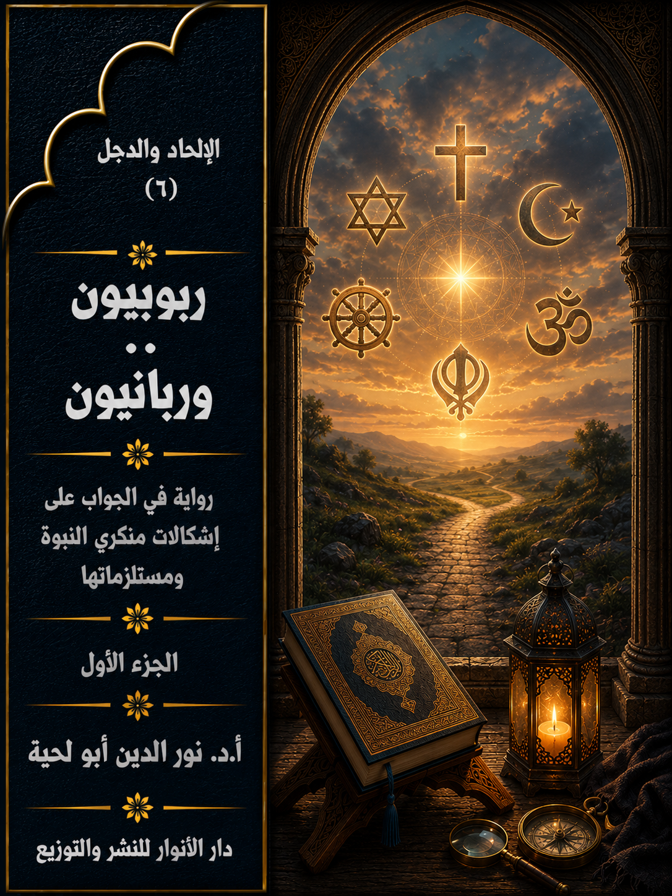

📖 الكتاب: ربوبيون وربانيون
📝 الوصف: رواية في الجواب على إشكالات منكري النبوة ومستلزماتها
📚 السلسلة: الإلحاد والدجل
✍ المؤلف: أ.د. نور الدين أبو لحية
🏢 الناشر: دار الأنوار للنشر والتوزيع
📅 الطبعة: الثانية
📥 تحميل: هنا
يحاول هذا الكتاب ـ بأجزائه الثلاثة ـ أن يجيب على كل الإشكالات التي يطرحها من يطلقون على أنفسهم لقب [الربوبيين]، وهم الذين يرون إمكانية استبدال النبوة بالعقل، ويرون أن هداية الله لهم يمكن أن تتحقق من دون حاجة لأي دين أو نبوة، وقد استثمروا في ذلك ما وقع في تاريخ الأديان من انحرافات عما تقتضيه العقول السليمة، وتتطلبه القيم النبيلة.
ولذلك فإنه ـ وبصيغته الروائية الحوارية ـ يحاول ـ وبهدوء ـ أن يحاور هؤلاء، من خلال منطلقاتهم العقلية والفكرية أولا، ثم من خلال مستلزمات تلك المنطلقات، وهي الأدلة التفصيلية التي يسوقونها لبيان الانحرافات التي وقعت فيها الأديان.
وهذا السبب هو الذي دعانا إلى مناقشة كل الانحرافات التي وقعت فيها الأديان، وبمختلف أنواعها، وبيان الاتفاق عليها مع الربوبيين، ثم بيان وجه الحق في التعامل معها.
ولهذا يجد القارئ الرواية مملوءة بذكر الكثير من مواقف الأديان والمذاهب الفكرية في كل قضية تُطرح ابتداء من القضايا المرتبطة بالله والنبوة والكتب المقدسة، وانتهاء بكل القيم الإنسانية كالسلام والعدالة والرحمة وغيرها.
وبما أن مشكلة الربوبيين هي في ذلك التعميم الخاطئ لمواقفهم، فقد بينا في الرواية خطأ ذلك التعميم، وأن كل المعاني السليمة التي يسوقونها أو يدعون إليها موجودة في الإسلام، باعتباره الدين المهيمن والصحيح الباقي على وجه الأرض، مع التنبيه إلى الأخطاء التي وقع فيها المسلمون، والتي لا علاقة لها بالدين الإلهي.
مقدمة
يحاول هذا الكتاب ـ بأجزائه الثلاثة ـ أن يجيب على كل الإشكالات التي يطرحها من يطلقون على أنفسهم لقب [الربوبيين]، وهم الذين يرون إمكانية استبدال النبوة بالعقل، ويرون أن هداية الله لهم يمكن أن تتحقق من دون حاجة لأي دين أو نبوة، وقد استثمروا في ذلك ما وقع في تاريخ الأديان من انحرافات عما تقتضيه العقول السليمة، وتتطلبه القيم النبيلة.
ولذلك فإنه ـ وبصيغته الروائية الحوارية ـ يحاول ـ وبهدوء ـ أن يحاور هؤلاء، من خلال منطلقاتهم العقلية والفكرية أولا، ثم من خلال مستلزمات تلك المنطلقات، وهي الأدلة التفصيلية التي يسوقونها لبيان الانحرافات التي وقعت فيها الأديان.
وهذا السبب هو الذي دعانا إلى مناقشة كل الانحرافات التي وقعت فيها الأديان، وبمختلف أنواعها، وبيان الاتفاق عليها مع الربوبيين، ثم بيان وجه الحق في التعامل معها.
ولهذا يجد القارئ الرواية مملوءة بذكر الكثير من مواقف الأديان والمذاهب الفكرية في كل قضية تُطرح ابتداء من القضايا المرتبطة بالله والنبوة والكتب المقدسة، وانتهاء بكل القيم الإنسانية كالسلام والعدالة والرحمة وغيرها.
وبما أن مشكلة الربوبيين هي في ذلك التعميم الخاطئ لمواقفهم، فقد بينا في الرواية خطأ ذلك التعميم، وأن كل المعاني السليمة التي يسوقونها أو يدعون إليها موجودة في الإسلام، باعتباره الدين المهيمن والصحيح الباقي على وجه الأرض، مع التنبيه إلى الأخطاء التي وقع فيها المسلمون، والتي لا علاقة لها بالدين الإلهي.
ولذلك؛ فإن في إثبات صحة الإسلام، وكون محمد صلى الله عليه وآله وسلم هو رسول الله ما يرد على طروحات الربوبيين، لأن الواقع ـ كما يقال ـ خير دليل.. خاصة وأن الربوبيين الذين يقرون بالإيمان بالله، لا ينفون النبوة بدليل عقلي، وإنما بمجرد الحدس، وانطلاقا من الواقع الديني المحرف الذي يرونه.
ولذلك كان من الواجب على كل من يريد أن يحاورهم أن يتفق معهم أولا على الضلالات التي وقعت فيها الأديان، أو وقع فيها المتدينون بها، وأنها لا تمثل الله، ولا دينه الحق، وفي نفس الوقت يثبت لهم وجود الدين الحق بالدلائل والبراهين الكافية.
وكما أن الرواية موجهة بالدرجة الأولى إلى هؤلاء الربوبيين الذين ذكرنا حالهم، فهي موجهة كذلك للمؤمنين الصادقين، ليزداودا إيمانا بدينهم ونبيهم.
وهي موجهة كذلك للراغبين في الحوار مع الآخر، سواء كان من الربوبيين أو من أهل الأديان المختلفة، ذلك أنا وضعنا في الرواية الكثير من التفاصيل التي يحتاجون إليها، وبلغة بسيطة مهذبة بعيدة عن كل أشكال التعقيد.
وهي موجهة كذلك لغير المسلمين، لأن فيها تعريفا لهم بالإسلام، وبالخلاف بينه وبين الأديان التي ينتمون إليها.
وهي موجهة كذلك للملاحدة الذين دعاهم إلى إنكار وجود الله ما يرونه من خرافات في الأديان، وخصوصا تلك التي تصور الله بصور وثنية تتنافى مع ما يقتضيه العقل والعلم، وبيان الرؤية الصحيحة المرتبطة بذلك.
وتدور أحداث الرواية حول سبعة من الربوبيين زاروا قرية المؤلف، ليتحدثوا عن الأسباب التي جعلتهم يتركون الإلحاد، ويؤمنون بالله، لكنهم عندما سئلوا عن الدين الذي اختاروه لأنفسهم ذكروا أنهم لا يحتاجون لأي دين، لأن عقولهم التي عرفتهم بالله، وهو أهم قضية في الدين، تغني عن الحاجة إلى أي نبوة أو دين.
ثم شرحوا لأهل قرية ما اقتنعوا به، والأدلة المفصلة عليه، مما أثر في الكثير منهم، وخاصة في أولئك الذين وجدوا في هذه الدعوة فرصة للتنصل من كل التكاليف التي يدعو إليها التدين.
وقد حاول أهل القرية أن يناقشوهم بكل الأساليب لكنهم لم يستطيعوا إقناعهم، إلى أن عاد أولئك الربوبيون السبعة إلى القرية من جديد، وبعد عام من بثهم لدعوتهم، ليخبروا المؤلف وأهل القرية بما حصل لهم في تلك السنة، مما جعلهم يتراجعون عن مواقفهم من الدين، وخصوصا الإسلام.
وكل فصل من فصول الرواية السبعة، حكاية لأحد أولئك الربوبيين السبعة، وكيف خرج من الربوبية إلى الربانية، والمشاهد التي مر بها، والحوارات التي سمعها.
وتتناول تلك الحوارات كل القضايا التي تطرح حول النبوة والدين، وهي:
1. الدين والعقل: وقد ناقشنا فيه الموقف من العقل بين الدين والربوبيين، وهل يستند الربوبيون حقا للعقل في إنكارهم للدين؟
2. الدين والله: وفيه حوارات مفصلة حول موقف الأديان المختلفة من الدين، بما فيها الإسلام، وبيان الانحرافات التي وقعت فيها.
3. الدين والنبوة: وفيه حوارات مفصلة حول دلائل النبوة العامة والخاصة برسول الله صلى الله عليه وآله وسلم باعتباره ممثلا لكل الأنبياء، ودينه ممثلا لكل الأديان، وقد رددنا فيه على الشبهات المختلفة التي يطرحها الربوبيون وغيرهم حول رسول الله صلى الله عليه وآله وسلم.
4. الدين والكتب: وفيه مقارنات مفصلة بين القرآن الكريم والكتاب المقدس بعهديه، باعتبار هذه الكتب الأكثر انتشارا بين المتدينين.
5. الدين والسلام: وفيه ردود مفصلة على ما يُرمى به الإسلام من العنف والإرهاب، وبيان تفوقه في كل قيم السلام على كل الأديان والمذاهب الفكرية.
6. الدين والرحمة: وفيه ردود مفصلة على ما يُرمى به الإسلام من العنف والقسوة وخاصة مع المستضعفين من النساء والعبيد والأطفال ونحوهم.
7. الدين والعدالة: وفيه ردود مفصلة على الشبهات المرتبطة بالشريعة والنظم الإسلامية والحدود والعقوبات ونحوها.
وقد رجعنا في هذا الكتاب إلى مراجع كثيرة، وخصوصا إلى ما كتبناه في سلسلة [حقائق ورقائق] من روايات تتعلق بهذه الجوانب، والتي توجهت بالخصوص للحوار الإسلامي المسيحي، ولهذا اقتصرنا منها هنا على ما يرتبط بالحوار مع الربوبيين، مع إضافات مهمة، وتبديلات في الصياغة بحسب ما يقتضيه المقام.
وننبه إلى أنا تساهلنا في التوثيقات، فاكتفينا بذكر المرجع أو الكتاب في أول كل مشهد أو في أثنائه، دون ذكر التفصيلات في كل جزئية، لأن ذلك سيصرف القارئ عن الهدف الذي تتوخاه الرواية.
البداية
القصة التي سأحكيها لكم اليوم لا تدور حول الإلحاد، ولا على أدلته، أو مناقشتها، مثلما فعلت في الحكايات السابقة من هذه السلسلة.. ولكني سأحكي لكم عن قوم يعترفون بوجود الله.. ولكنهم لا يمنحونه أي صلاحيات، سوى صلاحية الخلق، أو تدبير بعض الشؤون المادية.. أما ما عدا ذلك، فهم يعزلونه عزلا تاما.
وقد بدأت هذه الظاهرة تنتشر في قريتي البسيطة التي لا تختلف عن سائر قرى ومدن العالم منذ أن زارنا بعض العلمانيين المتطرفين الذين حاولوا أن يقنعوا شبابنا وكهولنا وأهل الفكر فينا بعدم تدخل الله في الشؤون السياسية والاقتصادية، بل حتى الاجتماعية.. وأن لله محلا واحدا في حياتنا لا يعدو المساجد أو المواضع التي نصلي فيها.. أما الحياة فهي لعقولنا وتدبيرنا.
ثم قدم إلينا من يفسر القرآن الكريم بطريقة سماها عصرية، خالف بها جميع المفسرين والمحدثين والفقهاء، ومن جميع طوائف المسلمين، حيث لم يعد الإسلام ذلك الدين المضبوط بضوابطه المعروفة، وإنما هو استسلام لله، وتسليم له، ولا تهم تلك الضوابط والقيود.. فيكفي أن يتحقق التسليم، ولو من دون أي شعيرة تمارس، ولا واجبات تؤدى، ولا منكرات ينتهى عنها.
ثم تحولت الصلاة التي هدد الله من تخلف عنها إلى مجرد دعاء، يقال ولو مرة في العمر، لينجو صاحبه من كل ذلك الوعيد والتهديد.
وهكذا تحولت كل شعائر الدين التي كان أهل قريتي يحرصون عليها، وبحسب الشروط التي ذُكرت في المصادر المقدسة، والتي اتفق الفقهاء على أصولها، وإن اختلفوا في بعض كيفياتها وفروعها.. تحولت جميعا إلى مجرد أسام لا وجود لها في الواقع إلا بحسب ما يشتهيه صاحبها، لا بحسب ما ورد التصريح به في القرآن الكريم.
وبعد كل هذه الجولات التشكيكية.. جاءنا وفد من الذين يطلقون على أنفسهم لقب [الربوبيين] من منكري النبوات والأديان.. والذين استطاعوا أن يحققوا كل أمنيات من سلفهم، بل زادوا عليها.
ومشكلة هؤلاء أنهم يختلفون فيما بينهم اختلافا شديدا.. حتى أنه يمكن اعتبارهم منقسمين على أنفسهم بحسب أعداد أفرادهم.. فلكل واحد منهم دينه الخاص الذي يتميز به عن غيره.. وهذا مصدر صعوبة تسجيلي لأحداث هذه القصة.
لكني بحمد الله، وحتى لا أظهر بمظهر المتحيز، ذكرت أقوالهم جميعا.. ثم ذكرت الردود عليها.. لا مني، ولا من المتكلمين وعلماء الدين.. بل منهم أنفسهم.
وحتى لا أخلط بداية القصة بنهايتها.. سأحكي لكم ما حصل بالضبط.. وربما يفهم بعضكم بالإشارة، ما لا يحتاج معه للعبارة.. ولذلك بدأت بذكر مقولاتهم، وكما عبروا بها عن أنفسهم، ومن خلال مصادرهم.. والعاقل قد يكفيه حكاية القول عن تكلف الرد عليه.
في صباح ذلك اليوم الجميل من أيام الربيع، سمعت صائحا يصيح في الطريق، وبأعلى صوته قائلا: لقد شرّفنا اليوم سبعة من دعاة الإلحاد الكبار، بعد أن منّ الله عليهم بالهداية إليه.. وأنتم مدعوون جميعا لسماع أحاديثهم، للتعرف على الحجج والبراهين التي ألجأت عقولهم إلى الإيمان، ليصبحوا من دعاته الكبار.
فرحت كثيرا بذلك الخبر السار، ورحت أبشر به في كل المحال، مستعملا كل وسائلي ووسائطي لذلك، وأنا أرجو من ذلك أن أنال الثواب العظيم عند الله؛ فالدال على الخير كفاعله.. لكني لم أعلم أبدا ما سيحصل، وما نتيجة ما عملته بنفسي، وبتسرعي.
ذلك أني بعد جلوسي في ذلك المحل، وسماعي مع الجمهور العريض الحاضر للحجج التي أوردها زوارنا الكرام للدلالة على وجود الله وعظمته، والتي قادت عقولهم إلى الإيمان، وهي لا تختلف كثيرا عن الحجج التي أوردها المتكلمون والعلماء في كل العصور، وإن كانت بصياغة مختلفة متناسبة مع عصرنا.
ما فرحت بذلك الحديث حتى نغصت إجاباتهم على الأسئلة التي أوردها الحضور علي فرحتي، ذلك أني رأيت أنها دعت إلى نوع جديد من الإلحاد أكثر عقلانية وتطورا.
فالإلحاد الأول ـ والذي كان يتبناه زوارنا الكرام ـ ينفي وجود الله مطلقا.. وأما الثاني، فإنه لا ينفي وجوده، ولكن ينفي فاعليته وتأثيره، ويجعله مجرد صانع مبدع، لا علاقة له بخلقه إلا تلك العلاقة الهشة التي لا معنى لها.. والاعتراف به حينها مثل الاعتراف بمدير أو رئيس من غير الانصياع لأوامره، لا تكبرا وتعنتا، ولكن لأنه لا يستطيع أن يأمر أو ينهى، لأن دوره فقط أن يكون مديرا.. أو في أحسن أحواله يكون ملكا يملك ولا يحكم، ويخلق ولا يتصرف إلا في حدود ضيقة جدا.
دعوني لا أستعجل في أحكامي، فقد أكون مخطئا فيها.. ولهذا سأنقل لكم الحوار حرفيا كما سمعته، وسترون بأنفسكم دقة ما نقلته عنه(1).
__________
(1) الحوار الموجود هنا منقول ببعض تصرف من مواقع دعاة الربوبية وغيرها، ومنها مقال بعنوان: أسئلة حول الربوبية [مدونة الربوبي العربي | الرب أعطانا عقلا لا دينا]، وغيرها. وسأكتفي بالإشارة إلى هذا عن التوثيق لكل ما أذكره من هذه المواقع.
1. الرؤى والتصورات:
فبعد انتهاء زوارنا الكرام من محاضراتهم القيمة، والتي أعجبتني كثيرا، حيث ذكر كل واحد منهم أسباب إلحاده، ثم كيف تحول إلى الإيمان، والأدلة التي قادته إليه.. طرح مدير الجلسة عليهم هذا السؤال، والذي لا أدري هل كان سؤالا اعتباطيا، أم أنه نسق مع الزوار قبل طرحه.
لقد قال لهم: بعد تخلصكم من الإلحاد، واقتناعكم بالإيمان، ما هو الدين الذي رأيتموه أهلا لأن يعرفكم بربكم، وبمراضيه وكيفية التواصل معه؟
قال أحدهم، وبتلقائية: نحن مع اختلافنا مع بعض في الكثير من التفاصيل إلا أنه يمكنك أن تسمي الدين الذي ارتضته لنا عقولنا باسم [الربوبية]
تصورت في البداية أنه يقصد ذلك المعنى المشتق من الرب، والذي نسبه الله تعالى لعباده الصالحين فقال: ﴿مَا كَانَ لِبَشَرٍ أَنْ يُؤْتِيَهُ اللَّهُ الْكِتَابَ وَالْحُكْمَ وَالنُّبُوَّةَ ثُمَّ يَقُولَ لِلنَّاسِ كُونُوا عِبَادًا لِي مِنْ دُونِ اللَّهِ وَلَكِنْ كُونُوا رَبَّانِيِّينَ بِمَا كُنْتُمْ تُعَلِّمُونَ الْكِتَابَ وَبِمَا كُنْتُمْ تَدْرُسُونَ﴾ [آل عمران: 79]، وقال في آية أخرى: ﴿وَكَأَيِّنْ مِنْ نَبِيٍّ قَاتَلَ مَعَهُ رِبِّيُّونَ كَثِيرٌ فَمَا وَهَنُوا لِمَا أَصَابَهُمْ فِي سَبِيلِ اللَّهِ وَمَا ضَعُفُوا وَمَا اسْتَكَانُوا وَاللَّهُ يُحِبُّ الصَّابِرِينَ﴾ [آل عمران: 146]، فالرباني والرِّبي هو المنسوب إلى الرب.. لكني وجدت أنه لا يقصده أبدا.. بل يقصد معان أخرى.. أدعه يشرحها لكم.
سأله حينها مدير الجلسة قائلا: ما الذي تقصده بالربوبية؟.. هل هي نسبة إلى الرب سبحانه وتعالى؟
قال الربوبي: لك أن تقول ذلك.. لكن لا على المعنى الوارد في الأديان.. فالرب عندنا شيء آخر تماما أكثر جمالا وقداسة وقوة وعظمة.. هو عندنا ليس بتلك الصورة المشوهة الواردة في الأديان.. بل هو (المصمم الأعظم) أو هو (قوّة كونية هي مصدر الخلق)..ولهذا فإن لنا مصطلحاتنا الخاصة بنا، والتي نتحاشى فيها ما وقعت فيه الأديان.
قال المدير: أرى أن لك موقفا سلبيا من الدين.. فهل هو مرتبط بدين معين أم بجميعا؟
قال الربوبي بسرعة وتلقائية: بل بجميعها.. وأنا وكل الربوبيين وإن اختلفنا في الكثير من الأمور إلا أننا نتفق في موقفنا السلبي من الأديان جميعا.. فبسبب تحريفاتها وتشويهاتها للمصمم الأعظم وقعت ووقع الكثير من أصدقائي في الإلحاد.
قال آخر(1): إن شئتم أن نحدثكم بلغة علمية أكاديمية، فإنه يمكن القول بشكل عام أن الربوبية هي التصور الذي يرى أن العقل وحده ـ وبدون أن يكون في حاجة إلى وحي أو إلهام ـ قادر على الوصول إلى المبادئ الأساسية الصحيحة المشتركة للدين والأخلاق.
قال آخر: ولهذا عرف بعض علمائنا الربوبية بأنها: الرؤية التي تذهب إلى أن الدين الحق هو الدين الطبيعي.. والمقصود باللاهوت الطبيعي أو الدين الطبيعي: الدين الكلي، العالمي، الذي يمكن التوصل إلى مبادئه الأساسية البسيطة من خلال العقل البشري.
قال آخر: وبمثل ذلك عرفها جون هيك بأنها: المذهب الذي يرى اللاهوت الطبيعي وحده كاف من الناحية الدينية.. وبذلك فإن كل هذه التعريفات تدور حول كفاية العقل في الوصول إلى الحقائق الدينية والأخلاقية الأساسية دون اللجوء للوحي.
قال آخر(2): وحتى أبسط لكم هذا؛ فإن العقيدة الربوبية عقيدة بسيطة جداً، لها فقط ثلاثة مبادئ أساسية تقوم عليها.. أولها الإيمان بإله واحد خالق، عظيم، هو موجد الكون ومنظمه، هو أعظم من أن تدركه أو تدرك خصائصه حواس البشر القاصرة.
قال آخر: وثانيها الإيمان بأن هذا الإله العظيم قد وضع في هذا الكون ـ بكل ما حوى ـ النظم والآليات التي تضمن تسييره علي النحو المرسوم له بواسطة هذا الإله، ومن ثم فإنه لا يتدخل بشكل مباشر في سيره وتفاعلاته وتطوره، فهذا الكون يسير في الطريق المرسوم له ووفق القواعد المحددة التي تحكم حركته.
قال آخر: وانطلاقاً من هذا المبدأ يؤمن الربوبيون بفكرة التصميم الذكي للكون وللإنسان، وهي تشير إلى عدم الحاجة للتدخل من الإله الأعظم في شؤون الكون، فذكاء التصميم يجعله مناسبا دائما، وليس في حاجة للتصحيح أو التعديل بتدخل إلهي طارئ خارج إطار التنظيم أو القوانين التي بنى عليها الكون، عبر إرسال الرسل أو جلب الكوارث على شكل متعمد أو دفعها أو غير ذلك، لذا يحلو لهم تسمية الخالق بالمهندس العظيم.
قال آخر: أما المبدأ الثالث، فهو أن الربوبيين لا يؤمنون بالأديان التي تدعي أنها سماوية، ويدعي أنبياؤها بأنهم مرسلون من الذات الإلهية العليا، فهم لا يصدقون بأن الإله الأعظم قد طلب من هؤلاء الأنبياء بأن يرشدوا البشرية لمعرفته أو لتعاليم وأوامر معينه يريدنا أن نتبعها.
قال آخر: وجميع الربوبيين تقريباً يتفقون على هذه الأسس، وقد يختلفون فيما وراءها.. لكن لا يجب أن نفهم العقيدة الربوبية بأنها مثل الأديان الأخرى التي لها هيكل واضح من الأفكار والمعتقدات، فالربوبية هي عقيدة فضفاضة جداً، لكن هذا لا يعيبها، فهي ليست دينا، وإنما هي فكرة بسيطة تتلخص في جملة واحدة هي (هناك إله خلق الكون وخلق النظم التي تحكم حركته، وهناك منطق والأديان غير صحيح)
قال المدير: أرجو ألا أظهر أمامكم بمظهر المقصر في المطالعة والبحث.. لكني لم أسمع بهذا من قبل، لأني كنت أتصور أن كل مؤمن لابد أن يكون حتما ضمن أي دين.. فمتى ظهر هذا النوع من التفكير؟
قال أحد الربوبيين(1): منذ أن تخلى الإنسان عن الأسرار الغامضة، والقوى الغيبية الخارقة للطبيعة، والتي كانت أداة التفسير الأولى للظواهر الطبيعية والمعتقدات في القرون الوسطى.. حيث لم يكن العقل أداة أولية في اكتشاف الحقائق، واقتصرت وظيفته في الغالب على مهمة الدفاع عن الإيمان والحقائق التي أتى بها الوحي.. ومع بزوغ فجر النهضة الأوربية اكتشف الإنسان الطبيعة واعتبر نفسه جزءا منها، وسادت القناعة أن جميع الحقائق لابد أن تكون على انسجام مع الطبيعة..
قال آخر(3): ومع تقدم الفكر في القرن السابع عشر، شاع الاعتقاد بأن المبادئ بشكل عام إنما تُقبل ويتمسك بها بحسب ما لديها من أسباب كافية لتبريرها، وعليه فإن كل الأنظمة سواء كانت إنسانية أو إلهية، لابد أن تقدم من الأسباب ما يبرر وجودها في ضوء الطبيعة والعقل.
قال آخر: ولهذا راج بين المثقفين استعمال كلمة العقل والطبيعية دون تمايز واضح بين مفهومهما؛ فقد كان مصطلح العقل في تلك الحقبة ـ حقبة عصر التنوير ـ يعني ضمنا العلم النيوتوني أكثر مما يعني الفلسفة الأرسطية.. لقد كان النقد والعقلانية هي روح ذلك العصر، وشعر الناس أنهم في حاجة إلى القدرة على إعطاء أسباب كافية لمعتقداتهم، ولم يكن الدين ليستثنى من مقصلة النقد والامتحان العقلي.
قال آخر: ومما يذكره المؤرخون في هذا أنه في بداية القرن السابع عشر دعا البروفسور اللاهوتي الإنجليكي ريتشارد هوكر (1554 ـ 1600) إلى بناء نظام كنسي لا يُستمد فقط من الوحي، ولكن من الطبيعة أيضا؛ فالطبيعة ملك لله وقوانينها من صنعه، فهي كلمة الله المشاهدة.
قال آخر: وقد التمس هوكر حكم العقل أيضا وعظم من شأنه في أمر قبول الاعتقاد الديني، وكان يذكر أن ثقة الإنسان في اعتقاده لا تضمن له صحته في نفس الأمر، لكن عقلانية الأسباب التي بني عليها الاعتقاد هي التي تضمن لنا ذلك، وهي وحدها التي تؤكد لنا أن هذه المعتقدات من الله وليست من روح خبيثة.
قال آخر: وقد كان هوكر يرى أن اتِّباع الدين بدون الاصغاء إلى صوت العقل تصرف يشبه تصرف الماشية في القطيع.. لقد كان يعبر عن روح عصره الذي كان يؤكد على أنه لا يمكن لأي نوع من الحقائق أن تتناقض مع العقل والطبيعة.
قال آخر: وفي نهاية القرن السابع عشر أصبح الخلاف ملحوظا بين المحافظين الذين يؤيدون عقلانية الدين التقليدي بما فيه من معجزات وخرق لقوانين الطبيعة؛ وبين أولئك الذين يرفضون هذه الأمور، ودار النقاش حول القيمية الدلالية للمعجزات، وأهمية الدين الطبيعي بالمقارنة بالدين الموحى به، وحقيقة الكتاب المقدس، وسلطة الوحي، والعلاقة بين الوحي والعقل.. وقد كانت هذه بداية الجدل الربوبي الذي امتد خلال النصف الأول من القرن الذي يليه.
قال آخر: بعد ذلك انتشرت الربوبية بين مفكري الغرب على نطاق واسع في القرنين السابع عشر والثامن عشر الميلادي، وكانت انجلترا من أبرز أماكن الانتشار.. وقد بدأت هناك باللورد إدوارد هربرت (1583 ـ 1648)، الذي لقب بأبي الربوبيين أو الطبيعيين، وقد حددت كتاباته المبادئ الرئيسية للمذهب الربوبي.
قال آخر: لقد اهتم هربرت ببيان المفاهيم المشتركة للأديان والتي يمكن من خلالها تحديد الحقيقة الدينية.. وهي كما تصورها هربرت تتمثل في أن هناك ربا أعلى.. وأن هذا الرب يجب أن يعبد.. وأن العبادة تتشكل من مجموع العفة مع التقوى.. وأنه يجب على البشر أن يتوبوا من خطاياهم ويقعلوا عنها.. وأن الجزاء والعقاب في الدنيا والآخرة قائم على عدل الله وخيريته.
قال آخر: وقد عرفت هذه المبادئ الخمسة بالمقولات الخمس للربوبيين الإنجليز، وهي ـ بحسب هربرت ـ تشكل نواة كل الأديان بما في ذلك المسيحية قبل أن يسلم الناس أنفسهم لأطماع وخبث الكهنوت.
قال آخر: وقد نظر هربرت إلى هذه المبادئ على أنها تعبر عن كامل العقيدة المسيحية الكاثولويكية الحقيقية في أصلها الأول قبل أن تفسد وتحرف.
قال آخر: ويمكن القول أن هذه المقولات الخمس تشكل عنده دين العقل.. وما هو مخالف لهذه المقولات الخمس يعتبر مخالفا للعقل، وبالتالي باطل.
قال آخر: وأما ما وراء العقل مما لا يتعارض معه فقد يكون موحيا به، لكن كونه معروفا بين الناس كوحي لا يعني أنه وحي في نفس الأمر؛ بل هو تراث، وصدق هذا التراث متوقف على الراوي، ولا يمكن بحال أن يكون أكثر من مجرد احتمال.
قال آخر: وأما التباين والاختلاف الذي نراه بين الأديان فذلك يرجع إما إلى خداع النفس، أو المكر الكهنوتي، أو التأويل المجازي للطبيعة، أو عمل الخيال.
قال آخر: وقد كرس هربرت أحد أبرز أعماله للتحقق من هذه النتيجة التي جاء بها عن المفاهيم المشتركة الدينية فخرج عمله في الصورة التي تعرف الآن بعلم مقارنة الأديان.. ولذلك يعتبر هربرت من أوائل الذين بذلوا جهدا منهجيا في مجال مقارنة الأديان.
قال مدير الجلسة: بحسب قولكم هذا؛ فإن الربوبية لا تنكر الأديان، بل هي تبحث فيما يوافق العقل منها.. والدليل على ذلك ما فعله هربرت.
قال أحد الربوبيين: نحن حدثناك عن المرحلة الأولى في الربوبية.. أو عن صنف من أصنافها أو مدرسة من مدارسها، وهي المدرسة التي يطلق على أصحابها الربوبيين المسيحيين، وهم الربوبيون الذين دافعوا عن الدين الطبيعي، وفي نفس الوقت لم يتخلوا عن المسيحية، وهم على درجات متفاوتة في مقدار ما يقبلونه ويرفضونه منها.
قال آخر: لكن بشكل عام يمكن القول أنهم آمنوا بإمكان الوحي والمعجزات والتدخل الإلهي الشخصي في حياة البشر، ورأوا أن مضمون الوحي هو نفس جوهر الدين الطبيعي، وأن رسالة المسيح دخلها الإفساد بواسطة القساوسة والكهنة الذين وظفوا الدين لتحقيق أغراضهم الذاتية من حيازة السلطة والمال.
قال آخر: ولم تكن تلك الفكرة.. أي فكرة اللاهوت الطبيعي فكرة جديدة فقد قال بها لاهوتيون عقليون في القرون الوسطى، مثل توما الإكويني، والذي نصر اللاهوت الطبيعي، وكان تصوره للعلاقة بين الوحي والعقل مقبولا بشكل عام لدى المسيحيين المحافظين.
قال آخر: حيث ذهب الإكويني إلى أن العقل قادر على التوصل إلى معرفة صحيحة عن الله ـ وإن لم تكن مكتملة ـ أما الوحي فهو المصدر الذي يعطينا من المعارف ما هو خارج نطاق قدرات العقل، أي يعرفنا ما لا يستطيع العقل أن يصل إليه بمفرده، ثم إن هذه المعارف الحصرية التي يأتينا بها الوحي لا يمكن أن تتناقض مع العقل.
قال آخر: وذلك على خلاف اللاهوتيين العقليين الذين تقبلوا الوحي المسيحي جملة وتفصيلا.. ذلك أن الربوبيين المسيحيين جعلوا العقل هو الحكم على الوحي؛ فقبلوا منه ما لا يناقض العقل والطبيعة، وكان بعضهم، كجون لوك، والذي ألف كتابا في معقولية المسيحية، يميل إلى الشك في الوحي المسيحي، مع اعتقاده بإمكان الوحي، وبعضهم تحفظ في قبول المعجزة، وبعضهم شكك في قيمتها الاستدلالية.
قال آخر: ولم ينكر إدوارد هربرت ـ صاحب المقولات الخمس للربوبيين الانجليز ـ الوحي، لكنه أنكر أن يكون للوحي أي سلطة معرفية إلا على الشخص الذي أوحي اليه، أما بالنسبة الآخرين فهو لهم مجرد تراث.
قال آخر: وهكذا شكك تشارلز بلونت (1654 ـ 1693) ـ خليفة هربرت ـ في قصص المعجزات الواردة في الكتاب المقدس، وأنكر عقيدة الثالوث والخلاص.
قال آخر: وأكد جون تولاند (1670 ـ 1722) أنه ليس ثمة شئ في الكتاب المقدس يناقض العقل، وليس في الكتاب المقدس ما يتخطى نطاقه أيضا؛ أي أنه ينكر أن يكون في الكتاب المقدس ما هو فوق نطاق القدرات العقلية، كسر الثالوث مثلا. فليس في المسيحية ـ بحسب تولاند ـ أي أسرار تتجاوز حدود العقل.
قال آخر: ومثلهم بنجامين فرانكلين (1706 ـ 1790) الذي قال:إن المسيحية قد لا تكون صحيحة الصحة الصارمة لكنها بكل تأكيد نافعة بل هي جزيلة الفائدة، بينما أن مذهبا ربوبيا قد يكون صحيحا لكنه لن يكون ذا نفع أو فائدة.
قال آخر: ومع تقدم النقاش أصبحت الخطوط الفاصلة بين اللاهوتيين العقليين والمسيحيين الربوبين أكثر وضوحا؛ حيث بدأت الانتقادات الجذرية الموجهة للكتاب المقدس تظهر، والبعض ذهب إلى أن الوحي ليس ضروريا، وأنه إذا كان ثمة وحي فعلا فليس له سلطة معرفية، وأن الكتاب المقدس ملئ بالأخطاء والتناقضات.
قال آخر: ولذلك كان الكتاب الأرذوثوكس ينظرون إلى الربوبيين المسيحيين كملحدين كفرة يريدون إعادة بناء المسيحية بإزالة كثير من مبادئها الجوهرية كما هي مقررة في المسيحية التقليدية ـ كعقيدة الخطيئة الأصلية، والخلاص، والثالوث، وغيرها ـ لذلك كانوا يستعملون كلمة ربوبي بالمعنى الإزدرائي ويطلقون عليهم [ربوبيون] بقصد الإساءة.
قال المدير: بناء على ما ذكرتموه يمكن تقسيم الربوبيين باعتبار موقفهم من الإيمان بالمسيحية إلى ربوبية مسيحية، وربوبية لا دينية، والعامل المشترك بينهما: اعتقاد كل منهما أن العقل يستطيع أن يبرهن على وجود الله، وأن يكتشف قوانين الأخلاق.
قال أحد الربوبيين: أجل.. فقد زعم جون لوك وصمويل كلارك على سبيل المثال ـ وهما من الربوبيين المسيحيين ـ أن الأخلاق الطبيعية الوضعية يمكن أن تكون علما تنطبق سننه الأخلاقية على سنن الأخلاق المسيحية.
قال المدير: حدثتمونا عن الربوبيين الدينيين؛ فحدثونا عن الربوبيين اللادينيين.
قال أحد الربوبيين: الربوبيون اللادينيون هم الذين تخلوا عن المسيحية وكل الأديان تماما، واعتقدوا أن العقل قادر على وضع دين طبيعي عالمي ذي محتوى عقدي قليل ومحتوى أخلاقي عملي أكثر.
قال آخر: ورأوا أنه ليس ثمة حاجة إلى الوحي طالما أن الإنسان يستطيع بواسطة العقل وحده أن يبرهن على وجود الله، وأن يكتشف قوانين الأخلاق، وبالتالي فلا حاجة لخرافات وأساطير اليهود القديمة وغيرها.
قال آخر: وكان منهم من يرى في المسيح معلما أخلاقيا دعا إلى المبادئ الأخلاقية ذاتها الموجودة في الكونفوشوسية والإسلام والرواقية وغيرها من أديان العالم، وأن تلك الأديان والمذاهب جميعا متشابهة في أصلها، والسبب يعود إلى كون جميع البشر يتمتعون بالملكات العقلية ذاتها والحس الأخلاقي نفسه.
قال آخر: والغالب أن اسم الربوبيين إذا أطلق ينصرف على أصحاب هذا القسم.
قال آخر: وعليه يمكن القول أن معظم الربوبيين يعتبرون دين الوحي ـ أي الدين القائم على الوحي ـ من نسج الخيال.
قال آخر: وهم يرون أن الله أراد أن تسعد مخلوقاته ورسم الفضيلة كوسيلة لهذا الغرض.. ولأن إحسان الله عام لا يحابي أحدا، فإنه ضمن أن تكون المعرفة اللازمة للسعادة متاحة للجميع، لذلك لا يمكن أن يكون الخلاص معتمدا على وحي خاص.
قال آخر: وبذلك؛ فإن الدين الحق هو تعبير عن الطبيعة الإنسانية الكلية.. وهذا الدين جوهره العقل، ولذا فهو واحد في كل مكان وزمان..
قال آخر: أما التعاليم والتقاليد الدينية الخاصة لأديان مثل المسيحية والإسلام واليهودية، فنشأت من سذاجة التصديق، والطغيان السياسي والكهنوتي، وقد تسببت هذه التقاليد الدينية الخاصة في إفساد العقل، وتغطية الدين الطبيعي بالشوائب.
قال المدير: فهمنا هذا.. فهل يتفق هؤلاء في مواقفهم من الأديان، أم يختلفون؟
قال أحد الربوبيين: الربوبيون مدارس وأصناف كثيرة.. منهم ربوبيون غير معادين للمسيحية وللأديان بشكل عام.
قال آخر: ومنهم الربوبيون المعادون للأديان وللوحي المسيحي ـ اليهودي بشكل خاص.. وهم الذين شنوا هجوما على الأسفار المقدسة، وأظهروا تناقضاتها وسخافتها المنافية للعقل وسخروا منها، وكانت أعمالهم تمثل طلائع النقد الجدي للكتاب المقدس.
قال آخر: وقد صنف القسيس الإنجيلي صمويل كلارك (1675 ـ 1729) الربوبيين اللادينيين بحسب معتقداتهم إلى أربعة فئات.. الأولى، أولئك الذين يرون أن الله هو الموجود السرمدي اللامتناهي، الغني العاقل، الذي خلق العالم، لكنه لا يهتم على الإطلاق بحكم العالم أوالسيطرة عليه، ولا يولي أي رعايه له ولمن فيه.
قال آخر: والصنف الثاني.. من يؤمنون بالموجود الأعلى السامي المتصف بالعناية الإلهية، لكنهم يقيدون عناية الله وسلطته بالمجال الطبيعي في العالم، وبالتالي فإن الله، بالنسبة لهؤلاء، لا يلتفت إلى أخلاقيات الأفعال الإنسانية من خير وشر؛ بل تعتمد هذه الأمور على القوانين البشرية الوضعية الاعتباطية.
قال آخر: والصنف الثالث، هم الذين آمنوا بالرب ذي السيادة الكاملة، الذي تمتد سلطته وحكمه وعنايته إلى كل شيء في العالم الطبيعي والأخلاقي، وهو يحكم العالم وفق صفاته ـ العدالة المطلقة، الحقيقة المطلقة، الخير المطلق ـ لكنهم ينكرون أي حالة مستقبلية للإنسان بعد الموت.. أي ينكرون البعث.
قال آخر: والصنف الرابع، هم الذين يؤمنون بأن الله واحد سرمدي لا متناهي عاقل قادر حكيم، وهذا الإله متصف بالعدل المطلق والخير المطلق والحق المطلق وكل الصفات الأخلاقية الأخرى، كما هو الحال بالنسبة للكمالات الطبيعية، وهذا الإله صنع العالم لتتجلى قدرته وحكمته ولينشر خيره وسعادته على مخلوقاته، وهذا الإله يدبر أمر العالم من خلال عنايته الحكيمة المستمرة، ويحكمه وفقا للقوانين الأبدية للعدالة الإلهية اللانهائية، والإنصاف والخير والرحمة والحق، وأن الإنسان مكلف بواجب أخلاقي بناء عليه سيكون الجزاء والعقاب في مرحلة مستقبلية.
قام بعض الحضور، وقال: اسمحوا لي أن أتدخل في هذا.. حيث أرى أن ما ذكرتموه عن الربوبيين اللادينيين يتوافق تماما مع ما نسبه علماء الكلام المسلمون إلى البراهمة الهنود، فهم أيضا أنكروا النبوات.
قال آخر: وقد قال ابن حزم عنهم: (ذهبت البراهمة وهم قبيلة بالهند فيهم أشراف أهل الهند ويقولون أنهم من ولد برهمي ملك من ملوكهم قديم ولهم علامة ينفردون بها وهي خيوط ملونة بحمرة وصفرة يتقلدونها تقلد السيوف وهم يقولون بالتوحيد على نحو قولنا أنهم أنكروا النبوات.. وعمدة احتجاجهم في دفعها أن قالوا لما صح أن الله عز وجل حكيم وكان من بعث رسولا إلى من يدري أنه لا يصدقه فلا شك في أنه متعنت عابث فوجب نفي بعث الرسل عن الله عز وجل لنفي العبث والعنت عنه.. وقالوا أيضا إن كان الله تعالى إنما بعث الرسل إلى الناس ليخرجهم بهم من الضلال إلى الإيمان فقد كان أولى به في حكمته وأتم لمراده أن يضطر العقول إلى الإيمان به قالوا فبطل إرسال الرسل على هذا الوجه أيضا ومجيء الرسل عندهم من باب الممتنع)(4)
قال أحد الربوبيين: يمكنكم أن تقولوا ذلك.. ولهذا تجدون الكثير من أصحابنا يجلونهم ويحترمونهم.. لكني شخصيا لا أصدق هذا.. فنسبة إنكار النبوات إلى البراهمة لا تخلو من تأمل.
قال آخر: أجل، وقد ذكر النوبختي في كتابه (الآراء والديانات) أن البراهمة أثبتوا الخالق والرسل والجنة والنار، وزعموا أن رسولهم ملك أتاهم في صورة البشر.
قال آخر: بل قد رفع عبد الرحمان بدوي من وتيرة التشكيك هذه حيث إنه وبعد بحث وتقص ومتابعة لكلمات وأقوال العلماء المسلمين حول معتقدات البراهمة رأى (أن الروايات التي نجدها لدى المؤلفين الإسلاميين عن البراهمة بحسبانهم منكري النبوة إنما ترجع إلى كتاب (الزمرد) لابن الراوندي، جازما بأن ابن الراوندي حينما يدع البراهمة يطعنون في الأديان المنزلة إنما يخفي تحت هذا القناع عقيدته الخاصة)، ومحتملا أن سر اختياره لمدرسة هندية وهي مدرسة البراهمة لينسب إليها تلك الأقوال، هو أنه (تبع سنة قديمة تضع على لسان حكماء الهند أقوالا مثل هاتيك)(5)
قال آخر: وهكذا نُسِب هذا التفكير النير إلى أبي العلاء المعري، حيث يذكر مؤرخوه أنه تبنى مذهب البراهمة.. ولذا عدّه بعض أصحابنا من أنصار الربوبية، بالنظر إلى ما ورد في بعض الأشعار المنسوبة إليه.
قال آخر: لكني أرى خلاف ذلك تماما.. فمثل هذا التفكير النير لا يمكن أن يظهر في المشرق، فهو في عادته يتعلق بالخرافات والأديان.. ولهذا فإن المنشأ الحقيقي لهذا النوع من التفكير هو بلاد الغرب، فهي المنبت الأساس للفكر الربوبي المعروف في العصور المتأخرة.
قال آخر: وهم يشملون الكثير من فلاسفة عصر التنوير، والذين تبنوا الاعتقاد بالربوبية، ومنهم الشاعر والفيلسوف الفرنسي فولتير (توفي 1778م)
قال آخر: ومن العلماء المعاصرين أنطوني جيرارد نيوتن فلو (1923م ـ 2010م)، وهو الذي كان من المنظرين ولعقود طويلة للإلحاد، ثم في أخريات حياته تحوّل إلى الاعتقاد بالربوبية، ونُسب هذا الاعتقاد أيضاً إلى بعض رؤساء الولايات المتحدة الأمريكية.
قال آخر: هذا عن ماضينا، أما اليوم فإن أعضاء جماعتنا آخذون بالانتشار، مستعينين بسهولة أفكارنا وبساطتها واعتضادها بالعقل وتقديرها للعلم، بالإضافة إلى الضعف الذي ينتاب الفكر الديني على أكثر من صعيد، حيث يسود التشدد والتعصب الدينيين وتنتشر الخرافة والاعتقادات البالية، ناهيك عن احتراب الجماعات الدينية وتقاتلها، وشهرها للسيف في وجه كل من لا يتفق معها في الرأي وارتكابها الجرائم باسم الدين.
قال آخر: بل إن الفكر الربوبي آخذ بالتبلور كمذهب له تشكيلاته وأطره التنظيمية، فثمّة اتحادٌ عالمي للربوبيين، ولديهم مركز في العاصمة الأمريكيّة واشنطن.. بل إن الكثير من الأدلة تشير إلى أن الربوبية هي من أكثر المذاهب انتشاراً في أوروبا.
__________
(1) انظر: النزعة الربوبية، محمد سيد سلامة، نماء للبحوث والدراسات.
(2) كلام الربوبيين هنا مقتبس من حديث ربوبي في: مناظرة مع ربوبي، منتدى التوحيد.
(3) المرجع السابق، بتصرف.
(4) الفصل في الملل والأهواء والنحل (1/ 63).
(5) استفدنا المادة العلمية هنا من كتاب: عالم دون أنبياء،، دراسة نقدية في الفكر الربوبي، حسين الخشن، ص18، فما بعدها.
2. الآثار والمواقف:
بعد أن انتهى الربوبيون من أحاديثهم، والتي شكل الشق الأول منها قمة الإيمان المؤسس على العقل والعلم، وشكل الشق الثاني قمة الانحراف عن مقتضياته ومستلزماته، خرجت من ذلك المجلس، وأنا لا أدري هل أفرح بهم وبحضورهم وأسرّ، لأنهم أثبتوا الإيمان بالله، ومن خلال العقل والعلم، أو أحزن وأتألم لأنهم استعملوا من تثبيتهم للإيمان بالله شباكا لقلع الإيمان برسله وشريعته ودينه وكل ما يمت بصلة لتواصله مع خلقه.
وليت ما حصل كان مجرد آلام لحظية اعترتني.. أو تتعلق بهم.. بل إن ما حصل فوق ذلك بكثير، وهو ليس غريبا ولا مستبعدا.
ذلك أن الملاحدة الذين كانوا يصرخوا بإلحادهم في كل المحال، لم يستطيعوا أن يؤثر في عقلاء الناس ومثقفيهم بقدر ما استطاع أولئك الربوبيون، لأنهم لا يجادلون في وجود الله، وإنما في رسله ودينه وما يستلزمه ذلك الإيمان من تكاليف ترتبط بالحياة جميعا.
وقد نشأ عن ذلك المروق عن الإيمان بالنبوة والدين والشريعة انحرافات كثيرة عن القيم النبيلة، حتى تلك الفطرية منها.
ذلك أن الجميع ـ مهما اختلفت عقولهم ـ يرجعون عند الخلاف فيها للدين المقدس الذي يحكم بينهم، لكنهم بعد تلك الأفكار، وبعد تخليهم عن ذلك المعيار المقدس، لم يبق هناك أي معيار يمكنه أن يتحكم في التصرفات، أو يحد من الغرائز.
لقد التقيت بعد فترة وجيزة من حضوري لذلك المجلس.. رجلا ينصح أخاه المتأثر بأولئك الربوبيين في أن يكف عن أكل الربا، ويذكر له الآيات التي تحرمه.. لكنه لم يكد يصغي له، بل أجابه، وهو يسخر ـ بقوله: عقلي لم يقتنع بما تذكره، لأنه لا دليل على ما ذكرت إلا القرآن، وهو قد يكون دليلا بالنسبة لك، لكنه ليس دليلا بالنسبة لي؛ فأنا لا أؤمن به، ولا بأن الله تحدث مع أحد من عباده.. ولا أن المصمم الأعظم ترك كونه جميعا، ثم انشغل بالحديث معنا عنه، وعما تسميه أكل الربا.
وهكذا رأيت آخر يحتج بمثل ذلك على حلية الخمر والمسكرات، وكل ما ورد تحريمه من المطاعم في القرآن الكريم بحجة عدم الدليل العقلي عليها.. بل إن الربوبي راح يستدل بوجودها وتوفيرها على إباحتها.
وهكذا رأيت آخر يلقي خطابا في الدعوة للتحلل من كل تلك الالتزامات الدينية التي يمارسها المؤمنون من الصلاة والذكر والدعاء، والتي يشعر ممارسوها الصادقون بالراحة والطمأنينة عند ممارستها، ويخبرهم أنها مجرد طقوس لا تنفع الله شيئا.
أذكر أن بعض المتدينين حينها قال له: أعلم أنها لا تنفع الله.. فالله هو الغني عن عباده، ولكنها تنفعنا لأنها وسيلتنا إليه، وإلى تذكره، وتذكر عظمته، واستشعارها.. وهي أداة تواصل بيننا وبينه.
حينها سخر الربوبي الجديد، وقال: هل تتصور أن المصمم الأعظم يترك كل كونه وعظمته لينشغل بك أيها القزم الحقير؟
ثم أضاف: هل تعلم حجم الأرض بالنسبة للكون.. إنها مجرد صفر.. وأنت فيها مجرد صفر مضاعف.. والصفر لا يحلم أبدا بأن يتصل باللانهاية؟
لم يجد المتدين ما يجيبه به.. وهكذا كنت ألاحظ قصورا كبيرا في الردود على الطروحات التي يطرحها هؤلاء الذين تتلمذوا على أولئك الربوبيين، مما اضطر بعض وجهاء القرية أن يجتمعوا ليبحثوا في حل هذه المعضلة التي وقعت.
وسرعان ما أخبرهم أحدهم بأنه يعرف عالما كبيرا، وأنه يمكنه أن يصحح الوضع، وبكل سهولة، وليس عليهم سوى أن يجمعوا له بعض المال، ليتمكن من استدعائه، لكونه يسكن في بلد بعيد.. ويُحتاج إلى إعطائه بعض الهدايا من باب التكريم والتبجيل.
وما هي إلا أيام حتى زُينت قريتنا بكل أصناف الزينة، ثم هب مجلس أعيان القرية ليستقبل ذلك العالم الكبير الذي وُكلت إليه مهمة تصحيح ذلك الوضع الديني والفكري الذي آلت إليه.
لكن العالم، أو هكذا يطلق عليه، لم يكن في المستوى الذي يؤهله لمواجهة تلك الفتنة، ذلك أنه لم يعتمد ما ورد في القرآن الكريم من الحوار والجدال بالتي هي أحسن والحكمة والموعظة الحسنة، وإنما اعتمد أساليب القضاة في الحكم على من وقعوا في تلك الفتنة.
لقد بدأ حديثه، وهو يخاطب الجماهير التي التفت به بقراءة قوله تعالى: ﴿إِنَّ الَّذِينَ يَكْفُرُونَ بِاللَّهِ وَرُسُلِهِ وَيُرِيدُونَ أَنْ يُفَرِّقُوا بَيْنَ اللَّهِ وَرُسُلِهِ وَيَقُولُونَ نُؤْمِنُ بِبَعْضٍ وَنَكْفُرُ بِبَعْضٍ وَيُرِيدُونَ أَنْ يَتَّخِذُوا بَيْنَ ذَلِكَ سَبِيلًا أُولَئِكَ هُمُ الْكَافِرُونَ حَقًّا وَأَعْتَدْنَا لِلْكَافِرِينَ عَذَابًا مُهِينًا﴾ [النساء: 150 ـ 151]، وقوله: ﴿وَالَّذِينَ آمَنُوا بِاللَّهِ وَرُسُلِهِ وَلَمْ يُفَرِّقُوا بَيْنَ أَحَدٍ مِنْهُمْ أُولَئِكَ سَوْفَ يُؤْتِيهِمْ أُجُورَهُمْ وَكَانَ اللَّهُ غَفُورًا رَحِيمًا﴾ [النساء: 152]
وبدل أن يفسرها بأن الكفر بالرسل وجحودهم لا يختلف من حيث نتيجته العملية عن الكفر بمرسلهم.. ذلك أن السفير يمثل الدولة التي ينتمي إليها، واحتقاره احتقار لها.. وجحوده جحود لها.
بدل أن يفسرها بذلك، راح يستنتج منها أن هؤلاء الذين وقعوا فريسة في تلك الشبهات كفرة مارقون، وأن جزاءهم أن يستتابوا، فإن تابوا فبها، وإلا ضربت أعناقهم.. ولم يستدل لذلك بأي دليل سوى ما فعله بعض سلفه ممن نكلوا بكل داعية بدعة، ومثير فتنة.
ثم راح يحرض الآباء على أبنائهم.. والأعيان على الشباب الذين تأثروا بتلك الأفكار.. ثم لم يخرج من بيننا إلا بعد أن أضاف فتنة جديدة لا تقل عن الفتنة التي زرعها الربوبيون.
وهكذا تحولت قريتنا إلى قنبلة موقوتة تكاد تنفجر في أي لحظة، ذلك أن أولئك الذين اقتنعوا بما ذكره الربوبيون أعداد كثيرة لا يمكن السيطرة عليها؛ فقد آلت القوة لهم، خاصة بعد أن انضم إليهم الكثير من التجار الذين وجدوا في طروحاتهم ما يغنيهم عن دفع الزكاة وحقوق الفقراء والمساكين.
ومثلهم أصحاب الأهواء والشهوات الذين فرحوا بتلك الفكرة، لأنها لا تخلعهم من الإيمان، وفي نفس الوقت لا تبعدهم عن أهوائهم التي منعهم عنها الدين.
ومثلهم أصحاب التسلط والتجبر، لأنهم صاروا لا يخافون من دعوات المستضعفين.. فالمصمم الأعظم ـ كما يذكرون ـ أعظم من أن ينشغل بدعاء عجوز أو شيخ أو مريض.. وماذا يساوي أولئك بجانب الكواكب والنجوم والمجرات الكثيرة؟
أذكر أن بعض صالحي القرية حينها اقترح على مجلسها بأن يحضروا واعظا لعله يستطيع أن يقمع تلك الفتنة، ويرد العقول إلى محالها.. وما أسهل أن قدم ذلك الصالح، فهو لم يحتج منهم لا إلى مال، ولا إلى هدايا.
لكنه بمجرد أن حدثهم عن الطمأنينة التي يحدثها الإيمان في النفوس، والسعادة التي يجدها الصالحون، وهم في صحبة ربهم، أو في مجالس ذكره، وأن ذلك هو الذي منع من تفشي ظواهر الانتحار بين المؤمنين على خلافها بين غيرهم.
ما إن قال هذه الكلمة العارضة، كمثال ساقه على الطمأنينة والرضا الذي يحدثه الإيمان بما جاء به الرسل عليهم السلام حتى قام أحد أولئك الربوبيين مقاطعا له بقوله(1): لقد سمعنا منك ما يكفي.. فمنطقك أنت هو كالتالي: نحتاج الدين لأنه يعطينا إجابات لأسئلتنا الحائرة، مثل.. لماذا خلقنا؟.. وما الغاية من وجودنا؟.. وأين نذهب بعد الموت؟.. وأنه من دون هذه الإجابات سيُصاب الناس بالإكتئاب ويقدمون على الانتحار لعدم إحساسهم بقيمة حياتهم.. أما منطقنا نحن فيختلف تماما.. لذلك ليس عليك أن تفرض علينا قناعاتنا، أو أن تقنعنا بتجربتك.. فنحن لا نسلم عقولنا للخرافات ولتجارب الآخرين.
قال آخر: صدق صاحبي.. فهناك مئات الملايين من البشر لا يؤمنون بالأديان، ولا يؤمنون بالإجابات التي تقدمها لتلك الأسئلة الكونية الحائرة.. وهناك مئات الملايين من البشر ممن يعتنقون أدياناً لا تعطيهم إجابات واضحة لتلك الأسئلة الكونية، مثل الديانة البوذية التي لا تقدم تبريراً أو غاية لخلق الإنسان.. ومن غير الثابت أن هؤلاء الذين ليس لديهم إجابات لتلك الأسئلة الكونية هم أكثر تعاسة من الآخرين أو أنهم مصابون بالاكتئاب بسبب افتقادهم إجابات تلك الأسئلة الكونية.
قال آخر: وبالنسبة لإحصاءات الانتحار، والإدعاء بان اللادينيين يعانون من التعاسة والاكتئات لذا هم أكثر إقبالات على الإنتحار؛ فصحيح أن نسب الإنتحار في الدول الإسلامية قد تكون أقل من غيرها، ولكن بالله عليك هل يقدم على الانتحار شخص يؤمن تماما بأن الخلود في النار هو مصيره، حتى ولو كان أكثر أهل الأرض تعاسة؟.. لا يمكنك إطلاقاً القول بأن الانتحار مكافئ للتعاسة وفقدان الهدف في الحياة، لأن إحصائية الانتحار هي غير معبرة ومشوهة بسبب دور الدين الذي قد يمنع الناس من الانتحار.. لا أنه لا يحول بينهم وبين التعاسة والاكتئاب.
ضحك آخر، وقال: لعل أجمل ما قيل في ذلك قول المفكر الإنجليزي المشهور جورج برناررد شو، الذي عبر عن الحقيقة المطلقة بقوله: (القول بأن المتدينين هم أكثر سعادة من غير المتدينين هو قول لا يختلف كثيراً عن القول بأن السكران هو أكثر سعادة من المستفيق)
قال آخر بسخرية: لو افترضنا بأن الإسلام هو الدين الصحيح الذي يقدم أدق إجابات لتلك الأسئلة الكونية، فسنجد أن إجابة الإسلام على سؤال الغاية من الخلق هو ليس فقط جوابا غير قابل للإثبات، ولكنه جواب غير منطقي.
قال آخر: بل هو بالأحرى ليس جواباً شافياً للسؤال.. فالخالق ليس بحاجة للبشر بالتأكيد، وليس هناك أي علة واضحة تجعلنا نؤمن عقلياً بصحة الجواب الإسلامي بأن الله خلق البشر لعبادته.
قال آخر: ومن الأمثلة على ذلك إجابة الإسلام عن مصيرنا بعد الموت، وما إذا كان هناك حساب وثواب وعقاب؛ فليس في وسع أحد إثبات صحة أو خطأ ذلك.
قال آخر: وهكذا بالنسبة لما ذكره من غاية خلقنا، وأنها لعبادته.. فهي إجابة لامعقولة.. بل يوجد خلل منطقي كبير فيها.. وحتى لو افترضنا استحالة نفي صحة تلك الإجابة، فهي على أقل تقدير إجابة غامضة أو غير شافية لا تشبع ولا تغني من جوع.. وهي مثل جواب سؤال: لماذا صنع الإنسان الساعة؟.. بالقول بأنه صنعها لكي تدور عقاربها.
قال آخر ساخرا: أثبت لنا بدون الرجوع للنص الديني، منطقية أو معقولية أن يكون الله قد خلقنا لعبادته.. فإن لم تستطيع ولن تستطيع، فاعلم بأن الأديان لا تعطي جوابا شافيا لسؤال لماذا خلقنا الله ولا تقوم بالوظيفة التفسيرية التي تبرر حاجتنا لتلك الأديان.
قال آخر: الشخص الذي لا يفكر في هذه المسألة بعمق سيقبل تلك الإجابة الإسلامية يتسليم تام، ويقول سمعنا وأطعنا، ولكن الشخص الذي يحكم عقله في تلك المسأله لن يستطيع قبول تلك الإجابة.
قال آخر: فهل يعني ذلك بأن الوظيفة التفسيرية للدين والإجابات الدينية لتلك الأسئلة الكونية معني بها فقط من لا يحكمون عقولهم ويقبلوا النص الديني بدون تساؤلات!
قال آخر: أما القول بأن الربوبية واللادينية لا تمتلك الميكانيزمات والآليات التي تخولها الخوض في إثبات صحة هاته الأجوبة من عدمه، ولا تستطيع أن تقدم أجوبة بديلة.. فهذا كلام مردود، فاللادينية ليست طرفاً في هذه المسألة.
قال آخر: ذلك أن النزاع هنا هو بين المنطق واللامنطق، وبين ما يقبله العقل وما لا يقبله العقل.. والعقل والمنطق لا يقبلان القول بأن الله قد خلقنا لأجل عبادته فيما أنه غني عن عبادتنا.. فلا يوجد كائن عاقل ومنطقي يقوم بصنع شئ لأجل غاية هو غني عنها، وهذا القول بأن الله خلقنا لعبادته، وإن لم يكن قابلا لإثبات خطئه المنطقي فهو على أقل تقدير قول لا يقدم إجابة شافية لسؤال لماذا خلقنا الله.
قال آخر: وذلك كله يدل على أن الأديان لا تقدم إجابات شافية لأسئلة البشرية الحائرة.. ويستثنى من ذلك بالطبع البشر الذين لديهم الاستعداد لقبول تلك الإجابات بدون تساؤل أو فحص لمدى صحتها أو قدرتها على إجابة تساؤلاتهم بشكل منطقي.
بعد أن غادر ذلك الواعظ المسكين الذي لم تجد تبشيراته وإنذاراته أي آذان صاغية.. جاءنا رجل من الذين ورثوا صناعة الكلام والجدل أبا عن جد.. وقد تصور أن بمقدوره أن يحل كل إشكالاتهم، كما حلها سلفه من قبله، لذلك راح يحدثهم بما تعود المتكلمون أن يتحدثوا به من اصطلاحات وتقسيمات.. لكنهم واجهوه بنفس ما واجهوا به غيره، ولست أدري هل كان ذلك لعدم فهمهم للأسلوب الذي تحدث به، أم لعدم قناعتهم بما طرحه؟
لقد قال له أحدهم، وهو يحاول أن يستعمل نفس أسلوبه في الجدل(1): بالنسبة لما ذكرته عن مصادرنا على مسألة الحياد الإلهي وعدم التدخل الإلهي في شؤون البشر والكون.. فأنا شخصياً.. لم أشاهد أو أسمع ولم يرد لعلمي دليل قاطع يدل على حدوث تدخل إلهي سواء كان عن طريق قيام الله بإرسال رسل أو عبر تحقق إلهام أو رؤية لشخص صالح أو ولي من أولياء الله أو عبر إستجابة دعاء شخص دون أن يكون هذا الشخص قد اتخذ الأسباب المؤدية لتحقق الشئ الذي دعا به.. وهذا يكفيني كدليل على الحياد الإلهي.. وإن كان لديك دليل على حدوث تدخل إلهي خارج نطاق السنن الكونية فالرجاء أن تسوقه لنا.
قال آخر: وبالنسبة للتدخل عبر إرسال الرسل.. سواء لتعريف البشر بخالقهم أو لغير ذلك من الأسباب فهذا شيء يقع عليك أنت عبأ إثباته.. أنا شخصيا لا أظن بأن الإله الذي خلق الكون بما حوى هو حريص على أن يعرفه البشر يقينا.. فلو أراد الله ذلك لتحقق مراده، ولعرفه البشر يقينا، وأحسبه لو أراد أن يعرفه الناس يقينا لتجلى لهم فرأوه كما يروا الشمس في السماء، ولا أرى أي دليل قوي عموماً يدل على تدخل الله عبر إرسال الرسل.
قال آخر: وهكذا الأمر بالنسبة لتدخل الإله لتدبير شؤون العباد.. فهناك من يعاني في هذا العالم، ومن يموت جوعاً، ومن يموتون في الحروب.. فأي تدبير خارج نطاق السنن الكونية ذلك الذي تتحدث عنه؟
قال آخر: إن كنت تريد منا أن نثبت لك بأن الله لا يتدخل في شؤون البشر؛ فهذا سهل جدا.. ذلك أن التدخل الإلهي قد يتخذ أشكالا متعددة.. منها أنه يمكن أن يكون في شكل إجابة الدعاء.. وأنا لم أر في حياتي شخصاً يدعو فيستجيب الله له خارج نطاق السنن الكونية، كأن يدعو تلميذ فاشل الله لأن يصبح الأول في صفه، فيستجيب الله له، ولكن على النقيض من ذلك رأيت الملايين من المسلمين والمسيحيين يدعون الله ليلاً ونهاراً لتحقيق مآرب معينة، ولا أرى دليلا على حدوث الإجابة، رغم إلحاحهم في الدعاء.. المسلمون يؤمنون بأن إجابة الدعاء قد تكون في شكل دفع بلاء أو تؤجل إجابة الدعاء ليوم القيامة.. أما أنا فأؤمن بأن تلك القناعة ما هي إلا تبرير لعدم حدوث الإستجابة.
قال آخر: ومثل ذلك تذكرون أن التدخل الإلهي قد يكون في شكل إلهام أو رؤيا صالحة أو خرق محدود لسنن كونية تتحقق لأحد أولياء الله الصالحين.. ولكن حدوث مثل تلك الأشياء هو أيضاً شئ غير مثبت علمياً، وأنا شخصياً لم أرى حدوث ذلك، ولم أسمع بحدوثه إلا في حالات محدودة بدا فيها جلياً وجود نوع من الإيحاء النفسي أو خداع الحواس الذي يدفع البعض لتصديق حدوث تلك الخوارق لبعض من يدعوا بأنهم من أولياء الله الصالحين.
قال آخر: ومثل ذلك تذكرون أن التدخل الإلهي قد يكون في شكل خرق لسنن الكون، كإحداث زلزلال أو بركان لإهلاك قوم مفسدين، أو جلب أمطار لقوم مجدبين رحمة بهم، أو غير ذلك من مظاهر ما يسمى بالعناية الإلهية أو الغضب الإلهي.. وهذه أيضاً يستحيل إثباتها، كما يستحيل التأكد من أن وقوع تلك الزلال أو البركان أو الأمطار لم يكن إلا حدثاً طبيعياً عادياً.
قال آخر: ومثل ذلك تذكرون أن التدخل الإلهي قد يكون عبر معجزة يجريها الله لأحد أنبياءه، كشق البحر لموسى، وهذا النوع من المعجزات هو بالطبع حجة فقط على من رآه ممن عاصروا هذا النبي، ولا يقوم دليلاً على حدوث التدخل الإلهي بالنسبة لنا.
قال آخر: ومثل ذلك تذكرون أن التدخل الإلهي قد يكون عبر إرسال الرسل وإنزال الشرائع للبشر.. وهذا هو النوع الوحيد من التدخل الإلهي الذي يمكن الإحتجاج به لنفي صحة العقيدة الربوبية.. وبذلك؛ فإن العقيدة الربوبية صحيحة ما لم يتم إثبات صحة أحد الرسالات السماوية ونسبتها لرب العالمين، وهي وجهة النظر المتدينين، أو يتم إثبات عدم وجود إله، وهي وجهة نظر الملاحدة.. وبخلاف ذلك فإن الشئ الوحيد الذي يمكن تحدي العقيدة الربوبية به هو القول بأن حكمة الله وعدله ورحمته وغيرها من صفات كماله تستوجب قيامه بالتدخل في شؤون البشر عبر إرسال الرسل.
قال آخر: لكن مهلاً.. من هو ذا الذي يدعي معرفته بحدود ومقتضيات الحكمة الإلهية؟.. من ذا الذي يستطيع الجزم بأن تعامل الله مع المعطيات هو مطابق لطريقة تعامل البشر معها؟.. وما يدرينا ما هي غاية الله من الخلق حتى نفترض بأن الله يجب أن يتدخل فيرسل لنا الرسل والرسالات؟
قال آخر: أما الإجابة الإسلامية لسؤال لماذا خلقنا الله، وهي أن الله قد خلقنا لكي نعبده.. بالمعنى الواسع للعبادة.. أي لكي نسير على الدرب الذي رسمه لنا ونلتزم بالنهج الذي خطه لنا.. وهذا بالطبع بجانب تبجيله وتقديسه وذكره وشكره على نعمه.. ولكن لو نظرنا لتلك الإجابة بتمعن سنجد أنها لا تعطينا أي معلومة مفيدة.
قال آخر: فكون الله قد خلقنا لنعبده ونلتزم بالنهج الذي رسمه لنا ونقدسه.. كل ذلك لا يمكن أن يكون هدفاً أو غاية في حد ذاته، ولكنه يصلح فقط كوسيلة لتحقيق غايات أخرى.
قال آخر: على سبيل المثال عندما قام الإنسان بصنع الساعة، فهل يجوز لنا القول بأن الإنسان قد صنع الساعة لكي تدور عقاربها؟.. هل يجوز القول بأن الإنسان قد صنع السيارة من أجل أن تسير، وصنع الطائرة من أجل أن تحلق في السماء؟
قال آخر: هذا هو نفس منطق من يقول بأن الله قد خلق الإنسان من أجل عبادته والإلتزام بالنهج الذي رسمه له، فهذا القول ليس بجواب شافي لسؤال (لماذا خلقنا الله؟).. وسيبقى السؤال مطروحاً ولكن بصيغة أخرى، حيث سيصبح السؤال.. (لماذا يريدنا الله أن نلتزم بالنهج الذي رسمه لنا أو نقدسه أو نصلي له.. وهو غني عن كل ذلك؟)
قال آخر: ذلك أنه طالما أن الله غني عن عبادتنا له، ولن تضيف له تلك العبادة شيئاً، فلا مناص من القول إذاً بأن الله قد أمرنا بعبادته لتحقيق مصلحة خاصة بنا.. أي لتحقيق مصلحة البشر.. ولكن حتى هذا الافتراض لن يحل المعضلة.. إذ كيف يصح القول بأن الله قد خلقنا لتحقيق هدف ما، في حين أن تحقيق هذا الهدف لن يكون مطلوباً لو لم يخلقنا الله من الأساس، فلو لم يخلقنا الله لما كان هناك داعي لكي يأمرنا بعبادته لكي تتحقق مصلحتنا.
قال آخر: ولذلك.. لا توجد إجابة شافية لسؤال (لماذا خلقنا الله؟) سوى بالاعتراف بأن الله قد خلقنا لغاية أو حكمة يعلمها الله وحده ولم يفصح لنا عنها.. فإذا كنا لا نعرف الغاية التي خلقنا الله من أجلها، فكيف نجرؤ على الإدعاء بأن إبراز كمال الصفات الإلهية يقتضي اتصال الله بنا وإعطاءنا تعليمات محددة عبر رسله لكي نتبعها!
قال آخر: في الواقع.. إن إفتراض تدخل الله لحل مشاكل البشر وضبط أمورهم لا يعدو أن يكون نوعاً من التفكير القائم على التمنيات.
قال آخر: وهذا دائماً هو حال الإنسان عندما يشعر بالضعف أو فقد السيطرة، فسرعان ما يهرع لأحلامه ورغباته فيخلطها بالواقع فيقول محدثاً نفسه: (أنا أستحق ذلك، إذا يجب أن يحدث ذلك)
قال آخر: فنحن نتصور بأن الخالق العظيم سوف يتدخل في حياة البشر عبر إرسال الرسل، ولكن هذا التصور قد يكون مجرد نتيجة لقصر مدراكنا ولعدم إحاطتنا بالحكمة الإلهية والغايات الإلهية.
قال آخر: هناك خطأ منهجي آخر وقع في الإنسان القديم، وكرسه الفكر الديني.. وهو الحرص الزائد على ملأ كوب المعرفة عندما يكون فارغاً أو نصف ممتلئ.
قال آخر: فالإنسان بطبعه يحب أن يكون محيطاً بكل شئ ولا يقبل الغموض في بنائه المعرفي، وهذا ما دفعه للوقوع في خطأ (ملأ الفراغ المعرفي بالأساطير)
قال آخر: فقديماً ـ على سبيل المثال ـ لم يعرف الإنسان سر نزول المطر فافترض بأن هناك إلهاً مسؤولاً عن ذلك، تقدم له القرابين فيستجيب منزلاً الغيث.
قال آخر: وعلى النقيض من ذلك، فالعقيدة الربوبية تقبل وبصدر رحب وجود بعض الفراغات المعرفية.. عملاً بمبدأ (الإقرار بالجهل فضيلة)، ولعل هذا هو سر بساطتها، وسر استعصاء نقدها على الكثيرين.
قال آخر: صحيح أن هناك بعض الأسئلة التي يرغب الإنسان.. وكنت أرغب شخصياً.. في أن يوضحها لنا خالق الكون، وتحديداً السؤال المتعلق بمصيرنا بعد الموت وشكل الثواب والعقاب المترتب على أعمالنا الدنيوية.. ولكن للأسف لم يقدم الخالق العظيم لنا إجابات لتلك الأسئلة، وذلك من وجهة نظري الربوبية.. فهل ألوم الله أو أفترض فيه عدم الكمال والحكمة لأنه لم يفعل ذلك.. بالطبع لا، فليس من حقي أن ألوم الله، ولكن يجب أن ألوم قصر مداركي وعجزي عن إدراك الغايات الإلهية وأبعاد الحكمة الإلهية.. ولا أستبعد أن يكون في عدم إجابة هذه السؤال بواسطة الخالق خيراً أعظم للإنسانية.
قال آخر: هل ترى أن نسلم بصحة الإديان لمجرد أنها قدمت إجابات لتلك الأسئلة؟.. كان ذلك ممكناً لو كانت إجابات الأديان لتلك الأسئلة منطقية، ولو لم تحتو الأديان على كثير من جوانب التناقض واللامنطقية واللاعملية التي دفعتني لرفضها جملة وتفصيلاً؟
قال آخر: أنت تقول بأن إرسال الرسل هو واجب عقلي.. ولكن كيف يكون ذلك؟.. الواجب العقلي شيء لا يجب الاختلاف حوله، وهو ما لا يتصور العقل عدمه أو انتفاءه.. فهل قصر عقل أينشتين أو إسحاق نيوتن أو غيرهم من العلماء والمفكرين عن إدراك هذا الواجب العقلي؟.. إن أكثر العلماء الحاصلين على جائزة نوبل هم من اللادينين، فهل تعني هذه الإحصائية شيئاً بالنسبة لك؟
لم يكتف الربوبيون بكل تلك المحاورات.. ولا بالأساليب العادية البسيطة في دعوة الشباب إليهم.. بل استطاعوا أن يستولوا على المركز الثقافي، وبكل وسائله، وصاروا يستخدمونه وسيلة لإقناع كل من يزوره بأفكارهم.. وقد علقوا فيه الكثير من الصور التي تصور الأخطاء التي وقع فيها المتدينون.. وكتبوا تحتها [الربوبية واللادينية هي الحل]
وقد حضرت مرة بعض ندواتهم، وكان عنوانها [الأدلة على الحياد الإلهي وعدم إرسال الرسل]، وقد قال حينها بعض أساتذتهم(1): من أوضح الأدلة على كون الربوبية هي الدين الذي سيصبح في المستقبل دين العالم أجمع ما نراه من عدم منطقية الأديان التي تقول بأن الله قد أرسل رسلاً، وذلك ما يثبت عدم صحة قيام الخالق بإرسال الرسل.
قال آخر: وهناك نقطة هامة أرجو لفت الإنتباه لها لفهم هذا الدليل.. وهي أننا لا نقول بأن الرب الخالق لن ينزل ديناً في المستقبل، فهذا شيء لا يمكن الجزم به، وإنما نقول بأن الرب الخالق لم ينزل ديناً في الماضي.. وهناك فرق بين (لم) و(لن).. وعندما نقول بأن عقيدتنا هي بأن الإله لا يتدخل بشكل مباشر في سير الكون فإن ذلك هو مجرد قراءة تاريخية للماضي، وليس صياغة لقانون يحكم المستقبل.
قال آخر: أما بخصوص عدم تدخل الله في الماضي ـ عبر إرسال الرسل ـ فهو جلي بالنسبة لنا، وبالنسبة للكثيرين ممن شهد لهم القاصي والداني من علماء ومفكرين وفلاسفة عظام، ولا داعي لذكرهم وهم بالآلاف؛ فلما فحصنا الأديان الحالية ورأينا وجه تناقضها وعدم منطقيتها ومخالفتها للعلم وصلنا لقناعة ببشريتها وعدم لياقتها لأن تكون صادرة من الخالق العظيم وتيقنا بأن الرب الخالق لم ينزل ديناً.
قال آخر: وطالما أنه لا يوجد دين صحيح فإن ذلك يعني بأن الخالق العظيم قد ارتضى للبشرية اللادينية.
قال آخر: وكل ما يقال عن ضرورة قيام الله بإرسال الرسل يصبح لا قيمة له إن لم يثبت وجود رسالات على درجة من الكمال والسمو والصحة تليق بأن تكون منزلة من الله رب العالمين.
قال آخر: ومن الأدلة على الربوبية واللادينية كذلك.. محدودية النتائج المترتبة على التدخل الإلهي المفترض، والتي تؤكد عدم حدوثه.. فالأديان لم تستقطب إلا نسبة بسيطة من البشر، ومن هذه النسبة التي آمنت بتعاليم السماء وبالرسل هناك نسبة أقل عملت بمقتضى تلك التعاليم.
قال آخر: والنتيجة هي أن تلك التعاليم والتوجيهات السماوية لم تكن مؤثرة فعلاً في مسيرة البشرية، وبشكل يتناسب مع كونها صادرة من الخالق العظيم.
قال آخر: ولو كانت البشرية فعلاً بحاجة لذلك التدخل الإلهي، ولا يستقيم حال البشر إلا بذلك التدخل، فإن من المفترض أن نرى نتائج ملموسة لذلك التدخل الإلهي وفي شكل تغير جذري في حياة البشرية، ولكن لا يوجد أي أدلة تؤكد حدوث ذلك التغير الجذري في مسيرة البشرية والذي يمكن نسبته لتدخل إلهي أو إرسال رسل.
قال آخر: وهذا ما نراه في الواقع، حيث عاش الإنسان طوال عمره على ظهر كوكب الأرض، وكأن لم يكن هناك رسل أو رسالات.
قال آخر: صحيح أن البشر عانوا خلال مسيرتهم تلك من بعض المشاكل والصعاب، لكنهم تعايشوا مع تلك المشاكل والصعاب وسعوا للتغلب عليها، ويبدو لي أن البشرية قد حققت تقدماً ملموساً في هذا الجانب.. مرة أخرى بدون عون من السماء، أو بتوجيه من الرسالات والشرائع المنزلة.. باختصار.. لو أسقطنا الرسل والرسالات فلن نلمس أي تغير في حال البشرية.
قال آخر: ومن الأدلة على الربوبية واللادينية كذلك..أن افتراض حدوث التدخل الإلهي يوقعنا في فخ اتهام الخالق العظيم بالتقصير.. فافتراض عدم استقامة حال البشر بدون إرسال الرسل يعني أحد شيئين أو كلاهما.. فقد يعني بأن الله قد خلق البشر، وفيهم ضعف ذاتي أو خلل مركب، مما يجعلهم بحاجة دوماً لتدخل خارجي من الخالق لإصلاح ذلك الخلل عبر إرسال الرسل، وهذا الخلل المركب قد يشير إلى عيب في التصميم أو الصنعة، تعالى الله عن ذلك.
قال آخر: وقد يعني احتياجنا للتدخل السماوي وعدم استقامة حالنا بدونه بأن الله قد رضى ـ أو ربما شاء ـ بأن يكون حال البشر غير مستقيماً ومختلاً، وأن لا يتم إصلاح الخلل الذي هو كائن فيهم ومزروع فيهم بالفطرة.. فكما هو معلوم فإن أغلب الناس لا يؤمنون بالرسل والرسالات وإن آمنوا بها فلا يعملوا بمقتضاها.. والمحصلة هي أن حال البشر لن يستقيم وسيظل مختلاً رغم إرسال الرسل.
قال آخر: ومن الأدلة على الربوبية واللادينية كذلك..أن إثبات حاجة البشرية لذلك التدخل الإلهي وللرسل والرسالات السماوية يقوم على افتراض غير مثبت، وهو أن المؤمنين برسالة السماء والمتبعين لها هم أفضل حالاً من غير المؤمنين بها أو المتبعين لها.
قال آخر: فبدون إثبات أفضلية المؤمنين على غير المؤمنين يستحيل إثبات حاجتنا لذلك التدخل السماوي.
قال آخر: أي يجب أن يتم أولاً إثبات أن الرسل والرسالات قد أثرت فعلاً في حال متبعيها، فجعلت حالهم أفضل من غيرهم.. ولكن هذا الشئ هو غير ثابت.
قال آخر: صحيح أن حال المؤمنين قد يكون أفضل من حال غير المؤمنين في بعض الجوانب مثل بعض الأخلاق.. لكن هذا لا يكفي للحكم بأفضلية المؤمنين على غير المؤمنين.
قال آخر: ذلك أنه في الواقع حتى تثبت الحاجة للتدخل السماوي يجب أن يكون حال المؤمنين هو أفضل في كل الجوانب، وليس فقط في بعضها، وأن يكونوا أفضل من جميع غير مؤمنين.
قال آخر: وليس فقط أفضل من بعضهم.. وأن يكون تمايز المؤمنين على غير المؤمنين واضحاً وجلياً فيتفوقوا بمراحل حال الغير مؤمنين، بما يليق بعظمة المصدر الإلهي الذي أعطاهم هذه الأفضلية.. وكل ذلك هو بالطبع غير مثبت.. أما ذلك المجتمع المثالي الذي تبشر به الأديان أتباعها إن هم إتبعوا تعاليم السماء، فهذا المجمتع لم يقم على أرض الواقع.
قال آخر: ومن الأدلة على الربوبية واللادينية كذلك..أن أسلوب ذلك التواصل المفترض بين الله والبشر.. أي عبر الأنبياء والرسل.. هو أسلوب تثار العديد من التساؤلات حول مدى منطقيته.. فلا يعقل أن يلجأ الله لأشخاص يصطفيهم ليبلغوا رسالته للناس؟..
قال آخر: فلماذا لا يقوم الله بإيصال تلك الرسالة بنفسه وهو قادر على ذلك؟
قال آخر: ذلك أنه إذا كان لديك رسالة هامة جدا تريد أن توصلها لشخص ما أو مجموعة أشخاص، هل ستوصلها لهم بنفسك أم سترسلها عن طريق وسيط أو رسول؟
قال آخر: بالتأكيد إذا كانت الرسالة هامة جدا وكنت قادرا على إيصالها بنفسك فلن تلجأ إلى الوسيط.
قال آخر: فإذا كان الخالق العظيم قد خلق الناس خصيصاً ليعبدوه، فلماذا شاء أن يتم إيصال تلك الرسالة بواسطة أشخاص قد تحوم حول صدقهم الشبهات، وقد يتهمون بالكذب في ادعاء النبوة.. وهذا ما حدث بالفعل، فقد كُذِّبَ معظم الأنبياء.
قال آخر: قد يقول البعض بأن الله قد شاء أن يرسل الرسالة بواسطة أشخاص من نفس جنس المرسل إليهم، أو بأن الحكمة من قيام الله بإرسال الرسل وعدم تبليغنا تلك الرسالة بنفسه أو عبر ملائكة مثلا هي ضرورة تجسيد تلك الرسالة في الواقع من خلال سلوك وممارسات الرسل الذين يرسلهم الله للناس لإعطاء مثال حي على كيفية الالتزام.. لكن هذا الرأي ليس ناتجاً إلا عن قصور في تصور حدود القدرة الإلهية وما يمكن أن يفعله الله لو أراد تبليغنا رسالته بدون وسطاء.
قال آخر: فهل هذا الإسلوب يليق بالخالق العظيم لإيصال رسالته لعموم البشر؟
قال آخر: أليس من كمال الله وعظمته أن يلجأ لأسلوب آخر أكثر نجاعة في إيصال رسالتة للناس بدلاً من الاعتماد على رسل يكونون دائماً محل شك واتهام بادعاء النبوة سعياً لتحقيق مآرب خاصة أو أجندات معينة بغض النظر عن مدى أخلاقية وسمو تلك الاجندات.
قال آخر: ومن الأدلة على الربوبية واللادينية كذلك..أن عدم انتظام ذلك التدخل السماوي المفترض وعشوائية نطاق تغطيته الزمانية والمكانية يؤكدان عدم ألوهيته.. ولو كان هذا التدخل ضروريا فعلاً وكان صادراً من الخالق العظيم لشمل كل البشر في كل زمان ومكان.
قال آخر: فالأديان السماوية عموماً والإسلام على وجه الخصوص ظاهرة شرق أوسطية.. أما رد المسلمين على هذا الإتهام بما ورد في القرآن من أنه ما ﴿أُمَّةٍ إِلَّا خَلَا فِيهَا نَذِيرٌ﴾ [فاطر: 24]، فهو غير كاف، ذلك أنهم يعجزون عن ذكر أي نبي مرسل لأي أمة خارج نطاق الشرق الأوسط أو التدليل على صحة وجوده، حتى في أساطير الشعوب القديمة.. فلا يعرف من هؤلاء المرسلين الذين أرسلهم الله سوى ال 24 نبياً المذكورين في التوارة بالإضافة إلى صالح الذي انفرد القرآن بذكره وبعض الأنبياء الذين انفردت التوراة أو الإنجيل بذكرهم.
قال آخر: وحتى نكون أكثر دقة، فإنه لا بد من الإشارة إلى أن ظاهرة الرسل والرسالات ليست فقط ظاهرة شرق أوسطية، بل هي في الواقع ظاهرة تنحصر فقط في ست ديانات شرق أوسطية هي الزرادشتية والديانة المانوية وديانة الصابئة واليهودية والمسيحية والإسلام.
قال آخر: ولم تدَّعِ أي من الديانات القديمة بخلاف تلك الديانات الستة بأن الله قد أرسل أنبياء لتبليغ الناس بأوامر أو تعليمات محددة.
قال آخر: صحيح أن في الكثير من الحضارات وفي الكثير من الأديان بعض الأشخاص ممن ادعوا قدرتهم على الاتصال بقوى خارقة أو قوى من خارج الكون، إلا أن أياً من هؤلاء المدعين لم يدّع بأن الله قد أرسله لإبلاغ الناس بأوامر وتعلميات محددة أو بأن كتاباً سماوياً قد نزل عليه من الله.
قال آخر: حدث هذا فقط في الديانات الستة المشار إليها..
قال آخر: والمفارقة الأخرى هي أن تلك الديانات الستة المشار لها ديانات متداخلة ورثت بعضها بعضاً، فالإسلام والمسيحية تأثرتا باليهودية، وديانة الصابئة والمانوية تأثرتا بالمسيحية والزرادشتية.. وهكذا يمكننا تتبع منشأ ظاهرة الرسل والرسالات إلى الديانة اليهودية أو الزرادشتية ومن أحد هاتين الديانتين انتقلت الظاهرة للديانات الأخرى.
قال آخر: أما العشوائية الزمانية لظاهرة إرسال الرسل فتظهر بوضوح من خلال ما يعرف بأهل الفترة.. فإذا كان الله يخلق بعض البشر ثم يتركهم بدون رسل أو رسالات، فهذا يثبت بأن حاجة البشر للرسالات ليست حاجة ماسة.
قال آخر: كل هذه الأدلة تشكك بوضوح في صحة القول بالتدخل الإلهي المفترض عبر إرسال الرسل، وتعطينا الحق لرفضه عقلاً.
قال آخر: وبعد سقوط فكرة التدخل الإلهي عبر إرسال الرسل، يكون قد تم دحض كل أشكال التدخل الإلهي الممكن في حياة البشر أو في سير الكون.. وبدحض فكرة التدخل الإلهي في حياة البشر يكون قد تم إثبات مبدأ الحياد الإلهي.. وبإثبات الحياد الإلهي مع إثبات عدم صحة الأديان، وإثبات وجود خالق للكون يكون قد ثبت صحة العقيدة الربوبية.
__________
(1) كلام الربوبيين هنا مقتبس من حديث ربوبي في: مناظرة مع ربوبي، منتدى التوحيد.
أولا ـ الدين.. والعقل
بعد أن استعمل العقلاء الحكماء من أهل قريتي كل الوسائل والأساليب لمواجهة تلك الظاهرة التي انتشرت بين أبنائها انتشار النار في الهشيم.. وكادت تتحول قريتنا البسيطة بسببها إلى كيان معقد تُلغى معه كل القيم والمعاني.
بعد كل ذلك جاء الفرج الإلهي.. ومن قوم لم نكن نتصور أبدا أنهم سيكونون سبب خمود الفتنة، ذلك أنهم أول من أشعلها.
فبعد سنة من زيارتهم لنا، سمعت باب بيتي يُدق، ثم خرجت فوجدت سبعة رجال متنكرين، أمام الباب، وهم يستأذنونني في الدخول، فأذنت لهم.. وبعد أن أماطوا اللثام عن وجوههم عرفتهم.. فهم الربوبيون السبعة الذين أشعلوا نيران الفتنة في قريتنا.
حينها رحت أصب عليهم جام غضبي، وأذكر لهم المآسي التي خلفوها وراءهم.. لكني استغربت حين رأيتهم يطأطئون رؤوسهم، وبتواضع شديد، وهم يبكون.. مما أثر في كثيرا، فسألتهم عن سر ما حصل لهم، فقال أحدهم، وهو أكبرهم: لقد قدمنا إلى هنا لنصحح ما أفسدناه، لعل الله يغفر لنا خطايانا.
قلت: لم أفهم ما تقصدون.. وما علاقتي أنا بذلك؟.. فأنا بحمد الله لم أتأثر بدعوتكم، ولا بإشكالاتكم.. فإن أردتم أن تصلحوا ما أفسدتموه، فها هي منابر القرية متاحة لكم.. وأرجو أن يستجيب لكم أولئك الذين تأثروا بدعوتكم، فقد جربنا معهم كل الوسائل، ولم نرها تجدي شيئا.
قال أحدهم: نحن لم نقدم إليك من تلقاء أنفسنا، بل أرسلنا إليك معلمك.. معلم الإيمان.. لتحكي للناس قصتنا.
قلت: أتلك التي مرت.. أم تلك التي تلتها؟
قال: كلاهما.. فلا يمكن أن تُفهم الثانية قبل أن تفهم الأولى.
قلت: والجماهير التي تأثرت بكم.. والتي لم تجدِ معها كل وسائلنا نفعا.. ما الذي تفعلونه لهم حتى يعودوا إلى رشدهم.
قال: سنتحدث إليهم في الوقت الذي نتحدث إليك.. وأنت ستكتب كل ما يجري بيننا وبينهم.
قلت: هل تعني أنكم ستناظرونهم في الأمور التي كنتم أقنعتموهم بها؟
قال: لا.. نحن لن نناظرهم.. فنحن قد دربناهم على عدم جدوى مناظرتهم.. لذلك سنكتفي بحكاية ما حصل لنا بعد زيارتنا لهم.
قلت: وهل تريدون مني أن أنظم لكم لقاء لأجل هذا؟
قال: أجل.. وعليك أن تسجل كل ما يدور من حديثنا وحديثهم.. فما حصل في قريتكم، حصل في غيرها من القرى.. ونحن لا طاقة لنا بأن نسير في جميع القرى.. فلذلك سيكون كتابك الذي تحكي فيه قصتنا هو رسالتنا إليهم، لعلهم يهتدون.
قلت: يسرني ذلك كثيرا.. لكن.. ليتكم تعلمون التعنت الذي بلغه أولئك الذين تأثروا بكم.. إنهم لا يكادون يسمعون لأحد.. بل إنهم يصرحون في كل المحال بأن طروحاتهم بسيطة، ولذلك لا يمكن نقدها، ولا الحوار معها.
قال: لا بأس.. نحن سنقوم بواجبنا في البناء، كما قمنا به في الهدم.. ولعل الله أن يلين قلوبهم لنا بالهداية، كما لانت بالتضليل.
في تلك الليلة باتوا عندي.. وقد رأيت من حالهم ما ملأني بالعجب.. ففي منتصف الليل قاموا جميعا، وصلوا، ودعوا الله تعالى بدعوات كثيرة لهم ولجميع البشرية بالهداية.
ثم رأيتهم يكثرون من الصلاة والسلام على رسول الله صلى الله عليه وآله وسلم، ويعتذرون إليه كل حين، وقد سمعت أحدهم، وهو يردد ـ بصوت خافت، والدموع تفيض من عينيه ـ قائلا: يا رسول الله.. اعذرنا، فقد جهلناك، ولم نجتهد في البحث عنك.. ولذلك رحنا لورثة أبي جهل وأبي سفيان وأبي لهب.. لنردد ما رددوا، ونكذب عليك بمثل ما كذبوا، ونستبعد ما أكرمك الله به من النبوة، مثلما استبعدوا، فاغفر لنا جهلنا وتقصيرنا، وسل الله أن يوفقنا لأن نصلح ما أفسدنا، ونعيد الحياة لما أمتنا.. فقد جعلنا ما تبقى من حياتنا كلها نصرة لك وللحق الذي جئت به، كما جاء به الأنبياء والهداة من قبلك.
وهكذا سمعت منهم، ورأيت من المواقف الرقيقة ما احتقرت به نفسي.. فقد رأيت بعيني أولئك الربوبيين، وكيف تحولوا إلى ربانيين صالحين..
وقد تذكرت حينها أولئك السحرة الذين دخلوا، وهم يحلفون بعزة فرعون، وما خرجوا من ذلك المجلس الذي أقيم لهم إلا وهم أولياء شهداء صالحون.
في صباح اليوم التالي، تركت ضيوفي في البيت، ورحت إلى كبير أعيان القرية، والذي كان يتألم بشدة لما حصل لها، وللفتن التي حاقت بها.. وعندما أخبرته خبرهم، بكى، وخر ساجدا، ثم راح يحمد الله تعالى، ويقول: يا رب لك الحمد على إجابتك لدعائي.. والحمد لك على أنك لم تقبضني إليك إلا بعد أن أرى الهداية تعود إلى قريتنا من جديد.
بعد أن انتهى من دعائه، سألته عن دعائه الذي أجيب، فقال: مع أن ما أصاب قريتنا كان مؤلما جدا بالنسبة لي، إلا أني لم أكن أقتصر في دعواتي على الدعاء بهدايتها، بل كنت أدعو أن يهدي الله تعالى أولئك الذين أشعلوا نيران الفتنة فيها.. ذلك أني رأيت أن قدرتهم على التخلص من وهم الإلحاد الذي كانوا يدعون إليه، هي نفس قدرتهم التي تجعلهم يتخلصون من الأوهام الجديدة التي وقعوا فيها، والتي جرهم إليها عدم استمرارهم في البحث، أو عدم اهتدائهم إلى الربانيين الصالحين الذين يرشدونهم إلى الحق الذي انحرفوا عنه.. ولذلك كنت أدعو الله دائما أن يضع بين أيديهم من الربانيين من يدلهم على الحق.
قال لي ذلك، ثم سار معي إليهم.. وعندما رآهم قبل أيديهم، وأظهر لهم كل ما في قلبه الطيب من الفرح والسرور بهم..ثم ما لبث أن خرج، وهيأ مجلسا كبيرا دعا إليه جميع أهل القرية، وأولهم أولئك الذين تأثروا بهم، والذين تعجبوا كثيرا عندما رأوهم يعتلون المنصة التي اعتلوها قبل سنة، لكن بغير الشعارات التي كانوا يحملونها.
ما إن حل الهدوء في الساحة الكبيرة التي اجتمع فيها الناس، حتى قال كبير الربوبيين التائبين: لقد جئناكم هذه المرة.. لا لندعوكم لأي فكرة، أو نناقشكم في أي موضوع.. وإنما لنقص عليكم من حكايتنا ما حصل لنا في هذه السنة.. فلعل في ذلك عبرة لكم، كما كان عبرة لنا.
رأيت حينها وجوه الربوبيين الجدد من أهل قريتي، وهي واجمة فيهم، تستمع بلهفة لكل ما يقولونه.. وقد سرني ذلك كثيرا، ذلك أني لم أرهم يفعلون ذلك مع كل من حضر الوعاظ والعلماء والمتكلمين.
سكت الزائر التائب قليلا، ثم قال: بما أني كبير أصحابي.. فقد أذنوا لي في أن أبدأ حديثي معكم.. فاسمحوا لي أن أذكر لكم بعض المشاهد التي مررت بها هذه السنة، والتي كانت كافية لأن تغير حياتي تماما.. وطبعا أنا أذكر لكم تجربتي وما مررت به، وهو لا يعني أبدا أنكم ستتفقون معي، أو ستقفون نفس مواقفي.. ولكن العاقل هو الذي يضم عقول غيره إلى عقله، حتى يكتمل عقله وينضج.
1. العقل والعلم:
قلنا جميعا: فحدثنا عن المشهد الأول.
قال: هي ليست مشهدا واحدا، بل مشاهد متعددة، جاءت وراء بعضها جميعا.. وكانت كفيلة لأن تجعلني أكثر تواضعا في رؤيتي لعقلي وحدوده وطاقاته.. ورؤيتي كذلك للعلم وعلاقته بالدين.. ويمكنني أن أذكر لكم ـ مراعاة للوقت ـ أربعة منها.
المشهد الأول:
قلنا: فحدثنا عن أولها.
قال: لقد بدأ المشهد الأول من يوم مغادرتي لقريتكم.. فعندما عدت إلى بيتي أصابني مرض شديد أقعدني الفراش أياما كثيرة، لجأت حينها للكثير من الأطباء.. وكلهم للأسف أخلف ظني في البحث عن علاجي، بل إن منهم من أعطاني أدوية أضافت آلاما جديدة إلى آلامي وعللا جديدة إلى عللي.
وقد يئست حينها من وجود علاج لعلتي، ورحت بيني وبين نفسي ألعن الطب والأطباء، وأكفر بكل ما كنت أردده عن التطور الطبي.. إلى أن جاءني بعض الأقارب، وأخبرني عن طبيب بارع في اختصاصه.. وأني سأجد عنده ضالتي.
حملت كل قواي التي بقيت معي، وذهبت إلى الطبيب الذي وصفه لي، لكني بمجرد أن وقفت أمام باب عيادته، ورأيت اللافتة التي علقها عليه، والتي كتب عليها قوله تعالى: ﴿وَإِذَا مَرِضْتُ فَهُوَ يَشْفِينِ﴾ [الشعراء: 80] حتى عاد إلي اليأس من جديد، وقررت أن أعود من حيث أتيت.. لكن علتي وآلامي جعلتني أدخل عليه، مثلما دخلت على غيره، وإن كنت ممتلئا يأسا.. لكن المريض يتعلق بقشة كما يقال.
لكني بمجرد دخولي إليه، ورؤيتي للأجهزة المتطورة التي يستعملها، واستعماله لها معي، واكتشافه بدقة ما حصل لي.. وفي وقت محدود جدا.. تغيرت نظرتي إليه تماما.
وازداد ذلك التغير بعد زيارتي الرابعة له، وبعد استعمالي لكل ما طلبه مني من حمية وعلاج.. حيث رأيت بعيني بوادر القوة تعود إلي.. لا بالتدريج، ولكن بسرعة شديدة.
لكني بمجرد أن دخلت عليه في زيارتي الرابعة، ورؤيتي له، وهو ساجد.. عادت نظرتي السلبية إليه من جديد.. ولست أدري كيف غفلت حينها عن حديثي عن علتي، ورحت أسخر من سجوده، وأنا أقول: مع احترامي لك كطبيب، إلا أني تعجبت كثيرا عند رؤيتي لك، وأنت تمارس ما يمارسه الذين ألغوا عقولهم..
لم يغضب لما قلت، بل رد علي بهدوء، قائلا: هل تقصد تلك السجدة التي كنت أسجدها لربي، شكرا له على بعض النعم التي أتاحها لي؟
قلت، وبجرأة شديدة: ربك أعظم من أن يترك جميع كونه، ثم ينشغل بك، وبحاجاتك.. هل تعلم حجم الأرض بالنسبة للكون؟
قال: وهل تعلم أنت حجم الفيروس الذي تسبب لك في ذلك الداء الذي عانيت منه كثيرا.. إنه لم يكن يتجاوز واحد من عشرة ملايير من جسدك.. ومع ذلك كان له ذلك التأثير؟
ثم قال: بما أن أمور جسدنا لا تُقاس بالحجم، ولا بالكتلة.. فأمر الكون جميعا كذلك.. وربي الذي أبدع كل شيء، وصمم كل شيء لن يصعب عليه أن يتواصل مع كل شيء.. فهو قد تواصل معي حين أبدع خلقي.. وتواصل معي حين وفر لي كل ما أحتاجه.. وفي كل مراحل حياتي.. حتى الدواء الذي وصفته لك أو قد يصفه لك غيري من الأطباء ليس سوى من محض فضله.. ولذلك تراني قد علقت على باب عيادتي تلك الآية الكريمة.
قلت: وقد تعجبت من تعليقك لها.. فأنت بذلك قد أهنت كل الأطباء الذين يبذلون كل جهودك من أجل صحة البشر.. فبدل أن تنسب توفير الشفاء لهم رحت تنسبه لربك.
قال: أرأيت إن وجدت فقيرا.. ولم يكن لديك مال.. فرحت لبعض مصانع الثياب تطلب منهم أن يمنوا عليه بما يحتاجه من ثياب.. ورحت لبعض المطاعم تطلب منهم أن يوفروا له ما يحتاجه من طعام.. ورحت لبعض البنائين، وطلبت منه أن يوفر له مسكنا.. هل تطالبه بعدها بأن يشكرك.. أم يشكرهم معك؟
قلت: بل أطلب منه أن يشكرهم قبل أن يشكرني.. فأنا لم أفعل سوى أن دللته عليهم.
قال: وهكذا نحن الأطباء.. فنحن لم نفعل سوى أن نكتب لك في الوصفة ما وفره الله لك من علاج.. فكل ما تراه في الدنيا من أدوية لم يكن ليتوفر لولا أن الله أوجد في كونه ما ييسر ذلك..
قلت: قد يصدق قولك مع الأدوية المستخلصة من الأعشاب وغيرها.. ولكنه لن يصدق أبدا مع تلك الأدوية الكيميائية الكثيرة.
قال: بل يصدق معها أيضا.. فالله تعالى هو الذي هيأ لنا إمكانية تشكيلها.. وهو الذي هدى عقولنا بعد ذلك لصناعتها.. فلذلك كان علينا أن نشكر الصانع الذي صنعها، قبل أن نشكر المكتشف الذي وصل إليها.. وإن كنا مأمورين بشكر الجميع، فمن لم يشكر الناس لم يشكر الله.
قلت: إن ما تقوله يخاطب العواطف الرقيقة.. لكنه أبدا لا يصح لأن تخاطب به العقول.
ابتسم، وقال: أنت تذكرني بشبابي.. حينها كنت متفلتا من كل الحدود التي أمرتنا الشريعة بمراعاتها.. وكنت أخاطب الجميع بكل سخرية.. مفتخرا بعقلي.. إلى أن عرفت أن عقلي حينها لم يكن سوى تجسيدا لرغباتي التي أضفت على نفسها وصف العقل، لتفر من كل التكاليف التي يطالبني بها عقلي الحقيقي.
قلت: ما تعني؟
قال(1): لقد كنت حينها أردد ما لقنني إياه أساتذتي من عدم الإيمان بمرجعية خلاف العقل، وأنه لا رسول سواه بين الله وخلقه.. ولذلك لا يمكن الاحتجاج بالوحي والنص المقدس.. وذلك ما يجعلني بل يجعلنا جميعا في حل من كل التكاليف الدينية إلا تلك التي رضيتها عقولنا.
قلت: لقد صدق أساتذتك في ذلك ونصحوك.
قال: نصيحتهم لي باستعمال العقل، وعدم الخضوع للدجالين والمزورين كان في غاية النصح.. والحمد لله، فبسببهم اخترت تعلم علوم الطب، حتى أقضي على الخرافات التي كانت تنتشر بين أهل بلدي، بسبب تولي هذا الأمر ممن لا يحسنه، بل من يستعمل الدين وسيلة له، ويجني من ذلك أرباحه الكثيرة.
قلت: أنت توافقني إذن على خرافة الدين.
قال: بل أوافقك على الخرافات التي وقع فيها المتدينون، والتي حجبت الخلق عن الدين الحقيقي.
قلت: أليس من الأجدى أن نرمي الدين جميعا، حتى نرمي معه كل الخرافات التي علقت به؟
قال: فلم لم تطبق هذا مع جسدك.. فقد ذكرت لي أنك مررت على الكثير من الأطباء، ولم يزدك مرورك بهم إلا مرضا.. لكنك مع ذلك لم تيأس إلى أن وفقك الله لاكتشاف علتك، ثم وفقك لتخلصك منها، وبسهولة ويسر؟
لم أجد ما أقول، فراح الطبيب الرباني يكمل قوله: بعد أن درست الطب، وعرفت الأسرار الكثيرة المودعة في جسم الإنسان، عرفت من ربي ما كنت أجهله.. وحينها.. وبمقدمات كثيرة حصلت لي.. عرفت أن ربي الذي أكرمنا بتعريفنا بأجسادنا، وبما يداويها، أكرمنا كذلك بما يدلنا عليه، وعلى أنفسنا ومصيرنا.
قلت من حيث لا أشعر: فقد تركت عقلك إذن.. واستسلمت للأديان.
قال: معاذ الله أن أترك عقلي الذي كان الواسطة التي عرفت بها كل ذلك.. لقد رحت أبحث حينها في الأديان إلى أن اهتديت إلى الدين الحقيقي.. وحينها رحت أبحث فيه لأخلصه من كل ما علق به من خرافة ودجل.. إلى أن وصلت بحمد الله إلى ما أعتقد أنه دين الله.. وهو لا يتناقض مع العقل ولا العلم أبدا.. فيستحيل على الصانع أن يدعو لما يناقض مصنوعاته.
قال ذلك.. ثم استأذنني في أن ينصرف للمرضى الذين ينتظرون.. ثم بشرني بعد أن قام ببعض الفحوصات لجسدي، بأن المرض قد ارتفع عني تماما، وأنني يمكنني أن أعود إلى نظام حياتي القديم، ومن غير الحمية التي نصحني بها في تلك الفترة، ومن غير استعمال أي دواء.. لكنه قال لي، وهو يصافحني بحرارة: أظن أنك صادق في البحث.. وأسأل الله أن يقيض لك من الربانيين من يبعدون عنك وساوس الخرافيين والدجالين وإخوانهم من الشياطين.
__________
(1) عالم دون أنبياء، ص29.
المشهد الثاني:
قلنا: حدثتنا عن المشهد الأول.. فحدثنا عن الثاني.
قال: بعد مغادرتي لعيادة ذلك الطبيب الرباني المؤمن.. وفي الطريق إلى بيتي مررت على بعض الكليات التي تدرس الفلسفة، وقد رأيت اثنين حينها يتحاوران، قال أولهما(1): إن ما تذكره من الاكتفاء بالعقل وحده باعتباره الموصل إلى الله والدال عليه، والحجة بين الله وبين خلقه ومصدر التشريع ورفض أي مرجعية عداه، كلام لا يمكنني أن أوافق عليه.. فمن قال لك: إن الله تعالى لم يجعل رسولا بينه وبين خلقه سوى العقل؟.. ومن أين لك الجزم والاطمئنان بذلك؟.. أليس من الممكن والمحتمل أن هذا الإله قد اعتمد طريقا آخر بديلا عن العقل، أو إلى جانب العقل يكون وسيلة التواصل بينه وبين خلقه؟
أراد الثاني أن يتحدث، فقال الأول: من الطبيعي.. بل من البديهي أن الوحي ليس هو من أقنعك بانحصار وسيلة التواصل بين العبد وخالقه بالعقل وحده، فأنت تنكر الوحي، ولا تؤمن به.. كما أن الفطرة ليست حاكمة بهذا الانحصار، هذا لو كنت تؤمن بالفطرة.. ولذلك لا يبقى أمامك إلا أن تدعي أن العقل هو الذي أقنعك بذلك.
قال الأول: أجل.. عقلي هو من أوحى إلي بذلك.. وكونه صنعة الله وتصميمه يعني أن الله هو الذي أوحى إلي بذلك.. ألا يكفي ذلك حجة ودليلا؟
قال الثاني: لكني كغيري من البشر، وأنا أتحدث هنا عن مئات الملايين من الناس.. لا نجد أن عقولنا تحكم بانحصار طريق التواصل بين الله تعالى وبين خلقه بالعقل وحده، فنحن وغيرنا من ذوي العقول، ومع أننا نعتقد بدور محوري للعقل في العلاقة مع الله تعالى، لكننا لا نجد مانعا من أن يختار الله رسلا يرسلهم إلينا من بني جنسنا، بل إننا نعتقد بضرورة ذلك.. وبذلك، فإن ما يذكره الربوبيون من أن العقل هو الطريق الوحيد للعلاقة مع الله والتعرف عليه، هو كلام لا يمت إلى العقل بصلة؛ لأن من مزايا أو خصائص القضايا العقلية أن يتلاقى عليها، ويلتفت إليها كافة العقلاء، أما ما ينفرد بالاعتقاد به أشخاص قليلون أو جماعات محدودة فهذا لا يكون من أحكام العقل في شيء، بل إن انفراد الإنسان بــــ (رأي عقلي) مع عدم تفهم الآخرين من ذوي العقول له، سيكون مؤشرا على أن هذا الرأي ليس مما يحكم به العقل.
قال الأول: أنت تتهمني بعدم إعمال عقلي إذن.. وأنك وحدك وأصحابك من يعملون عقولهم.
قال الثاني: معاذ الله أن أتهمك بذلك.. لكني أتعامل معك بنفس منهجك، فأنت تتهمني وتتهم معي الكثير من العقلاء بأننا لا نعمل عقولنا.
قال الأول: فكيف تفسر قناعتي العقلية التي لا يتطرق إلي فيها الشك أبدا؟
قال الثاني: تفسير ذلك سهل.. فبعض الناس يعيشون أجواء ثقافية معينة، وينشؤون عليها، ويتربون فيها، وذلك يؤثر بكل تأكيد على قناعاتهم، ويجعلهم يتخيلون أن ما يحملونه من أفكار هي مما يحكم به العقل المودع لديه.. وأفكار كهذه ـ لو صح وصفها بالعقلية ـ ليست حجة دامغة في حد ذاتها؛ لأن ما هو حجة من العقل، ويمكن إلزام الآخرين بمدركاته هو العقل الفطري المودع لدى الإنسان، وليس العقل المكتسب الخاضع للعوامل الثقافية والتربوية المختلفة والمتغيرة، إلا إذا رجعت أحكام العقل المكتسب إلى أسس بديهية أو فطرية.
قال الأول: فهلا ضربت لي على ذلك مثالا يعيه عقلي.
قال الثاني: من الأمثلة على ذلك ما سمعته منك مرات كثيرة من أن المتدين يتعرف على إلهه من طريق النصوص الدينية، بينما أنتم ـ معشر الربوبيين ـ تتعرفون عليه من خلال العقل.. وهذا كلام مرفوض، ومجاف للحقيقة، ويعد مغالطة بينة؛ فنحن إنما نثبت قضية وجود الله تعالى ـ وهي كبرى عقائدنا وأساسها المتين ـ من خلال العقل، وليس من خلال الوحي.. ومثل ذلك عقيدتنا الثانية، وهي النبوة، نعتمد في إثباتها على العقل الذي قادنا للإذعان والتصديق بالنبوة بعد أن رأينا البرهان الساطع على ذلك.. وهكذا فإن اعتقادنا بيوم القيامة، وهو من أمهات العقائد الدينية نعتمد في إثباته على العقل.. إلى غير ذلك من مجالات الإفادة من حكم العقل في مجال بناء العقائد، لكن هذا كله لا يمنع من الاستعانة بهداية الوحي للتعرف أكثر على بعض صفات الله تعالى أو بعض القضايا التي قد لا تنكشف للعقل بشكل تام.
قال الأول: قد أسلم لك بهذا.. وربما لا يمكنني إلا التسليم.. فأنا أرى الكثير من الفلاسفة والمتكلمين يستعملون المنهج العقلي في استدلالاتهم على ما ذكرت.. ولكن ألا يدعو ذلك إلى الاكتفاء بالعقل المجرد.. فما دام العقل قادرا وحده للوصول إلى الحقيقة؛ فما وجه الحاجة للنبوة والدين مع ما يكتنفها من مخاطر التلبيس والتشويه؟
قال الثاني: وجه الحاجة واضحة.. فالعقل الذي نقدّر ونثمّن دوره ونؤمن بمرجعيته في مجال بناء العقيدة، وفي غيرها من المجالات هو عقل إنسان، والإنسان مجبول على النقص، وليس معصوما، وبالتالي فعقله مهما سما وترقى وأبدع يظل في معرض الخطأ والانحراف والتشويش، ويصاب بالشلل أحيانا، أو تغلب عليه الغريزة والأطماع، فيحتاج في كثير من الأحيان ولا سيما عندما يتعلق الأمر بالتفاصيل إلى مصباح يضيء له الطريق.. والمصباح ـ باعتقادنا ـ هو الوحي الإلهي، كما قال بعض أئمتنا في لك: (فبعث الله فيهم رسله وواتر إليهم أنبياءه ليستأدوهم ميثاق فطرته، ويذكروهم منسي نعمته، ويحتجوا عليهم بالتبليغ، ويثيروا لهم دفائن العقول)(2)
سكت قليلا، ثم قال: بالإضافة إلى ذلك، فإن الاكتفاء بمرجعية العقل والتضحية بمرجعية الوحي يمثل خسارة كبرى للإنسان، لأنه يحرمه من نبع زاخر ومصدر ثري يغنيه فكريا وروحيا ومعنويا وأخلاقيا.. فالإنسان كما يحتاج إلى الغذاء الفكري فإنه بحاجة إلى الغذاء الروحي، ولا أعتقد أن هناك تراثا روحيا عرفته البشرية يمتلك الغنى والعنق كذاك الذي تركه الأنبياء والأولياء.. ولو أنه تم استثمار هذا التراث كما ينبغي لأسهم إلى حد كبير في وضع حد للثقافة الاستهلاكية المادية التي اجتاحت الإنسان وفرغته من القيم الروحية والأخلاقية، ودفعته إلى ممارسة الطغيان والعدوان.
قال الأول: الانحرافات التي مارسها المتدينون أخطر من تلك التي مارسها غيرهم.
قال الثاني: انحرافات المتدينين هي كانحرافات غيرهم.. ولا يهمنا أيهما أكثر انحرافا.. فالمتدين السلبي ليس سوى حجاب عن الدين.. ولا يمكن اعتباره ممثلا للدين الصحيح، مثلما لا يمكن اعتبار الدجالين والسحرة والخرافيين علماء ولا أطباء.. كثروا أو قلوا.
قال الأول: لكن شتان بين المنحرفين بسبب قصور عقولهم.. والمنحرفين بسبب الدين.. فالأول حتى لو أخطأ فإنه ينسب خطأه لنفسه بخلاف المتدين، فإنه ينسب خطأه لله.
قال الثاني: كلاهما ينسب خطأه لله.. فالربوبي الذي يدعي بأن الله لم يزود عقله بالقدرة على تعقل إرسال الأنبياء يفتري على الله.. ومن أدراه بأن الله زوده بذلك، لكنه لعدم بحثه أو لكبره امتنع من البحث أو من الاتباع.
قال الأول: ما تعني بقولك هذا؟
قال الثاني: أنت تقول لي دائما.. مثلك مثل جميع الربوبيين المنكرين للنبوات.. بأن العقل يمثل مرجعية وحيدة في مجال علاقتنا بالله تعالى.
قال الأول: أجل.. عقولنا تقول ذلك.. لا نحن.
قال الثاني: دعنا نناقش المسألة بهدوء وبعيدا عن أنا وأنت.. ذلك أننا إذا أردنا أن نعرف موقف العقل من إرسال الرسل من قبل الله تعالى.. فهل العقل يحكم باستحالة إرسالهم؟ أو أنه يحكم بعدم الحاجة إليهم؟ أو أنه لا يحكم سوى بعدم ثبوت صدقية الأشخاص الذين ادعوا أنهم رسل الله تعالى؟
قال الأول: أنا أدعي استحالة إرسال الله رسلاً إلى خلقه.
قال الثاني: لكن هذه القضيّة لا يمكن لعاقل أن يدرجها في عداد القضايا المستحيلة والممتنعة التحقق والثبوت، وكيف تكون مستحيلة ولا يلزم منها محذور عقلي، كمحذور التناقض أو غيره؟.. ولذلك فإنه إذا انتفى احتمال الاستحالة، فلا يبقى إلا أن يقال: إنّ قضيّة إرسال الرسل إمّا من القضايا الضرورية التحقق ـ كما هو رأي الدينيين ـ أو أنها ممكنة التحقق، ولا احتمال آخر في المقام.. فالحصر بين هذه الاحتمالات الثلاثة عقلي، وحيث إنّ الربوبي لا يؤمن بأنّها ضرورية الوقوع، فلا يبقى أمامه إلا أن يدرجها في دائرة الإمكان؛ لأنّ كل قضيّة لا تكون ضرورية الامتناع ولا ضرورية التحقق، ستكون لا محالة ممكنة كما ذكر المناطقة والفلاسفة.
قال الأول: لا بأس.. قد أسلم لك بهذا.. فأعتبر قضية إرسال الرسل من قبل المصمم الأعظم من القضايا الداخلة في دائرة الإمكان، بمعنى أنّ من الممكن حصولها وتحققها، ومن الممكن عدم حصولها.. لكن هذا يستدعي سؤالاً آخر يفرض نفسه، وبقوة، وهو أنّه كيف يتسنى لنا إثباتها أو نفيها.. فمن الواضح أنّ الإثبات أو النفي لا يكون إلا بدليل، كما يحكم العقل بذلك، ذلك أن العقل يقول للإنسان: إنّ الممكنات لا يمكنك الجزم بنفيها ولا إثباتها إلا بدليل، كما قال ابن سينا: (كل ما طرق سمعك فذره في بقعة الإمكان حتى يذودك عنه واضح البرهان).. فهل من دليل على الإثبات أو النفي في المقام؟
قال الثاني: سؤالك وجيه جدا.. وهو دليل على تسليمك للحق.. وعدم جدالك.. وبناء على ذلك سأجيبك بأني باعتباري من المؤمنين بمبدأ النبوّة أستند في إثباتها إلى الواقع؛ فإنّ خير دليل على الإمكان هو الوقوع.. ذلك أن تاريخ البشرية عرف جماعة كبيرة من الأشخاص من ذوي الصدق والنبل الذين ادعوا النبوّة والرسالة، ونحن صدقناهم لأنّهم أقاموا الدليل على ذلك.
قال الأول: ومثلك أنا.. فأنا أرى أن الواقع هو خير دليل لنفي النبوة.
قال الثاني: إن قولك هذا يحمل مجازفة كبيرة.. إنه مثل من يرى طبيبا أو طبيبين يخطئان في علاج المرضى، فيحكم بناء على ذلك أنه لا يوجد طبيب واحد في الدنيا.. وأن كل الأطباء دجالون ومخادعون..
قال الأول: فكيف لا يتسنى لي أن أقول ذلك.. وأنا أرى الانحرافات الكثيرة التي سببها وجودهم؟
قال الثاني: وهذا أيضا من الأحكام الجائرة المتسرعة.. فمن ذكر لك أن كل من ينتسب لهم صادق في انتسابه.. أو أن كل ما وصل عنهم صحيح.
قال الأول: فما الذي علي فعله إذن؟
قال الثاني: أن تعمل عقلك إعمالا حقيقيا.. لا بالتسرع في الإنكار وإنما بالبحث والتحقيق.. ذلك أن الإنكار العام المتسرع يصطدم بواقع مفاده أنّ أشخاصاً كثيرين بلغوا الآلاف جاءوا على مرّ التاريخ، وقالوا للناس: إنا رسل الله إليكم، وهذه رسالتنا وتعاليمنا، وهذه أدلتنا وحججنا التي تثبت صدقنا، فهل يمكن تكذيب هؤلاء جميعاً أو الحكم باشتباههم وخطئهم وخطأ كل هؤلاء البشر الذين صدّقوهم وآمنوا بهم!؟.. وكيف يتسنى للعاقل وبجرّة قلم إصدار حكم عام بكذب هؤلاء الأنبياء أو اشتباههم!؟.. لا أخال أنّ العقل يسمح للإنسان أن يتبنى موقفاً متسرعاً بتكذيب أو تخطئة كل هؤلاء الرسل والحكم باشتباه أتباعهم، اللهم إلا إذا درس سيرتهم جميعاً، وتثبّت من خطأهم أو كذبهم.
قال الأول: لكن كيف يتسنى لي أن أدرس حياتهم جميعا.. وقد اندثرت أخبارهم.
قال الثاني: مثلما يستدل علماء الآثار على الأمم والحضارات بما بقي من آثارها.. يمكنك أن تبحث فيما بقي من تراث الأديان عن كل من ادعوا النبوة.. ثم تحاكمهم بعد ذلك لعقلك.. ولا يمكنك أن تفعل ذلك إلا بعد أن تمارس كل مناهج التحقيق والتحري التي تتطلبها العقول السليمة.. فلا يمكن تمييز الدجالين من الصادقين إلا بذلك.
قال الأول: لكن ذلك صعب شديد.
قال الثاني: أنت بين أمرين.. بين أن تسكت عن الحديث في هذه المسألة.. فلا تجعل من نفسك داعية لإنكار الدين والنبوة.. أو أن تبحث بصدق لتثبت بذلك.. وإلا كنت مدعيا وكاذبا.. فلا يمكن الحكم على أي قضية من دون استكمال كل أدوات التحري.
قال الأول: فهلا ضربت لي مثالا على ذلك.
قال الثاني: أرأيت إن ذكر بعض علماء التاريخ أن الحضارة المصرية لم تعرف صناعة الفخار.. فهل يمكن قبول ذلك مطلقا؟
قال الأول: قد يُقبل ذلك.. لكن بتحفظ.
قال الثاني: لم؟
قال الأول: لأنا لم نحط بعد بجميع آثار المصريين.. ففي كل حين تكتشف آثار جديدة، وقد يكون من بينها أواني من الفخار.. وبذلك ينهار كل ذلك التخمين الذي ذكره المؤرخ.
قال الثاني: أرأيت لو تكشف الآثار عن آنية فخار واحدة؟
قال الأول: حتى لو كانت آنية واحدة، فإنها قد تكون دليلا على غيرها مما لم يكتشف.. وهي كافية للقضاء على ذلك الحدس الذي ذكره المؤرخ رجما بالغيب.. لأنه كان يمكنه أن يقول: إلى الآن لم تكشف الآثار عن أي أواني أو أدوات تدل على صناعة المصريين للفخار.. وربما يكون ذلك دليلا على عدم معرفتهم بتلك الصناعة.
قال الثاني: ونفس الشيء مارسه في بحثك عن النبوة.. فقد ينهار كل ما يذكره إخوانك من الربوبيين عندما يكتشفون صدق نبي واحد.. لأنه يدل على غيره من الأنبياء.
قال الأول: ألا ترى أننا سنضيع وقتا كثيرا للبحث في ذلك، وقد لا نصل بعدها لأي نتيجة؟
قال الثاني: فهل ترى تلك الجهود أهم، أو تلك الجهود التي يبذلها علماء البيولوجيا وهم يبحثون في الجماجم، أو علماء الآثار، وهم يحفرون الأرض.. أليس البحث عن النبوة بحثا عن مصدر جديد للحقائق.
قال الأول: ولكن العقل يكفي في الدلالة على الكثير منها.
قال الثاني: أليس كل البشر يحنون لمعرفة ما في الفضاء الخارجي.. ويتمنون أن تصلهم أي موجات تدل على أي حياة أو حضارة؟
قال الأول: بلى.. وقد خصصت وكالات الفضاء ميزانيات خاصة بذلك.
قال الثاني: فلم لا يكتفون بالحدس والتخمين مثلما يفعل الربوبيون حين يفرضون على الله تعالى من حيث لا يشعرون عدم تواصله مع خلقه، وبأي طريقة؟
لم يجد الأول ما يقول.. لكنه راح يداعب صاحبه قائلا: أظن أنني وصلت اليوم إلى نتائج مهمة في حواري معك.. قد أبلغك بها في أقرب الآجال.. لكن إياك أن تتصور أني سلمت لكل ما ذكرت.. فهناك الكثير من الإشكالات التي لا تزال تراود ذهني.
قال الثاني: أنا موقن تماما بأنك ستصل إلى الحق، ومن أقرب أبوابه.. لأنك لست معاندا ولا جاحدا ولا متكبرا.. والله تعالى سيفتح لك أبواب هدايته لرسله، كما فتح لك أبواب هدايته إليه.
__________
(1) استفدنا المادة العلمية هنا من كتاب: عالم دون أنبياء، ص30، فما بعدها.
(2) نهج البلاغة: 1/23.
المشهد الثالث:
قالوا: حدثتنا عن المشهد الثاني.. فحدثنا عن الثالث.
قال: لقد حصل لي هذا المشهد بعد أن مررت ببعض التجارب التي خف بسببها ثقتي في بعض العلوم التي كنت أتوهم أنها علوم قطعية لا يمكن تطرق الشك إليها.. لكن جاء من يشكك فيها، وبطرق أكثر قوة وقطعية.
حينها مررت على بعض الأساتذة يتحدثون، بعضهم ربوبي مثلي، وبعضهم ربانيون، وكلهم من جامعة واحدة، ويعملون في تخصص واحد.
قال أحدهم، وكان ربوبيا(1): أنتم تعلمون أن موقفنا من الأديان منطلق من العلم.. ذلك أنا نرى أن الإنسانية ستعرف على ربها أفضل عن طريق العلم والكون.. فهذا هو الطريق الوحيد الذي يمكننا من معرفة الإله.. فمن خلال دراسة الخلق، وليس من خلال الكتب المقدسة للأديان التي هي من صنع مؤسسيها.
قال آخر، وكان ربانيا: يمكنك أن تتحدث عن العلم كما تشاء، لكن لا يمكنك أن تحتكره، كما لا يمكنك أن تحتكر العقل.. فاعتبار الربوبي إنسانا علميا بينما المتدين إنسان غيبي وغير علمي، أمر مرفوض بتاتا؛ فالعلم بالنسبة إلينا أمر مقدس، ونحن كمسلمين ـ على الأقل ـ نعتبر أن الكون بكل آياته وقوانينه ومظاهر جماله وجلاله هو الكتاب الأكثر دلالة على الله تعالى.
قال آخر: ذلك أن أهم برهان ركز عليه القرآن الكريم في إثبات وجود الخالق وعظمته هو برهان النظم، الذي ينطلق من الخلق إلى الخالق ومن النظم إلى الناظم، فإن التأمل والتفكر في الخلق يهدي الإنسان إلى الخالق، وملاحظة النظام البديع خير آية على وجود المنظم المبدع.
قال آخر: وهكذا، فإنا نستعين بالعلم، لا لإثبات وجود الله فحسب، بل ولإثبات العديد من المعتقدات الدينية، ومنها وحدانية الله تعالى وسائر صفاته من الحكمة والقدرة والعلم.
قال آخر: أجل، فبالتأمل في الكون وملاحظة ما تكشفه حركة البحث العلمي عن دقائقه وأسراره ووحدة النظام الحاكم فيه، نتعرف أكثر فأكثر على خالقنا مصمم هذا الكون، فوحدة النظام تدل على وحدة المنظم، وعظيم الصنع فيه يدل على قدرة الصانع وسعة علمه، كما أننا نتعرف من خلال التأمل في العديد من الظواهر الكونية على فكرة المعاد والبعث، إلى غير ذلك من مجالات الإفادة من نتائج البحوث العلمية.
قال آخر: ولا يقتصر الأمر على الاعتقاد بمكانة العلم وتثمين دوره، بل تخطاه إلى الفعل، فقد كان للعلماء المسلمين إسهامات جليلة وعظيمة في شتى العلوم التجريبية والطبيعية، فأسماء علماء المسلمين المبدعين في شتى العلوم معروفة للقاصي والداني، وقد نوه بها المنصفون من علماء الغرب ومفكريه وعامة المستشرقين.
قال آخر: ففي كتابه (الإسلام) يشير روجيه غارودي إلى جهود بعضهم، من أمثال الخوارزمي رائد الجبر الذي أحدث انقلابا في الرياضيات بابتكار نظام العد العربي.. والبتاني الذي يرى بأن الإنسان يتوصل بالإلمام بعلم الفلك إلى إقامة البرهان على وحدانية الله وحكمته.. وابن سينا الفيلسوف والطبيب الذي ترجم جيرار دو كرومون كتابه (القانون في الطب) إلى اللاتينية ليظل الموسوعة الكبرى في الطب إلى عصر النهضة.. إلى ابن خلدون عالم الاجتماع الشهير الذي كتب مؤلفا مدهشا في التاريخ الكلي وسوسيولوجيا عظمة الحضارات وانحطاطها.. وغيرهم من المبدعين الكبار الذين ساهموا في إثراء الحضارة الإنسانية.
قال آخر: بالإضافة إلى ذلك، فإن إيمان الربوبي وتقديره للعلم يفترض أن يدفعاه إلى عدم التسرع برمي الأفكار الدينية وحتى المعجزات المنقولة عن الأنبياء عليهم السلام بالخرافات والأوهام، فإن العالم الذي يحترم علمه يتوقف إزاء الظواهر التي لا يفهم كنهها ولا يسارع إلى إنكارها، فالمسارعة إلى الإنكار دأب الجهلة وأنصاف المتعلمين، أما العلماء فإن علمهم يدفعهم إلى التواضع والإقرار بأن ثمة مجهولات وأسرارا في هذا العالم، وأن تطور العلم كفيل بكشف الكثير منها
قال آخر: لقد كان الفيلسوف الأمريكي جورج سنتيانا (1863م ـ 1953م) يزدري ـ كما ينقل عنه ول ديورانت ـ العلماء الذين يتوهمون أنهم قد أثبتوا بطلان الدين بالعلم، من غير أن يبحثوا عن أصل الأفكار والعادات التي نبعت عنها تلك العقائد الدينية، ومن غير أن يعرفوا معنى العقائد الدينية الأصلي وعملها الحقيقي، فعلى العالم أن لا يغتر بعلمه مهما بلغ، وأن لا ينظر إلى الطروحات الدينية نظرة استخفاف أو سخرية، فهذا ليس دأب العلماء ولا يليق بهم، والعلماء حقا والذين يقدرون العلم يتثبتون من كل الظواهر ولو كانت هامشية، فكيف بظاهرة بمستوى وحجم وتأثير الظاهرة الدينية.
قال آخر: بالإضافة إلى ذلك، فإن تثميننا لدور العلم، ورفضنا لأي دعوة تسعى إلى تكبيل حركة العلم الهادف، هو الاتجاه الأكثر حضورا في المجال الديني.
قال آخر: أجل، ثمة اتجاه متزمت لم يع الفواصل بين العلم والدين بشكل جيد، فضيق على حركة البحث العلمي، ووقف موقفا سلبيا من بعض الأفكار والنظريات العلمية.. لكن حسبنا أن هذا الاتجاه يكاد ينحسر، وهو اتجاه شاذ ومدان ومرفوض من غالبية علماء المسلمين على اختلاف مذاهبهم ومدارسهم.
__________
(1) استفدنا المادة العلمية هنا من كتاب: عالم دون أنبياء، ص49.
2. العقل والنبوة:
بعد أن انتهى الربوبي التائب من حديثه عن المشاهد التي أثرت في رؤيته لعلاقة العقل والعلم بالدين.. قام أحد الحضور، وقال: ولكن ألم تصطدم رؤيتك تلك بما يذكره المتدينون عن النبوة.. وهل يمكن للعاقل المتحرر الذي يتبنى العلم بآخر مستجداته أن يصبح تلميذا لنبي؟
قال: لقد كنت أردد ما كنت تردد الآن، وأنشره في كل المحال، ومنها قريتكم هذه.. ولعلكم أول ما سمعتم هذا الكلام سمعتموه مني ومن أصدقائي.. لكن الله تعالى قيض لي من ألوان الهداية ما جعلني أتراجع عن رأيي، لأصبح أكثر تواضعا.. وإن شئتم، فسأحكي لكم أربعة مشاهد مما حصل لي، كان لها تأثيرها الكبير في تغيير نظرتي للنبوة والأنبياء.
المشهد الأول:
قلنا: فحدثنا عن أولها.
قال: لقد حدث هذا المشهد لي أثناء زيارتي لفلسطين، وفي بلدة من بلداتها المعطرة بأريج النبوة، رأيت نفرا من الشباب يتحدثون بحماسة وشوق، فرغبت نفسي في الاستماع لهم، فسمعت أحدهم، وهو أكبرهم، ويبدو أنه كان معلما لهم، يقول(1): أنتم تعلمون أن النقطة الجوهرية التي يجمع عليها الربوبيون، وتشكل مرتكزا أساسيا ومحوريا لمذهبهم، هي أنهم ـ مع كونهم يؤمنون بالله تعالى ـ ينكرون النبوات والرسالات السماوية، ويرفضون كل نتائجها ومنظومتها التشريعية والغيبية، ويعتقدون أن كل الذين يتكلمون باسم الله هم مدعون واهمون ولا أساس لدعواهم.. ولذلك، فإني أريد منكم أن تناقشوا أطروحتهم هذه بعلم وهدوء، كما أمرنا الله تعالى بقوله: ﴿وَلَا تُجَادِلُوا أَهْلَ الْكِتَابِ إِلَّا بِالَّتِي هِيَ أَحْسَنُ إِلَّا الَّذِينَ ظَلَمُوا مِنْهُمْ وَقُولُوا آمَنَّا بِالَّذِي أُنْزِلَ إِلَيْنَا وَأُنْزِلَ إِلَيْكُمْ وَإِلَهُنَا وَإِلَهُكُمْ وَاحِدٌ وَنَحْنُ لَهُ مُسْلِمُونَ﴾ [العنكبوت: 46]
قال أحدهم: إشكالاتهم في هذا الباب كثيرة، فعلى أيها تريد أن نجيبك؟
قال المعلم: لقد سمعت بعضهم يذكر أنه لا حاجة لنا إلى الرسل، وذلك، لأن الرسول إما أن يأتي بما يوافق العقول أو بما يخالفها، فإن جاء بما يوافق العقول لم تكن إليه حاجة ولا فائدة، وإن جاء بما يخالف العقول وجب رد قوله.. فبم تردون على هذا الإشكال؟
قال أحدهم: إن هذا الإشكال ينطلق من افتراض مسبق مفاده أن العقل يدرك كل ما يصلح الإنسان ويفسده، وأن له حكما في كل الأفعال، وبالتالي، فإن كان ما جاء به الرسل موافقا لحكم العقل فلا ضرورة له، أي لما جاءت به الرسل، وإن كان مضادا لحكم العقل، فلا يكون ما جاءوا به مقبولا.
قال آخر: وفي هذا مصادرة مرفوضة، وهي افتراض أن العقل يدرك كل شيء مما ينفع الإنسان أو يضره وما يصلحه أو يفسده، وهذا غير صحيح؛ فنحن نسلم بأن العقل يدرك الكثير من الأمور، وهي كليات الأمور ومبادئها العامة، لكن بعض الأمور ولا سيما القضايا التفصيلية والجزئيات ليس للعقل فيها حكم أو موقف واضح لا سلبا ولا إيجابا، وقد تختلف فيها أنظار ذوي العقول، وعليه فما المانع من أن يصدر عن الشرع حكم في هذه الحالات؟
قال آخر: ويمكننا مقاربة هذا الجواب بطريقة أخرى، وهي أننا نوجه سؤالا لصاحب هذا الكلام، وهو: ما المقصود بعدم انسجام ما جاء به الوحي عما حكم به العقل؟
قال آخر: ذلك أنه إن أريد به المعارضة والمضادة التامة، فالمعارضة بهذا النحو ليست متصورة أساسا، ونحن لا نؤمن بحكم شرعي ينافي صريح أحكام العقول، ولا نجد حكما من هذا القبيل، ونتحدى ـ بكل محبة ـ أن يدلنا أحد على حكم ينافي صريح حكم العقل.
قال آخر: وإن أريد بعدم الانسجام أن ما يحكم به الوحي ـ كلا أو بعضا ـ ليس مما يقتضيه حكم العقل، فتعليقنا عليه، أن هذا لا يضر بشيء، ولا يشكل عيبا في حكم الشرع وما جاء به الوحي؛ إذ ليس من شرط قبول حكم الشرع أن يكون مما يقتضيه أو يدركه العقل، وإنما الشرط هو أن لا يكون منافيا ومضادا لحكم العقل.
قال آخر: بالإضافة إلى ذلك؛ فإنه حتى لو كان ما جاء به الأنبياء عليهم السلام مما يدركه العقل، مع ذلك فإن في إرسال الرسل العديد من الفوائد الجليلة.
قال آخر: منها أن الإنسان المؤمن عندما يعلم أن ما يدركه بعقله هو موضع عناية الله تعالى واهتمامه، فسوف يشكل ذلك دافعا وحافزا قويا له لامتثاله تقربا إلى الله تعالى أو رغبة في ثوابه ورضوانه.. وهو سيعلم في هذه الحالة أنه عندما يخالف هذا الأمر فإنه لا يخالف حكم العقل فحسب، بل إنه يخالف حكم الله تعالى أيضا، وهذا ما يجعله يستحضر رقابة الله تعالى في كل أفعاله وأقواله.
قال آخر: ومنها أن العقل البشري ـ حتى لو سلمنا أن له قابلية عالية لإدراك كل الأمور ـ إلا أنه قد يقع أسير الغريزة والمطامع، فـ (كم من عقل أسير تحت هوى أمير)، أو رهين الشبهات الفكرية المختلفة، فيتعرض بفعل ذلك للتشويش والاضطراب، وربما الانحراف عن دوره في تقويم الإنسان وتسديد خطاه، وهنا يأتي الوحي الرباني ليرفع التشويش عن حكم العقل، ويعيده إلى إشراقته، فيتميز حكم العقول عن الميول الغرائزية.. وهذه إحدى وظائف الأنبياء عليهم السلام ومهامهم الجليلة.
قال المعلم: بورك فيكم.. فما تقولون فيمن يعترض على النبوة بما يعتبره قبحا للتسليم والانقياد لبشر مثلنا، حيث يقول: إن من المستقبح في نظر العقل اتباع مدعي النبوة، والحال أنه إنسان مثلنا من ناحية الإمكانات والطاقات والمؤهلات، ولا يمتاز علينا في الصورة والنفس والعقل، فهو يأكل مما نأكل ويشرب مما نشرب، ولدينا عقل كعقله وقلب كقلبه، فكيف ننقاد إليه انقيادا أعمى نصدقه فيما يقول، وننفذ ما يطلب، ونمتثل كل ما يأمر به أو ينهى عنه إلى درجة أن نكون بالنسبة إليه كالعبيد أمام سيدهم، فأي تميز له علينا لنتبعه ونجمد عقولنا؟
قال أحدهم: هذه الحجة أضعف من سابقتها، ذلك لأن البشر وإن كانوا متساوين في الإنسانية، لكنهم ـ بكل تأكيد ـ ليسوا متساوين في الكثير من لوازمها، فهنا تختلف الهمم وتتفاوت الاستعدادات، فهم متساوون بالقوة والقابلية، ومتفاوتون بالفعل، والواقع خير دليل على ما نقول.
قال آخر: ذلك أنا نرى أن في الناس العالم والجاهل، وفيهم الكامل المهذب والفاسد المنحرف، وفيهم القوي والضعيف، وهذا التفاوت والاختلاف هو آية عظيمة ونعمة كبرى، فهو يفرض عليهم التعاون والتعاضد، وذلك برجوع الجاهل إلى العالم، واستعانة الضعيف بالقوي، واقتداء غير الكامل بالكامل، كاتباعنا للأنبياء عليهم السلام وانقيادنا لهم، وهذا الاتباع أو الاقتداء هو مما يحكم به العقل وتقره سيرة العقلاء، وليس فيه انتقاص من إنسانية الإنسان، وليس هو انقيادا أعمى، وإنما هو اتباع للحجة والبرهان، وانقياد للحق والقيم.
قال آخر: ولهذا يرفض القرآن الكريم الإيمان غير القائم على البرهان، ويدين التقليد والانقياد الأعمى حتى لمدعي النبوة إلا إذا أقاموا على دعواهم بينة ودليلا، فإذا أقاموا على دعواهم البينة، فإن اتباعهم حينئذ سيكون اتباعا للبرهان والبينة.. ذلك أنه بعد أن يصدق الإنسان بهذا النبي أو ذاك لقيام الحجة المقنعة على نبوته، يكون من الطبيعي أن يسلم له فيما يأتي به من منظومة عبادية أو تشريعية ترمي إلى تنظيم حياة العباد، أو فيما يخبر به عن غيب السماء، وهذا معنى قول الله تعالى: ﴿ثُمَّ لَا يَجِدُوا فِي أَنْفُسِهِمْ حَرَجًا مِمَّا قَضَيْتَ وَيُسَلِّمُوا تَسْلِيمًا﴾ [النساء ـ 65]
قال آخر: بالإضافة إلى ذلك، فلنفرض أن البشر متساوون في الإمكانات والمؤهلات، لكن هذا لا يمنع من أن يختار الله واحدا منهم لإيصال رسالته إلى العباد، كما يختار وزير الخارجية ـ مثلا ـ في زماننا واحدا من موظفي الوزارة الأكفاء للقيام بمنصب السفارة في دولة أخرى، حيث لا مفر من القيام بهذه المهمة.
قال آخر: وما ينبغي للوزير أن يفعله في هذه الحالة هو أن ينظر في الموظفين فإن وجد أن أحدهم أكفأ من الآخرين في خبرة أو شهادة فعليه أن يختاره دون سواه لهذا المنصب، وإذا فرض تساويهم في الكفاءة والأهلية فإن الأمر عندئذ يترك إلى حدس الوزير نفسه أو إلى حسه الدبلوماسي لاختيار السفير الذي يراه مناسبا.
قال آخر: والأمر بالنسبة لله تعالى هو من هذا القبيل، ولكن على النحو الأمثل، فالله تعالى لا يحدس ولا يظن، وإنما يختار من موقع علمه الذي لا يخطأ.
قال المعلم: بورك فيكم.. فما تقولون فيمن يعترض على النبوة بما ورد عنها من التعاليم التي قد تستقبحها بعض العقول؟.. ويستدل لذلك بأن العقل قد دل على أن للعالم صانعا حكيما، والحكيم لا يتعبد الخلق بما يقبح في عقولهم.. ويضربون المثل لذلك بما ورد في الشرائع السماوية من التوجه الى بيت مخصوص للعبادة، والطواف حوله، والسعي بين جبلي الصفا والمروة، ورمي الجمار، والإحرام والتلبية وتقبيل الحجر الأصم، والحكم بذبح الحيوان وإيلامه.. وغيرها.
قال أحدهم: هذا الإشكال مندفع، لأن الأمور المذكورة سواء ما يتصل منها بالعبادات أو غيرها هي أعمال ترمز إلى بعض المعاني اللطيفة، ولا يصح للإنسان العاقل أن يتسرع في تسخيفها وتسفيهها، وإنما يجدر به أن يتأمل فيها أو يسأل عن حكمتها ومغزاها، وسوف يجد جوابا على أسئلته؛ فإن أقنعه ذلك الجواب وأزال استغرابه فهو المطلوب، وإلا فإن مجرد الاستغراب أو عدم فهم الإنسان لمغزى عبادة أو طقس معين لا يبرر له أن يعد ذلك الشيء مخالفا لحكم العقل ويستهزئ به، ولا سيما أن هذه الأمور العبادية والطقوس هي مما جاءت به الرسل والأنبياء المعروفون بحكمتهم وكمال عقولهم.
قال آخر: ونحن لا ننكر أن ثمة آراء وفتاوى مستغربة أو مستقبحة طرحها بعض علماء الدين استنادا إلى اجتهاداتهم الخاصة في النصوص الدينية، لكن هذه الاجتهادات ليست مقدسة، ويمكن مناقشتهم فيها، وردها إن كانت ـ فعلا ـ منافية لحكم العقل.
قال آخر: بل يمكن مناقشة الأحاديث المنسوبة إلى الأنبياء عليهم السلام وورثتهم من الهداة إذا رأينا مخالفتها لحكم العقل، ونحكم بخطأ الناقلين أو اشتباههم، لعلمنا أن النبي معصوم، ولا يتكلم بما لا تقبله العقول، لأنه يصدر عن نبع صافية ومصدر مأمون عن العبث الشيطاني أو نحوه.
قال آخر: بالإضافة إلى ذلك، فإنه لا يمكن الجزم بأن كل ما تنكره بعض العقول تنكره العقول جميعا.. ومن الأمثلة على ذلك أن بعضهم يستنكر ذبح الحيوان مع أنه ليس الأمر واضحا فيما ادعي من أن لدى العقل حكما ناجزا وبديهيا بقبح ذبح الحيوان والإفادة من لحمه وشحمه وجلده، وآية ذلك أننا وجدنا عامة العقلاء ـ إلا القليل منهم ـ لا تدرك عقولهم قبح هذا الأمر، ما دام أن الذبح هو لغرض الانتفاع بالحيوان.
قال آخر: نعم، قد يشعر الإنسان بشفقة تجاه الحيوان، وهذا الإحساس طيب وجميل ويستحكم كثيرا فينا بلحاظ الحيوانات الأليفة التي عملنا على تربيتها بأيدينا، لكن من المعلوم أن الشفقة لا تستدعي تحريما، ولا سيما إذا أصبح لحم الحيوان ضرورة غذائية للإنسان، ودخل في نظامنا الصحي كمكون أساسي لا غنى عنه.
قال آخر: بالإضافة إلى ذلك، فإن لدى أهل الأديان رؤية تقول: إن هذه الحيوانات قد سخرها الخالق لفائدة الإنسان ونفعه، وأذن له بالإفادة منها ضمن ضوابط وشروط، والعقل الذي قادنا إلى الإيمان بالخالق، قد عرف حكمته تعالى، وأنه لا يأمر بما فيه عبث أو ظلم أو قبح، وحيث قد خفي الأمر على ذوي العقول في مسألة ذبح الحيوان ولم يستطيعوا البت فيه، فعليهم التسليم لما جاء عن الخالق الحكيم.
قال آخر: بالإضافة إلى ذلك، فإن إيلام الحيوان وتعذيبه وإيذاءه لغير الحاجات الإنسانية منهي عنه، فما يحصل في بعض الدول أو لدى بعض الأفراد من جعل الحيوان غرضا للسهام، أو اتخاذه وسيلة للمصارعة، كما في مصارعة الديكة أو الثيران، أو تعذيبه أو تركه دون طعام حتى الموت هو عمل محرم، وقد نهت عنه النصوص الدينية الواردة عن الأنبياء عليهم السلام، ما دام الحيوان لا يشكل خطرا على الإنسان.
قال آخر: بل إن القرآن الكريم قد اعتبر الحيوانات أمة من الأمم، مثلها مثل الإنسان، كما قال تعالى: ﴿وَمَا مِنْ دَابَّةٍ فِي الْأَرْضِ وَلَا طَائِرٍ يَطِيرُ بِجَنَاحَيْهِ إِلَّا أُمَمٌ أَمْثَالُكُمْ مَا فَرَّطْنَا فِي الْكِتَابِ مِنْ شَيْءٍ ثُمَّ إِلَى رَبِّهِمْ يُحْشَرُونَ﴾ [الأنعام: 38] في الوقت الذي كانت فيه القوانين الغربية إلى ما قبل قصيرة تعرف الحيوانات على أنها (أشياء سائبة لا حرمة لها)
قال المعلم: فما تقولون لمن يذكر أن واقع المجتمعات المعاصرة يؤكد عدم حاجتنا إلى النبوة والوحي؛ فالمجتمعات التي أبعدت الدين عن حياتها استطاعت أن تجد لنفسها نظاما يكفل للإنسان مستوى مقبولا من الاستقرار، وأما المجتمعات الدينية ـ كمجتمعاتنا الاسلامية ـ فهي مجتمعات تعيش التوتر والصراعات المذهبية والتخلف العلمي، كما تعيش الفقر والجهل والتخبط على أكثر من صعيد، ما يعني أن الدين هو سبب معاناتها وتخلفها؟
قال أحدهم: يمكن الجواب على ذلك بوجوه كثيرة، أولها أن الإنصاف يدفعنا إلى القول: إن هذا التطور الحضاري الذي وصلت إليه البشرية كان للأنبياء ولرسالاتهم إسهام كبير فيه، فالفعل الحضاري هو حصيلة تراكم، ولو أخذنا العرب مثالا، فإنهم مدينون في نهضتهم للإسلام، فلولاه لم يكونوا شيئا مذكورا.. فرسول الله صلى الله عليه وآله وسلم هو الذي أنقذهم من الجاهلية وصنع منهم أمة ذات شأن بعد أن كانوا قبائل متناحرة ومتخلفة.
قال آخر: بالإضافة إلى ذلك؛ فإن تقدم الحياة المدنية وتطورها لا يلغي حاجة الإنسان إلى الارتباط المعنوي بالله تعالى، ولا ينفي الحاجة إلى العطاء الروحي الذي جاءت به رسالاتهم، ولا يلغي دور الدين في رفد الحياة الإنسانية بالقيم الأخلاقية، وكل ما يساعد على الانتظام الاجتماعي، وهذا بعض من عطاء الأنبياء عليهم السلام.
قال آخر: أما الصراعات باسم الدين فالأنبياء عليهم السلام ليسوا مسؤولين عنها، بل المسؤول هو الذين لم يعوا حقيقة الدين.. ولذلك، فإن المتدينين بحاجة إلى فهم الدين فهما صحيحا، لا إعادة النظر في حاجتنا للدين نفسه.
قال آخر: بالإضافة إلى ذلك؛ فإن الصراعات التي يذكرونها ليست كلها ذات منشأ ديني، فهناك عوامل عديدة تدخل في الوسط.. ومن أهمها المصالح والأهواء والألاعيب السياسية والسلطوية والتي تلبس لبوس الدين وتوظفه في لعبتها القذرة، كما قال تعالى: ﴿إِنَّ الدِّينَ عِنْدَ اللَّهِ الْإِسْلَامُ وَمَا اخْتَلَفَ الَّذِينَ أُوتُوا الْكِتَابَ إِلَّا مِنْ بَعْدِ مَا جَاءَهُمُ الْعِلْمُ بَغْيًا بَيْنَهُمْ وَمَنْ يَكْفُرْ بِآيَاتِ اللَّهِ فَإِنَّ اللَّهَ سَرِيعُ الْحِسَابِ﴾ [آل عمران: 19]، وقال: ﴿وَآتَيْنَاهُمْ بَيِّنَاتٍ مِنَ الْأَمْرِ فَمَا اخْتَلَفُوا إِلَّا مِنْ بَعْدِ مَا جَاءَهُمُ الْعِلْمُ بَغْيًا بَيْنَهُمْ إِنَّ رَبَّكَ يَقْضِي بَيْنَهُمْ يَوْمَ الْقِيَامَةِ فِيمَا كَانُوا فِيهِ يَخْتَلِفُونَ﴾ [الجاثية: 17].. فلماذا نحمل الدين وزر أولئك الناس الذين يستغلونه ويوظفونه في لعبة الدم والسلطة والسياسة والمال وشتى المصالح!؟
قال المعلم: فما تجيبون من يشكل عليكم بأن الدين قد فشل في بسط العدالة الاجتماعية، وتحقيق السعادة للإنسان، في الحين الذي نرى فيه الدول الغربية استطاعت أن تنشر العدل في ربوعها وتحقق الأمن والاستقرار لشعوبها بعد أن تخلت عن الدين، مما يعني أن الدين هو سبب المشكلة؟
قال أحدهم: أول الأجوبة على ذلك هو أن بسط العدل ونشر الأمن في المجتمعات، هي وظيفة الإنسان، وليست وظيفة الدين.. أما الدين فوظيفته أن يساعد في هذا المجال بوضع أسس الهداية وقواعد العدالة وتحديد الضوابط التي تنهض بالإنسان وتعمل على أنسنته وتهذيبه بما يؤهله للقيام بالمهمة المذكورة؛ ولذا، فإننا إذا وجدنا مجتمعا تفتك به العصبيات والأحقاد؛ فهو ليس من الدين في شيء، ولو كان أهله مصلين صائمين، حاجين ومعتمرين.
قال آخر: أما الغرب الذي يذكرونه، فهو لم يترك الدين، وإنما ترك أو تخلى عن نسخة مشوهة منه، وهي النسخة التي فهمت الدين باعتباره سيفا مسلطا على الرؤوس، وسوطا يجلد الظهور، وسلطة جائرة تكم الأفواه، وتخرس الأصوات، وتقمع الحريات.. وهكذا، فإن على المسلمين أيضا التخلي عن النسخة المشوهة من الإسلام التي تتحكم بعقول الكثيرين وتعيق الإنسان.
قال آخر: ولذلك، فإنه لا يصح ما يذكرونه من أن عالما دون أنبياء سيكون أفضل حالا، وأكثر أملا وتفاؤلا.. ذلك أن مثل هذا العالم ستغيب عنه التجربة المعنوية الغنية التي تمنح الإنسان كل هذا السمو الروحي.
قال آخر: وهو عالم تغيب عنه الحكمة والغاية وراء الخلق، هو عالم تتراجع فيه المبادئ الأخلاقية، هو عالم يفقد فيه الإنسان أهم سند وداعم للمستضعفين وحامل لقضيتهم على مر التاريخ، هو عالم لا تشعر فيه بوجود الله تعالى يملأ قلبك وعقلك وحركتك، وإذا غاب الله عن حياتنا اقترب منها الخوف والقلق.
__________
(1) استفدنا المادة العلمية هنا من كتاب: عالم دون أنبياء، ص129، فما بعدها، وقريب منها ما في كتاب: لإلهيات على هدى الكتاب والسنة والعقل، 3/50.
المشهد الثاني:
قلنا: حدثتنا عن المشهد الأول.. فحدثنا عن الثاني.
قال: بعد أن انتهى أولئك الشباب ومعلمهم من الحديث، ساروا، فتبعتهم، إلى أن دخلوا بعض المقاهي، وهنا طلب المعلم من أحد تلاميذه أن يتحدث، فراح يقول: ها قد جئناكم في الموعد المحدد، ونحن مستعدون لأن نجيبكم عن أي سؤال أو إشكال.
قال أحد الحضور: ما دمتم تذكرون أن الله تعالى عدل بين عباده، فلماذا فضل بعضهم، واعتبرهم وسطاء وسفراء، واحتقر آخرين، وهم أكثر الخلق، فلم يعطهم هذه الأدوار.
قال أحد التلاميذ: إن كان الأمر كذلك.. فقد احتقر الله تعالى الخلق أيضا حين جعل بعضهم فقط، وهم قليلون جدا، أطباء، وغيرهم لم يتح لهم هذه الفرصة.
قال السائل: فرق كبير بين الأمرين.. فالطبيب بذل جهدا كبيرا ليصل إلى ذلك.. بينما النبي أتيح له ذلك من غير أي جهد.
قال التلميذ: أجل.. ولكن الله تعالى لم يختر النبي ليتولى تلك المسؤولية العظيمة إلا بعد أن أثبت قدرته على ذلك من خلال حكمته وأدبه وأخلاقه.
قال آخر(1): ذلك أن النبوة مقام سام وجليل، لأنها تمثل السفارة والوساطة بين الخالق والمخلوق.. ومهمة كهذه لا ينوء بها إلا أولئك الذين بلغوا ذروة الكمال الروحي والسمو الإنساني، وتحلوا بالخلق الرفيع والشجاعة والزهد والتواضع والنبل والحزم والعزم وغيرها من مكارم الأخلاق ومحامد الصفات.
قال آخر: وهؤلاء أشخاص ذوو قابليات وملكات خاصة، ولديهم استعداد عال لتلقي وحي الله تعالى، كما قال تعالى لرسول الله صلى الله عليه وآله وسلم: ﴿إِنَّا سَنُلْقِي عَلَيْكَ قَوْلًا ثَقِيلًا﴾ [المزمل: 5]، ولجلالة هذه المهمة وأهمية هذا الموقع وحساسيته كان من الطبيعي أن يكون اختيار الرسل بيد الله تعالى، وليس بيد الناس أنفسهم؛ فالنبي لا ينتخبه الناس كما ينتخبون رئيسهم وزعيمهم مثلا.
قال آخر: وسبب ذلك أنه من الطبيعي أن تتم إدارة الناس لشؤونهم بأيديهم، ليختبروا إرادتهم، ويجهدوا في تقديم تجربتهم، ومن الممكن أن يجعل أمر اختيار القائد السياسي والمدير التنفيذي بأيدي الناس أنفسهم، ضمن ضوابط وشروط محددة، لكن موقع السفارة عن الله تعالى هو موقع مغاير لذلك تماما.
قال آخر: لأن الدور المناط بهؤلاء السفراء دور مصيري في حياة الإنسانية جمعاء، والمهمة الملقاة على عاتقهم مهمة استثنائية، ولذلك تحتاج لشخصية استثنائية تتحلى بمواصفات خاصة.
قال آخر: ومن أهمها صفة العصمة، التي من شأنها أن تحمي النبي من الوقوع في شباك الغرائز أو تحت ضغط الأهواء، وأن تحصنه من الأخطاء المقصودة وغير المقصودة، حتى يصل وحي الله إلى الناس كاملا غير منقوص.
قال آخر: ومعلوم أن توفر شخص ما على هذه القابليات والمواصفات أمر لا يعرف على وجهه الأتم إلا من قبل الله تعالى، فإنه الأعلم بعباده بحكم أنه الخالق لهم، كما قال تعالى: ﴿أَلَا يَعْلَمُ مَنْ خَلَقَ وَهُوَ اللَّطِيفُ الْخَبِيرُ﴾ [الملك: 14]، وقال: ﴿اللَّهُ أَعْلَمُ حَيْثُ يَجْعَلُ رِسَالَتَهُ﴾ [الأنعام: 124]
قال آخر: ولهذا عبر القرآن الكريم عن النبوة بأنها اصطفاء إلهي، كما قال تعالى: ﴿اللَّهُ يَصْطَفِي مِنَ الْمَلَائِكَةِ رُسُلًا وَمِنَ النَّاسِ إِنَّ اللَّهَ سَمِيعٌ بَصِيرٌ﴾ [الحج: 75]، وقال: ﴿وَرَبُّكَ يَخْلُقُ مَا يَشَاءُ وَيَخْتَارُ مَا كَانَ لَهُمُ الْخِيَرَةُ﴾ [القصص: 68]، وقال لموسى عليه السلام: ﴿وَأَنَا اخْتَرْتُكَ فَاسْتَمِعْ لِمَا يُوحَى﴾ [طه: 13]
قال آخر: ولذلك، فإن الاختيار أو الاصطفاء الإلهي ليس اعتباطيا ولا عبثيا، وإنما يقوم على ميزان دقيق.
قال آخر: فالله تعالى عندما يختار أي شخص للنبوة، فلعلمه الأتم الذي لا يتخلف أن هذا الشخص هو الأنسب لهذا الموقع، وأنه الأقدر والأجدر على النهوض بأعباء المهمة التاريخية الملقاة على عاتقه.
قال آخر: ذلك أن السفارة الإلهية لا تقتصر على دور ساعي البريد، الذي يحمل الرسائل للناس ويوصلها إليهم بأمانة، دون أن يكون مطلعا على مضمونها، أو يتحمل مسؤولية التزام الناس بها، بل إن الرسول إنسان يحمل الرسالة بيده، ويجسد تعاليمها في خلقه وهديه؛ فمهمته هداية الناس وتزكيتهم وتعليمهم مضامين الرسالة هي العنصر الأهم والمكمل لعملية حمل الرسالة وإيصالها إليهم، كما قال تعالى: ﴿هُوَ الَّذِي بَعَثَ فِي الْأُمِّيِّينَ رَسُولًا مِنْهُمْ يَتْلُو عَلَيْهِمْ آيَاتِهِ وَيُزَكِّيهِمْ وَيُعَلِّمُهُمُ الْكِتَابَ وَالْحِكْمَةَ وَإِنْ كَانُوا مِنْ قَبْلُ لَفِي ضَلَالٍ مُبِينٍ﴾ [الجمعة: 2]
قال آخر: ولهذا، فقد جسد الرسل عليهم السلام معنى القدوة والمثل الأعلى في المجتمعات البشرية، كما قال تعالى: ﴿لَقَدْ كَانَ لَكُمْ فِي رَسُولِ اللَّهِ أُسْوَةٌ حَسَنَةٌ﴾ [الأحزاب: 21]، ذلك أن البشر كما هم بحاجة إلى رسالة إلهية ترسم لهم معالم الطريق في المجال العقدي والسلوكي، فإنهم بحاجة إلى أن يروا حامل الرسالة شخصا يجسد قيمها وهديها من خلال سلوكه العملي، الأمر الذي يساعد على تمثلهم لتلك القيم والأخلاق.
قال أحد الحضور: ما دام الأمر بهذا الشكل، يحتاج إلى الصفاء والعصمة التامة، فلم لم يبعث الله ملكا رسولا؟
قال آخر: أو كما عبر البراهمة على ذلك بقولهم في بعض إشكالاتهم على إرسال الرسل: (هلا أرسل ملكا، فإن الملائكة إليه أقرب، ومن الشك فيهم أبعد، والآدميون يحبون الرئاسة على جنسهم)
قال أحد التلاميذ: سبب ذلك هو أن نهوض النبي في مهمته يتوقف على كونه بشرا؛ لأنه لو كان النبي مجرد ساعي بريد، لأمكن أن يكون ملكا يبعثه الله إلى الناس، فيلقي عليهم الكتاب في قراطيس يتلونها، ثم ينصرف لشأنه، تماما كما تلقي الطائرات بالمنشورات على الناس لتبلغهم أمرا ما.
قال آخر: أما إذا كان دور النبي هو هداية الناس وإرشادهم والأخذ بأيديهم في مدارج الكمال، وأن يقوم بدور القدوة والمثل الأعلى لهم، فإن من الطبيعي أن يكون من جنس البشر، ليتسنى لبني الإنسان أن يقتدوا به، ويتفاعلوا معه، وبغير ذلك لا تقوم الحجة عليهم.
قال آخر: فمقتضى الحكمة أن لا يكون الرسول ملكا، كما قال تعالى: ﴿قُلْ لَوْ كَانَ فِي الْأَرْضِ مَلَائِكَةٌ يَمْشُونَ مُطْمَئِنِّينَ لَنَزَّلْنَا عَلَيْهِمْ مِنَ السَّمَاءِ مَلَكًا رَسُولًا﴾ [الإسراء: 95].
قال آخر: وحيث إن أهل الأرض ليسوا من جنس الملائكة، وإنما هم من نسل آدم، فلا بد أن يكون الرسول إليهم من جنسهم.. وهذا ما يجعلنا نفهم سر التأكيد القرآني على بشرية النبي صلى الله عليه وآله وسلم وأنه (من أنفسكم)، كما قال تعالى: ﴿لَقَدْ جَاءَكُمْ رَسُولٌ مِنْ أَنْفُسِكُمْ عَزِيزٌ عَلَيْهِ مَا عَنِتُّمْ حَرِيصٌ عَلَيْكُمْ بِالْمُؤْمِنِينَ رَءُوفٌ رَحِيمٌ﴾ [التوبة: 128]
قال آخر: وقد ذكر الله تعالى هذا الإشكال، ورد عليه، فقد قص لنا عن جماعة من الناس أنهم كانوا يعترضون على كون الرسول من جنس البشر وامتنعوا عن الإيمان بهم بسبب ذلك، قال تعالى: ﴿وَمَا مَنَعَ النَّاسَ أَنْ يُؤْمِنُوا إِذْ جَاءَهُمُ الْهُدَى إِلَّا أَنْ قَالُوا أَبَعَثَ اللَّهُ بَشَرًا رَسُولًا﴾ [الإسراء: 94]، وقد أجابهم الله تعالى بقوله: ﴿قُلْ لَوْ كَانَ فِي الْأَرْضِ مَلَائِكَةٌ يَمْشُونَ مُطْمَئِنِّينَ لَنَزَّلْنَا عَلَيْهِمْ مِنَ السَّمَاءِ مَلَكًا رَسُولًا﴾ [الإسراء: 95]
قال آخر: وذكر إشكالهم، ورد عليه في موضع آخر، فقال: ﴿وَقَالُوا لَوْلَا أُنْزِلَ عَلَيْهِ مَلَكٌ وَلَوْ أَنْزَلْنَا مَلَكًا لَقُضِيَ الْأَمْرُ ثُمَّ لَا يُنْظَرُونَ وَلَوْ جَعَلْنَاهُ مَلَكًا لَجَعَلْنَاهُ رَجُلًا وَلَلَبَسْنَا عَلَيْهِمْ مَا يَلْبِسُونَ﴾ [الأنعام: 8 ـ 9]
قال آخر: ومن المظنون، بل المؤكد أن هؤلاء الذين اعترضوا بهذا الاعتراض على إرسال رسول من جنس البشر، كانوا سيعترضون وينددون على إرسال رسول من جنس الملائكة، متعللين بأنه لا طاقة لهم باتباع الملائكة، أو غير ذلك من العلل والأعذار.
قال آخر: ولا تفسير لذلك إلا أن هؤلاء لم يوطنوا أنفسهم على اتباع الهدى والإذعان للحق، وإنما انطلقوا من موقع العناد واللجاج، بسبب أن النبوة جاءت بما يصادم مطامعهم وأهواءهم، لذا قال تعالى: ﴿وَلَوْ نَزَّلْنَا عَلَيْكَ كِتَابًا فِي قِرْطَاسٍ فَلَمَسُوهُ بِأَيْدِيهِمْ لَقَالَ الَّذِينَ كَفَرُوا إِنْ هَذَا إِلَّا سِحْرٌ مُبِينٌ﴾ [الأنعام: 7]
قال آخر: وقد يكون استغراب إرسال رسل من بني الإنسان منطلقا من توهم أن بشرية الرسل فيها انتقاص من مكانتهم الرفيعة، باعتبارهم السفراء الإلهيين.. وهذا مرفوض لأن صاحب هذا الإشكال يتخيل أن البشرية هي صفة دونية، وتعد علامة نقص أو نقطة ضعف في صاحبها، وهو ما يلتقي بالعقيدة القائلة: (إن الإنسان يولد في الخطيئة)، أو (سيأتي تفنيد هذه العقيدة لاحقا)، وهذا مخالف للتصور الإسلامي القرآني حول الإنسان وكرامته، كما قال تعالى: ﴿وَلَقَدْ كَرَّمْنَا بَنِي آدَمَ وَحَمَلْنَاهُمْ فِي الْبَرِّ وَالْبَحْرِ وَرَزَقْنَاهُمْ مِنَ الطَّيِّبَاتِ وَفَضَّلْنَاهُمْ عَلَى كَثِيرٍ مِمَّنْ خَلَقْنَا تَفْضِيلًا﴾ [الإسراء: 70]
قال آخر: بالإضافة إلى ذلك، فإن بشرية النبي تعني أنه ورغم تميزه بملكات روحية وخلقية عالية تؤهله للوصول إلى أعلى درجات القرب من الله تعالى، فإنه يبقى في خصائصه وطباعه وعواطفه بشرا، فهو ـ كسائر الناس ـ يتألم ويمرض، ويجوع ويعطش، ويبكي ويضحك، ويفرح ويحزن، ويعيش كل الأحاسيس والانفعالات والخصائص البشرية، ولن تمنعه بشريته من التسامي والارتقاء إلى أعلى درجات الطهارة الروحية.
قال آخر: ولهذا، أكد القرآن الكريم على بشرية الأنبياء عليهم السلام، كما قال تعالى: ﴿قُلْ إِنَّمَا أَنَا بَشَرٌ مِثْلُكُمْ يُوحَى إِلَيَّ﴾ [فصلت: 6]، أي إنما أنا بشر مثلكم، فيما أحمله من أحاسيس وعواطف، وأواجه ما تواجهون من حاجات بشرية، كالحاجة إلى الأكل والشرب والنوم، ويعتريني ما يعتريكم من عوارض جسمية كالنعاس والتعب والألم والفرح والحزن.
قال آخر: والتأكيد على بشرية الأنبياء عليهم السلام يهدف ـ بالإضافة إلى محاولة الحد من نزعات الغلو فيهم ـ إلى منع تعلل الناس أو تعذرهم عندما يُطلب منهم الاقتداء بهم واتباع هديهم وسيرتهم، ليبرروا بذلك تقاعسهم عن القيام بالمسؤوليات الشرعية، وتهربهم من الالتزام بما أمروا به أو نهوا عنه.
قال آخر: ولهذا يذكر الله تعالى أن الأنبياء بشر مثل سائر البشر، وأنهم استطاعوا أن يمتثلوا ذلك كله بجهدهم وسعيهم وترويضهم الدائم لنفوسهم، حتى وصلوا إلى أعلى درجات الكمال والقرب الروحي والمعنوي من الله تعالى.
قال آخر: وبكلمة مختصرة نقول: إن الرسل عليهم السلام كانوا ـ وهم المتصلون بالغيب ـ يعيشون الواقع بكل تحدياته وصعوباته، وقد عملوا على تجسيد آمال الناس وتحقيق طموحاتهم وتطلعاتهم، في بناء نظام العدالة الاجتماعية، وتحقيق الاستقرار والأمن في ربوع الأرض، وجاءت تعاليمهم وإرشاداتهم لتكون بمثابة البلسم للأرواح، والدواء لأمراض النفوس والقلوب، ومدوا أيدي المحبة للناس جميعا، وقد لقوا من الناس أهوالا ومقاومة ومناهضة، وتعرضوا لصنوف من الطرد والاضطهاد وتحملوا من التضحيات ما لا نتصوره ولا نطيقه، وما طلبوا على هدايتهم أجرا ولا حاولوا نفوذا ولا سلطة.
قال أحد الحضور: قد نسلم لكم بكل ما ذكرتم.. لكن أنى يتسنى لنا أن نفرق بين النبي الحقيقي والكاذب المدعي؟.. ألا ترون أن ذلك وحده كاف في اعتبار الإيمان بالله وحده مغنيا عن تكلف البحث فيما لا طاقة للبحث فيه؟
قال أحد التلاميذ: إن إيمانك بالله تعالى، والذي نلتقي معك فيه هو أمر يحملك ـ كما يحملنا ـ مسؤولية البحث عن هذا الإله وصفاته والتأمل في مخلوقاته، والتعرف على مشروعه وهدفه من خلق الإنسان، ويحملك أيضا مسؤولية التأمل في دعاوى الأشخاص الذين يدعون أنهم رسل الله إلى العباد، إذ ربما كانوا صادقين في دعواهم.
قال آخر: وهذه المسؤولية هي مما يحكم بها العقل، فهو الذي يفرض على الإنسان دفعا للضرر المحتمل والخسارة المتوقعة أن يدرس وينظر في دعاوى الأنبياء عليهم السلام، فلعلهم صادقون فيما يدعون، وليس ثمة مبرر عقلي للحكم المسبق بتكذيبهم أو تخطئتهم.
قال آخر: ألا ترون أنه عندما يأتينا شخص معروف بحكمته وصدقه، ويدعي أنه يحمل رسالة من قبل شخصية ذات أهمية كالملك ـ مثلا ـ وهي رسالة تخص أصحاب المملكة جميعا، وتفرض عليهم التزامات معينة وتضع لهم برنامجا خاصا، وتحذرهم من مغبة عدم اتباعه، فإن العاقل في هذه الحالة لا يستخف بهذه الدعوى، ولا يكون غير مبال اتجاهها، بل يجد نفسه ملزما بالتحري عن صدقها وصدق صاحبها.
قال آخر: ولو فرض أنه تعامل معها بشيء من اللامبالاة أو الاستخفاف، وكانت النتيجة أنه لحقه بسبب ذلك ضرر أو ضيم، فإنه يكون قد أساء إلى نفسه ولا يجد العقلاء له عذرا.. والأمر عينه يمكن قوله إزاء دعوات الأنبياء عليهم السلام.
قال آخر: ولذلك، فإنا نسأل كل من يشكك في النبوات جميعا قائلين: إن أمامنا ظاهرة ملفتة عرفها كل هذا التاريخ البشري العريق، وهي ظاهرة الاعتقاد بالنبوات والانتماء إلى دين من الأديان، كما يؤكد ذلك تاريخ أسلافنا من بني الإنسان، ولا مجال للتشكيك في الأمر.. فهل من المعقول أن لا يثير ذلك فينا فضول المعرفة، ويدفعنا للتساؤل عن سر هذا الاعتقاد، وذلك الالتزام؟.. وهل يمكن لأحد أن يدعي أنه يفهم الإنسان إذا لم يفهم الأديان؟.. وهل يمكن أن نفهم البشر دون أن نفهم معتقداتهم وأفكارهم.
قال آخر: ونقول لهم كذلك: إن أمامنا وأمامكم عددا كبيرا من الأنبياء والرسل الذي ادعوا أنهم جاءوا من عند الله تعالى، وادعوا أنهم رسل الله، وأنه يوحى إليهم من الله تعالى، وكانت حصيلة هذا الوحي عددا من الكتب الدينية المقدسة.. فما هو موقفكم من الأنبياء ودعواهم تلك، وهل من المنطقي أن تكذبوهم بهذه السهولة؟
قال آخر: نعم.. قد نتفهم إنكار الملحد للنبوات، لأن من ينكر وجود الله تعالى يكون من الطبيعي أن ينكر أو يكذب الأنبياء، ذلك أن إنكار المرسل يستلزم إنكار الرسول.. أما من آمن بالله تعالى كالربوبي الذي قاده عقله إلى ضرورة وجود خالق ومنظم لهذا الكون، فأنى له وبهذه البساطة أن يكذب الأنبياء والرسل الذين يزعمون أنهم صلة الوصل بين الخالق والمخلوقين وأنهم سفراء الله إلى عباده!
قال آخر: ذلك أن اتهام الأنبياء عليهم السلام بالكذب وتعمد الافتراء على الله، لمجرد شبهات من هنا أو هناك، موقف انفعالي، واتهام باطل ومتسرع، ليس لكونه يفتقر إلى الدليل فحسب، بل لأن هؤلاء الأنبياء هم أشخاص معروفون بالصدق والأمانة والنزاهة والخلق الرفيع، وهذا ما جعل لهم تلك المكانة المميزة والمرموقة في نفوس الملايين من الناس، وشهد لهم بذلك القاصي والداني والصديق والعدو.
قال أحد الحضور: لا بأس.. قد نقر لكم بأن الأنبياء صادقون، وليسوا كاذبين.. ولكن ما المانع في أن يكون كذبهم من الكذب الأبيض الذي لا ضير فيه، فهم يكذبون فيما يدعونه من منصب النبوة أو السفارة الإلهية، وذلك ليتسنى لهم أن ينشروا رسالتهم الإصلاحية الهادفة إلى تهذيب الناس، وحملهم على الأخلاق النبيلة والسجايا الفاضلة وإبعادهم عن الظلم والطغيان ورذائل السجايا وذميم الأخلاق؛ إذ ليس هناك أسلوب أفضل وأكثر إقناعا للعامة من ادعاء النبوة، وأن الله أعد للمطيعين جنة عرضها السماوات والأرض فيها ما تشتهي الأنفس، وهيأ للعصاة نارا تشوي الوجوه وتبدل الجلود.
قال أحد التلاميذ: إن هذا الكلام مجاف للحقيقة التاريخية، فالأنبياء عليهم السلام ـ كما دلت على ذلك المصادر الكثيرة ـ كانوا أصدق الناس قولا، واشتهروا بقول كلمة الحق ولو على أنفسهم، وقد عاشوا في مجتمعاتهم وبين شعوبهم مدة طويلة لم يعرف عنهم خلالها كذبة في قول.
قال آخر: ومن الأمثلة على ذلك نبينا محمد صلى الله عليه وآله وسلم الذي لبث في قومه أربعين سنة قبل النبوة، وعُرف عنه خلالها الصدق والنزاهة والأمانة حتى أسماه قومه بالصادق الأمين.. واستمر على هذه السيرة بعد البعثة، فكان يرفض استخدام الأساليب الملتوية والكاذبة لتثبيت دعائم رسالته، فعندما توفي ولده إبراهيم في يوم صادف فيه كسوف الشمس، وقال قائل: كسفت الشمس حزنا على إبراهيم، أبت نفسه صلى الله عليه وآله وسلم استغلال هذا الأمر وخداع الناس ولو كانت الغاية نبيلة، فصعد المنبر وخاطب المسلمين قائلا: (يا أيها الناس إن الشمس والقمر آيتان من آيات الله يجريان بأمره مطيعان له لا ينكسفان لموت أحد ولا لحياته)(2)
قال آخر: هذا من جهة، ومن جهة أخرى فإن المصلح لو كان كاذبا في دعوى خطيرة على هذا المستوى، وهو أن يدعي أنه رسول الله، وأنه يحمل إلى الناس شريعة يزعم أنها شريعة إلهية، ويكذب أيضا في زعمه وجود عالم آخر أعد للحساب.. فهذا معناه أنه شخص مجبول على الكذب، وأنه معتاد عليه، وإن لم يكن معتادا فتكرار الكذبة سيجعله معتادا، ومن يكذب في الكبير يكذب في الصغير، ومن يكذب مرة يكذب الأخرى.. والشخص الكذوب لا بد أن يفتضح أمره، وأن ينكشف زيفه، فحبل الكذب قصير، كما يقول المثل، ولن يطول الخداع والتضليل، فما أضمر أحد شيء إلا ظهر في فلتات لسانه وصفحات وجهه.
قال آخر: بالإضافة إلى ذلك، فإن الأنبياء عليهم السلام لو كانوا مجرد مصلحين وعباقرة وليسوا مبعوثين من قبل الله تعالى، وإنما ادعوا ما ادعوه بهدف إصلاح مجتمعاتهم، فكيف نفسر هذا التلاقي بين الأنبياء على العناوين العامة العقدية، وهي الدعوة إلى الإيمان بالإله الواحد الأحد ورفض الشرك به، وكذلك التلاقي على الدعوة إلى الإيمان باليوم الآخر؟.. ألم يكن من الضروري أن تتغير (المفاهيم الإصلاحية) المزعومة بتغير العادات والتقاليد، واختلاف المجتمعات؟
قال آخر: ثم لماذا نرى لدى كل الأنبياء عليهم السلام تركيزا على العقيدة الصحيحة القائمة على الإيمان بالإله الواحد ورفض الوثنية والشرك، مع أن هذا الأمر قد لا يخدم الرسالة الإصلاحية المزعومة، وهي تغيير الواقع المنحرف والفاسد، ذلك أنه إذا كان هدف الأنبياء إصلاح المجتمع فقط، فما الذي يفرق بين الدعوة إلى الإيمان بالإله الواحد الأحد أو الإيمان بإلهين، أحدهما إله الخير والآخر إله الشر؟ ولماذا إصرار الأنبياء على رفض الشرك بالله ورفض الوثنية وعبادة الأصنام، مع ما سبب لهم ذلك من مشاكل جمة مع الأمم التي بعثوا فيها، بحيث أدت دعوتهم تلك إلى انقسام المجتمع، كما قال تعالى: ﴿وَلَقَدْ أَرْسَلْنَا إِلَى ثَمُودَ أَخَاهُمْ صَالِحًا أَنِ اعْبُدُوا اللَّهَ فَإِذَا هُمْ فَرِيقَانِ يَخْتَصِمُونَ﴾ [النمل: 45]
قال أحد الحضور: لا بأس.. قد نسلم لكم بأن الأنبياء عليهم السلام لا يكذبون، ولا يتعمدون الخداع والمكر، لكن ذلك لا يحتم علينا أن نعتقد أن قولهم الحق، وأن دعواهم النبوة مطابقة للواقع، فربما كانوا مشتبهين وواهمين، وما يتصورون أنه وحي سماوي هو مجرد تخيلات نفسية، ناتجة عن استغراقهم فيما يدعونه من وحي منزل إليهم.
قال آخر: ومعلوم أن الإنسان إذا استغرق في أمر معين وشغل فكره فيه، فإن ذلك قد يأخذ عليه بعقله ولبه، ويسيطر على حواسه ومداركه فلا يرى سواه، حتى ليصدق تخيلاته ويقنع نفسه بصوابيتها، ومن ثم يتحول إلى مبشر بها؟
قال أحد التلاميذ: سبب هذا الإشكال توهم أن الأنبياء عليهم السلام أشخاص عاديون في قدراتهم العقلية والنفسية.. والأمر ليس كذلك، بل هم خيرة الناس عقلا وحكمة واستقامة، وهم معروفون بالتوازن النفسي والنبوغ الفكري.. ولم نجد في سيرة واحد منهم ما يؤشر إلى أنه كان ذا عقدة نفسية أو عصاب ذهني..
قال آخر: والدليل على ذلك ملاحظة ما تركوه من إرث روحي وديني وأدبي، فإن كلام المرء ونتاجه الفكري والأدبي والروحي هو خير مرآة عاكسة لعقله وشخصيته، ذكاء أو بلادة، نبوغا أو تخلفا.
قال آخر: ولهذا، فإن المنهج العلمي المعتمد في الدراسات المعاصرة هو التعرف على شخصيات الشعراء والأدباء والفلاسفة وخصائصهم النفسية وآرائهم الفكرية من خلال نتاجهم العلمي والفلسفي والأدبي.
قال آخر: وعلى ضوء ذلك، فإن المتأمل والدارس الموضوعي في النتاج والإرث الروحي والثقافي والأدبي الذي خلفه لنا الأنبياء عليهم السلام، فضلا عن مواقفهم وجهودهم الجبارة التي غيرت مسار التاريخ، ولا تزال تحظى بقبول الغالبية العظمى من بني الإنسان، سوف يذعن بأن هذا النتاج وهذا الجهد العظيم ليس مجرد تخيلات وأوهام تفتق عنها ذهن إنسان عادي ولو كان عبقريا، وإنما هو نتاج إنسان مسدد وملهم ويوحى إليه من قبل الله تعالى.
__________
(1) استفدنا المادة العلمية في هذا المشهد من: عالم دون أنبياء، ص87، فما بعدها، ومثلها: الإلهيات على هدى الكتاب والسنة والعقل، 3/22.
(2) البخاري (1060)، ومسلم.
المشهد الثالث:
قالوا: حدثتنا عن المشهد الثاني.. فحدثنا عن الثالث.
قال: بعد أن انتهى الشباب ومعلمهم من الإجابة عن الإشكالات التي طرحها أهل المقهى بكل أدب وهدوء.. صاح أحد الحاضرين: نحن مع احترامنا لكم، ولما ذكرتموه، إلا أننا ـ كما ترون ـ عوام بسطاء، ولذلك لا نكتفي منكم بما ذكرتم إلا بعد أن نسمع حواركم مع أساتذتنا الذين لقنونا ما ذكرناه لكم من إشكالات.. فإن شئتم أن نذهب جميعا إليهم، فلكم ذلك.
قال المعلم: يسرنا ذلك.. فنحن لم نأت إلى بلدكم إلا لنحاوركم وتحاورونا.. والحق وحده من يحررنا جميعا.
سار الجميع، وسرت معهم إلى مكتبة كبيرة، وهناك رأينا جمعا من الناس يجتمعون، لا للمطالعة، وإنما للحوار.
وبمجرد دخولنا قال أحد الجالسين في تلك المكتبة، وربما كان المسؤول عنها: لقد كنا ننتظركم.. وها قد جئتم.. لقد أخبرنا بعض أصحابنا بقدومكم، وأنكم تناقشون الإشكالات الجديدة الكثيرة التي انتشرت في مدينتنا انتشار النار في الهشيم، ونحن نريد منكم أن تجيبونا عنها.
قال المعلم: شكرا جزيلا لكم ولأدبكم ولطفكم وحسن استقبالكم لنا.. ويسرنا كثيرا أن نستمع لكم، وتستمعوا لنا.
قال المدير: لقد سمعنا بأنكم تعرفون كل ما لدينا من إشكالات ترتبط بالنبوة والأديان.. ولذلك نريد منكم أن تذكروا لنا البراهين الدالة عليها، لنمحصها في عقولنا، ثم نرى مدى إمكانية قبولها.
قال المعلم: لكم ذلك.. وسنذكر لكم في هذا المجلس سبعة إشكالات على الإشكالات التي تطرحونها؛ فإن شئتم الزيادة زدناكم.
قال المدير: حسبنا الآن بالسبعة.. فإن رأينا الحاجة للمزيد استزدناكم.. فما أولها؟
أشار المعلم إلى بعض تلاميذه، فقال(1): أول سؤال نتوجه به للربوبي المنكر للنبوة، أن نقول له: هل إن الإله الذي تؤمن به إله حكيم أم لا؟.. فإن كان إلهك حكيما، وهذا ما يتوقع أن تجيب به، فمقتضى الحكمة أن يعلن عن نفسه، ويحدد للناس سر خلقه لهم، ويجيب على أسئلتهم، ومن أهم هذه الأسئلة: لماذا خلقهم؟ ولماذا كان خلقهم على هذه الحال.. أي مزيجا مركبا من المادة والروح، من العقل والعاطفة؟.. ولماذا لم يخلقهم بطريقة لا يستطيعون معها فعل الشرور وتجنبهم الآلام والمصائب؟
قال آخر: ذلك أنه إذا لم يجب الله تعالى على هذه الأسئلة، فهذا يعني أنه لم يفعل مقتضى الحكمة، بل قرر أن يظل غامضا.
قال آخر: وهذا لا نقبله في الإله الحكيم؛ لأن عقولنا التي آمنت بالله ورأته في كل آية من آيات هذا الكون البديع والمحكم، لا يمكنها أن تتقبل فكرة أن يكون هذا الإله غير حكيم، أو أنه يتعمد البقاء في دائرة الغموض والالتباس.
قال آخر: وحيث إن فكرة الإله الغامض الذي قرر الاحتجاب عن خلقه، وعزم على أن لا يكشف لهم عما يريده منهم فكرة غير مقبولة لدى العقل البشري، فقد رأينا أن الغالبية العظمى من بني الإنسان لم تتفاعل مع دعوى الربوبيين، مع أنها دعوى قديمة.. وإنما وجدناهم، وعلى رأسهم أهل الحكمة والرأي، وحتى الفلاسفة، تفاعلوا بشكل منقطع النظير مع دعوى الرسل، لقناعتهم أن الإله الأقرب إلى وجدانهم هو الإله الذي يتواصل مع خلقه، ويرسل لهم رسولا.
قال آخر: ولذلك نقول للربوبيين: إذا كنتم توافقوننا القول بأن من واجبنا نحن البشر أن نتعرف على الله تعالى، وأن نتحرى عن مسؤولياتنا تجاهه، فإن من واجب الله تعالى(2) ـ باعتباره الحكيم اللطيف ـ أن يظهر ذاته ويبين هويته ويفصح عن نفسه، ويحدد لهم العقائد التي يلزم العباد الاعتقاد بها حتى لا تذهب بهم المذاهب يمينا وشمالا.. ذلك أنه إذا كنا مسؤولين عن الاعتقاد، فهو مسؤول عن بيان العقيدة وعن مستلزماتها.
قال آخر: ذلك أن ثمة سؤالا بسيطا لا يستطيع الربوبي تقديم إجابة شافية عليه، وهو ما هي الغاية من الخلق؟.. بينما نجد لدى المتدين إجابة شافية مفصلة عنه؛ فهو يعتقد أن هدف الخلق هو إتاحة المجال أمام الإنسان للرقي الروحي والمعنوي والمادي، وأن يسعى في مضمار التكامل ما استطاع إلى ذلك سبيلا.
قال آخر: فقد أناط الله بالإنسان مهمة جليلة، وهي مهمة إعمار الأرض وإقامة مجتمع العدل فيها، فعلى الخليفة أن يعمرها بالأمن والعدل.. ومن واجبه أيضا أن يعبد الله تعالى؛ لأن العبادة هي حاجة للإنسان، وهي في الوقت عينه تعبير عن شكره وامتنانه للخالق على ما أعطى الإنسان من نعم لا تعد ولا تحصى، كما قال تعالى: ﴿وَإِنْ تَعُدُّوا نِعْمَتَ اللَّهِ لَا تُحْصُوهَا﴾ [إبراهيم: 34]
قال آخر: هذا هو تصور المتدينين حول هدف الخلق، فبماذا يجيب الربوبيون عن السؤال حول الهدف المذكور؟.. ليس لديهم جواب شاف ومقنع، وهذا في الواقع اتهام للرب بأنه غير حكيم، فكيف لك أن تؤمن بإله ليس حكيما؟.. ألا يكون عدم الإيمان والحال هذه أفضل؟
قال آخر: ذلك أن كل الدلائل تدل على أن الله تعالى حكيم، ولا يفعل العبث واللهو، وهذا ما تحكم به عقولنا، وترشدنا إليه نصوص كتابنا، وهو القرآن الكريم، قال تعالى: ﴿أَفَحَسِبْتُمْ أَنَّمَا خَلَقْنَاكُمْ عَبَثًا وَأَنَّكُمْ إِلَيْنَا لَا تُرْجَعُونَ﴾ [المؤمنون: 115]، وقال: ﴿لَوْ أَرَدْنَا أَنْ نَتَّخِذَ لَهْوًا لَاتَّخَذْنَاهُ مِنْ لَدُنَّا إِنْ كُنَّا فَاعِلِينَ﴾ [الأنبياء: 17]
قال آخر: ولذلك لا يعقل في حق الحكيم أن يخلق الخلق، ثم يتركهم بدون هداية، ودون أن يحدد لهم ما يفعلون، وإلى أين هم سائرون ولماذا خلقهم؟
قال آخر: ولهذا وجدنا أن القرآن الكريم قد أكد على الهداية وعطفها على الخلق، قال تعالى: ﴿رَبُّنَا الَّذِي أَعْطَى كُلَّ شَيْءٍ خَلْقَهُ ثُمَّ هَدَى﴾ [طه: 50]، فكل شيء، أي كل موجود، من الإنسان أو الحيوان أو النبات قد خلقه الله، ثم رسم له طريقه وأعطاه ما يلزمه من الهداية، قال تعالى: ﴿الَّذِي خَلَقَ فَسَوَّى وَالَّذِي قَدَّرَ فَهَدَى﴾ [الأعلى: 2 ـ 3]، فالآية تذكر الخلق وتسوية البنية، ثم تذكر الهداية بشكل منفصل، ولا شك أن أحد معالم الهداية هي النبوة التي تقوم بدور أساسي في توجيه الإنسان والأخذ بيده.
قال آخر: وفي آية أخرى ينكر الله تعالى على الذين يشككون في إرسال الأنبياء عليهم السلام بقوله: ﴿وَمَا قَدَرُوا اللَّهَ حَقَّ قَدْرِهِ إِذْ قَالُوا مَا أَنْزَلَ اللَّهُ عَلَى بَشَرٍ مِنْ شَيْءٍ﴾ [الأنعام: 91]، فالذين يشككون في إرسال الرسل لم يعرفوا الله حق المعرفة، بل هناك نقص في توحيدهم.
قال آخر: ثم تكمل الآيات في بيان هداية النبوة متجاوزة مسألة إمكان بعث الأنبياء إلى الحديث عن وقوع ذلك، فالنبوة أمر واقع، وخير دليل على الإمكان هو الوقوع، وما على الإنسان إلا أن يدرس النبوات ليكتشف هدايتها، قال تعالى: ﴿أُولَئِكَ الَّذِينَ هَدَى اللَّهُ فَبِهُدَاهُمُ اقْتَدِهْ قُلْ لَا أَسْأَلُكُمْ عَلَيْهِ أَجْرًا إِنْ هُوَ إِلَّا ذِكْرَى لِلْعَالَمِينَ﴾ [الأنعام: 90]
قال آخر: وقد روي عن الإمام الصادق ذكر كلا الطريقين اللذين أشارت إليهما الآيات الكريمة، حيث قال ـ لمن سأله: (من أين أثبت الأنبياء والرسل؟) ـ: (إنا لما أثبتنا أن لنا خالقا صانعا متعاليا عنا وعن جميع ما خلق، وكان ذلك الصانع حكيما متعاليا لم يجز أن يشاهده خلقه ولا يلامسوه، فيباشرهم ويباشروه ويحاجهم ويحاجوه فيسألوه عن واجباتهم، ثبت أن له سفراء في خلقه يعبرون عنه إلى خلقه وعباده، ويدلونهم على مصالحهم ومنافعهم، وما به بقاؤهم وفي تركه فناؤهم، فثبت الآمرون والناهون عن الحكيم العليم في خلقه، والمعبرون عنه جل وعز، وهم الأنبياء عليهم السلام وصفوته من خلقه حكماء مؤدبين بالحكمة مبعوثين بها)(3)
قال أحد الحضور: فما تقولون لمن يذكر لكم أن الهدف من الخلق موجود، وعدم البوح به لا يعني عدم وجوده، ولا تتوقف معرفتنا له على إرسال الأنبياء والرسل، فعقولنا كفيلة باكتشاف الهدف ومعرفته؟
قال أحد التلاميذ: نقول له: إن الأجدى والأجدر بالحكيم أن يبين لعباده الهدف وراء خلقه لهم، وأن لا يترك الأمر إلى اجتهادات العقول التي لا بد أن تختلف؛ لأن عدم بيانه سيوقعهم في الحيرة والاختلاف.
قال آخر: ونقول لهم: إن معرفة الهدف ليست هي الغاية الوحيدة لبعث الأنبياء، وإنما هناك غاية أخرى لذلك، وهي بيان الطريق الموصل إلى هذا الهدف المذكور.
قال آخر: وهذه الغاية لا تقل أهمية عن بيان الهدف نفسه، وقد تكفلت النبوات ببيان الطريق الموصل إلى الله، ولم تترك الأمر إلى عقول الناس، وإلا لاختلفوا وتنازعوا، وربما لم يهتدوا إلى ذلك سبيلا.
قال المدير: وعينا هذا، وقد نسلم لكم به.. فما الإشكال الثاني؟
قال أحد التلاميذ: الإشكال الثاني هو أن نقول للربوبيين: ألا ترون أن عقولنا وعقولكم التي قادتنا وقادتكم للإيمان بالله تعالى تطرح عليكم أسئلة عن واجبنا أو مسؤوليتنا تجاه هذا الإله الخالق المنعم والصانع المبدع؟ ألا يجب علينا شكره على نعمائه؟ وكيف نشكره ونعبر عن عرفاننا لجميله علينا؟
قال آخر: لقد رأينا الربوبيون يتوقفون عن الإجابة على هذا الإشكال الذي نراه مهما.. بينما الدين يجيب على كل تلك الأسئلة، وبكل عقلانية، فهو يعطي تصورا شاملا عن المبدأ والمعاد، وعن العلة الفاعلية، والعلة الغائية، ولا يبقي سؤالا جوهريا إلا وأجاب عنه، ولا نقطة غامضة إلا وأوضحها.
قال آخر: ونسأل الربوبيين كذلك، فنقول لهم: هل تؤمنون بالمعاد أم أنكم لا تؤمنون به؟.. والعقل الذي تتغنون به هل دفعكم إلى سؤال ما يحصل بعد الموت أم لا؟.. إن المتدينين إلا من شذ منهم ـ كما تعلمون ـ يؤمنون أن ثمة حياة أخرى لا بد أن يحياها الإنسان بعد الموت، وتتم فيها محاكمته لينال المحسن جزاءه وينال العاصي حسابه.. فهل أن عقلكم الذي دفعكم للإيمان بالله عاجز عن الإجابة على هذا السؤال عن الحياة بعد الموت؟.. أم أن لديه جوابا؟.. وإذا كان ثمة جواب فهل هو بالإيجاب أم بالسلب؟
قال آخر: وإذا كان الجواب بالإيجاب، أي نفترض أنكم آمنتم بالمعاد، وأقررتم بأن الحياة لا تنتهي بالموت، بل ثمة حياة ونشأة أخرى، وأن الدنيا مزرعة الآخرة، وأن الناس صائرون إلى الله، وأنهم إلى ربهم يحشرون، فنحن نسألكم عندئذ: ما الذي على الإنسان أن يعده لتلك السفرة الطويلة، وبم يتزود لتلك الرحلة المجهولة المعالم؟
قال آخر: ونقول لهم: لا يفترض بكم لو جردتم أنفسكم للحق، أن تصدقوا أن عقلكم يستطيع بمفرده أن يحدد لكم المسار الصحيح، ويكشف النقاب عما يحتاجه الإنسان في تلك الرحلة بشكل يطمئن به.
قال آخر: فالعقل ـ وإن قيل إنه قادر على الحكم بضرورة وجود يوم للحساب ينتصف فيه للمظلوم من ظالمه، ويعطى فيه كل ذي حق حقه ـ لكنه يظل قاصرا عن إدراك كنه ذلك العالم، ومعرفة موازينه، وعاجز عن معرفة ما الذي يحقق ويضمن السعادة للناس في ذلك اليوم، لأنه عالم مجهول بالنسبة إلينا فهو غيب من غيب الله تعالى، وعقولنا قاصرة عن الإلمام به بشكل واف وإدراك كنهه.
قال آخر: ونقول لهم: إن العلم مهما تقدم أو تطور، فإنه غير كاف لتقديم الجواب الشافي بشأن عالم الآخرة، وتحديد الأشياء الضارة والنافعة للسعادة الأخروية، بل إن العلم أساسا قد لا يستطيع أن يثبت وجود نشأة أخرى وإن كان لا يستطيع أن ينفي ذلك.
قال آخر: ونقول لهم: إننا لا نعقل ولا نتصور أن الخالق الذي قرر إعادة إحياء الناس بعد الموت ليحاسبهم، يمكن أن يتركهم دون أن يحدد لهم ما هو المصباح الذي يحملونه بأيديهم، ويضيء لهم طريق الآخرة.
قال آخر: ونقول لهم: أما إن كان الجواب بالنفي، أي لم تؤمنوا بالآخرة، فإننا نسألكم: لماذا تنكرونها وعلى أي أساس لا تؤمنون بها؟.. هل لأن المعاد محال؟.. أو لأنه لم ينهض دليل عندكم على الإيمان به؟.. أما دعوى استحالة المعاد، فلا أخال عاقلا آمن بالله تعالى يتفوه بها، لأن الله إذا كان قادرا على الإيجاد فإنه قادر على الإعادة.
قال آخر: ونقول لهم: إن ادعيتم عدم نهوض دليل على المعاد، فإننا نتوجه إليكم بالسؤال: ألا تجدون أن ثمة أسئلة تفرض نفسها، وهي التي تعرف بأسئلة المصير، وتلح على كل إنسان وتقتحم عليه نومه ولا تفارقه على الدوام، وعمدة هذه الأسئلة هي: نحن من أين؟ وإلى أين؟ وفي أين؟ فهل يعقل أن تواجهوا هذه الأسئلة، ومنها: سؤال إلى أين؟ أو ماذا بعد؟ بنحو من اللامبالاة!؟
قال آخر: نقول لهم هذا لأننا ـ من خلال حواراتنا الكثيرة معهم ـ لم نجد لديهم إجابات على هذه الأسئلة الوجدانية، بينما الفكر الديني قد قدم إجابات عليها، وكانت إجابات مقنعة لمعظم البشر، حيث يذكر الدين للإنسان: إنك من الله، وإلى الله سبحانه تعود، كما قال تعالى: ﴿إِنَّا لِلَّهِ وَإِنَّا إِلَيْهِ رَاجِعُونَ﴾ [البقرة: 156]
قال آخر: وقد قامت الحجة على الإنسان بذلك من خلال الرسل، قال تعالى: ﴿إِنَّا أَوْحَيْنَا إِلَيْكَ كَمَا أَوْحَيْنَا إِلَى نُوحٍ وَالنَّبِيِّينَ مِنْ بَعْدِهِ وَأَوْحَيْنَا إِلَى إِبْرَاهِيمَ وَإِسْمَاعِيلَ وَإِسْحَاقَ وَيَعْقُوبَ وَالْأَسْبَاطِ وَعِيسَى وَأَيُّوبَ وَيُونُسَ وَهَارُونَ وَسُلَيْمَانَ وَآتَيْنَا دَاوُودَ زَبُورًا وَرُسُلًا قَدْ قَصَصْنَاهُمْ عَلَيْكَ مِنْ قَبْلُ وَرُسُلًا لَمْ نَقْصُصْهُمْ عَلَيْكَ وَكَلَّمَ اللَّهُ مُوسَى تَكْلِيمًا رُسُلًا مُبَشِّرِينَ وَمُنْذِرِينَ لِئَلَّا يَكُونَ لِلنَّاسِ عَلَى اللَّهِ حُجَّةٌ بَعْدَ الرُّسُلِ وَكَانَ اللَّهُ عَزِيزًا حَكِيمًا﴾ [النساء: 163 ـ 165]
قال المدير: ألا ترون أنكم تستعجلون في أحكامكم، فربما يقول بعضهم: إن الملحدين والربوبيين يستطيعون الإجابة على هذه الأسئلة أيضا، وذلك بإرجاعها إلى كونها نتيجة طبيعية لحالة الخوف من الطبيعة وظواهرها المخيفة.
قال أحد التلاميذ: هذا الجواب التقليدي والمستهلك غير مقنع، فالإنسان قد امتلك ناصية الطبيعة، ولم يعد خائفا منها، ومع ذلك فإن هذه الأسئلة لا تزال تلح عليه يوما بعد يوم.
قال آخر: وبذلك، فإن من أبرز وجوه الحاجة إلى الأنبياء عليهم السلام أنهم قدموا أجوبة شافية على أسئلة المصير، وشكلت أجوبتهم أساسا ومرتكزا متينا للاستقرار الروحي، لأنها وبحق قد منحت الإنسان الأمن والاطمئنان بشكل منقطع النظر: ﴿أَلَا بِذِكْرِ اللَّهِ تَطْمَئِنُّ الْقُلُوبُ﴾ [الرعد: 28]
قال المدير: وعينا هذا، وقد نسلم لكم به.. فما الإشكال الثالث؟
قال أحد التلاميذ: الإشكال الثالث هو أن نقول للربوبيين: إن الإنسان كائن متعدد الأبعاد، وأهمها: البعد المادي، والبعد الروحي، فهو متكون من جسد وروح.. ولكل هذه الأبعاد متطلباتها، فكما هو بحاجة إلى إشباع حاجات جسده المادية فهو بحاجة ـ أيضا ـ إلى الإشباع الروحي. وتوفر الإنسان على البعد المعنوي والروحي أمر لا ينكر.. وسؤالنا لكم هو: ما الذي يضمن للإنسان طريق التكامل في الجانب المعنوي، ويؤمن له الإشباع الروحي؟
قال آخر: بالإضافة إلى ذلك، فإن في الإنسان بعدا ثالثا، وهو البعد الاجتماعي، فالإنسان كائن اجتماعي بطبعه، ولا يمكن أن يعيش بعيدا ومنعزلا عن بقية الناس، والسؤال: من الذي يحدد متطلبات هذا البعد، ويصيغ علاقات الإنسان مع الآخرين من بني جنسه وينظمها؟
قال آخر: إننا نعتقد أن أهم وظائف الأنبياء عليهم السلام ومهامهم هي إعداد البرنامج الذي يلبي حاجات ومتطلبات الإنسان في أبعاده الثلاثة، فهو برنامج يشبع متطلبات الروح والمادة ويحفظ التوازن بينهما، كما أنه يضع له البرنامج الاجتماعي الأمثل الذي يحدد علاقاته بالآخرين ويبين ما له وما عليه، وقد قام الأنبياء عليهم السلام بهذه المهمة على أكمل وجه وأتمه.
قال بعض الحضور: اسمح لي أن أعقب عليك في خصوص إشباع البعد الروحي، ألا ترى أن ذلك مما يتكفل به الإنسان وحده، من خلال ما أودعه الله فيه من الفطرة السليمة والعقل السوي، مستعينا بتجارب الآخرين وعقولهم، ومن يمتلك العقل والفطرة فلا يحتاج إلى الأنبياء والرسالات السماوية.
قال أحد التلاميذ: مع احترامنا للفطرة ـ أو الوجدان ـ إلا أنها لا تستطيع أن تشكل الضمانة الكافية لهداية الإنسان ووصوله إلى مرحلة الكمال على المستوى المعنوي والروحي، لأن الفطرة قد تتلوث، وهي بحاجة إلى من يسددها ويصقلها ويكتشف العناصر الطيبة فيها فينميها، كما هو الحال في الطفل الذي يحتاج إلى من يكتشف مواهبه.
قال آخر: والشاهد على ما نقول: أننا قد رأينا الإنسان في مسيرته التاريخية ومع امتلاكه للفطرة الصافية قد وقع ولا يزال في الأخطاء الكبيرة والانحرافات الخطيرة التي أبعدته عن خط الفطرة، ما يعني أن امتلاكه الفطرة لم يحل المشكلة ولم يكن كافيا لهداية أفراد البشر، كما ورد في الحديث عن رسول الله صلى الله عليه وآله وسلم أنه قال: (كل مولود يولد على الفطرة ولكن أبويه يهودانه أو ينصرانه أو يمجسانه)(4)
قال آخر: وهكذا الأمر بالنسبة للعقل، فإن العقل البشري مهما سما وبلغ في درجات الكمال واكتشف من المعارف وأبدع في الصنع واستطاع أن يضع القوانين والنظم.. لكنه يبقى عقلا بشريا، والبشر مجبول على النقص ولا يستطيع أن يتخلص من الخطأ، لذا فالعقل ـ مع أهميته ودوره في هذا المجال ـ قد يخطئ في التشخيص، فيبقى بحاجة إلى هاد يهديه، ويصوب مسيرته، ويسدد خطواته، ولذا نؤمن نحن أتباع الدين أن الإنسان بحاجة إلى هدي الوحي وهدي العقل معا.
قال بعض الحضور: لا بأس.. قد نسلم لكم هذا في البعد الروحي.. لكنا لا نستطيع أن نسلم لكم به في البعد الاجتماعي.
قال أحد التلاميذ: أنتم تعلمون أن الإنسان مدني بالطبع، ولا يعيش إلا ضمن الجماعة، والحياة الاجتماعية لا بد لها من قانون يحكمها؛ لأن الاجتماع مظنة التصادم والاختلاف الناتج عن وجود غرائز لدى الإنسان، مثل غريزتي حب الذات وحب التملك، وما ينتج عنها من حسد وجشع وأنانية، أو غريزة الغضب وما ينتج عنها من عدوانية تجاه الآخر.. وكل ذلك سوف يدفعه إلى التعدي على الآخرين ويؤدي ـ لا محالة ـ إلى التشاجر والتنازع، الأمر الذي يفرض الحاجة إلى القانون الذي ينظم هذه الحياة، ويمنع البغي والظلم ويعطي كل ذي حق حقه.
قال آخر: وهذا ما يدعو إلى التساؤل عن الذي يسن القانون، وينظم العلاقات، ويرسم الحدود بين بني الإنسان؟.. هل يستطيع العقل وحده دون إرشاد من الوحي أن يضع القانون الأكمل؟.. مع العلم أننا لا نتحدث هنا عن التفاصيل الجزئية القانونية والتشريعية، فإن هذه الأخيرة هي أحكام متغيرة.. وإنما نتحدث عن المبادئ القانونية الثابتة والتي تنظم وتضبط حركة الاجتماع البشري.
قال آخر: وفي هذا المجال نرى النبوات قدمت ولا تزال قادرة على تقديم الكثير على الصعيد التشريعي الناظم لحركة المجتمع.. ذلك أنها استطاعت أن تسهم في تشريع القانون الأمثل والأفضل لنظم الحياة الإنسانية.
قال أحد الحضور: ما أكثر الدعاوى.. وما أقل البينات.
قال أحد التلاميذ: بل ما أكثر البينات على ذلك.. فاصبر معنا لتسمعها.. أنت وأنتم جميعا تعلمون أن القانون ـ ليكون كاملا ـ يحتاج أن يتوفر في واضعه شرطان.. أولها: أن لا يكون واضع القانون مستفيدا منه استفادة خاصة.. وثانيهما: أن يكون عالما بمن يقنن لهم.
قال آخر: والوجه في الشرط الأول واضح، باعتبار أن المنتفع بالقانون لن يضع القانون إلا بما يخدم مصالحه، كما نلاحظ في أيامنا هذه، حيث تفصل القوانين على قياس الزعماء والملوك وطبقا لمصالحهم الخاصة.. والوجه في الشرط الثاني واضح أيضا، لأن المقنن إن لم يكن عالما بمن يشرع له فسوف يأتي قانونه قاصرا، وربما أوجد المشاكل بدل أن يحلها.
قال آخر: وكلا هذين الشرطين لا يتوفران بصورة كاملة في الإنسان، وإنما هما متوافران بصورتهما المثلى في الله سبحانه؛ وذلك لأن الإنسان في الأعم الأغلب يضع القانون الذي يخدم مصالحه، ولن يستطيع التجرد عن ذاتياته وغرائزه وعواطفه، بينما الله سبحانه لا ينتفع من القانون، وليس له مصلحة خاصة من وضعه إلا تربية عباده ونظم أمورهم.
قال آخر: هذا بالنسبة للشرط الأول.. أما الشرط الثاني فتوفره بالنحو الأكمل والأتم في الله عز وجل واضح، بينما الإنسان مهما بلغ علمه ومعرفته فسوف يبقى جاهلا بالكثير مما يصلحه ويفسده، أما الله تعالى فهو العالم بحقيقة عباده وما يصلحهم وما يفسدهم، كما قال تعالى: ﴿أَلَا يَعْلَمُ مَنْ خَلَقَ وَهُوَ اللَّطِيفُ الْخَبِيرُ﴾ [الملك: 14].. وعلى ضوء ذلك تكون الحاجة إلى الأنبياء نابعة من الحاجة إلى القانون الأمثل، وربما كان قوله تعالى: ﴿لَقَدْ أَرْسَلْنَا رُسُلَنَا بِالْبَيِّنَاتِ وَأَنْزَلْنَا مَعَهُمُ الْكِتَابَ وَالْمِيزَانَ لِيَقُومَ النَّاسُ بِالْقِسْطِ﴾ [الحديد: 25] مشيرا إلى هذا المعنى.
قال آخر: وحتى لو سلمنا بقدرة الإنسان على اكتشاف القوانين الكفيلة في تنظيم حياته، ولو من خلال التجارب الاجتماعية وتراكم المعرفة، إلا أنه لن يصل أبدا إلى مرتبة القانون الإلهي في ذلك، لأنه ينطلق من رؤية وجودية متكاملة، قد خطت للإنسان مسارا في هذه الحياة وهو مسار نابع من أن هذه الحياة هي مرحلة مهمة أنيط إلى الإنسان فيها دور خلافة الله على الأرض وكلف بإعمارها، لتبدأ بعد ذلك المرحلة الأعم، وهي مرحلة الحياة الآخرة ليجني فيها الإنسان ما زرعه في الحياة الدنيا، فيقف بين يدي الله ليحاسبه على ما فعل وليحيا هناك الحياة الأبدية، ويقابل ذلك رؤية مادية لا تنظر إلى الإنسان إلا بحجم عالم الدنيا وما يحقق له السعادة فيها دون أن تقدم تصورا عما بعد الموت.
قال آخر: ثم إن الإيمان بأن القوانين تنتسب إلى الله تعالى يمنحها قوة خاصة وزخما كبيرا يساعد على تطبيقها، ويعطي المؤمن بالله دفعا روحيا خاصا يجعله يتحرك لامتثالها، لأنه في الحقيقة يعبد الله ويتقرب إليه بامتثال هذه القوانين، كما أنه يستحضر رقابة الله تعالى قبل رقابة الضابطة العدلية.
قال آخر: ولو شكك مشكك في أهمية دور الأنبياء عليهم السلام على صعيد تنظيم المجتمع، على اعتبار أن الأجدى في أمر القوانين هو أن تترك إلى العقل البشري واجتهاده الذي يراعي تغير الحياة، فلا أظن أحدا ينبغي أن يشكك في أن القوانين تحتاج إلى ضمانات لتطبيقها.
قال آخر: ولا ريب أنه بالإضافة إلى الرقابة القضائية التي تكفل إلى حد كبير تطبيقها، فإنها بحاجة إلى حوافز أخرى ومن نوع آخر، وهي الحوافز الروحية التي تضخ في القانون بعدا روحيا كبيرا، وليس ثمة أقوى من الإيمان على هذا الصعيد، حيث يدفع الإنسان المؤمن إلى الالتزام بالقوانين من موقع أنه يعبد الله بذلك كما يعبده بالصلاة والصيام، فالحياة كلها في شتى مواقعها وساحاتها في بيوتها وأسواقها هي معبد ومختبر لإرادة الإيمان.. وأما لو كانت القوانين من وضع الإنسان نفسه فلن تمتلك القداسة نفسها التي تمتلكها القوانين والتعاليم والإرشادات التي جاء بها الأنبياء عليهم السلام استنادا إلى وحي الله تعالى، أو أمضوها وأقروها، ولا يشعر أنه يتعبد إلى الله تعالى بالتزامها.
قال آخر: ولذلك كان للإيمان بالمبدأ والمعاد دور مهم في بناء شخصية مسؤولة فاعلة، فالمؤمن بالله وبيوم الحساب ليس لديه عبثية فكرية، ولا تفلت سلوكي أو أخلاقي، وإنما هو شخص يعيش حس المسؤولية والانضباط لأنه يتحرك في مسار واضح المعالم، فهو من الله وإليه يعود.
قال آخر: ولهذا فإيمانه يعطيه للحياة معنى وقيمة، ويجعلها متقبلا لظروفه مهما كانت مرة وصعبة، ولذا فهو في أصعب الأحوال التي تمر عليه وأقساها يندفع بإيجابية عالية للرضا بما قسم الله تعالى له، لأن كل ما ألم ونزل به هو بعين الله تعالى، وهو سوف يعوضه رضوانا وسلاما أبديا على كل معاناته وآلامه وصبره على الأذى، ولن يضيع أجره، دون أن يعني ذلك الاستسلام لهذا الواقع، بل إن المؤمن مدعو للعمل على تغيير الواقع نحو الأفضل بالطرق الملائمة والمشروعة، وهكذا يغدو الإيمان طاقة خير مبدعة وخلاقة وليس سببا للجمود ولا للكراهية؛ فالمؤمن شخص ملتزم وليس متعصبا وشتان بين الأمرين، فالمتعصب إنسان مريض يفتك به الحقد، وقد يقتله قبل أن يقتل غيره، أما الإنسان الملتزم فهو يعيش الانتماء للقضية التي يؤمن بها ويمارس إيمانه بكل شجاعة.
قال آخر: وبذلك، فإن حاجتنا إلى الأنبياء عليهم السلام على الصعيد الاجتماعي هي حاجتنا إلى من يضع القوانين، أو على الأقل إلى ما يضخ في القوانين والتشريعات روحا وحيوية خاصة، هي روح الإيمان بالله تعالى.
قال المدير: وعينا هذا.. حدثتمونا عن دور النبوة في سد الحاجات الروحية والاجتماعية.. وبقي البعد الثالث.. البعد الأخلاقي.. فكيف سدته النبوة؟
قال أحد التلاميذ: أنتم تعلمون أن الإنسان في رحلته في هذه الحياة معرض للسقوط والغرق في وحول المادة وشباك الغريزة، فقد ينحدر وينحرف عن الخط المستقيم، ويبتعد عن القيم وتصبح الدنيا وزخارفها كل همه وتغدو نظرته للأمور نظرة مادية بحتة، يقيس الأمور بالأرباح والخسائر المادية، ولهذا فهو بحاجة إلى منظومة من القيم الأخلاقية التي تسدد خطاه وتصوب مسيرته وتكون منارات هداية له.
قال آخر: ولا يكفي التنظير في هذا المقام، فالأخلاق لا يكتسبها الإنسان من المعلم والأستاذ كما يكتسب مادة الرياضيات مثلا، وإنما يكتسبها من خلال سلوك المعلم، فلا بد من وجود مثل أعلى يتمثل الخلق السوي ويجسده في حياته فيشكل من خلال ذلك منارة وعلم هداية، وهذا ما يربي الإنسان على الآداب والأخلاق.
قال آخر: وهذا ما يدعونا إلى السؤال عن الذي يضع ويقر المنظومة الأخلاقية الهادية للإنسان، ومن الأجدى بأن يشكل علم هداية على هذا الصعيد.. وأنتم تعلمون أن الربوبيين يجيبون على هذا بأن الأخلاق فطرية في الإنسان النبيل، ولا تحتاج إلى وحي مقدس.. ونحن نعتقد بفطرية المبادئ الأخلاقية، لكننا لا نرى ذلك كافيا، لأن الفطرة قد تتلوث، فتحتاج إلى من يعيدها إلى أصالتها.
قال آخر: ولهذا لن نجد أصلح لمهمة وضع الضوابط الأخلاقية من رسل الله الذين يتلقون من خلال الوحي ما ينفع الإنسان ويهذب أخلاقه ويزكي نفسه، فإن خالق الإنسان ومصممه هو الأعلم بما يصلحه وينقذه من أوحال الانحطاط وبراثن الأحقاد.. وبالفعل فقد لاحظنا أن المنظومة الأخلاقية التي يحتاجها الإنسان قد تكفلت بها الأديان، وشكلت حجر الزاوية في رسالتهم، ولهذا لخص نبينا محمد صلى الله عليه وآله وسلم هدف نبوته بقوله: (إنما بعثت لأتمم مكارم الأخلاق)(5)، وقد أثر عن المسيح عليه السلام قوله: (لا تظنوا أني جئت لأنقض الناموس أو الأنبياء. ما جئت لأنقض، بل لأكمل) [متى 5/ 17 ـ 18]
قال آخر: ذلك أنه في مهمة التربية الأخلاقية، لا تكفي الفكرة والموعظة المجردة، بل لا بد من المثل والنموذج الذي يعمل على تجسيد الفكرة في سلوكه ويمثلها في حياته.
قال آخر: ومن هنا شاء الله تعالى أن يتم اختيار الأنبياء عليهم السلام من جنس البشر لا من جنس آخر كالملائكة مثلا.. فإن البشر يتفاعل مع جنسه، ويحتج عليه بنوعه، ومن غير المنطقي أن يؤمر بالاقتداء بكائن يحمل مؤهلات تختلف عن مؤهلاته، فذلك لا يقطع عذر الإنسان لو أراد التهرب من الأخذ والالتزام بمكارم الأخلاق.
قال المدير: ولكن مع احترامنا لما ذكرتم، يمكن للربوبي أن يذكر أن القوانين الوضعية كفيلة ـ في حال تطبيقها ـ بضبط الإنسان والحد من نزعته العدوانية، والرقابة والمحاسبة القضائية في هذا المجال تكفي لضمان تطبيق تلك القوانين، فلا موجب للحديث عن الأخلاق وعن الرقابة الإلهية، فحديث الأخلاق والروح والرقابة الإلهية هو حديث الشعوب غير المتحضرة والتي تتراجع فيها سلطة القضاء والقانون، وتسودها شريعة الغاب، فيراد التخفيف من عدوانية الإنسان فيها ومن وحشيته، وذلك بصياغة منظومة أخلاقية توصي بالتزام الأخلاق النبيلة.
قال أحد التلاميذ: مع احترامنا لما ذكرت إلا أن ـ من خلال اطلاعنا على الواقع ـ رأينا أن الذين تعاملوا مع الإنسان بهذه الطريقة جنوا على البشرية، وجروا عليها الويلات، ذلك أن إبعاد البعد الروحي والأخلاقي عن الإنسان حوله إلى ما يشبه الآلة الجامدة والوحش الكاسر الذي همه (الأنا) وتأمين مصالحه ولو على حساب أوجاع الآخرين.
قال آخر: ولذلك، فإننا لا نضع الأخلاق بديلا عن القانون، وإن كنا نتطلع إلى عالم يسوده الخلق السوي ولا يعود الإنسان فيه بحاجة إلى الرقابة القانونية، ولكن هذا أشبه بالحلم في أن نعيش في مدينة فاضلة؛ لأننا عندما نتحدث عن الإنسان فنحن نتحدث عن عالم تتشابك فيه المصالح والمبادئ، وتتصارع فيه النفس اللوامة مع النفس الأمارة، وتتزاحم فيه الغرائز والعواطف، وكثيرا ما ينتصر الحقد على الحب، وتنتصر الغريزة على العقل، وتتقدم المصالح على المبادئ، وتلتهم الغرائز إنسانية الإنسان وتحوله إلى وحش كاسر يفتك دون رحمة ويقتل دون إحساس أو شعور بالذنب.
قال آخر: ومن هنا تنشأ حاجتنا إلى القانون الذي ينظم ويحاسب ويحاكم، وحاجتنا إلى النظام الذي يحكم بالعدل ويمنع التعدي ويأخذ على يد الظالم والمجرم والمفسد، ولا شك أن صرامة القانون ستساهم في إيجاد قوة ردع كبيرة في النفوس، وبذلك تحصل العبرة ويتعظ الكثيرون من ذوي النوايا الإجرامية.
قال آخر: وبهذا الاعتبار أو اللحاظ يكون القانون بما في ذلك قانون العقوبات رغم قسوته مظهر رحمة بالإنسانية، إذ لولاه لساد الهرج والمرج وعمت الفوضى، فمبدأ المحاسبة أو نظام العقوبات هو لحماية الحياة الإنسانية وحفظ استقرارها، وهذا ما أشار له قوله تعالى: ﴿هُوَ الَّذِي بَعَثَ فِي الْأُمِّيِّينَ رَسُولًا مِنْهُمْ يَتْلُو عَلَيْهِمْ آيَاتِهِ وَيُزَكِّيهِمْ وَيُعَلِّمُهُمُ الْكِتَابَ وَالْحِكْمَةَ وَإِنْ كَانُوا مِنْ قَبْلُ لَفِي ضَلَالٍ مُبِينٍ﴾ [الجمعة: 2]، فمحاسبة الفرد على إجرامه لا ترمي إلى التشفي أو الانتقام منه، وإنما تهدف إلى إصلاحه وتأديبه من جهة، وإصلاح وحماية المجتمع من جهة أخرى.
قال آخر: هذه هي فلسفة القانون ومبرر وجوده، بيد أن ذلك على أهميته لا يفقد القيم الأخلاقية وعلى رأسها قيم الحب والعفو والتسامح وغيرها أهميتها في المجال الاجتماعي والإنساني، شريطة أن نعمل على تحويل هذه القيم إلى ثقافة عامة نبشر بها ونربي الأجيال عليها، وهذا سيساعد على تحقيق الغاية التي من أجلها وضعت القوانين وسنت الدساتير والشرائع، وهي تحقيق الانتظام والاستقرار الاجتماعي والاقتصادي والأخلاقي.
قال آخر: وإذا كانت النبوة قد مثلت استجابة وتلبية لاحتياجات الإنسان، وكان لها هذا الدور الكبير في بنائها فردا ومجتمعا، وقامت بهذه الوظيفة العظيمة في هدايته وإرشاده، كان من الطبيعي أن تكون أصلا من أصول الدين، ويتوقف الانتساب إلى الدين على الإيمان بها.
قال آخر: ذلك أن الإيمان بالنبوة يعني بناء تصورنا عن الحياة وتحديد مواقفنا وسلوكياتنا فيها على ضوء ذلك الإيمان.
قال آخر: فللإيمان كيمياء خاصة، وهو ليس مجرد طقوس جوفاء وفارغة من الروح والمعنى، بل إن الإيمان الحقيقي لا بد أن يحدث تغييرا شاملا وتاما في حياة الإنسان وبنائه الثقافي وفي تصوراته وسلوكه وعلاقاته ومشاعره، فكل ذلك لا بد من صوغه على ضوء الاعتقاد بالنبوة، كما قال تعالى: ﴿آمَنَ الرَّسُولُ بِمَا أُنْزِلَ إِلَيْهِ مِنْ رَبِّهِ وَالْمُؤْمِنُونَ كُلٌّ آمَنَ بِاللَّهِ وَمَلَائِكَتِهِ وَكُتُبِهِ وَرُسُلِهِ لَا نُفَرِّقُ بَيْنَ أَحَدٍ مِنْ رُسُلِهِ وَقَالُوا سَمِعْنَا وَأَطَعْنَا غُفْرَانَكَ رَبَّنَا وَإِلَيْكَ الْمَصِيرُ﴾ [البقرة: 285]، وقال: ﴿قُلْ آمَنَّا بِاللَّهِ وَمَا أُنْزِلَ عَلَيْنَا وَمَا أُنْزِلَ عَلَى إِبْرَاهِيمَ وَإِسْمَاعِيلَ وَإِسْحَاقَ وَيَعْقُوبَ وَالْأَسْبَاطِ وَمَا أُوتِيَ مُوسَى وَعِيسَى وَالنَّبِيُّونَ مِنْ رَبِّهِمْ لَا نُفَرِّقُ بَيْنَ أَحَدٍ مِنْهُمْ وَنَحْنُ لَهُ مُسْلِمُونَ﴾ [آل عمران: 84]
قال آخر: ونلاحظ أن الآية الأولى أكدت على لزوم الإيمان بالرسل، والثانية على ضرورة الإيمان بما أنزل على الرسل، واشتركت الآيتان في عدم جواز التفريق بين الأنبياء، فإيماننا بهم لا يصح تجزئته، فالجميع رسل الله أو أنبياؤه ولا يحق لنا أن ننكر أحدا منهم، أو نأخذ منه موقفا سلبيا حتى لو كان أتباع هذا النبي أو ذاك ظالمين منحرفين، وقد عدت بعض الآيات التفريق بين الرسل كفرا، كما قال تعالى: ﴿إِنَّ الَّذِينَ يَكْفُرُونَ بِاللَّهِ وَرُسُلِهِ وَيُرِيدُونَ أَنْ يُفَرِّقُوا بَيْنَ اللَّهِ وَرُسُلِهِ وَيَقُولُونَ نُؤْمِنُ بِبَعْضٍ وَنَكْفُرُ بِبَعْضٍ وَيُرِيدُونَ أَنْ يَتَّخِذُوا بَيْنَ ذَلِكَ سَبِيلًا﴾ [النساء: 150]
__________
(1) استفدنا المادة العلمية في هذا المشهد من: عالم دون أنبياء، ص102، فما بعدها، ومثلها: الإلهيات على هدى الكتاب والسنة والعقل، 3/22.
(2) اضطررنا إلى قبول هذا التعبير، وإلا فالله تعالى أعظم من أن يوجب عليه أحد، بل هو الذي أوجب على نفسه تفضلا وتكرما.
(3) توحيد الصدوق: 253.
(4) النسائي 4/59 ـ 60.
(5) البخاري في الأدب المفرد، وفي التاريخ الكبير 7/188، وابن أبي الدنيا في مكارم الأخلاق، والحاكم 2/613.
المشهد الرابع:
قالوا: حدثتنا عن المشهد الثالث.. فحدثنا عن الرابع.
قال: بعد أن انتهى التلاميذ ومعلمهم من طرح ما لديهم من إشكالات، وإجابتهم عليها، قال مدير المكتبة: لا أحسب إلا أنكم أقمتم علينا الحجج الكثيرة من خلال ما طرحتموه.. لكنا نريد منكم أن تجيبونا على بعض الإشكالات التي لا تزال تعلق بعقولنا.
قال المعلم: سلوا ما بدا لكم.
قال المدير: أنا في الحقيقة كنت مؤمنا بكل ما ذكرتموه عن النبوة.. لكني بعد أن شببت عن الطوق، ورأيت الاختلافات الشديدة بين الأنبياء إلى درجة التناقض، أثر ذلك في كثيرا.. فهل يمكن لله أن يتناقض مع نفسه؟
قال أحد الحضور(1): أجل.. وأنا أيضا كان هذا الإشكال هو السبب فيما اقتنعت به من مذهب الربوبيين.. ذلك أنه إذا كان وجه الحاجة إلى النبوات واحدا في طبيعته، وهو الإجابة على أسئلة المصير، وتحديد المسار السوي الكفيل بهداية الإنسان والإرشاد إلى القانون الأمثل، فلماذا اختلفت الأديان فيما بينها؟
قال آخر: أجل.. وأنا أيضا.. فقد رأيت بعد البحث الطويل أن الاختلاف بين الأديان ليس أمرا عابرا وبسيطا بل هو كبير جدا، ويصل إلى درجة التضاد والتعارض، حيث يأتي النبي اللاحق لينسخ ما حكم به النبي السابق، وتحرم الشريعة المتأخرة ما أحلته الشريعة المتقدمة، وهكذا تختلف الأديان في شعائرها وطقوسها، ويمتد التعارض بين الأديان إلى العقائد والتصورات، ليقدم كل دين حزمة من العقائد المغايرة لما تطرحه الأديان الأخرى، فلو كانت هذه الأديان صادرة من عند الله تعالى وتنتسب إليه حقا، لجاءت منسجمة متوافقة في بناها الفكرية ورؤاها العقدية كما في أحكامها وطقوسها وتشريعاتها.
أشار المعلم إلى أحد تلاميذه، فقال: ونحن أيضا مررنا بما مررتم به، لكنا قد نكون مارسنا من الجهد في بحثنا أضعاف ما مارستم.. ولذلك خرجنا بنتيجة مغايرة.. فقد رأينا أن الحديث عن التعارض والتضاد بين الأديان والشرائع السماوية هو حديث مبالغ فيه، فالأديان في تصوراتها ومفاهيمها وتعاليمها وتشريعاتها تشترك في الأسس والمبادئ العامة، ويأتي النبي اللاحق ليصدق النبي السابق، كما قال تعالى حكاية على لسان المسيح عليه السلام: ﴿وَمُصَدِّقًا لِّمَا بَيْنَ يَدَيَّ مِنَ التَّوْرَاةِ﴾ [آل عمران: 50]
قال آخر: فالأنبياء عليهم السلام إنما يصدرون عن نبع واحد، وهو نبع الوحي، ويسعون إلى تحقيق أهداف متجانسة، ولا مجال لأن تختلف رسالتهم في مقاصدها وغاياتها.
قال آخر: ذلك أنهم جميعا يسعون إلى أنسنة الإنسان وهدايته وتهذيب أخلاقه، ولذلك تلتقي رسالاتهم في عناوينها العامة وخطوطها العريضة؛ لأن الانسان في فطرته وغرائزه وعواطفه لا يختلف من زمان لآخر ومن جيل لآخر، فالمبدأ واحد، والمقصد واحد، والمستهدف والمخاطب واحد.
قال آخر: ونقاط الاشتراك لا تلغي وجود الاختلاف بين الشرائع السماوية، والاختلاف له أسباب شتى، وبعضها يبدو طبيعيا وضروريا، وبعضها الآخر ليس كذلك، بل هو نتيجة عوامل غير مبررة.
قال آخر: فمن الاختلاف الطبيعي ـ مثلا ـ الاختلاف الذي تمليه ضرورة مواكبة الرسالة السماوية للنمو العقلي والثقافي الذي يشهده الإنسان، وللتغيرات التي تشهدها الحياة الاجتماعية؛ لأن الإنسان كائن متغير في ثقافته، ومتطور في وعيه للمفاهيم والقضايا الكلية، كما هو متغير في طريقة عيشه وأنماط حياته، وهو ـ في الأعم الأغلب ـ يتحرك في مسار تصاعدي؛ ولذا يكون من الضروري حدوث تغير في الرسالات السماوية يلائم تطور الإنسان، ويواكب التغيرات الجوهرية التي تشهدها حياته.
قال آخر: ومن هنا، فإن الإشكال على الأديان إنما يرد لو كان البيان فيها واحدا وثابتا، ولا يساير تطور الإنسان في وعيه وفهمه للأمور، ولا يراعي اختلاف الزمان وتبدل المكان، ولا تغير الحياة وظروفها.
قال آخر: أما الاختلاف بين الشرائع غير المبرر، فهو الذي نشأ من تعرض تلك الشرائع في العديد من نصوصها الأصلية للإهمال الذي أدى إما إلى فقدان بعض الكتب المقدسة وضياعها، أو تعرضها للتزوير والتحريف الذي مارسه الإنسان نفسه، لغايات شتى.
قال آخر: وقد عرفنا من خلال الأدلة الكثيرة أن التلاعب قد طال كافة الكتب المقدسة السابقة للقرآن الكريم، حيث أدى الإهمال إلى ضياع بعضها واندثارها، فلم يصلنا منها شيء يوثق به أو يعتمد عليه.
قال آخر: كما أن المصالح والأطماع دفعت بعض الناس إلى ممارسة التحريف والتزوير في بعضها الآخر، وهذا ما تؤكده الدراسة الموضوعية لحال ما تبقى منها، كما يؤكده ما جاء في القرآن الكريم.
قال آخر: ولذلك، فإننا نعتقد أن الكتاب السماوي الوحيد الذي بقي محفوظا من الضياع أو التزوير هو القرآن الكريم، ولسنا نلقي هذا الكلام جزافا أو من موقع الهوى الديني، بل لنا دلائل قاطعة تثبت صحة كلامنا، وندعو الآخرين إلى دراستها والتثبت من صحتها.
قال المدير: لا بأس.. قد نسلم لكم بهذا.. أو قد نترك مناقشته لمحل آخر.. والآن أجيبونا عن هذا الإشكال الأكبر الذي يراود الكثير، والذي يدور حول ختم النبوة.. فإذا النبوة ـ كما يعتقد المتدينون ـ حاجة للبشرية، فهذا يقتضي أن لا تتوقف النبوات الهادية عند حد معين، بل تستمر وتمتد ما بقي الإنسان، لكنا نجد المسلمين يعتقدون بانقطاع الوحي مع بعثة محمد الذي هو وفق رؤيتهم خاتم النبيين.
قال آخر: أجل.. فما دام عقل البشر ـ كما تذكرون ـ يحتاج إلى هداية الوحي، فاللازم استمرار الوحي الإلهي واللطف الرباني، فكيف وأنى لهذا الوحي أن ينقطع كل هذه المدة الطويلة منذ ارتحال محمد وصولا إلى يومنا هذا!؟
قال آخر: أجل.. فإذا كانت الحياة متغيرة والاحتياجات الإنسانية تختلف وتتبدل من زمان لآخر، فهذا يفرض ويحتم أن تكون التشريعات والقوانين متسمة بمرونة وحركية تجعلها صالحة للمواكبة، وهذا يحتم استمرار النبوة لا انقطاعها.. فكيف تجيبون على هذا؟
قال أحد التلاميذ: لذلك إجابات كثيرة تدل عليها العقول.. منها أن الأمر الذي لا ينكر أن البشرية قد قطعت أشواطا كبيرة في رحلة التكامل والخروج من حياة البداوة الفكرية والاجتماعية، وبلغت مرحلة متقدمة نسبيا من النضج العقلي والتقدم المعرفي والنمو الثقافي والاجتماعي والعلمي؛ وذلك بفعل تراكم الخبرات والتجارب وتنامي المعارف وتلاقح الحضارات، ولا شك أن للأنبياء دورا أساسيا وكبيرا في ذلك كله، فقد أسهمت النبوة في تعليم الإنسان وتربيته وتهذيبه ووضعه في هذا المسار التكاملي المتنامي.
قال آخر: وقد شاءت الحكمة الإلهية أن تواكب النبوات هذا التطور التدريجي فكان لكل مرحلة تاريخية نبيها الذي يقوم بدور الدليل والهادي والمربي، وكان لها رسالتها التي تشكل مصباحا للهداية ودستورا للعمل.
قال آخر: وهذا النمو والنضوج الذي بلغته الإنسانية في مرحلتها الأخيرة، احتاج إلى رسالة دينية نوعية ومتميزة، في شكلها ومضمونها، وفي شخص حامل الرسالة، وما يتحلى به من مواصفات.
قال آخر: وبذلك لم تعد البشرية بحاجة إلى رسالة جديدة بعد تلك الرسالة الخاتمة؛ لأن أي رسالة أخرى لن تأتي بجديد يتضمن إضافات ذات مغزى كبير ومغاير لما جاءت به وتضمنته الرسالة الخاتمة.
قال آخر: والفضل في ذلك يعود إلى أن البشرية وببركة النضج الاجتماعي والفكري الذي وصلته أصبحت قادرة على استكمال مسيرتها التكاملية مستعينة بهداية العقل والوحي.
قال آخر: والوحي الذي نتحدث عنه هو عبارة عن رسالة سماوية من نوع خاص، رسالة ذات نص ديني مرجعي يتلاءم وهذا المستوى من النضج العقلي والمعرفي الذي وصلته الإنسانية، وما سيؤول إليه حالها في مستقبل الأيام، وما قد تواجهه من متغيرات.
قال آخر: وملاءمة هذا النص لذلك هو ما حتم أن يكون نصا متميزا بخصوصية أو خصوصيات لا نظير لها في كل النصوص الدينية السابقة، بما يمنحه قدرة على مواكبة تغيرات الحياة ومستجداتها، بحيث تقل أو تنتفي معه الحاجة إلى رسالة جديدة.. وهذا النص هو القرآن الكريم.
قال آخر: وأما الخصوصيات التي تميز القرآن الكريم والرسالة الإسلامية عموما، فهي كثيرة، منها أن القرآن الكريم يعطي العقل مكانة عالية، ويمنحه حيزا كبيرا ليس في اكتشاف الكون ومجاهيله فحسب، بل في فهم النص نفسه وسبر أغواره.. بل إن العقل القطعي، يعد حاكما على النص، ومقدما عليه في صورة التعارض المستحكم بينهما.
قال آخر: وهذا ما يفسر كون المعجزة الكبرى التي جاء بها النبي الخاتم صلى الله عليه وآله وسلم ـ وهي القرآن الكريم ـ معجزة تعتمد على التفكير العقلي، بينما لم تحظ المعجزات الحسية التي عرفتها النبوات السابقة بهذه الأهمية في حياة النبي محمد صلى الله عليه وآله وسلم بحسب ما سجله لنا القرآن الكريم.
قال آخر: ويمكن فهم هذا الأمر على ضوء ما هو معروف من أن الرسالة الخاتمة تحتاج إلى معجزة خاتمة، لأن المعجزة الحسية هي ـ في الأغلب ـ معجزة آنية ظرفية فلا تصلح آية لرسالة خاتمة ومستمرة.
قال آخر: ولذلك، فإن مقارنة سريعة بين تجربة المسلمين التاريخية وتجربة غيرهم من أتباع سائر الرسالات السماوية، تؤكد القيمة الكبيرة التي أولتها الرسالة الإسلامية الخاتمة للعقل.
قال آخر: حيث لم يعهد أن شريعة من الشرائع السماوية التي سبقت الإسلام، اعتمدت العقل في إيمانها وتدينها وبنائها العقدي، كما هو الحال في الإسلام؛ فلا النصوص الدينية في الكتب السماوية المتداولة لدى غير المسلمين تساعد على إعطاء مكانة مميزة للعقل في المعرفة الدينية، ولا التجربة الدينية التاريخية لغير المسلمين تساعد على تقديم صورة ناصعة ومتفائلة إزاء العقل.
قال آخر: وتجربة الكنيسة في القرون الوسطى القاتمة والمريرة مع حركة العقل والعلم، لا تزال محفورة في ذاكرة العقل الغربي وغيره إلى يومنا هذا؛ فقد شاع لدى علماء اللاهوت المسيحيين وضع الإيمان في خط مواز ومقابل للعقل.
قال آخر: بخلاف الإسلام الذي ندد بالذين لا يستخدمون عقولهم وطاقاتهم أو حواسهم، كما قال تعالى: ﴿إِنَّ شَرَّ الدَّوَابِّ عِنْدَ اللَّهِ الصُّمُّ الْبُكْمُ الَّذِينَ لا يَعْقِلُونَ﴾ [الأنفال: 22]، وبنى منظومته الإيمانيّة والعقدية على أساس المنطق والبرهان، ولسان حاله ومقاله دوماً: ﴿قُلْ هَاتُوا بُرْهَانَكُمْ إِن كُنتُمْ صَادِقِينَ﴾ [البقرة: 111]، فالعقل هو الحجة بين الله وعباده، وهو دليل معرفة الله ووحدانيته وعلمه وقدرته وحياته.. كما أنه دليل إثبات النبوة ويوم المعاد.. إلى غير ذلك من العقائد.
قال آخر: ولذلك لا نرى في الإسلام أي تناف أو تناقض بين مرجعية العقل ومرجعية الوحي، بل إن إحداهما تكمل الأخرى.. وكما أن الوحي بحاجة إلى العقل في تأصيل مرجعيته وإثبات حجيته، فإن العقل بدوره يحتاج إلى الوحي في تحسين ظروف عمله وترشيده، وإزالة العوائق من أمامه.
قال آخر: بالإضافة إلى ذلك، فإن القرآن الكريم يتصف بمرونة وحركية استثنائية، وفي ذلك ما يمكنه من مواكبة المتغيرات دون أن يبلى بمرور الزمان وتطور الحياة، ولذلك نرى أن رسالة الإسلام قد تضمنت قواعد شرعية مستفادة من القرآن وسنة النبي صلى الله عليه وآله وسلم تمنحها قدرة عالية على المواكبة والتطوير وتجديد نفسها بنفسها.
قال آخر: ومن أشهر هذه القواعد ما يسمى بالقواعد الحاكمة، والتي لها حق الإشراف والحكومة على كل الأحكام الشرعية الأولية، إلى درجة أن بإمكانها نقض تلك الأحكام وتغييرها.
قال آخر: وأهم هذه القواعد الحاكمة: قاعدتا نفي الحرج ونفي الضرر، المستفادتان من الكتاب والسنة، كما قال تعالى: ﴿وَمَا جَعَلَ عَلَيْكُمْ فِي الدِّينِ مِنْ حَرَجٍ﴾ [الحج: 78]، وقال: ﴿يُرِيدُ اللَّهُ بِكُمُ الْيُسْرَ وَلَا يُرِيدُ بِكُمُ الْعُسْرَ﴾ [البقرة: 185].. وعلى ضوء هاتين القاعدتين، فكل حكم من أحكام الشريعة يغدو لسبب أو لآخر موجبا للعسر والحرج أو الضرر فإنه يرتفع ويسقط.
قال آخر: بالإضافة إلى ذلك؛ فإن من من أهم مزايا القرآن الكريم أنه يتحلى بالعمق في معانيه ومضامينه، وهذا ما جعله نصا زاخرا ومتدفقا بالمعاني، وذا أبعاد متعددة، بحيث إن الإنسان العادي يمكنه أن يقرأه وينهل من معينه بما يروي عطشه، وكذلك العالم والفيلسوف يمكنه أن يقرأ النص نفسه، ليفهم منه معنى أعمق بكثير مما فهمه الإنسان العادي.
قال آخر: فالمتدبر في القرآن الكريم، والمتأمل في آياته يتسنى له أن يكتشف بوضوح أن له أعماقا وطبقات متعددة ومضامين سيالة متجددة ومتدفقة لا ينضب معينها، ومن الأمثلة على ذلك قوله تعالى: ﴿وَاعْبُدُوا اللَّهَ وَلَا تُشْرِكُوا بِهِ شَيْئًا﴾ [النساء: 36]، فظاهر هذا الكلام، النهي عن العبادة العادية للأصنام، كما قال تعالى: ﴿فَاجْتَنِبُوا الرِّجْسَ مِنَ الْأَوْثَانِ﴾ [الحج: 30].. لكن بالتأمل والتحليل، يعلم أن عبادة الأصنام ممنوعة لأنها خضوع وذل أمام غير الله، ولا خصوصية لكون المعبود صنما، كما عد الله تعالى طاعة الشيطان عبادة له، فقال: ﴿أَلَمْ أَعْهَدْ إِلَيْكُمْ يَا بَنِي آدَمَ أَن لَّا تَعْبُدُوا الشَّيْطَانَ﴾ [يس: 60]
قال آخر: وبتحليل آخر، يعلم أنه لا فرق في طاعة الإنسان وخضوعه بين نفسه وغيره، فكما أنه لا تجوز طاعة الغير، كذلك لا تجوز طاعة رغبات النفس مقابل الله تعالى، كما يشير الله تعالى إلى ذلك في قوله: ﴿أَفَرَأَيْتَ مَنِ اتَّخَذَ إِلَٰهَهُ هَوَاهُ﴾ [الجاثية: 23]
قال آخر: وبتحليل أكثر دقة، يعلم أنه يجب أن لا يلتفت إلى غير الله تعالى أبدا، وأن لا يغفل عنه أبدا، لأن التوجه إلى غير الله، معناه إعطاؤه الاستقلالية والخضوع وإظهار الذل أمامه، وهذا الإيمان هو روح العبادة، كما قال تعالى: ﴿وَلَقَدْ ذَرَأْنَا لِجَهَنَّمَ كَثِيرًا مِّنَ الْجِنِّ وَالْإِنسِ لَهُمْ قُلُوبٌ لَّا يَفْقَهُونَ بِهَا وَلَهُمْ أَعْيُنٌ لَّا يُبْصِرُونَ بِهَا وَلَهُمْ آذَانٌ لَّا يَسْمَعُونَ بِهَا أُولَٰئِكَ كَالْأَنْعَامِ بَلْ هُمْ أَضَلُّ أُولَٰئِكَ هُمُ الْغَافِلُونَ﴾ [الأعراف: 179]
قال آخر: وهكذا اكتشفنا في الآية الواحدة الكثير من المعاني، والمرتبطة بجميع جوانب الحياة.
قال آخر: وسر ذلك يعود إلى أن النص القرآني يتسم بالإحكام والإتقان، والشمولية والعمق، والمرونة والحيوية، بما لا يتوفر في أي نص آخر، والمعاني القرآنية في تدفق دائم وتوالد مستمر.
قال آخر: وهذا أمر طبيعي، لأنه نص إلهي يمثل الرسالة الخاتمة، ومن الطبيعي أنه كلما ارتفع مستوى المعرفة لدى المتكلم، وازداد علمه وثقافته، ارتفعت معاني كلامه، وكثرت مدلولات ألفاظه.
قال آخر: فالباحثون في تفسير القوانين ونصوص الاتفاقيات، يعتمدون مبدأ قطعيا، وهو أن واضعي القوانين وكاتبي الاتفاقيات، بلغوا من الخبرة والثقافة حدا يمكن المفسرين من أن يتعمقوا في معاني كلماتهم، وعليه، فالكلام الإلهي، بما أنه صادر عن العليم الخبير الذي ﴿وَسِعَ كُلَّ شَيْءٍ عِلْمًا﴾ [طه: 98]، فهو كنز لا ينفد، ونبع لا ينقطع، ونور لا يخبو، وللقارئ أو المستمع لكلام الله أن يتدبر ويتفكر فيه ما وسعه، باذلا الجهد في اكتشاف أعماقه، وتلمس أبعاده، ومع ذلك، فلن يبلغ الغاية، فهو (بحر لا يدرك قعره)
قال آخر: بالإضافة إلى ذلك، فإن الاستلهام من هدي القرآن، والاغتراف من معينه، والتعرف إلى مضامينه، يتفاوت تبعا لتفاوت أفهام الناس واختلاف مداركهم، فكل يغترف حسب طاقته، ويستقي مقدار ما يسع إناؤه، كما قال تعالى: ﴿أَنزَلَ مِنَ السَّمَاءِ مَاءً فَسَالَتْ أَوْدِيَةٌ بِقَدَرِهَا﴾ [الرعد: 17]
قال آخر: وهكذا، فإنه كلما تدبر الإنسان في النص القرآني، استزاد واستفاد أكثر، وانفتحت أمامه آفاق جديدة، وكلما قرأه قراءة واعية في ضوء المعطيات الواقعية، وفي ضوء الخبرات الإنسانية المتراكمة، فإنه سوف يشعر بغزارة المعاني وتدفقها، فإن معطيات الواقع ومستجداته، تفتح فضاءات جديدة أمام النص، لجهة تكشف معانيه ومضامينه ومقاصده.
قال آخر: وبعبارة جامعة: إن هناك علاقة وطيدة بين النص والواقع، وكما أن المعرفة بالنص تضيء الواقع وتوجهه، فإن المعرفة بالواقع بدورها تفتح مغلقات النص وتظهر مكنوناته، ما يسمح بالاستزادة المستمرة من معينه وهديه.
قال آخر: وفي ضوء ذلك، يتضح أن تقادم الزمان، وما يرافقه من تطور العلوم وتراكم الخبرات، له دور كبير في إبراز مكنونات النص القرآني، وتحويل باطنه إلى ظاهر.
قال آخر: وهذا معنى ما ورد عن بعض العلماء أن (القرآن يفسره الزمان)، أو ما ورد عن أئمة الهدى من أن القرآن حي لا يموت، وإنه يجري كما يجري الليل والنهار.
قال آخر: وكما أن لتقدم الزمان وتطور المعارف الإنسانية دورا أساسيا في تكشف بطون النص القرآني وأعماقه، فإن التدبر والتأويل، يلعب هو الآخر دورا أساسيا في بلوغ هذه الأعماق وتظهيرها.
قال آخر: ذلك أن التأويل ـ بمعناه اللغوي ـ جهد تفسيري يحاول تفسير الآية بمآلاتها المتجددة، وبذلك، فإنه أداة اكتشاف واستنباط.. وهو اجتهاد في فهم النص واستنطاقه وبلوغ أعماقه.
قال آخر: وبذلك كله، فإن سر ختم النبوة يكمن في وصول البشرية إلى مرحلة متقدمة من حياتها العقلية والحضارية، وهذه المرحلة المتقدمة قد ساهم كل الأنبياء السابقين بوضع لبناتها وتشييد بنيانها.
قال آخر: وكل هذا جعل من الممكن أن تتحرك البشرية وتسير وتستمر في خط تكاملها على ضوء هداية العقل المسددة بهداية الوحي القرآني الذي شاءت يد الحكمة الإلهية حفظه من التحريف والتلاعب بالنقيصة أو الزيادة.
قال المدير: لا بأس.. قد نسلم لكم بهذا.. أو قد نترك مناقشته لمحل آخر.. والآن أجيبونا عن إشكال آخر لا يقل عن الإشكال الذي أجبتم عنه، وهو عن جمود الشريعة، ذلك أنها تستند إلى أفكار عمرها آلاف السنين، وتعتمد على مرجعية تشريعية لا تنتمي إلى هذا العصر المتمدن.. والزمان ـ كما تعلمون ـ متحرك ومتغير، بينما النصوص التشريعية الدينية ثابتة ولا يطالها مبدأ التغيير، استنادا إلى قاعدة متسالم عليها بين المسلمين وهي قاعدة ثبات الشريعة.
أشار المعلم إلى بعض تلاميذه، فقال: شكرا على إشكالكم الوجيه.. وهو يحتاج منكم بعض الصبر والتأني لفهم الجواب عنه.. ونبدأ ذلك بما قد تعلمونه جميعا من أن المتأمل في تاريخ الفكر الديني سيكتشف أن الرسالات السماوية كانت تراعي بشكل لافت خصوصية الزمان والمكان.
قال آخر: فالمعارف والعقائد والتعاليم الدينية الأساسية وبالرغم من أن السمة العامة لها هي الثبات، إلى حد يبدو معه أنها واحدة عند كل الأديان، إلا أن ذلك لا يعني أن الشرائع كانت نسخة متطابقة ومتماثلة، بل إنها مع تلاقيها في المبادئ العامة متفاوتة في طرحها ومتحركة في أحكامها التفصيلية وحتى في مقاربتها لبعض القضايا الاعتقادية.
قال آخر: فعلى مستوى العقائد يمكن تصوير التغير والتطور من زاوية أن عقول البشر في قدرتها على استيعاب المعارف الإلهية متفاوتة، فالبشرية في تطور دائم في مداركها مع تطور الزمان، ولم يخلق البشر عارفين ومؤهلين لتلقي كل المعارف الالهية منذ البداية دفعة واحدة.
قال آخر: فكما أن الإنسان يتطور بحسب مراحل عمره، فيدرك الشاب ما لا يدركه الطفل، ويدرك الكهل ما لا يدركه الفتى، كذلك البشرية بشكل عام، فإنها تبدأ بطفولة معرفية ثم تأخذ بالترقي، وهذا يفترض تدرجا في طرح المفاهيم الدينية والعقائد أيضا وتكاملا، بحيث إن النبوة الأولى تؤسس لهذه المفاهيم والعقائد ولو بشكل أولي، يتناسب مع ذهنية الإنسان البدائي، ثم تأتي النبوة اللاحقة لتعمق هذه المفاهيم والعقائد وتكشف بعض أعماقها، وقد يدخل عنصر آخر في طريقة طرح المفاهيم العقائدية وعرضها، وهذا العنصر هو طبيعة الإنسان نفسه، ومدى تمدنه أو تخلفه، مرونته أو رعونته.
قال آخر: أما على الصعيد التشريعي.. فالتغيير والتطور أكثر وضوحا وجلاء، أجل، إن التغير بين الشرائع السماوية لا يطال الأسس والركائز ولا الجوهر، لأن غاية التشريع هي إقامة العدل وتحقيق الأمن على المستوى الأخلاقي والروحي والاجتماعي، وقد نادى بذلك كل الأنبياء عليهم السلام.. وإنما يطال التغيير الجوانب التفصيلية والفرعيات التي يفرضها تبدل الحياة وحركيتها وتطورها، فالإنسان كل ما كان أقرب إلى المدنية والتطور والتحضر ويقظة الضمير وخرج عن حالة البدواة والقسوة في سلوكياته والرعونة في أخلاقه كان من اللازم أن ينعكس ذلك على التشريعات التي تنظم شؤونه وحياته، وذلك بنحو من المرونة والتخفيف واليسر، وأما إذا كان لا يزال يرتع في أجواء التخلف وكانت حياته أقرب إلى أجواء التوحش فإن ذلك يفرض شدة في التشريعات وصرامة في القوانين بهدف تأديبه وتهذيبه والحد من عدوانيته.
قال آخر: ولعل هذا ما يفسر لنا هذا التدرج في التخفيف الذي نلحظه بين شريعتي موسى وعيسى عليهما السلام، فشريعة موسى عليه السلام كانت تتسم بنوع من القسوة التي فرضتها طبيعة بني إسرائيل، بخلاف شريعة عيسى عليه السلام.
قال آخر: ولهذا نجد أن الله تعالى يقول عن عيسى عليه السلام: ﴿وَمُصَدِّقًا لِمَا بَيْنَ يَدَيَّ مِنَ التَّوْرَاةِ وَلِأُحِلَّ لَكُمْ بَعْضَ الَّذِي حُرِّمَ عَلَيْكُمْ﴾ [آل عمران: 50]، ونلاحظ في هذا النص القرآني أن عيسى عليه السلام يؤكد أولا على مبدأ الاستمرارية والتتابع بين شريعته وشريعة موسى عليه السلام ﴿وَمُصَدِّقًا لِمَا بَيْنَ يَدَيَّ﴾ [آل عمران: 50] ثم يعقب ذلك بالخصوصية التي ميزت شريعته وهي خصوصية التوسعة والتخفيف، ﴿وَلِأُحِلَّ لَكُمْ بَعْضَ الَّذِي حُرِّمَ عَلَيْكُمْ﴾ [آل عمران: 50]، ثم تأتي بعد ذلك الشريعة الإسلامية بسمة عامة وهي التيسير والتخفيف على الناس، قال تعالى: ﴿الَّذِينَ يَتَّبِعُونَ الرَّسُولَ النَّبِيَّ الْأُمِّيَّ الَّذِي يَجِدُونَهُ مَكْتُوبًا عِنْدَهُمْ فِي التَّوْرَاةِ وَالْإِنْجِيلِ يَأْمُرُهُمْ بِالْمَعْرُوفِ وَيَنْهَاهُمْ عَنِ الْمُنْكَرِ وَيُحِلُّ لَهُمُ الطَّيِّبَاتِ وَيُحَرِّمُ عَلَيْهِمُ الْخَبَائِثَ وَيَضَعُ عَنْهُمْ إِصْرَهُمْ وَالْأَغْلَالَ الَّتِي كَانَتْ عَلَيْهِمْ فَالَّذِينَ آمَنُوا بِهِ وَعَزَّرُوهُ وَنَصَرُوهُ وَاتَّبَعُوا النُّورَ الَّذِي أُنْزِلَ مَعَهُ أُولَئِكَ هُمُ الْمُفْلِحُونَ﴾ [الأعراف: 157]
قال آخر: وينبغي أن يُعلم أن التشريعات التي تتسم بالقسوة والشدة التي كانت مفروضة على بعض الأمم السابقة لم تنطلق من انتقام إلهي، أو ردة فعل، فليس إلها حقيقيا هذا الذي ينطلق من مثل هذه الدوافع، وإنما كانت منطلقة من تعنت الإنسان وعنفه، فكان يحتاج في سياق تربيته وتهذيبه إلى مستوى من التشدد القانوني والتشريعي، كما قال تعالى: ﴿فَبِظُلْمٍ مِنَ الَّذِينَ هَادُوا حَرَّمْنَا عَلَيْهِمْ طَيِّبَاتٍ أُحِلَّتْ لَهُمْ﴾ [النساء: 160]، حتى أن بعض أنواع العذاب العام الذي كانت تواجه به بعض تلك الأمم وهو عذاب الاستئصال كان سببه وصول تلك الجماعة إلى مستوى من التردي والانحطاط والتمرد والعصيان لا ينفع معهم إلا هذا النوع من العقاب.
قال آخر: ولذلك، فإن إن مسألة النسخ المعروفة بين الشرائع هي خير شاهد على ما نقوله ونتحدث عنه من مراعاة التشريع الديني لتغير الظروف، واختلاف الزمان والمكان، سواء كان النسخ بين شريعتين، أو داخل الشريعة الواحدة، فالنسخ لا يعد عيبا ولا نقصا في الشرائع بقدر ما يعد عنصر قوة ومرونة في التشريع تسمح له بمواكبة المستجدات والتطورات والتغيرات التي طرأت على وضعية الإنسان وحياته وأنماط عيشه.
قال المدير: ما دمتم ذكرتم هذا.. فلم لا يطال مبدأ النسخ الشريعة الإسلامية نفسها، فكيف لها أن تبقى دائمة وخالدة ولا تتبدل مع مرور الزمان وتغير الأحوال، كما هو المعروف والمعتمد عند كافة المسلمين؟
قال أحد التلاميذ: لقد ذكرنا لكم سابقا أن الإسلام امتاز في نصوصه وقواعده التشريعية بمرونة عالية تمكنه من مواكبة المستجدات، ولذلك لا نحتاج بعد ذلك إلى نسخ الشريعة رأسا.
قال آخر: ذلك أن التشريع الإسلامي يخضع لجملة من القواعد التي تسمح له بمواكبة المتغيرات، ومن أهم هذه القواعد: قاعدتا نفي الضرر ونفي الحرج، ومفادهما: أن أي حكم شرعي يغدو امتثاله في زمن أو مكان معين سببا لوقوع الإنسان في الضرر أو الحرج فإنه يكون منفيا ومرتفعا.. وبتعبير بعض المفكرين الإسلاميين فإن للقاعدتين المذكورتين حق النقض (الفيتو)، وصلاحية نقض كل الأحكام الشرعية التي يغدو امتثالها بمرور الأزمان واختلاف الأحوال حرجيا أو ضرريا.
قال آخر: وهكذا، فإن النصوص التشريعية الواردة في القرآن الكريم، هي ـ في الأعم الأغلب ـ نصوص تمتاز بأنها تطرح المبادئ العامة والعناوين الكلية، الأمر الذي يكسبها مرونة عالية تجعلها قابلة للتكيف مع مختلف الظروف.
قال آخر: ومن الأمثلة على ذلك أن نفقة الزوجة في التشريع الإسلامي واجبة على زوجها، ولكن عندما يريد القرآن الكريم بيان هذه النفقة فإنه لا يحددها بمبلغ معين أو أشياء معينة ومحددة، فهذا أمر يختلف باختلاف الظروف والأحوال وأنماط العيش المتغيرة، وإنما يعطي قاعدة عامة مرنة، وهي لزوم عشرة المرأة بالمعروف، ﴿وَعَاشِرُوهُنَّ بِالْمَعْرُوفِ﴾ [النساء: 19]، ومعلوم أن العشرة بالمعروف عنوان مرن، وما كان عشرة بالمعروف في زمان سابق ربما لم يعد كذلك في هذا الزمان، وعلى الزوج أن يحقق ما هو عشرة بالمعروف في زمانه لا ما هو كان عشرة في السابق.
قال آخر: وهكذا، فإن الاجتهاد في الإسلام هو القوة المحركة التي تمكن التشريع الاسلامي من تجديد ذاته، وتسمح ببقائه حيا في النفوس وقابلا للحياة على أرض الواقع، وعلى المجتهد أن يراعي مبدأ أساسيا في هذا المقام، وهو أن للزمان والمكان دورا في عملية استنباط الحكم الشرعي، وهذا المبدأ قد أقرته الشريعة الإسلامية نفسها، والمجتهد هنا عليه أن يميز بين المبادئ والوسائل، فالأولى ثابتة والثانية متحركة، وعليه أيضا أن يستلهم دائما مقاصد الشريعة لتلهمه في عمله الاستنباطي.
__________
(1) استفدنا المادة العلمية في هذا المشهد من: عالم دون أنبياء، ص143، فما بعدها، ومثلها: الإلهيات على هدى الكتاب والسنة والعقل، 3/22.
3. المعجزة والنبوة:
بعد أن انتهى الربوبي التائب من حديثه عن المشاهد التي أثرت في رؤيته لعلاقة العقل والعلم بالدين.. قام أحد الحضور، وقال: ولكن ألم تصطدم رؤيتك تلك بما يذكره المتدينون عن المعجزات والخوارق والتواصل مع عالم الغيب، وعلاقة ذلك بالنبوة والدين؟
قال: أجل.. لقد كان ذلك من الحجب التي حالت بيني وبين التسليم للدين إلى أن قيض الله لي مشاهد أخرى، كان لها أثرها في تغيير نظرتي للمعجزة والتواصل مع عالم الغيب، أو تخفيف حدة موقفي منها.. وإن شئتم، فسأحكي لكم خمسة منها.
المشهد الأول:
قلنا: فحدثنا عن أولها.
قال: لقد حدث هذا المشهد لي في بلاد الهند.. وقد مررت حينها على بعض من يمارسون بعض الخوارق العجيبة، ورأيت التفاف الناس حولهم، وتعجبهم مما يشاهدونه، وبعد أن انتهوا من ممارساتهم، وجنوا ما جادت به أيدي المشاهدين من الأموال، قام أحدهم، وقال: أرجو ألا تتصوروا أن ما أتينا به خارقا لسنن الله تعالى أو قوانينه التي أجرى عليها كونه.. نحن فقط استعملنا من الوسائل ما لا عهد لأكثر الناس به.. لذلك فإن هذه الخوارق لا تتناقض مع العقل، وإنما مع العادة التي جرت عليها المشاهدة والأعراف.
قال آخر: لذلك نحن لم نقصدكم إلا لنسليكم.. وما أخذنا من أموالكم برضاكم إلا بسبب ما أدخلناه من البهجة والفرحة لقلوبكم.. فاحذروا من الذين يجعلون منا وسيلة لضرب النبوة، وما أقامه الله من المعجزات لأنبيائه، ليكون ذلك برهانا على نبوتهم.
قال أحد الحضور: مع أني أحضر هنا للتسلية والبهجة إلا أن عقلي يرفض الإيمان بالمعجزة.. وما يذكره المتدينون عنها.. فهي في تصوري ليست سوى خرافة.. فما كان الله ليخرق قوانينه التي صممها.
قام أحد الممارسين لتلك الألعاب، وقال: مع أننا لم نأت هنا لنناقشكم، ولسنا أهلا لذلك.. ومع ذلك اسمح لي أن أطلب منك ألا تتحدث إلا عن عقلك.. وإلا فإن عقول أكثر الخلق لا تنكر المعجزات.
قال آخر(1): ذلك أن رمي المعجزة بالخرافة قبل دراستها ليس أمرا منطقيا ولا عقليا، والذي يوحي للناس بأن معنى أن تكون عقلانيا هو أن ترفض المعجزات ولا تصدق بها، كلام تهويلي خطابي، وفيه مصادرة غير مبررة، وهو مما لا وجه لها عقلا؛ لأن العقل لا يستخف ولا يستهين بأي ظاهرة.. والرسولي المؤمن بالأنبياء يقولها بكل يقين: إن الإيمان بالمعجزة لا يتنافى مع المنهج العقلي، بل العقل هو الذي قادنا إلى الإيمان بالمعجزة وما يترتب عليها.
قال آخر: ذلك أن المعجزة في حد ذاتها كظاهرة حسية مغايرة للمألوف وخارقة للقوانين الطبيعية، لا تشكل دليلا على صدق مدعي النبوة، وإنما تحتاج إلى ضم مقدمة أخرى يحكم بها العقل، وهي أن من القبيح على الله عز وجل أن يظهر الإعجاز على يد شخص يدعي كذبا أنه رسول رب العالمين؛ لأن إظهار المعجزة على يدي الكاذب مقارنا لادعائه النبوة، يتضمن إقرارا إلهيا بصدقه، وهو خلاف الحكمة، لأنه يشكل إغراء للناس بالجهل والضلال.. والله عز وجل بمقتضى حكمته أجل وأكرم من أن يضل عباده أو يوقعهم في الحيرة؛ فيكون الأساس في دلالة المعجزة على صدق النبوة هو حكم العقل هذا، وليس مجرد خرق قوانين الطبيعة.
قال آخر: ولذلك، لا يحق للربوبي ـ منكر النبوات ـ الذي يدعي أن مرجعية العقل هي الأساس عنده، أن يرفض المعجزة أو يستخف بها ويتهمها بالخرافة، أو يحكم بكونها مستحيلة عقلا، وكيف يستحيل على خالق هذا الكون بقوانينه أن يجمد هذه القوانين بشكل ظرفي ومؤقت لمصلحة كبيرة وحكمة جليلة تتصل بهداية خلقه وإرشادهم إلى طريق الهدى والصواب؟
قال آخر: ومن هنا، فلسنا متناقضين مع أنفسنا عندما نتحدث عن وجود طريقين للمعرفة، وهما طريق العقل وطريق الوحي، فهذان الطريقان ليسا متنافيين أو متناقضين، كما يحاول البعض أن يصور أو يوحي، في مغالطة تريد الإيحاء بأن اتباع الوحي هو عمل غير عقلي، أو تحاول إيجاد خصومة مفتعلة بين المنهج العقلي والمنهج الديني، فالعقل هو الذي قاد للإيمان بالله تعالى وقاد إلى الإيمان بالوحي، والوحي بدوره يسدد العقل ويرشده في الكثير من المحطات.
قال الربوبي: مع أن عقلي لم يستوعب أكثر ما ذكرتم من معان، لأني لا أؤمن بالنبوات أصلا.. إلا أني أتعجب من ربطكم بين النبوة والمعجزة.. فهلا وضحتم ذلك لعقلي.. لا لعقولكم التي تقبل كل شيء.
قال أحدهم: لا بأس.. فلنفترض أنه جاءنا شخص من مكان بعيد، وادعى أنه طبيب ماهر.. ثم حصل لنا الريب في دعواه، وأردنا منه أن يثبت صحة مدعاه.. ما هي الطرق التي تراها مناسبة ليثبت دعواه؟
قال الربوبي: يمكنه أن يثبت ذلك من خلال شهادة موثوقة من جامعة معروفة، تثبت تخرجه منها، وتصادق على شهادته.. أو يثبت لنا صدقه من خلال التجربة العملية الناجعة، بأن يقوم ـ مثلا ـ وعلى مرأى ذوي الاختصاص بعمل جراحي دقيق وحساس ولو لمرة واحدة أو أكثر، وينجح في ذلك، بما يعرب عن مهارته ويدلل على أنه طبيب حاذق في هذا المجال.. أو يمتحن من قبل أهل الخبرة من الأطباء المعروفين بنزاهتهم، بسؤاله عن بعض القضايا التي لا يعرفها إلا أهل الاختصاص، مما يكشف عن مصداقيته وصحة دعواه.
قال أحدهم: فهل هذه الطرق الثلاثة تختص بالمجال الطبي فقط، أم يمكن تطبيقها في غيره من التخصصات؟
قال الربوبي: بل يمكن اعتماد هذه الطرق وتطبيقها في كل شيء.
قال أحدهم: ولهذا، فنحن قد طبقناها في اختبار دعوى النبوة، فإذا تم اختبار طريق منها أو أكثر، فإن العقل سيحكم بصدقية النبي.
قال الربوبي: مع أني لا أتفق معكم في دعاواكم جميعا.. إلا أني أسألكم عن كيفية تطبيقكم لذلك.
قال أحدهم: أما الطريق الأول، فإن الوثيقة التي تثبت انتساب الأنبياء عليهم السلام إلى الجامعة الإلهية التي تعلم وتدرب وتخرج رسل الله حقا هي عبارة عن الكتاب السماوي الذي يأتوننا به، والذي يمثل بحق شهادة بينة على صدقهم، وذلك من خلال ما يمثله من حكمة بليغة، وروحانية متميزة ودستور أخلاقي راق بالمستوى الذي يعجز البشر العاديون عن الإتيان بمثله، مهما بلغوا من الفطنة والذكاء.
قال آخر: وهذا ما نعتقده وندعيه في شأن القرآن الكريم وندعو الآخرين إلى اختبار دعوانا هذه، فقد استطاع هذا الكتاب بحكمته أن يبني أمة ويفجر طاقاتها وينقلها من حالة التخلف والجهل إلى نور العلم ورحاب الحضارة، وما تزال رسالته ومضامينه غضة طرية ومواكبة لشتى الأزمنة والعصور.
قال آخر: وأما الطريق الثاني، فيتمثل بالعمل الإعجازي الخارق للمألوف والمعهود من نواميس الطبيعة والذي يقوم به النبي عندما يُطلب منه ذلك، بحيث تظهر على يديه ـ بشكل تلقائي ودون تعليم أو محاكاة لشيء موجود ـ آية معجزة لا لبس فيها، ولا تعتمد على خدعة بصرية أو لعبة معينة.
قال آخر: والمعجزات ليست بالضرورة أمرا خارج نطاق القوانين، فربما كانت تعتمد على قوانين معينة، لكن حيث لم يتسن لنا اكتشافها، خلنا أنها تمثل خرقا للقوانين.
قال آخر: ذلك أنها في الواقع تمثل خرقا للمألوف من القوانين، وليست خرقا للقوانين نفسها.. ولذلك، فإنه عندما يأتينا شخص بهذه المعجزة المرافقة لدعوى النبوة ودون سابق تصميم وإنذار، ومع كونه من خارج نطاق أهل التخصص أو المتدربين على أيدي ذوي الخبرة، فهذا يمثل شهادة صدق على دعواه.
قال آخر: بالإضافة إلى ذلك؛ فإن المعجزة لا تنحصر بالعمل الحسي الخارق للقوانين الطبيعية، فقد تكون عملا أو جهدا رساليا تربويا يعمل على صناعة الإنسان وانتشاله على ضوء دستور بديع من دركات الحضيض إلى الأعالي حيث الحياة السامية والرقي والتكامل.
قال آخر: ذلك أنه إذا كان إقدام مدعي صفة الطبابة على عمل جراحي في جسد إنسان معين هو شهادة على صدقه في دعواه، فإن قيام مدعي النبوة بعمل إصلاحي كبير في المجتمع، معتمدا ومستندا إلى منظومة فكرية وأخلاقية وروحية غير معهودة في زمانه، هو الآخر شاهد على صدق دعواه.
قال آخر: وأما الطريق الثالث، فإن الأنبياء عليهم السلام كانوا يُسألون ويُختبرون من قبل بعض الناس لإثبات صدقهم، وذلك بسؤالهم عن أخبار غيبية لا يعلمها أحد من الناس بحسب وسائلهم المتاحة لهم، وقد جاءت إخباراتهم صادقة ومطابقة للواقع، مع أنه لم يكن ثمة مؤشرات اجتماعية أو سياسية تساعد على التنبؤ بما قالوه وتوقع حدوثه، ولا مجال لدعوى أنها مجرد تحليلات صادرة عن إنسان حكيم قرأ المعطيات بدقة نظر وتنبأ بها.
قال آخر: ما رأيك ـ مثلا ـ لو أن نصا صدر عن شخص متخصص قبل آلاف أو مئات السنين يتحدث فيه عن نظرية علمية في منتهى الدقة لم تكن معروفة آنذاك، بل كشف عنها مستقبل العلم الحديث، ألا يكون ذلك دليلا على نبوغه العلمي؟
قال آخر: وهكذا الحال في إخبار نبي من الأنبياء عن أمر جلل سوف يحدث في المستقبل مع أنه لا وجود لمؤشرات تساعد على وقوعه، ويكون تنبؤه به مقرونا بدعوى النبوة وأن مصدره في ذلك هو وحي الله؛ فإن ذلك سيكون دليلا قويا وحاسما على صدقه في ادعاء النبوة أو ـ على الأقل ـ مؤشرا على ذلك، وإذا ما انضم إليه مؤشرات أخرى، فإن ذلك سيورث اليقين بصدق.
قال آخر: بالإضافة إلى ذلك كله، فثمة طرق أخرى لاختبار صدق الأنبياء عليهم السلام، ومن أبرزها دراسة حياتهم وأقوالهم وأفعالهم، والمقارنة بين ما جاءوا به وبين الموروث الثقافي في مجتمعهم، وملاحظة مدى استقامتهم ونزاهتهم وابتعادهم عن الأطماع والأهواء، والتزامهم العملي بما جاءوا به ودعوا الآخرين إليه.. وغير ذلك من الشواهد المستمدة من حياتهم، فإن حياة الإنسان هي أهم مختبر لصدقية طروحاته ومقولاته.
قال آخر: ذلك أن الأنبياء الذين صدقهم الناس اعتمدوا هذه الطرق العقلية لإثبات دعواهم.
قال آخر: هذا ما ندعيه ويدعيه التاريخ الديني، وليس أمام الربوبي سوى التثبت من ذلك بدراسة تاريخ الأديان دراسة تحقيق ونظر، ولا يحق له التسرع برفض ذلك ورمي هذه الأمور بالخرافات واتهام المؤمنين بالرسالات السماوية بأنهم غير عقلانيين.
قال آخر: فالاتهام المتسرع هو حرفة العاجز وسلاح الضعيف والفاشل، فالعاقل لا يتسرع إلى الإنكار قبل التحري والبحث، والقوي في حجته لا يتهرب من الحوار ولا يتخذ مواقف مسبقة دون برهان أو دليل، بل سيرة العقلاء ودأب الحكماء قائم ـ في مثل هذه الحالات ـ على طلب الحجة والبرهان، كما جاء في القرآن الكريم: ﴿قُلْ هَاتُوا بُرْهَانَكُمْ إِنْ كُنْتُمْ صَادِقِينَ﴾ [البقرة: 111]
قال الربوبي: لكن.. بم تردون على من يذكر لكم أن لديه شكوكا كثيرة في صدقية التاريخ الديني، فليس ثمة ما يضمن صحته؟
قال أحدهم: نحن نوافقه الرأي على ذلك، فنحن لدينا الكثير من الشكوك أيضا، إلا أن ذلك لا يعفينا من مؤونة البحث والتحري عن الحقيقة، فالحقائق لا تأتي إلينا دائما، بل علينا أن نذهب إليها ونفتش عنها، نقول هذا مع أننا نزعم أن النص الديني الإسلامي المتمثل بالقرآن هو نص لم يتعرض للتزوير والتحريف.. ولذلك، فإن على الربوبي المنكر للنبوات، وللإسلام خصوصا أن يختبر ذلك بدرس هذا النص دراسة موضوعية بعيدة عن الأحكام المسبقة..
قال آخر: ونحن نعلم بأن لديك العديد من الأسئلة والإشكالات على بعض المفاهيم القرآنية، ولسنا ننكر عليك ذلك فهذا حقك، ولكن نصيحة العقل تقول: إن نصا دينيا كالقرآن وبهذا الزخم التاريخي الهائل الذي جعله يأسر قلوب مئات الملايين من العقلاء، وتنهمر دموعهم عند تلاوة آياته، فإن من الخفة بمكان استسهال رميه بالخرافة، أو التعامل معه بهزء وسخرية.
قال آخر: ولذلك ننصحك أن تفكر مليا، وتتدبر تدبرا سويا، وتسأل أهل الحكمة قبل التسرع بالرفض، فلربما كان ثمة وجه يرفع الشبهة أو جواب يزيل الاعتراض.
__________
(1) استفدنا المادة العلمية في هذا المشهد من: عالم دون أنبياء، ص143، فما بعدها، ومثلها: الإلهيات على هدى الكتاب والسنة والعقل، 3/22، ومثلها الكثير من كتب علم الكلام المتخصصة.
المشهد الثاني:
قالوا: حدثتنا عن المشهد الأول.. فحدثنا عن الثاني.
قال: غادرت ذلك المحل، وأنا لا أعلم ما حصل بعدها لذلك الربوبي.. ولو أنه قد بدا لي أكثر ليونة بعد ذلك الحوار الهادئ الذي سمعه من أولئك العامة البسطاء.
وفي الطريق سمعت رجلا يخاطب نفرا من الناس مجتمعين، وهو يقول لهم(1): أنا أتفق معكم في اقتران الحوادث بالأسباب.. فكل العلماء والفلاسفة يقولون ذلك.. بل عامة الناس يذكرونه في أقوالهم التي تجري مجرى العادة.. فالأسباب موجودة لا خلاف فيها من أحد، لكن الخلاف الأكبر في السبب: ما هو؟.. وماذا يعمل؟.. وهل الأسباب العاملة عنصر مستقل في الكون، والحوادث المعمولة عنصر آخر يخالفه في الكنه والقوة؟.. وهل السببية قوة تنتقل بين الأشياء والحوادث، أو هي قوة خاصة ببعض الأشياء والحوادث؟
قال آخر(2): صدقت.. فنحن نعلم أن لكل شيء سببا.. ما في ذلك خلاف.. لكن ما هو السبب؟.. هل هو موجد الشيء الذي خلقه، ولولاه لم يخلق؟.. أو هو حادث سابق للشيء، أو مقترن به يلازمه كلما حدث على نسق واحد؟
قال آخر: أما كون السبب هو موجد الشيء فيمنعه في العقل اعتراضات قوية كأقوى ما يكون الاعتراض في المسائل الفكرية.. فكل ما يقرره العقل وهو واثق منه أن سبب الشيء يسبقه، أو يقترن به كلما حدث على نسق واحد.. لكن السبق لا يستلزم الإيجاد، ويضربون لذلك مثل النور والصوت في قذيفة المدفع؛ فإن العين ترى النور قبل أن تسمع الأذن صوت القذيفة، ولا يقول أحد: إن النور هو سبب الصوت، أو إنه هو سبب القذيفة، وإن تكررت رؤيته وسماع الصوت بعده مئات المرات أو ألوف المرات.. وكذلك صياح الديكة قبل طلوع النهار.. وغير ذلك من المتلاحقات التي تقترن على ترتيب واحد، ولا يستلزم تلاحقها أن يكون السابق منها موجدًا لما لحقه؛ بأي معنى من معاني الإيجاد.
قال آخر: كذلك يعترض العقل على السببية على المعنى المتقدم بأن التلازم بين الأسباب والنتائج في وقائع الطبيعة ليس تلازمًا عقليًّا كتلازم المقدمة والنتيجة في القضايا العقلية، وإنما هو تلازم المشاهدة والإحصاء، وغاية ما نملكه فيه أن نسجل هذه المشاهدة أو هذا الإحصاء؛ فحدوث الصوت من القذيفة يقع على التواتر كما نسمعه، ولكن لا يلزم عقلًا من تسلسل الحوادث التي تقع مع القذيفة أن نسمع ذلك الصوت، وإنما تستلزم حدوثه؛ لأنه قد حدث قبل ذلك مرات، ولا زيادة على ذلك في دواعي الاستلزام.. فكل ما هنالك ـ مما يسمى بالأسباب الطبيعية ـ إنما هو مقارنات في الحدوث، ولا تفسير فيها أمام العقل لتعليل الإيجاد.
قال آخر: بالإضافة إلى ذلك، فإنا إذا نظرنا إلى أصول الأسباب الكبرى نجد أنه يتعذر على العقل أن ينسب الظواهر الطبيعية إلى هذه الأسباب التي تلازمها، ثم يقف عندها، فمن العسير على العقل أن يسلم أن الظواهر المادية هي أسباب الحوادث بطبيعة مستمدة منها ملازمة لها، مستقرة فيها.
قال آخر: لأن التسليم بهذا تسليم بوجود مئات أو ألوف من المواد كلها خالد، وكلها موجود بذاته، وكلها مع ذلك مؤثر في غيره، وهو مستحيل.
قال آخر: فهل هناك ألوف من المواد، أو هناك مادة واحدة؟.. إن كان هناك ألوف من المواد كلها خالد بصفاته وطبائعه، فمن العجيب في العقل أن يكون الخالد مؤثرًا في خالد مثله، وأن يوجد الشيء منذ الأزل بطبيعته وخصائصه؛ ليؤثر في شيء آخر موجود مثله منذ الأزل بغير تلك الخصائص وغير تلك الصفات.
قال آخر: أما إن كانت هذه الخصائص تحولات ترجع إلى مادة واحدة في القدم فقد بطل أنها هي أسباب الحوادث بطبعها، وتعين أن تكون عارضة مؤثرة بما أودع فيها على حسب تلك التحولات، والتي ترجع في النهاية إلى مصدر واحد لا تعدوه.
قال آخر: وبذلك، فإن العقل ينتهي في مسألة الأسباب إلى نتيجة واحدة تصح عنده بعد كل نتيجة؛ وهي أن الأسباب ليست هي موجدات الحوادث، ولا هي مقدمة عليها بقوة تخصها دون سائر الموجودات، لكنها مقارنات تصاحبها ولا تغني عن تقدير المصدر الأول لجميع الأسباب وجميع الكائنات.
قال آخر: لقد أشار القرآن الكريم إلى هذا المعنى في آيات كثيرة كقوله تعالى: ﴿سُنَّةَ اللَّهِ فِي الَّذِينَ خَلَوْا مِنْ قَبْلُ وَلَنْ تَجِدَ لِسُنَّةِ اللَّهِ تَبْدِيلًا﴾ [الأحزاب: 62].. وقوله: ﴿إِنَّمَا أَمْرُهُ إِذَا أَرَادَ شَيْئًا أَنْ يَقُولَ لَهُ كُنْ فَيَكُونُ﴾ [يس: 82].. وقوله: ﴿إِنَّمَا قَوْلُنَا لِشَيْءٍ إِذَا أَرَدْنَاهُ أَنْ نَقُولَ لَهُ كُنْ فَيَكُونُ﴾ [النحل: 40]
قال آخر: ومثل ذلك ما ورد في القرآن الكريم من تدبير الله تعالى لكل شيء، كما قال تعالى: ﴿وَهُوَ الَّذِي يُرْسِلُ الرِّيَاحَ بُشْرًا بَيْنَ يَدَيْ رَحْمَتِهِ حَتَّى إِذَا أَقَلَّتْ سَحَابًا ثِقَالًا سُقْنَاهُ لِبَلَدٍ مَيِّتٍ فَأَنْزَلْنَا بِهِ الْمَاءَ فَأَخْرَجْنَا بِهِ مِنْ كُلِّ الثَّمَرَاتِ كَذَلِكَ نُخْرِجُ الْمَوْتَى لَعَلَّكُمْ تَذَكَّرُونَ﴾ [الأعراف: 57]
قال آخر: والذي ينساق عندنا في مساق العقل أن الحوادثَ، كبيرَها وصغيرها، لا يمكن أن تحدث إلا بأمر الخلق المباشر من إرادة الله.. فلا ينساق عندنا في مساق العقل أن الحادثة تحدث بفعل الأسباب أو النواميس، ثم بفعل الإرادة الإلهية؛ لأن الناموس لا يملك وحده قدرة الانطلاق والتوافق التي يسبب بها ألف حادث على نسق واحد، ولا بد له من القدرة التي يتابع بها هذا التسبب مرة مرة، وحادثًا حادثًا، بلا فرق هنا بين الجملة والتفصيل.. فلا فرق هنا بين الحادث الذي يقع مرة واحدة، والحادث الذي يقع ملايين ملايين المرات؛ فكلها تتوقف في بادئ الأمر على إرادة الخلق والإنشاء: ﴿كُنْ فَيَكُونُ﴾ [البقرة: 117]
قال آخر: وقوله تعالى: ﴿كُنْ فَيَكُونُ﴾ [البقرة: 117] تقريب إلى الذهن في المجاز، والأمر أهون من ذلك جدًّا في إرادة الخلاق.. وإنما يهال الذهن المغلق بهذا التقدير؛ لأنه يظن أن مسألة الخلق مسألة حمل وانتقال، وتحريك أثقال، وحيرة بين الأرقام والمقادير الموزعة في آفاق الفضاء السحيق، وهي ـ على هذا الظن ـ شيء تختلف فيه القدرة على القليل، والقدرة على الكثير.
قال آخر: لكنا نحن ـ معشر البشر ـ قد رأينا بأنفسنا أن الموجودات المادية تنتهي في حسابنا إلى معانٍ ومعادلات رياضية، فالإيجاد إذن بالنسبة لصاحب الوجود المطلق هو مسألة معقولات تقع لأنها قائمة في العقل المحيط بجميع الكائنات، ولا فرق بين ما يقع منها كثيرًا متواترًا، أو يقع قليلًا نادرًا، ولا بين البعيد منها والقريب؛ لأنه لا بعيد في العقل المطلق ولا قريب، ولا حاجة إلى انتقال ولا حمل أثقال.
قال آخر: وبناء على هذه المقدمات نعرف أن المعجزات شيء لا يخالف العقل، لكنه يخالف المألوف والمتواتر في المحسوس.. فإذا كان كل عمل من الأعمال خلقًا مباشرًا في إرادة الله فلا فرق في حكم العقل بين وقوع المعجزة، ووقوع المشاهدات المتكررة في كل لحظة، ولا يكون الاعتراض على المعجزة أنها شيء يرفضه العقل، ولا يجوز في التفكير، وإنما يكون الاعتراض الصحيح: هل هي وقعت فعلًا أو لم تقع؟ وهل هي لازمة أو غير لازمة للإقناع؟
قال آخر: ذلك أنه لا يُمتنع عقلًا أن تقع المعجزة، وإنما الذي يُمتنع عقلًا أن تقع عبثًا لغير ضرورة مع إمكان الاستغناء عنها، إذا تبين أن إقناع المكابرين كان ممكنًا بغيرها.
قال آخر: ذلك أنه يمكن أن تتغير نواميس الكون، وقوانين الطبيعة كلها دفعة واحدة.. فلا فرق في ذلك بين تغييرها في فترة ما، وتغييرها في جميع الآفاق والأكوان.. لكن الذي لا يمكن هو وقوع التغيير عبثًا، مع إمكان اجتنابه والاستغناء عنه.
قال آخر: أجل.. فتغيير الحوادث كلها في قدرة العقل المطلق أهون من تغيير الفرض في عقل الرياضي وهو مغمض العينين، فهذه قضية عقلية مجردة يستوي فيها حساب الكثير، وحساب القليل، لكن الشيء الذي لا يقع في العقل المطلق هو العبث الذي لا يساغ في العقل المطلق، ولا في سائر العقول.
قال آخر: وقد أشار القرآن الكريم إلى الخوارق من باب الإعجاز، أو من باب السحر، فردها كلها إلى السبب الأخير، الذي ترد إليه جميع الأسباب؛ وهو إرادة الخالق أو إذن الله.. كما قال تعالى عن المسيح عليه السلام: ﴿وَرَسُولًا إِلَى بَنِي إِسْرَائِيلَ أَنِّي قَدْ جِئْتُكُمْ بِآيَةٍ مِنْ رَبِّكُمْ أَنِّي أَخْلُقُ لَكُمْ مِنَ الطِّينِ كَهَيْئَةِ الطَّيْرِ فَأَنْفُخُ فِيهِ فَيَكُونُ طَيْرًا بِإِذْنِ اللَّهِ وَأُبْرِئُ الْأَكْمَهَ وَالْأَبْرَصَ وَأُحْيِي الْمَوْتَى بِإِذْنِ اللَّهِ وَأُنَبِّئُكُمْ بِمَا تَأْكُلُونَ وَمَا تَدَّخِرُونَ فِي بُيُوتِكُمْ إِنَّ فِي ذَلِكَ لَآيَةً لَكُمْ إِنْ كُنْتُمْ مُؤْمِنِينَ﴾ [آل عمران: 49]
قال آخر: ولذلك، فإن الحكم في جميع الخوارق أن العقل لا يمنع وقوعها، بل المرجع فيها إلى مطابقته للحكمة الإلهية، وضرورة التوسل به أو إمكان التوسل بغيره في مقام الإقناع.
__________
(1) استفدنا المادة العلمية في هذا المشهد من كتاب: الفلسفة القرآنية، العقاد، ص103، فما بعدها.
(2) الفلسفة القرآنية، العقاد، ص103.
المشهد الثالث:
قالوا: حدثتنا عن المشهد الثاني.. فحدثنا عن الثالث.
قال: لقد تعرفت في هذا المشهد على الفوارق التي تميز المعجزة التي يعتقد بها المتدينون عن غيرها من الخوارق، ذلك أني كنت أضع الجميع في جبهة واحدة، ثم أصوب عليهم سهام انتقادي.
وقد بدأ ذلك المشهد من رجل كان يفكر بنفس تفكيري مررت به، وهو يحادث رجلا آخر، كان يبدو أكثر حكمة وعقلا.
قال الأول: ألا ترى أن المعجزة التي تذكر أنها دليل من دلائل النبوة في إمكان أي ساحر أو بهلوان أن يقوم بها.. الفرق بينهما فقط في أن أصحابك ادعوا النبوة، وغيرهم لم يدعها.
قال الثاني: ما تقوله غير صحيح.. فالفرق بينهما شديد جدا.. وسأذكر لك ستة منها لعلها تكفي عقلك ليقتنع بتلك الفروق.
قال الأول: فما أولها؟
قال الثاني(1): أول الفروق وأهمها أن ما تنتجه الرياضة والسحر والشعوذة من آثار خارقة للعادة، جميعها خاضعة لمناهج تعليمية، لها أساتذتها وتلامذتها، وتحتاج إلى الممارسة المتواصلة والدؤوبة حتى يصل طالبها إلى النتائج المطلوبة، فينام على مسامير مُحَدَّدَة، وتكسر الصخور بالمطارق على صدره، من دون أن يصاب بجراح في صدره أو ظهره، أو يقوم بحركات توجب تأثيراً نفسياً على إنسان آخر، فيُذهب وَعْيَه ويتصرف فيه، أو يقوم بألاعيب خفيّة يبهر بها العيون، ويستولي بها على القلوب، فيصوّر غير الواقع واقعاً متحققاً.. وكل هذا آثر التعليم والتعلّم وكثرة الممارسة والمجاهدة.
قال الأول: والإعجاز الذي يأتي به الأنبياء؟
قال الثاني: الإعجاز الذي يقوم به الأنبياء عليهم السلام منزه عن هذا الوصمة، فإن ما يأتونه من الأعمال المدهشة الخارقة للعادة، لم يدرسوه في منهاج، ولا تلقوه على يد أستاذ، ولا قضوا أعمارهم في التدرب والتمرن عليه.. ولأجل ذلك يحكي الله تعالى أن موسى عليه السلام عندما رجع من مدين إلى مصر فوجئ برؤية تلك المعجزات التي بهرته، كما قال تعالى: ﴿فَلَمَّا قَضَى مُوسَى الْأَجَلَ وَسَارَ بِأَهْلِهِ آنَسَ مِنْ جَانِبِ الطُّورِ نَارًا قَالَ لِأَهْلِهِ امْكُثُوا إِنِّي آنَسْتُ نَارًا لَعَلِّي آتِيكُمْ مِنْهَا بِخَبَرٍ أَوْ جَذْوَةٍ مِنَ النَّارِ لَعَلَّكُمْ تَصْطَلُونَ فَلَمَّا أَتَاهَا نُودِيَ مِنْ شَاطِئِ الْوَادِ الْأَيْمَنِ فِي الْبُقْعَةِ الْمُبَارَكَةِ مِنَ الشَّجَرَةِ أَنْ يَا مُوسَى إِنِّي أَنَا اللَّهُ رَبُّ الْعَالَمِينَ وَأَنْ أَلْقِ عَصَاكَ فَلَمَّا رَآهَا تَهْتَزُّ كَأَنَّهَا جَانٌّ وَلَّى مُدْبِرًا وَلَمْ يُعَقِّبْ يَا مُوسَى أَقْبِلْ وَلَا تَخَفْ إِنَّكَ مِنَ الْآمِنِينَ اسْلُكْ يَدَكَ فِي جَيْبِكَ تَخْرُجْ بَيْضَاءَ مِنْ غَيْرِ سُوءٍ وَاضْمُمْ إِلَيْكَ جَنَاحَكَ مِنَ الرَّهْبِ فَذَانِكَ بُرْهَانَانِ مِنْ رَبِّكَ إِلَى فِرْعَوْنَ وَمَلَئِهِ إِنَّهُمْ كَانُوا قَوْمًا فَاسِقِينَ﴾ [القصص: 29 ـ 32].. ولذلك كان ما رآه أو قام به عملا إبداعيا غير مسبوق بتعلم ولا تمرن، ولذلك استولى عليه الخوف في بداية الأمر، كما قال تعالى: ﴿يَا مُوسَى لَا تَخَفْ إِنِّي لَا يَخَافُ لَدَيَّ الْمُرْسَلُونَ﴾ [النمل: 10]
قال الأول: فما الثاني؟
قال الثاني: الإعجاز المرتبط بالنبوة يجب أن يكون مقترناً بدعوى السفارة والنبوة، فإذا تجرّد عنها، وكان صاحبها صالحا يسمى حينها كرامة، لا معجزة، كما قال تعالى عما أكرم به مريم عليها السَّلام: ﴿كُلَّمَا دَخَلَ عَلَيْهَا زَكَرِيَّا الْمِحْرَابَ وَجَدَ عِنْدَهَا رِزْقًا قَالَ يَا مَرْيَمُ أَنَّى لَكِ هَذَا قَالَتْ هُوَ مِنْ عِنْدِ اللَّهِ إِنَّ اللَّهَ يَرْزُقُ مَنْ يَشَاءُ بِغَيْرِ حِسَابٍ﴾ [آل عمران: 37].. فحضور الرزق بلا سعي طبيعي لم يكن مقترناً بدعوى النبوة، فلذلك لم يوصف بالإعجاز.. وهكذا نجد أكثر من يقومون بالخوارق أو يدعون أنهم يقومون بها لا يذكرون أنهم أنبياء، ولا أي وظيفة أخرى ترتبط بالنبوة.
قال الأول: فما الفرق الثالث؟
قال الثاني: هو في تحديد القدرة، فقدرة السَحَرة في حدّ القدرة البشرية، وقابلة للمعارضة، بخلاف إعجاز الأنبياء.. وقد أشار الله تعالى إلى هذا الفرق عند ذكره لقصة موسى عليه السلام مع السحرة، حيث أدرك السحرة الفرق الكبير بين عملهم التخييلي وبين ما جاء به موسى عليه السلام من الخوارق، والتي كانت حقيقية لا علاقة لها بالخيال، كما قال تعالى: ﴿وَجَاءَ السَّحَرَةُ فِرْعَوْنَ قَالُوا إِنَّ لَنَا لَأَجْرًا إِنْ كُنَّا نَحْنُ الْغَالِبِينَ قَالَ نَعَمْ وَإِنَّكُمْ لَمِنَ الْمُقَرَّبِينَ قَالُوا يَا مُوسَى إِمَّا أَنْ تُلْقِيَ وَإِمَّا أَنْ نَكُونَ نَحْنُ الْمُلْقِينَ قَالَ أَلْقُوا فَلَمَّا أَلْقَوْا سَحَرُوا أَعْيُنَ النَّاسِ وَاسْتَرْهَبُوهُمْ وَجَاءُوا بِسِحْرٍ عَظِيمٍ وَأَوْحَيْنَا إِلَى مُوسَى أَنْ أَلْقِ عَصَاكَ فَإِذَا هِيَ تَلْقَفُ مَا يَأْفِكُونَ فَوَقَعَ الْحَقُّ وَبَطَلَ مَا كَانُوا يَعْمَلُونَ فَغُلِبُوا هُنَالِكَ وَانْقَلَبُوا صَاغِرِينَ وَأُلْقِيَ السَّحَرَةُ سَاجِدِينَ قَالُوا آمَنَّا بِرَبِّ الْعَالَمِينَ﴾ [الأعراف: 113 ـ 121]
قال الأول: فما الفرق الرابع؟
قال الثاني: الرابع هو أنّ السَّحَرة والمرتاضين، وإن كانوا يأتون بالعجائب ويفعلون الغرائب، إلاّ أنّ واحداً منهم لا يجرؤ على تحدّي الناس، ودعوتهم إلى مقابلته، لعلمهم بأنّ الدعوة إلى التحدّي لن تتم لصالحهم، إذ ما أكثر السحرة وأهل الرياضة من أمثالهم.. وهذا بخلاف أهل الإعجاز، فإنّهم لا يأتون بمعجزة إلاّ ويقرنوها بالتحدّي، ولذلك أُمر النبي صلى الله عليه وآله وسلم بأن يقول: ﴿قُلْ لَئِنِ اجْتَمَعَتِ الْإِنْسُ وَالْجِنُّ عَلَى أَنْ يَأْتُوا بِمِثْلِ هَذَا الْقُرْآنِ لَا يَأْتُونَ بِمِثْلِهِ وَلَوْ كَانَ بَعْضُهُمْ لِبَعْضٍ ظَهِيرًا﴾ [الإسراء: 88]
قال الأول: فما الفرق الخامس؟
قال الثاني: أن الأنبياء عليهم السلام يتبنون من خلال تلك الآيات التي يجريها الله تعالى على أيديهم أهدافاً عالية، ويتوسلون بها لإثبات أحقية تلك الأهداف، ونشرها.. وهي تتمثل في الدعوة إلى عبادة الله تعالى وحده، وتخليص الإنسان من عبودية الأصنام والحجارة والحيوانات، والدعوة إلى الفضائل ونبذ الرذائل، واستقرار النظام الاجتماعي للبشر، وغير ذلك.. وهذا بخلاف المرتاضين والسحرة، فغايتهم إمّا كسب الشهرة والسمعة بين الناس، أو جمع المال والثروة، وغير ذلك مّما يناسب متطلبات القوى البهيمية، ولذلك لا ترى مرتاضاً أو ساحراً يقوم بنشر منهج أخلاقي أو اجتماعي فيه إنقاذ البشر من الظلم والاضطهاد، ويدعو إلى التقوى والعفة وما شابه.. والسبب في ذلك واضح، فإنّ الأنبياء عليهم السلام خريجوا مدرسة إلهية تزخر بالدعوة إلى الفضائل واجتناب الرذائل، فلا يقومون بالإعجاز إلاّ لنشر أهداف مدرستهم.. وأما غيرهم، فهم خريجوا المدرسة المادية الّتي لا هَمَّ لها إلاّ إرضاء ميولها الحيوانية، وإشباع لذّاتها وشهواتها.
__________
(1) استفدنا المادة العلمية في هذا المشهد من كتاب: الإلهيات على هدى الكتاب والسنة والعقل، 3/109، فما بعدها.
المشهد الرابع:
قالوا: حدثتنا عن المشهد الثالث.. فحدثنا عن الرابع.
قال: لقد كان هذا المشهد من المشاهد التي صححت لي الكثير من أخطائي حول ارتباط المعجزة بالعقل.. وقد ميز هذا المشهد أن الحوار فيه لم يكن بين أصحابي من الربوبيين وغيرهم من المتدينين، وإنما بين المتدينين أنفسهم.. بل بين معلم وتلاميذه الصغار.
فبعد أن تركت ذينك الرجلين يتحدثان، سرت في تلك المدينة إلى أن وجدت رجلا في حلقه مع تلاميذ لهم، وهو يسألهم قائلا: والآن.. أخبروني عن المعجزات، وهل يمكن اعتبارها خارقة للعقل؟
قال أحدهم: يستحيل ذلك.. فالله الذي خلق لنا العقول يستحيل أن يأمرنا باعتقاد ما يخالفها.
قال آخر: كيف ذلك، وقد أمرنا الله تعالى باستعمال العقل فيما لا يعد من المواضع في القرآن الكريم؟
قال المعلم: فلم تسمى خوارق إذن؟
قال أحدهم: لأنها خوارق للعادات.. لا للعقول.
قال المعلم: فما الفرق بينهما؟
قال أحدهم(1): الأمور الخارقة للعقل هي المضادة لحكم العقل البات، كاجتماع النقيضين وارتفاعهما، ووجود المعلول بلا علة، وانقسام الثلاثة إلى عددين صحيحين.. فإن هذه أمور يحكم العقل باستحالتها وامتناع تحققها.. أما الأمور الخارقة أو المخالفة للقواعد العادية، فهي تُعد محالا حسب الأدوات والأجهزة العادية، والمجاري الطبيعية، ولكنها ليست أمرا محالا عقلا.
قال المعلم: فهلا ضربتم لنا أمثلة توضح ذلك.
قال أحدهم: من الأمثلة على ذلك ما جرت به العادة من أن حركة جسم من مكان إلى مكان آخر تتحقق في إطار عوامل وأسباب طبيعية بدائية أو وسائل صناعية متحضرة.. ولكن لم تعرف العادة أبدا حركة جسم كبير من مكان إلى مكان آخر بعيد عنه، في فترة زمانية لا تزيد على طرفة العين، بدون تلك الوسائط العادية.
قال آخر: لكن هذا غير ممتنع عقلا، إذ لا يمتنع أن تكون هناك أسباب أخرى لتحريك هذا الجسم الكبير، لم يقف عليها العلم بعد، ومن هذا القبيل ما حكاه القرآن الكريم من قيام من أوتي علما من الكتاب بإحضار عرش بلقيس، ملكة سبأ، من بلاد اليمن إلى بلاد الشام، في طرفة عين، بلا توسط شيء من الأجهزة المادية المتعارفة، بل بأسباب غيبية كان مطلعا عليها.. فعمله هذا الخارق للعادة، غير خارق للعقل لما ذكرنا، وهو معجزة.
قال آخر: ومن الأمثلة على ذلك أن معالجة الأمراض الصعبة كالسل والعمى، أمر ممكن لذاته عقلا، لكنه كان أمرا محالا عادة في القرون السالفة، لقصور علم البشر عن الوقوف على الأجهزة والأدوية التي تعيد الصحة إلى المسلول، والبصر إلى الأعمى.
قال آخر: ومع تقدم العلم تذللت الصعاب أمام معالجة هذه الأمراض، فصار بإمكان الطبيب الماهر القيام بالمعالجة عن طريق الأدوية والعمليات الجراحية.
قال آخر: وفي المقابل هناك طريقة أخرى للعلاج، وهي الدعاء والتوسل إلى الخالق تعالى.. والعلاج ـ بكلا الطريقتين ـ يشترك في كونه أمرا ممكنا عقلا، غير أنه يختلف في الطريقة الأولى عن الثانية، بالطريق والسبب.
قال آخر: فالطبيب الماهر يصل إلى غايته بالأجهزة العادية، فلا يعد عمله معجزة ولا كرامة، والنبي ـ كالمسيح عليه السلام وغيره ـ يصل إلى نفس تلك الغاية عن طريق غير عادي، فيسمى معجزة.. فالعمل في كلتا الصورتين غير خارق لأحكام العقل، إلا أنه موافق للعادة في الأولى دون الثانية.
قال المعلم: ما دمتم قد ذكرتم هذا؛ فما تقولون فيمن يذكر أن المعجزات مخالفة لأصل العلية؟
قال أحدهم: لم نفهم ما تعني معلمنا الكريم.
قال المعلم: أنتم تعرفون أن بديهة العقل تحكم بأن كل ظاهرة ممكنة، تحتاج في تحققها إلى علة.
قال أحدهم: أجل.. هذا أمر لم يختلف فيه اثنان، وعليه أساس التجربة والبحث العلمي، فإن العلماء ـ في المختبرات وغيرها ـ يبحثون عن علل تكون الظواهر، وموجداتها، فشأنهم كشف الروابط بين العلل المادية ومعاليلها.
قال المعلم: لكن الكتب السماوية، والسير التاريخية، تنسب إلى الأنبياء عليهم السلام، أمورا لا تتفق بظاهرها مع هذا الأصل، حيث تنسب إلى موسى عليه السلام أنه ألقى عصاه الخشبية الصماء، فانقلبت حية تسعى.. وأن المسيح عليه السلام كان يمسح بيده على المرضى فيبرؤون.. وأن الحصى سبحت في كف رسول الله صلى الله عليه وآله وسلم، وغير ذلك من المعجزات.. والاعتقاد بهذه لا يجتمع مع قبول الأصل العقلي المذكور، لأن الثعبان يتولد من البيضة بعد مرورها بمراحل عديدة من الانفعالات الداخلية.. وإزالة المرض وعود الصحة، رهن استعمال الأدوية وإجراء العمليات الجراحية.. والتسبيح نوع تكلم يحتاج إلى حنجرة وفم ولهوات، يقوم به العاقل.. وهكذا.. وبذلك فإن ظهور المعجزات مع عدم علل مادية تظهرها، يعد خرقا لقانون العلية، وقولا بتحقق المعلول بلا علة.. فما تقولون في هذا؟
قال أحدهم: إن المعترض بما ذكرت ـ معلمنا الكريم ـ خلط بين عدم وجود العلة المادية التي اعتاد عليها الإنسان في حياته، وعدم العلة على الإطلاق؛ فالذي ييناقض قانون العلية هو القول بأن المعجزة ظاهرة اتفاقية لا تستند إلى علة أبدا، وهذا مما لا يقول به أحد من المتدينين.
قال آخر: أما القول بعدم وجود علة مادية متعارفة للمعجزة، فليس هو بإنكار لقانون العلية على الإطلاق ونفيا للعلة من الأساس، وإنما هو نفي دور وتأثير قسم خاص من العلل، ونفي الخاص لا يكون دليلا على نفي العام.
قال آخر: وهذا القسم الخاص من العلل، المنفي في مورد المعجزة، هو العلل المادية المتعارفة التي أنس بها الذهن، ووقف عليها العالم الطبيعي، واعتاد الإنسان على مشاهدتها في حياته.. لكن لا يمتنع أن يكون للمعجزة علة أخرى لم يشاهدها الناس من قبل، ولم يعرفها العلم، ولم تقف عليه التجربة.
قال آخر: وبعبارة أخرى، كون المعجزة معلولا بلا علة شيء، وكونها معلولة لعلة غير معروفة للناس والعلم شيء آخر.. والباطل هو الأول، والمدعى هو الثاني.
قال المعلم: ما دمتم قد ذكرتم هذا.. فما هي العلة المحدثة للمعجزة؟
قال أحدهم: في ذلك احتمالات متعددة.. منها أن تكون العلة هي الله تعالى، فهو من يقوم بإيجاد المعجزات والكرامات مباشرة من دون توسط علل وأسباب.. فكما أنه من أوجد المادة الأولى، وأجرى فيها عللا وأنظمة، قام في فترات خاصة بخلق الثعبان من العصا الخشبية، وفجر الماء من الصخور الصماء.. وغير ذلك من خوارق الطبيعة والعادة.
قال آخر: لكن هذا ـ وإن كان أمرا ممكنا، لعموم قدرته تعالى على كل شيء ممكن بذاته ـ إلا أن سنة الله تعالى التي أجراها في الكون، هي أن يكون لكل شيء سببا وعلة.. ولذلك، فإنه من المستبعد أن يخالف الله تعالى سنته في هذا المجال المعجزات.
قال آخر: بالإضافة إلى هذا الاحتمال، هناك احتمال ثان، وهو أن تكون العلة المحدثة للمعجزة، علة مادية غير متعارفة، اطلع عليها الأنبياء عليهم السلام في ظل اتصالهم بعالم الغيب.
قال آخر: ذلك أنه لا بعد أن يكون للشيء علتان، إحداهما يعرفها الناس، والثانية يعرفها جمع خاص فيهم.
قال آخر: ويمكن تقريب ذلك بملاحظة إثمار الأشجار، فإن له علة مادية يعرفها الزارع العادي، فتثمر في ظل تلك العلة بعد عدة أعوام، وهناك خبراء من مهندسي الزراعة واقفون على خصوصيات في التربة والأشجار والبيئة والمياه وغير ذلك، توجب إثمار الأشجار في نصف تلك المدة مثلا.
قال آخر: فإذا كان هذا ملموسا لنا في الحياة، فلا نستبعد أن يقف الأنبياء المتصلون بخالق الطبيعة، على أسرار ورموز فيها، يقدرون بها على إيجاد المعجزات.
قال آخر: بالإضافة إلى هذا الاحتمال، هناك احتمال ثالث، وهو أن المعجزات تتحقق بفعل الملائكة عليهم السلام.. ذلك أن الله تعالى وصفهم بقوله: ﴿فَالْمُدَبِّرَاتِ أَمْرًا﴾ [النازعات: 5]، أي بأمر منه سبحانه، عند إرادة النبي إثبات نبوته بها.. ولعل من هذا القبيل تمثل الروح الأمين على السيدة مريم، كما في قوله تعالى: ﴿فَاتَّخَذَتْ مِنْ دُونِهِمْ حِجَابًا فَأَرْسَلْنَا إِلَيْهَا رُوحَنَا فَتَمَثَّلَ لَهَا بَشَرًا سَوِيًّا﴾ [مريم: 17]
قال آخر: بالإضافة إلى هذا الاحتمال، هناك احتمال رابع، وقد ذهب إليه بعض الفلاسفة، وإدراك صحته يتوقف على معرفة القدرة العظيمة التي تمتلكها النفس البشرية، حيث يذكر هؤلاء أن الإنسان كلما ازداد توجها إلى باطنه، وانقطاعا عن الظواهر المادية المحيطة به، كلما تفجرت مكامن قدرات نفسه وتأجج أوار طاقاتها، وبالعكس، كلما ازداد انغماسا في دركات الملذات، وإشباع الغرائز، كلما خمدت طاقاتها وانطفأت قدراتها.
قال آخر: ويستدلون لذلك بما يقوم به المرتاضون من خوارق الأفعال وعجائبها، حيث يرفعون الأجسام الثقيلة التي لا يتيسر رفعها إلا بالرافعات الآلية، ويستلقون على المسامير الحادة، ثم تكسر الصخور الموضوعة على صدورهم بالمطارق.. وغير ذلك مما يراه السائح في بلاد الهند وغيرها، وتواتر نقله في وسائل الإعلام كالجرائد والمجلات والإذاعات.. وكل ذلك دليل قاطع على أن في باطن الإنسان قوى عجيبة لا تظهر إلا تحت شرائط خاصة.
قال آخر: وبعبارة أخرى، فإن نفس الإنسان كما تسيطر على أعضاء البدن، فتنقاد لإرادتها، وتتحرك قياما وجلوسا بمشيئتها، فكذلك تسيطر ـ في ظل تلك الظروف الخاصة ـ على موجودات العالم الخارجي، فتقودها بإرادتها، وتخضعها لمشيئتها، وتقدر، بمجرد الإرادة، على إبطال مفعول العلل المادية في مقام التأثير، وغير ذلك من الأفعال.
قال آخر: وليس القيام بعجائب الأمور من خصائص المرتاضين، بل إن هناك أناسا مثاليين، أفنوا أعمارهم في سبل العبادة ومعرفة الرب، بلغوا إلى حد قدروا معه على خرق العادة والمجاري الطبيعية.
قال آخر: وأذكر أن ابن سينا قال في هذا المجال: (إذا بلغك أن عارفا أطاق بقوته فعلا، أو تحريكا، أو حركة تخرج عن وسع مثله، فلا تتلقه بكل ذلك الإستنكار، فقد تجد إلى سببه سبيلا في اعتبارك مذاهب الطبيعة.. وإذا بلغك أن عارفا حدث عن غيب فأصاب، متقدما ببشرى أو نذير، فصدق ولا يتعسرن عليك الإيمان به، فإن لذلك في مذاهب الطبيعة أسبابا معلومة)(2)
قال آخر: ومثل ذلك قال صدر المتألهين: (لا عجب أن يكون لبعض النفوس قوة إلهية، فيطيعها العنصر في العالم المادي، كإطاعة بدنه إياها؛ فكلما ازدادت النفس تجردا وتشبها بالمبادئ القصوى، ازدادت قوة وتأثيرا فيما دونها؛ فإذا صار مجرد التصور سببا لحدوث هذه التغيرات ـ طاعة البدن للنفس ـ في هيولى البدن، لأجل علاقة طبيعية وتعلق جبلي لها إليه، لكان ينبغي أن يؤثر في هيولى العالم مثل هذا التأثير، لأجل اهتزاز علوي للنفس، ومحبة إلهية لها، فتؤثر نفسه في الأشياء)(3)
قال آخر: ويدل لهذا الذي قاله هؤلاء ما يذكره الله تعالى من أفعال السحرة الواقعة بإذنه تعالى، كما قال تعالى: ﴿فَيَتَعَلَّمُونَ مِنْهُمَا مَا يُفَرِّقُونَ بِهِ بَيْنَ الْمَرْءِ وَزَوْجِهِ وَمَا هُمْ بِضَارِّينَ بِهِ مِنْ أَحَدٍ إِلَّا بِإِذْنِ اللَّهِ﴾ [البقرة: 102]
قال آخر: بالإضافة إلى ذلك، فهناك من الآيات الكريمة ما هو أصرح منها في نسبة الخوارق إلى أصحاب النفوس القوية، كما ورد في أحوال سليمان عليه السلام عندما طلب من الملأ إحضار عرش ملكة سبأ من اليمن إلى فلسطين قبل أن يأتوه مسلمين، فذكر عفريت من الجن إنه قادر على حمله والإتيان به قبل انفضاض مجلس سليمان، ولكن من كان عنده علم من الكتاب قال إنه قادر على الإتيان به قبل أن يرتد طرف سليمان إليه، وبالفعل، بأسرع من لمح البصر، كان العرش ماثلا أمامه.
قال آخر: وفي القرآن الكريم إشارات إلى هذا المعنى حيث ينسب تعالى الإتيان بالمعجزة إلى نفس الرسول بقوله: ﴿وَمَا كَانَ لِرَسُولٍ أَنْ يَأْتِيَ بِآيَةٍ إِلَّا بِإِذْنِ اللَّهِ﴾ [الرعد: 38]، فإن الفاعل في (يأتي) هو الرسول المتقدم عليه.
قال آخر: ويؤيد هذا الاحتمال ما ورد في وصف الأنبياء عليهم السلام بأنهم جند الله، وأنهم منصورون في مسرح التحدي ومقابلة الأعداء، كما قال تعالى: ﴿وَلَقَدْ سَبَقَتْ كَلِمَتُنَا لِعِبَادِنَا الْمُرْسَلِينَ إِنَّهُمْ لَهُمُ الْمَنْصُورُونَ وَإِنَّ جُنْدَنَا لَهُمُ الْغَالِبُونَ﴾ [الصافات: 171 ـ 173]، وكون النبي منصورا في جميع المواضع، ومنها مواضع التحدي، يدل على أن له دورا في الإتيان بخوارق العادات.
قال آخر: ونظير ذلك قوله تعالى: ﴿كَتَبَ اللَّهُ لَأَغْلِبَنَّ أَنَا وَرُسُلِي﴾ [المجادلة: 21]، فوصف النبي صلى الله عليه وآله وسلم بكونه غالبا، يدل على كونه داخلا في مواضع التحدي.. ولا دليل على اختصاص الآيتين بالمغازي والحروب، بل إطلاقهما يدل على كونهم منصورين وغالبين في جميع مواقع المقابلة، سواء أكانت محاجة أو تحديا بالإعجاز أو حربا وغزوا.
قال آخر: وهذا الفعل العظيم للنفوس، إنما يقع بأمره تعالى وتأييده، ولذا كانت تحصل لهم الغلبة في موارد المجابهة؛ كما قال تعالى: ﴿فَلَمَّا أَلْقَوْا قَالَ مُوسَى مَا جِئْتُمْ بِهِ السِّحْرُ إِنَّ اللَّهَ سَيُبْطِلُهُ إِنَّ اللَّهَ لَا يُصْلِحُ عَمَلَ الْمُفْسِدِينَ﴾ [يونس: 81].. فهذه الآيات العامة تدل بظهورها على كون الفاعل للخوارق نفوس الأنبياء وأرواحهم، بإذن الله سبحانه.
قال آخر: وهناك آيات أخرى خاصة، تسند إلى خصوص بعض الأنبياء خوارق العادة، بل ائتمار الكون بأمرهم، كما قال تعالى: ﴿وَلِسُلَيْمَانَ الرِّيحَ عَاصِفَةً تَجْرِي بِأَمْرِهِ إِلَى الْأَرْضِ الَّتِي بَارَكْنَا فِيهَا وَكُنَّا بِكُلِّ شَيْءٍ عَالِمِينَ﴾ [الأنبياء: 81]، ففي قوله (بأمره) يدل على أن إرادته كانت نافذة في لطائف أجزاء الكون.
قال آخر: ومثل ذلك قوله تعالى في المسيح عليه السلام: ﴿أَنِّي أَخْلُقُ لَكُمْ مِنَ الطِّينِ كَهَيْئَةِ الطَّيْرِ فَأَنْفُخُ فِيهِ فَيَكُونُ طَيْرًا بِإِذْنِ اللَّهِ وَأُبْرِئُ الْأَكْمَهَ وَالْأَبْرَصَ وَأُحْيِي الْمَوْتَى بِإِذْنِ اللَّهِ﴾ [آل عمران: 49]، وقال: ﴿وَإِذْ تَخْلُقُ مِنَ الطِّينِ كَهَيْئَةِ الطَّيْرِ بِإِذْنِي فَتَنْفُخُ فِيهَا فَتَكُونُ طَيْرًا بِإِذْنِي وَتُبْرِئُ الْأَكْمَهَ وَالْأَبْرَصَ بِإِذْنِي وَإِذْ تُخْرِجُ الْمَوْتَى بِإِذْنِي﴾ [المائدة: 110]، فالآية تنص على أن نفخ الروح في الهيكل الطيني للطير، رهن طاقة المسيح البشرية، وكذلك إبراء الأكمه والأبرص، وإحياء الموتى، وكل ذلك بإذن الله تعالى ومشيئته.
قال آخر: وهذا ما تشير إليه الآية التي تنقل مخاطبة يوسف عليه السلام إخوته بقوله: ﴿اذْهَبُوا بِقَمِيصِي هَذَا فَأَلْقُوهُ عَلَى وَجْهِ أَبِي يَأْتِ بَصِيرًا﴾ [يوسف: 93]، والآية التالية تبين نتيجة أمره: ﴿فَلَمَّا أَنْ جَاءَ الْبَشِيرُ أَلْقَاهُ عَلَى وَجْهِهِ فَارْتَدَّ بَصِيرًا﴾ [يوسف: 96].. فالعامل المؤثر في استرجاعه بصره، بعدما ابيضت عيناه من الحزن ليس هو القميص، ولا حامل البشارة، بل هو نفس إرادته الزكية المؤثرة بإذن الله، وعندما تقتضي المصلحة ذلك.. وإنما توسل بالقميص ليعلم أنه هو القائم بذلك.
قال المعلم: بورك فيكم.. والآن أخبروني عمن يعتبر المعجزات هادمة لبرهان النظم.. ذلك أن المعجزات خارقة للعادة والسنن السائدة في هذا النظام، وبذلك، فإنها تُعد استثناء فيه ونوع مخالفة له.. فخلق الثعبان فجأة من الخشب اليابس، وخروج الناقة من الجبل الصخري الأصم، وما شابه ذلك، ينفي وجود المحاسبة في تكون تلك الظواهر.
قال أحدهم: إن المعترض بما ذكرت معلمنا لم يقف على أساس برهان النظم أولا، كما لم يقف على حقيقة الإعجاز وماهيته ثانيا.. ولذلك اعترض بأن القول بالإعجاز يخالف برهان النظم.
قال آخر: أما الأول، فلأن المعترض تصور أن برهان النظم يبتني على وجود نظم واحد بالعدد سائد على الجميع، وقائم بمجموع الأشياء في العالم، بحيث لو شوهد خلاف النظم في جزء من أجزائه لبطل البرهان، بحكم كونه واحدا بالعدد غير قابل للانقسام، والحقيقة خلاف ذلك، فإن برهان النظم واحد بالنوع كثير بالعدد.. فهو يتمثل ويتجسد في كل ذرة خاضعة في ذاتها للنظام؛ فتكون كل ذرة باستقلالها حاملة لبرهان النظم والدلالة على وجود الصانع القادر العليم، من دون توقف في دلالتها على سيادة النظم في الذرات الأخرى.
قال آخر: وفي الحقيقة، إن برهان النظم يتكثر عددا بتكثر الذرات والأجزاء والظواهر الخاضعة للنظام، ولو فرض فقدان النظم في جزء وظاهرة، أو أجزاء وظواهر ـ كما يدعيه المعترض في مجال الإعجاز ـ لكفى وجود النظم في سائر الأجزاء والظواهر، في إثبات الصانع، ففي كل شيء له آية تدل على أنه واحد.
قال آخر: ففي كل خلية وعضو من الإنسان الواحد يتجسد برهان النظم، ويتكثر بتكثرها؛ فكيف إذا لاحظنا مجموع البشر والمخلوقات والكواكب والمجرات.
قال آخر: وكما أن طغيان غدة من النظام السائد على سائر الغدد في بدن الإنسان، كما هو الحال في السرطان، لا يضر ببرهان النظم القائم بهذا الإنسان، فكذلك الخروج عن النظام في مجال الإعجاز، لأغراض تربوية، ولهداية الناس إلى اتصال النبي بعالم الغيب، فإنه لا يؤثر شيئا في برهان النظم من باب أولى.
قال آخر: وأما الثاني، فلأن الإعجاز ليس من الأمور المتوفرة في حياة الأنبياء، بحيث يكون النبي مصدرا له في كل لحظة وساعة ويوم، ويكون خرق العادة وهدم النظام شغله الشاغل، وإنما يقوم به الأنبياء في فترات خاصة وحساسة لغايات تربوية.
قال آخر: ثم إن النبي إذا أراد الإتيان بالمعجزة، أطلع الناس مسبقا على أنه سيقوم بخرق العادة في وقت خاص، وهذا دال على وجود قوة قاهرة مسيطرة على العالم، تقوم كلما شاءت واقتضت الحكمة والمصلحة القدسية، بخرق بعض النظم والتخلف عنها؛ فالعالم، قبضه وبسطه، وسن أنظمته وخرقها، بيد خالقه، يفعل ما يشاء حسب المصالح.
قال آخر: وبذلك، فإن الإعجاز ليس خرقا لجميع النظم السائدة على العالم، وإنما هو خرق في جزء من أجزائه غير المتناهية الخاضعة للنظام والدالة ببرهان النظم على وجود الصانع.. بالإضافة إلى أن قيام الأنبياء بالإعجاز إنما يحصل بعد اقترانه بالإعلام المسبق، حتى يقف الناظرون على أن خرق العادة وقع بإرادة ومشيئة القوة القاهرة المسيطرة على الكون والمجرية للسنن والأنظمة فيه.
قال آخر: بالإضافة إلى ذلك، فإن الإعجاز، وإن كان خرقا للسنن العادية، إلا أنه ربما يقع تحت سنن أخرى مجهولة لنا معلومة عند أصحابها، فهي تخرق النظام العادي، وتجري نظاما آخر غير عادي، لا يقل في نظمه عنه.
قال المعلم: بورك فيكم.. والآن أخبروني عن علاقة المعجزة بالنبوة.. وهل يمكن اعتبار المعجزة دليلا على صدق دعوى النبوة؟
قال أحدهم: عند البحث في صفحات التاريخ نجد الكثير ادعوا السفارة من الله والإنباء عنه، عن كذب وافتراء، ولم يكن لهم متاع غير التزوير، ولا هدف لهم سوى السلطة والرئاسة.. ولذلك كان من حكمة الله تعالى وضع معايير وضوابط لتمييز النبي عن المتنبي، وهي كثيرة.. ومن جملتها تجهز المدعي بالإعجاز، وإتيانه بخوارق العادة، متحديا بها غيره على وجه لايقدر أحد على مقاومته، حتى نوابغ البشر.
قال آخر: ومن خلال التأمل في القرآن الكريم نجده يذكر أن طلب الإعجاز باعتباره دليلا على صدق المدعي، كان أمرا فطريا، يطلبه الناس من الأنبياء عند دعواهم النبوة والسفارة الإلهية، ولأجل ذلك لما ادعى صالح عليه السلام النبوة، قوبل بجواب قومه: ﴿مَا أَنْتَ إِلَّا بَشَرٌ مِثْلُنَا فَأْتِ بِآيَةٍ إِنْ كُنْتَ مِنَ الصَّادِقِينَ﴾ [الشعراء: 154]
قال آخر: وقد يخبر الأنبياء الناس بتجهيزهم بالمعجزات عند طرحهم دعوى النبوة، قبل أن يطلبها الناس منهم، كما قال موسى عليه السلام مخاطبا الفراعنة: ﴿حَقِيقٌ عَلَى أَنْ لَا أَقُولَ عَلَى اللَّهِ إِلَّا الْحَقَّ قَدْ جِئْتُكُمْ بِبَيِّنَةٍ مِنْ رَبِّكُمْ فَأَرْسِلْ مَعِيَ بَنِي إِسْرَائِيلَ قَالَ إِنْ كُنْتَ جِئْتَ بِآيَةٍ فَأْتِ بِهَا إِنْ كُنْتَ مِنَ الصَّادِقِينَ﴾ [الأعراف: 105 ـ 106]، وكما ورد ذلك في حق عيسى المسيح عليه السلام، كما قال تعالى: ﴿وَرَسُولًا إِلَى بَنِي إِسْرَائِيلَ أَنِّي قَدْ جِئْتُكُمْ بِآيَةٍ مِنْ رَبِّكُمْ﴾ [آل عمران: 49]
قال المعلم: بوركتم.. والآن أخبروني كيف تردون على من يذكر أن وجه دلالة الاعجاز على صدق قول المدعي دليل إقناعي، يرضي عامة الناس وسوادهم ويجلب اعتقادهم بصدق دعوى المدعي.. وليس دليلا برهانيا بحيث يكون بين المعجزة وصدق المدعي رابطة منطقية، تستلزم الأولى معها، وجود الثانية.. ويستدل لذلك بأن الدليل البرهاني يتوقف على وجود رابطة منطقية بين المدعي والدليل، وتلك الرابطة غير موجودة في المقام، إذ كيف يكون خرق العادة وعجز الناس عن المقابلة، دليلا على صدق المدعي في كونه نبيا وحاملا لشريعة إلهية، إذ لو صح ذلك لصح أن يقال: إن قيام الطبيب بعملية جراحية بديعة، دليل على صدق مقاله في المسائل النجومية والفلكية، أو صدق تخطيطاته السياسية والاجتماعية. ومن المعلوم، انتفاء الرابطة المنطقية بينها.
قال أحدهم: من الأدلة التي تدحض هذا الزعم مجموعة مقدمات.. أولها أن الخالق عادل لا يجور، وحكيم لا يفعل ما يناقض الحكمة.
قال آخر: وثانيها أنه سبحانه يريد هداية الناس، ولا يرضى بضلالتهم وكفرهم.
قال آخر: وثالثها أن المعجزة إنما تعد سندا لصدق دعوى النبوة إذا كان حاملها واجدا لشرطين.. أولهما أن تكون سيرته طاهرة لم يسودها شيء من الأعمال المشينة.. وأن تكون شريعته مطابقة للعقل، وموافقة للفطرة، أو على الأقل، لا يرى فيها ما يخالف العقل والفطرة.
قال آخر: فلو انتفى الشرط الأول، بأن كانت سوابقه سيئة، لكفى ذلك في تنفر الناس عنه.. وكذا لو انتفى الشرط الثاني، بأن كانت شريعته مخالفة للعقل والفطرة، لأنه لا يمكن لأصحاب العقول السليمة حينها أن يقبلوها.
قال آخر: أما لو توفر الشرطان فيه، فحينها تتطاول إليه الأعناق، وتنقاد له القلوب، ولشرعه العقول، فيسلمون ما يقول، ويطيعون ما أمر.
قال آخر: ولهذا؛ فإنه لو كانت دعوة هذا المدعي صادقة، فإعطاؤه القدرة على الإتيان بالعجائب والخوارق، مطابق للحكمة الإلهية.
قال آخر: وأما لو كانت دعواه كاذبة، فإعطاؤه تلك القدرة، وتسخير عالم التكوين له في تلك الظروف، على خلاف الحكمة، ذلك أ ن الله تعالى يريد هداية الناس، ولا يرضى بإضلالهم.
قال آخر: وذلك لأنه تعالى يعلم أن الظروف توجد في الناس خضوعا لهذا الشخص، فيكون إقداره على الاعجاز، مع كونه كاذبا، إغراء بالضلالة، وصدا عن الهداية، والله تعالى حكيم لا يفعل ما يناقض غرضه وينافي إرادته، فأي دلالة منطقية أوضح من ذلك؟
قال آخر: ويمكنك أن تضع هذا الإستدلال في قالب القياس المنطقي، فتقول: إنه سبحانه حكيم.. والحكيم لا يجعل الكون ولا بعضه مسخرا للكاذب.. وبذلك فإن الله سبحانه لا يجعل الكون ولا بعضه مسخرا للكاذب.. لكن المفروض أن هذا المدعي مسخر للكون، فينتج أنه ليس بكاذب بل صادق.
قال آخر: ودلالة المعجزة على صدق دعوى النبوة يتوقف على القول بالحسن والقبح العقليين، أما الذين أعدموا العقل ومنعوا حكمه بهما، فيلزم عليهم سد باب التصديق بالنبوة من طريق الإعجاز، لأن الإعجاز إنما يكون دليلا على صدق النبوة، إذا قبح في العقل إظهار المعجزة على يد الكاذب، فإذا توقف العقل عن إدراك قبحه، واحتمل صحة إمكان ظهوره على يد الكاذب، لا يقدر على التمييز بين الصادق والكاذب.
قال آخر: وقد أشار بعض المتكلمين إلى هذا، فقال: (إنما كان ظهور المعجزة طريقا لمعرفة صدقه لأن الله تعالى يخلق عقيبها العلم الضروري بالصدق، كما إذا قام رجل في مجلس ملك بحضور جماعة، وادعى أنه رسول هذا الملك إليهم، فطالبوه بالحجة، فقال: الحجة أن يخالف هذا الملك عادته، ويقوم على سريره، ثلاث مرات ويقعد، ففعل.. فإنه يكون تصديقا له، ومفيدا للعلم الضروري بصدقه من غير ارتياب)(4)
قال آخر: وهذه قاعدة مطردة يجري عليها العقلاء من الناس فيما يشبه هذه الأمور، ولا يشكون فيها أبدا؛ فإذا ادعى أحد من الناس سفارة عن ملك من الملوك في أمور تختص برعيته، كان من الواجب عليه أولا أن يقيم على دعواه دليلا يعضدها، حين تشك الرعية بصدقه، ولا بد من أن يكون ذلك الدليل في غاية الوضوح.
قال آخر: فإذا قال لهم ذلك السفير: الشاهد على صدقي أن الملك غدا سيحييني بتحيته الخاصة التي يحيي بها سفراءه الآخرين، فإذا علم الملك ما جرى بين السفير وبين الرعية، ثم حياه في الوقت المعين بتلك التحية، كان فعل الملك هذا تصديقا للمدعي في السفارة، ولا يرتاب العقلاء في ذلك، لأن الملك القادر المحافظ على مصالح رعيته يقبح عليه أن يصدق هذا المدعي إذا كان كاذبا، لأنه يريد إفساد الرعية.
قال آخر: ومما يدل في القرآن الكريم على هذا ما ورد فيه من التهديدات بمعاقبة النبي وإهلاكه إذا كذب على الله تعالى، كما قال تعالى: ﴿وَلَوْ تَقَوَّلَ عَلَيْنَا بَعْضَ الْأَقَاوِيلِ لَأَخَذْنَا مِنْهُ بِالْيَمِينِ ثُمَّ لَقَطَعْنَا مِنْهُ الْوَتِينَ فَمَا مِنْكُمْ مِنْ أَحَدٍ عَنْهُ حَاجِزِينَ﴾ [الحاقة: 44 ـ 47]
قال آخر: فالمراد من الآية الكريمة أن محمدا صلى الله عليه وآله وسلم الذي أثبتنا نبوته، وأظهرنا المعجزة لتصديقه، لا يمكن أن يتقول علينا بعض الأقاويل، ولو صنع ذلك، لأخذنا منه باليمين، ولقطعنا منه الوتين، فإن سكوتنا عن هذه الأقاويل، إمضاء منا لها، وإدخال للباطل في شريعة الهدى، فيجب علينا حفظ الشريعة في مرحلة البقاء، كما وجب علينا في مرحلة الحدوث.
قال آخر: وبذلك، فإن هذه الآيات الكريمة تحكي عن سنة إلهية جارية في خصوص من ثبتت نبوتهم بالأدلة القطعية ودلت معجزاتهم على أنهم تحت رعايته سبحانه، الذي أقدرهم بها على التصرف في الكون.
قال آخر: فالإنسان الذي يصل إلى هذا المقام، يستولي على مجامع القلوب، ويسخر الناس بذلك لمتابعته، فكل ما يلقيه، ويشرعه، يأخذ طريقه إلى التنفيذ في حياة الناس والمجتمع، فلو افتعل هذا الإنسان ـ في مثل هذه الظروف ـ كذبا على الله تعالى، اقتضت حكمته سبحانه إهلاكه وإبادته، لما في إبقائه وإدامة حياته، من إضلال الناس، وإبعادهم عن طرق الهداية، الأمر الذي يناقض مقتضى الحكمة الإلهية التي شاءت هداية الناس وإبعادهم عن وسائل الضلالة.
قال آخر: بالإضافة إلى ذلك، فإن الهدف من إعطاء النبي القدرة على خرق العادة الملموسة ـ كقلب العصا حية مثلا ـ هو كونه دليلا على أنهم قادرون على خرق عادة أخرى غير ملموسة، وهي الاتصال بعالم الوحي وكون إدراكات النبي خارجة عن إطار الإدراكات العادية المتعارفة.
قال آخر: ذلك أن الناس الذين كان يواجههم الأنبياء عليهم السلام كانوا يعتبرونهم من عالم الغيب، وأنهم يجب أن يكونوا من جنس الملائكة، ولا يصح أن يكون إنسانا مثلهم، كما قال تعالى يحكي عنهم هذا الاعتراض: ﴿قَالُوا إِنْ أَنْتُمْ إِلَّا بَشَرٌ مِثْلُنَا تُرِيدُونَ أَنْ تَصُدُّونَا عَمَّا كَانَ يَعْبُدُ آبَاؤُنَا﴾ [إبراهيم: 10]
قال آخر: وكان الأنبياء يجيبون سؤالهم بأن المماثلة أساس التبليغ، والوحدة النوعية غير مانعة منه، لإمكان أن يتفضل فرد من نوع على فرد من ذاك النوع، فيكون الفاضل مرسلا، والمفضول مرسلا إليه.. والقرآن الكريم يحكي هذا الجواب، بقوله: ﴿قَالَتْ لَهُمْ رُسُلُهُمْ إِنْ نَحْنُ إِلَّا بَشَرٌ مِثْلُكُمْ وَلَكِنَّ اللَّهَ يَمُنُّ عَلَى مَنْ يَشَاءُ مِنْ عِبَادِهِ﴾ [إبراهيم: 11]
قال آخر: بالإضافة إلى ذلك، فإن الأنبياء عليهم السلام كانوا يدعون أنهم يتلقون الأصول والمعارف والأحكام والفروع من الله سبحانه عن طريق الوحي، وهو إدراك خاص يوجد فيهم ولا يوجد في غيرهم، وليس من قبيل الإدراكات العادية التي يجدها كل إنسان في صميم ذاته من طريق الإبصار بالعين، والسمع بالأذن، والتفكر والإستدلال بالعقل.
قال آخر: ولهذا؛ فإنهم يواجهون بمن يقول لهم: نحن لا نؤمن بقولكم هذا إلا إذا شاهدنا خرقا للعادة يماثل ما تدعون، حتى نستدل بخرق عادة مرئية، على وجود نظيرها في باطن وجودكم، وصميم حقيقتكم.
قال آخر: ومن منطلق إجابة هذا السؤال، كان الانبياء يفعلون الخوارق، ويأتون بالمعجزات، حتى يدللوا بذلك على تمكنهم من خرق العادة مطلقا، سواء أكانت مرئية ـ كقلب العصا إلى الثعبان، وتسبيح الحصى ـ أو غير مرئية ـ كالإدراك غير المشابه للإدراكات العادية، الذي هو الوحي.. وإن شئت قلت: كانوا يستدلون بخرق العادة الملموسة، على غير الملموسة منها.
__________
(1) استفدنا المادة العلمية في هذا المشهد من كتاب: الإلهيات على هدى الكتاب والسنة والعقل، 3/70، فما بعدها.
(2) الإشارات والتنبيهات، مع شرح المحقق الطوسي ج 3 ص 397.
(3) المبدأ والمعاد، ص 355.
(4) شرح القوشجي على التجريد، ص 465.
المشهد الخامس:
قالوا: حدثتنا عن المشهد الثالث.. فحدثنا عن الرابع.
قال: لقد كان هذا المشهد من المشاهد التي قربت لي الوحي الذي يذكره المؤمنون بالنبوة، باعتباره ضرورة من ضروراتها، وقد حصل لي هذا المشهد، وأنا في بعض المستشفيات النفسية، حيث رأيت نفرا من الناس يجتمعون حول بعض الأطباء، وهم يحدثونهم عن بعض الغرائب التي يرونها من الذين يزورون عياداتهم.
ولست أدري كيف انتقل الحديث بعدها إلى الوحي، وأظنه من بعض أصحابنا الربوبيين الذين راحوا يذكرون أن الوحي ليس سوى حالة من الحالات النفسية، أو مرض من أمراضها.
وحينها تعجب أولئك الأطباء من ذكره لهذا، وقال أحدهم: هل ترى أنه من المستحيل على الله أن يوفر لبعض خلقه القابلية لتلقي وحيه وإلهامه وتعاليمه؟
قال الرجل: لا.. ولكن أتكلم عن الواقع.. ونحن مطالبون بأن نتعقل ما نعيشه في الواقع، وإلا وقعنا في الخرافة من حيث لا ندري.
قال الطبيب: وحتى لو لجأنا إلى الواقع، فإنا نرى فيه من الشواهد والظواهر ما يدعم الوحي الإلهي.. وبأجمل الوجوه وأكملها.. بل إننا في واقعنا المعاصر، وتحت مظلة العلم نستطيع ان نفهم هذه المسألة بسهولة تامة بفضل الحقائق المعلومة.
قال آخر(1): ذلك أن هناك وقائع كثيرة جدا تجري من حولنا في كل لحظة، ونحن نعجز عن ادراكها أو سماعها، أو الاحساس بها بوساطة أجهزتنا العصبية، وقد اخترع البشر آلات كثيرة أثبتت أنها تستطيع إدراك الأحداث الكثيرة التي لايمكننا سماعها بالطرق السمعية التقليدية.
قال آخر: وهذ الطاقة غير العادية للسماع لا تخص الآلات العلمية الحديثة، وإنما وهبها الله لبعض الحيوانات أيضا، ومما لاشك فيه أن جهاز سماع الانسان محدود جدا، لكن أجهزة بعض الحيوانات تختلف كل الاختلاف؛ فالكلب، مثلا، يستطيع أن يشم ريح الحيوان الذي مر من الطريق، ومن ثم استغلت الكلاب في البحث عن الجرائم والمجرمين.. وهناك حيوانات كثيرة تسمع أصواتا تخرج عن نطاق أسماعنا.
قال آخر: وقد أثبتت البحوث في هذا الميدان أن بعض الحيوانات يتمتع بقوة (الاشراق)، فلو أنك وضعت حشرة مما يطلق عليه (العثة)، وهي حشرة مجنحة ـ على نافذة مفتوحة ـ فستحدث صوتا يسمع زوجها على مسافة بعيدة جدا، ولسوف يجيبها هذا الزوج أيضا بطريقته.
قال آخر: وهناك نوع خاص من هذه الحشرات يدعى (الجندب)، يحك رجليه وجناحيه ويصوت بطريق غير عادية، ويسمع على بعد نصف ميل، وهو يحرك في هذه العملية ستمائة طن من الهواء، ليدعو زوجه، وهذه الزوج ترسل أيضا وهي ساكنة بلا حراك جوابا لانعرفه، وانما يعرفه الجندب الذكر، ثم يلحق بها أينما كانت.
قال آخر: واذا كان الأمر كذلك، فما وجه الغرابة في ادعاء إنسان أنه يسمع صوتا من لدن ربه، لايدركه عامة الناس مادام من الممكن أن توجد في هذا العالم حركات وأصوات لا تسمعها آذان الإنسان، ولكن تسجلها الآلات.. ومادامت هناك رسائل تدركها حيوانات دون أخرى.. ما هو جانب التعجب والاستبعاد؟
قال آخر: إن الله تعالى ـ لحكمة يعلمها ـ يرسل رسائل بوسائل خافتة خفية إلى الانسان المختار للرسالة، بعد أن يودع فيه صلاحية التقاطها وفهمها، فليس هناك من تصادم في الحقيقة، بين مشاهداتنا وتجاربنا العلمية، فهو واقع من الوقائع الكثيرة التي نشاهدها ونجربها في أمكنة وطرق مختلفة، فالوحي إمكان، وجدناه في شكل الواقع بعد التجربة.
قال آخر: وقد تبين أن تجارب الاشراق أو الانكشاف ومعرفة الغيب لاتخص الحيوانات، وانما توجد في الانسان (بالقوة)، وقد قال في ذلك د. أليكسيس كاريل: (إن حدود الفرد في إطار الزمان والمكان هي مجرد افتراض)، فيستطيع عامل الاشراق أن يجعلك تنام، وتضحك، أو تبكي، كما يستطيع أن ينقل إليك كلمات أو خواطر، لست على علم بها.. إنها عملية لاتستعمل فيها أية وسائل ولايشعر بها غير عامل الإشراق وصاحبه.
قال آخر: إن الإشراق أمر معروف لدى الناس، وهو يدلنا على فهم ذلك النظام الإشراقي العظيم بين الإله والعباد، والذي يكون في أكمل صوره حين يبلغ درجة (الوحي)، وهذا الوحي لايعدو أن يكون (إشراقا كونيا)، من نوع الإشراقات التي عهدناها في حياتنا على مستويات محدودة.
قام أحد الحضور، وقال: لا بأس.. قد نسلم لكم بهذا.. لكن هل ترون من الضروري أن يخاطب الله إنسانا، ليبلغ كلامه إلى الناس؟
قال أحد الحكماء: إن أكبر دليل على هذه الضرورة هو أن الأمر الذي يخبر عنه الرسول من أهم الأمور التي تتعلق بحياة الإنسان ومصيرة، والإنسان لايستطيع أن يصل إلى تلك الحقائق بجهوده الشخصية.
قال آخر: والدليل على ذلك أن الإنسان يبحث منذ آلاف السنين عن حقيقة الكون كي يفهم أسرار بدء الحياة ونهايتها، وحقائق الشر والخير، وكيفية صوغ الإنسان من أجل الإنسانية، وتنظيم أجهزة الحياة حتى تستطيع الإنسانية أن تسير قدما في طريق الخير والرفاهية.. ولم تكلل هذه الجهود بالنجاح إلى يوم الناس هذا، فقد كشفنا عن أسرار الحديد والبترول، وتعرفنا على حقائق الطبيعة بعد جهد قصير، لكننا عاجزون عن كشف (علم الإنسان)، رغم أن جهود أعظم عقولنا العقبرية تواصل البحث عن هذا العلم، ولم تستطع، حتى الآن، تحديد مبادئه وأسسه، إن هذا هو أكبر دليل على أن الإنسان يحتاج إلى هدى الله من أجل أن يعرف نفسه.
قال آخر: ومن المسلم به عند الإنسان الجديد أنه لم يفلح بعد في كشف لغز الحياة، لكنه على كل حال يأمل في أن يساعده القدر يوما لرفع القناع عن هذا السر المعقد، ولاريب أن عجز مجتمع العلم والصنعة عن إشباع الحاجات النفسية للإنسان يؤكد الفكرة التي تقول: (إننا أعطينا أهمية غير عادية للعلوم المادية، على حين تركنا العلوم الإنسانية في مراحلها البدائية)، أما الذين دفع بهم طموحهم الجارف إلى العمل في هذا المجال، مجال (العلوم الإنسانية) فهم كذلك لم يستطيعوا كشف شيء ما، بل لجوا في ضلالهم يعمهون.
قال آخر: لقد عبر بعض فلاسفة الغرب عن ذلك، فقال: (إن مبادىء الثورة الفرنسية، وأفكار ماركس، ولينين، لاتنطبق إلا على الإنسان العقلي المثالى، ومن الواجب أن نشعر بصراحة تامة بأن قوانين العلاقات الإنسانية لم تكشف بعد.. أما الاجتماع والاقتصاد وما أشبههما، فهي علوم افتراضية محضة، بدون أدلة يمكن إثباتها بها)
قال آخر: نعم.. لاشك أن علومنا الجديدة قد فتحت مجالات أمام الإنسان، لكنها في نفس الوقت جعلت المسألة أكثر تعقيدا، ولم تساعد في حل الأزمة في أية مرحلة، كما عبر عن ذلك بعض علماء الغرب، فقال: (إن الكون الذي كشفه العلم الحديث هو أكثر غموضا وإبهاما من التاريخ الفكري بأكمله، ولاشك في أن علمنا عن الطبيعة أكثر غزارة من أي عصر مضى، لكن هذه المعلومات كلها غير مقنعة، فنحن نواجه اليوم الابهام والمتناقضات في كل ناحية)
قال آخر: هذه الكارثة المؤسفة التي نقف أمامها، بعد بحث طويل في العلوم المادية عن سر الحياة، تدلنا على أن إدراك سر الحياة لن يتاح للإنسان، مع أن أحوالنا تحتم علينا معرفة سر الحياة، إذ أننا لانستطيع مواصلة الحياة في أكمل صورها دون معرفة؛ ولذلك كان خير ما نتمنى بقبولنا أن ندركه، ولايرضى أسمى جزء من شخصيتنا، وهو العقل، أن يطمئن بدونه، فحياتنا مبعثرة لفقداننا هذه الحقيقة.
قال آخر: ولذلك؛ فإن هذه الحالة وحدها تكفي لنتبين حاجتنا الشديدة إلى (الوحي)، فأهمية سر الحياة، ثم خروج هذا السر عن دائرة قوى الإنسان، يدل على أنه لابد أن تأتي المعرفة من الخارج أيضا، كالضوء والحرارة اللذين تتوقف عليهما حياة الإنسان، ولكنهما هيئا من الخارج.
__________
(1) استفدنا المادة العلمية هنا من كتاب: الإسلام يتحدى، ص 107، فما بعدها.
ثانيا ـ الدين.. والله
بعد أن انتهى المتحدث الأول.. وهو كبير الربوبيين التائبين، قام الثاني، وقال: لقد جاء الآن دوري.. واسمحوا لي أن أبدأ حديثي بما انتهى إليه حديث صاحبي، فقد مررت مثله بالكثير من المشاهد التي جعلتني أتخلى عن كبريائي وعنادي وتعنتي، لأقوم برحلة البحث التي هدتني إلى الله، وإلى الدين الحق.
قالوا: كيف ذلك؟
قال: لقد كان من أهم القضايا التي جعلتني أهتدي إلى الحق الأشواق التي كانت تملأ عقلي وقلبي، وتدعوني إلى البحث عن ربي.
ذلك أن تلك المعارف المحدودة التي استفدتها من أساتذتي في المدرسة الربوبية لم تكن لتروي غليلي.. ولذلك رحت أبحث في الأديان جميعا.. بل في كل التاريخ وتراث البشرية لعلي أظفر بصفات أخرى، أو بكمال وعظمة لم يطق عقلي المحدود أن يكتشفها.
وقد مررت في أثناء رحلتي لذلك بالكثير من المشاهد، والتي أتاحها الله ليعرفني به، وبأيسر الطرق وأجملها.. وسأحكي لكم ما تشاءون منها، لعله يكون في بعضها من الإرشاد لعقولكم ما يغنيكم عن العنت الذي وصل إليه عقلي، وهو يبحث عن الحق.
1. الله.. والربوبيون:
قال أحد الحضور: فحدثنا عن بداية تفكيرك في البحث عن الإله الذي جاءت به الأديان؟
قال: عندما تواضعت نفسي، وطأطأت من كبريائها أتاح الله لي الكثير ممن دل عقلي على خطأ ما كنت فيه.. بل دلني على كبري وعنادي الذي جعلني أرفض كل العقول ما عدا عقلي.. وبما أن مشاهد ذلك كثيرة، فسأحكي لكم ما بقي عالقا في ذاكرتي منها.. وأولها تلك المشاهد التي شككتني في الفكر الربوبي الذي كنت أنتمي إليه.
المشهد الأول:
قلنا: فحدثنا عن أولها.
قال: لقد بدأ أولها بعد فترة قصيرة من عودتي من زيارتكم إلى بلادي، حينها أصابتني وعكة خفيفة جعلتني ألجأ إلى طبيب قريب من منزلي.. وقد شاء الله أن تكون تلك الوعكة سببا في الصحة التي تمتع بها عقلي.
قالوا: كيف ذلك؟
قال: في قاعة الانتظار، سألني شيخ كبير عن صحتي، فأخبرته عن الوعكة التي أصابتني، فراح يدعو لي بالشفاء.
ولست أدري كيف ابتسمت ابتسامة سخرية أمامه، ثم قلت: الله أعظم من أن يلتفت لي، أنا الذي لا يساوي شيئا أمام كونه الواسع.. هل تعلم كم تساوي الأرض بالنسبة للمجرة؟.. وكم تساوي المجرة بالنسبة للكون؟.. وكم أساوي أنا بين هؤلاء جميعا؟
ابتسم هو الآخر ابتسامة سخرية، وقال: ما أقبح الصورة التي تحملها عن إلهك.. إنك تشبهه بنفسك وبعقلك وقدراتك واهتماماتك.. أنت هو الذي يشغلك الكبير عن الصغير.. أما ربك فليس عنده كبير ولا صغير.. فهو كما يرى المجرات التي تتحدث عنها يراك ويرى الذرات ويرى كل شيء.. فهو الخالق المدبر.
قلت: لا بأس.. قد يهتم بي.. وقد فعل ذلك حين وفر الدواء.. ولذلك لا حاجة لي بسؤاله، لأنه وضع القوانين التي تدير كونه.. ولا حاجة بعد ذلك لإزعاجه.
قال: لقد ذكرت لك أن خطأك هو توهمك أن إلهك مثل نفسك.. فأنت تشبه إلهك بنفسك.. الإله لا ينزعج من مخلوقاته إن طلبوا التواصل معه.. بل هو لكرمه يطلب ذلك منهم.. ويدعوهم إلى سؤاله.. بل يرسل لهم من الأسباب ما يضطرهم إلى سؤاله.
قال ذلك، ثم أخرج مصحفا من جيبه، وقال: اسمع لما يقوله ربي: ﴿وَلَقَدْ أَرْسَلْنَا إِلَى أُمَمٍ مِنْ قَبْلِكَ فَأَخَذْنَاهُمْ بِالْبَأْسَاءِ وَالضَّرَّاءِ لَعَلَّهُمْ يَتَضَرَّعُونَ فَلَوْلَا إِذْ جَاءَهُمْ بَأْسُنَا تَضَرَّعُوا وَلَكِنْ قَسَتْ قُلُوبُهُمْ وَزَيَّنَ لَهُمُ الشَّيْطَانُ مَا كَانُوا يَعْمَلُونَ﴾ [الأنعام: 42 ـ 43]
ثم قال: هاتان الآيتان الكريمتان تتحدثان عني وعنك، وتخبرنا أن البلاء الذي ينزل بنا ليس القصد منه إلا إعادتنا إلى وعينا، والتخفيف من كبريائنا، لنتواصل أثناء تواضعنا مع ربنا الذي خلقنا، فلا نتكبر عليه، ولا نستغني عنه.
قلت ساخرا: أرى أنك من المسلمين.. أولئك الذين يعتبرون قتل غيرهم عبادة.
قال: معاذ الله أن أكون من أولئك.. لقد كنت مثلك في يوم من الأيام.. بل كنت ملحدا لا أعرف لي ربا ولا دينا.. ولكن الله هداني إلى البحث عن الحق إلى أن وجدته.
قلت: عند المسلمين!.. أليس ذلك عجيبا؟
قال: إذا وجدت جوهرة ثمينة تنقذك من فاقتك في مزبلة.. هل كنت ستأخذها، أم تأنف نفسك منها؟
قلت: بل سآخذها، وأطهرها، وأنتفع بها.
قال: وهذا ما حصل لي.. فأثناء بحثي عن الحق، لم أجد مثل الإسلام، ومثل كتابه المقدس القرآن.. لكني وجدته بين أيد ملطخة كثيرة.. وحينها نظرت إليه مثلما نظرت أنت إلى الجوهرة الثمينة.. فلم يصرفني عنه أي حجاب.
قلت: فهلا حكيت لي رحلتك إلى الإسلام..
قال: هي قصة طويلة.. وهذا المحل ليس صالحا لها.. وأرى أن صحتي وصحتك لا تسمحان لنا بذلك.. لكن إن شئت أن تسمع كيف تخلصت من تلك الصورة التي تحملها عن إلهك.. فتعال إلى ناد ثقافي أقمته أنا وأصدقائي ممن مررنا بنفس التجارب.. وهناك سيكون الحديث أفضل.
قلت: هذا جميل جدا.. سآتيك برفقة بعض رفاقي، لنسمع منكم، وتسمعون منا.
المشهد الثاني:
حكى الربوبي التائب هذا المشهد القصير، ثم قال: لقد كان ذلك أول ما قرع عقلي من البصائر، وقد ظلت كلماته تتردد على خاطري مدة من الزمن إلى أن جاء اليوم الذي قررت فيه الذهاب إلى المركز الذي ذكره لي.
حينها رحت إلى بعض أصدقائي، ممن تجمعني بهم هذه العقيدة، وأنا أقول لهم: لقد كان جميلا منا أن نفر من الإلحاد إلى الإيمان بالله.. لكني أرى أننا قصرنا في البحث عن هذه الإله الذي فررنا إليه بعد تجاهلنا له.
قال أحد أصدقائي(1): لا تقل هذا.. فصورة الإله عندنا خير من صورته في جميع الأديان.. ذلك أنها صورة بسيطة وبعيدة عن التعقيد..فالله قوة كونية، وهي مصدر الخلق ومصدر القوانين والرسوم والنماذج الموجودة في جميع أنحاء الطبيعة.. وخالقنا لا يتدخل في شؤون كونه.. ولذلك، فإن كل ما يحدث ليس ناتجا عن رغبة إلهية، وإنما هو نتائج طبيعية لأسباب تحدث في الحياة.
قال آخر: ولذلك، فإننا نعتمد المنهج العلمي، ونعتمد على أنفسنا في حل مشاكلنا وتحقيق أهدافنا في الحياة.. وأخلاقنا ناتجة عن التزامنا الذاتي بالخير، والابتعاد عن الشر.
بعد أن سمعت هذا وغيره منهم، طلبت منهم أن يسيروا معي إلى ذلك المركز الذي ذكره لي ذلك الشيخ، فقال لي أحدهم: أتريد أن تزج بنا في أوكار الإرهاب.. وما أدراك أن ذلك الشيخ الذي ذكرته أحد عناصرهم.
خفت في البداية عندما ذكر لي هذا، لكني، ومن غير أن أشعر قلت لهم: لا بأس.. فلنذهب هناك، ولنر بأعيننا.
بعد أن استعملت كل الوسائل لإقناعهم سرنا إلى المركز، وقد تعجبنا كثيرا عندما رأينا الوسائل الكثيرة التي يحتوي عليها، والمكتبة الضخمة التي تتواجد فيه.. وتعجبنا أكثر من أولئك الباحثين الكبار الذين وجدناهم يعمرونه، وبعضهم كان من أساتذة الجامعة النابغين الذين درس لديهم بعض أصدقائي.
عندما وصلنا، وتعارفنا، بدأ حوارنا.. ولا حاجة بي لذكر ما قلناه لهم، فهو مما تعرفونه، وترددونه جميعا، لذلك سأحكي لكم ما قالوا لنا.
قال أحدهم: دعوني ألخص ما ذكرتموه.. فأنتم تذكرون أنكم تؤمنون بإله خلق الكون، بيد أنه لا يتدخل في شؤون الناس، ولا في شؤون الكون، وما يجري في العالم من حوادث لا علاقة لله تعالى به، فهو لا يجري عن إرادته ووفق تقديره ومشيئته، لأنه تعالى لم يقدر شيئا مرسوما على الناس.
قال آخر: وتذكرون في علاقة الإنسان بالله، أنكم لا ترون ضرورة للعبادة، وإذا كان لا بد من شكره فمن خلال أعمال الخير التي تقدم نفعا للإنسانية.. فهل هذه هي رؤيتكم، أم ترون أني قولتكم ما لم تقولوا؟
قلت: بل هذا ما نقوله.. وإن كنا نختلف في بعض المسائل والتصورات.. فأنت تعلم أن لكل منا تصوره الخاص بالإله، بحسب ما يمليه عليه عقله.
قال: لا بأس.. المهم أنكم تشتركون فيما ذكرته لكم.
قلت: أجل..
قال: فاسمحوا لنا أن نناقشكم بكل هدوء.. ولكم أن تردوا علينا متى شئتم.. لكن فقط نرجو أن تسمحوا لنا بأن نكمل طرح رؤيتنا، فلا تقاطعونا قبل أن نكملها.
قلت: ذلك من آداب الحوار الضرورية.. ونحن ما جئنا لنقاطعكم، بل جئنا لنسمع لكم، ونطرح لكم ما عندنا.
قال: بورك فيكم.. واسمحوا لي أن أبدأ أول مناقشة لما طرحتموه، وهو حول تصوركم للإله.. حيث نرى أنه تصور ناقص، ويعاني الكثير من الثغرات.. وأولها أن صورة الإله عندكم صورة ساذجة وبسيطة؛ فالإنسان لا يشعر وهو يتأمل في ذلك التصور أنه أمام إله يملأ العقل والروح والوجدان.. ولا يجيب هذا التصور على كل أسئلته ولا يروي عطشه.. فهو إله غامض لم يظهر نفسه بما فيه الكفاية للناس، ولا حدد لهم هدف الخلق، ربما لأنه ليس لديه هدف أصلا.
قال آخر: وهو فوق ذلك ـ كما يلزم من كلامكم ـ عاجز مكبل اليدين، معزول عن التصرف، أو لنقل إنه قد قرر واختار عزل نفسه عن التصرف في العالم، وإلا فكيف يسكت عن كل ما يجري باسمه في هذا العالم؟
قال آخر: أليس لدينا على مر التاريخ آلاف الأشخاص الذين ادعوا أنهم رسل الله، وحملوا للناس شرائع وتعليمات نسبوها لله تعالى، وترتب على ذلك الكثير من الانقسامات بين الناس، حيث آمن بالأنبياء من آمن وكفر بهم من كفر، وأريقت دماء وشنت حروب؟
قال آخر: ولذلك، فإن السؤال البديهي الذي يطرح نفسه هو: أنه إذا لم يكن لله رسل حقا، فكيف يسكت عما جرى أو يرضى أن يجري كل هذا باسمه، مع أنه بريء منه دون أن يقول: لا علاقة لي بكل هؤلاء الذين يتكلمون باسمي؟.. نعم نحن لا نريد منه أن يتدخل بطريقة مباشرة لمنع هؤلاء من التقول عليه، لكن أليس من الحكمة أن يبين للناس أنه لا يوجد له ممثل ولا رسول؟
قال آخر: كما أنه ليس من الواضح ما إذا كان هذا الإله الذي تؤمنون به عالما بما يفعله خلقه، وما يقومون به من أعمال الخير أو الشر.. وإذا كان يعلم فلا يدرى ما هو موقفه من ذلك؟.. هل هو راض بذلك أو رافض له؟.. وإذا كان رافضا وغير راض بأفعال الشر، فماذا يترتب على رفضه وعدم رضاه؟.. وكيف يترجم انزعاجه؟
قال آخر: وغير خاف عليكم أن فكرة الإله الغامض، والذي تعمد عدم إظهار نفسه، لا يمكن لصاحب الفكر السوي أن يقنع بها أو يتقبلها، وإلا فأي إله هذا الذي لا يفصح عن هويته وعن الهدف الذي خلق الخلق من أجله!؟
قال آخر: أليس مقتضى اللطف والحكمة أن يرشد خلقه ويوجههم إلى الهدف من خلقهم، وما هو مطلوب منهم؟.. ثم هل يمكن أن ينعزل الله عن خلقه؟.. وهل هو من عزل نفسه باختياره؟.. وهل ينعزل لعجزه عن التدخل أم لغير ذلك من الأسباب؟
قال آخر: وقد رأينا أن الربوبيين لم يقدموا لنا أجوبة مقنعة عن هذه الإشكالات، الأمر الذي يدفعنا للاعتقاد أن أهم صفات الإله التي يحكم بها العقل، لا توجد في إله الربوبيين، وأهمها القدرة والعلم والحكمة.
قال أحدنا: ما دام الأمر كما تذكرون، فلماذا لم يكشف نفسه للجميع، بدل أن يكشفها لواحد أو لأفراد معدودين من البشر؟
قال أحدهم: إن الإله الذي نؤمن به، ويفترض أن تؤمن به أنت أيضا، لم يخف نفسه أبدا، بل كشف نفسه لكل الناس من خلال هذا الكون وما فيه من دلائل وآيات ودقة ونظم وانسجام.
قال آخر: أما تنزل الوحي على كل واحد من الناس، فهذا كلام مستغرب ومرفوض؛ ذلك أنه يحتاج إلى لياقة وأهلية خاصة لا يتهيأ لها كل إنسان، فكما لا يتسنى لكل الناس أن يكونوا سفراء دولتهم في الدول الأخرى؛ فإنه لا يتسنى لجميع الناس أن يكونوا رسل الله إلى الخلق، والله تعالى وإن كان يصطفي من عباده رسلا، بيد أن الاصطفاء لا يكون اعتباطا، وإنما لعلمه تعالى بأهلية الذين يصطفيهم ويختارهم لهذا الموقع، كما قال تعالى: ﴿إِنَّ اللَّهَ اصْطَفَى آدَمَ وَنُوحًا وَآلَ إِبْرَاهِيمَ وَآلَ عِمْرَانَ عَلَى الْعَالَمِينَ﴾ [آل عمران: 33]
قال أحدنا: لكن مع ذلك.. فإن عقلي لم يستطع أن يتقبل تدخل الإله في خلقه.. فهو قد وضع القوانين التي تقوم بذلك بدلا عنه.
قال أحدهم: لإشكالك هذا احتمالان.. أولهما أن يكون قصدك أن الله تعالى فقد القدرة على التدخل بعد أن خلق الكون، أو لنقل إنه لم يكن له هذه القدرة من الأساس؟.. والثاني أنه قادر، ولكنه قرر طواعية عدم التدخل؟
قال آخر: أما الاحتمال الأول، وهو عدم قدرة الله على التدخل، فهو يعني أنك تقر بأن إلهك عاجز وضعيف.. ومن كان كذلك لا يستحق أن يكون إلها، فالإله لا يمكن أن يكون فيه أي نقص، فهو مصدر الكمال والقوة، وهو الغني والقوي المقتدر، وكيف لإله أن تكون له القدرة على إيجاد هذا الخلق البديع، ثم لا تكون له القدرة على التدخل والتصرف في شؤونه؟
قال آخر: وإن كنت تقصد الاحتمال الثاني، أي أن الله هو من قرر عدم التدخل طواعية بالرغم من قدرته على ذلك، فإن لنا أن نسألك: من أخبرك بأن الله تعالى اتخذ مثل هذا القرار؟.. هل أخبرك بذلك الوحي؟.. بالطبع لا يمكنك ادعاء ذلك، لأنك لا تؤمن بالوحي أصلا.. أم أنك تزعم أن هذا الأمر مما يحكم به العقل؟
قال آخر: فإن زعمت هذا، فإن ردنا عليك هو أن العقل لا يستطيع التنبؤ بمثل هذا الأمر، لأن قرارا كهذا لا يعرف إلا من قبل الله تعالى دون سواه، وأنت لا تؤمن بأن ثمة وسيلة تواصل مباشر بين الله وبين الناس أصلا.. وأما العقل، فإنه بنظرك القائد والمحرك للإنسان لكنه ليس رسولا يتلقى وحي الله.
قال آخر: بالإضافة إلى ذلك، فإن الله تعالى إذا كان قد اتخذ مثل هذا القرار، فإننا نسألك: ما الوجه في اتخاذه له؟.. لا يمكننا أن نصدق أنه اتخذه لا لغاية ولا لهدف، فهو الحكيم الذي لا يمكن أن يفعل شيئا عبثا، أو بدون فلسفة معينة.. ونظيره في الوهن أن يقال: إنه يريد أن يخلد إلى الراحة مثلا أو التفرغ لأعمال أخرى، فهذه كلها وجوه لا تليق بجلال عظمته، فهو المطلق اللامحدود في علمه وقدرته.
قال أحدنا: قد يقال بأن الإله قرر عدم التدخل لغاية وحكمة.. والعقل وإن لم يكن لديه الاطلاع على قراره بشكل مباشر، لكنه يستطيع معرفة ذلك وحكمته من خلال التأمل والتدبر؛ وذلك لأن الله عندما خلق الخلق والكون على أساس القوانين، فهذا معناه أنه أراد لهذا الكون أن يسير وفقها، كما أنه عندما خلق الإنسان كائنا يملك اختيارا وحرية تامة، فهذا مؤشر على أنه قد أراد للإنسان أن يتحرك في هذه الحياة بإرادته واختياره وأن يصنع تجربته بنفسه ويحقق النجاح والتقدم بعيدا عن تدخل الإرادة الإلهية.
قال أحدهم: نعم نوافقك على هذا من حيث المبدأ، فنحن نعتقد أن الكون يتحرك وفق منطق السنن والقوانين، وما يسمى بمبدأ الأسباب والمسببات؛ فسقوط التفاحة من الشجرة إلى الأرض ـ مثلا ـ ليس معناه أن الله تعالى قد أسقطها بشكل مباشر ومنع من ارتفاعها إلى الأعلى، وإنما يخضع ذلك لقانون الجاذبية الذي هو من صنع الله تعالى، وهكذا الحياة كلها تخضع لقوانين خاصة ولا تقوم على التدخل الإلهي المباشر في تفاصيل الأحداث والمجريات اليومية.. والإنسان بدوره يخضع للقوانين، وأهم قانون يحكم حياة الإنسان هو قانون حرية الاختيار والإرادة، فالإنسان ليس مقهورا ولا مجبورا على انتهاج سلوك أو اتجاه معين، كما أن للإنسان ميزة أخرى في هذا المقام، وهي أنه مؤهل وقادر على اكتشاف القوانين الحاكمة على هذا الكون، وذلك من خلال عقله القادر على البحث والتحري والاكتشاف.
قال آخر: إننا نشترك معهم في هذا الاعتقاد، ولكن هذا المعنى لا يعني أن الله تعالى لا قدرة له على التدخل في الكون أو في أفعال الإنسان، أو أنه يمكن لهذا الكون أن يستمر بدونه تعالى، أو أنه قد عزل نفسه عن ذلك ولم يعد له شغل فيه.. فالكون بقوانينه قائم بالله تعالى حدوثا وبقاء، ولا يمكن أن يستغني عنه تعالى طرفة عين أبدا أو أن يستمر بقوانينه ولو لبرهة قصيرة من الزمن إذا رفع الله تعالى لطفه وعنايته عنه.
قال آخر: فليس حال الله تعالى مع الكون، كما هو حال الإنسان مع ما يصنعه من أشياء، فلو قام الإنسان بصناعة طائرة معينة مثلا، فإن الطائرة بحاجة إلى الصانع ابتداء لا بقاء، فربما مات الصانع وبقي المصنوع (الطائرة) فعالا لسنوات طويلة.
قال آخر: وإنما المثال الأقرب لتصوير حالنا مع الله هو مثال الإنسان والعقل، فإن استمرار الإنسان بالعمل المنتج والمتوازن رهن بسلامة العقل، فالعقل هو القائد للإنسان ولا يستغني عنه للحظة.
قال آخر: كذلك الكون بالنسبة لله، فهو تعالى مصدر الطاقة التي تمد الكون والإنسان بالحياة، وإذا نضبت الطاقة تجمد الكون وتوقفت الحياة، فالقضية هنا ليست في عجز القوانين (القابل) بل في قوة الخالق وشدة حضوره (الفاعل)، التي تجعل من المستحيل في حقه أن يغيب عن مملكته طرفة عين أبدا حتى لو كانت هذه المملكة تسير وفق منطق القوانين.
قال آخر: ولذلك، فإن أي تصور يفترض إمكان غياب الله عن خلقه هو تصور ينبئ عن جهل صاحبه بالخالق ومحاولة مقايسته بالمخلوق، كما قال تعالى: ﴿وَمَا قَدَرُوا اللَّهَ حَقَّ قَدْرِهِ وَالْأَرْضُ جَمِيعًا قَبْضَتُهُ يَوْمَ الْقِيَامَةِ وَالسَّمَاوَاتُ مَطْوِيَّاتٌ بِيَمِينِهِ سُبْحَانَهُ وَتَعَالَى عَمَّا يُشْرِكُونَ﴾ [الزمر: 67]، وهذا ما يفسر لنا تأكيد القرآن على أن الكون قائم بالله، وأنه لو أشاح بنظره المعنوي عنه طرفة عين لزال وفني، قال تعالى: ﴿إِنَّ اللَّهَ يُمْسِكُ السَّمَاوَاتِ وَالْأَرْضَ أَنْ تَزُولَا وَلَئِنْ زَالَتَا إِنْ أَمْسَكَهُمَا مِنْ أَحَدٍ مِنْ بَعْدِهِ إِنَّهُ كَانَ حَلِيمًا غَفُورًا﴾ [فاطر: 41]
قال آخر: ثم إن إيماننا بأن الكون قائم على مبدأ القوانين، لا يمنع أبدا من أن يكون خالق القوانين قادرا على تعطيلها أو تجميدها في بعض الحالات، لسبب تقتضيه المصلحة التي يقدرها؛ فهو عز وجل بإمكانه أن يجعل لهذه القوانين نهاية في حال شاء بعث الناس للحساب مقدمة لحياة أخرى، وله أيضا أن يجمدها مؤقتا كما يحصل في حالة المعجزات التي ترمي إلى إقامة الحجة على خلقه وتسديد نبي من أنبيائه، ولسنا نجد مانعا عقليا من ذلك.
__________
(1) استفدنا المادة العلمية في هذا المشهد من كتاب: عالم دون أنبياء، ص55، فما بعدها.
المشهد الثالث:
حكى الربوبي التائب هذا المشهد، ثم قال: لا طاقة لذاكرتي أن تستعيد كل ما سمعته في ذلك المجلس من كلمات.. ولكن الذي أذكره أني أصبحت مدمنا على الذهاب لذلك المركز، لا للاستماع لما يتحدث به أولئك الأساتذة المتدينين فقط، وإنما لأني كنت أجد كل ما أريده فيه.. ففيه ـ كما ذكرت لكم مكتبة ضخمة ـ مزودة بكل أنواع الكتب، بالإضافة إلى الأجهزة الكثيرة المتطور، بالإضافة إلى أولئك الأساتذة الذين تتنوع تخصصاتهم العلمية، والتي لم تمنعهم أن يكونوا في قمة التدين والالتزام.
ومما حصل لي في بعض زياراتي، أني سمعت أحدهم يقول لبعض المرتادين لذلك المركز، بعد أن سبب ضررا لبعض الأجهزة: لا بأس.. سنصلحه إن شاء الله.. ولا تقلق، فأنت لم تقصد ذلك.. وقدر الله وما شاء فعل.
وهنا جن جنون ذلك الزائر، وقال: أنا الذي ارتكبت الخطأ، فلم تنسب الأمر لله.. ولتقدير الله.
قال الأستاذ: نعم أنت المخطئ في تصرفك.. لكنك مع ذلك لم تقصد.. وعندما نسبت الأمر لتقدير الله لم أعفك عن مسؤوليتك، وإنما أردت أن أهون عليك، وكما قدر الله أن يصيب الجهاز الضرر، فقد قدر أيضا أن يصلح ويصحح.. ونحن لم نتذرع بالقدر لنفر من مسؤوليتنا، وإنما لنزداد قوة بلجوئنا إلى ربنا.
قال الزائر: ما دمت قد ذكرت هذا، فإني أرجو أن تجيبني على هذا الإشكال الذي يملأ علي كل كياني.. فعقلي لا يستطيع أبدا أن يتقبل بأن الله قدر الأشياء سلفا.
قال الأستاذ: تعال معي إلى القاعة الخاصة بالحوارات.. وهناك اطرح إشكالك هذا، وسيجيبك عنه الأساتذة المتواجدون فيه.
ذهبنا إلى قاعة الحوارات، وطُلب من الزائر أن يجلس على المنصة ليطرح إشكاله، وبعد أن طرحه، قال أحد الأساتذة الحاضرين(1): لقد فهمنا مما طرحته أنك لا تؤمن بتقدير الله السالف للأشياء.. وكلامك له ثلاثة احتمالات.. أولها أن المقصود نفي التقدير العلمي، بمعنى نفي علم الله تعالى بما يحدث في العالم؟.. وثانيها أن المقصود هو نفي التقدير التكويني بشكل عام، بمعنى نفي صلته وعلاقته جل وعلا بشكل كلي بما يحدث في هذا العالم؟.. وثالثها أن المقصود نفي التقدير التكويني في المجال الإنساني فقط، بمعنى نفي صلته المباشرة عن أفعال الإنسان؟
قال آخر: أما إن كنت تقصد الاحتمال الأول، فإن هذا غير ممكن، لأن خالق هذا الكون وما فيه ومن فيه لا يمكن أن يكون جاهلا بمآله وما يصير إليه، فعلمه غير محدود ولا متناه، ودليلنا على أن علمه كذلك هو أن خالق الشيء هو الأدرى به والأعلم بحاله، فلا مجال لنتصور خالقا مبدعا في خلقه وصانعا متقنا في صنعته وهو في الوقت نفسه جاهل بمخلوقه ومصنوعه.. إنك عندما تنظر إلى دقة آلة مخترعة فسرعان ما تعترف لصانعها بالذكاء وتشهد له بالعلم.
قال آخر: أما إن كنت تقصد الاحتمال الثاني، وهو نفي صلته تعالى وعلاقته الكلية بالكون والإنسان، فهو مرفوض أيضا، لأن ذلك يؤدي إلى أنه تعالى اعتزل العالم، وهذا نوع من التفويض الذي لا يقبله العقل.
قال آخر: أما إن كنت تقصد الاحتمال الثالث، فنحن نوافقك الرأي فيه، فنحن المسلمون ويوافقنا آخرون، نرفض عقيدة الجبر التي تنص على أن الله تعالى هو القاهر لإرادتنا، بحيث يغدو الإنسان في هذه الحياة مسيرا لا مخيرا، ويكون ـ أمام القدر ـ كريشة في مهب الريح، وإنما نؤمن ونعتقد أن الإنسان حر ومختار وتصدر عنه معظم أفعاله وتصرفاته وأقواله بكامل إرادته ووعيه دون جبر أو قسر؛ ولذا كان مسؤولا عن أفعاله وأقواله، ويستحق المدح والثناء على فعله الحسن واللوم والمؤاخذة على فعله القبيح، أما لو كان مجبرا على فعل الشر فيكون ذمه على ذلك قبيحا لأن الإنسان لا يذم على ما ليس بالاختيار.
__________
(1) استفدنا المادة العلمية في هذا المشهد من كتاب: عالم دون أنبياء، ص63، فما بعدها.
المشهد الرابع:
حكى الربوبي التائب هذا المشهد، ثم قال: ومن المشاهد التي لا أزال أذكرها جيدا في ذلك المركز أن امرأة قدمت إليه، ثم طلبت من الحاضرين في مجلس الحوار أن يجيبوها عن إشكال صرفها عن الدين، بل صرفها عن الله نفسه، وقد استحيت في البداية من ذكره، لكنها تشجعت، وقالت: أنا امرأة أعمل في منظمة نسوية تهتم بحقوق المرأة، ولذلك ربما ترونني متعصبة ضد الذكور، لا لأني أكنّ لهم أي حقد، وإنما لتسلطهم واستبدادهم، حتى أنهم صوروا الإله بصورة الذكر، لا صورة الأنثى.. وهذا ما جعلني أنفر منه، كما أنفر من كل الذكور المستبدين الظالمين.
حينها ابتسم بعض الحاضرين لذلك المجلس، وقال: شكرا جزيلا على إشكالك الوجيه، والحمد لله، قام الباحثون في مركزنا برد هذه الشبهة ردا علميا، أظن أنه يكفيك، وينزع تلك الصورة التي تحملينها عن الإله.
قالت المرأة: يسرني ذلك، فأخبروني عن النتائج التي وصلتم إليها.
قال أحدهم(1): أن اعتبار الإله ذكرا مجاف للحقيقة.. بل إن مجرد طرح السؤال عن جنس الله تعالى، وأنه ذكر أو أنثى جهل بحقيقته تعالى؛ لأن الانقسام إلى الذكور والإناث هو من خصائص المخلوق، ولا يشمل الخالق.
قال آخر: ومن خصائص الذكر أو الأنثى أنهما يتزاوجان وينجبان، والله فوق ذلك كله وأسمى من أن يحتاج إلى الزوجة أو الولد، كما وصف نفسه في كتابه بقوله: ﴿وَلَمْ يَكُنْ لَهُ كُفُوًا أَحَدٌ﴾ [الإخلاص: 4]، ولو كان ذكرا لكان له نظير وكفؤ.. والله تعالى يقول أيضا: ﴿لَيْسَ كَمِثْلِهِ شَيْءٌ﴾ [الشورى: 11]، ولو كان ذكرا أو أنثى لكان له مثيل، فهو تعالى حقيقة مغايرة لما عليه خلقه.
قال آخر: أجل، ثمة اعتقاد شعبي وجاهلي حول ذكورية الإله كان منتشرا في الكثير من الأوساط، لكن تحميل الدين وزر مثل هذا الاعتقاد تجن على الدين.. وقد نُقل عن الفيلسوف الهولندي باروخ سبينوزا (1632 ـ 1677 م) رفضه لهذا الاعتقاد بشجاعة، معتبرا أن تصوير الله بصورة المذكر ينعكس على تبعية المرأة للرجل وخضوعها له على الأرض.. ويرجع سبينوزا هذا التصور عن الإله إلى النظرة الذاتية التي تسيطر علينا، وتمنع من رؤية الحقائق على واقعيتها، ولذلك يؤكد أن تلك النظرة الشخصية قد أفسدت علينا فهم الله سبحانه وتعالى فهما صحيحا فأخذنا ننسب إليه صفاتنا نحن، لأننا أبصرناه من نافذة نفوسنا، ولم نتجرد لنطل عليه من جانب الحقيقة والواقع، فنحن مثلا نتصور الله في صورة المذكر دائما ولا نرضى أن نصبغه بصبغة التأنيث، نقول هو ولا نقول هي، وليس ذلك إلا نتيجة لخضوع المرأة لسلطان الرجل.
قالت المرأة: ما دام الأمر كما تذكرون، ولم يكن الإله ذكرا، فلماذا وصفه القرآن بأوصاف الذكر، سواء على صعيد استخدام الأسماء أو الأفعال أو الضمائر.. مثل هذه الآية: ﴿اللَّهُ لَا إِلَهَ إِلَّا هُوَ الْحَيُّ الْقَيُّومُ لَا تَأْخُذُهُ سِنَةٌ وَلَا نَوْمٌ﴾ [البقرة: 255]، حيث استخدمت هذه الآية في التعبير عن الله والإشارة إليه ضمير (هو)، ولم تستخدم ضمير الأنثى (هي).. ومثل ذلك: ﴿قُلْ هُوَ اللَّهُ أَحَدٌ﴾ [الإخلاص: 1]، حيث استخدمت الآية أيضا أسماء مذكرة، فعبرت عن الله تعالى بأنه (الحي القيوم) ولم تقل: (الحية القيومة).. والأسماء المذكرة كثيرة في القرآن.. وهكذا امتد التذكير إلى الأفعال، حيث استخدمت الآية فعلا مذكرا فقالت: (تأخذه)، وليس (تأخذها)!؟
قال أحدهم: سر ذلك يعود إلى أن اللغة العربية لا تتضمن تعابير محايدة يمكن إطلاقها على الجنسين (الذكور والإناث) معا، أو على ما هو خارج عن الجنسين، أو هو فوقهما كالله تعالى، بل هي لغة تعتمد على ثنائية تعبيرية، هي ثنائية المذكر والمؤنث؛ فنراها تميز بين الجنسين في الضمائر والأفعال وأسماء الإشارة، وهذا بخلاف بعض اللغات الأخرى، ففي الفارسية على سبيل المثال، كما يوجد تعابير خاصة بأحد الجنسين، فإنه يوجد تعابير محايدة، تطلق على الجنسين معا.. ولذلك لا مناص من أن يطلق القرآن النازل باللغة العربية على الله تعالى تعابير خاصة بأحد الجنسين، لأنه لا وجود تعابير محايدة.
قالت المرأة: ما دام الأمر كذلك، فلم عبر عن الله بصيغة المذكر، لا بصيغة المؤنث.. أو مزج بينهما بحيث يعبر عنه مرة بصيغة المذكر، وأخرى بصيغة المؤنث؟
قال أحدهم: ذلك يعود إلى أن اللغة العربية تقسم الموجودات إلى نوعين.. أولهما ما ينقسم إلى مذكر ومؤنث، كما هو الحال في الإنسان والحيوان، وهي المخلوقات المتوالدة.. ولكل من المذكر والمؤنث ضمائر وأسماء إشارة وأسماء موصولة خاصة بها في لغة العرب، فتقول: هذا الغلام هو الذي اصطاد ثعبانا، وهذه البنت هي التي خافت من الأسد.. والمذكر في هذه الحالة يسمى المذكر الحقيقي وكذلك المؤنث.. والثاني، هو ما لا ينقسم إلى مذكر ومؤنث، كما في الأشياء الجامدة، من قبيل الأرض والجبال والنجوم وسائر الأشياء، واسم الله تعالى من هذا القبيل.
قال آخر: وقد ذكر علماء العربية أنه في الموارد التي يكون الشيء مما ينقسم إلى جنسين، وهما الذكور والإناث، تكون مراعاة التذكير والتأنيث ضرورية ولازمة.
قال آخر: وأما في المواضع التي لا تنقسم إلى مذكر ومؤنث، فيتعين إدراجها في مقام التعبير إما تحت المذكر أو المؤنث.. فإذا أدرج الشيء تحت المذكر وعومل معه معاملة المذكر في الضمائر والإشارة والموصول من قبيل كتاب أو بيت أو عشب، قيل له مذكر مجازي، وإذا أدرج تحت المؤنث وعومل معه معاملة المؤنث في ذلك، من قبيل صحيفة ودار ووردة، قيل له: مؤنث مجازي.
قال آخر: وليس هناك قاعدة في معرفة التذكير والتأنيث المجازيين، بل المدار في معرفة ذلك على السماع، وذلك بالرجوع إلى كتب اللغة.. وعليه فالتأنيث في لفظ (الشمس) حيث يقال: هذه الشمس، أو كما ورد في القرآن الكريم: ﴿وَتَرَى الشَّمْسَ إِذَا طَلَعَتْ﴾ [الكهف: 17]، والتذكير في لفظ القمر، حيث يقال: القمر طالع، أو كما جاء في القرآن الكريم: ﴿وَانْشَقَّ الْقَمَرُ﴾ [القمر: 1]، لا تفسير لهما إلا السماع، ونحوهما سائر الموارد. ولم ينطلقا من أي اعتبار قيمي، كما عبر الشاعر عن ذلك بقوله:
وما التأنيث لاسم الشمس عيب... ولا التذكير فخر للهلال
قال آخر: وبناء على هذا، فإن تعامل اللغة العربية مع اسم الله تعالى وأوصافه تعامل المذكر مرجعه إلى السماع، ولا قاعدة قياسية له.. وكون المسألة سماعية لا يعني أنها مبتنية على خطأ.
قال آخر: فالسماع لا يوصف بالخطأ؛ لأن اللسان العربي العام قد جرى على ذلك، فيصبح السماع قاعدة مطردة، والخروج عليه هو المخالف للقاعدة وهو الخطأ.
قال آخر: والجري القرآني على ما جرى عليه العرب في لغتهم واعتادوه في استعمالاتهم هو أمر له مبرراته البلاغية والتبليغية، كما قال تعالى: ﴿وَمَا أَرْسَلْنَا مِنْ رَسُولٍ إِلَّا بِلِسَانِ قَوْمِهِ﴾ [إبراهيم: 4]
قال آخر: ومما يشهد بكون التذكير في اسم الله تعالى ليس منطلقا من عقدة أو عقيدة احتقار الأنثى، أنا وجدنا العرب والمسلمين قد يؤنثون بعض الألفاظ المتصلة بالله تعالى، فيقولون: (الذات الإلهية)، أو (الحضرة الربوبية).. ويقولون في جمع كلمة إله: (قالت الآلهة)، ونظائر ذلك كثير في لغتهم.
__________
(1) استفدنا المادة العلمية في هذا المشهد من كتاب: عالم دون أنبياء، ص65، فما بعدها.
المشهد الخامس:
حكى الربوبي التائب هذا المشهد، ثم قال: ومن المشاهد التي لا أزال أذكرها جيدا في ذلك المركز أني دخلت إليه يوما، فلم أجد أحدا من الأساتذة، فسألت البواب، فذكر لي أنهم داخل المصلى، وكانت أول مرة أعرف فيها أنه يمكن أن يوجد مصلى في مركز مملوء بكل ما يرتبط بالعلم والثقافة.
وعندما قصدته، وجدتهم بين ساجد وراكع، وكلهم يصلي بخشوع عظيم..
بعد أن خرجوا، قلت لهم بكل جرأة: ألا ترون أن الطقوس التي قمتم بها الآن، لن تنفع إلهكم شيئا.. ولذلك لم تكن سوى مجرد أفعال عبثية لا قيمة لها؟
ابتسم أحدهم، وقال(1): ربما عقلك يقول لك ذلك، ولكن عقولنا تقول لنا: إن من يؤمن بوجود الله تعالى لا يسعه أن يتنكر لفكرة عبادته، وذلك لأن العبادة تعبير عن شكرنا له تعالى، وهو يستحق الشكر والامتنان، اعترافا بجميله، فهو المنعم والمتفضل علينا بخلقنا وبكل ما أولانا من نعم لا تعد ولا تحصى.
قال آخر: صحيح أنه تعالى لا يطلب منا الشكر لحاجة له في ذلك، لأنه غني عن العالمين، ولكنه أهل للشكر وهو يستحقه، ولا يسع أي عاقل أن ينكر ذلك، وأنى له أن ينكر والعقل يحكم بلزوم شكر المنعم.
قال آخر: بالإضافة إلى ذلك، فإن العبادة تمثل حالة التجاء واستناد إليه تعالى، وعندما نلتجئ إليه في كل أحوالنا، ولا سيما في حالات الضعف البشري والخوف والقلق الذي يواجهنا في الحياة، فإن ذلك اللجوء يمنحنا إحساسا بالأمن وشعورا بالاطمئنان، كما قال تعالى: ﴿أَلَا بِذِكْرِ اللَّهِ تَطْمَئِنُّ الْقُلُوبُ﴾ [الرعد: 28].. ولذلك، نحن نلتجئ إلى خالقنا وهو القوي والعزيز وهو العطوف والرحيم، بل هو الأرحم والأرأف بنا من أهلينا وأولادنا وإخواننا ومن كل الناس، ولا يطلب على إحسانه ونعمه أجرا ولا شكرا.
قال آخر: ولذلك نحن نستغرب ممن يؤمن بالله تعالى، ثم في الوقت عينه يسد على نفسه أبواب رحمته، ولا يريد أن يستفيد منه أو يستمد منه أهم ما يمكن أن يعطيه ويمنحه هذا الإله لخلقه، وهو أن يشكل ملجأ وكهفا حصينا له يشعره بالأمن والسكينة والاطمئنان، كما قال تعالى: ﴿الَّذِينَ آمَنُوا وَتَطْمَئِنُّ قُلُوبُهُمْ بِذِكْرِ اللَّهِ أَلَا بِذِكْرِ اللَّهِ تَطْمَئِنُّ الْقُلُوبُ﴾ [الرعد: 28]
قلت: إنني وإخواني من الربوبيين لا ننكر مبدأ العبادة من أصله، ولا نرفض فكرة شكر الخالق وامتنانه على نعمه وإحسانه وعرفان جميله، إلا أننا ننكر العبادة المرسومة التي يؤديها المتدينون، ونرفض اعتماد طقوس خاصة في التعبد تعبيرا عن الشكر والامتنان.. وبذلك نكون قد انسجمنا مع أنفسنا حيث نرفض العبادة التي يمارسها المتدينون لعدم إيماننا بكونها وحيا إلهيا، وفي الوقت عينه لم مرفض مبدأ عقليا وهو لزوم شكر المنعم.
قال أحدهم: إذا أقررت بالمبدأ العقلي القاضي بلزوم شكر المنعم، فإن من الجدير بك أن تقر أيضا بمبدأ آخر، وهو أن الله تعالى هو الجهة الأمثل لتعليمنا كيفية الشكر، لا لأنه الأعلم فحسب، بل لأن شكره ـ خصوصا إذا أريد تحويله إلى مراسم خاصة يواظب عليها العباد ـ بالطريقة المستقاة منه هو المتعين، وذلك حذرا من وقوعنا في فخ المغالاة في ذلك أو الإفراط والتفريط فيما لو ترك الأمر إلينا وحرصا على انتظامنا في طريقة شكر موحدة وذات إيقاع متناغم، كما هو الحال في العبادات التي نؤديها نحن المسلمون في انتظام وانسجام.
قال آخر: أجل، إننا لا ننكر أن بإمكاننا أداء وظيفة الشكر لله تعالى من خلال قيامنا بتقدير النعم الإلهية، وتوقيرها تقديرا عمليا يتمثل بالسعي في بذل شيء من طاقاتنا، وما أولانا الله من نعم في سبيل مساعدة عباد الله المحتاجين والتخفيف من معاناتهم، وهذا ما يعده الإسلام شكرا عمليا للخالق عز وجل، ويعتبره من أفضل أنواع العبادة لله سبحانه، دون أن ينفي ذلك حقه علينا في تعليمنا وتوجيهنا إلى طريقة محددة للشكر، يطلبها منا تحقيقا لبعض الأهداف والغايات الراجعة إلينا.
قال آخر: وباختصار، إن هناك طريقين لشكر المنعم.. أولاهما طريقة الشكر المحددة من خلال الوحي، وهي طريقة توقيفية ولا تجوز الزيادة عليها ولا النقيصة فيها، وهي من حقه تعالى على عباده، وإنما افترضها عليهم وأرشدهم إليها حرصا منه عليهم ولأن ذلك يصب في مصلحتهم.
قال آخر: وثانيهما طريقة مفتوحة أمام الناس، ليشكروا ربهم بطريقتهم الخاصة، بألسنتهم المختلفة، أو بقلوبهم الحانية العامرة بالحب، أو بعقولهم المؤمنة بربها، أو بأعمالهم الإنسانية التي تخدم الآخرين وتساعدهم وتحنو عليهم.. ونحن من جهتنا نؤمن بشرعية الطريقين، بينما تصرون أنتم على اعتماد الطريقة الثانية فقط دون حجة مقنعة أو دليل واضح.
قلت: ولكن عقلي لا يستطيع أن يتقبل ما يمارسه الكثير من المتدينين مما يسمونه عبادات، وفي نفس الوقت يمارسون كل أنواع الجرائم والانحراف.
قال أحدهم: لست وحدك من ينكر ذلك.. بل الله تعالى نفسه أنكر ذلك، حيث قال: ﴿فَوَيْلٌ لِلْمُصَلِّينَ الَّذِينَ هُمْ عَنْ صَلَاتِهِمْ سَاهُونَ الَّذِينَ هُمْ يُرَاءُونَ وَيَمْنَعُونَ الْمَاعُونَ﴾ [الماعون: 4 ـ 7]
قال آخر: لكن الانحراف والتشويه يستدعيان التصحيح، لا التأصيل.. ولذلك نحتاج إلى دعوة من شوه عبادته أو انحرف بها إلى تصحيح حاله، حتى لا يكذب على نفسه وربه.. ولا ندعوه إلى التوقف نهائيا عن العبادة.
قال آخر: ذلك أن العبادة الحقيقة هي حالة انفتاح روحي على الله تعالى، ولذلك لا بد أن تخترق شغاف القلب لتجعل الإنسان يحلق في فضاء الروح ويشعر بالاطمئنان والسلام، كما قال تعالى: ﴿الَّذِينَ آمَنُوا وَتَطْمَئِنُّ قُلُوبُهُمْ بِذِكْرِ اللَّهِ أَلَا بِذِكْرِ اللَّهِ تَطْمَئِنُّ الْقُلُوبُ﴾ [الرعد: 28]
قال آخر: وهي كذلك لا تقتصر أبدا على حالة توجه العبد إلى خالقه بالذكر والدعاء، وإنما تمتد إلى كل نشاط اجتماعي وإنساني يعود بالخير والنفع على بني الإنسان، لتشمل مساعدة الفقراء، وزيارة الأرحام والإخوان وطيب الكلام والبشر في وجوه الأنام وإزالة الأذى عن الطريق إلى غيرها من أنشطة الخير والأعمال الاجتماعية.. ولذلك كانت الزكاة في الإسلام بما تعبر عنه من تكافل اجتماعي عبادة لله تعالى.
قال آخر: بالإضافة إلى ذلك، فإن العبادة الحقيقية تعلم العابد الانعتاق والتحرر من كل عبوديات الأرض، فمن يركع لله العزيز المقتدر لا يمكن أن يركع لغيره، وعبوديتنا لله هي حالة الخضوع الوحيدة التي تزيد العبد عزا وفخرا ولا تشعره بالذلة والمهانة، وقد قال بعض أئمتنا في ذلك: (إلهي كفى بي عزا أن أكون لك عبدا، وكفى بي فخرا أن تكون لي ربا، أنت كما أحب فاجعلني كما تحب)
قلت: مع كون ما ذكرتم جميل ومقنع إلا أني استغربت كثيرا أن أقرأ في القرآن هذه الآية: ﴿وَمَا خَلَقْتُ الْجِنَّ وَالْإِنْسَ إِلَّا لِيَعْبُدُونِ﴾ [الذاريات: 56]، فهل من المعقول أن يخلقنا الله لنعبده؟ أهو يحتاج إلى عبادتنا أم أنه يريد معاقبتنا بهذه التكاليف العبادية الشاقة من صلاة وصوم وحج وغيرها؟
قال أحدهم: إن العبادة ـ التي يقصدها القرآن الكريم ـ ليست مجرد صلوات وأذكار وصيام وحج وعمرة، كما قد يفهمها البعض، مع أن هذه من أمهات العبادة ولها وظيفتها الجليلة على صعيد تهذيب الإنسان وتزكيته، وإنما العبادة ذات مفهوم يتسع للكثير من الأعمال العقلية والجسدية والروحية والعلمية والإنسانية.
قال آخر: ذلك أن للعبادة ثلاثة مجالات.. أولها.. العبادة الشعائرية، المتمثلة بالتزام ما جاء عن طريق الوحي من أعمال عبادية، واجبة كانت أو مستحبة، كالصلاة والصوم، والحج والعمرة، والذكر والدعاء.. وهذه العبادات يفترض بها أن تصقل شخصية الإنسان وتهذبها، وأن تمنح القائم بها الأمن والسلام الروحي من خلال علاقته بالله تعالى، ولجوئه إليه.
قال آخر: فالصلاة هي حالة ارتباط روحي بالله تسمو بالعبد إلى آفاق روحية عالية، وكذلك الصوم والحج، فكل ذلك يرمي إلى إيصال الإنسان لحالة التقوى، قال تعالى: ﴿يَا أَيُّهَا النَّاسُ اعْبُدُوا رَبَّكُمُ الَّذِي خَلَقَكُمْ وَالَّذِينَ مِنْ قَبْلِكُمْ لَعَلَّكُمْ تَتَّقُونَ﴾ [البقرة: 21]، وقال: ﴿لَنْ يَنَالَ اللَّهَ لُحُومُهَا وَلَا دِمَاؤُهَا وَلَكِنْ يَنَالُهُ التَّقْوَى مِنْكُمْ﴾ [الحج: 37]
قال آخر: أما المجال الثاني، فهو المجال الاجتماعي، من خلال الانخراط في شتى الأنشطة الاجتماعية، وأعمال الخير والبر التي تمد جسور التواصل الإنساني بين الناس.. فمساعدة الفقراء والمحتاجين، وزيارة الأرحام والإخوان، وتشييع جنازة الأخوة والأصدقاء، والابتسامة في وجوه الآخرين، وكل ما يساعد على نشر حبال المودة والترابط.. كله عبادة لله تعالى ومقرب نحوه، ويكتسب الإنسان عليه من الأجر والثواب كما يكتسب المصلي والصائم.
قال آخر: أما المجال الثالث، فهو عبادة الله من خلال القراءة الواعية والمتدبرة في الكتاب المنظور، والتعرف على آيات جمال الله وجلاله في هذا الكون الفسيح.. والعبادة هنا هي علم وعمل، وعقل وقلب.. علم يكتشف وعمل يبدع.. عقل ينظم وقلب يسدد ويصوب، لتتم الإفادة من كل الاكتشافات في سبيل رقي الإنسان لا في سبيل تسلطه وتكبره، في سبيل البناء لا في سبيل الدمار.
قال آخر: وقد أشار إلى هذه العبادة قوله صلى الله عليه وآله وسلم: (تفكر ساعة خير من قيام ليلة)(2)
قال آخر: وعندما ينخرط الإنسان في هذه العبادة الكونية سوف يتملكه إحساس بالتواضع، لأنه كائن صغير في هذا الكون الفسيح، وهو مع سائر المخلوقات التي لا تعد ولا تحصى، يسير في حركة دائبة وخاضعة للقوانين المحكمة التي أبدعتها يد القدرة الإلهية، التي أتقنت كل شيء
قال آخر(3): وبعبارة أخرى: إن هذه العبادة الكونية في آفاق السماوات والأرض، تشعر الإنسان أنه كائن صغير في هذا المعبد الكبير الذي يتحرك بانتظام، وهو ينطق بملء فيه ويخاطب ـ بلسان الحال ـ كل ذي لب: إن النظام يحتاج إلى منظم، والجمال يحتاج إلى ريشة تخط وأنامل تبدع، كما يحتاج ـ في المقابل ـ إلى ذوق يتلمس ووجدان يقر بالجميل ويعرف بالفضل والإحسان، وهذا هو الدرس العظيم لهذه العبادة، وهو الذي يعطيها هذا الوزن لتغدو تفكر ساعة أفضل من قيام ليلة.
قال آخر: والدرس الآخر لهذه العبادة هو درس الانتظام، فإنه إذا كانت هذه الكائنات بأجمعها تتحرك في مسار منتظم وبديع ولا تتخلف عنه طرفة عين أبدا، فالحري بالإنسان أيضا أن يتحرك في خط سوي مستقيم فلا يعبث ولا يدمر.
__________
(1) استفدنا المادة العلمية في هذا المشهد من كتاب: عالم دون أنبياء، ص71، فما بعدها.
(2) ابن سعد 7/ 392، وأبو نعيم 1/ 209، وابن عساكر 47/ 150.
(3) عالم دون أنبياء، ص88.
2. الله.. والأديان الأرضية:
حكى الربوبي التائب هذا المشهد، ثم قال: بعد هذه المشاهد وغيرها، اجتمعت مع أصحابي، وحكيت لهم كل ما رأيته وسمعته مما يدل على فساد ما نعتقده، وعدم عقلانيته، فقال أحدهم: هل نسيت أن الأديان هي السبب في الإلحاد الذي وقعنا فيه.. فلولاها لما جهلت عقولنا ربنا الذي دلت عليه كل الدلائل.
قال آخر: أم أنك تريد أن تقع في أيدي اللصوص والدجالين الذين اتخذوا الانتماء إلى الله حرفة يتاجرون بها.
وهكذا ردد الجميع مثل هذه الكلمات.. لكني استطعت أن أقنعهم بما يتوافق مع عقولهم، فقلت: لا بأس.. فهلم نبحث في الأديان، وعلى مدار التاريخ.. فلعلنا نجد في بعضها ما لم تستطع عقولنا أن تصل إليه.
وافق الجميع على الفكرة التي طرحتها.. ثم وافقوا على الطريقة التي يتم بها البحث، لكنهم اشترطوا علي أن يختاروا المحل الذي يذهبون إليه، فقبلت.. فساروا بنا إلى مؤسسة كُتب على بابها بخط مزخرف [المركز العالمي لمحاربة خرافات الدين والمتدينين]
اليونان.. والله:
وقد رأينا في أول دخولنا إليه نفرا من الأساتذة المتخصصين في مقارنة الأديان، والذين أتاحوا لنا فرصة أن نسألهم عما نشاء، وقد لامست إجاباتهم أهواء رفاقي، لأنها زادتهم طمأنينة بما اختاروه لأنفسهم.
سأحكي لكم بعض ما سمعته منهم لتعرفوا السبب الذي أوقع الملاحدة في الإلحاد، والربوبيين في معاداة الأديان.
لقد كان أول سؤال لنا عن معتقدات اليونانيين في الله.. ذلك أننا كنا نتصور أنهم أولى الأمم بالله، باعتبارهم أكثر تحضرا وعقلانية، وخاصة مع انتشار الفلسفة والعلوم المختلفة بينهم.. لكن ظننا لم يكن في محله.
لقد قال أحدهم يصف معتقداتهم(1): لقد حفل تاريخ العقيدة في اليونان بجميع أنواع العقائد الوثنية قبل أرباب (الأوليمب) الذين خلدوا في أشعار هومير وهزيوذ.. حيث عبد اليونانيون الأسلاف والطواطم(2) ومظاهر الطبيعة وأعضاء التناسل، ومزجوا هذه العبادات جميعا بطلاسم السحر والشعوذة.
قال آخر: واستمدوا من جزيرة (كريت) عبادة النيازك وحجارة الرواسب التي شاعت بين أهل الجزيرة من أقدم عصورها البركانية، فرمزوا بها إلى أرباب البراكين والعوالم السفلية، واتخذها بعضهم (طواطم) ينتسبون إليها انتساب الأبناء إلى الآباء.
قال آخر: ولما شاعت بين الإغريق عبادة (أرباب الأوليمب) كان من الواضح أنها أرباب مستعارة من الأمم التي سبقتهم إلى الحضارة وتنظيم العبادات.
قال آخر: فالإله (زيوس) أكبر أرباب الأوليمب هو الإله (ديوس) المعروف في الديانة الهندية الآرية القديمة، واسمه متداول في العبادات الأوروبية جميعا مع قليل من التصحيف بين اللغات واللهجات.. ومن تصحيفاته أسماء الله والإلهية عند الفرنسيين والطليان والإنجليز المعاصرين.
قال آخر: والربة أرتميس ـ ومثلها الربة أفروديت أو فينوس ـ هي الربة عشتار اليمانية البابلية، ومنها كلمة (ستار) التي تدل على النجم في بعض اللغات الأوروبية الحديثة.. والربة (ديمتر) هي إزيس المصرية كما قال هيرودوت، وهي واحدة من أرباب كثيرة تشابهت عبادتها في بلاد الإغريق وعبادتها بين قدماء المصريين.
قال آخر: وأضيف إلى هذه الأرباب (أدونيس) من (أدوناي) العبرية بمعنى السيد أو الإله.. وأضافوا إليها في مصر بعد الإسكندر المقدوني عبادة إله سموه سرابيس وهو اسم مركب من اسمي أوزيريس وأبيس المعبودين المصريين، وكان لهما معبد تدفن فيه العجول التي تعبد باسم أبيس بعد موتها وذهابها إلى مغرب أوزيريس.. كما أضيفت إليها عبادة (ديونسيس) في أطوارها المتتابعة التي تلبست أخيرا بعبادة (مترا) في الديانة الأورفية السرية.
قال آخر: وقد أعطى اليونان آلهتهم أبشع الصفات.. حيث صوروا أرباب الأوليمب، وهم يقترفون أقبح الآثام ويستسلمون لأغلظ الشهوات، وقد ذكروا أن زيوس قتل أباه كرونوس، وضاجع ابنته، وهجر سماءه ليطارد عرائس العيون والبحار، ويغازل بنات الرعاة في الخلوات، وغار من ذرية الإنسان، فأضمر لهم الشر والهلاك، وضن عليهم بسر (النار) فعاقب المارد برومثيوس لأنه قبس له النار من السماء.
قال آخر: ولم يتصوروه قط خالقا للدنيا أو خالقا للأرباب التي تساكنه في جبل الأوليمب وتركب معه متن السحاب، فهو على الأكثر والد لبعضها ومنافس لأنداده منها، وتعوزه أحيانا رحمة الآباء ونبل العداوة بين الأنداد.. ولم يزل (زيوس) إلى عصر (هومير) خاضعا للقدر مقيدا بأوامره، عاجزا عن الفكاك من فضائله.
قال آخر: ثم صوره لنا هزيود الشاعر المتدين على مثال أقرب إلى خلائق الرحمة والإنصاف ومثال الكمال، ولكنه نسب الخلق إلى أرباب أقدم منه ومن سائر المعبودات الأولمبية، وهي (جيا) ربة الأرض و(كاوس) رب الفضاء، وإيروس رب التناسل والمحبة الزوجية، وجعل إيروس يجمع بين الأرض وزوجها الفضاء فتلد منه الكائنات السماوية والأرضية وآخرها أرباب الأوليمب، وعلى رأسهم (زيوس) الملقب بأبي الأرباب.
قال آخر: وكان (أكسينوفون) المولود بآسيا الصغرى قبل الميلاد بنحو ستة قرون أول من نقل إلى الإغريق فكرة الإله الواحد المنزه عن الأشياء، فكان ينعي على قومه أنهم يعبدون أربابا على مثال أبناء الفناء، ويقول: إن الحصان لو عبد إلها لتمثله في صورة الحصان، وأن الأثيوبي لو تمثل إلها لقال إنه أسود الإهاب، وأن الإله الحق أرفع من هذه التشبيهات والتجسيمات، ولا يكون على شيء من هذه الصفات البشرية، بل هو الواحد الأحد المنزه عن الصور والأشكال، وإنه فكر محض ينظر كله ويسمع كله ويفكر كله ويعمل كله في تقويم الأمور وتصريف أحكام القضاء.
قال آخر: وكان أثر الديانات الآسيوية والمصرية أظهر، لأنها كانت ملتقى عبادة إيزيس وعبادة مترا وعبادة المجوس والبراهمة.. فعرفوا (الروح) وعرفوا تناسخ الأرواح، وعرفوا أدوار التطهير والتكفير، ومزجوا بها عبادة (ديونيس) الذي كان في عصورهم الغابرة إله الخمر والقصف والترف، فجعلوا خمره رمزا إلى النشوة الإلهية: نشوة الحياة والشباب الخالد المتجدد على مدى الأيام.
قال آخر: وكانوا يحتفلون في أثينا بعيد يسمونه الأنشستريا يوافق شهر فبراير، وتقوم شعائره على مزيج من عبادة الحياة وعبادة الأسلاف والموتى، فيشربون الخمر في جرار الجنائز والقرابين، ويعتقدون أن هذه الخمر تسري إلى الأجساد البالية فتنفث فيها الحياة، وتصلحها للبعث من جديد في أجسام الأجنة المطهرة من أدران حياتها الماضية.
قال آخر: وهكذا ظلوا بعد الفلسفة يدينون بالوثنية التي كانوا يدينون بها قبل الميلاد بعدة قرون.
__________
(1) استفدنا المادة العلمية هنا من كتاب: الله، العقاد، ص93، فما بعدها.
(2) الطوطمية هي ديانة مركبة من الأفكار والرموز والطقوس تعتمد على العلاقة بين جماعة إنسانية وموضوع طبيعي يسمى الطوطم، والطوطم يمكن أن يكون طائراً أو حيواناً أو نباتاً أو ظاهرةً طبيعية أو مظهراً طبيعياً مع اعتقاد الجماعة بالارتباط به روحياً.
مصر.. والله:
بعد أن حدثنا الأساتذة المتخصصون عن معتقدات اليونانيين في الله، والتي زادت أصحابي فرحا بما هم عليه، سألناهم عن معتقدات المصريين باعتبارهم أصحاب حضارة متطورة، فقال أحدهم(1): لقد شاعت في مصر عبادة الطواطم قبل اتحاد المملكة وبعدها.. ويظن الكثيرون من علماء الأديان أن تقديس الصقر والنسر وابن آوي والقط والنسناس والجعل والتمساح وغير ذلك من فصائل الحيوان هي بقايا طوطمية تحولت مع الزمن إلى رموز، ثم فقدت معنى الرموز واندمجت في العبادات المترقية على شكل من الأشكال.
قال آخر: وشاعت في مصر عقيدة الأرواح، حيث كان المصريون من أعرق الأمم التي آمنت بالروح، ثم آمنت بالبعث والثواب والعقاب بعد الموت، ورمزوا للروح (كا) تارة بزهرة، وتارة بصورة طائر ذي وجه آدمي، وتارة بتمساح أو ثعبان، وقالوا بأن الروح تتشكل بجميع الأشكال، ولكنهم لم يقولوا بتناسخ الأرواح، ولعل اختلاف الرموز من بقايا اختلاف الطواطم في زمان سابق لزمان الاعتقاد بالبعث والثواب والعقاب.
قال آخر: أما أثبت العبادات وأعمها وأقواها وأبقاها إلى آخر العصور فهي عبادة الموتى والأسلاف دون مراء، فإن عناية المصري بتشييد القبور وتحنيط الجثث وإحياء الذكريات لا تفوقها عناية شعب من الشعوب، وقد بقيت آثار هذه العبادة إلى ما بعد بزوغ الديانة الشمسية وتمثيل أوزيريس بالشمس الغاربة، ثم تغليبه على عالم الخلود وموازين الجزاء.
قال آخر: فقصة أوزيريس هي قصة آدمية تشير إلى واقعة قديمة مما كان يحدث في الأسر المالكة في تلك العصور السحيقة، وهي قصة ملك أحبه شعبه ثم نازعه أخوه (ست) عرشه فقتله، وجاءت زوجته (إيزيس) بعد ذلك بابن اسمه (حوريس) أخفته في مكان قصي حتى بلغ الرشد، فرشحته للملك فساعده أنصار أبيه على بلوغ حقه في العرش، وعاد (ست) ينازعه هذا الحق أمام الآلهة ويدعي عليه أنه ابن (غير شرعي) من أب غير أوزيريس، فلم تقبل الآلهة دعواه وحكمت لحوريس بالميراث.
قال آخر: وتقول الأسطورة: إن أوزيريس ولد في الوجه البحري، ولكن رأسه دفن في الصعيد بقرية العرابة المدفونة، وإن (ست) حين قتله فرق أعضاءه بين البقاع لكيلا يعثر على جثته أحد من المطالبين بثأره، ولكن إيزيس جمعت هذه الأعضاء وتعهدتها بالصلوات والأسحار حتى دبت فيها الروح من جديد وحملت منه بحوريس الذي قدح عمه في نسبه، وقد حاول أوزيريس أن يعود إلى الملك فأخفق في محاولته وقنع بالسيادة على عالم (المغرب) حيث تغيب الشمس وتنحدر إلى عالم الأموات.
قال آخر: وللخصب شأن لا يستغرب في ديانة مصر القديمة، فهم يرمزون إلى الكون كله ببقرة تطلع من بطنها النجوم، أو بامرأة تنحني على الأرض بذراعيها ويسندها (شو) إله الهواء بكلتا يديه.
قال آخر: وأقدم ما تخيلوه في أصل العالم المعمور أنه عالم واسع من الماء طفت عليه بيضة عظيمة خرج منها رب الشمس، وأنجب أربعة من الأبناء هم (شو) و(تفنوت) القائمان بالفضاء، و(جب) رب الأرض، و(نوت) رب السماء.
قال آخر: ويذكرون أن السماء تزاوجت مع الأرض فولد لهما أوزيريس، وإيزيس وست ونفتيس، فهم تسعة آلهة في مبدأ الخليقة نشأوا من تزاوج الأرض والسماء، ثم استقر الأمر لثلاثة من هؤلاء هم أوزيريس وإيزيس وحورس، وهناك صيغة أخرى من قصة الخلق فحواها أن (رع) كان مزدوج الطبيعة، فتولد منه الخلق فهو منهم بمثابة الأبوين.
قال آخر: ويتراءى لفريق من المؤرخين أن (رع) نفسه ـ إله الشمس ـ كان ملكًا على مصر في زمن من الأزمان، ويستدلون على ذلك بخلاصة قصته المتداولة في الأساطير، وهي أن رع ملك الدنيا قبل سكانها من البشر فتمرد عليه رعاياها فسلط عليهم ربة النقمة (حاتحور)، ثم أشفق عليهم من قسوتها، فاعتزل الدنيا وحملته بقرة السماء على ظهرها فأقام هناك، واندمج شخصه بعد حين بشخص أوزيريس.
قال آخر: وقد فعل غربال الزمن فعله في تصفية هذه العقائد والأرباب، فنسي أوزيريس السلف المعبود ورسخ في الأذهان وصف أوزيريس الشمس القائمة على المغرب أو عالم الأموات، وتوحدت عبادة الشمس بمعناها وتعددت بأسمائها ومواعدها، وجمعت بينها كلها عبادة (آمون) ثم عبادة آتون.
قال آخر: وعبادة (آتون) هي أرقى ما وصل إليه البشر من عبادات التوحيد في القرن الرابع عشر قبل الميلاد.. فلم يكن المراد بآتون قرص الشمس ولا نورها المحسوس بالعيون، ولكن الشمس نفسها كانت رمزًا محسوسًا للإله الواحد الأحد المتفرد بالخلق في الأرض والسماء.
قال آخر: وكانت في أقاليم القطر ـ قبل ظهور عبادة آتون ـ ثلاث عبادات (شمسية) تتنافس في المبادئ الروحية ووسائل النفوذ التي تتغلب بها على النظراء.. فكانت منف تدين لإله الشمس باسم فتاح.. وكانت عين شمس أو (هيليوبوليس) تدين له باسم رع وأحيانًا باسم (آتوم)، وكانت طيبة تدين له باسم آمون.
__________
(1) استفدنا المادة العلمية هنا من كتاب: الله، العقاد، ص55، فما بعدها.
الهند.. والله:
بعد أن حدثنا الأساتذة المتخصصون عن معتقدات المصريين في الله، سألناهم عن معتقدات الهنود القديمة، فقال أحدهم(1): ترجع الديانة الهندية القديمة إلى أزمنة أقدم من العصر الذي دونت فيه أسفارها المعروفة بالكتب الفيدية.. ويختلف المؤرخون المختصون بالهند في العصر الذي تم فيه هذا التدوين، فمنهم من يرده إلى ألف وخمسمائة سنة قبل الميلاد، ومنهم من يرده إلى ستة آلاف سنة قبل الميلاد، ولكنهم لا يختلفون في سبق الديانة الهندية لهذا العصر بزمن طويل.
قال آخر: وقد اشتملت الديانة الهندية القديمة على أنواع شتى من الآلهة.. ففيها آلهة تمثل قوى الطبيعة وتنسب إليها، فيذكرون المطر ويشتقون منه اسم (الممطر) فهو الإله الذي يتوجهون إليه في طلب الغيث، ومن هنا اسم (أندرا) إله السحاب المشتق من كلمة (أندو) بمعنى المطر أو بمعنى السحاب.. وكذلك يذكرون إله النار وإله النور وإله الريح وإله البحار ويجمعونها في ديانة شمسية تلتقي بأنواع شتى من الديانات.
قال آخر: وأقدم معاني الإله عندهم معنى (المعطي) أو ديفا بلغتهم التي بقيت آثار منها في اليونانية واللاتينية وبعض اللغات الأوروبية الحديثة، فكلمة (ديو) الفرنسية Dieu وكلمة ديتي Deity الإنجليزية وكلمة زيوس اليونانية القديمة مأخوذة من أصلها الهندي المتقدم.
قال آخر: ويرجح المؤرخون أن جوبيتر عند اللاتين ـ وهو (المشتري) في اصطلاح علم الهيئة ـ هو مزيج من كلمة المعطي وكلمة الأب، بمعنى أبي العطاء أو الأب المعطي للجميع، وهما في الهندية القديمة ديوس بيتار Dyaus ـ Petar إذ لا تزال كلمة الأب في أكثر اللغات الأوروبية متفرعة من هذا الجذر الأصيل على تعدد اللهجات ومخارج الحروف.
قال آخر: واشتملت البرهمية القديمة على عبادة الأسلاف كما اشتملت على عبادة المظاهر الطبيعية.. فتقديس الملك عندهم إنما هو تقليد موروث من تقديس جد القبيلة، تحول إلى تقديس الرئيس الأكبر في الدولة بعد أن تحولت القبيلة إلى الأمة.
قال آخر: ومراسم تقديس الملك التي لا تزال مرعية في جوار الهند كانت تحاكي مراسم قصة الخليقة كما تخيلها المصريون، فلم يكن حق الملك مستمدا من الجلوس على العرش أو من البناء بالمملكة التي تنقل إليه حقوقه الملكية، ولكنه يتولى هذا الحق بعد تقديسه في حفل يمثل قصة الخليقة، وكأنهم يعنون بهذا أن الملك يستمد من ذلك التقديس قدرته على الخلق ومنح الحياة، وهي قدرة لا غنى عنها لاضطلاعه بالفرائض الملكية.
قال آخر: وقصة الخليقة في الهند تشبه قصة الخليقة المصرية في أكثر من صيغة واحدة من صيغها العديدة؛ فالحياة ـ كما يذكرون ـ خرجت من بيضة ذهبية كانت تطفو على الماء في العماء، والإله الأكبر كان ذكرا وأنثى فهو الأب والأم للأحياء كما جاء في (رع) في بعض الأساطير المصرية، وبناء العالم من صنع بناء ماهر في أساطير مصر والهند على السواء، وتتفق مصر وبابل والهند على أن الإله الأكبر قد خلق الأرض بكلمة ساحرة، فأمرها بأن توجد فبرزت على الفور إلى حيز الوجود.
قال آخر: وتعززت في الهند عبادة الطواطم بعقيدتهم في وحدة الوجود وتناسخ الأرواح كما تعززت بعقيدة الحلول؛ فعبدوا الحيوان على اعتباره جدا حقيقيا أو رمزيا للأسرة ثم للقبيلة، ثم تخلفت عبادة الحيوان حتى آمنوا بأن الله يتجلى في كل موجود أو يخص بعض الأحياء بالحلول فيه، وآمنوا بتناسخ الأرواح فجاز عندهم أن يكون الحيوان جدا قديما أو صديقا عائدا إلى الحياة في محنة التكفير والتطهير، فعاشت عندهم الطوطمية في أرقى العصور كما عاشت في عصور الهمجية، لهذا الامتزاج بين الاعتقاد الحديث والاعتقاد القديم.
قال آخر: وقد وجد فيهم كما في سائر الأمم من يعتقد بالإله الواحد، وإن اختلفوا في المنهج الذي سلكوه، فلم يكن إيمانهم به على الأساس الذي قام عليه إيمان الشعوب الأخرى بالتوحيد؛ فهم قد بدأوا بإبطال جميع المظاهر فنسبوا إليها التعدد والاختلاف لأنها تتكرر وتزول وتستر من ورائها الحقيقة الأبدية التي لا تتكرر ولا تزول، وتلك هي حقيقة القضاء والقدر، التي تقدر للآلهة وتقضي عليهم كما تقدر لسائر الموجودات وتقضي عليها في أجلها المحدود.
قال آخر: وهنا ذهب حكماؤهم إلى مذهبين غير متفقين؛ فبعضهم تمثل تلك الحقيقة إلها واحدا قريبا من الإله الواحد في أكثر ديانات التوحيد.. وقد قال بعض المؤرخين معبرا عن ذلك: (أيا كان العصر الذي تم فيه جمع الأناشيد المسطورة في الرجفيدا فقبل ذلك العصر كان بين الهنود مؤمنون بالله الأحد الذي لا هو بذكر ولا بأنثى ولا تحده أحوال التشخيص وقيود الطبيعة الإنسانية، وارتفع شعراء الفيدا في الواقع إلى أوج في إدراكهم لكنه الربوبية لم يترق إليه مرة أخرى غير أناس من فلاسفة الإسكندرية المسيحيين، ولكنه فوق هذا لا يزال أرفع وأعلى مما يطيف بأذهان قوم يدعون أنفسهم بالمسيحيين.)
قال آخر: وتبدو مداناة هؤلاء البراهمة لمذهب الموحد المؤمن بالذات الإلهية من إيمانهم بالخلاص على يد الله، وبقاء فريق منهم بعد ذلك بمئات السنين ينقسمون في شرح سبيل الخلاص على نهجهم الذي لا نستغربه من قوم يعظمون الحيوان ذلك التعظيم، فمنهم من يسمي سبيل الخلاص بالسبيل القردية، ومنهم يسميها بالسبيل القطية، ويقصدون بهذه التسمية أن الله يخلص الإنسان إذا تشبث به كما يتشبث ولد القرد الصغير بأمه وهي تصعد به إلى رؤوس الأشجار، أو أن الله على اعتقاد الآخرين يخلص الإنسان وهو مغمض العينين مستسلم للقضاء، كما يستسلم ولد القطة لأمه وهي تحمله مغمضا من مكان إلى مكان.. فالله الذي يخلص عباده هذا الخلاص أو ذاك هو ذات على كلتا الحالتين يتشبث بها العابد أو يستسلم لقضائها فتسهر عليه وإن غفل عنها.
قال آخر: ويتسمى هذا الإله بثلاثة أسماء على حسب فعله في الوجود، فهو (برهما) حين يكون الموجد الخالق.. وهو فشنو حين يكون الواقي المحافظ.. وهو سيفا حين يكون المهلك الهادم، ولا نهاية للتداخل ولا للترجيح بين هذه الأسماء والوظائف والأفعال، على تباين النحل والملل والأجيال.
قال آخر: أما الفريق الثاني فالحقيقة الأبدية عنده معنى ليس له قوام من الذات الواعية، وإنما هو قانون يقضي بتلازم الآثار والمؤثرات، ويقابل الاعتقاد بالقضاء والقدر عند المؤمنين بالأديان الكتابية.. إلا أنه قضاء يسري على الآلهة كما يسري على البشر، ويتغلغل في طبائع الخالقين كما يتغلغل في طبائع المخلوقات، وحكمه الذي لا مرد له هو حكم التغير الدائم والفناء، وحكم الإعادة والإبداء.
قال آخر: ولا نحسب أن أحدا من الأقدمين بلغ في إعظام الأكوان المادية مبلغ البراهمة، سواء في تقدير السعة أو تقدير القدم أو تقدير البقاء؛ فإن أناسا من الأقدمين لم يجاوزوا بعمر الأكوان المادية بضعة آلاف سنة، وأناسا منهم جعلوا لها خلقا واحدا وفناء واحدا خلال أجل مقدور من القرون، لكن البراهمة جعلوا لها أربعة أعمار تساوي اثني عشر ألف سنة إلهية وأربعة ملايين وثلثمائة وعشرين ألف سنة شمسية، وبعض المتأخرين يضاعفها ألف ضعف ويقولون جميعا إنها دورة واحدة من دورات الوجود، وإن هذه الدورة هي يوم يقظة يقابله ليل هجوع، ينقضي بين كل دورة فنيت وكل دورة آخذة في الابتداء.
قال آخر: والقانون الأبدي Karma يقلب هذه الأدوار فيبدئها ويحفظها ويفنيها ثم يختم هذا النهار بليل من ليالي الهجوع، ثم يعود فيطلع النهار كرة أخرى دواليك إلى غير انتهاء؛ لأنه لا انتهاء للزمان.. ويتضاءل الإنسان الفاني كلما تعاظم هذا الفناء الخالد أو هذا الخلود الذي يتجدد بالفناء، فليس للإنسان حساب كبير في هذه الحسبة الأبدية؛ لأنه رقم ضئيل يغرق في طوفان الأرقام التي لا يحيط بها العد والإحصاء.
قال آخر: وعلى هذه القاعدة قامت البوذية التي بشر بها البوذا جوتاما قبل الميلاد المسيحي بحوالي خمسة قرون.. فالبوذية إنما قامت على أساس البرهمية في كل عقيدة من عقائد الأصول، وإنما تميزت عنها بتبسيط العقائد لطبقات من الشعب غير طبقات الكهان، فأخرجتها من حجابها المكنون في المحاريب إلى المدرسة والبيت وصفوة المريدين، ولا تعتبر البوذية إضافة في صميم العقائد الدينية بل إضافة في آداب السلوك وفلسفة الحياة، وإضافة في عرض الآراء على غير المستأثرين بها قديما من سدنة الهيكل والمحراب.
قال آخر: وخلاصة الفلسفة التي أتى بها البوذا جوتاما هي تقريره هذه المبادئ الأربعة.. وأولها أن هناك عذابا وشقاء.. وثانيها أن هناك سببا للعذاب والشقاء.. وثالثها أن هذا السبب قابل للزوال.. ورابعها أن وسيلة الانتهاء إلى هذه الغاية موجودة لمن يختار.
قال آخر: وذكروا أن سبب الشقاء هو الجهل الذي جعلنا نتعلق بالأوهام وننسى لباب الأمور، أو نتعلق بالعرض ونعرض عن الجوهر الأصيل.. والعرض هو كل ما يزول ويتغير، وهو من شر وفساد، وكل ما نحسه هو عرض تشمله لعنة الزوال.. فما من شيء ثم يكون، بل كل شيء يصير ولا يكف عن التغير.
قال آخر: وعلى هذا النحو ينكر البوذا وحدة (الشخصية الإنسانية) لأنها لا تتجاوز أن تكون تلاحقا مستمرا للأحاسيس يبدو لنا كأنه حزمة مضمونة في كيان واحد، ومفسروه في العصر الحديث يمثلون لذلك بشريط الصور المتحركة الذي يلوح لنا شيئا واحدا وهو خطفة بعد خطفة من الألوان والظلال.
قال آخر: وهم يذكرون أنه إذا كان الشقاء في التطرف بالحس إلى النقيضين، فالخلاص من الشقاء لا يتأتى بغير الاعتدال بين كل طرفين، وبهذا نميط عنا غشاوة الخداع الذي يتراءى على ظاهر الأشياء للنفاذ إلى ما وراءها من سر الوجود.. فلا استغراق في إرضاء الحس ولا استغراق في قمعه وتجريده، بل توسط بين الغايتين في أمور الحياة الثمانية، وهي الفهم والعزم والكلام والسلوك والمعيشة والعمل والتأمل والفرح.. فالفهم طرفاه التصديق بكل ما يقال وإنكار كل ما يقال، والوسط بينهما التمييز بين الباقي والزائل والظاهر والباطن والثابت والذي ليس له ثبوت.. والعزم طرفاه التهافت والإهمال، والوسط بينهما إرادة الحكمة متى تبين السبيل إليها بالفهم الصحيح.
قال آخر: وهم يذكرون أن الفرح الصادق هو فرح الرضوان الذي يتاح للإنسان في هذه الحياة فيبلغ به ملكوت (النرفانا) الأرضية في انتظار النرفانا الصمدية، وهي السكينة أو الفناء، وبينها وبين العدم فرق كبير.. لأنها هي وجود يفنى في وجود، ويفسرها بعض العصريين من أذكياء البوذيين بفناء ألوان الطيف في البياض الناصع الذي ليس له لون، وهو ملتقى جميع الألوان.
قال آخر: وهم يذكرون أنه بهذه الآداب ينجو الإنسان من رباط ذلك الدولاب الدائر بالولادة والموت والتجدد في حياة بعد حياة وجثمان وراء جثمان، فيدخل في (النرفانا) ولا يولد بعد ذلك ولا يموت.. وحكمه في هذا المصير حكم الأرباب والملائكة وحكم السماوات والأرضين، فكلها خاضع لقانون القضاء والقدر الذي لا فكاك منه لموجود، وكلها عرضة للتكفير والتطهير والتحول والتغيير، ثم للذهاب في غمرة الفناء الأخير.
قال آخر: وموضع التناقض في هذه الفلسفة أنها تنكر (الشخصية الإنسانية) ولا تعترف بالذات أو بالروح وهي مع هذا تؤمن بتناسخ الأرواح وثبوت شيء في الإنسان يبقى على التنقل بين الأجساد والدورات.. وهي تؤمن بالكل أو (المطلق) الصمدي الوجود، ثم تنفي عنه الذات كما تنفيها عن الإنسان.. مع أن الكل بغير ذات لا يكون كلا بمعنى من معاني الكلية، ولكنه شتات من أجزاء متفرقات.
قال آخر: وعلينا أن نحترس من مغالاة الشراح الأوربيين بهذه الفلسفة البوذية؛ لأنهم يتعصبون لكل منسوب إلى الآرية على اعتبارها عنصر الأوربيين الأقدمين والمعاصرين؛ فقد رفعوها فوق قدرها بلا مراء، وزعموا أنها (جرأة العقل الكبرى) في مواجهة المشكلة الكونية، وأنها الخطوة المقتحمة التي لم يذهب وراءها ذو عقيدة في مطاوح التأمل والإقدام.
قال آخر: لكنها لا تحسب من الجرأة العقلية بوصف من الأوصاف، فما هي إلا جرأة حسية في أقصى ما تطوحت إليه من الفروض والأظانين، وما البوذية كلها إلا تململا من وطأة الحس والجسد، ولا سعادتها القصوى إلا ضيقا بالحس وهربا منه إلى الفناء أو (اللاوعي) على أحسن تقدير.
قال آخر: والمحسوس عندها شامل للمعقول، والكائن بحق الحس عندها شامل للكائن بحق العقل وحق الوعي وحق الذات.. والآلهة عندها تأتي في المرتبة التالية بعد مرتبة الأكوان، وما ارتفعت الأكوان عندها إلى هذه المرتبة إلا بأنها هي المحسوس، وهي أول ما يفاجئنا قبل أن نفكر وقبل أن نتأمل وقبل أن ندين باعتقاد.
قال آخر: نعم إنها قد مدت نطاق الأكوان في الزمان والفضاء مدا قصر عنه المتدينون الأقدمون في معظم الأمم والأقطار.. ونعم إنها نفذت وراء الظواهر فتجاوزتها إلى ظواهر أعم منها وأبقى، فكان البرهميون يجزمون بأن الشمس لا تغيب عن الفضاء حين تغرب في المساء، يوم كان الأقدمون يحسبونها تهلك في مغربها أو يحسبونها تحجب وراء الجبال أو تتوارى بما تخيلوه من ضروب الحجاب، لكنها مدت نطاق الأكوان بحسية كبيرة لا بالخروج من الحسية والجرأة عليها، واختصرت الظواهر بالإقلال منها بعد تكثيرها ولم تردها آخر الأمر إلى ظاهرة واحدة، ولا إلى عقل تتساوى فيه هذه الظواهر في عنصر التجريد.
قال آخر: والبوذيون المعاصرون يسوغون تجريد (الكل) من الذات، أو تجريد الإله الأعظم من الذات، بأن الذات شبهة إنسانية نشأت من تخيل الإنسان كل موجود على مثاله ومنحاه.. ولكن تخيل الإنسان طبقة أعلى من تخيل الإله مجموعة من هذه الأكوان البكماء، وكل ما يقولونه عن ربوات الفراسخ التي يمتد إليها الفضاء لا تزيده على أن يكون فضاء في كل مكان: وذرة واعية في نواة تعيش الألوف منها على سن الإبرة ـ هي أوسع امتدادا في آفاق الوجود من أوسع فضاء لا وعي فيه.
قال آخر: ومن راعه امتداد الفضاء ولم يرعه امتداد (الوعي) فهو يقيس العالم بالأشبار والأمتار ولا يقيسه بعمق الحياة وكنه الوجود الذي يعلم أنه وجود، وما من فارق كبير بين وجود لا وعي له وبين معدوم.. ولذلك، فالبوذية فتح في ميدان التصوف أو ميدان (الوجدانيات) والفضائل الخلقية، ولكنها ليست بالفتح الجريء في معارج الوصول إلى الكمال: كمال الإله.
__________
(1) استفدنا المادة العلمية هنا من كتاب: الله، العقاد، ص63، فما بعدها.
الصين.. والله:
بعد أن حدثنا الأساتذة المتخصصون عن معتقدات الهنود في الله، سألناهم عن معتقدات الصينين القديمة، فقال أحدهم(1): اختبرت الصين جميع أنواع العبادات من أدناها إلى أرقاها.. لكنها ـ على كثرة العبادات التي دانت بها ـ لا تحسب من أمم الرسالات الدينية كمصر وبابل والهند وفارس وبلاد العرب؛ لأنها لم تخرج للعالم قيما دينية تلقاها منها، وهي باصطلاح التجارة تحسب من الأمم المستنفدة في مسائل الديانات؛ لأنها أخذت من الخارج قديما وحديثا عقائد البوذية والمجوسية والإسلام والمسيحية ولم تعط أمة عقيدتها، مع استثناء اليابان التي أخذت عنها نحلة كنفشيوس.
قال آخر: وأهل الصين لا يخوضون كثيرا في مباحث ما وراء الطبيعة، ويوشك أن يكون التدين بينهم ضربا من أصول المعاملة وأدب البيت والحضارة.. فأشيع العبادات بينهم عبادة الأسلاف والأبطال، وأرواح أسلافهم مقدمة بالرعاية على جملة الأرواح التي يعبدونها ويمثلون بها عناصر الطبيعة أو مطالب المعيشة، ولا يقدر الصيني قربانا هو أغلى في قيمته وأحب إلى نفسه من قربانه إلى روح سلفه المعبود، وهو يحتوي الأغذية والأشربة والأكسية والطيوب، ومنهم من يحرق ورق النقد هبة للروح التي يعتقدون أنها تحتاج إلى كل شيء كانت تحتاج إليه وهي في عالم الأجساد.
قال آخر: والخير والشر عندهم هو ما يرضي الأسلاف أو يسخطهم من أعمال أبنائهم.. فما أرضى السلف فهو خير، وما أسخطهم فهو شر، وقد يختارون فردا من أفراد الأسرة ينوب عن جده المعبود فيطعمونه ويكسونه ويزدلفون إليه ويحسبون أن روح الجد هي التي تتقبل هذه القرابين في شخص ذلك الحفيد.
قال آخر: وتتمشى عبادة العناصر الطبيعية جنبا إلى جنب مع عبادة الأسلاف والأبطال، فالسماء والشمس والقمر والكواكب والسحب والرياح آلهة معبودة أكبرها إله السماء (شانج تي) ويليه إله الشمس فبقية الأجرام السماوية فالعناصر الأرضية.. وهم يتقربون إلى (شانج تي) بالذبائح ويبلغونه صلواتهم بإشعال النار على قمم الجبال، فيعلم الإله ـ مما أودعه الكاهن دواخينها ـ فحوى الرسالة التي يرفعها إليه عباده، ولا يحسنون الترجمة عنها كما يحسنها الكهان.
قال آخر: وإله السماء عندهم هو الإله الذي يصرف الأكوان ويدبر الأمور ويرسم لكل إنسان مجرى حياته الذي لا محيد عنه، وإنما يداول تركيب الوجود من عنصرين هما (ين) عنصر السكون و(يانج) عنصر الحركة، وقد يفسر عنصر السكون بالراحة والنعيم وعنصر الحركة بالشقاء والعذاب، فهما بهذه المثابة يقابلان عنصري الخير والشر وإلهي النور والظلام في الأديان الثنائية.
قال آخر: وقد امتزجت عبادة الأسلاف بعبادة العناصر الطبيعية في القرن العاشر حين تسمى عاهل الصين باسم (ابن السماء)، ويقال إنه استعار الفكرة من كاهن ياباني أراد أن يزدلف إليه فعلمه مراسم تأليه الميكاد في بلاده، فنقلها العاهل إلى بلاط الصين.
قال آخر: وأراد الفيلسوف (شوهسي) في القرن الثاني عشر أن ينشئ بوذية صينية توافق مذهب بوذا في أمور وتخالفه في أمور، فدعا إلى دين لا إله فيه ولا خلود للروح، ووضع (لي) موضع (كارما) الهندية أو القانون أو القضاء والقدر، وسمى دولاب الزمن (تايشي) لأنه هو المحرك لجميع الكائنات، وجعل القانون والدولاب والمادة أو (ووشي) قوام العالم ظاهره وخافيه، فالمادة تحد من القانون، والقانون خالد لا وعي له ولا يسمع ولا يجيب، وإنما ينشأ الوعي أو الإدراك في الإنسان من قدح القانون للمادة كما ينقدح الحجر من الزناد فيخرج الشرر ثم ينطفئ فيموت، وتزول الأرواح كما تزول الأجساد متى نضجت كما تنضج الثمرة في أجلها المعلوم، وقد يبطئ النضج فيطول بقاء الروح فهي إذن طيف أو شبح، كأنها الثمرة في حالة العفن والإهمال.
قال آخر: ومن أشهر المعلمين في الصين (كنفشيوس) و(كنج فو) وأضيفت إليه تسي أي المعلم، وكذلك (لاو) الذي ولد قبله ولم يشتهر في خارج الصين مثل اشتهاره يعرف بلاوتسي أي المعلم لاو، وكلاهما يبشر بالحلم والصبر والبر بالوالدين والعطف على الأقربين والغرباء، والفرق بينهما هو فرق في الخلق والمزاج وليس بفرق في العقيدة والإيمان، فلاو يقول: (من كان طيبا معي فأنا طيب معه، ومن أساء إلي فأنا طيب معه كذلك.. فلنجز السيئة بالحسنة ولنعمل الطيب على كل حال) أما كنفشيوس فهو يوصي بأن نقابل السيئة بالعدل وأن نقابل الإحسان بالإحسان.
قال آخر: ولما مات كنفشيوس سنة ٤٧٨ق.م أقاموا له الهياكل وعبدوه على سنتهم في عبادة أرواح الأسلاف الصالحين، وأوشكوا أن يتخذوا عبادته عبادة رسمية، أي حكومية على عهد أسرة هان في القرن الثاني قبل الميلاد، وأوجبوا تقديم القرابين والضحايا لذكراه في المدارس ومعاهد التعليم، وكانت هياكله في الواقع بمثابة مدارس يؤمها الناس لسماع الدروس كما يؤمونها لأداء الصلاة.
قال آخر: ولم تزل عبادته قائمة إلى العصور المتأخرة بل إلى القرن العشرين، حيث خصوه سنة ١٩٠٦ بمراسم قربانية كمراسم الإله الأكبر (شانج تي) إله السماء لأنه في عرفهم (ند السماء) ومن لم يؤمن اليوم بربوبيته من الصينيين المتعلمين فله في نفسه توقير يقرب من التأليه، وقد جعلوا يوم ميلاده ـ وهو السابع والعشرون من شهر أغسطس ـ عيدا قوميا يحجون فيه إلى مسقط رأسه، وينوب عن الدولة موظف كبير في محفل الصلاة أمام محرابه.
قال آخر: وشعائر الدين بين أهل الصين هي شعائر الطريق أو شعائر السلوك وفرائض التهذيب والتثقيف، ومحورها الحلم والسلم والتحذير من العنف والغضب والإفراط والإسراف.
قال آخر: ويظهر أن بيئة الصين لم تواجه أبناءها بالعقد النفسية لكنها واجهتهم بتقلبات العناصر الطبيعية التي تعودت الشعوب قديما أن تروضها بالسحر والكهانة، فجار نصيب الإيمان بالسحر على نصيب الإيمان بالدين، وذاع عن أهل الصين من ثم أنهم أقدر أمة على تسخير الطبيعة بالطلاسم والأرصاد.
__________
(1) استفدنا المادة العلمية هنا من كتاب: الله، العقاد، ص72، فما بعدها.
اليابان.. والله:
بعد أن حدثنا الأساتذة المتخصصون عن معتقدات الصينيين في الله، سألناهم عن معتقدات اليابانيين القديمة، فقال أحدهم(1): موقف اليابان من الإله كموقف الصين على الإجمال، فقد تشابهت عقائدهم في أصولها وعبدوا الأرواح والأسلاف والعناصر الطبيعية، واستعاروا البوذية والإسلام والمسيحية على تفاوت في عدد الأتباع من كل دين، ومزجوا ديانة الشمس بديانة الأسلاف، فلا مخالفة بينهم في هذا إلا بإفراط أهل اليابان في تأليه صاحب العرش واعتدال أهل الصين في تقديسه.
قال آخر: وإذا كان لأهل اليابان سمة خصوصية في العبادات فهي أنهم اختاروا ربة أنثى لعبادة السلف الأعلى حين وحدوا الأسلاف في أكبرها وأعلاها، وتلك الربة هي (أميتراسوا ـ أموكامي) التي لا تزال معبودة إلى اليوم.
قال آخر: ويؤخذ من الأساطير اليابانية أنها كانت ربة الغزاة الذين أغاروا فيما قبل التاريخ على جزيرة كيوشو وأخضعوا أهلها وطردوهم منهزمين إلى الجبال، وكان أهل كيوشو الأولون يعبدون إله الريح والمطر (سوسا ـ نو ـ وو) فهبط هذا الإله بهزيمتهم إلى المرتبة التالية لمرتبة الربة السلفية، ثم انعقد الوئام بين الفريقين بعد تناسي الإحن والترات وامتزاج القبائل الغازية والمغزوة، فأصبح الإلهان أخوين وأصبحت (أميتراسو) هي كبرى الأخوين.
قال آخر: ولا يعتقد اليابانيون أن هذه الربة خلقت الكون أو خلقت الإنسان؛ لأنهم يعتقدون أن عهدها قد سبقته عهود مديدة تنازع فيها الأمر عشرات الألوف من الأرباب، وهذه الأرباب عندهم هي بمثابة الأرواح والملائكة والجن والشياطين من عناصر الخير والشر عند الأمم الكتابية، ويسمون الواحد منها (كامي)، وهي كلمة تطلق على كل رائع خارق للعادة بالغ في القوة أو الجمال، ثم استسلمت هذه الأرباب بعد كفاح طويل وصار الأمر إلى الربة الكبرى برضوان من خالق السماوات والأرضين.
قال آخر: أما الخلق فهو منسوب عندهم إلى إله السماء (أزاناجي ـ نوميكوتو) وزوجته وأخته إلهة الأرض (أزانامي ـ نوميكوتو)، فولدا جزر اليابان وألقحها ببذور الآلهة وجاء أبناء اليابان الآدميون من سلالة هذه الآلهة، فكلهم في النسب الأعلى ـ وليس الميكاد وحده ـ إلهيون.
قال آخر: وفي إحدى الروايات الأسطورية أن ربة الأرض احترقت وهي تضع إله النار، فجرد رب السماء سيفه وضرب به إله النار، فانبعث من وميض سيفه ومن ضرباته رهط من أرباب الزوابع والبروق والوعود، ولم ترجع الأرض إلى خصبها إلا بعد شفاء ربتها وخروجها من هاوية الظلام لتلد الماء والطمي وعناصر الزرع والحياة.
قال آخر: وينسبون الخلق في رواية أخرى إلى (ازاناجي) وحده وهو يبحث عن رفيقة صباه، فمن عينه اليسرى خلقت الشمس ومن عينه اليمنى خلق القمر، ومن عطسته خلق (سوسا ـ نو ـ وو) رب الرياح والأمطار، ولكنه أعجب من بين أبنائه بالشمس دون شقيقيها فخلع عليها عقدا يتلألأ بالجواهر وبوأها أرفع عرش في السماء.
قال آخر: وبذلك، فإن الديانة اليابانية الأصلية ديانة شمسية سلفية جمعت معنى التوحيد أولا في إله السماء حيث تصوروه أبا للخليقة بمفرده أو بمشاركة زوجه، ثم جمعتهما في الربة الواحدة على اعتبارها ربة مختارة بين أرباب.
__________
(1) استفدنا المادة العلمية هنا من كتاب: الله، العقاد، ص72، فما بعدها.
الفرس.. والله:
بعد أن حدثنا الأساتذة المتخصصون عن معتقدات اليابانيين في الله، سألناهم عن معتقدات الفرس القديمة، فقال أحدهم(1): لعل تاريخ الديانة الفارسية القديمة أهم التواريخ الدينية بين الأمم الآسيوية، لتوشج القرابة بينه وبين الديانات الهندية والطورانية والبابلية واليونانية، وارتباطه بالتواريخ السابقة له واللاحقة به واقتباس الديانة الفارسية من غيرها واقتباس غيرها منها، وتقدم الفكرة الإلهية على يد زرادشت صاحب الشريعة القومية في بلاد فارس وأرفع الأعلام شأنا بين دعاة المجوسية من أقدم عصورها إلى أحدثها.
قال آخر: فالفرس الأقدمون من السلالة الهندية الجرمانية، وموقع بلادهم قريب من دولة بابل، قريب من أقاليم الطورانيين، قريب من مسالك الحضارة بين المشرق والمغرب، وقد تلاقت حضارة فارس وحضارة مصر في السلم والحرب غير مرة، وانقضى زمن طويل على الدنيا المتحضرة وهي تقرن بين المجوسية وبين الحكمة أو العلم بأسرار الطبيعة والسيطرة عليها بالسحر والمعرفة الإلهية، وكان لليهود وأبناء فلسطين وأمم العرب علاقات قديمة بالدولة الفارسية تارة والدولة البابلية تارة أخرى؛ فاتصل من ثم تاريخ المجوس بتاريخ اليهود والمسيحيين والمسلمين.
قال آخر: فالأقدمون من الفرس يلتقون مع الهند في عبادة (مترا) إله النور وتسمية الإله باﻟ (أسورا) أو إله اﻟ (أهورا) وإن اختلفوا في إطلاقه على عناصر الخير والشر، فجعله الفرس من أرباب الخير والصلاح وجعلته الهند من أرباب الشر والفساد.. والبابليون عرفوا عبادة (مترا) في القرن الرابع عشر قبل الميلاد ورفعوه إلى المنزلة العلية بين الآلهة التي تحارب قوى الظلام.
قال آخر: واستعار الفرس من البابليين كما أعاروهم، فأخذوا منهم سنة التسبيع في عدد الآلهة، وجعلوا أورمزد على رأس سبعة من أرباب الحكمة والحق وقوى الطبيعة وأنواع المرافق والصناعات.
قال آخر: ولم تخل الديانة المجوسية من عقائد الطورانيين؛ لأن (زرادشت) عاش بينهم زمنا وبشرهم بدينه فاضطر إلى مجاراتهم في عباداتهم ليجاروه في عبادته، وأدخل أربابا لهم في عداد الملائكة المقربين.
قال آخر: ويعتقد المجوس في بعض أساطيرهم أن (زروان) أبو الإلهين إله النور والظلام، ولعل (زروان) هذا صنو لإله البابليين (نون) أو القدر الذي يتسلط على الآلهة كما يتسلط على المخلوقات.
قال آخر: وقد آمن المجوس بالعالم الآخر كما آمن به المصريون، وآمنوا كذلك بالثواب والعقاب في الدار الآخرة، ولكنهم قالوا بقيامة الموتى ونهاية العالم وبعث الأرواح للحساب في يوم القيامة، ولعلهم جمعوا بذلك بين عقيدة الهند في نهاية العالم وعقيدة المصريين في محاسبة الروح ووزن أعمالها في موقف الجزاء.
قال آخر: وذكر أفلاطون زرادشت في كتاب (السيبادس) فسماه زرادشت بن أورمزد، وقال بليني في تاريخه الطبيعي إنه المولود الذي ضحك يوم ولادته، وقال ديوكريسستوم Dio Chrysostom إنه لا الشاعر هوميروس ولا الشاعر هزيود بلغا مبلغ زرادشت في الإشادة بمجد (زيوس) رب الأرباب في علياء مجده.
قال آخر: فتاريخ الديانة الفارسية عامة وتاريخ زرادشت خاصة على ارتباط وثيق بتواريخ العقائد الآسيوية وتواريخ بعض العقائد في مصر واليونان.. لكن (زرادشت) لا يعرف له تاريخ مفصل على التحقيق، فالمراجع اليونانية ترده إلى القرن الستين قبل الميلاد، والمراجع العربية ترده إلى ما قبل الإسكندر بنحو مائتين وسبعين سنة، فهو على هذا قد ولد حوالي سنة ٦٦٠ قبل الميلاد وهو أصح التقديرات.
قال آخر: وخلاصة ما جاء به (زرادشت) من جديد في الديانة أنه أنكر الوثنية وجعل الخير المحض من صفات الله، ونزل بإله الشر إلى ما دون منزلة المساواة بينه وبين الإله الأعلى، وبشر بالثواب وأنذر بالعقاب، وقال بأن خلق الروح سابق لخلق الجسد، وحاول جهده أن يقصر الربانية على إله واحد موصوف بأرفع ما يفهمه أبناء زمانه من صفات التنزيه.
قال آخر: وليست المجوسية كلها من تعليم زرادشت أو تعليم كاهن واحد من كهان الأمة الفارسية، فقد سبقه الفرس إلى عقائدهم في أصل الوجود وتنازع النور والظلام، ولكنه تولى هذه العقائد بالتطهير وحملها على محمل جديد من التفسير والتعبير.
قال آخر: فالمجوس كانوا يعتقدون أن هرمز وأهرمن مولودان لإله قديم يسمى زروان ويكنى به عن الزمان، وأنه اعتلج في جوفه وليدان فنذر السيادة على الأرض والسماء لأسبقهما إلى الظهور، فاحتال أهرمن بخبثه وكيده حتى شق له مخرجا إلى الوجود قبل (هرمز) الطيب الكريم، فحقت لأهرمن سيادة الأرض والسماء وعز على أبيهما أن ينقض نذره، فأصلحه بموعد ضربه لهذه السيادة ينتهي بعد تسعة آلاف سنة، ويعود الحكم بعده لإله الخير خالدا بغير انتهاء، ويؤذن له يومئذ في القضاء على إله الشر وتبديد غياهب الظلام.
قال آخر: وزعموا أن مملكة النور ومملكة الظلام كانتا قبل الخليقة منفصلتين، وأن هرمز طفق في مملكته يخلق عناصر الخير والرحمة وأهرمان غافل عنه في قراره السحيق، فلما نظر ذات يوم ليستطلع خبر أخيه راعه اللمعان من جانب مملكة أخيه فأشفق على نفسه من العاقبة وعلم أن النور يوشك أن ينتشر ويستفيض فلا يترك له ملاذا يعتصم به ويضمن فيه البقاء، فثار وثارت معه خلائق الظلام وهي شياطين الشر والفساد، فأحبطت سعي هرمز وملأت الكون بالخبائث والأرزاء، وران هذا البلاء على الكون حتى كانت معركة (زرادشت) فكان البشير بانتهاء زمان وابتداء زمان، ولكنه لم يختم صراع العدوين اللدودين بل آذن بتحول النصر من صف إلى صف، وتراجع الشر والظلام عن مملكة الخير والنور، وسيدوم هذا الصراع اثني عشر ألف سنة، ينجم على رأس كل ألف منها بشير من بيت زرادشت فيعزز جحافل هرمز ويوقع الفشل في جحافل أهرمن، وتنقضي المدة فينكص أهرمن على عقبيه مخلدا في أسفل سافلين، لا فكاك له أبد من هاوية الظلمات وسجن المذلة والهوان.
قال آخر: والله في مذهب زرادشت موصوف بأشرف صفات الكمال التي يترقى إليها عقل بشري يدين على حسب نشأته بالثنائية وقدم العنصرين في الوجود.. فالخير عند زرادشت غالب دائم، والشر مغلوب منظور إلى أجل مسمى، وما زال (أهرمن) يهبط في مراتب القدرة والكفاية على هذا المذهب حتى عاد كالمخلوق الذي ينازع الخالق سلطانه، ولا محيص له في النهاية من الخذلان.
قال آخر: وفي (الزندفستا) يقول زرادشت إنه سأل هرمز: (يا هرمز الرحيم! صانع العالم المشهود، يا أيها القدس الأقدس: أي شيء هو أقوى القوى جميعا في الملك والملكوت؟)، فقال هرمز: إنه هو اسمي الذي يتجلى في أرواح عليين، فهو أقوى القوى في عالم الملكوت.. فسأله زرادشت أن يعلمه هذا الاسم فقال له: (إنه (هو السر المسئول) وأما الأسماء الأخرى فأولها هو (واهب الأنعام) وثانيها هو المكين، وثالثها هو الكامل، ورابعها هو القدس، والاسم الخامس هو الشريف، والاسم السادس هو الحكمة، والاسم السابع هو الحكيم، والاسم الثامن هو الخبرة، والاسم التاسع هو الخبير، والاسم العاشر هو الغنى، والاسم الحادي عشر هو الغني، والاسم الثاني عشر هو السيد، والاسم الثالث عشر هو المنعم، والاسم الرابع عشر هو الطيب، والاسم الخامس عشر هو القهار، والاسم السادس عشر هو محق الحق، والاسم السابع عشر هو البصر، والاسم الثامن عشر هو الشافي، والاسم التاسع عشر هو الخلاق، والاسم العشرون هو (مزدا) أو العليم بكل شيء)
قال آخر: وقد حرم زرادشت عبادة الأصنام والأوثان، وقدس النار على أنها هي أصفى وأطهر العناصر المخلوقة، لا على أنها هي الخلاق المعبود، وقال إن الخلائق العلوية كلها كانت أرواحا صافية لا تشاب بالتجسيد، فخيرها الله بين أن يقصيها من منال (أهرمن) أو يلبسها الجسد لتقدر على حربه والصمود في ميدانه؛ لأن عناصر الفساد لا تحارب بغير أجساد، فأبت أن تعتصم بمعزل عن الصراع القائم بين هرمز وأخيه، واختارت التجسد لتؤدي فريضة الجهاد في ذلك الصراع.
قال آخر: ويتخيل زرادشت (هرمز) أو أورمزد أو (أهورا مازدا) أو يزدان ـ على اختلاف اللهجات في نطقه ـ مستويا على عرش النور محفوظا بستة من الملائكة الأبرار، تدل أسماؤهم على أنهم صفات إلهية كالحق والخلود والملك والنظام والصلاح والسلامة، ثم استعيرت لها سمات (الذوات) بعد تداول الأسماء أو تداول الأنباء عما تفعله وما تؤمر به وما تتلقاه من وحي الله.
قال آخر: وتفيض أقوال (زرادشت) كلها باليقين من رسالته واصطفاء الله إياه للتبشير بالدين الصحيح والقضاء على عبادة الأوثان، ومن أمثلة هذا اليقين قوله: (أنا وحدي صفيك الأمين، وكل من عداي فهو عدو لي مبين)، وأن الله أودع الطبائع عوامل الخير جميعا، فإن هي حادت عن سواء السبيل كان إرسال الرسل للتذكير والتحذير آخر حجة لله على الناس، وأن زرادشت هو هذه الحجة التي أبرزها الله إلى حيز الوجود لتهدي من ضل وتذكر من غفل وتستصلح من فيه بقية للصلاح، وكلما انقضى ألف عام برز إلى حيز الوجود خليفة له من سلالته، ولكن الأرواح التي تحف بالعرش هي التي تحمل بذرته إلى رحم عذراء تلهمها تلك الأرواح أن تتطهر في تلك الساعة بالماء المقدس في عين صافية مدخرة في ناحية من الأرض ليومها الموعود.
قال آخر: ويتخيل زرادشت أنه يناجي هرمز ويسمع جوابه ويسأله سؤال المتعلم المسترشد لمرشده وهاديه، فيناديه: رب! هب لي عونك كما يعين الصديق أخلص صديق، ويسأله: رب ألا تنبئني عن جزاء الأخيار؟ أيجزون يا رب بالحسنة قبل يوم المعاد؟ أو يسأله: من أقر الأرض فاستقرت ورفع السماء فلا تسقط؟ ومن خلق الماء والزرع؟ ومن ألجم للرياح سحب الفضاء وهي أسرع الأشياء؟
__________
(1) استفدنا المادة العلمية هنا من كتاب: الله، العقاد، ص77، فما بعدها.
بابل.. والله:
بعد أن حدثنا الأساتذة المتخصصون عن معتقدات اليابانيين في الله، سألناهم عن معتقدات الفرس القديمة، فقال أحدهم(1): مع كون الحضارة البابلية من أقدم الحضارات المروية في التواريخ إلا أن تصوراتهم عن الله كانت مملوءة بالخرافات التي لا تقل عن خرافات سائر الأمم.
قال آخر: فالغزوات التي تروى عن الأرباب الأقدمين هي غزوات أبطال من الأسلاف الذين برزوا بملامح الآلهة بعد أن غابت عن الأذهان ملامحهم الإنسانية، ثم تلبست سيرتهم بظواهر الكون العليا فسكنوا في مساكن الأفلاك، وحملت الأفلاك أسماءهم ولا تزال تحمل بقية منها إلى اليوم.
قال آخر: فمردوخ إله الحرب هو كوكب المريخ، وقد تغلب على تيمات ربة الأغوار المظلمة، فأخذ زوجها وخلائفها الأحد عشر وسلسلهم أسارى في مملكته السماوية، فهم المنازل الاثنا عشر التي بقيت في علم الفلك إلى اليوم.
قال آخر: وقد اتفق الساميون والشمريون على الأرباب الكبرى كإله النور الذي يسميه الساميون شمس ويسميه الشمريون (آنو)، أو كالزهرة ربة الحب التي يسميها الساميون عشتار ويسميها الشمريون ننسيانة.. لكن الأرباب البابلية أوفر عديدا من أن ينتظمها اتفاق بين قومين مختلفين؛ لأنهم ارتفعوا بعددها إلى أربعة آلاف وقرنوا بها أندادا لها من الشياطين والعفاريت تبلغ هذا العدد أو تزيد.
قال آخر: لهذا كانت سياسة الكون كما تخيلوها أشبه بالجمهورية بل بالمشيخة القبلية، فكانوا يتخيلون أن الأرباب تجتمع كل سنة في يوم الاعتدال الخريفي لتنظر في السماء مقادير السنة كلها وتكتبها في لوح محفوظ لا يمحى قبل نهاية العام، وكان الملك نفسه يتلقى سلطانه على الأرض عاما بعد عام في مثل ذلك الموعد، فيمثل الكهنة رواية الخلق ويشهدها الملك فردا من الأفراد، ويعتمدون في بعض مواقف التمثيل أن يهينوه ويستخفوا به ليقرروا بذلك أنه فقد كل سلطان كان له على رعاياه، فلا يعود إليه السلطان إلا بإذن جديد من (مردوخ) يتلقاه قبل ختام الرواية من يد حبر الأحبار.
قال آخر: ولم يؤثر عنهم في عهد الشمريين إيمان بعالم آخر أو بيوم للحساب والجزاء، فمن اجترأ على فعل محرم أو قصر في الصلوات والقرابين فالآلهة تجزيه على ذنبه بمرض يصيبه لا يشفيه منه غير كاهن المعبد بعد التوبة والتكفير، وإن لم يكن جزاؤه مرضا فهو خسارة في المال أو البنين أو ذوي القربى والأعزاء، وكل مصبية من هذه المصائب تنبيه إلى ذنب مقترف أو فريضة منسية، وحث على التذكير وطلب الغفران.
قال آخر: وهم يذكرون لتلك الأرباب غزوات وأخبارا قبل خلق هذه الدنيا كأنهم كائنات لا تحتاج إلى خالق، ولكنهم يذكرون أخبارا قبل تلك الأخبار يروونها عن (تيمات) ربة الغمر أو ربة الأغوار والظلمات، ولا يفهم من أخبارهم هذه أن تيمات أنشأت الأرباب بقدرة الخلق؛ لأنها عندهم ربة الفوضى والعماء، ولكنهم يحسبون أن الأرباب كانت تحوم في أغوارها كما تحوم الأشباح في الظلام، ويصورونها في إحدى أساطيرهم ـ كما يصورون البشر الأولين، فنصفها سمك ونصفها إنسان.
قال آخر: أما قصص الخلق عندهم فهي مناسبة لموقع البلاد البابلية واشتغال أهلها القديم برصد الكواكب ومراقبة الأنواء.. وفحواها بعد استخلاصها من الأوشاب الكثيرة أن الدنيا كانت قسمة بين تيمات ربة الأغمار أو ربة الماء الأجاج وبين (إيا) إله الماء العذب وعنصر الخير في الوجود، وموقع الأرض البابلية يجعلها في قبضة هذين الربين ويوحي إلى أهلها الإيمان بما عندهما من المخاوف والخيرات.. وقد انهزم (أنو) إله السماء أمام جحافل تيمات فلم ينتصر إلا بعد أن برز من الماء بطل وليد: هو مردوخ رب الجنود وسيد الحروب.. ثم عمد مردوخ إلى تيمات فشقها نصفين: صنع الأرض من أحدهما وصنع قبة الفضاء من النصف الآخر، ثم قيد أسراه في هذه القبة فهم لا يبرحونها إلا بإذنه، ورفع إلى السماء ما شاء من الأرباب.
قال آخر: وقد كشفت الألواح التي تضمنت شروح هذه القصة بالخط المسماري في أواخر القرن التاسع عشر، ونقلت إلى المتحف البريطاني بلندن حيث تحفظ الآن، وهي مقسومة إلى سبعة أقسام: كل قسم يتحدث عن يوم من أيام الخلق آخرها اليوم الذي خلق فيه الإنسان، وقد جاء في اللوح المخصص لشرح قصته أن (مردوخ) أفضى إلى (إيا) بأنه سيخلق الإنسان من دمه وعظمه، وأمر حاشيته أن تضرب عنقه ـ عنق الإله مردوخ ـ ففعلت، وسال الدم فنجم عنه الإنسان، ويظهر أن ضرب عنق الإله لا يقتله ولا يقضي عليه؛ لأن مردوخ كان يتصدر بروحه حشد الأرباب التي اجتمعت في السماء احتفالا بخلق أبي البشر، وسمع منها نشيد الفرح والثناء.
قال آخر: ويتمم البابليون قصة خلق الإنسان بقصة أخرى عن طموحه إلى الخلود واجتهاده في اختلاس سره من الآلهة، فيعاقب على ذلك بالموت، وتأبى الآلهة أن يشاركها أحد من الخلق في نعمة الحياة الباقية.
__________
(1) استفدنا المادة العلمية هنا من كتاب: الله، العقاد، ص90، فما بعدها.
3. الله.. والأديان السماوية:
حكى الربوبي التائب هذه المشاهد، ثم قال: بعد أن تلقينا تلك المعلومات التفصيلية عن الأديان التي انتشرت، أو لا تزال تنتشر في الأرض، ازداد فرح أصدقائي بما آثروه لأنفسهم من الإنكار على الأديان والنبوات، وازدادوا يقينا بأنهم أهل الحق المجرد، لكني قلت لهم: نعم أنا وأنتم محقون في مواقفنا من الأديان.. لكنا لا نزال لم نحط علما بها بعد.. فلا تزال هناك الديانات المشهورة بكونها ديانات سماوية، وهي الأكثر انتشارا، وأهلها الأكثر التزاما.. لذلك لا يحق لنا الجزم بكوننا على الحقيقة المطلقة ما لم نطلع عليها جميعا.
قال أحدهم: صدقت.. فهذه الأمور لا يصح فيها استعمال الاستقراء الناقص، بل لابد من التام.. فقد يكون الحق مختفيا بينها جميعا.
طلبت حينها أن نذهب إلى ذلك المركز، لأن فيه جناحا مخصصا للأديان السماوية.. لكن بعض أصحابي رفض ذلك، وذكر أنه يعرف مركزا أكثر علمية وتطورا، وأنه يجمع بعض رجال الدين من المسيحية واليهودية والإسلام، والذين لم يقصدوه ليبشروا بأديانهم، وإنما ليذكروا انتقاداتهم لها، والتي جرتهم لاعتناق الربوبية، وإنكار جميع الأديان والنبوات.
وقد سر أصحابي ذلك كثيرا، لتصورهم أن الحقائق لا تُعرف إلا من الناقدين المناوئين، لا من الموالين المدافعين، والذين ينشغلون بالدفاع عن أنفسهم ومعارفهم أكثر من انشغالهم بالبيان الموضوعي المجرد للحقائق.
اليهود.. والله:
وقد كان أول لقاء لنا مع بعض علماء اليهود النافرين من اليهودية، وقد سألناهم عن تصورهم للإله، فقال أحدهم: لقد كانت تلك التصورات هي التي جعلتنا ننفر من اليهودية، ومن الخرافات الكثيرة التي تؤمن بها.. وهي التي جعلتنا نعتقد عدم علاقتها بالله الحقيقي الذي دلتنا عليه العقول.
وعندما طلبنا منهم ذكر أمثلة على ذلك، قال أحدهم(1): نحن لا ننكر أنه توجد داخل المصادر اليهودية ما يدعو إلى الإيمان بالإله الواحد الذي لا جسد له ولا شبيه.. والذي لا تدركه الأبصار.. وتعتمد عليه المخلوقات كافة ولا يعتمد هو على أي منها إذ هو يتجاوزها جميعا ويسمو عليها.. وكل مظاهر الطبيعة والتاريخ ليست إلا تعبيرا عن قدرته، فهو روح الكون غير المنظورة، السارية فيه، والتي تمد الكون بالحياة؛ وتسمو عليه وتلازمه في آن واحد.. وقد استمر هذا التيار التوحيدي في مختلف فترات تاريخ اليهودية.. وتتضمن الصلوات اليهودية دعاء الشماع، أي شهادة التوحيد اليهودية وقصائد مثل (آني مأمين) (إني مؤمن) و(يجدال) (تنزه الرب) التي تؤكد فكرة التوحيد.
قال آخر: لكن هذا محدود جدا مقارنة بما يؤمن به اليهود بجماعاتهم المختلفة.. فالعهد القديم، كما يتضح في مصادره المتعددة، يطرح رؤى متناقضة للإله تتضمن درجات مختلفة من الحلول بعضها أبعد ما يكون عن التوحيد.. حيث تتبدى الحلولية في الإشارات العديدة إلى الإله، والتي تصفه ككائن يتصف بصفات البشر، فهو يأكل ويشرب ويتعب ويستريح ويضحك ويبكي، غضوب متعطش للدماء، يحب ويبغض، متقلب الأطوار، يلحق العذاب بكل من ارتكب ذنبا سواء ارتكبه عن قصد أو ارتكبه عن غير قصد.
قال آخر: وهكذا نجد الكتاب المقدس يصف الله بأنه يأخذ الأبناء والأحفاد بذنوب الآباء، بل يحس بالندم ووخز الضمير [خروج 32/10 ـ 14]، وينسى ويتذكر [خروج 2/23 ـ 24].. وهو ليس عالما بكل شيء، ولذا فهو يطلب من أعضاء جماعة إسرائيل أن يرشدوه بأن يصبغوا أبواب بيوتهم بالدم حتى لا يهلكهم مع أعدائهم من المصريين عن طريق الخطأ [خروج 12/13 ـ 14]
قال آخر: وهكذا نجد الكتاب المقدس يصف الله بأنه إله متجرد، لكنه في الوقت نفسه يأخذ أشكالا حسية محددة، فهو يطلب إلى اليهود (جماعة إسرائيل) أن يصنعوا له مكانا مقدسا ليسكن في وسطهم [خروج 25/8]، كما يسير أمام جماعة إسرائيل على شكل عمود دخان في النهار كي يهديهم الطريق، أما في الليل فكان يتحول إلى عمود نار كي يضيء لهم [خروج 13/21/22]
قال آخر: وهكذا نجده يصف الله بأنه إله الحروب [خروج 15/3 ـ 4] يعلم يدي داود القتال [صمويل ثاني 22/30 ـ 35]، ويأمر اليهود بقتل الذكور، بل الأطفال والنساء [عدد 31/1 ـ 12]، وهو إله قوي الذراع يأمر شعبه بألا يرحم أحدا [تثنية 7/16 ـ 18]، وهو يعرف أن الأرض لا تنال إلا بحد السيف، ولذا، فهو يأمر شعبه المختار بقتل جميع الذكور في المدن البعيدة عن أرض الميعاد، أما سكان الأرض نفسها فمصيرهم الإبادة ذكورا كانوا أم إناثا أم أطفالا [تثنية 20/10 ـ 18] وذلك لأسباب سكانية عملية مفهومة.
قال آخر: وهكذا نجد المقاييس الأخلاقية لهذا الإله تختلف باختلاف الزمان والمكان، ولذا فهي تتغير بتغير الاعتبارات العملية، فهو يأمر اليهود (جماعة إسرائيل) بالسرقة ويطلب من كل امرأة يهودية في مصر أن تطلب من جارتها ومن نزيلة بيتها أمتعة فضة وأمتعة (ذهب وثيابا وتضعونها على بنيكم وبناتكم فتسلبون المصريين) [خروج 3/22]
قال آخر: وهكذا، فإننا نجد منذ البداية، أن فكرة الإله الواحد المتسامي تتعايش مع أفكار أخرى متناقضة معها، مثل تشبيه الإله بالبشر، ومثل فكرة الشعب المختار، فهي أفكار تتناقض مع فكرة الوحدانية التي تطرح فكرة الإله باعتباره إله كل البشر الذي يسمو على العالمين.
قال آخر: وفي إطار هذه الرؤية للإله ليس من الغريب أن يسقط أعضاء جماعة إسرائيل في عبادة العجل الذهبي، ويتزعمها ـ كما يذكر الكتاب المقدس ـ هارون أخو موسى، وأن يقبل العهد القديم عناصر وثنية مثل الترافيم والإيفود (الأصنام)، وكلها تعبير عن رؤية حلولية مشركة لا تختلف كثيرا عما جاء في العهد القديم، وليس من الغريب أن نجد شعائر تدل على الثنوية في العبادة الإسرائيلية.
قال آخر: ورغم أن الإله، حسب بعض نصوص العهد القديم، يفصح عن نفسه في الطبيعة والتاريخ ويتجاوزهما، فهو مصدر النظام في الطبيعة، وهو أيضا الذي يجعل التاريخ في نظام الطبيعة وتناسقها، إلا أننا نجده يتحول من كونه حقيقة مطلقة تعلو على المادة الكونية الطبيعية أو التاريخية، ويصبح امتدادا لما هو نسبي، وامتدادا للشعب اليهودي على وجه الخصوص.
قال آخر: حيث نجد الكتاب المقدس يصف الإله بكونه إلها قوميا خاصا مقصورا على الشعب اليهودي وحده، بينما نجد أن للشعوب الأخرى آلهتها [خروج 6/7] حتى تصبح وحدانية الإله من وحدانية الشعب.. ولذا، نجد أن الشعب ككل، وليس الإنسان ذو الضمير الفردي، يشهد على وحدانية الإله في صلاة الشماع.. ويظهر الاتجاه نفسه في أفكار دينية مثل الاختيار والوعد الإلهي وأرض الميعاد التي تصبح مقدسة ومختارة تماما مثل الشعب، وتلاحم الإله بالأرض والشعب هو الثالوث الحلولي.
قال آخر: ولهذا، ظلت اليهودية دين الشعب اليهودي (جماعة إسرائيل) وحده، ونجد أن الغرض الإلهي يتركز في هذا الشعب دون سواه، فقد اختير من بين جميع الشعوب ليكون المستودع الخاص لعطف يهوه.. كما أن مجرى الطبيعة أو تاريخ البشر يدور بإرادة الإله حول حياة ومصير اليهود.
قال آخر: ويتضح هذا في مفهوم التاريخ اليهودي المقدس الذي لا يمكن فهم تاريخ الكون بدونه، كما يتبدى في رؤية آخر الأيام حيث ترتبط صورة الآخرة والنشور في كتب الرؤى (أبوكاليبس)، وفي بعض أجزاء العهد القديم، بسيادة اليهود على العالمين.. ثم يتعمق هذا الاتجاه مع ظهور اليهودية التلمودية الحاخامية، حيث نجد أن القداسة تتعمق في الحاخامات من خلال مفهوم الشريعة الشفوية حيث يتساوى الوحي الإلهي بالاجتهاد البشري ويصبح الحاخامات ذوي إرادة مستقلة يقارعون الإله الحجة بالحجة، وتجمع آراؤهم في التلمود الذي يصبح أكثر قداسة من التوراة التي يفترض أنها معادلة للإله وتحوي سر الكون.
قال آخر: وقد بلغ الحلول الإلهي درجة أن المشناه ـ والتي تضم تفسير الحاخامات ـ شبهت باللوجوس في اللاهوت المسيحي، أي أنها كلمة الإله المقدسة، كانت موجودة في عقله منذ الأزل.. وتستخدم كلمة (ابن الله) للإشارة إلى الشعب اليهودي، أي أنه هو أيضا اللوجوس.
قال آخر: ويخلع التلمود على الإله صفات بشرية بشكل عام، ويهودية بشكل خاص، وبشكل أكثر تطرفا من التوراة.. وقد جاء في التلمود أنه بعد وصول الماشيح، سيجلس الإله على عرشه يقهقه فرحا لعلو شأن شعبه، وهزيمة الشعوب الأخرى التي تحاول دون جدوى أن يكون لها نصيب في عملية الخلاص، أي أن الشعب اليهودي والتاريخ اليهودي يزدادان قداسة ومركزية في الدراما الكونية.
قال آخر: والتلمود يصف الإله بأنه يقضي وقته وهو يلعب مع حوت، ويبكي من أجل هدم الهيكل، ويندم على فعلته، وهو يلبس العمائم، ويجلس على عرشه، ويدرس التوراة ثلاث مرات يوميا.. وتنسب المصادر اليهودية إلى الإله صفات الحقد والتنافس، وهو يستشير الحاخامات في كثير من الأمور.
قال آخر: ويصل الحلول إلى منتهاه وإلى درجة وحدة الوجود في تراث القبالاه، فهو تراث يكاد يكون خاليا تماما من أي توحيد أو تجاوز أو علو للإله، وبحيث لا يصبح هناك فارق بين الجوهر الإلهي والجوهر اليهودي، ويصبح الفارق الأساسي هو بين الجوهر اليهودي المقدس وجوهر بقية البشر، ويصبح الفرق بين اليهود والأغيار فرقا ميتافيزيقيا، فاليهود قد خلقوا من مادة مقدسة حل فيها الإله بروحه مختلفة عن تلك المادة الوضيعة العادية التي خلقت منها بقية البشر.. ويكتسب الإله صفات بشرية، ولذا فهو يغازل الشعب اليهودي (بنت صهيون) ويدخل معه (أو معها) في علاقة عاطفية قوية ذات إيحاءات جنسية، وهي فكرة أصبحت أساسية في التراث القبالي.
قال آخر: وتتضح النزعة نفسها في قصة الخلق في التراث القبالي، فالإله لا يخلق العالم من العدم، وإنما صدرت عنه التجليات النورانية العشرة (سفيروت) التي تأخذ صورة آدم الأول أو القديم (آدم قدمون) أي أن صورة الإله هي صورة الإنسان، وتستقل التجليات العشرة تماما عن الخالق حتى أنه يتحدث مع الشخيناه (التجلي العاشر).. كما أن التجلي المذكر للإله يطارد التجلي المؤنث، وتصبح تلاوة الشماع، حسب الفكر القبالي، هي المحاولة التي يبذلها اليهود ليتوحد التجلي الذكوري بالتجلي الأنثوي، ويجتمعان معا بالمعنى الجنسي.
قال آخر: وفي داخل التراث القبالي، يصبح التجلي العاشر (شخيناه) الذات الإلهية والتعبير الأنثوي عن الإله، وهو نفسه جماعة إسرائيل، أي أن الزواج بين الخالق والشعب يصبح هنا توحدا كاملا.. ويقوم هذا الشعب بتوزيع رحمة الإله على العالمين، ثم تصل الحلولية إلى ذروتها والشرك إلى قمته، حين يصبح الإنسان اليهودي شريكا للإله في عملية الخلق نفسها، ويزداد الإله اعتمادا على الإنسان.
قال آخر: وبعد عملية السقوط، وتهشم الأوعية في القبالاه اللوريانية، تتفتت الذات الإلهية نفسها، وتتوزع الشرارات الإلهية، ولا يتأتى للإله أن يستعيد كماله ويحقق ذاته إلا من خلال شعبه اليهودي.. فاليهود، بآثامهم، يؤخرون عملية الخلاص التي تؤدي إلى خلاص العالم وإلى اكتمال الإله، وهم، بأفعالهم الخيرة، يعجلون بها.. ولذا، فالأغيار والإله يعتمدون على أفعال اليهود الذين يشغلون مكانة مركزية في العملية التاريخية والكونية للخلاص.. وعند هذه النقطة، يصبح من الصعب الحديث عن اليهودية باعتبارها ديانة توحيدية.
قال آخر: ويظهر هذا النزوع الحلولي المتطرف في أحد التعليقات القبالية في أحد كتب المدراش على إحدى فقرات سفر أشعياء [43/12]، حيث جاء فيها: (أنتم شهودي، يقول الرب، وأنا الله)، وهي فقرة تؤكد وحدانية الإله وتساميه، وهي وإن كانت تتحدث عن علاقة خاصة، فإنها مع هذا أبعد ما تكون عن الحلولية أو الشرك. ولكن كاتب المدراش الحاخامي يفرض الطبقة الحلولية على الطبقة التوحيدية فرضا فيفسرها بقوله: (حينما تكونون شهودي أكون أنا الإله، وحينما لا تكونون شهودي فكأنني لست الإله)، وكأن كينونة الإله من كينونة الشعب وليس العكس.
قال آخر: بل إنهم يذكرون أن كمال الإله يتوقف على الشعب، إذ قال أحد الحاخامات: (حينما ينفذ اليهود إرادة الإله، فإنهم يضيفون إلى الإله في الأعالي، وحينما يعصي اليهود إرادة الإله، فهم كما لو أنهم يضعفون قوة الإله العظمى في الأعالي).. ورغم أن كاتب المدراش يستخدم دائما عبارة (كما لو أن) لتأكيد بعدها المجازي، فإن تكرارها وارتباطها بالمفاهيم الأخرى ينقلها من عالم المجاز إلى عالم العقائد الحرفية المباشرة التي لا تحتاج أي تفسير.
قال آخر: وعلى أي حال، فإن التيار التوحيدي ظل لمدة طويلة أساسيا في النسق الديني اليهودي بل كان يكتسب أحيانا قوة كما حدث من خلال التفاعل مع الفكر الديني الإسلامي، كما هو الحال مع كل من سعيد بن يوسف الفيومي وموسى بن ميمون.. وكثيرا ما حاول الحاخامات الوقوف ضد الاتجاه الحلولي الشعبي (الفلكلوري)، فحاولوا أن يفسروا الطبائع البشرية للإله بأنها مجرد محاولة لتبسيط الأمور حتى يفهمها العامة، بل يلاحظ أن عبارة (كما لو أن) كانت تضاف حتى في التفسيرات القبالية الحلولية الأولى لتأكيد الطابع المجازي للخطاب، ولكن هذا التحفظ تآكل بالتدريج وتغلغلت القبالاه ذات الأصول الشعبية في صفوف العامة ثم في صفوف المؤسسة الحاخامية نفسها وسيطر فكر حلولي حرفي متطرف.
قال آخر: ومع تغلغل القبالاه ذات الأصول الشعبية والغنوصية والتي اكتسبت أبعادا مسيحية، حدثت عملية تنصير لليهودية، حيث فقدت اليهودية هويتها واكتسبت هوية شبه مسيحية جديدة تستند إلى تشويه العقائد المسيحية.
قال آخر: ومع بدايات العصر الحديث، كانت الحسيدية أوسع المذاهب انتشارا، وهي شكل من أشكال الحلولية المتطرفة بكل ما تحمل من شرك وثنوية.. ويتضح هذا في الدور الذي يلعبه التساديك فإرادته معادلة لإرادة الإله، فهو الوسيط بين اليهود والخالق، وهو محل القداسة، وهو الإنسان التقي صاحب القدرة الذي يمكنه النطق باسم الإله والتحكم فيه والتأثير في قراراته.
قال آخر: وقد تبنى الفيلسوف اليهودي مارتن بوبر رؤية حلولية للإله، فتحدث عن الحوار الدائر بين الشعب والإله باعتبار أنهما طرفان متساويان، وهذا تصور ممكن داخل إطار حلولي قومي.
قال آخر: كما نجد فرقا يهودية حديثة مثل اليهودية المحافظة واليهودية التجديدية تبنيان تصوراتهما الدينية على أساس فكرة الشعب المقدس، مع إسقاط فكرة الإله تماما (حلولية موت الإله)، أو وضعها في مرتبة ثانوية (حلولية شحوب الإله).. ويصل الأمر إلى حد أن حاخاما إصلاحيا مثل إيوجين بوروفيتز يتحدث عن حرب عام 1967 باعتبار أنها لم تكن تهدد دولة إسرائيل فحسب، وإنما تهدد الإله نفسه باعتبار أن الإله والشعب والأرض يكونان جوهرا واحدا، فمن أصاب جزءا من هذا الجوهر بسوء (أرض دولة إسرائيل على سبيل المثال)، فقد أصاب الذات الإلهية نفسها.
قال آخر: بل إن بعض المفكرين الدينيين اليهود يتحدثون عن (لاهوت موت الإله)، وهي محاولة الوصول إلى نسق ديني خال تماما من أي جوهر إلهي مفارق، فهي حلولية بدون إله.
قال آخر: وقد تفرع من هذا (لاهوت الإبادة) أو (لاهوت ما بعد أوشفيتس) الذي يذهب دعاته إلى أن الإله شرير لأنه هجر الشعب اليهودي.. كما يذهبون إلى أن المطلق أو الركيزة النهائية هو الشعب اليهودي (دون الإله) وأن القيمة الأخلاقية المطلقة هي البقاء، وأن الآلية الأساسية لإنجاز ذلك هي الدولة الصهيونية، فكأن الدولة الصهيونية هي الإله أو اللوجوس في الحلولية الصهيونية بدون إله، ومن الصعب عند هذه النقطة الحديث عن اليهودية كديانة توحيدية، إذ أصبحت ديانة وثنية حلولية.
قال آخر: ومع هذا، عبرت الطبقة التوحيدية في اليهودية مؤخرا عن نفسها، في محاولة من جانب بعض المفكرين الدينيين اليهود من أعداء الصهيونية، لتخليص اليهودية من حلوليتها.. فدعاة لاهوت التحرر يرفضون أن تصبح الإبادة النازية ليهود أوربا أو قيام الدولة الصهيونية أو بقاء اليهود هو المطلق، بل يتحدثون عن إله يتجاوز المادة والتاريخ، نسقه الأخلاقي ملزم لكل البشر، ولذا فهو إله لا يوظف في خدمة اليهود أو المنظمة الصهيونية العالمية.. ومن ثم لا يرضى بذبح الأطفال على يد النازيين ولا بتكسير عظامهم على يد الصهاينة.
__________
(1) استفدنا المادة العلمية هنا من كتاب: موسوعة اليهود واليهودية والصهيونية: 5/67، فما بعدها.
المسيحيون.. والله:
بعد ما سمعنا هذه الأحاديث وغيرها، والتي جعلت أصحابي يفرحون بما هم عليه، طلبنا الالتقاء بالنافرين من المسيحية، وحين التقينا بهم طلبنا منهم أن يخبرونا عن سر نفورهم منها قال أحدهم: بما أن المسيحية تشترك مع اليهودية في الكثير من مصادرها، فلذلك نجد نفس الانحرافات تسللت إلى المسيحيين، والذين زادوا عليها غيرها.. ولذلك لم يصعب عليهم أن يرسموه في الكنائس والمعابد بصورة رجل عجوز ذي لحية طويلة بيضاء يظهر عليه الشيب والعجز والتعب.
قال آخر: وقد كان لهذه الصورة سندها من الكتاب المقدس.. ففي الكتاب المقدس النصوص التي تصف الله بالعجز.. ففي [تكوين32 /24 ـ 28] نبأ مصارعة يعقوب لله: (فبقي يعقوب وحده، وصارعه إنسان حتى طلوع الفجر.. وقال: اطلقني لأنه قد طلع الفجر، فقال: لا اطلقك إن لم تباركني).. وفي سفر القضاة لم يستطع الرب أن يطرد سكان الوادي، لأن مركباتهم حديدية.. ففي [القضاة 1 /19]: (وكان الرب مع يهوذا فملك الجبل ولكن لم يطرد سكان الوادي لأن لهم مركبات حديد)
قال آخر: وفيه النصوص التي تدل على أن الرب يسكر.. ففي [المزمور 78 /65]: (فاستيقظ الرب كنائم كجبار معيط من الخمر)
قال آخر: وفيه النصوص التي تدل على أن الرب ينام.. ففي [مزمور35 /22]: (قد رأيت يا رب لا تسكت يا سيد لا تبتعد عني استيقظ وانتبه الى حكمي يا الهي وسيدي الى دعواي)
قال آخر: وفيه النصوص التي تدل على أن الرب يمشي على عكاز، ففي [مزمور23 /4]: (أيضا إذا سرت في وادي ظل الموت لا اخاف شرا لانك انت معي. عصاك وعكازك هما يعزيانني)
قال آخر: وفيه النصوص التي تدل على أن الرب جاهل.. ففي [رسالة بولس إلى أهل كرونثوس الأولى 1 /25]: (لأن جهالة الله أحكم من الناس، وضعف الله أقوى من الناس)
قال آخر: وفيه النصوص التي تدل على أن الرب عنده خزانة، وفيها آلات الرجز.. ففي [إرميا50 /25]: (فتح الرب خزانته واخرج آلات رجزه لأن للسيد رب الجنود عملا في أرض الكلدانيين)
قال آخر: وفيه النصوص التي تدل على أن الرب يسيئ.. ففي [1ملوك17 /20]: (وصرخ إلي الرب وقال أيها الرب إلهي أيضا إلى الأرملة التي أنا نازل عندها قد أسأت بإماتتك ابنها)
قال آخر: وفيه النصوص التي تدل على أن الرب ينقض العهد.. ففي [زكريا11 /10]: (فأخذت عصاي نعمة وقصفتها لأنقض عهدي الذي قطعته مع كل الأسباط فنقض في ذلك اليوم وهكذا علم أذل الغنم المنتظرون لي أنها كلمة الرب)
قال آخر: وفيه النصوص التي تدل على أن الرب يصيح كالوالدة وينخر ويخرب.. ففي [إشعياء 42 /13 ـ 16]: (الرب كالجبار يخرج كرجل حروب ينهض غيرته، يهتف ويصرخ ويقوى على أعدائه قد صمت منذ الدهر سكت تجلدت..كالوالدة أصيح.. أنفخ وأنخر معا أخرب الجبال والآكام وأجفف كل عشبها وأجعل الأنهار يبسا وأنشف الآجام وأسير العمي في طريق لم يعرفوها في مسالك لم يدروهأ امشيهم.. أجعل الظلمة أمامهم نورا والمعوجات مستقيمة هذه الأمور أفعلها ولا أتركهم)
قال آخر: وفيه النصوص التي تدل على أن الرب ينسى.. ففي [مزمور 13 /1]: (إلى متى يا رب تنساني كل النسيان.. إلى متى تحجب وجهك عني)
قال آخر: وفيه النصوص التي تدل على أن الرب عمود سحاب نهارا وعمود نار ليلا.. ففي [خروج:13 /21]: (وكان الرب يسير أمامهم نهارا في عمود سحاب ليهديهم في الطريق وليلا في عمود نار ليضيء لهم لكي يمشوا نهارا وليلا)
قال آخر: وفيه النصوص التي تدل على أن الرب يصفر للذباب ويعمل حلاقا ويصفق.. ففي [إشعياء 7 /18 ـ 20]: (ويكون في ذلك اليوم أن الرب يصفر للذباب الذي في أقصى ترع مصر وللنحل الذي في أرض أشور فتأتي وتحل جميعها في الأودية الخربة وفي شقوق الصخور وفي كل غاب الشوك وفي كل المراعي. في ذلك اليوم يحلق السيد بموسى مستأجرة في عبر النهر بملك أشور الرأس وشعر الرجلين وتنزع اللحية أيضا)
قال آخر: وفيه النصوص التي تدل على أن الرب يأمر الناس بسب الأنبياء.. ففي [صموئيل الثاني 16 /10 ـ 11]: (فقال الملك ما لي ولكم يا بني صروية.. دعوه يسب لأن الرب قال له سب داود ومن يقول لماذا تفعل هكذا. وقال داود لابيشاي ولجميع عبيده هو ذا ابني الذي خرج من أحشائي يطلب نفسي فكم بالحري الآن بنياميني.. دعوه يسب لأن الرب قال له)
قال آخر: وفيه النصوص التي تدل على أن الرب يحتاج علامة ليتذكر بها.. ففي [تكوين 9 /15 ـ 16]: (إني أذكر ميثاقي الذي بيني وبينكم وبين كل نفس حية في كل جسد.. فلا تكون أيضا المياه طوفانا لتهلك كل ذي جسد فمتى كانت القوس في السحاب أبصرها لأذكر ميثاقا أبديا بين الله وبين كل نفس حية في كل جسد على الأرض)
قال آخر: وفيه النصوص التي تدل على أن الرب يولول ويبكي ويصرخ ويصوت.. ففي [ميخا1 /8]: (من أجل ذلك أنوح وأولول.. أمشي حافيا وعريانا.. أصنع نحيبا كبنات آوى ونوحا كرعال النعام)
قال أحدنا: أكثر ما ذكرتم من النصوص مما يشترك اليهود والمسيحيون في الاعتقاد به.. فما الذي تميز به المسيحيون من عقائد؟
قال أحدهم(1): بما أن المسيحية تأخر تدوين كتبها، وكان معظمها مسطورا باللغة الإغريقية، فلا يطلع عليها سواد المسيحيين، وقد كانت جمهرة المسيحيين في أوائل الأمر من عامة الناس الذين يقنعون بالإيمان اليسير ولا يتعمقون في النصوص ولا في التأويلات، فلما آمن المتعلمون بالدين الجديد كان اختلافهم مقصورا على بيئات الدرس والثقافة، إلى أن قام في العالم المسيحي ملوك يجلسون على العروش، فخرج الخلاف المدرسي إلى معترك السياسة، ونجمت الفرق والمذاهب، وهي في أحضان الدولة تعتمد على بأس الملوك والأمراء من أحد الطرفين أو من كلا الطرفين أو من جميع الأطراف في بعض الأحوال.
قال آخر: ومع هذا كتب إنجيل يوحنا في أواخر القرن الأول للميلاد وفي صدره هذا التمهيد الذي يعتبره بعض الشراح توطئة للكتاب، ويعتبره بعضهم الآخر جملة أصيلة في الكتاب، وهو: (في البدء كان الكلمة والكلمة كان عند الله، وكان الكلمة الله، هذا كان في البدء عند الله، كل شيء به كان، فيه كانت الحياة، والحياة كانت نور الناس، والنور يضيء في الظلمة، والظلمة لم تدركه)
قال آخر: وكتب بولس الرسول رسائله بعد ذلك، وهي شاهد على امتزاج الأمثلة الدينية بصور الفلسفة، ولا سيما فلسفة الحلول، وكان يقول: إن المسيح جالس على يمين الله، ويدعو لمن يطلب لهم الخير (أن تسكن فيهم كلمته)، ويسأل لهم الغفران منه، ويبشرهم بأنهم سيبلغون المجد متى عاد إلى الأرض، ويبدو من جملة كلامه أنه كان ينتظر معاده في زمن قريب، وكثيرا ما أشار إليه بقوله: (باسم ربنا يسوع المسيح) وسمى نفسه باسم (رسول يسوع المسيح بحسب أمر الله مخلصنا وربنا يسوع المسيح)
قال آخر: وكانت تعبيرات بولس الرسول وتعبيرات إنجيل يوحنا معا هي مثار البحث بين جماعة التفسير وجماعة النصوص حين بدأ الخلاف بينهم في أواخر القرن الثاني للميلاد.. وأقوى هؤلاء المفسرين وأبعدهم أثرا في تطور المسيحية الأولى هو أوريجين ابن الشهيد ليونيداس الذي ولد بالإسكندرية سنة ١٨٥ للميلاد، وتعلم على الفيلسوف آمون ساكاس ـ معلم أفلوطين ـ إمام الأفلاطونية الحديثة المشهورة.
قال آخر: وكان أوريجين من الغلاة في النسك والعبادة، لكنه تعلم الفلسفة وأدرك البدائة العقلية، فاضطره فرط الإيمان إلى التوفيق بينها وبين نصوص الكتب الدينية، ولا سيما النصوص التي تشير إلى بنوة السيد المسيح ودلالة الثالوث والتوحيد، فقال: (إن البنوة كناية عن القربى)
قال آخر: وفهم معنى الكلمة التي كانت في البدء فهم الرجل الذي اطلع على مذهب هيرقليطس ومذهب أفلاطون؛ لأن الأول يقول: إن الدنيا تتغير أبدا، فليس لها وجود حقيقي وراء هذه الظواهر غير وجود الكلمة المجردة أو العقل المجرد الذي لا ينقطع عن تدبيرها، ولأن أفلاطون يقول بسبق الصور المعقولة على الأجسام المحسوسة، فجاء أوريجين بعدهما ليقول: إن السيد المسيح هو مظهر العقل الخالد تجسم بالناسوت، وإن ظهوره في الدنيا حادث طبيعي من الحوادث التي يتجلى بها الإله في خلقه، واجتهد في تأويل النصوص، فجعل للكتب الدينية تفسيرين، أحدهما صوفي للخاصة والآخر حرفي لسائر الناس، وبشر بخلاص خلق الله جميعا في نهاية الأمر حتى الشياطين، ولم يكن ينكر الشياطين أو ينكر قدرة السحرة على تسخيرها.
قال آخر: لكنه ـ من عجب التناقض في الطبع الإنساني ـ كان يرى وهو منكر الحروف وداعية التفسير والتأويل أن الأسماء العبرية دون غيرها هي الأسماء التي تجدي في الاستدعاء والتسخير! وينسى أنه جعل هنا للأسماء والحروف سلطانا على الكون يقصر عنه سلطان المعاني والمسميات.
قال آخر: وخلف أوريجين تلميذان قويان: هما آريوس في الإسكندرية ونسطور في سورية، فمضيا في التأويل والتوفيق بين النصوص والمعاني، ولكنهما اختلفا بينهما أشد اختلاف يخلقه اللدد والشحناء، وتراميا كما ترامى أتباعهما زمنا بتهمة الكفر والجحود؛ لأن آريوس كان يقول بأن المسيح إنسان حادث، ونسطور كان يؤمن بالطبيعة الإلهية في المسيح ويأبى التسوية بينه وبين الله في الدرجة والقدم، ودخلت السياسة في هذا الخلاف فدفعت به إلى أقصى مداه.
قال آخر: على أن القرون الخمسة الأولى بعد المسيح لم تخل قط من خلاف محتدم بين المجامع والكنائس على تفسير المقصود من كلمات الأب والابن والروح القدس والكلمة وغيرها من الأوصاف الإلهية التي وردت في الأناجيل.
قال آخر: حيث اتفقوا جميعا على الوحدانية ولكنهم اختلفوا في أقانيم الثالوث: هل الابن مساو للأب؟ وهل هو ذو طبيعة واحدة أو ذو طبيعتين إلهية وإنسانية؟ وهل هو إله أو إنسان مفضل على سائر البشر؟ وهل يصدر الروح القدس من الأب وحده أو من الأب والابن معا؟ وهل المسيح هو الكلمة أو هو الابن فقط أو أن الكلمة والابن مترادفان؟ أو أن الكلمة هي الأب والإله؟
قال آخر: والرأي الغالب عندهم في تفسير الأقانيم هو أن الأقانيم جوهر واحد، وأن الكلمة والأب وجود واحد، وأنك حين تقول الأب لا تدل على ذات منفصلة عن الابن أو عن الروح القدس، لأنه لا انفصال ولا تركيب في الذات الإلهية، ولكنها تتجلى بالأبوة في معرض الإنعام وبالبنوة في معرض التلقي والقبول، ويوشك أن يكون الشأن في تعدد الأقانيم كالشأن في تعدد الصفات عند بعض المفسرين.
قال آخر: وقد استقر الرأي على ذلك مع خلاف بين الكنيستين الشرقية والغربية في موضوع الروح القدس وعلاقته بالأب والابن، فالكنيسة الشرقية تذكر أنه يصدر من الأب وحده والكنيسة الغربية تذكر أنه يصدر من الأب والابن على السواء.. ولم تفصل المجامع ـ كمجمع نيقية ومجمع إفسس ومجمع خلقدونية ـ كل الفصل في موضوع هذه التفسيرات.
قال آخر: وقد أعاد دعاة الإصلاح البحث في هذا الموضوع خلال القرن السادس عشر، حيث وقف الأكثرون منهم عند التعبيرات القديمة، وخالفهم سوسينس في مسألة الطبيعة الإلهية، فنفي عن المسيح كل إلهية، وتفرع على مذهبه مذهب الموحدين الذي نشأ في بولونية وقرر أن الإله لا يحل في البشر، وأن السيد المسيح إنسان كسائر الناس.
قال آخر: ومما لا خفاء به أن آباء الكنيسة الأولين ما كانوا لينظروا إلى مسألة الثالوث كأنها مشكلة تتطلب الحل لو لم يكن عصرهم كله عصر فلسفة وعصر اتجاه إلى التوحيد؛ لأن هذه المسألة بعينها لو عرضت للمتدينين قبل المسيح ببضعة قرون لقبلوا حرفها على ظاهره في جميع نصوصه، ولم يجدوا في معاني الثالوث بالنسبة إلى الآلهة حاجة إلى التأويل.
قال آخر: والكلام على الفكرة الإلهية في المسيحية لا يتم بغير الإشارة إلى عقيدة الخطيئة وعقيدة التكفير.
قال آخر: فالأديان القديمة قد عرفت الخطيئة من عهود الإنسانية الأولى؛ لأنها عرفت المحرم، وهو المحظور في العلاقات الجنسية أو في بعض المأكولات.. وقد عرف التكفير بعد ارتقاء الأديان، فقال الهنود والأورفيون وأتباع فيثاغورس بتناسخ الأرواح للتكفير والتطهير، وقال اليهود بالتكفير عن خطايا الشعب فسموه الخلاص، وهم يقصدون به خلاص الشعب من ربقة البابليين أو المصريين.
قال آخر: لكن المسيحية جعلت للخطيئة معنى آخر وسمتها الخطيئة الأصلية، وهي مخالفة آدم أمر ربه بالأكل من الشجرة المنهي عنها، وجعلت آلام السيد المسيح كفارة عن الجنس البشري كله لوقوع آدم في تلك الخطيئة، وازداد القول بذلك تواترا بعد عهد الإصلاح.
قال أحدنا: قد سمعنا عن تأثر المسيحية بالوثنيات والفلسفات المعاصرة لها.. فما مدى صحة ذلك؟
قال أحدهم(2): أجل.. ولعل قصة ذلك تبدأ من مدينة الإسكندرية ومدرستها، وفلسفتها والتي آوى إليها حينها فلاسفة اليونان، وتابعو الفلسفة اليونانية.
قال آخر: وقد بدأ ذلك مع شيخ المدرسة أمنيوس المتوفى سنة 242، الذي اعتنق في صدر حياته المسيحية، ثم ارتد عنها إلى وثنية اليونان الأقدمين، وجاء من بعده تلميذه أفلوطين المتوفى سنة 270 وقد تعلم في مدرسة الإسكندرية أولاً، ثم رحل إلى فارس والهند، وهناك استقى ينابيع الصوفية الهندية، واطلع على تعاليم بوذا وديانته، وبراهمة الهند وديانتهم، وعرف آراء البوذيين في بوذا، والبراهمة في كرشنة، وقد عاد بعد ذلك إلى الإسكندرية، وأخذ يلقي بآرائه على تلاميذه، وجلها يتجه إلى تعرف ما وراء الطبيعة، ومنشئ الكون.
قال آخر: ويلخص اعتقاده في منشئ الكون في ثلاث أمور.. أولها أن الكون قد صدر عن منشئ أزلي دائم لا تدركه الأبصار، ولا تحده الأفكار، ولا تصل إلى معرفة كنهه الإفهام.. وثانيها أن جميع الأرواح شعب لروح واحد وتتصل بالمنشئ الأول بواسطة العقل.. وثالثها أن العالم في تدبيره وتكوينه خاضع لهذه الثلاثة، وهو تحت سلطانها، فإنه منشئ الأشياء وهو مصدر كل شيء، وإليه معاده لا يتصف بوصف من أوصاف الحوادث، فليس بجوهر ولا عرض، وليس فكراً كفكرنا، ولا إرادة كإرادتنا ولا وصف له، إلا أنه واجب الوجود، يتصف بكل كمال يليق به، يفيض على كل الأشياء بنعمة الوجود، ولا يحتاج هو إلى موجود.
قال آخر: وأول شيء صدر عن هذا المنشئ في نظر أفلوطين هو العقل المصدر عنه كأنه يتولد منه، ولهذا العقل قوة الإنتاج، ولكن ليس مكن تولد عنه، ومن العقل تنبثق الروح التي هي وحدة الأرواح، وعن هذا الثالوث يصدر كل شيء ومنه يتولد كل شيء.
قال آخر: وهذه هي فلسفة المعاصرين لنشأة الديانة المسيحية عندما أريد تحويلها، حيث ترى أن فلسفة الرومان ترمي إلى إيجاد ألفة بين الوثنية واليهودية ومسيحية المسيح، كما ترى أن فلسفة الإسكندرية ترجع العالم في تكوينه وتدبيره إلى ثلاثة عناصر أو إلى ثالوث مقدس هو المنشئ الأول، والعقل الذي تولد منه كما يتولد الولد من أبيه، والروح الذي يتصل بكل حي ومنه الحياة.. فإذا عبرنا عن المنشئ الأول بالأب، وعن العقل المتولد عنه بالابن، وعن الروح بروح القدس، كما هو ثالوث المسيحيين الذي أخذ ببعضه مجمع نيقية، وبكله المجامع التي جاءت من بعده، لما خرجنا في التسمية عن الصواب، وما كان فيها أي تسامح، فذلك الثالوث في معناه هو ثالوث المسيحيين، وإذا لم يختلف المسمى، فلماذا يختلف الاسم؟
قال أحدنا: فأيهما أستقر، وأيهما كان الينبوع؟ هل أخذت الأفلاطونية الحديثة من المسيحية، أم المسيحية الحاضرة هي التي أخذت عن الفلسفة؟
قال آخر(3): إن الجواب عن هذا يقتضي تعرف السابق منهما، فالسابق بلا ريب أستاذ اللاحق، والزمن هو الذي يحكم ويفصل، وقد ذكر المؤرخون أن مجمع نيقية هو الذي سار في تقرير هذا الثالوث، ووضع الأساس لمن بعده، أو بعبارة أدق قرر ألوهية الابن، وأن جوهره هو جوهر الأب، وقد جاء في قراره (إن الجامعة المقدسة، والكنيسة الرسولية تحرم كل قائل بوجود زمن لم يكن ابن الله موجوداً فيه، وإنه لم يوجد قبل أن يولد، وإنه وجد من لا شيء، أو من يقول أن الابن وجد من مادة أو جوهر غير جوهر الأب، وكل من يؤمن إنه خلق، أو من يقول إنه قابل للتغير)
قال آخر: وهذا المجمع كان في سنة 325 بعد الميلاد، والمسيحيون قبله كانوا على اختلاف كبير جداً، ويكفي للدلالة على هذا الاختلاف أن الذين حضروا المجمع نيف وأربعون بعد الألفين، وهم على آراء مختلفة، ولم يجمع أعضاء هذا المجمع على نحلة واحدة، أما عقيدتهم في الابن وقولهم إنه تولد عن المنشئ من غير زمن بينهما كما يقول الفلاسفة، وإنه من جوهر أبيه، كما يقولون لم تسد إلا بعد ذلك المجمع.. وعلى ذلك يكون تثليث المسيحية كحقيقة مقررة متأخرا عن أفلوطين لأن أفلوطين توفى سنة 270 بعد الميلاد، والتثليث لم يتكامل إلا في آخر القرن الرابع، والمتقدم أستاذ المتأخر كما يرجح العقل وكما يوجبه الظن الذي لا يعد من الإثم.
قال آخر: ولذلك شكك بعضهم في حياة المسيح، وقالوا إنه شخص خرافي لم يوجد، أراد بعض فلاسفة الأفلاطونية الحديثة أن يفرضوه، ليجعلوا من آرائهم ديانة يعتنقها العامة، وتسود الكافة، وقد تم لهم ما أرادوا.
__________
(1) استفدنا المادة العلمية هنا من كتاب: الله، العقاد، ص150، فما بعدها.
(2) استفدنا المادة العلمية هنا من كتاب: محاضرات في النصرانية، ص 34، فما بعدها.
(3) استفدنا المادة العلمية هنا من كتاب: محاضرات في النصرانية، ص 35، فما بعدها.
المسلمون.. والله:
بعد ما سمعنا هذه الأحاديث وغيرها من العلماء النافرين من المسيحية، طلبنا الالتقاء بالنافرين من الإسلام، وحين تسنى لنا الالتقاء بهم سألناهم عن سر نفورهم منه، فقال أحدهم: حتى تعرفوا قيمة ما سنذكره لكم عليكم أن تعلموا أننا كنا نعيش في بلاد الحرمين.. وهي البلاد التي يطلق عليها بلاد التوحيد، وفيها كبار علماء المسلمين ومراجعهم.. وقد رأينا منهم ومن عقائدهم ما نجعل ننفر نفورا تاما من الإسلام.
قال آخر: لقد قلنا لأنفسنا: إن كان علماء هذه البلاد يذهبون هذه المذاهب، ويرددون هذه الأقوال، فكيف بغيرهم من البلاد؟
طلبنا منهم أن يذكروا لنا نماذج عن ذلك، فقال أحدهم: من الأمثلة على ذلك ما ورد في الحديث الذي يدل على تأثر المسلمين باليهود في عقائدهم التجسيمية، حيث ذكروا أن حبرا من الأحبار جاء إلى محمد، فقال: يا محمد، إنا نجد أن الله عز وجل يجعل السموات على إصبع، والأرضين على إصبع، والشجر على إصبع، والماء والثرى على إصبع، وسائر الخلائق على إصبع، فيقول: (أنا الملك).. ثم يذكرون أن محمدا صدقه في ذلك، ثم قرأ: ﴿وَمَا قَدَرُوا اللَّهَ حَقَّ قَدْرِهِ وَالْأَرْضُ جَمِيعًا قَبْضَتُهُ يَوْمَ الْقِيَامَةِ وَالسَّمَاوَاتُ مَطْوِيَّاتٌ بِيَمِينِهِ سُبْحَانَهُ وَتَعَالَى عَمَّا يُشْرِكُونَ﴾ [الزمر: 67](1)
قال آخر: وعند عرضنا لهذا الحديث على العلم الحديث تبين لنا مدى ضحالة ما طرحه اليهودي من معان تجسيمية.. فقد ذكر أن الله تعالى (وضع السموات على إصبع، والأرضين على إصبع، والشجر على إصبع، والماء والثرى على إصبع، وسائر الخلائق على إصبع)، انطلاقا من أن السموات في حجمها ـ في تصوره ـ تساوي الأرض، ولذلك وضعت السموات جميعا بنجومها ومجراتها في أصبع، والأرض في أصبع أخرى.. وكأنها تساويها في الحجم أو الكتلة.. وهذا خلاف الحقائق العلمية التي تنص على أن الأرض لا تساوي شيئا أمام هذا الكون الواسع.
قال آخر: لكن المسلمين(2)ـ ولغرامهم باليهود ـ اعتبروا ما ذكره اليهودي عقيدة، وخالفوا بذلك العقل وكل حقائق الوجود.. بل أضافوا إلى تلك الرواية روايات أخرى رفعوها إلى نبيهم، وفسروا بها القرآن.. ومنها ما رواه أبو الشيخ في العظمة يرفعه إلى محمد: (يطوي الله عز وجل السموات السبع بما فيهن من الخلائق والأرضين بما فيهن من الخلائق يطوي كل ذلك بيمينه فلا ُيرى من عند الإبهام شيء ولا يرى من عند الخنصر شيء فيكون ذلك كله في كفه بمنزلة خردلة)(3)
قال آخر: والعجب أنهم ـ بما يروونه من خرافات وأساطير ـ صاروا يعتقدون أن الأرض تساوي السماوات في ضخامتها، ولهذا تجدهم يصححون الروايات التي تصور أن الله يضع الأرض في يد والسموات بما فيها من نجوم وكواكب وغيرها في يد أخرى، لقد قال أحد علمائهم الكبار، وهو ابن القيم يشرح ذلك، أو يصوره: (إذا كانت السموات السبع في يده كالخردلة في يد أحدنا، والأرضون السبع في يده الأخرى كذلك فكيف يقدره حق قدره من أنكر أن يكون له يدان فضلاً عن أن يقبض بهما شيئاً، فلا يد عند المعطلة ولا قبض في الحقيقة وإنما ذلك مجاز لا حقيقة له، وللجهمية والمعطلة من هذا الذم أوفر نصيب)(4)
قال آخر: وهكذا رأيناهم يكثرون عند حديثهم عن العظمة الحسية الجسمية لله، يتحدثون عن عظمة العرش، واعتباره محلا لجلوس الله، ولها نراهم يبالغون في وصف عظمة العرش.. ليبينوا من خلاله عظمة حجم الذي يقعد عليه، لكنهم لا يعلمون أن تلك الأرقام التي يوردونها لا تساوي شيئا أمام ما اكتشفه العلم الحديث من عظمة الكون.
قال آخر: ومن الأمثلة على ذلك ما رووه عن بعض أصحاب نبيهم أنه قال: (بين السماء الدنيا والتي تليها خمسمائة عام، وبين كل سماء خمسمائة عام، وبين السماء السابعة والكرسي خمسمائة عام، وبين الكرسي والماء خمسمائة عام، والعرش فوق الماء، والله فوق العرش لا يخفى عليه شيء من أعمالكم)(5)
قال آخر: وهؤلاء الذين رووا هذا وصححوه، هم من أنفسهم صححوا حديثا آخر يعطي مسافات أخرى، فقد رووا عن نبيهم أنه قال: (تدرون كم بعد ما بين السماء والأراضين، قالوا: لا، قال: إما واحدة أو اثنتين أو ثلاث وسبعين سنة، ثم السماء فوق ذلك، حتى عد سبع سموات، ثم فوق السابعة بحر بين أعلاه وأسفله مثل ما بين سماء إلى سماء، ثم فوق ذلك كله ثمانية أملاك أوعال، ما بين أظلافهم إلى ركبهم مثل ما بين سماء إلى سماء، ثم فوق ظهورهم العرش بين أعلاه وأسفله مثل ما بين سماء إلى سماء، والله تعالى فوق ذلك)(6)
قال آخر: وقد حل بعض علمائهم، وهو ابن القيم، الإشكال الذي يعرض من ناحية الاختلاف في الحساب بين الروايتين بطريقة مثيرة للسخرية، فقال: (..فإن المسافة يختلف تقديرها بحسب اختلاف السير الواقع فيها، فسير البريد مثلاً يقطع بقدر سير ركاب الإبل سبع مرات، وهذا معلوم بالواقع فما تسيره الإبل سيراً قاصداً في عشرين يوماً يقطعه البريد في ثلاثة فحيث قدر النبي صلى الله عليه وآله وسلم بالسبعين أراد به السير السريع سير البريد وحيث قدر بالخمسمائة أراد به السير الذي يعرفونه سير الإبل والركاب، فكل منهما يصدق الآخر ويشهد بصحته)(7)
قال آخر: وبناء على هذا يمكن للرياضيين أن يعتمدوا المسافة الأبعد، ليصلوا إلى التحديد الدقيق وفق الوحدات التي نستعملها في عصرنا الحاضر، وخاصة في علم الفلك الذي استغنى عن مسيرة الإنسان ومسيرة الراحلة بمسيرة الضوء.. وقد وجدنا عند حساب ذلك أن الأرقام الهزيلة التي وضعوها.. والتي تجعل الكون جميعا بعرشه وبفرشه لا يتجاوز المجموعة الشمسية في أحسن الأحوال.
قال أحدنا: عجيب أمر هؤلاء.. فكيف لم ينكر عليهم علماء الفلك.. أم تراهم لم يسمعوا بهذا العلم بعد؟
قال أحدهم: هؤلاء الذين ذكروا ذلك لا يؤمنون بعلم الفلك، ولا بعلمائه.. بل إن علماء الفلك تعرضوا للحرمان والتكفير مثلما حصل لعلماء الفلك الذين كفرتهم الكنيسة.
قال آخر: وكمثال على ذلك تلك الهجمة الشرسة التي ووجه بها من يقول بأن الأرض تدور حول الشمس، والذي وصل إلى حد التكفير، ذلك أن هذه المقولة تخالف ما يسمونه بأهم مسألة عقدية في تصورهم، وهي [علو الله تعالى على خلقه]، والذي يقتضي أن تكون الأرض ثابتة، والسموات السبع فوقها كالقبة عليها، ثم يكون العرش، ثم يكون الله تعالى بحسب تصورهم.. ودروان الأرض يقضي على ذلك كله.
قال آخر: وللأسف فإن هذه الهجمة لم تكن من لدن أناس عاديين بسطاء، بل كانت من أعلى الهيئات الدينية، ففي فتوى موجهة لهيئة العلماء برئاسة الشيخ ابن باز ـ وهو من كبار علماء المسلمين ـ ورده هذا السؤال: (أنا مدرس لمادة الجغرافيا، وحيث إنه قد ورد إلي موضوع يتعلق بدوران الأرض حول نفسها وحول الشمس، وحيث إنه قد سبق وأن قرأت كتابًا لسماحتكم بعنوان: (الأدلة النقلية والحسية على إمكان الصعود إلى الكواكب، وعلى جريان الشمس والقمر وسكون الأرض) حيث كان هنالك تعارض بين ما ذكرتموه سماحتكم وبين الكتاب المدرسي؛ لذا أرجو من سماحتكم إفادتي عن هذا الموضوع)، فأجابه بقوله: (يجب على مدرس الجغرافيا إذا عرض على الطلاب نظرية الجغرافيين حول ثبوت الشمس ودوران الأرض عليها أن يبين أن هذه النظرية تتعارض مـع الآيـات القرآنية والأحاديث النبوية، وأن الواجب الأخذ بما دل عليه القرآن والسنة، ورفض ما خـالف ذلك، ولا بأس بعرض نظرية الجغرافيين من أجل معرفتها والرد عليها كسائر المذاهب المخالفة، لا من أجل تصديقها والأخذ بها)(8)
قال آخر: وهكذا نجد الكتب الكثيرة التي ألفت في هذا المجال، ومنها كتاب (دوران الأرض حقيقة أم خرافة) لعادل العشري، وكتاب (هداية الحيران في مسألة الدوران) لعبد الكريم بن صالح الحميد، وكتاب (الصواعق الشديدة على أتباع الهيئة الجديدة) للشيخ التويجري، وغيرها من الكتب.
قال آخر: ومن الأمثلة على ذلك ما قاله التويجري في كتابه (الصواعق الشديدة على اتباع الهيئة الجديدة) عند رده لما يقوله الفلكيون من أن (الأرض سابحة في الجو معلقة بسلاسل الجاذبية وقائمة بها)، فقد قال ردا عليهم: (ونقول أما قولهم إن الأرض سابحة في الجو فهذا باطل ترده الآيات والأحاديث الدالة على سكون الأرض وثباتها.. ويرده أيضاً إجماع المسلمين على ثبات الأرض وسكونها.. أما قولهم إنها معلقة بسلاسل الجاذبية فهذا باطل يرده قول الله تعالى: ﴿إِنَّ اللَّهَ يُمْسِكُ السَّمَاوَاتِ وَالْأَرْضَ أَنْ تَزُولَا وَلَئِنْ زَالَتَا إِنْ أَمْسَكَهُمَا مِنْ أَحَدٍ مِنْ بَعْدِهِ إِنَّهُ كَانَ حَلِيمًا غَفُورًا﴾ [فاطر: 41]، وقوله: ﴿وَمِنْ آيَاتِهِ أَنْ تَقُومَ السَّمَاءُ وَالْأَرْضُ بِأَمْرِهِ﴾ [الروم: 25]، فالسماء قائمة بأمر الله تعالى وإمساكه لها من غير عمد، والأرض قائمة بأمر الله تعالى وإمساكه لها من غير سلاسل)(9)
قال آخر: وقد وجدنا نفس هذه الخرافات أو ما يقرب منها عند بعض الصوفية الذين التجأنا إليهم بعد فرارنا من المدارس السلفية التي تمتلئ بها بلادنا.. لكنا سمعنا، وفي أول مجلس لنا بعض شيوخهم يقول: (وأما السماء الدنيا فإنها أشد بياضا من الفضة، خلقها اللّه تعالى من حقيقة الروح لتكون نسبتها للأرض نسبة الروح للجسد، وكذلك جعل فلك القمر فيها، لأنه تعالى جعل القمر مظهر اسمه الحيّ، وأدار فلكه في سماء البروج فيه حياة الوجود وعليه مدار الموهوم والمشهود، ثم جعل فلك الكوكب القمري هو المتولي تدبير الأرض، كما أن الروح هي التي تتولى تدبير الجسد، فلو لم يخلق اللّه تعالى سماء الدنيا من حقيقة الروح لما كانت الحكمة تقتضي وجود الحيوان من الأرض، بل كانت محل الجمادات، ثم أسكن اللّه تعالى آدم في هذه السماء، لأن آدم روح العالم الدنيوي إذ به نظر اللّه إلى الموجودات فرحمها، وجعل لها حياة بحياة آدم فيها، فلم يزل العالم الدنيوي حيا ما دام هذا النوع الإنساني فيها، فإذا انتقل منها هلكت الدنيا والتحق بعضها ببعض، كما لو خرجت روح الحيوان من جسده، فيخرب الجسد ويلتحق بعضه ببعض، وزين اللّه هذه السماء بزينة الكواكب جميعها كما زين الروح بجميع ما حمله الهيكل الإنساني من اللطائف الظاهرة كالحواس الخمس، ومن اللطائف الباطنة كالسبع القوى التي هي العقل والهمة والفهم والوهم والقلب والفكر والخيال، فكما أن كواكب سماء الدنيا رجوم للشياطين، كذلك هذه القوى إذا حكم الإنسان بصحتها انتفت عنها شياطين الخواطر، فحفظ باطنه بهذه القوى كما حفظت بالنجوم الثواقب السماء الدنيا)(10)
قال آخر: وسمعنا آخر يقول(11): لقد تبين لنا من خلال الكشف الذي ذكره العارفون بالله أن للأرض سبع طبقات، مثلها مثل السماء.. أما الطبقة الأولى منها، فأول ما خلقها اللّه تعالى كانت أشد بياضا من اللبن وأطيب من رائحة المسك، فاغبرت لما مشى آدم عليه السلام عليها بعد أن عصى اللّه تعالى، وهذه الأرض أرض النفوس، ولهذا كانت يسكنها الحيوانات.. وهذه الأرض من أشرف الأراضي وأرفعها قدرا عند اللّه تعالى، لأنها محل النبيين والمرسلين والأولياء الصالحين، فلولا ما أخذ الناس من الغفلة عن معرفتها لكنت تراهم يتكلمون بالمغيبات ويتصرّفون في الأمور المعضلات، ويفعلون ما يشاؤن بقدرة صانع البريات.
قال آخر(11): ثم راح يحدثناعن طولها وعرضها ومناخها وتضاريسها، فذكر لنا أن دور كرة الأرض مسيرة ألف ومائة عام وستة وستون عاما ومائتا يوم وأربعون يوما.. وقد غمر الماء منها ثلاثة أرباع بحكم الحيطة، فبقي الربع من وسط الأرض إلا ما يلي الجانب الشمالي، وأما الجانب الجنوبي فأجمعه بكليته مغمور تحت الماء من نصف الأرض، ثم ربعه من الجانب الشمالي تحت الماء، فما بقي إلا الربع وهذا الربع فالخراب منه ثلاثة أرباعه، ولم يبق إلا الربع من الربع، ثم هذا الربع المتبقى لم تكن مدته المسكونة منه إلا مسيرة أربعة وعشرين عاما وباقيها برار وقفار عامرة بالطرق ممكنة الذهاب والإياب.
قال آخر(12): وهكذا حدثنا آخر عن الطبقة الثانية من الأرض، وأن لونها كالزمردة الخضراء، وهي تسمى أرض العبادات، يسكنها مؤمنو الجن، ليلهم نهار الأرض الأولى، ونهارهم ليلها، لا يزال أهلها قاطنين فيها حتى تغيب الشمس عن أرض الدنيا، فيخرجون إلى ظاهر الأرض يتعشقون ببني آدم تعشق الحديد بالمغناطيس، ويخافون منهم أشد من خوف الفريسة للآساد.. ودورة كرة هذه الأرض ألفا سنة ومائتا سنة وأربعة أشهر، ولكن ليس فيها خراب، بل الجميع معمور بالسكنى، وأكثر مؤمني الجن يحسدون أهل الإرادات والمخالفات، فأكثر هلاك السالكين من جن هذه الأرض يأخذون الشخص من حيث لا يشعر بهم.
قال آخر: وهكذا سمعنا الكثير من أمثال هذه الأحاديث التي لم تطقها عقولنا.. ولذلك هربنا من الإسلام.. ومن الأديان إلى العلم والعقل.
__________
(1) البخاري (7414، 7415، 7451).
(2) هم يقصدون المجسمة من المسلمين.
(3) العظمة 2/445.
(4) الصواعق المرسلة 4/1364.
(5) رواه ابن خزيمة في التوحيد (ص 105)، والبيهقي في الأسماء والصفات (ص 401).
(6) رواه ابن ماجه في سننه، المقدمة، باب فيما أنكرت الجهمية: (1/ 69)، والإمام أحمد في مسنده: (1/ 257)، وأبو داود في سننه، كتاب السنة، باب في الجهمية: (5/ 93)، والدارمي في الرد على بشر المريسي: ص 448، والآجري في الشريعة: ص 292، واللالكائي في السنة: (3/ 390).
(7) حاشية ابن القيم13/8.
(8) فتاوى اللجنة الدائمة، 26/415.
(9) الصواعق الشديدة على اتباع الهيئة الجديدة، ص 58.
(10) الإنسان الكامل، ص 232.
(11) الإنسان الكامل، ص 231.
(12) الإنسان الكامل، ص 243.
4. الله.. والدين الحق:
حكى الربوبي التائب هذه المشاهد، ثم قال: بعد أن تلقينا تلك المعلومات التفصيلية عن الأديان السماوية، وما فيها من خرافات تتناقض مع العقل والعلم ازداد فرح أصدقائي بما آثروه لأنفسهم من الإنكار على الأديان والنبوات، وازدادوا يقينا بأنهم أهل الحق المجرد، لكني قلت لهم: مع أن كل ما سمعناه يؤيد ما ذهبنا إليه من إنكار الأديان، لكني لا أزال أشعر أننا ـ وفي هذه القضية الخطيرة ـ لم نطبق المنهج العلمي الصحيح، وبكامل خطواته.
قال أحدهم: كيف ذلك؟
قلت: من الأمثلة على ذلك أن هؤلاء الذين أخبرونا عن الأديان السماوية من اليهود والمسيحيين والمسلمين، أخبرونا عن البيئات التي عاشوا فيها، واصطدموا معها.. وما أدرانا أن هناك جهات أخرى، تعارض تلك الخرافات التي تلبست بها تلك الأديان.
قالوا: صدقت.. ولكن كيف لنا أن نصل إلى أهل الأديان بفرقهم وطوائفهم المختلفة.. لنميز بعد ذلك بين المحق والمبطل؟
قلت: أرى أن نرجع لذلك المركز الذي ذهبنا إليه أولا.. ففيه المراجع الكثيرة، والأساتذة المختصون الكثيرون.. فلعلهم يفسرون لنا سر ما نراه من خرافات وتناقضات بين الأديان.. ولعلنا نهتدي بعد ذلك إلى الحق الذي لا يصطدم مع عقولنا.
تردد أصحابي في البداية.. ولكنهم وافقوا على الذهاب.. وبشروط كثيرة قبلتها منهم جميعا.
وقد شاء الله أن نلتقي عند ذهابنا إليه، بذلك الشيخ الذي التقيت به في العيادة، والذي لم يتسن لي أن أسمع قصة تحوله إلى الربوبية إلى التدين.. وعندما رآني رحب بي كثيرا، وقال: ها قد جئت مع رفاقك لتسمع قصتي.. ويسرني ذلك.. فأعيروا أسماعكم لي، واصبروا.. فلعل في حديثي ما يفيدكم في بحثكم.
قلنا: أجل.. نحن في شوق كبير لسماع قصتك.. فحدثنا.
التفت الشيخ إلي، وقال: لقد ذكرت لك أني بدأت حياتي في بيئة دينية مملوءة بالخرافات والشعوذة والدجل.. وهذا ما جعلني أنفر منها.. لا إلى البحث عن الدين الحق، وإنما للإلحاد.. ثم وجدت بعد دراستي المفصلة للأدلة التي يستند إليها الملاحدة، أنها لا توافق عقلي.. فرحت أختار لنفسي ما اختاره الكثير من العلماء لأنفسهم من الإيمان بالله بعيدا عن خرافات الأديان.. وقد استمر الحال بي كذلك مدة من الزمن إلى أن أكرمني الله تعالى بزيارة بعض بلاد المسلمين، ممن جمعوا بين الحكمة والعلم والعقل.. وقد رأيت فيها ما أزال كل تلك التصورات الخاطئة التي كنت أحملها عنهم، وعن الأديان جميعا.
أ. الإسلام.. والأوهام:
قلنا: كيف تم ذلك؟
قال الشيخ: لقد بدأ ذلك بمعرفتي من موقف الإسلام من الأديان المختلفة وتصوراتها لله تعالى، فقد رأيت أنه أعدل المواقف وأكملها وأكثرها توافقا مع العقول السليمة.. بل إن العقول لا يمكن إلا أن تسلم له في ذلك.. وطبعا لا يمكنني في هذا المجلس أن أحدثكم بكل ما سمعته مما يخص هذ الجانب.. ولذلك سأكتفي منه بخمسة مشاهد.
المشهد الأول:
قلنا: فحدثنا عن المشهد الأول.
قال الشيخ: لقد كان أول ما سمعته أثناء دخولي إلى تلك المدينة المسلمة رجلين يتحدثان، قال أولهما: يحق لك أن تنكر على البوذيين والزرادشتيين واليهود والمسيحيين وحتى المسلمين.. ولكن لا يحق لك أن تنكر على الأنبياء الذين ينتسبون إليهم زورا وبهتانا.. فبوذا وزرادشت وموسى والمسيح ومحمد.. وغيرهم.. لم يأتوا إلا بالدين الحق.. لكن التجار من الكهنة هم الذين حرفوا ما جاءوا به، ليستعملوه وسيلة لأهوائهم.
قال الثاني: وكيف عرفت ذلك؟
قال الأول: عندما تُخير بين تصديق ما جاء به كوبرنيغ في علم الفلك، وبين ما ذكره السابقون عليه.. أيهم تختار؟
قال الثاني: لا شك أني أختار ما جاء به كوبرنيغ، فقد نبه إلى الأخطاء التي وقع فيها من سبقه، وجاء بأشياء جديدة، دلت عليها كل الأدلة.
قال الأول: فهل ألغى كوبرنيغ كل ما ذكره السابقون؟
قال الثاني: لا.. فهناك أشياء كثيرة صحيحة قالها القدامى لا يمكن رفضها.. ولذلك لم يجد مناصا من قبولها.
قال الأول: وهذا ما فعله القرآن الكريم، فقد أمر المؤمنين بالإيمان بجميع الأنبياء والرسل عليهم السلام، وعدم التفريق بينهم في ذلك، فقال تعالى: ﴿قُولُوا آمَنَّا بِاللَّهِ وَمَا أُنْزِلَ إِلَيْنَا وَمَا أُنْزِلَ إِلَى إِبْرَاهِيمَ وَإِسْمَاعِيلَ وَإِسْحَاقَ وَيَعْقُوبَ وَالْأَسْبَاطِ وَمَا أُوتِيَ مُوسَى وَعِيسَى وَمَا أُوتِيَ النَّبِيُّونَ مِنْ رَبِّهِمْ لَا نُفَرِّقُ بَيْنَ أَحَدٍ مِنْهُمْ وَنَحْنُ لَهُ مُسْلِمُونَ﴾ [البقرة: 136]، وقال: ﴿آمَنَ الرَّسُولُ بِمَا أُنْزِلَ إِلَيْهِ مِنْ رَبِّهِ وَالْمُؤْمِنُونَ كُلٌّ آمَنَ بِاللَّهِ وَمَلَائِكَتِهِ وَكُتُبِهِ وَرُسُلِهِ لَا نُفَرِّقُ بَيْنَ أَحَدٍ مِنْ رُسُلِهِ وَقَالُوا سَمِعْنَا وَأَطَعْنَا غُفْرَانَكَ رَبَّنَا وَإِلَيْكَ الْمَصِيرُ﴾ [البقرة: 285]، وقال: ﴿قُلْ آمَنَّا بِاللَّهِ وَمَا أُنْزِلَ عَلَيْنَا وَمَا أُنْزِلَ عَلَى إِبْرَاهِيمَ وَإِسْمَاعِيلَ وَإِسْحَاقَ وَيَعْقُوبَ وَالْأَسْبَاطِ وَمَا أُوتِيَ مُوسَى وَعِيسَى وَالنَّبِيُّونَ مِنْ رَبِّهِمْ لَا نُفَرِّقُ بَيْنَ أَحَدٍ مِنْهُمْ وَنَحْنُ لَهُ مُسْلِمُونَ﴾ [آل عمران: 84]، ولذلك، فإن القرآن الكريم لم ينكر الأديان السابقة إنكارا تاما، وإنما أنكر ما زيد فيها من خرافات وأباطل.
قال الثاني: هل تقصد أن أصل الدين واحد؟
قال الأول: أجل.. أصل الدين واحد، لأنه من عند الله الواحد.. لكن أتباع الأديان هم الذين انحرفوا بها عن وجهتها.. ولهذا اعتبر الله تعالى جميع الرسل عليهم السلام جاءوا بالإسلام، الذي يعني التسليم لله تعالى، والإذعان له وحده، لا لكل أولئك المنحرفين الظالمين المستبدين الذين جعلوا الدين وسيلة لتضليل الشعوب واستعبادها.
قال الثاني: فهلا ذكرت لي شواهد على ذلك من القرآن الكريم.
قال الأول: القرآن الكريم مليء بذكر ذلك، فلذلك هو يتناقض تماما مع ما يذكره تاريخ الأديان من أن الوثنية بدأت أولا.. بل هو يذكر أن التوحيد هو الأول، وإنما دخلت الوثنية والانحرافات إلى التوحيد بسبب التدليسات الخاطئة التي وضعها أتباع الأديان، ليخدموا مصالحهم بذلك.
قال الثاني: أجل.. لقد ذكرتني بآيات كثيرة في القرآن الكريم ذهبت عن خاطري، ولم أتذكرها إلا الآن.. منها قوله تعالى: ﴿إِنَّ الدِّينَ عِنْدَ اللَّهِ الْإِسْلَامُ وَمَا اخْتَلَفَ الَّذِينَ أُوتُوا الْكِتَابَ إِلَّا مِنْ بَعْدِ مَا جَاءَهُمُ الْعِلْمُ بَغْيًا بَيْنَهُمْ وَمَنْ يَكْفُرْ بِآيَاتِ اللَّهِ فَإِنَّ اللَّهَ سَرِيعُ الْحِسَابِ﴾ [آل عمران: 19]
قال الأول: وقد وصف الله تعالى المتمسكين بدينه الحق بالإسلام سواء كانوا أنبياء أو أتباع الأنبياء، فقد أخبر الله تعالى أن إبراهيم ويعقوب أوصيا بالموت على الإسلام، وأن إبراهيم عليه السلام كان من المسلمين، قال تعالى: ﴿إِذْ قَالَ لَهُ رَبُّهُ أَسْلِمْ قَالَ أَسْلَمْتُ لِرَبِّ الْعَالَمِينَ وَوَصَّى بِهَا إِبْرَاهِيمُ بَنِيهِ وَيَعْقُوبُ يَا بَنِيَّ إِنَّ اللَّهَ اصْطَفَى لَكُمُ الدِّينَ فَلَا تَمُوتُنَّ إِلَّا وَأَنْتُمْ مُسْلِمُونَ﴾ [البقرة: 131 ـ 132]
قال الثاني: وهكذا أخبر أن بني يعقوب عليه السلام أقروا على أنفسهم بالإسلام، فقال: ﴿أَمْ كُنْتُمْ شُهَدَاءَ إِذْ حَضَرَ يَعْقُوبَ الْمَوْتُ إِذْ قَالَ لِبَنِيهِ مَا تَعْبُدُونَ مِنْ بَعْدِي قَالُوا نَعْبُدُ إِلَهَكَ وَإِلَهَ آبَائِكَ إِبْرَاهِيمَ وَإِسْمَاعِيلَ وَإِسْحَاقَ إِلَهًا وَاحِدًا وَنَحْنُ لَهُ مُسْلِمُونَ﴾ [البقرة: 133]، وأخبر أن إبراهيم وإسماعيل عليهما السلام كانا يقولان في دعائهما: ﴿رَبَّنَا وَاجْعَلْنَا مُسْلِمَيْنِ لَكَ وَمِنْ ذُرِّيَّتِنَا أُمَّةً مُسْلِمَةً لَكَ﴾ [البقرة: 128]
قال الأول: وقد وصف الله تعالى إبراهيم بالإسلام، ونفى عنه اليهودية والنصرانية، فقال: ﴿مَا كَانَ إِبْرَاهِيمُ يَهُودِيًّا وَلَا نَصْرَانِيًّا وَلَكِنْ كَانَ حَنِيفًا مُسْلِمًا وَمَا كَانَ مِنَ الْمُشْرِكِينَ﴾ [آل عمران: 67]، وأخبر أن سحرة فرعون بعد إسلامهم دعوا الله تعالى فقالوا: ﴿رَبَّنَا أَفْرِغْ عَلَيْنَا صَبْرًا وَتَوَفَّنَا مُسْلِمِينَ﴾ [الأعراف: 126]، وأخبر أن نوحا عليه السلام قال في خطابه لقومه: ﴿فَإِنْ تَوَلَّيْتُمْ فَمَا سَأَلْتُكُمْ مِنْ أَجْرٍ إِنْ أَجْرِيَ إِلَّا عَلَى اللَّهِ وَأُمِرْتُ أَنْ أَكُونَ مِنَ الْمُسْلِمِينَ﴾ [يونس: 72]
قال الثاني: وأخبر أن موسى عليه السلام قال في خطابه لبني إسرائيل: ﴿يَا قَوْمِ إِنْ كُنْتُمْ آمَنْتُمْ بِاللَّهِ فَعَلَيْهِ تَوَكَّلُوا إِنْ كُنْتُمْ مُسْلِمِينَ﴾ [يونس: 84].. وأخبر أن سليمان عليه السلام قال في رسالته لسبأ: ﴿إِنَّهُ مِنْ سُلَيْمَانَ وَإِنَّهُ بِسْمِ اللَّهِ الرَّحْمَنِ الرَّحِيمِ أَلَّا تَعْلُوا عَلَيَّ وَأْتُونِي مُسْلِمِينَ﴾ [النمل: 30 ـ 31]
قال الأول: ووصف الله تعالى بيت لوط عليه السلام بالإسلام، فقال فيهم: ﴿فَمَا وَجَدْنَا فِيهَا غَيْرَ بَيْتٍ مِنَ الْمُسْلِمِينَ﴾ [الذاريات: 36].. وأخبر أن الحواريين أشهدوا عيسى على إسلامهم، فقال: ﴿فَلَمَّا أَحَسَّ عِيسَى مِنْهُمُ الْكُفْرَ قَالَ مَنْ أَنْصَارِي إِلَى اللَّهِ قَالَ الْحَوَارِيُّونَ نَحْنُ أَنْصَارُ اللَّهِ آمَنَّا بِاللَّهِ وَاشْهَدْ بِأَنَّا مُسْلِمُونَ﴾ [آل عمران: 52]
قال الثاني: وكل هذا يفسر المشتركات الموجودة في الأديان جميعا.. كما أنه يفسر التحريفات والتشويهات التي وقعت، والتي يرجعها الله تعالى إلى المضللين من الأتباع، كما قال تعالى مخبرا عن السامري، وكيف جر بني إسرائيل إلى عبادة العجل: ﴿وَمَا أَعْجَلَكَ عَنْ قَوْمِكَ يَا مُوسَى قَالَ هُمْ أُولَاءِ عَلَى أَثَرِي وَعَجِلْتُ إِلَيْكَ رَبِّ لِتَرْضَى قَالَ فَإِنَّا قَدْ فَتَنَّا قَوْمَكَ مِنْ بَعْدِكَ وَأَضَلَّهُمُ السَّامِرِيُّ فَرَجَعَ مُوسَى إِلَى قَوْمِهِ غَضْبَانَ أَسِفًا قَالَ يَا قَوْمِ أَلَمْ يَعِدْكُمْ رَبُّكُمْ وَعْدًا حَسَنًا أَفَطَالَ عَلَيْكُمُ الْعَهْدُ أَمْ أَرَدْتُمْ أَنْ يَحِلَّ عَلَيْكُمْ غَضَبٌ مِنْ رَبِّكُمْ فَأَخْلَفْتُمْ مَوْعِدِي قَالُوا مَا أَخْلَفْنَا مَوْعِدَكَ بِمَلْكِنَا وَلَكِنَّا حُمِّلْنَا أَوْزَارًا مِنْ زِينَةِ الْقَوْمِ فَقَذَفْنَاهَا فَكَذَلِكَ أَلْقَى السَّامِرِيُّ فَأَخْرَجَ لَهُمْ عِجْلًا جَسَدًا لَهُ خُوَارٌ فَقَالُوا هَذَا إِلَهُكُمْ وَإِلَهُ مُوسَى فَنَسِيَ أَفَلَا يَرَوْنَ أَلَّا يَرْجِعُ إِلَيْهِمْ قَوْلًا وَلَا يَمْلِكُ لَهُمْ ضَرًّا وَلَا نَفْعًا﴾ [طه: 83 ـ 89]
قال الأول: وقد ذكر الله تعالى كذلك التحريفات التي وقع فيها المسيحيون بسبب إعراضهم عن الإسلام الذي جاء به المسيح، فقال تعالى: ﴿وَإِذْ قَالَ اللَّهُ يَا عِيسَى ابْنَ مَرْيَمَ أَأَنْتَ قُلْتَ لِلنَّاسِ اتَّخِذُونِي وَأُمِّيَ إِلَهَيْنِ مِنْ دُونِ اللَّهِ قَالَ سُبْحَانَكَ مَا يَكُونُ لِي أَنْ أَقُولَ مَا لَيْسَ لِي بِحَقٍّ إِنْ كُنْتُ قُلْتُهُ فَقَدْ عَلِمْتَهُ تَعْلَمُ مَا فِي نَفْسِي وَلَا أَعْلَمُ مَا فِي نَفْسِكَ إِنَّكَ أَنْتَ عَلَّامُ الْغُيُوبِ مَا قُلْتُ لَهُمْ إِلَّا مَا أَمَرْتَنِي بِهِ أَنِ اعْبُدُوا اللَّهَ رَبِّي وَرَبَّكُمْ وَكُنْتُ عَلَيْهِمْ شَهِيدًا مَا دُمْتُ فِيهِمْ فَلَمَّا تَوَفَّيْتَنِي كُنْتَ أَنْتَ الرَّقِيبَ عَلَيْهِمْ وَأَنْتَ عَلَى كُلِّ شَيْءٍ شَهِيدٌ إِنْ تُعَذِّبْهُمْ فَإِنَّهُمْ عِبَادُكَ وَإِنْ تَغْفِرْ لَهُمْ فَإِنَّكَ أَنْتَ الْعَزِيزُ الْحَكِيمُ﴾ [المائدة: 116 ـ 118]
المشهد الثاني:
قلنا: حدثتنا عن المشهد الأول.. فحدثنا عن الثاني.
قال الشيخ: في محل آخر من تلك المدينة المباركة، رأيت نفرا من الناس يتحدثون، قال أحدهم(1): لقد رأيت من خلال بحثي في الأديان السالفة قبل الإسلام أن الفساد قد تطرق إليها في أمر التوحيد لوجوه ثلاثة.. الأول التشبيه والتمثيل، أي أنهم قد شبهوا الله بغيره من خلقه.. والثاني: أنهم جعلوا صفات منفصلة عنه ومستقلة.. والثالث: أنهم اغتروا بكثرة المظاهر في العالم، وخُدعوا بضروب من مصنوعات الله، وآثار مقدوراته، فلما من الله على الإنسانية بالإسلام أزال به الأوهام، وكشف خفايا الشبهات، فانجلت عن البصائر غياهب التمثيل، والتشبيه.
قال آخر: أجل.. وقد وصلت إلى نفس النتائج.. وقد وجدت بالنسبة للأمر الأول أن أهل الملل والنحل من غير الإسلام اختاروا طرقا واتخذوا وسائل لمعرفة ما لله عز وجل من الصفات الجليلة، والصلة التي بينه وبين خلقه، فشبهوه جل جلاله بأجسام مختلفة، ومثلوا صفاته في ضروب من الصور والأشكال، فلما طال عليهم الأمد بقيت هذه الصور الممثل بها، وزال عن قلوب الناس اسم الله الذي لم يزل ولا يزال، فصارت المشبه بها أوثانا، وأصناما، وتماثيل، وطفق الناس يعبدونها، ويسجدون لها ظنا منهم بأنها مظاهر صفات الله، ومشاهد قدرته، وتفننوا في تصور صفات الله بهذه التماثيل المنحوتة، والأوثان المصنوعة.
قال آخر: ومن الأمثلة على ذلك أنهم جعلوا لحب الله عباده، ولرأفته بهم تمثالا من حجر أو غيره، والأمم الآرية اتخذت تمثال المرأة رمزا للحب الإلهي، فإنها عندهم مظهر الحنان والأمومة، وإلهة الحب والغرام، فعبروا عن حب الله بنوع من العبادة، وعن حنانه عليهم بحنان الأم على ولدها، فانقلب الإله عندهم أما حنونا، ونحتوا له صورة أم حنون، وأخذوا يعبدونها، ويسجدون لها..
قال آخر: والطوائف الآخرى من الهنادك قد أظهروا هذا الحب الإلهي لعباده وحنانه عليهم بما بين الحليلة وزوجها من المودة والمحبة، فاختار لفيف من الرجال زي النساء وهيئتهن، وتأنثوا، وتخنثوا شكلا وأخلاقا، على زعم أن الله يحبهم كما يحب الزوج حليلته.. وهكذا ظهر الإله عند الروم والإغريق في صورة امرأة.
قال آخر: أما الأمم السامية فقد تمثل الإله عندها رجلا وأبا؛ إذ كان ذكر المرأة عندها على ملأ من الناس مخالفا للآداب السامية، وكان الأب هو رأس الأسرة وأصلها، ويدل عليه ما استخرج من بطون الأرض في بابل، وأثور، وديار الشام من تماثيل تصور الإله بصور الرجال، وكذلك بنو إسرائيل، يظهر أنهم في بدء أمرهم كانوا يتصورون الله بصورة الأب، ويحسبونه والدا، ويحسبون الملائكة وسائر الناس أولادا له، ثم ضاق نطاق تفكيرهم، فلم يبق للإله أولاد عندهم سوى بني إسرائيل..
قال آخر: صدقت.. حيث أنه يوجد في بعض صحف بني إسرائيل ما يدل على أن الرابطة كانت بين الإله وبني إسرائيل كالرابطة التي تكون بين الزوج وحليلته، وأن بني إسرائيل وأورشلم حلائل، والإله زوجهن، تعالى الله عما يقولون ويتصورون!
قال آخر: وقد أخطأ المنتسبون إلى المسيح عليه السلام، فجعلوا ما كان بادىء بدء استعارة كأنه حقيقة ثابتة.. وانقلب تشبيه الإله بالأب لحنانه على نبيه عيسى عليه السلام، ورأفته به، فاعتبروه حقيقة، والإله الذي لم يلد ولم يولد اعتبروه والدا، وعيسى ولده.. وشبيه بذلك ما نجده عند قدماء العرب من ظنهم بالله أنه أب، والملائكة بنات له.
قال آخر: فلما بزغت شمس الإسلام انكشفت ظلمات التشبيه، والتمثيل كلها، وانجلى قتام الشرك، وأهمل استعمال جميع الكلمات التي تقضي إلى الإشراك بالله، منذ نادى رسول الإسلام صلى الله عليه وآله وسلم بهذه الحقيقة، كما قال تعالى: ﴿لَيْسَ كَمِثْلِهِ شَيْءٌ وَهُوَ السَّمِيعُ الْبَصِيرُ﴾ [الشورى: 11]
قال آخر: ثم نزلت سورة من قصار سور القرآن محت الأوهام الباطلة كلها، والعقائد الفاسدة التي نسجها الناس حول وجود الله، وهي قوله تعالى: ﴿قُلْ هُوَ اللَّهُ أَحَدٌ اللَّهُ الصَّمَدُ لَمْ يَلِدْ وَلَمْ يُولَدْ وَلَمْ يَكُنْ لَهُ كُفُوًا أَحَدٌ﴾ [الإخلاص: 1 ـ 4] فكان الإسلام بذلك طاهرا من دنس الشرك، نقيا من كل شوائبه..
قال آخر: وكل ذلك مع أن الرسالة المحمدية لم تنف شيئا مما لله عز وجل من عظيم الرأفة، وواسع الرحمة بعباده، ولم تبطل ما لله في عباده من حنان، إنها لم تفعل ذلك، بل وثقت حبل الله الذي يسره لعباده وزادته قوة.
قال آخر: وإنما أبطلت ما زاد على ذلك من أوهام تفضي إلى تجسيم الله، أو تمثيله بشيء من خلقه، ومحت وسائل كاذبة تجر إلى الإشراك بالله مما اتخذته الأمم السالفة، فضلت به، وأضلت.
قال آخر: وفيما عدا ذلك فإن الإسلام أشاد بما بين الله وعباده من رابطة هي أشد، وأقوى من كل ما يمت به المخلوقون بعضهم إلى بعض من نسب، ورحم، وآصرة، ودم، فالإنسان الذي يعيش في طاعة الله أقرب إلى الله من قرابة الولد لوالده، وقرابة الزوجة من زوجها..
قال آخر: انظروا كيف أراد الله أن يعلم الصالحين من عباده بأنه يحبهم كما يحب الأب أولاده، فأمرهم أن يذكروه كما يذكرون آباءهم، أو أشد ذكرا.
قال آخر: فهو عز وجل لم يشبه نفسه بالأب، لكنه شبه حبه بحب الأب، واجتنب ما يدل على القرابة الواشجة، والرحم الماسة، فأبقى من هذه العلاقة ما يدل على الحب، ثم زاد الحث على أن يذكروه أشد، وأكثر مما يذكرون آباءهم بقوله: ﴿أَوْ أَشَدَّ ذِكْرًا﴾ [البقرة: 200]
قال آخر: لأن الصلة بين العبد وخالقه أشد، وأسمى من جميع ما يمت به المرء إلى أحد من ذوي قرابته، فقال تعالى: ﴿وَالَّذِينَ آمَنُوا أَشَدُّ حُبًّا لِلَّهِ﴾ [البقرة: 165]
قال آخر: والإسلام لا يسمي الله أبا للناس، بل يدعوه (رب العالمين) لأن الرب أعلى مكانا من الأب، وإن الصلة بين الابن وأبيه عارض يفنى، والصلة بين المربوب وربه أثبت وأبقى؛ لأنها مستمرة من أول نشأة المخلوق إلى أن تنتهي حياته بلا انقطاع.
قال آخر: وهكذا، فإن الله ودود، رؤوف، حنان بأكثر مما في الرجال من الود لأولادهم، وما في الأب من الشفقة والرأفة نحو بنيه، وما في الأم من الحنان على أولادها، ومع ذلك فإنه سبحانه ليس بأب ولا أم، وهو منزه، ومقدس عن كل شائبة من شوائب البشرية.
قال آخر: أما الأمر الثاني الذي أفضى بالأديان القديمة إلى فساد العقائد في معنى التوحيد، فهو مرتبط بمسألة الصفات الإلهية.
قال آخر: ومنشأ ذلك أن أتباع الأديان الأخرى قد فصلوا صفات الله عن ذاته، وجعلوها مستقلة عنه، وبذلك تعددت الآلهة، وكثرت في جميع الفرق الهندوكية من الدين البرهمي؛ لأنهم اتخذوا من كل صفة إلهية إلها.
قال آخر: وجسموا تلك الصفة في صورة أو صاغوها في قالب.. ثم وسعوا نطاق الشرك، وطبقوه على جميع ما شبهت به صفات الإله من مختلف التشابيه، ومتنوع التماثيل، وصاغوا هذه الصفات، وما شبهت به في صور وتماثيل وأوثان، وبعد أن كان الله إلها واحدا لا إله غيره، صار لهم ثلاثون وثلاثمئة مليون من الآلهة.
قال آخر: وتفصيل ذلك أنهم أرادوا أن يعبروا عن قوة الله وقدرته، وظاهر أن اليد من مظاهر القوة والبطش، فنحتوا لله تعالى يدين قويتين من الحجر، بل سولت لهم أنفسهم أن ينحتوا له كثيرا من الأيدي.. وحاولوا أن يعبروا عن حكمته البالغة؛ فجعلوا له رأسين، واتخذوا له وثنا ذا رأسين.
قال آخر: وإذا تأملنا نحل الهنادك الكثيرة العدد؛ بدا لنا أنها لم تكثر هذه الكثرة الهائلة، ولم تفترق إلى فرق كثيرة، إلا لأجل تجسيمهم صفات الإله.
قال آخر: فإن الله عندهم ثلاث صفات عظيمات: الخلق، والقيام على المخلوق، والإماتة، وإن شئتم فلكم أن تعبروا عن هذه الصفات بالخالقية، والقيومية، والإماتة.
قال آخر: وقد جعلت الفرق من الهنادك هذه الصفات الثلاث أشخاصا مستبدين أطلقوا عليهم أسماء: برهما، ووشنو، وشيو.. فبرهما رمز للخالق، ووشنو هو القيوم، وشيو هو المميت.
قال آخر: ونجمت عن ذلك ثلاث نحل: نحلة يعبد أتباعها برهما، ونحلة إلهها وشنو، ونحلة معبودها شيو.. وقد انفصل بعض هذه الفرق عن بعض.
قال آخر: بل هناك فرقة منهم تعبد الأعضاء التناسلية للرجل والمرأة؛ لأنهم تمثلوا بها صفة الخلق، وأرادوا أن يمثلوها بجسم، كما فعلوا في الصفات الأخرى، فهداهم سوء بصيرتهم إلى أن تلك الأعضاء من أكبر الأسباب للخلق في هذا الكون، فاتخذوا لها صورا، وأوثانا، وجعلوا يسجدون لها، ويتقربون إليها.
قال آخر: وفي النصرانية صفات إلهية ثلاث: الحياة، والعلم، والإرادة، تمثلوها ذواتا سموها الأقانيم الثلاثة.. فالأب رمز للحياة، وروح القدس رمز للعلم، والابن رمز للإرادة.. ونجد مثل ذلك في عالم الأصنام عند قدماء المصريين والإغريق والروم.
قال آخر: وبما أن محمدا صلى الله عليه وآله وسلم بعث بتنفيذ آراء الأمم في صفات الله، فقد أظهر خطأ تلك المذاهب، وفسادها، وبين أن الله واحد، وأن صفاته الكثيرة ليست أشخاصا منفصلة عنه، وأن من جعل الله الواحد اثنين أو أكثر مغترا بتعدد أسمائه الحسنى وصفاته العليا؛ فقد ضل وغوى، وحاد عن سواء السبيل.
قال آخر: فالقرآن الكريم أعلمنا بأن الله ﴿رَبُّ الْعَالَمِينَ﴾ [التكوير: 29]، وأن ﴿وَلَهُ الْمَثَلُ الْأَعْلَى﴾ [الروم: 27]، وأنه ﴿نُورُ السَّمَاوَاتِ وَالْأَرْضِ﴾ [النور: 35]
قال آخر: وكان نصارى العرب يدعون الخالق بالرحمن؛ لاتصافه بالرحمة، أما عامة المشركين فكانوا يدعونه (الله) ونزل القرآن تصديقا لهما ﴿قُلِ ادْعُوا اللَّهَ أَوِ ادْعُوا الرَّحْمَنَ أَيًّا مَا تَدْعُوا فَلَهُ الْأَسْمَاءُ الْحُسْنَى﴾ [الإسراء: 110]، وقال: ﴿فَاللَّهُ هُوَ الْوَلِيُّ وَهُوَ يُحْيِي الْمَوْتَى وَهُوَ عَلَى كُلِّ شَيْءٍ قَدِيرٌ﴾ [الشورى: 9]، وقال: ﴿أَلَا إِنَّ اللَّهَ هُوَ الْغَفُورُ الرَّحِيمُ﴾ [الشورى: 5]، وقال: ﴿وَهُوَ الَّذِي فِي السَّمَاءِ إِلَهٌ وَفِي الْأَرْضِ إِلَهٌ وَهُوَ الْحَكِيمُ الْعَلِيمُ﴾ [الزخرف: 84]، وقال: ﴿إِنَّهُ هُوَ السَّمِيعُ الْعَلِيمُ رَبِّ السَّمَاوَاتِ وَالْأَرْضِ وَمَا بَيْنَهُمَا إِنْ كُنْتُمْ مُوقِنِينَ لَا إِلَهَ إِلَّا هُوَ يُحْيِي وَيُمِيتُ رَبُّكُمْ وَرَبُّ آبَائِكُمُ الْأَوَّلِينَ﴾ [الدخان: 6 ـ 8]
قال آخر: أما برهما بمعنى الخالق، ووشنو بمعنى القيوم، وشيو بمعنى المميت فمدلول الثلاثة كلها واحد هو الله الخالق القيوم المميت، والموصوف لا يتعدد مهما كثرت صفاته ﴿فَلِلَّهِ الْحَمْدُ رَبِّ السَّمَاوَاتِ وَرَبِّ الْأَرْضِ رَبِّ الْعَالَمِينَ وَلَهُ الْكِبْرِيَاءُ فِي السَّمَاوَاتِ وَالْأَرْضِ وَهُوَ الْعَزِيزُ الْحَكِيمُ﴾ [الجاثية: 36 ـ 37]، ﴿هُوَ اللَّهُ الَّذِي لَا إِلَهَ إِلَّا هُوَ عَالِمُ الْغَيْبِ وَالشَّهَادَةِ هُوَ الرَّحْمَنُ الرَّحِيمُ هُوَ اللَّهُ الَّذِي لَا إِلَهَ إِلَّا هُوَ الْمَلِكُ الْقُدُّوسُ السَّلَامُ الْمُؤْمِنُ الْمُهَيْمِنُ الْعَزِيزُ الْجَبَّارُ الْمُتَكَبِّرُ سُبْحَانَ اللَّهِ عَمَّا يُشْرِكُونَ هُوَ اللَّهُ الْخَالِقُ الْبَارِئُ الْمُصَوِّرُ لَهُ الْأَسْمَاءُ الْحُسْنَى يُسَبِّحُ لَهُ مَا فِي السَّمَاوَاتِ وَالْأَرْضِ وَهُوَ الْعَزِيزُ الْحَكِيمُ﴾ [الحشر: 22 ـ 24]
قال آخر: فالله واحد وإن كثرت أسماؤه، وتعددت صفاته، وهذه الكثرة ليست في ذاته بل في صفاته، وإنما علمنا ذاته الواحدة الموصوفة بالصفات الكثيرة بسبب رسالة محمد صلى الله عليه وآله وسلم.. أما الأديان الأخرى فقد جعل أتباعها الله الواحد آلهة متعددة بتعدد صفاته، فسبحان الله عما يشركون.
قال آخر: أما الأمر الثالث الذي أفضى بالأديان القديمة إلى فساد العقائد في معنى التوحيد، فهو مرتبط بكثرة أفعال الله، وتنوع شؤونه.
قال آخر: منشأ ذلك أن أتباع الأديان الأخرى حين رأوا أن الله تصدر عنه ضروب من الأعمال حسبوا أنها تصدر عن مصادر متعددة، وأن لها فاعلين كثيرين، فحملهم فساد رأيهم على أن جعلوا لكل عمل عاملا مستقلا، فاعتقدوا أن الذي يحيي غير الذي يميت، ومن يحب العباد غير الذي يبغضهم، فاتخذوا إلها للعلم، وإلها للثروة والرزق، فتعدد الواحد بذلك، وصارت الآلهة بعدد الأفعال، أما الإسلام؛ فقد أخبر بأن الأفعال وإن كانت كثيرة فإن الفعال هو الله الواحد، العزيز، المتعال.
قال آخر: ومن الأسباب كذلك استبعادهم أن يفعل الواحد فعلين متضادين، حيث ذهبوا إلى أن من يصدر عنه الخير لا يأتي منه ضده، فعبد أتباع زردشت إلهين اثنين أحدهما للخير، والآخر للشر، وسموا مسدي الخير (يزدان) ومصدر الشر (أهرمن)، وتصوروا أن هذا العالم ساحة حرب يعترك فيها هذان القرنان المتصارعان.
قال آخر: وما حملهم على هذا الفساد في العقيدة إلا خطؤهم في فهم الخير والشر.. والحق أنه ليس في الدنيا شيء يصح أن يطلق عليه اسم الشر، فالنار لا شك أنها تحرق، ولكن الإحراق في نفسه لا يعد خيرا ولا يسمى شرا، فإن أوقدتها لتنضج عليها غذاءك، أو لتقتبس منها قبسا تصطلي به من البرد فإن عملك هذا هو الذي يعد إحسانا، ويطلق عليه اسم الخير.. وإذا أضرمت النار لتحرق مأوى يأوي إليه فقير بائس لم يرتكب ذنبا فإن عملك هذا هو الذي يعد سيئة وشرا، بينما النار نفسها ليست بنفسها خيرا محضا لا شر فيه، أو شرا محضا لا خير فيه، وأنت الذي جعلتها بعملك خيرا أو شرا.
قال آخر: وهكذا، فإن السيف القاطع لا يعد خيرا، ولا شرا، بل أنت الذي تتخذ منه ذريعة للخير أو الشر.. والظلام لا يعد شرا لكنك إن تسترت به في جوف الليل لترتكب فيه السوء، فالشر هو عملك لا الظلام، وإن تواريت فيه لتعمل صالحا أو أويت فيه إلى الراحة، والدعة؛ فهو خير.
قال آخر: وهكذا، فإن العالم لا يضل ولا يغوي، ولا يرشد ولا يهدي، ولكن الإنسان هو الذي يهتدي بسليم فطرته، وسديد رأيه، وسلامة قلبه، أو يضل بسوء تفكيره، وخطل رأيه، وقبح تأمله.
قال آخر: ذلك أن العالم يهدي من يهتدي به، ويضل من يضل به.. وما أنزل الله من كتبه ـ التوراة، والإنجيل، والقرآن ـ يهدي الذين يحسنون تدبره، وتلاوته، فتطمئن قلوبهم إلى ما فيه من حق، ويؤمنون به، وآخرون يتلون ما أنزل الله من حق فيزدادون ريبا به، ولا تسكن نفوسهم إليه، فيجحدون، ويكفرون، مع أن الكلام واحد، إلا أن تأثيره في القلوب مختلف: فيخرج هذا منه مؤمنا به، ويخرج ذاك منه كافرا به، وكلاهما من خلق الله الواحد.
قال آخر: ولهذا، فإن الذي يستنتج من كثرة الأفعال، وتعددها، واختلافها كثرة الفاعلين؛ فقد أخطأ، ذلك أن بيد الله تعالى الخير والشر، والهداية، والضلال، وكل ما في الكون، وفي الناس من ضروب العجائب وأنواع الغرائب، فهي من بديع السموات والأرض وجميل صنعته وعظيم قدرته، فهو الذي لا إله إلا هو وحده لا شريك له ﴿يُضِلُّ بِهِ كَثِيرًا وَيَهْدِي بِهِ كَثِيرًا وَمَا يُضِلُّ بِهِ إِلَّا الْفَاسِقِينَ الَّذِينَ يَنْقُضُونَ عَهْدَ اللَّهِ مِنْ بَعْدِ مِيثَاقِهِ وَيَقْطَعُونَ مَا أَمَرَ اللَّهُ بِهِ أَنْ يُوصَلَ وَيُفْسِدُونَ فِي الْأَرْضِ أُولَئِكَ هُمُ الْخَاسِرُونَ﴾ [البقرة: 26 ـ 27]، ﴿وَاللَّهُ لَا يَهْدِي الْقَوْمَ الْكَافِرِينَ﴾ [التوبة: 37]
قال آخر: فهذه الآيات تدل على أن الضلال والهدى يرجعان إليه عز وجل، لكن الإنسان هو الذي يختار بادىء ذي بدء ما يفضي به إلى الضلال أو الهدى، فمن فسق عن أمر ربه، أو قطع الرحم، وأفسد في الأرض، وكفر، جاءه من الله الضلال، والضلال لا يتقدم الفسق، والقطيعة، والإفساد في الأرض، بل هو يعقب هذه الخلال، ويتلوها.
قال آخر: إن الله عز وجل خلق بني آدم، ودلهم على الخير والشر، وبصرهم بالحسن والسيىء، ثم أمرهم بالخير، ونهاهم عن الشر، وهداهم الطريق المستقيم، وحذرهم سوء العقبى إذا عصوه، ﴿إِنَّا هَدَيْنَاهُ السَّبِيلَ إِمَّا شَاكِرًا وَإِمَّا كَفُورًا﴾ [الإنسان: 3] وهو الذي قد خلق كل شيء خيره وشره ﴿ذَلِكُمُ اللَّهُ رَبُّكُمْ خَالِقُ كُلِّ شَيْءٍ لَا إِلَهَ إِلَّا هُوَ﴾ [غافر: 62] ﴿وَاللَّهُ خَلَقَكُمْ وَمَا تَعْمَلُونَ﴾ [الصافات: 96]، ثم بين لهم الخير من الشر، والحسن من السيىء ﴿أَعْطَى كُلَّ شَيْءٍ خَلْقَهُ ثُمَّ هَدَى﴾ [طه: 50]
قال آخر: ولهذا، فإنه لا يوجد في الدنيا خير لذاته ولا شر لذاته، وإنما يكون الأمر خيرا أو شرا باختيار الإنسان، وبعمله، فإذا سلك الصراط المستقيم، كان بذلك راشدا واهتدى، وإذا سدر في الفساد والغي، وآثر بنيات الطريق على الطريق المستقيم ضل، وغوى، وإذا صح اختياره لما ينفع، ويسعد أصاب الخير، وأتى بالحسن، وإذا ارتكب الشطط في اختيار ما يضر أصاب الشر، وكان من المخطئين.
قال آخر: والذي يظن أن للكون إلهين اثنين؛ لأن في الكون خيرا وفيه شرا؛ فقد زاغت بصيرته، وأخطأ الحقيقة ﴿أَنَّمَا إِلَهُكُمْ إِلَهٌ وَاحِدٌ﴾ [فصلت: 6] والله وحده خالق كل شيء ﴿هَلْ مِنْ خَالِقٍ غَيْرُ اللَّهِ يَرْزُقُكُمْ مِنَ السَّمَاءِ وَالْأَرْضِ لَا إِلَهَ إِلَّا هُوَ فَأَنَّى تُؤْفَكُونَ﴾ [فاطر: 3] والله قد بلغ رسالاته وأحكامه بألسنة أنبيائه ومرسليه، فمن شاء فليؤمن ومن شاء فليكفر ﴿ثُمَّ أَوْرَثْنَا الْكِتَابَ الَّذِينَ اصْطَفَيْنَا مِنْ عِبَادِنَا فَمِنْهُمْ ظَالِمٌ لِنَفْسِهِ وَمِنْهُمْ مُقْتَصِدٌ وَمِنْهُمْ سَابِقٌ بِالْخَيْرَاتِ بِإِذْنِ اللَّهِ﴾ [فاطر: 32].. ﴿وَمَا أَصَابَكُمْ مِنْ مُصِيبَةٍ فَبِمَا كَسَبَتْ أَيْدِيكُمْ وَيَعْفُو عَنْ كَثِيرٍ﴾ [الشورى: 30].. ﴿فَأَلْهَمَهَا فُجُورَهَا وَتَقْوَاهَا قَدْ أَفْلَحَ مَنْ زَكَّاهَا وَقَدْ خَابَ مَنْ دَسَّاهَا﴾ [الشمس: 8 ـ 10]
__________
(1) استفدنا المادة العلمية هنا من كتاب: الرسالة المحمدية، ص 200، فما بعدها.
المشهد الثالث:
قلنا: حدثتنا عن المشهد الثاني.. فحدثنا عن الثالث.
قال الشيخ: في محل آخر من تلك المدينة المباركة، رأيت نفرا من الناس يتحدثون، قال أحدهم: هلم نتذكر نعمة الله علينا بالقرآن الكريم الذي خلصنا من اليهودية، دين آبائنا وأجدادنا، كما خلصنا من الربوبية التي كنا نتوهم أنها البديل الوحيد عن الأديان وتحريفاتها.
قال أحدهم: أجل.. فنعمة الهداية أعظم نعمة.. وسأبدأ الحديث عن نفسي.. فقد انبهرت في تلك الفترة، وبعد اطلاعي على القرآن الكريم بما يذكره عن واقع الأديان، والانحرافات التي آلت إليه، وأسباب تلك الانحرافات، وقد وجدت أن تصويره لكل ذلك لا يتناقض مع العقل، ولا مع المنطق، بل ينسجم معهما انسجاما تاما.. ذلك أني رأيت أن موقف الربوبيين من أصحابي من الأديان وتحريفاتها هو نفس موقف القرآن الكريم.. لكن القرآن لا يلغي أصل الدين بسبب الانحراف الواقع.. وإنما يدعو إلى علاج الانحراف وتصحيحه.
قال آخر: صدقت.. لقد حصل لي نفس ما ذكرت.. فقد كان أول ما قرأته من القرآن الكريم قوله تعالى: ﴿إِنَّا أَنْزَلْنَا التَّوْرَاةَ فِيهَا هُدًى وَنُورٌ يَحْكُمُ بِهَا النَّبِيُّونَ الَّذِينَ أَسْلَمُوا لِلَّذِينَ هَادُوا وَالرَّبَّانِيُّونَ وَالْأَحْبَارُ بِمَا اسْتُحْفِظُوا مِنْ كِتَابِ اللَّهِ وَكَانُوا عَلَيْهِ شُهَدَاءَ فَلَا تَخْشَوُا النَّاسَ وَاخْشَوْنِ وَلَا تَشْتَرُوا بِآيَاتِي ثَمَنًا قَلِيلًا وَمَنْ لَمْ يَحْكُمْ بِمَا أَنْزَلَ اللَّهُ فَأُولَئِكَ هُمُ الْكَافِرُونَ﴾ [المائدة: 44]، وقد رأيت من خلال تأملي فيها أنها تشير إلى أن التوراة وكل الكتب المقدسة جاءت بالإسلام الذي يتوافق مع العقول، لكن اليهود ـ مثل جميع أهل الأديان ـ حرفوها لتتحول إلى ما هي عليه الآن، مملوءة بالخرافات والأكاذيب والدجل.
قال آخر: وقد ذكر القرآن الكريم الكثير من التفاصيل المرتبطة بتلك التحريفات، وكيفية تسربها إلى الأديان.. ومن الأمثلة على ذلك ما ذكره من اتخاذ اليهود من العجل معبودا من دون الله، كما قال تعالى: ﴿وَإِذْ وَاعَدْنَا مُوسَى أَرْبَعِينَ لَيْلَةً ثُمَّ اتَّخَذْتُمُ الْعِجْلَ مِنْ بَعْدِهِ وَأَنْتُمْ ظَالِمُونَ ثُمَّ عَفَوْنَا عَنْكُمْ مِنْ بَعْدِ ذَلِكَ لَعَلَّكُمْ تَشْكُرُونَ وَإِذْ آتَيْنَا مُوسَى الْكِتَابَ وَالْفُرْقَانَ لَعَلَّكُمْ تَهْتَدُونَ وَإِذْ قَالَ مُوسَى لِقَوْمِهِ يَا قَوْمِ إِنَّكُمْ ظَلَمْتُمْ أَنْفُسَكُمْ بِاتِّخَاذِكُمُ الْعِجْلَ فَتُوبُوا إِلَى بَارِئِكُمْ فَاقْتُلُوا أَنْفُسَكُمْ ذَلِكُمْ خَيْرٌ لَكُمْ عِنْدَ بَارِئِكُمْ فَتَابَ عَلَيْكُمْ إِنَّهُ هُوَ التَّوَّابُ الرَّحِيمُ﴾ [البقرة: 51 ـ 54]
قال آخر: ومثل ذلك ما أخبر به عن تجسيم اليهود لله، وتصورهم أنه يُرى كما ترى الأجسام، كما قال تعالى مخبرا عنهم وموبخا لهم: ﴿وَإِذْ قُلْتُمْ يَا مُوسَى لَنْ نُؤْمِنَ لَكَ حَتَّى نَرَى اللَّهَ جَهْرَةً فَأَخَذَتْكُمُ الصَّاعِقَةُ وَأَنْتُمْ تَنْظُرُونَ ثُمَّ بَعَثْنَاكُمْ مِنْ بَعْدِ مَوْتِكُمْ لَعَلَّكُمْ تَشْكُرُونَ وَظَلَّلْنَا عَلَيْكُمُ الْغَمَامَ وَأَنْزَلْنَا عَلَيْكُمُ الْمَنَّ وَالسَّلْوَى كُلُوا مِنْ طَيِّبَاتِ مَا رَزَقْنَاكُمْ وَمَا ظَلَمُونَا وَلَكِنْ كَانُوا أَنْفُسَهُمْ يَظْلِمُونَ﴾ [البقرة: 55 ـ 57]
قال آخر: ومثل ذلك ما أخبر به عن تبديلهم لكلمات الله، كما قال تعالى: ﴿وَإِذْ قُلْنَا ادْخُلُوا هَذِهِ الْقَرْيَةَ فَكُلُوا مِنْهَا حَيْثُ شِئْتُمْ رَغَدًا وَادْخُلُوا الْبَابَ سُجَّدًا وَقُولُوا حِطَّةٌ نَغْفِرْ لَكُمْ خَطَايَاكُمْ وَسَنَزِيدُ الْمُحْسِنِينَ فَبَدَّلَ الَّذِينَ ظَلَمُوا قَوْلًا غَيْرَ الَّذِي قِيلَ لَهُمْ فَأَنْزَلْنَا عَلَى الَّذِينَ ظَلَمُوا رِجْزًا مِنَ السَّمَاءِ بِمَا كَانُوا يَفْسُقُونَ﴾ [البقرة: 58 ـ 59]
قال آخر: ومثل ذلك ما أخبر به عن عنادهم الشديد مع الله ورسله، مثلما حصل في قصة القتيل الذي اختصموا فيه وفيمن قتله، كما قال تعالى: ﴿وَإِذْ قَتَلْتُمْ نَفْسًا فَادَّارَأْتُمْ فِيهَا وَاللَّهُ مُخْرِجٌ مَا كُنْتُمْ تَكْتُمُونَ فَقُلْنَا اضْرِبُوهُ بِبَعْضِهَا كَذَلِكَ يُحْيِي اللَّهُ الْمَوْتَى وَيُرِيكُمْ آيَاتِهِ لَعَلَّكُمْ تَعْقِلُونَ ثُمَّ قَسَتْ قُلُوبُكُمْ مِنْ بَعْدِ ذَلِكَ فَهِيَ كَالْحِجَارَةِ أَوْ أَشَدُّ قَسْوَةً وَإِنَّ مِنَ الْحِجَارَةِ لَمَا يَتَفَجَّرُ مِنْهُ الْأَنْهَارُ وَإِنَّ مِنْهَا لَمَا يَشَّقَّقُ فَيَخْرُجُ مِنْهُ الْمَاءُ وَإِنَّ مِنْهَا لَمَا يَهْبِطُ مِنْ خَشْيَةِ اللَّهِ وَمَا اللَّهُ بِغَافِلٍ عَمَّا تَعْمَلُونَ﴾ [البقرة: 72 ـ 74]
قال آخر: ومثل ذلك قولهم لموسى عليه السلام عندما أمرهم الله تعالى بالسير لبيت المقدس: ﴿إِنَّا لَنْ نَدْخُلَهَا أَبَدًا مَا دَامُوا فِيهَا فَاذْهَبْ أَنْتَ وَرَبُّكَ فَقَاتِلَا إِنَّا هَاهُنَا قَاعِدُونَ﴾ [المائدة: 24]
قال آخر: ومثل ذلك ما أخبر به عن جرأتهم على الله تعالى، كقولهم: ﴿إِنَّ اللَّهَ فَقِيرٌ وَنَحْنُ أَغْنِيَاءُ﴾ [آل عمران: 181]، وقولهم: ﴿يَدُ اللَّهِ مَغْلُولَةٌ﴾ [المائدة: 64]
قال آخر: وقد قال تعالى ردا عليهم: ﴿وَقَالَتِ الْيَهُودُ يَدُ اللَّهِ مَغْلُولَةٌ غُلَّتْ أَيْدِيهِمْ وَلُعِنُوا بِمَا قَالُوا بَلْ يَدَاهُ مَبْسُوطَتَانِ يُنْفِقُ كَيْفَ يَشَاءُ﴾ [المائدة: 64]، وقال: ﴿لَقَدْ سَمِعَ اللَّهُ قَوْلَ الَّذِينَ قَالُوا إِنَّ اللَّهَ فَقِيرٌ وَنَحْنُ أَغْنِيَاءُ سَنَكْتُبُ مَا قَالُوا وَقَتْلَهُمُ الْأَنْبِيَاءَ بِغَيْرِ حَقٍّ وَنَقُولُ ذُوقُوا عَذَابَ الْحَرِيقِ﴾ [آل عمران: 181]
قال آخر: ومثل ذلك ما أخبر به عن أمانيهم وغرورهم، وقولهم على الله بغير علم، كما قال تعالى: ﴿وَقَالُوا لَنْ تَمَسَّنَا النَّارُ إِلَّا أَيَّامًا مَعْدُودَةً﴾ [البقرة: 80]، وقال: ﴿وَقَالُوا لَنْ يَدْخُلَ الْجَنَّةَ إِلَّا مَنْ كَانَ هُودًا أَوْ نَصَارَى تِلْكَ أَمَانِيُّهُمْ قُلْ هَاتُوا بُرْهَانَكُمْ إِنْ كُنْتُمْ صَادِقِينَ﴾ [البقرة: 111]
قال آخر: ومثل ذلك ما أخبر به عن زعمهم أن الله تعالى تعب من خلق السماوات والأرض، فرد الله عليهم بقوله: ﴿وَلَقَدْ خَلَقْنَا السَّمَاوَاتِ وَالْأَرْضَ وَمَا بَيْنَهُمَا فِي سِتَّةِ أَيَّامٍ وَمَا مَسَّنَا مِنْ لُغُوبٍ﴾ [ق: 38] وذلك لكمال قوته وقدرته.
قال آخر: ومثل ذلك ما أخبر به عن موقفهم من القرآن الكريم، حيث ادعوا أن الله لم ينزل شيئا، كما قال تعالى: ﴿وَمَا قَدَرُوا اللَّهَ حَقَّ قَدْرِهِ إِذْ قَالُوا مَا أَنْزَلَ اللَّهُ عَلَى بَشَرٍ مِنْ شَيْءٍ قُلْ مَنْ أَنْزَلَ الْكِتَابَ الَّذِي جَاءَ بِهِ مُوسَى نُورًا وَهُدًى لِلنَّاسِ تَجْعَلُونَهُ قَرَاطِيسَ تُبْدُونَهَا وَتُخْفُونَ كَثِيرًا وَعُلِّمْتُمْ مَا لَمْ تَعْلَمُوا أَنْتُمْ وَلَا آبَاؤُكُمْ قُلِ اللَّهُ ثُمَّ ذَرْهُمْ فِي خَوْضِهِمْ يَلْعَبُونَ﴾ [الأنعام: 91]
قال آخر: ومثل ذلك ما أخبر به عن موقفهم من نبوة محمد صلى الله عليه وآله وسلم، كما قال تعالى: ﴿الَّذِينَ آتَيْنَاهُمُ الْكِتَابَ يَعْرِفُونَهُ كَمَا يَعْرِفُونَ أَبْنَاءَهُمُ الَّذِينَ خَسِرُوا أَنْفُسَهُمْ فَهُمْ لَا يُؤْمِنُونَ﴾ [الأنعام: 20]
قال آخر: ومثل ذلك ما أخبر به عن موقفهم من الملائكة، حيث زعموا أن جبريل وميكائيل عليهما السلام من أعدائهم، وقد بين الله تعالى ذلك وتوعدهم، فقال: ﴿مَنْ كَانَ عَدُوًّا لِلَّهِ وَمَلَائِكَتِهِ وَرُسُلِهِ وَجِبْرِيلَ وَمِيكَالَ فَإِنَّ اللَّهَ عَدُوٌّ لِلْكَافِرِينَ﴾ [البقرة: 98]
قال آخر: ومثل ذلك ما أخبر به عن فساد عقيدتهم في اليوم الآخر، حيث أنهم يزعمون أنه لن يدخل الجنة إلا من كان من اليهود، وأن العاصي منهم مهما فعل من المعاصي والآثام فلن يدخل النار إلا أياما معدودات، وقد كذبهم الله تعالى بقوله: ﴿وَقَالُوا لَنْ يَدْخُلَ الْجَنَّةَ إِلَّا مَنْ كَانَ هُودًا أَوْ نَصَارَى تِلْكَ أَمَانِيُّهُمْ قُلْ هَاتُوا بُرْهَانَكُمْ إِنْ كُنْتُمْ صَادِقِينَ﴾ [البقرة: 111]، وقال: ﴿وَقَالُوا لَنْ تَمَسَّنَا النَّارُ إِلَّا أَيَّامًا مَعْدُودَةً قُلْ أَتَّخَذْتُمْ عِنْدَ اللَّهِ عَهْدًا فَلَنْ يُخْلِفَ اللَّهُ عَهْدَهُ أَمْ تَقُولُونَ عَلَى اللَّهِ مَا لَا تَعْلَمُونَ﴾ [البقرة: 80]
المشهد الرابع:
قلنا: حدثتنا عن المشهد الثالث.. فحدثنا عن الرابع.
قال الشيخ: في محل آخر من تلك المدينة المباركة، رأيت نفرا من الناس يتحدثون، قال أحدهم: هلم نتذكر نعمة الله علينا بالقرآن الكريم الذي خلصنا من الانحرافات التي وقعت فيها المسيحية، دين آبائنا وأجدادنا، ومن غير أن تمس بسوء تلك المكانة العظيمة التي يحتلها المسيح عليه السلام أو أمه العذراء في قلوبنا، بل إنها زادت، وأصبحت أجمل وأكثر عقلانية، وكيف لا تكون كذلك، والقرآن الكريم تحدث عن المسيح عليه السلام بأفضل مما تحدثت عنه كل كتبنا المقدسة.
قال آخر: فقد نص القرآن الكريم على أن عقيدة المسيح عليه السلام هي التوحيد الكامل، التوحيد بكل شعبه، التوحيد في العبادة، فلا يُعبد إلا الله.. والتوحيد في الخلق والتدبير، فخالق السماء والأرض وما بينهما هو الله وحده لا شريك له.. والتوحيد في الذات والصفات فليست ذاته بمركبة، وهي منزهة عن مشابهة الحوادث سبحانه وتعالى.. وقد ذكر الله تعالى ذلك، فقال: ﴿وَإِذْ قَالَ اللَّهُ يَا عِيسَى ابْنَ مَرْيَمَ أَأَنْتَ قُلْتَ لِلنَّاسِ اتَّخِذُونِي وَأُمِّيَ إِلَهَيْنِ مِنْ دُونِ اللَّهِ قَالَ سُبْحَانَكَ مَا يَكُونُ لِي أَنْ أَقُولَ مَا لَيْسَ لِي بِحَقٍّ إِنْ كُنْتُ قُلْتُهُ فَقَدْ عَلِمْتَهُ تَعْلَمُ مَا فِي نَفْسِي وَلَا أَعْلَمُ مَا فِي نَفْسِكَ إِنَّكَ أَنْتَ عَلَّامُ الْغُيُوبِ مَا قُلْتُ لَهُمْ إِلَّا مَا أَمَرْتَنِي بِهِ أَنِ اعْبُدُوا اللَّهَ رَبِّي وَرَبَّكُمْ وَكُنْتُ عَلَيْهِمْ شَهِيدًا مَا دُمْتُ فِيهِمْ فَلَمَّا تَوَفَّيْتَنِي كُنْتَ أَنْتَ الرَّقِيبَ عَلَيْهِمْ وَأَنْتَ عَلَى كُلِّ شَيْءٍ شَهِيدٌ﴾ [المائدة: 116 ـ 117]
قال آخر: وذكر القرآن الكريم أن الله تعالى أنزل على المسيح عليه السلام كتابا هو الإنجيل، وهو مصدق للتوراة، ومحي لشريعتها، ومؤيد للصحيح من أحكامها، وأنه مبشر برسول يأتي من بعده اسمه أحمد، وهو مشتمل على هدى ونور وهو عظة للمتقين، وإنه كان على أهل الإنجيل أن يحكموا بما أنزل فيه، ولذلك قال الله تعالى: ﴿وَلْيَحْكُمْ أَهْلُ الْإِنْجِيلِ بِمَا أَنْزَلَ اللَّهُ فِيهِ وَمَنْ لَمْ يَحْكُمْ بِمَا أَنْزَلَ اللَّهُ فَأُولَئِكَ هُمُ الْفَاسِقُونَ﴾ [المائدة: 47].
قال آخر: وقد أخبر الله تعالى أن أصل دعوة المسيح عليه السلام تقوم على أساس أنه لا توسط بين الخالق والمخلوق، ولا بين العابد والمعبود، فالأخبار والرهبان لم تكن لهم الوساطة بين الله والناس، بل كل مسيحي يتصل بالله في عبادته بنفسه، من غير حاجة إلى توسط كاهن أو قسيس أو غيرهما، كما قال تعالى: ﴿اتَّخَذُوا أَحْبَارَهُمْ وَرُهْبَانَهُمْ أَرْبَابًا مِنْ دُونِ اللَّهِ وَالْمَسِيحَ ابْنَ مَرْيَمَ وَمَا أُمِرُوا إِلَّا لِيَعْبُدُوا إِلَهًا وَاحِدًا لَا إِلَهَ إِلَّا هُوَ سُبْحَانَهُ عَمَّا يُشْرِكُونَ﴾ [التوبة: 31]
قال آخر: وقد ورد في الحديث ما يدل على هذا، فعن عدي بن حاتم قال: وفدت على رسول الله صلى الله عليه وآله وسلم وكان في رقبتي صليب من الذهب، فقال لي: يا عدي ألق هذا الصنم عن رقبتك، ففعلت ذلك، ثم دنوت منه فسمعته يتلو الآية ﴿اتَّخَذُوا أَحْبَارَهُمْ وَرُهْبَانَهُمْ أَرْبَابًا مِنْ دُونِ اللَّهِ﴾ [التوبة: 31]، فلما أتم الآية قلت له: نحن لا نتخذ أئمتنا أربابا أبدا، فقال: (ألم يحرموا حلال الله يحلوا حرامه فتتبعوهم؟ فقلت: بلى، فقال: فهذه عبادتهم)(1)
قال آخر: وبذلك، فالقرآن الكريم يعلمنا درسا مهما جدا، وهو أبرز مفاهيم التوحيد، وهو أنه لا يحق لأي مسلم طاعة إنسان آخر دون قيد أو شرط، لأن هذا الأمر مساو لعبادته، وجميع الطاعات يحب أن تكون في إطار طاعة الله، وانما يصح اتباع الإنسان نظيره متى كانت قوانينه غير مخالفة لقوانين الله، أيا كان ذلك الإنسان وفي أية مكانة أو منزلة، لأن الطاعة بلا قيد أو شرط مساوية للعبادة، أو هي شكل من أشكال الشرك والعبودية.
قال آخر: ولو أن المسيحيين واليهود وحتى المسلمين طبقوا هذه التعاليم الإلهية لما وقعوا أسرى في أيدي الدجالين والمحرفين الذين استبدلوا دين الله بأهوائهم وخرافاتهم ومصالحهم.
قال آخر(2): أجل، فهذا النوع من الشرك أو العبادة الوثنية أخطر بكثير من عبادة الأصنام في زمان الجاهلية، والسجود لها، لأن تلك الأصنام ليس فيها روح حتى تستعمر عبدتها، إلا أن الاصنام البشرية وبسبب غرورهم وعدوانهم يجرون أتباعهم إلى الوبال والذلة والشقاء والإنحطاط.
قال آخر: ولذلك، فإن الله تعالى يصف المسيح عليه السلام باعتباره بشرا كسائر البشر، وأن دوره تبليغ دين الله، وتمثيله في الواقع مثل سائر الأنبياء والرسل عليهم السلام، كما قال تعالى: ﴿إِذْ قَالَتِ الْمَلَائِكَةُ يَا مَرْيَمُ إِنَّ اللَّهَ يُبَشِّرُكِ بِكَلِمَةٍ مِنْهُ اسْمُهُ الْمَسِيحُ عِيسَى ابْنُ مَرْيَمَ وَجِيهًا فِي الدُّنْيَا وَالْآخِرَةِ وَمِنَ الْمُقَرَّبِينَ وَيُكَلِّمُ النَّاسَ فِي الْمَهْدِ وَكَهْلًا وَمِنَ الصَّالِحِينَ قَالَتْ رَبِّ أَنَّى يَكُونُ لِي وَلَدٌ وَلَمْ يَمْسَسْنِي بَشَرٌ قَالَ كَذَلِكِ اللَّهُ يَخْلُقُ مَا يَشَاءُ إِذَا قَضَى أَمْرًا فَإِنَّمَا يَقُولُ لَهُ كُنْ فَيَكُونُ وَيُعَلِّمُهُ الْكِتَابَ وَالْحِكْمَةَ وَالتَّوْرَاةَ وَالْإِنْجِيلَ وَرَسُولًا إِلَى بَنِي إِسْرَائِيلَ أَنِّي قَدْ جِئْتُكُمْ بِآيَةٍ مِنْ رَبِّكُمْ أَنِّي أَخْلُقُ لَكُمْ مِنَ الطِّينِ كَهَيْئَةِ الطَّيْرِ فَأَنْفُخُ فِيهِ فَيَكُونُ طَيْرًا بِإِذْنِ اللَّهِ وَأُبْرِئُ الْأَكْمَهَ وَالْأَبْرَصَ وَأُحْيِي الْمَوْتَى بِإِذْنِ اللَّهِ وَأُنَبِّئُكُمْ بِمَا تَأْكُلُونَ وَمَا تَدَّخِرُونَ فِي بُيُوتِكُمْ إِنَّ فِي ذَلِكَ لَآيَةً لَكُمْ إِنْ كُنْتُمْ مُؤْمِنِينَ وَمُصَدِّقًا لِمَا بَيْنَ يَدَيَّ مِنَ التَّوْرَاةِ وَلِأُحِلَّ لَكُمْ بَعْضَ الَّذِي حُرِّمَ عَلَيْكُمْ وَجِئْتُكُمْ بِآيَةٍ مِنْ رَبِّكُمْ فَاتَّقُوا اللَّهَ وَأَطِيعُونِ إِنَّ اللَّهَ رَبِّي وَرَبُّكُمْ فَاعْبُدُوهُ هَذَا صِرَاطٌ مُسْتَقِيمٌ﴾ [آل عمران: 45 ـ 51]
قال آخر: هذا هو المسيح عليه السلام في القرآن الكريم، بشر خلقه الله بكلمته، كما خلق من قبله آدم عليه السلام بكلمته، وهي قوله: (كن) وجعله الله سبحانه آية حيث خلقه في بطن أمه مريم بدون أن يكون لها زوج أو يمسها بشر، بل كانت أمة صالحة طاهرة مبرأة من الخبث والفساد.
قال آخر: وبين الله عز وجل لنا حقيقة دعوة المسيح عليه السلام، وأنه رسول دعا إلى عبادة الله عز وجل وحده لا شريك له، وقد وجه دعوته لبني جنسه، وهم بنو إسرائيل الذين كانوا في ذلك الوقت قد انحرفوا كثيرا عن دين موسى عليه السلام، إلا أن قومه كذبوه وسعوا إلى قتله، فأنجاه الله منهم.
قال آخر(3): وإذا نظرنا إلى الأناجيل الموجودة حاليا نجد أنها تتوافق مع ما ذكره القرآن الكريم حول المسيح عليه السلام والمسيحية، وهذا يدل على التحريفات التي طرأت على المسيحية على يد رجال الدين المنحرفين.. فقوله تعالى: ﴿مَا الْمَسِيحُ ابْنُ مَرْيَمَ إِلَّا رَسُولٌ قَدْ خَلَتْ مِنْ قَبْلِهِ الرُّسُلُ﴾ [المائدة: 75] متوافق مع ما ورد في مواطن كثيرة في الأناجيل بأنه رسول من عند الله، وليس إلها، ولا أقنوما من إله.
قال آخر: ومن الأمثلة على ذلك ما ورد في إنجيل متى [10/ 40]: (من يقبلكم يقبلني ومن يقبلني يقبل الذي أرسلني).. وفي إنجيل لوقا [4/ 43]: (فقال لهم: إنه ينبغي لي أن أبشر المدن الأخر أيضا بملكوت الله؛ لأني لهذا أرسلت.. فكان يكرز في مجامع الجليل).. وكان يقول لتلاميذه الذين أرسلهم إلى المدن لدعوة الناس للإيمان به وبرسالته حسب قول لوقا [10/ 16]: (الذي يسمع منكم يسمع مني، والذي يرذلكم يرذلني، والذي يرذلني يرذل الذي أرسلني).. وفي إنجيل يوحنا ذكر أنه رسول من الله في مواطن كثيرة منها [4/ 34]: (قال لهم يسوع: طعامي أن أعمل مشيئة الذي أرسلني، وأتمم عمله).. وفي [17/ 3] يذكر عن المسيح أنه قال: (وهذه هي الحياة الأبدية أن يعرفوك أنت الإله الحقيقي وحدك، ويسوع المسيح الذي أرسلته)
قال آخر: ومثل ذلك نجد أنها تتوافق مع ما ورد في القرآن الكريم من كونه رسولا خاصا إلى بني إسرائيل، كما قال تعالى حاكيا عنه: ﴿وَرَسُولًا إِلَى بَنِي إِسْرَائِيلَ﴾ [آل عمران: 49]، وقد ورد في إنجيل متى [15/ 24] أن المسيح عليه السلام لحقته امرأة كنعانية تطلب منه شفاء ابنتها المجنونة، فقال المسيح: (لم أرسل إلا إلى خراف بيت إسرائيل الضالة). وكذلك في إنجيل متى [10/ 5] أن المسيح أرسل تلاميذه إلى القرى اليهودية، وقال لهم: (إلى طريق أمم لا تمضوا وإلى مدينة للسامريين لا تدخلوا، بل اذهبوا بالحرى إلى خراف بيت إسرائيل الضالة)
قال آخر: وهكذا نجدها تتوافق مع ما ورد في القرآن الكريم من دعوته لعبادة الله وحده، كما قال تعالى حاكيا عنه: ﴿إِنَّ اللَّهَ رَبِّي وَرَبُّكُمْ فَاعْبُدُوهُ هَذَا صِرَاطٌ مُسْتَقِيمٌ﴾ [آل عمران: 51]، ففي إنجيل متى [4/ 10] عن المسيح أنه قال: (للرب إلهك تسجد وإياه وحده تعبد)، وفي إنجيل مرقص [12/ 29] أن المسيح أجاب من سأله عن أول الوصايا والواجبات بقوله: (إن أول كل الوصايا هي: اسمع يا إسرائيل، الرب إلهنا رب واحد. وتحب الرب إلهك من كل قلبك)، وفي إنجيل لوقا [4/ 8] أن المسيح قال للشيطان لما طلب منه أن يسجد له: (اذهب يا شيطان، إنه مكتوب: للرب إلهك تسجد وإياه وحده تعبد)، وفي إنجيل يوحنا [17/ 3] أن المسيح قال: (وهذه هي الحياة الأبدية أن يعرفوك أنت الإله الحقيقي وحدك، ويسوع المسيح الذي أرسلته)، وكذلك قال للمرأة التي رأته بعد القيامة في كلامهم في إنجيل يوحنا [20/ 17]: (قال لها يسوع: لا تلمسيني؛ لأني لم أصعد بعد إلى أبي، ولكن اذهبي إلى إخوتي وقولي لهم: إني أصعد إلى أبي وأبيكم وإلهي وإلهكم)
قال آخر: وهكذا نجدها تتوافق مع ما ورد في القرآن الكريم من كونه لم يأت لينقض الشريعة الصحيحية لموسى عليه السلام، بل جاء مصححا ومكملا لها، كما قال تعالى: ﴿وَمُصَدِّقًا لِمَا بَيْنَ يَدَيَّ مِنَ التَّوْرَاةِ وَلِأُحِلَّ لَكُمْ بَعْضَ الَّذِي حُرِّمَ عَلَيْكُمْ﴾ [آل عمران: 50]، ففي إنجيل متى [5/ 17] عن المسيح أنه قال: (لا تظنوا أني جئت لأنقض الناموس أو الأنبياء ما جئت لأنقض بل لأكمل)
قال آخر: وهكذا نجدها تتوافق مع ما ورد في القرآن الكريم من دعوته إلى التصحيح والتوبة، كما قال تعالى حكاية عنه: ﴿وَجِئْتُكُمْ بِآيَةٍ مِنْ رَبِّكُمْ فَاتَّقُوا اللَّهَ وَأَطِيعُونِ﴾ [آل عمران: 50]، ففي إنجيل متى [9/ 13]: (لأني لم آت لأدعو أبرارا بل خطاة إلى التوبة). وفي إنجيل مرقص [1/ 14]: (وبعدما أسلم يوحنا جاء يسوع إلى الجليل يكرز ببشارة ملكوت الله، ويقول: قد كمل الزمان واقترب ملكوت الله فتوبوا وآمنوا بالإنجيل).
قال آخر: وهذه النصوص الواردة في الأناجيل، وغيرها تدل على بشرية المسيح عليه السلام، وأنه رسول دعا بني إسرائيل إلى عبادة الله وحده لا شريك له، وهذا يتفق تمام الاتفاق مع ما ذكره الله تعالى في القرآن الكريم عنه، ويتفق مع دعوة الأنبياء السابقين الذين ورد ذكرهم في القرآن، أو ذكرهم اليهود في كتبهم.. كما يتفق مع العقل وترتاح له النفس، بخلاف ما تدعيه الكنيسة وتزعمه من الأمور المناقضة للعقل والشرع.
__________
(1) الترمذي (3095).
(2) الأمثل، الشيرازي: (6/ 10).
(3) انظر: دراسات في الأديان اليهودية والنصرانية لسعود بن عبد العزيز الخلف، ص 167، وما بعدها.
المشهد الخامس:
قلنا: حدثتنا عن المشهد الرابع.. فحدثنا عن الخامس.
قال الشيخ: في محل آخر من تلك المدينة المباركة، رأيت نفرا من الناس يتحدثون، قال أحدهم: لقد كان من أعظم الحجب التي حالت بيني وبين دخول الإسلام، مع كوني تأثرت بالقرآن الكريم أيما تأثر، هو سماعي لبعض علماء المسلمين الذين يصورون الله تعالى بصورة لا تختلف كثيرا عن تلك الصور التي يصور بها الوثنيون أوثانهم.. لكن الله تفضل علي بأن أسمع علماء آخرين، ذكروا لي أن كل ما يذكره أولئك مجرد تحريفات لا علاقة لها بالدين، ولا بالقرآن، وإنما هي من تراث اليهود الذي تسلل للمسلمين.. وقد أطلعني على تراث عظيم عريض للمسلمين يرد على أولئك المحرفين، بل يعتبرهم امتدادا للوثنيات الجاهلية.
قال آخر: ومثلك أنا.. فقد رحت أبحث في تراث أقرب الناس إلى رسول الله صلى الله عليه وآله وسلم وأكثرهم فهما وتمسكا بدينه، فوجدتهم جميعا يذكرون العقيدة القرآنية التنزيهية التي يدل عليها العقل والفطرة.. ومن ذلك ما قرأته عن الإمام علي أنه قال في خطبة له: (إن كنت صادقا أيها المتكلف لوصف ربك، فصف جبريل وميكائيل، وجنود الملائكة المقربين، في حجرات القدس مرجحنين(1)، متولهة عقولهم، أن يحدوا أحسن الخالقين؛ فإنما يدرك بالصفات، ذوو الهيئات والأدوات، ومن ينقضي إذا بلغ أمد حده بالفناء، فلا إله إلا هو، أضاء بنوره كل ظلام، وأظلم بظلمته كل نور)(2)
قال آخر: ومثلك أنا.. فمما قرأته للإمام الحسين قوله في الر دعلى المشبهة: (أيها الناس اتقوا هؤلاء المارقة الذين يشبهون الله بأنفسهم، يضاهئون قول الذين كفروا من أهل الكتاب، بل هو الله ليس كمثله شيء وهو السميع البصير، لا تدركه الأبصار، وهو يدرك الأبصار، وهو اللطيف الخبير، استخلص الوحدانية والجبروت، وأمضى المشيئة والإرادة والقدرة والعلم بما هو كائن، لا منازع له في شيء من أمره، ولا كفو له يعادله، ولا ضد له ينازعه، ولا سمي له يشابهه، ولا مثل له يشاكله، لا تتداوله الأمور، ولا تجري عليه الأحوال، ولا تنزل عليه الأحداث، ولا يقدر الواصفون كنه عظمته، ولا يخطر على القلوب مبلغ جبروته، لأنه ليس له في الأشياء عديل، ولا تدركه العلماء بألبابها، ولا أهل التفكير بتفكيرهم إلا بالتحقيق إيقانا بالغيب، لأنه لا يوصف بشيء من صفات المخلوقين، وهو الواحد الصمد، ما تصور في الأوهام فهو خلافه)(3)
قال آخر: ومثله قال الإمام الباقر في الرد على المجسمة: (ما أعظم فرية أهل الشام على الله عز وجل، يزعمون أن الله تبارك وتعالى حيث صعد إلى السماء وضع قدمه على صخرة بيت المقدس، ولقد وضع عبد من عباد الله قدمه على حجرة فأمرنا الله تبارك وتعالى أن نتخذه مصلى)(4).. وقال في وصف الله تعالى: (إن الله تبارك وتعالى لا نظير له ولا شبيه، تعالى عن صفة الواصفين، وجل عن أوهام المتوهمين، واحتجب عن أعين الناظرين، لا يزول مع الزائلين، ولا يأفل مع الآفلين، ليس كمثله شيء وهو السميع العليم)(5)
قال آخر: وذكر للإمام الصادق أن بعض أصحابه يقول: (إن الله جسم صمدي نوري، معرفته ضرورة، يمن بها على من يشاء من خلقه)، فقال: (سبحان من لايعلم أحدٌ كيف هو إلا هو ﴿لَيْسَ كَمِثْلِهِ شَيْءٌ وَهُوَ السَّمِيعُ الْبَصِيرُ﴾ [الشورى: 11] لايحد، ولا يحس، ولا يجس، ولا تدركه الأبصار ولا الحواس، ولا يحيط به شيء، ولا جسم ولا صورة، ولا تخطيط ولا تحديد)(6)
قال آخر: وذكر له قول من يزعم أن الله جسم، فقال: (ويحه، أما علم أن الجسم محدود متناه، والصورة محدودة متناهية؟ فإذا احتمل الحد، احتمل الزيادة والنقصان، وإذا احتمل الزيادة والنقصان، كان مخلوقا)، قيل له: فما أقول؟.. قال: (لا جسم ولا صورة، وهو مجسم الأجسام، ومصور الصور، لم يتجزأ، ولم يتناه، ولم يتزايد، ولم يتناقص، لو كان كما يقولون، لم يكن بين الخالق والمخلوق فرق، ولا بين المنشئ والمنشإ، لكن هو المنشئ، فرق بين من جسمه وصوره وأنشأه؛ إذ كان لايشبهه شيء، ولا يشبه هو شيئا)(7)
قال آخر: وذكر للإمام الكاظم قول بعض المجسمة، فقال: (إن الله تعالى لايشبهه شيء، أي فحش أو خنا أعظم من قول من يصف خالق الأشياء بجسم أو صورة، أو بخلقة، أو بتحديد وأعضاء؟ تعالى الله عن ذلك علوا كبيرا)(8)
قال آخر: وقيل له: (إن هشام بن الحكم زعم أن الله جسم ليس كمثله شيء، عالم، سميع، بصير، قادر، متكلم، ناطق، والكلام والقدرة والعلم يجري مجرى واحد، ليس شيء منها مخلوقا)، فقال: (قاتله الله، أ ما علم أن الجسم محدود، والكلام غير المتكلم؟ معاذ الله، وأبرأ إلى الله من هذا القول، لاجسم، ولا صورة، ولا تحديد، وكل شيء سواه مخلوق، إنما تكون الأشياء بإرادته ومشيئته، من غير كلام، ولا تردد في نفس، ولا نطق بلسان)(9)
قال آخر: ومثلهم جميعا قال الإمام الرضا: (إن لنا بالرسل أسوة كانوا يأكلون ويشربون ويمشون في الأسواق، وكل جسم مغذو بهذا إلا الخالق الرازق، لأنه جسم الأجسام، وهو لم يجسم، ولم يجزأ بتناه، ولم يتزايد ولم يتناقص مبرأ من ذاته ما ركب في ذات من جسمه.. الواحد الأحد الصمد الذي لم يلد ولم يولد ولم يكن له كفوا أحد منشئ الأشياء، ومجسم الأجسام، وهو السميع العليم، اللطيف الخبير الرؤوف الرحيم تبارك وتعالى عما يقول الظالمون علوا كبيرا.. لو كان كما يوصف لم يعرف الرب من المربوب ولا الخالق من المخلوق ولا المنشئ من المنشأ، ولكنه فرق بينه وبين من جسمه، وشيأ الأشياء إذ كان، لا يشبهه شيء يرى ولا يشبه شيئا)(10)
__________
(1) من ارجحن الشئ، إذا مال من ثقله وتحرك.
(2) نهج البلاغة: الخطبة رقم 182.
(3) تحف العقول 244 و245.
(4) التوحيد 179.
(5) التوحيد، ص 179.
(6) الكافي: 1/256.
(7) الكافي: 1/259.
(8) الكافي: 1/258.
(9) الكافي: 1/260.
(10) كشف الغمة 2/ 386.
المشهد السادس:
قلنا: حدثتنا عن المشهد الخامس.. فحدثنا عن السادس.
قال الشيخ: في محل آخر من تلك المدينة المباركة، رأيت معلما يجتمع لديه مجموعة من الشباب، وهو يسألهم، وهم يجيبونه، وكان من الأسئلة التي حضرتها قوله لهم: ما تقولون فيمن يزعم لكم بأن الرؤية الفلسفية القديمة لله، أكثر تنزيها من الرؤية الدينية؟
قال أحدهم: إن كنت تقصد الرؤية الدينية مطلقا من غير تحديد أي دين، فذلك قد يكون صحيحا بالنسبة للكثير من التحريفات التي تعرضت لها الأديان.. لكن إن أردت مقارنتها بما ذكره القرآن الكريم، فالبون حينها سيكون شاسعا جدا.. فشتان بين الرؤية الفلسفية والرؤية القرآنية.
قال آخر(1): فمن ذلك مثلا ما ذهب إليه أئمة الفلسفة الأفلاطونية الحديثة، ذلك أن مذهبهم أقرب إلى الغيبوبة الصوفية منه إلى التفكير الجلي والمنطق المعقول، وطريقتهم في التنزيه أن يمعن في الزيادة على كل صفة يوصف بها الله، فلا يزال يتخطاها، ثم يتخطاها كلما استطاع الزيادة اللفظية حتى تنقطع الصلة بينها وبين جميع المدلولات المفهومة أو المظنونة.
قال آخر: فمن ذلك أنه ينكر صفة الوجود ليقول: إن الله لا يوصف بأنه موجود، تنزيها له عن الصفة التي يقابلها العدم وتشترك فيها الموجودات أو الموجدات.
قال آخر: ومثل ذلك مذهب أرسطو في الإله؛ فهو يذكر أنه كائن أزلي أبدي مطلق الكمال لا أول له ولا آخر، ولا عمل له ولا إرادة، منذ كان العمل طلبا لشيء والله غني عن كل طلب، وقد كانت الإرادة اختيارا بين أمرين، والله قد اجتمع عنده الأصلح الأفضل من كل كمال؛ فلا حاجة به إلى الاختيار بين صالح وغير صالح، ولا بين فاضل ومفضول.
قال آخر: وليس مما يناسب الإله في رأي أرسطو أن يبتدئ العمل في زمان؛ لأنه أبدي سرمدي لا يطرأ عليه طارئ يدعوه إلى العمل، ولا يستجد عليه من جديد في وجوده المطلق بلا أول ولا آخر ولا جديد ولا قديم.. وكل ما يناسب كماله فهو السعادة بنعمة بقائه التي لا بغية وراءها ولا نعمة فوقها ولا دونها، ولا تخرج من نطاقها عناية تعنيه.
قال آخر: فالإله الكامل المطلق الكمال ـ عنده ـ لا يعنيه أن يخلق العالم أو يخلق مادته الأولى وهي (الهيولي)، ولكن لهذه (الهيولي) قابلية للوجود يخرجها من القوة إلى الفعل شوقها إلى الوجود الذي يفيض عليها من قبل الإله، فيدفعها هذا الشوق إلى الوجود، ثم يدفعها من النقص إلى الكمال المستطاع في حدودها؛ فتتحرك وتعمل بما فيها من الشوق والقابلية، ولا يقال عنها: إنها من خلقة الله، إلا أن تكون الخلقة على هذا الاعتبار.
قال آخر: وبذلك، فإن الله عنده كمال مطلق لا يعمل ولا يريد.. أو كمال مطلق يوشك أن يكون هو والعدم المطلق على حد السواء.
قال آخر: وقد كان إلى جانب هذا يتصور أن من كمال الكائنات العلوية ـ السماوية ـ أنها خالدة باقية لا تفنى؛ لأنها من نور، والنور بسيط لا يعرض له الفناء كما يعرض على التركيب.
قال آخر: ولو أنه عاش حتى علم أن المادة الأرضية كلها من نور، وأن عناصر المادة كلها تؤول إلى الذرات والكهارب، وأن هذه الذرات والكهارب تنشق فتؤول إلى شعاع؛ لما ساقه الظن والقياس إلى ذلك الخطأ في التفرقة بين لوازم البقاء ولوازم الفناء، أو بين خصائص البساطة وخصائص التركيب.
قال آخر: ولعل إدراكه لذاك الخطأ في فهم لوازم البساطة والكمال، ولوازم البقاء والفناء؛ كان خليقا أن يهديه إلى فهم خطئه في تصور لوازم الكمال الإلهي؛ فلا يمتنع في عقله أن يجتمع الكمال الواحد من صفات عدة كالصفات الحسنى التي وُصف بها الإله في القرآن الكريم، ومنها الرحمة والكرم والقدرة والفعل والإرادة.
قال آخر: ولا يمتنع في عقله أن يكون لهذه الصفات لوازمها ومقتضياتها؛ إذ لا تكون قدرة بغير مقدور عليه، ولا يكون كرم بغير إعطاء، ولا تكون مشيئة بغير اختيار بين أمرين، وإذا اختار الله أمرا فهو لا يختاره لذاته ـ سبحانه وتعالى ـ بل يختاره لمخلوقاته التي تجوز عليها حالات شتى لا تجوز في حق الإله، وإذا خلق الله شيئا في الزمان فلا ننظر إلى الأبدية الإلهية، بل ينبغي أن ننظر إلى الشيء الموجود على المخلوق في زمانه، ثم لا مانع عقلا من أن تتعلق به إرادة الله الأبدية على أن يكون حيث كان في زمن من الأزمان.
قال آخر: لقد كان مفهوم البساطة في الأبدية الباقية عند أرسطو غير مفهومها الذي لمسناه اليوم لمسا في هذه الكائنات الأرضية السفلية؛ فلا جرم يكون مفهوم الكمال المطلق عندنا غير مفهومه الذي جعله أرسطو أشبه شيء بالعدم المطلق، غير عامل ولا مريد ولا عالم بسوى النعمة والسعادة، قانع بأنه منعم سعيد.
قال المعلم: فهل استطاع أرسطو بتجريده الفلسفي أن يسمو بالكمال الأعلى فوق مرتبته التي يستلهمها المسلم من عقيدة دينه؟
قال أحد التلاميذ: كلا؛ فإن الله في الإسلام إله صمد لا أول له ولا آخر، وله المثل الأعلى؛ فليس كمثله شيء، وهو محيط بكل شيء.
قال المعلم: فهل تغض العقيدة الدينية من الفكرة الفلسفية في مذهب التنزيه؟
قال أحد التلاميذ: كلا، بل الدين هنا فلسفة أصح من الفلسفة إذا قيست بالقياس الفلسفي الصحيح؛ لأن صفات الإله التي تعددت في عقيدة الإسلام لا تعدو أن تكون نفيا للنقائص التي لا تجوز في حق الإله، وليس تعدد النقائص مما يقضي بتعدد الكمال المطلق الذي ينفرد ولا يتعدد؛ فإن الكمال المطلق واحد والنقائص كثيرة لا ينفيها جميعا ذلك الكمال الواحد.
قال آخر: ولذلك، فإن إيمان المسلم بأن الله عليم قدير فعال لما يريد كريم رحيم، إيمان بأنه ـ جل وعلا ـ قد تنزه عن نقائص الجهل والعجز والجحد والغشم؛ فهو كامل منزه عن جميع النقائص.
قال آخر: ومقتضى قدرته أن يعمل ويخلق ويريد لخلقه ما يشاء، ومقتضى عمله وخلقه أن يتنزه عن تلك (العزلة السعيدة) التي توهمها أرسطو مخطئا في التجريد والتنزيه، فهو سعيد بنعمة كماله سعيد بنعمة عطائه، كفايته لذاته العلية لا تأبى له أن يفيض على الخلق كفايتهم من الوجود في الزمان، أي من ذلك الوجود المحدود الذي لا يغض من وجود الله في الأبد بلا أول ولا آخر ولا شريك ولا مثيل.
قال آخر: ومن صفات الله في القرآن الكريم ما يعتبر ردا على فكرة الله في الفلسفة الأرسطية، كما يعتبر ردا على أصحاب التأويل في الأديان الكتابية وغير الكتابية.. فالله عند أرسطو يعقل ذاته ولا يعقل ما دونها، ويتنزه عن الإرادة؛ لأن الإرادة طلب في رأيه والله كمال لا يطلب شيئا غير ذاته، ويجل عن علم الكليات والجزئيات؛ لأنه يحسبها من علم العقول البشرية، ولا يعنى بالخلق رحمة ولا قسوة؛ لأن الخلق أحرى أن يطلب الكمال بالسعي إليه، ولكن الله في الإسلام عالم الغيب والشهادة: ﴿لَا يَعْزُبُ عَنْهُ مِثْقَالُ ذَرَّةٍ﴾ [سبأ: 3]، ﴿وَهُوَ بِكُلِّ خَلْقٍ عَلِيمٌ﴾ [يس: 79]، ﴿وَمَا كُنَّا عَنِ الْخَلْقِ غَافِلِينَ﴾ [المؤمنون: 17]، ﴿وَسِعَ رَبُّنَا كُلَّ شَيْءٍ عِلْمًا﴾ [الأعراف: 89]، ﴿أَلَا لَهُ الْخَلْقُ وَالْأَمْرُ﴾ [الأعراف: 54]، ﴿عَلِيمٌ بِذَاتِ الصُّدُورِ﴾ [الملك: 13]، ﴿وَقَالَتِ الْيَهُودُ يَدُ اللَّهِ مَغْلُولَةٌ غُلَّتْ أَيْدِيهِمْ وَلُعِنُوا بِمَا قَالُوا بَلْ يَدَاهُ مَبْسُوطَتَانِ﴾ [المائدة: 64]
قال آخر: وفي هذه الآية الكريمة الأخيرة رد على يهود العرب بمناسبة خاصة تتعلق بالزكاة والصدقات ـ كما جاء في أقوال بعض المفسرين ـ لكنها ترد على كل من يغلون إرادة الله على وجه من الوجوه، ولا يبعد أن يكون في يهود الجزيرة من يشير إلى رواية من روايات الفلسفة الأرسطية لذلك المقال.
قال آخر: وقد أشار القرآن الكريم إلى الخلاف بين الأديان المتعددة، فجاء فيه قوله تعالى: ﴿إِنَّ الَّذِينَ آمَنُوا وَالَّذِينَ هَادُوا وَالصَّابِئِينَ وَالنَّصَارَى وَالْمَجُوسَ وَالَّذِينَ أَشْرَكُوا إِنَّ اللَّهَ يَفْصِلُ بَيْنَهُمْ يَوْمَ الْقِيَامَةِ إِنَّ اللَّهَ عَلَى كُلِّ شَيْءٍ شَهِيدٌ﴾ [الحج: 17]، وأشار إلى الدهريين، فقال: ﴿وَقَالُوا مَا هِيَ إِلَّا حَيَاتُنَا الدُّنْيَا نَمُوتُ وَنَحْيَا وَمَا يُهْلِكُنَا إِلَّا الدَّهْرُ وَمَا لَهُمْ بِذَلِكَ مِنْ عِلْمٍ إِنْ هُمْ إِلَّا يَظُنُّونَ﴾ [الجاثية: 24]، فكانت فكرة الله في الإسلام هي الفكرة المتممة لأفكار كثيرة موزعة في هذه العقائد الدينية، وفي المذاهب الفلسفية التي تدور عليها.
قال آخر: ولهذا بلغت المثل الأعلى في صفات الذات الإلهية، وتضمنت تصحيحا للضمائر وتصحيحا للعقول في تقرير ما ينبغي لكمال الله، بقسطاس الإيمان وقسطاس النظر والقياس.
قال آخر: وبذلك، فإن الإسلام جاء بالقول الفصل في مسألة البقاء والفناء؛ فالعقل لا يتصور للوجود الدائم والوجود الفاني صورة أقرب إلى الفهم من صورتيهما في العقيدة الإسلامية.
قال آخر: لأن العقل لا يتصور وجودين سرمديين، كلاهما غير مخلوق، أحدهما مجرد والآخر مادة، وهذا وذاك ليس لهما ابتداء وليس لهما انتهاء.. ولكنه يتصور وجودا أبديا يخلق وجودا زمانيا، أو يتصور وجودا يدوم ووجودا يبتدئ وينتهي في الزمان، وقديما قال أفلاطون وأصاب فيما قال: (إن الزمان محاكاة للأبد.. لأنه مخلوق، والأبد غير مخلوق)
قال آخر: فبقاء المخلوقات بقاء في الزمن، وبقاء الخالق بقاء أبدي سرمدي لا يحده الماضي والحاضر والمستقبل؛ لأنها كلها من حدود الحركة والانتقال في تصور أبناء الفناء، ولا تجوز في حق الخالق السرمدي حركة ولا انتقال.. فالله هو ﴿الْحَيِّ الَّذِي لَا يَمُوتُ﴾ [الفرقان: 58]، ﴿وَهُوَ الَّذِي يُحْيِي وَيُمِيتُ﴾ [المؤمنون: 80]، ﴿كُلُّ شَيْءٍ هَالِكٌ إِلَّا وَجْهَهُ﴾ [القصص: 88]
قال آخر: وأيا كان المرتقى الذي ارتفع إليه تنزيه الفكرة الإلهية في مذهب أرسطو وغيره.. فهذا التنزيه الفلسفي قمة منبتة عن البيئة التي عاش فيها الفيلسوفان.
قال آخر: بل يكاد هذا التنزيه الفلسفي أن يكون خيالا جامحا بالنسبة إلى العقائد الإلهية التي كانت فاشية بين الكهان والمتعبدين من أبناء اليونان، فلا شك أن صورة (زيوس) رب الأرباب عندهم كانت أقرب إلى صورة الشيطان منها إلى صورة الأرباب المنزهين، ولو لم يبلغ وصف التنزيه عندهم نصيبا ملحوظا من الكمال.
قال آخر: ومثل الأمم القديمة كمثل اليونان في بعد الفارق بين صورة الإله في حكمة الفلاسفة وبين صورته في شعائر الكهان والمتعبدين.. فالهند القديمة كانت تطوي هياكلها ومعابدها على طوائف من الأرباب؛ منها ما يلحق بالحيوان وعناصر الطبيعة، ومنها ما يلحق بالأوثان والأنصاب، وكثير منها يتطلب سدنته أن يتقربوا بالبغاء المقدس وسفك الدماء.
قال آخر: وجملة الملاحظات على تنزيه الفكرة الإلهية عند الأقدمين أنه كان تنزيها خاصا مقصورا على الفئة القليلة من المفكرين والمطلعين على صفوة الأسرار الدينية.. ثم يلاحظ عليه بعد ذلك أنه تنزيه لم يسلم في كل آنة من ضعف يعيبه عقلا ويجعله غير صالح للأخذ به في ديانات الجماعة على الخصوص.
قال آخر: ففي الديانة المصرية لم تسلم فكرة التوحيد من شائبة الوثنية، ولم تزل عبادة الشمس ظاهرة الأثر في عبادة (آتون)
قال آخر: وديانة الهند لم تعلم الناس الإيمان ﺑ (ذات إلهية) معروفة الصفات، وليس في معبوداتها أشرف من الكارما والنرڤانا، وهما بالمعاني الذهنية أشبه منهما بالكائنات الحية، وإحداهما ـ وهي النرڤانا ـ إلى الفناء أقرب منها إلى البقاء.
قال آخر: والتنزيه الفلسفي الذي ارتقت إليه حكمة اليونان في مذهب أرسطو يكاد يلحق الكمال المطلق بالعدم المطلق، ويخرج لنا صورة للإله لا تصلح للإيمان بها ولا للاقتناع بها على هدى من الفهم الصحيح.
قال آخر: وكل أولئك لا يبلغون بالتنزيه الإلهي مبلغه الذي جاء به الإسلام صالحا للإيمان به في العقيدة الدينية، وصالحا للأخذ به في مذاهب التفكير.
قال آخر: فالإسلام ـ كما هو معلوم ـ ثالث الديانات المشهورة باسم الديانات الكتابية، ومكانها في علم المقارنة بين الأديان مرتبط بمكان الديانتين الأخريين وهما الموسوية والمسيحية، وتجري المقارنة بين الإسلام وبينهما فعلا في كتابات الغربيين، فلا يتورع أكثرهم من حسبان الإسلام نسخة مشوهة أو محرفة من المسيحية أو الموسوية، مع أن المسألة لا تحتمل الجدل الطويل في ميزان النقد والمقارنة وإن احتملته في مجال الدعوة والخصومة العصبية، ولا حاجة في المقارنة بين هذه الديانات إلى أكثر من ذكر العقيدة الإلهية في كل منها، للعلم الصحيح بمكانها من التنزيه في حكم الدين وحكم المعرفة النظرية.
قال آخر: إن المراجع التي تلقينا منها عقائد العبريين ـ كما يدين بها أتباع الديانة الموسوية إلى يومنا هذا ـ مبسوطة بين أيدي جميع القادرين على مطالعتها في لغاتها الأصيلة أو لغاتها المترجمة، وأشهرها التوراة والتلمود.
قال آخر: فصورة الإله في هذه المراجع من أوائلها إلى أواخرها هي صورة (يهوا) إله شعب إسرائيل، وهي صورة بعيدة عن الوحدانية، يشترك معها آلهة كثيرون تعبدها الأمم التي جاورت العبريين في أوطان نشأتهم وأوطان هجرتهم، ولكن (يهوا) يغار منها ولا يريد من شعب إسرائيل أن يلتفت إليها؛ لأنه يريد أن يستأثر بشعب إسرائيل لنفسه بين سائر الشعوب، وأن يستأثر شعب إسرائيل به لأنفسهم بين سائر الآلهة.
قال آخر: ولهذا لم يكن العبريون ينكرون وجود الآلهة الكثيرين غير إلههم الذي يعبدونه تارة ويتركونه تارة أخرى، ولكنهم كانوا يحسبون الكفر به ضربا من خيانة الرعية لملكها واعترافهم بالطاعة لغيره من الملوك القائمين بالملك في أرض غير أرضه وبين رعية غير رعيته، وإذا تركوا (يهوا) حينا من الزمن ثم آثروا الرجعة إلى عبادته فإنما يرجعون إليه؛ لاعتقادهم بالتجربة المزعومة أنه أقدر على النكاية بهم، وأن الآلهة الأخرى عجزت عن حمايتهم من سخطه وانتقامه.
قال آخر: وقد وصفوه في كتبهم المقدسة فقالوا عنه مرة: إنه يحب ريح الشواء.. وقالوا عنه مرة أخرى: إنه يتمشى في ظلال الحديقة ليتبرد بهوائها.. وقالوا عنه ـ غير هذا وذاك: إنه يصارع عباده ويصارعونه، وإنه يخاف من مركبات الجبال كما يخافها جنوده، وغبروا ردحا من الدهر وهم يسوون بينه وبين عزازيل شيطان البرية فيتقربون إليه بذبيحة، ويتقربون إلى الشيطان بذبيحة مثلها.
قال آخر: ومن تتبع نعوت (يهوا) من أوائل أيام العبريين في أوطان نشأتهم وأوطان هجرتهم، إلى أواخرها قبل عصر الميلاد المسيحي؛ لم يتبين من تلك النعوت أنهم وسعوا أفق العبادة لهذا الإله، ولا أنهم وسعوا مجال الحظوة عنده، بل إنه ليتبين من نعوته السابقة واللاحقة أنهم كانوا يضيقون أفق عبادته، ويحصرون مجال الحظوة عنده جيلا بعد جيل؛ فكان شعبه المختار في مبدأ الأمر عاما شاملا لقوم إبراهيم، ثم أصبح بعد بضعة قرون محصورا مقصورا على قوم يعقوب بن إسحاق، ثم أصبح بعد ذلك محصورا مقصورا على قوم موسى، ثم على أبناء داود وعلى من يدينون لعرشه بالولاء.. ومن ذريته كان ينبغي أن يظهر المسيح المخلص لهم في آخر الزمان.
قال آخر: وهكذا، فإن العقيدة الإلهية ـ كما دان بها العبريون، وجمدوا عليها إلى عصر الميلاد ـ إنما هي عقيدة شعب مختار بين الشعوب في إله مختار بين الآلهة، وليس في هذه العقيدة إيمان بالتوحيد، ولا هي مما يتسع لديانة إنسانية، أو مما يصح أن يحسبه الباحث المنصف مقدمة للإيمان بالإله الذي يدعو إليه الإسلام.
قال آخر: ثم تطورت هذه العقيدة الإلهية بعد ظهور المسيحية، فانتقلت من الإيمان بالإله لأبناء إبراهيم في الجسد إلى الإله لأبناء إبراهيم في الروح، وانقضى عصر السيد المسيح وعصر بولس الرسول، واتصلت المسيحية بالأمم الأجنبية ـ وفي مقدمتها الأمة المصرية ـ فشاعت فيها على إثر ذلك عقيدة إلهية جديدة في مذهب العبريين، وهي عقيدة الثالوث المجتمع من الأب والابن والروح القدس، وفحواها أن المسيح المخلص هو ابن الله، وأن الله أرسله فداء لأبناء آدم وحواء، وكفارة عن الخطيئة التي وقعا فيها عندما أكلا من شجرة المعرفة في الجنة بعد أن نهاهما عن الاقتراب منها.
قال آخر: وظهر الإسلام وفحوى العقيدة الإلهية كما تطورت بها الديانة المسيحية أن الله الإله واحد من أقانيم ثلاثة، هي الأب والابن والروح القدس، وأن المسيح هو الابن من هذه الأقانيم، وهو ذو طبيعة إلهية واحدة في مذهب فريق من المسيحيين، وذو طبيعتين ـ إلهية وإنسانية ـ في مذهب فريق آخر.
قال آخر: ومن البديهي أن الباحث الذي يريد تطبيق علم المقارنة بين الأديان على المسيحية والإسلام مطالب بالرجوع إلى حالة الديانة المسيحية حيث ظهرت دعوة الإسلام في الجزيرة العربية؛ فلا يجوز لأحد من هؤلاء الباحثين أن يزعم أن الإسلام نسخة محرفة من المسيحية إلا إذا اعتقد أن نبي الإسلام قد أخذ من المسيحية كما عرفها في بيئته العربية، وفيما اتصل به من البيئات الأخرى حول جزيرة العرب.
قال آخر: ومهما يكن من تطور العقائد المسيحية في سائر البيئات ومختلف العصور، فالعقيدة المسيحية التي يجوز لصاحب المقارنة بين الأديان أن يجعلها قدوة للإسلام إنما هي عقيدة المسيحيين في الجزيرة العربية وما حولها، وقد وصف المؤرخون ذلك بتفصيل، حيث ذكروا أن كل الخرافات الموجودة في المسيحية كانت موجودة بينهم، وزيادة، حيث ظهر فيهم من يقول بألوهية العذراء مريم ويعبدونها كأنما هي الله، ويقربون لها أقراصا مضفورة من الرقاق يقال لها: كليرس، وبها سمي أصحاب هذه البدع كليريين.
قال آخر: ومن الواضح البين أن عقائد الفرق المسيحية على ذلك النحو لم تكن مما يغري بالإعجاب أو مما يدعو إلى الاقتداء، ومن الواضح البين أن موقف الإسلام كان موقف المصحح المتمم، ولم يكن موقف الناقل المستعير بغير فهم ولا دراية.
قال آخر: فقد جاء الإسلام بالدعوة إلى إله منزه عن لوثة الشرك، منزه عن جهالة العصبية وسلالة النسب، منزه عن التشبيه الذي تسرب من بقايا الوثنية إلى الأديان الكتابية.. فالله الذي يؤمن به المسلمون إله واحد لم يكن له شركاء ﴿سُبْحَانَهُ عَمَّا يُشْرِكُونَ﴾ [التوبة: 31]، وما هو برب قبيلة ولا سلالة يؤثرها على سواها بغير مأثرة، ولكنه ﴿رَبُّ الْعَالَمِينَ﴾ [التكوير: 29]، خلق الناس جميعا ليتعارفوا ويتفاضلوا بالتقوى؛ فلا فضل بينهم لعربي على أعجمي ولا لقرشي على حبشي إلا بالتقوى: ﴿يَا أَيُّهَا النَّاسُ إِنَّا خَلَقْنَاكُمْ مِنْ ذَكَرٍ وَأُنْثَى وَجَعَلْنَاكُمْ شُعُوبًا وَقَبَائِلَ لِتَعَارَفُوا إِنَّ أَكْرَمَكُمْ عِنْدَ اللَّهِ أَتْقَاكُمْ﴾ [الحجرات: 13]، وهو واحد أحد ﴿لَمْ يَلِدْ وَلَمْ يُولَدْ وَلَمْ يَكُنْ لَهُ كُفُوًا أَحَدٌ﴾ [الإخلاص: 3 ـ 4]
قال آخر: وهو إله لا يأخذ إنسانا بذنب إنسان، ولا يحاسب أمة خلفت بجريرة أمة سلفت، ولا يدين العالم كله بغير نذير: ﴿وَلَا تَزِرُ وَازِرَةٌ وِزْرَ أُخْرَى﴾ [الزمر: 7]، ﴿تِلْكَ أُمَّةٌ قَدْ خَلَتْ لَهَا مَا كَسَبَتْ وَلَكُمْ مَا كَسَبْتُمْ وَلَا تُسْأَلُونَ عَمَّا كَانُوا يَعْمَلُونَ﴾ [البقرة: 141]، ﴿وَمَا كُنَّا مُعَذِّبِينَ حَتَّى نَبْعَثَ رَسُولًا﴾ [الإسراء: 15]
قال آخر: ودينه دين الرحمة والعدل، تفتتح كل سورة من كتابه ﴿بِسْمِ اللَّهِ الرَّحْمَنِ الرَّحِيمِ﴾ [النمل: 30].. ﴿وَمَا رَبُّكَ بِظَلَّامٍ لِلْعَبِيدِ﴾ [فصلت: 46]، ﴿هُوَ الْأَوَّلُ وَالْآخِرُ وَالظَّاهِرُ وَالْبَاطِنُ﴾ [الحديد: 3]، ﴿وَسِعَ رَبُّنَا كُلَّ شَيْءٍ عِلْمًا﴾ [الأعراف: 89]، ﴿وَهُوَ بِكُلِّ خَلْقٍ عَلِيمٌ﴾ [يس: 79]
قال آخر: وللباحث في مقارنات الأديان أن يقول ما يشاء عن هذا الإله الواحد الأحد، رب العالمين، ورب المشرقين والمغربين، إلا أن يقول إنه نسخة مستمدة من عقائد عرب الجاهلية، أو عقائد الفرق الكتابية التي خالطت عقائد الجاهليين.
قال آخر: ذلك أن العقيدة الإلهية التي تستمد من تراث الجاهليين لن تكون لها صبغة أغلب من صبغة العصبية، ولا مفخرة أظهر من مفاخر الأحساب، ولن تخلو من لوثة الشرك، ولا من عقابيل العبادات التي امتلأت بالخبائث وحلت فيها الرقى والتعاويذ محل الشعائر والصلوات.
قال آخر: ومعجزة المعجزات أن الإسلام لم يكن كذلك، بل كان نقيض ذلك في صراحة حاسمة جازمة لا تأذن بالهوادة ولا بالمساومة؛ فما من خلة كانت أبغض إليه من خلة العصبية الجاهلية والمفاخرة الجاهلية والتناجز الجاهلي على فوارق الأنساب والأحزاب.
قال آخر: فمن صميم بلاد العصبية خرج الدين الذي ينكر العصبية، ومن جوف بلاد القبائل والعشائر خرج الدين الذي يدعو إلى إله واحد رب العالمين ورب المشرق والمغرب، ورب الأمم الإنسانية جميعا، بغير فارق بينها غير فارق الصلاح والإيمان.
قال آخر: على أن الباحثين الذين يصطنعون سمت العلم من علماء المقارنة بين الأديان في الغرب؛ يطلقون نعوتهم على الإسلام سماعا فيما يظهر من مقرراتهم أو من مكرراتهم التقليدية التي لا يبدو منها، أنهم كلفوا عقولهم ـ جدا وحقا ـ أن تلم إلمامة واحدة بهذا الدين في جملة أو تفصيل.
قال آخر: ففي كتاب من أحدث الكتب عن أديان بني الإنسان ألفه أستاذ للفلسفة في جامعة كبيرة، يقول المؤلف المتخصص لهذه الدراسات بعد الإشارة إلى السيف والعنف والاقتباس من النصرانية والصابئية والمجوسية: (إن محمدا أسبغ على الله ـ ربه ـ ثوبا من الخلق العربي والشخصية العربية)، ويقول: (إن الحقيقة التي قررها هنا تتجلى للباحث كلما تقدم في دراسة هذا الدين العربي وهذه الشخصية الإلهية العربية).. بهذا النعت التقليدي ينعت المؤلف إله الإسلام بعد أن تقدم في دراساته على حد قوله، فماذا كان عساه قائلا لو أنه لم يسمع باسم الإسلام إلا على الإشاعة من بعيد!؟
قال آخر: لعله لم يكن بحاجة إلى التقدم وراء البسملة في سورة الفاتحة ليعلم أن المسلم يدين برب العالمين، وأنه يصف ربه بالرحمة مرتين عند الابتداء بكل سورة من سور كتابه.
قال آخر: ولعله كان يحسب المقارنة جدا وحقا، لو أنه قنع بهذه الصفة من صفات إله الإسلام وقارن بينها وبين الصفات التي يختارها غير المسلمين؛ فلا يذكرون الله مفتتح دعواتهم بغير صفة القوة والجبروت.. فالله رب العالمين، ملك يوم الدين، لم يكن نسخة محرفة من صورة الله في عقيدة من العقائد الكتابية، بل كان هو الأصل الذي يثوب إليه من ينحرف عن العقيدة في الإله كأكمل ما كانت عليه، وكأكمل ما ينبغي أن يكون.
قال آخر: ومن ثم كانت هذه العقيدة الإلهية في الإسلام مصححة متممة لكل عقيدة سبقتها في مذاهب الديانات أو مذاهب الفلسفة ومباحث الربوبية.. فهي عقيدة كاملة صححت وتممت عقيدة الهند في الكارما والنرڤانا؛ لأنها عقيدة في خواء أو فناء مسلوب الذات لا تجاوب بينه وبين أبناء الحياة.
قال آخر: وهي عقيدة كاملة صححت وتممت عقيدة المعلم الأول بين فلاسفة الغرب الأقدمين؛ لأنه كان على خطأ في فهم التجريد والتنزيه، ساقه هذا الخطأ إلى القول بكمال مطلق كالعدم المطلق في التجرد من العمل، والتجرد من الإرادة، والتجرد من الروح.
قال آخر: ودين يصحح العقائد الإلهية، ويتممها فيما سبقه من ديانات الأمم وحضاراتها ومذاهب فلاسفتها؛ تراه من أين أتى، ومن أي رسول كان مبعثه ومدعاه!؟.. من صحراء العرب!.. ومن الرسول الأمي بين الرسل المبعوثين بالكتب والعبادات!.. إن لم يكن هذا وحيا من الله، فكيف يكون الوحي من الله!؟
قال آخر: ليكن كيف كان في أخلاد المؤمنين بالوحي الإلهي حيث كان، فما يهتدي رجل (أمي) في أكناف الصحراء إلى إيمان أكمل من كل إيمان تقدم إلا أن يكون ذلك وحيا من الله، وإنه لحجر على البصائر والعقول أن تنكر الوحي على هذه المعجزة العليا؛ لأنه لا يصدق عليها في صورة من صور الحدس أو الخيال.
__________
(1) استفدنا المادة العلمية هنا من كتاب: حقائق الإسلام وأباطيل خصومه، العقاد، ص7، فما بعدها.
ب. الإسلام.. والحقائق:
بعد أن حدثنا الشيخ عن هذه المشاهد الخمسة التي عرف فيها موقف الإسلام من الأديان المختلفة، والفرق بينه وبينها في العقيدة في الله، سألناه عما حصل له بعد ذلك، فقال: بعد أن سمعت كل ذلك وغيره، اشتاقت نفسي للتعرف على العقائد الحقيقية للإسلام، والواردة في مصادره المقدسة، لا تلك التي تعرضت للتحريف والتشويه.. وقد أتاح الله لي الكثير ممن دلني على ذلك، مما لا يمكن أن أتحدث عنه جميعا هنا، فلذلك سأكتفي لكم بأربعة مشاهد.
المشهد الأول:
قلنا: فحدثنا عن المشهد الأول.
قال الشيخ: في محل مبارك من تلك المدينة الفاضلة، رأيت نفرا من الناس يتحدثون، قال أحدهم: مع اطلاعي على جميع الكتب المقدسة إلا أني لم أجد كتابا يهتم بالتعريف بالله وتنزيهه وتعظيمه كما اهتم القرآن الكريم.. فهو يتحدث عنه في كل المحال، بل لا تكاد تجد آية إلا وتذكر بعض صفاته، حتى ولو كانت الآية تتحدث عن الشرائع أو القصص وغيرها.
قال آخر: صدقت.. وقد كان هذا من أسباب ترجيحي للقرآن وللإسلام بعد اطلاعي على جميع الكتب المقدسة، والأديان المرتبطة بها.. ومن الأمثلة على ذلك سفر إستير، فهو يبدأ هكذا: (وحدث في أيام أحشويروش، الذي امتد حكمه من الهند إلى كوش، فملك على مئة وسبعة وعشرين إقليما، أنه جلس ذات يوم على عرش ملكه في شوشن القصر، في السنة الثالثة من عهده، وأقام مأدبة لجميع رؤساء جيش مادي وفارس وقادته، ومثل أمامه نبلاء المملكة وعظماؤها.. وظلت الولائم قائمة طوال مئة وثمانين يوما، أظهر فيها الملك كل بذخ من غنى ملكه وعزة جلال عظمته، وبعد أن انقضت هذه الأيام، صنع الملك وليمة لجميع الشعب المقيم في شوشن العاصمة، كبارهم وصغارهم، استمرت سبعة أيام في دار حديقة القصر، التي زينت بأنسجة بيضاء وخضراء وزرقاء، علقت بحبال كتانية ملونة في حلقات فضية وأعمدة رخامية وأرائك ذهبية وفضية، على أرضية مرصوفة بجزع من بهت ومرمر ودر ورخام أسود. وكانت الأقداح التي تقدم فيها الخمور من ذهب، وآنية الموائد مختلفة الأشكال، أما الخمور الملكية فكانت وفيرة بفضل كرم الملك، وأصدر الملك أمره إلى كبار رجال قصره أن يقدموا الخمور حسب رغبة كل مدعو من غير قيود، وأقامت وشتي الملكة وليمة أخرى للنساء في قصر الملك أحشويروش) [إستير:1/ 1 ـ 9].. ثم يمضي السفر كما تمضي حكايات ألف ليلة وليلة لا يتحدث عن الله ولا يعرف به، فكيف تعتبر هذا كتابا مقدسا؟
قال آخر: أجل.. ويتعلل الذين يقبلون إدراج ذلك السفر في الكتاب المقدس، باعتباره يتحدث عن جزء من تاريخ بني إسرائيل.. مع أن محمدا صلى الله عليه وآله وسلم مر بظروف خطيرة جدا.. لكننا لا نرى لها أي أثر في كتابه.
قال آخر: لقد ولد له ولد واحد بعد النبوة، كان هو الولد الوحيد الذكر، ومات الولد.. وحصل أن كسفت الشمس يوم موته حتى ظن الناس أنها كسفت بسبب موت ابنه.. لكنه لم يستغل الحادثة، ولم ينزل فيها أي قرآن.. بل قال رسول الله صلى الله عليه وآله وسلم نفسه عن الحادثة: (إن الشمس والقمر آيتان من آيات الله، وإنهما لا تخسفان لموت أحد، فإذا كان ذلك فصلوا وادعوا حتى يكشف ما بكم)(1)
قال آخر: ولهذا لا نرى في القرآن الكريم ذكرا لتلك المآسي العظيمة التي حصلت للمسلمين، وهم يؤذون في مكة.. لقد ضُرب رسول الله صلى الله عليه وآله وسلم في الطائف، فلم تنزل آية واحدة في سب أهل الطائف ولا في لعنتهم.. ومر مع عشيرته بسنين حوصروا فيها وجوعوا.. فلم تنزل آية واحدة تخبر عن ذلك الموقف الشديد، لأن القرآن للبشرية جميعا، لا لفئة محدودة.. وهو لذلك يهتم بالتعريف بالله وبيان سبيل السلوك إليه، ولا يهتم بالتواريخ القومية التي تفوح من الكتاب المقدس.
قال آخر(2): ولهذا نجد من البراهين القرآنية على إثبات وجود الله وعظمته، ما لا نجده في أي كتاب مقدس آخر.. فليس في التوراة ولا في الإنجيل أكثر من إشارات عارضة إلى الملحدين الذين ينكرون وجود الله، لأن أنبياء التوراة كانوا يخاطبون أناسًا يؤمنون بإله إسرائيل ولا يشكون في وجوده، فلم يكن همهم أن يقنعوا أحدًا من المرتابين أو المنكرين، وإنما كان همهم تحذير القوم من غضبه وتخويفهم من عاقبة الإيمان بغيره، وتذكيرهم بوعده ووعيده كلما نسوا هذا أو ذاك، في هجرتهم بين الغرباء الذين يعبدون إلهًا غير (ياهواه) إله إسرائيل دون غيرهم من الشعوب.
قال آخر: لهذا لم يشغل أنبياء التوراة السابقون بإثبات وجود الله أو بإثبات وجود الأرباب على الإجمال، وإنما كان شغلهم الأكبر أن يتجنبوا غيرة (ياهواه) وغضبه، وأن يدفعوا عن الشعب نقمته وعقابه، ولم يكن له عقاب أشد وأقسى من عقابه لأبناء إسرائيل كلما انحرفوا إلى عبادة إله آخر، من آلهة مصر أو بابل أو كنعان.
قال آخر: ولما ظهرت المسيحية لم يكن بينها وبين المذاهب الإسرائيلية خلاف على وجود الله ولا على أنبياء التوراة، وإنما كان الخلاف الأكبر على نفاق الرؤساء والكهان في مظاهر العبادة واستغلالهم الشعائر المقدسة في كسب المال وجلب السلطان، وتغليبهم مطامع الدنيا على فرائض الإيمان.. ولهذا لم يشعر الدعاة المسيحيون بالحاجة إلى تمحيص القول في الربوبية إلا بعد عموم الدعوة في بلاد اليونان والرومان وغيرهم من أمم الحضارة في ذلك الحين، أي بعد كتابة الأناجيل بعهدٍ غير قصير.
قال آخر: وبخلاف ذلك ـ ولكونه يخاطب البشر جميعا ـ نجد القرآن الكريم يخاطب أقوامًا ينكرون، وأقوامًا يشركون، وأقوامًا يدينون بالتوراة والإنجيل ويختلفون في مذاهب الربوبية والعبادة، وكانت دعوته للناس كافة من أبناء العصر الذي نزل فيه وأبناء سائر العصور، ومن أمة العرب وسائر الأمم، فلزم فيه تمحيص القول في الربوبية عند كل خطاب، وقامت دعوته كلها على تحكيم العقل في التفرقة بين عبادة وعبادة، وبين الإله (الأحد) وتلك الآلهة التي كانت تُعبد يومئذ بغير برهان.
قال آخر: فقد كان فيمن خاطبهم القرآن أناس ينكرون وجود الله ﴿وَقَالُوا مَا هِيَ إِلَّا حَيَاتُنَا الدُّنْيَا نَمُوتُ وَنَحْيَا وَمَا يُهْلِكُنَا إِلَّا الدَّهْرُ وَمَا لَهُمْ بِذَلِكَ مِنْ عِلْمٍ إِنْ هُمْ إِلَّا يَظُنُّونَ﴾ [الجاثية: 24].. وكان فيهم من يدينون للأوثان ولا يقبلون عبادة غير العبادة الوثنية كما توارثوها عن الأجداد والآباء.. وكان فيهم من يشوبون الوحدانية بالوثنية ومن يختصمون على تأويل الكتب المنزَّلة كما اختصمت طوائف اليهود وطوائف المسيحيين.
قال آخر: ولهذا نراه يخاطب العقل ليقنع المخالفين بالحجة التي تقبلها العقول الإنسانية، فجاء بكل برهان من البراهين التي استعملها بعد ذلك المتكلمون وغيرهم.
قال آخر: وهو يذكر أن آيات الله مكشوفة لمن يريدها ويستقيم إلى مغزاها، ولكنها وحدها لا تُقنِع من لا يريد ولا يستقيم، كما قال تعالى: ﴿وَلَوْ فَتَحْنَا عَلَيْهِمْ بَابًا مِنَ السَّمَاءِ فَظَلُّوا فِيهِ يَعْرُجُونَ لَقَالُوا إِنَّمَا سُكِّرَتْ أَبْصَارُنَا بَلْ نَحْنُ قَوْمٌ مَسْحُورُونَ﴾ [الحجر: 14 ـ 15].. فحتى العيان لا يكفي لإقناع من صرف عقله عن سبيل الإقناع؛ لأنه يتهم بصره وسمعه فيما رأى بعينيه وسمع بأذنيه، وكل شيء في الأرض والسماء كاف لمن جرد عقله من أسباب الإنكار والإصرار.. ولهذا يشترط القرآن الكريم التعقل والتأمل والتفكر والاستبصار لمن يريد أن يعبر من آيات الله إلى الله، كما قال
قال آخر: ولهذا يذكر الله تعالى الأمثلة الكثيرة عن آياته في الآفاق والأنفس، ويدعو إلى التفكر فيها، للتعرف من خلالها على خالقها ومبدعها، كما قال تعالى: ﴿وَمِنْ آيَاتِهِ خَلْقُ السَّمَاوَاتِ وَالْأَرْضِ وَاخْتِلَافُ أَلْسِنَتِكُمْ وَأَلْوَانِكُمْ إِنَّ فِي ذَلِكَ لَآيَاتٍ لِلْعَالِمِينَ﴾ [الروم: 22]، وقال: ﴿أَلَمْ نَجْعَلِ الْأَرْضَ مِهَادًا وَالْجِبَالَ أَوْتَادًا وَخَلَقْنَاكُمْ أَزْوَاجًا وَجَعَلْنَا نَوْمَكُمْ سُبَاتًا وَجَعَلْنَا اللَّيْلَ لِبَاسًا وَجَعَلْنَا النَّهَارَ مَعَاشًا وَبَنَيْنَا فَوْقَكُمْ سَبْعًا شِدَادًا وَجَعَلْنَا سِرَاجًا وَهَّاجًا وَأَنْزَلْنَا مِنَ الْمُعْصِرَاتِ مَاءً ثَجَّاجًا لِنُخْرِجَ بِهِ حَبًّا وَنَبَاتًا وَجَنَّاتٍ أَلْفَافًا﴾ [النبأ: 6 ـ 16]، وقال: ﴿وَفِي الْأَرْضِ قِطَعٌ مُتَجَاوِرَاتٌ وَجَنَّاتٌ مِنْ أَعْنَابٍ وَزَرْعٌ وَنَخِيلٌ صِنْوَانٌ وَغَيْرُ صِنْوَانٍ يُسْقَى بِمَاءٍ وَاحِدٍ وَنُفَضِّلُ بَعْضَهَا عَلَى بَعْضٍ فِي الْأُكُلِ إِنَّ فِي ذَلِكَ لَآيَاتٍ لِقَوْمٍ يَعْقِلُونَ﴾ [الرعد: 4]
قال آخر: وقال: ﴿وَمِنْ آيَاتِهِ أَنْ خَلَقَكُمْ مِنْ تُرَابٍ ثُمَّ إِذَا أَنْتُمْ بَشَرٌ تَنْتَشِرُونَ﴾ [الروم: 20]، وقال: ﴿وَمِنْ آيَاتِهِ أَنْ خَلَقَ لَكُمْ مِنْ أَنْفُسِكُمْ أَزْوَاجًا لِتَسْكُنُوا إِلَيْهَا وَجَعَلَ بَيْنَكُمْ مَوَدَّةً وَرَحْمَةً إِنَّ فِي ذَلِكَ لَآيَاتٍ لِقَوْمٍ يَتَفَكَّرُونَ﴾ [الروم: 21]، وقال: ﴿قُلْ مَنْ يَرْزُقُكُمْ مِنَ السَّمَاءِ وَالْأَرْضِ أَمَّنْ يَمْلِكُ السَّمْعَ وَالْأَبْصَارَ وَمَنْ يُخْرِجُ الْحَيَّ مِنَ الْمَيِّتِ وَيُخْرِجُ الْمَيِّتَ مِنَ الْحَيِّ وَمَنْ يُدَبِّرُ الْأَمْرَ فَسَيَقُولُونَ اللَّهُ﴾ [يونس: 31]، وقال: ﴿وَاللَّهُ أَخْرَجَكُمْ مِنْ بُطُونِ أُمَّهَاتِكُمْ لَا تَعْلَمُونَ شَيْئًا وَجَعَلَ لَكُمُ السَّمْعَ وَالْأَبْصَارَ وَالْأَفْئِدَةَ لَعَلَّكُمْ تَشْكُرُونَ﴾ [النحل: 78]، وقال: ﴿قُلْ أَغَيْرَ اللَّهِ أَتَّخِذُ وَلِيًّا فَاطِرِ السَّمَاوَاتِ وَالْأَرْضِ وَهُوَ يُطْعِمُ وَلَا يُطْعَمُ﴾ [الأنعام: 14]
قال آخر: وليست هذه جميع الآيات التي وردت في القرآن الكريم بإقامة البرهان على وجود الله وعظمته، لكنها أمثلة منها تجمع أنواعها، ونرى منها أنها قد أحاطت بأهم البراهين التي استدل بها الحكماء على وجوده، وهي براهين الخلق والإبداع وبراهين القصد والنظام، وبراهين الكمال والاستعلاء والمثل الأعلى.
__________
(1) البخاري (1058)، ومسلم.
(2) استفدنا المادة العلمية هنا من كتاب: الله، العقاد، ص207، فما بعدها.
المشهد الثاني:
قلنا: حدثتنا عن المشهد الأول.. فحدثنا عن الثاني.
قال الشيخ: في محل آخر من تلك المدينة المباركة، رأيت نفرا من الناس يتحدثون، قال أحدهم: لقد كان أكبر ما اجتذبني إلى رياض الإسلام، وانتشلني من أوحال الربوبية، ما رأيته فيه من تعظيم الله وتنزيهه عن مشابهة مخلوقاته.. وهو ما لم أجده في جميع الديانات التي اطلعت عليها.. فما عرف الله من شبهه.. وما عرف الله من قاسه على خلقه.. أو قاس خلقه عليه.. وما عرف الله من وضع الله في قوالب صورها له عقله أو صورها له هواه.. فالله أعظم من أن يحاط به.
قال آخر: ومثلك أنا، فقد رأيت القرآن الكريم يصف الله تعالى بكونه (قدوسا).. قال تعالى: ﴿هُوَ اللَّهُ الَّذِي لَا إِلَهَ إِلَّا هُوَ الْمَلِكُ الْقُدُّوسُ السَّلَامُ الْمُؤْمِنُ الْمُهَيْمِنُ الْعَزِيزُ الْجَبَّارُ الْمُتَكَبِّرُ سُبْحَانَ اللَّهِ عَمَّا يُشْرِكُونَ﴾ [الحشر: 23]، وقال: ﴿يُسَبِّحُ لِلَّهِ مَا فِي السَّمَاوَاتِ وَمَا فِي الْأَرْضِ الْمَلِكِ الْقُدُّوسِ الْعَزِيزِ الْحَكِيمِ﴾ [الجمعة: 1]
قال آخر: أجل.. والقرآن الكريم ينزه الله تعالى عن الشريك.. فالله واحد، قال تعالى: ﴿اللَّهُ لَا إِلَهَ إِلَّا هُوَ﴾ [التغابن: 13]، وقال: ﴿قُلْ هُوَ اللَّهُ أَحَدٌ اللَّهُ الصَّمَدُ لَمْ يَلِدْ وَلَمْ يُولَدْ وَلَمْ يَكُنْ لَهُ كُفُوًا أَحَدٌ﴾ [الإخلاص: 1 ـ 4]
قال آخر: وينزهه عن الشبيه.. فالله لا يشبهه شيء، قال تعالى: ﴿وَلَمْ يَكُنْ لَهُ كُفُوًا أَحَدٌ﴾ [الإخلاص: 4]، وقال: ﴿لَيْسَ كَمِثْلِهِ شَيْءٌ وَهُوَ السَّمِيعُ الْبَصِيرُ﴾ [الشورى: 11]
قال آخر: وينزهه عن الموت والنوم، قال تعالى: ﴿وَتَوَكَّلْ عَلَى الْحَيِّ الَّذِي لَا يَمُوتُ﴾ [الفرقان: 58]
قال آخر: وينزهه أن يكون له زوجة أو ولد، قال تعالى إخبارا عن مقالة الجن: ﴿وَأَنَّهُ تَعَالَى جَدُّ رَبِّنَا مَا اتَّخَذَ صَاحِبَةً وَلَا وَلَدًا﴾ [الجن: 3]، وقال: ﴿وَقَالُوا اتَّخَذَ اللَّهُ وَلَدًا سُبْحَانَهُ بَلْ لَهُ مَا فِي السَّمَاوَاتِ وَالْأَرْضِ كُلٌّ لَهُ قَانِتُونَ﴾ [البقرة: 116]
قال آخر: وينزهه عن الظلم، قال تعالى: ﴿إِنَّ اللَّهَ لَا يَظْلِمُ مِثْقَالَ ذَرَّةٍ وَإِنْ تَكُ حَسَنَةً يُضَاعِفْهَا وَيُؤْتِ مِنْ لَدُنْهُ أَجْرًا عَظِيمًا﴾ [النساء: 40]
قال آخر: وينزهه عن الكذب.. فقوله الصدق وخبره الحق، قال تعالى: ﴿وَمَنْ أَصْدَقُ مِنَ اللَّهِ حَدِيثًا﴾ [النساء: 87]
قال آخر: وينزهه عن الضلال والنسيان، قال تعالى مخبرا عن نبيه موسى عليه السلام أنه قال: ﴿لَا يَضِلُّ رَبِّي وَلَا يَنْسَى﴾ [طه: 52]
قال آخر: وينزهه عن الفناء، فالقدوس باق، قال تعالى: ﴿وَلَا تَدْعُ مَعَ اللَّهِ إِلَهًا آخَرَ لَا إِلَهَ إِلَّا هُوَ كُلُّ شَيْءٍ هَالِكٌ إِلَّا وَجْهَهُ لَهُ الْحُكْمُ وَإِلَيْهِ تُرْجَعُونَ﴾ [القصص: 88]
قال آخر: وينزهه عن كل العوراض التي لا تتناسب مع جلال الألوهية.. كما قال تعالى: ﴿اللَّهُ لَا إِلَهَ إِلَّا هُوَ الْحَيُّ الْقَيُّومُ لَا تَأْخُذُهُ سِنَةٌ وَلَا نَوْمٌ لَهُ مَا فِي السَّمَاوَاتِ وَمَا فِي الْأَرْضِ مَنْ ذَا الَّذِي يَشْفَعُ عِنْدَهُ إِلَّا بِإِذْنِهِ يَعْلَمُ مَا بَيْنَ أَيْدِيهِمْ وَمَا خَلْفَهُمْ وَلَا يُحِيطُونَ بِشَيْءٍ مِنْ عِلْمِهِ إِلَّا بِمَا شَاءَ وَسِعَ كُرْسِيُّهُ السَّمَاوَاتِ وَالْأَرْضَ وَلَا يَئُودُهُ حِفْظُهُمَا وَهُوَ الْعَلِيُّ الْعَظِيمُ﴾ [البقرة: 255]
قال آخر: وينزهه عن الفقر والبخل، قال تعالى: ﴿يَا أَيُّهَا النَّاسُ أَنْتُمُ الْفُقَرَاءُ إِلَى اللَّهِ وَاللَّهُ هُوَ الْغَنِيُّ الْحَمِيدُ﴾ [فاطر: 15]
قال آخر: وينزهه عن التعب والنصب.. قال تعالى: ﴿وَمَا مَسَّنَا مِنْ لُغُوبٍ﴾ [ق: 38]
قال آخر: وينزهه عن الحاجة إلى الآلات والأدوات وتقدم المادة والمدة، قال تعالى: ﴿إِنَّمَا قَوْلُنَا لِشَيْءٍ إِذَا أَرَدْنَاهُ أَنْ نَقُولَ لَهُ كُنْ فَيَكُونُ﴾ [النحل: 40]
قال آخر: وينزهه عن انتهاء القدرة وحصول الفقر، قال تعالى: ﴿لَقَدْ سَمِعَ اللَّهُ قَوْلَ الَّذِينَ قَالُوا إِنَّ اللَّهَ فَقِيرٌ وَنَحْنُ أَغْنِيَاءُ﴾ [آل عمران: 181]
قال آخر: وينزهه عن الحاجة قال تعالى: ﴿وَهُوَ يُطْعِمُ وَلَا يُطْعَمُ﴾ [الأنعام: 14] ﴿وَهُوَ يُجِيرُ وَلَا يُجَارُ عَلَيْهِ﴾ [المؤمنون: 88]
قال آخر: وينزهه عن أن يخلق الباطل، قال تعالى: ﴿وَمَا خَلَقْنَا السَّمَاءَ وَالْأَرْضَ وَمَا بَيْنَهُمَا بَاطِلًا ذَلِكَ ظَنُّ الَّذِينَ كَفَرُوا﴾ [ص: 27]، وقال حكاية عن المؤمنين: ﴿وَيَتَفَكَّرُونَ فِي خَلْقِ السَّمَاوَاتِ وَالْأَرْضِ رَبَّنَا مَا خَلَقْتَ هَذَا بَاطِلًا سُبْحَانَكَ فَقِنَا عَذَابَ النَّارِ﴾ [آل عمران: 191]
قال آخر: وينزهه عن أن يخلق للعب، قال تعالى: ﴿وَمَا خَلَقْنَا السَّمَاوَاتِ وَالْأَرْضَ وَمَا بَيْنَهُمَا لَاعِبِينَ مَا خَلَقْنَاهُمَا إِلَّا بِالْحَقِّ وَلَكِنَّ أَكْثَرَهُمْ لَا يَعْلَمُونَ﴾ [الدخان: 38 ـ 39]
قال آخر: وينزهه أن يخلق للعبث؛ قال تعالى: ﴿أَفَحَسِبْتُمْ أَنَّمَا خَلَقْنَاكُمْ عَبَثًا وَأَنَّكُمْ إِلَيْنَا لَا تُرْجَعُونَ فَتَعَالَى اللَّهُ الْمَلِكُ الْحَقُّ لَا إِلَهَ إِلَّا هُوَ رَبُّ الْعَرْشِ الْكَرِيمِ﴾ [المؤمنون: 115 ـ 116]
قال آخر: وينزهه عن أن يرضى بالكفر، قال تعالى: ﴿وَلَا يَرْضَى لِعِبَادِهِ الْكُفْرَ﴾ [الزمر: 7]
قال آخر: وينزهه عن أن يريد الظلم، قال تعالى: ﴿وَمَا اللَّهُ يُرِيدُ ظُلْمًا لِلْعِبَادِ﴾ [غافر: 31]
قال آخر: وينزهه عن أن يحب الفساد، قال تعالى: ﴿وَاللَّهُ لَا يُحِبُّ الْفَسَادَ﴾ [البقرة: 205]
قال آخر: وينزهه عن أن يعاقب من غير سابقة جرم، قال تعالى: ﴿مَا يَفْعَلُ اللَّهُ بِعَذَابِكُمْ إِنْ شَكَرْتُمْ﴾ [النساء: 147]
قال آخر: وينزهه عن أن ينتفع بطاعات المطيعين أو يتضرر بمعاصي المذنبين، قال تعالى: ﴿إِنْ أَحْسَنْتُمْ أَحْسَنْتُمْ لِأَنْفُسِكُمْ وَإِنْ أَسَأْتُمْ فَلَهَا﴾ [الإسراء: 7]
قال آخر: وينزهه عن أن يعترض أحد على أفعاله وأحكامه، قال تعالى: ﴿لَا يُسْأَلُ عَمَّا يَفْعَلُ وَهُمْ يُسْأَلُونَ﴾ [الأنبياء: 23]، وقال: ﴿فَعَّالٌ لِمَا يُرِيدُ﴾ [البروج: 16]
قال آخر: وينزهه عن أن يخلف وعده ووعيده، قال تعالى: ﴿مَا يُبَدَّلُ الْقَوْلُ لَدَيَّ وَمَا أَنَا بِظَلَّامٍ لِلْعَبِيدِ﴾ [ق: 29]
المشهد الثالث:
قلنا: حدثتنا عن المشهد الثاني.. فحدثنا عن الثالث.
قال الشيخ: في محل آخر من تلك المدينة المباركة، رأيت معلما يقف بين مجموعة من الشباب، وهو يسألهم، وهم يجيبونه، ومما حضرته من أسئلته قوله لهم(1): فما تقولون في الآيات التي وردت في القرآن الكريم تصف الله تعالى بالمكر، كقوله تعالى: ﴿وَمَكَرُوا وَمَكَرَ اللَّهُ وَاللَّهُ خَيْرُ الْمَاكِرِينَ﴾ [آل عمران: 54]، وقوله: ﴿وَإِذْ يَمْكُرُ بِكَ الَّذِينَ كَفَرُوا لِيُثْبِتُوكَ أَوْ يَقْتُلُوكَ أَوْ يُخْرِجُوكَ وَيَمْكُرُونَ وَيَمْكُرُ اللَّهُ وَاللَّهُ خَيْرُ الْمَاكِرِينَ﴾ [الأنفال: 30]؟
قال أحدهم: المكر في اللغة وفي عرف الناس يراد به أمران.. أحدهما، وهو مستحيل على الله تعالى بدلائل النصوص المقدسة الكثيرة التي تنزه الله تعالى عن الضعف والعجز هو (التبييت بشيء خفي يضر الخصم).. فالذي يمكر ويبيت شيئا خفيا بالنسبة لعدوه ضعيف لا يملك القدرة على المواجهة، فلذلك يلجأ إلى أن يبيت من ورائه.. ولو كانت عنده قدرة على المواجهة فلن يمكر؛ لذلك لا يمارس المكر إلا الضعيف، لأن الضعيف إن أصاب فرصة استغلها حيث يظن أنه قد لا تتاح له فرصة ثانية؛ لذلك يندفع إلى قتل خصمه. أما القوي فهو يثق في نفسه وقدراته، ولذلك يعطي خصمه فرصة ثانية وثالثة، ثم يعاقب خصمه على قدر ما أساء إليه.
قال آخر: وأما المعنى الثاني، وهو صرف الغير عما يقصد خيرا كان أم شرا.. فلا حرج في نسبة ذلك لله.. وهذا ما أرادته الآيات الكريمة.. فالله تعالى في قوله: ﴿وَمَكَرُوا وَمَكَرَ اللَّهُ وَاللَّهُ خَيْرُ الْمَاكِرِينَ﴾ [آل عمران: 54] يخبرنا أن أعداء المسيح عليه السلام الذين وضعوا الخطط الشيطانية للوقوف بوجه الدعوة التي جاء بها قد صرفوا عن غايتهم، وأن الله ـ لكي يحفظ حياة نبيه ويصون الدعوة ـ مكر أيضا فأحبط كل ما مكروه.
قال آخر: ومثل ذلك قوله تعالى: ﴿وَإِذْ يَمْكُرُ بِكَ الَّذِينَ كَفَرُوا لِيُثْبِتُوكَ أَوْ يَقْتُلُوكَ أَوْ يُخْرِجُوكَ وَيَمْكُرُونَ وَيَمْكُرُ اللَّهُ وَاللَّهُ خَيْرُ الْمَاكِرِينَ﴾ [الأنفال: 30]، فهذه الآية تصور تلك الجهود التي بذلها المشركون للصد عن دين الله، وهم غافلون على ما يدبر لهم مما لا يعلمونه، ولا يستطيعون أن يعلموه.
قال آخر: وقد ورد التعبير عن هذا المعنى بلفظ آخر هو (الاستدراج)، كما قال تعالى: ﴿سَنَسْتَدْرِجُهُمْ مِنْ حَيْثُ لَا يَعْلَمُونَ﴾ [القلم: 44] ومعناه أن يعطي الله عبده كل ما يريده في الدنيا بناء على رغبة العبد في ذلك، ليزداد غيه وضلاله وجهله وعناده، فيزداد بذلك كل يوم بعداً من الله.
قال آخر: وقد عبر القرآن الكريم عن هذا الاستدراج بالمكر، كما قال تعالى: ﴿فَلَا يَأْمَنُ مَكْرَ اللَّهِ إِلَّا الْقَوْمُ الْخَاسِرُونَ﴾ [الأعراف: 99]
قال آخر: وعبر عنه بالخداع، كما قال تعالى: ﴿يُخَادِعُونَ اللَّهَ وَهُوَ خَادِعُهُمْ﴾ [النساء: 142]
قال آخر: وعبر عنه بالإملاء، كما قال تعالى: ﴿وَلَا يَحْسَبَنَّ الَّذِينَ كَفَرُوا أَنَّمَا نُمْلِي لَهُمْ خَيْرٌ لِأَنْفُسِهِمْ إِنَّمَا نُمْلِي لَهُمْ لِيَزْدَادُوا إِثْمًا وَلَهُمْ عَذَابٌ مُهِينٌ﴾ [آل عمران: 178]
قال آخر: فظهر بهذه الآيات أن الإيصال إلى المرادات لا يدل على كمال الدرجات والفوز بالخيرات.
قال المعلم: ألا ترون أنكم بحديثكم هذا، أردتم أن تزيلوا شبهة، فوقعتم في أخرى؛ فقد يقول لكم قائل: كيف يملي الله لهؤلاء، ويمكن لهم؟.. أليس في ذلك إعانة لهم على الشر والضلالة؟
قال أحدهم: إن ذلك يستدعي فهم سر الابتلاء والتكليف.. فالله تعالى شاء بحكمته أن يمتحن عباده ليميز الطيب منهم عن الخبيب، وأن يقيم الحجة عليهم بذلك.. وذلك يقتضي لا محالة إمهالهم وأعطاء الفرص المختلفة لهم.. فلا يمكن أن يتحقق الامتحان من غير هذا.
قال المعلم: فما تقولون لمن يعترض عليكم بأن من الكفار من يعيش مرغدا ويموت مترفا لا يصيبه جرائر ذنوبه ولا تهلكه كثرة معاصيه.. فهل لهذا المتمرد من الوجاهة ما جعله بمنأى من عدالة الجزاء الإلهي؟
قال أحدهم: إن الجواب عن هذا الاعتراض هو أن عدالة الله المطلقة، ورحمته التامة الشاملة، والتي سبقت غضبه تتيح لهذا المتمرد من الفرص، وتبلغه من الحجج ما يكفي لعودته، فإن استمر على بغيه أخذ أخذ عزيز مقتدر بمجرد تسليم روحه.
قال آخر: ولذلك علل الله تعالى عدم تعجيله العقوبة للمخطئين من عباده بمغفرته ورحمته، فقال تعالى: ﴿وَرَبُّكَ الْغَفُورُ ذُو الرَّحْمَةِ لَوْ يُؤَاخِذُهُمْ بِمَا كَسَبُوا لَعَجَّلَ لَهُمُ الْعَذَابَ بَلْ لَهُمْ مَوْعِدٌ لَنْ يَجِدُوا مِنْ دُونِهِ مَوْئِلًا﴾ [الكهف: 58]، وأخبر أن كل القرى التي نزل عليها العذاب لم ينزل عليها إلا بعد الإمهال الكافي لإقامة الحجة، قال تعالى: ﴿وَلَقَدِ اسْتُهْزِئَ بِرُسُلٍ مِنْ قَبْلِكَ فَأَمْلَيْتُ لِلَّذِينَ كَفَرُوا ثُمَّ أَخَذْتُهُمْ فَكَيْفَ كَانَ عِقَابِ﴾ [الرعد: 32]، وقال: ﴿وَكَأَيِّنْ مِنْ قَرْيَةٍ أَمْلَيْتُ لَهَا وَهِيَ ظَالِمَةٌ ثُمَّ أَخَذْتُهَا وَإِلَيَّ الْمَصِيرُ﴾ [الحج: 48]
قال آخر: وقد ضرب تعالى الأمثلة على ذلك بالأمم التي أصابها العذاب، ولم يصبها إلا بعد فترة طويلة من الإمهال وإقامة الحجة، قال تعالى مسلياً نبيه صلى الله عليه وآله وسلم في تكذيب من خالفه من قومه: ﴿وَإِنْ يُكَذِّبُوكَ فَقَدْ كَذَّبَتْ قَبْلَهُمْ قَوْمُ نُوحٍ وَعَادٌ وَثَمُودُ وَقَوْمُ إِبْرَاهِيمَ وَقَوْمُ لُوطٍ وَأَصْحَابُ مَدْيَنَ وَكُذِّبَ مُوسَى فَأَمْلَيْتُ لِلْكَافِرِينَ ثُمَّ أَخَذْتُهُمْ فَكَيْفَ كَانَ نَكِيرِ﴾ [الحج: 42 ـ 44]
قال آخر: فالإمهال إذن رحمة من الله، أو هو فرصة ممنوحة من الله للظالمين، قد يستغلونها بالرجوع إلى الله، وقد ينتكسون بأن يضاعف لهم العذاب، كما قال صلى الله عليه وآله وسلم: (إن اللّه ليملي للظالم حتى إذا أخذه لم يفلته)، ثم قرأ قوله تعالى: ﴿وَكَذَلِكَ أَخْذُ رَبِّكَ إِذَا أَخَذَ الْقُرَى وَهِيَ ظَالِمَةٌ إِنَّ أَخْذَهُ أَلِيمٌ شَدِيدٌ﴾ [هود: 102])(2)
قال آخر: والأمر الثاني أن امتحان الخلق يقتضي ستر أكثر ما يتعرضون له من الجزاء، لأن تعجيل الجزاء قد يجعل الخلق جميعا في صف واحد، صف الخير أو صف الشر بحسب الجزاء، كما قال تعالى: ﴿وَلَوْلَا أَنْ يَكُونَ النَّاسُ أُمَّةً وَاحِدَةً لَجَعَلْنَا لِمَنْ يَكْفُرُ بِالرَّحْمَنِ لِبُيُوتِهِمْ سُقُفًا مِنْ فِضَّةٍ وَمَعَارِجَ عَلَيْهَا يَظْهَرُونَ﴾ [الزخرف: 33] أي لولا أن يعتقد كثير من الجهلة أن إعطاءنا المال دليل على محبتنا لمن أعطيناه، فيجتمعوا على الكفر لأجل المال لجعلنا للذين كفروا ذلك الترف الموصوف في الآية.
قال آخر: ولهذا ورد في النصوص الكثيرة الإخبار بأن ما أعطي الكفار من النعيم لا يدل على مرضاة الله، بل قد يدل على سخطه، قال تعالى مصححا فهوم الكفار الخاطئة: ﴿أَيَحْسَبُونَ أَنَّمَا نُمِدُّهُمْ بِهِ مِنْ مَالٍ وَبَنِينَ نُسَارِعُ لَهُمْ فِي الْخَيْرَاتِ بَلْ لَا يَشْعُرُونَ﴾ [المؤمنون: 55 ـ 56]، وقال: ﴿وَلَا يَحْسَبَنَّ الَّذِينَ كَفَرُوا أَنَّمَا نُمْلِي لَهُمْ خَيْرٌ لِأَنْفُسِهِمْ إِنَّمَا نُمْلِي لَهُمْ لِيَزْدَادُوا إِثْمًا وَلَهُمْ عَذَابٌ مُهِينٌ﴾ [آل عمران: 178]
قال آخر: ولهذا ورد بعد هذه الآية الإخبار بأن هذا الابتلاء هو الذي يميز الخبيث من الطيب، ويميز بين الراغب في الله، والراغب في المتاع الأدنى، قال تعالى: ﴿مَا كَانَ اللَّهُ لِيَذَرَ الْمُؤْمِنِينَ عَلَى مَا أَنْتُمْ عَلَيْهِ حَتَّى يَمِيزَ الْخَبِيثَ مِنَ الطَّيِّبِ وَمَا كَانَ اللَّهُ لِيُطْلِعَكُمْ عَلَى الْغَيْبِ وَلَكِنَّ اللَّهَ يَجْتَبِي مِنْ رُسُلِهِ مَنْ يَشَاءُ فَآمِنُوا بِاللَّهِ وَرُسُلِهِ وَإِنْ تُؤْمِنُوا وَتَتَّقُوا فَلَكُمْ أَجْرٌ عَظِيمٌ﴾ [آل عمران: 179]، ففي الآية الكريمة إشارة إلى أن تعجيل الجزاء قد يؤثر في الابتلاء، ولذلك قال تعالى: ﴿وَمَا كَانَ اللَّهُ لِيُطْلِعَكُمْ عَلَى الْغَيْبِ﴾ [آل عمران: 179]
قال آخر: ولهذا يرد في القرآن الكريم الإخبار بأن الجزاء الحقيقي هو الجزاء المعد في الآخرة، قال تعالى مخبرا عن جزاء المؤمنين: ﴿وَالْآخِرَةُ عِنْدَ رَبِّكَ لِلْمُتَّقِينَ﴾ [الزخرف: 35]
قال آخر: وقد ورد هذا المعنى عقب ذكر زخارف الحياة الدنيا التي يتهافت عليها الغافلون.. وفي نفس الوقت ينهى تعالى المؤمنين من الإعجاب بما أوتي الكفار من النعيم، قال تعالى: ﴿فَلَا تُعْجِبْكَ أَمْوَالُهُمْ وَلَا أَوْلَادُهُمْ إِنَّمَا يُرِيدُ اللَّهُ لِيُعَذِّبَهُمْ بِهَا فِي الْحَيَاةِ الدُّنْيَا وَتَزْهَقَ أَنْفُسُهُمْ وَهُمْ كَافِرُونَ﴾ [التوبة: 55]، فما أمهل به هؤلاء الغافلون ليس دليلا على أي تفضيل لهم، كما قال رسول الله صلى الله عليه وآله وسلم: (لو كانت الدنيا تزن عند اللّه جناح بعوضة ما سقى منها كافراً شربة ماء أبدا)(3)
قال آخر: فهذا الإمهال ـ إذن ـ كما ينطوي على معاني الرحمة والعدل، وينطوي على معاني الانتقام ممن لم يعرف للنعمة حقها ولا للإمهال حقه، ينطوي كذلك على سر الامتحان الذي يقتضي ستر الجزاء حتى لا يكون الناس أمة واحدة في الخير أو في الشر.
قال المعلم: أحسنتم.. فحدثونا عن تنزه الله عن الظلم.
قال أحدهم: لقد ورد في القرآن الكريم الكثير من الآيات الكريمة التي تخبر عن تقديس الله تعالى عن الظلم، كما قال تعالى: ﴿مِثْلَ دَأْبِ قَوْمِ نُوحٍ وَعَادٍ وَثَمُودَ وَالَّذِينَ مِنْ بَعْدِهِمْ وَمَا اللَّهُ يُرِيدُ ظُلْمًا لِلْعِبَادِ﴾ [غافر: 31]، وقال: ﴿مَنْ عَمِلَ صَالِحًا فَلِنَفْسِهِ وَمَنْ أَسَاءَ فَعَلَيْهَا وَمَا رَبُّكَ بِظَلَّامٍ لِلْعَبِيدِ﴾ [فصلت: 46]
قال آخر(4): وقد ورد في القرآن الكريم ما يبين تنزه الله عن جميع صور الظّلم ومظاهره المختلفة؛ كإضاعة ثواب المحسن، أو نقصه، أو مساواته بالمسيء، أو مواخذة العبد قبل قيام الحجّة عليه، أو بما لم يعمله، أو بجرم غيره، أو بزيادة على ذنبه، قال تعالى: ﴿وَمَا كَانَ اللَّهُ لِيُضِيعَ إِيمَانَكُمْ إِنَّ اللَّهَ بِالنَّاسِ لَرَءُوفٌ رَحِيمٌ﴾ [البقرة: 143]، وقال: ﴿وَمَنْ يَعْمَلْ مِنَ الصَّالِحَاتِ وَهُوَ مُؤْمِنٌ فَلَا يَخَافُ ظُلْمًا وَلَا هَضْمًا﴾ [طه: 112]؛ والهضم الانتقاص من الحسنات.
قال آخر: ومن مظاهر تنزيه الله عن الظلم تنزيهه عن تكليف عباده بما لا يطاق، وعن المعاجلة بعقوبة العصاة، كما قال تعالى: ﴿لَا يُكَلِّفُ اللَّهُ نَفْسًا إِلَّا وُسْعَهَا﴾ [البقرة: 286]، وقال: ﴿وَلَوْ يُؤَاخِذُ اللَّهُ النَّاسَ بِظُلْمِهِمْ مَا تَرَكَ عَلَيْهَا مِنْ دَابَّةٍ وَلَكِنْ يُؤَخِّرُهُمْ إِلَى أَجَلٍ مُسَمًّى﴾ [النحل: 61]، وهذا من كمال عدله، ومن كمال رفقه ولطفه أيضا؛ فإن الله لطيف، رفيق يحب الرفق؛ فلا يكلف عباده ما لا يطيقون، أو يأخذهم بالتكاليف الشاقة دفعة واحدة، أو يعاجلهم بالعقوبة قبل وجود شرطها، وانتفاء مانعها؛ ولهذا يمهلهم، ويستأني بهم، ولا يهلك على الله إلا هالك.
قال المعلم: فما سر تنزه الله عن الظلم؟
قال أحدهم: لأن الظالم لم يظلم إلا لكونه محفوفا بأنواع من النقص كثيرة.. فهو محفوف بالفقر.. والبخل.. والجهل.. والجور.. والضعف.. والله تعالى قد تنزه عن كل ذلك، فلله تعالى كمال الغنى.
قال آخر: ولذلك هو لا يحتاج لأحد من خلقه حتى يضيع حقه، أو ينقصه شيئا منه، قال تعالى: ﴿وَمَا اللَّهُ يُرِيدُ ظُلْمًا لِلْعَالَمِينَ﴾ [آل عمران: 108]، ثم قال بعدها: ﴿وَلِلَّهِ مَا فِي السَّمَاوَاتِ وَمَا فِي الْأَرْضِ وَإِلَى اللَّهِ تُرْجَعُ الْأُمُورُ﴾ [آل عمران: 109]، وهو يشير بذلك إلى أنه منزه الظلم؛ لكمال غناه عن خلقه؛ إذ كل ما في السموات والأرض ملكه وفي قبضته.
قال آخر: وقال في آية أخرى مشيرا إلى هذا المعنى: ﴿مَا يَفْعَلُ اللَّهُ بِعَذَابِكُمْ إِنْ شَكَرْتُمْ وَآمَنْتُمْ وَكَانَ اللَّهُ شَاكِرًا عَلِيمًا﴾ [النساء: 147]؛ أي لا منفعة له في عذابكم إن شكرتكم وآمنتم؛ فإن ذلك لا يزيد في ملكه، كما إن ترك عذابكم لا ينقص من سلطانه.
قال آخر: ولله تعالى كمال الكرم؛ فهو الكريم، الجواد، الوهاب، المجيد، الشكور، فلا يضيع عنده سعي العاملين لوجهه، بل يضاعفه بكرمه وجوده أضعافا مضاعفة، قال تعالى: ﴿وَكَانَ اللَّهُ شَاكِرًا عَلِيمًا﴾ [النساء: 147]؛ أي يشكر عباده على طاعته؛ فيتقبل العمل القليل، ويعطي عليه الثواب الجزيل، ويعطي بالعمل في أيام معدودة نعما غير محدودة.
قال آخر: ولله تعالى كمال العلم؛ فاسم العليم، والخبير، والسميع، والبصير، والحفيظ، والحسيب، ونظائرها تدل على كمال إحاطته تعالى بأعمال العباد علما وكتابة؛ لمجازاتهم بالعدل؛ فكل عامل مرتهن بعمله؛ إن خيرا فخير، وإن شرا فشر، قال تعالى: ﴿وَوُضِعَ الْكِتَابُ فَتَرَى الْمُجْرِمِينَ مُشْفِقِينَ مِمَّا فِيهِ وَيَقُولُونَ يَا وَيْلَتَنَا مَالِ هَذَا الْكِتَابِ لَا يُغَادِرُ صَغِيرَةً وَلَا كَبِيرَةً إِلَّا أَحْصَاهَا وَوَجَدُوا مَا عَمِلُوا حَاضِرًا وَلَا يَظْلِمُ رَبُّكَ أَحَدًا﴾ [الكهف: 49]، وقال: ﴿وَمَا تَفْعَلُوا مِنْ خَيْرٍ فَإِنَّ اللَّهَ بِهِ عَلِيمٌ﴾ [البقرة: 215]؛ أي مهما صار منكم من فعل معروف فإنّ الله يعلمه، وسيجزيكم على ذلك أوفر الجزاء، فإنّه لا يظلم أحدًا مثقال ذرّة.
قال آخر: ولله تعالى كمال العدل؛ فالله هو العدل، المقسط، المؤمن(5) لكمال عدله.. وهو الفتاح؛ أي القاضي بالحق؛ فلا يجور أبدا، ولا يضيع مثقال ذرة من خير أو شر، قال تعالى: ﴿وَاللَّهُ يَقْضِي بِالْحَقِّ وَالَّذِينَ يَدْعُونَ مِنْ دُونِهِ لَا يَقْضُونَ بِشَيْءٍ إِنَّ اللَّهَ هُوَ السَّمِيعُ الْبَصِيرُ﴾ [غافر: 20].. انظروا إلى الإشارة التي تحملها فاصلة النص.. فاسم السميع والبصير يدل بالنص والفحوى على مناط تفرد الرب بالحكم بين عباده؛ وهو كماله ونقص ما يدعى من دونه؛ فالله هو الكامل في سمعه وبصره؛ ولهذا كان هو الحكم وحده قدرا وشرعا، وجزاء.
قال آخر: ولله تعالى جميع الكمالات التي يفتقر إليها الظالم.. فهو العلي، والكبير، والجميل، والحميد، ولهذا يضع الأشياء في مواضعها؛ ولا يتصور أن يقع منه ظلم أبدا، قال تعالى: ﴿فَالْحُكْمُ لِلَّهِ الْعَلِيِّ الْكَبِيرِ﴾ [غافر: 12]
قال آخر: وهو الواسع الذي يوسع على عباده في أحكامه الدينية؛ فلا يكلفهم ما لا يطيقون، ويوسع عليهم في أحكامه القدرية؛ فلا يعاجلهم بالعقوبة، ويوسع عليهم في أحكامه الجزائية؛ فلا يؤاخذهم بكل معصية، بل يتجاوز، ويعفو، ويغفر؛ لأنه العفو، والغفور، والغفار، ولا بد أن تتحقق متعلقات هذه الأسماء، وتظهر آثارها.. وفي الحديث قال رسول الله صلى الله عليه وآله وسلم: (والذي نفسي بيده لو لم تذنبوا لذهب الله بكم، ولجاء بقوم يذنبون فيستغفرون الله فيغفر لهم)(6)
قال المعلم: أحسنتم.. فحدثونا عن تنزه الله عن البخل.
قال: البخل ينافي كمال غنى الرب وكرمه؛ ولهذا حين قال بعض اليهود لرسول الله صلى الله عليه وآله وسلم: (إن ربك بخيل لا ينفق) أنزل الله تعالى قوله: ﴿وَقَالَتِ الْيَهُودُ يَدُ اللَّهِ مَغْلُولَةٌ غُلَّتْ أَيْدِيهِمْ وَلُعِنُوا بِمَا قَالُوا بَلْ يَدَاهُ مَبْسُوطَتَانِ يُنْفِقُ كَيْفَ يَشَاءُ﴾ [المائدة: 64](7)
قال آخر: وأسماء الله الحسنى تبطل تلك الظنون التي ظنوها يهود برب العالمين؛ فإن من أسمائه تعالى الغني، والجواد، والوهاب، والكريم، والواجد، والمجيد، والواسع، وهي كلها تدل على كمال غنى الرب وجوده، قال تعالى: ﴿وَإِنْ تَكْفُرُوا فَإِنَّ لِلَّهِ مَا فِي السَّمَاوَاتِ وَمَا فِي الْأَرْضِ وَكَانَ اللَّهُ غَنِيًّا حَمِيدًا﴾ [النساء: 131]، أي أن له الغنى التام من كل الوجوه؛ لكماله، ومن سعة غناه أن خزائن السموات والأرض بيديه، وأن جوده على خلقه متواصل في جميع اللحظات.
قال آخر: وجود الله تعالى على خلقه نوعان.. أولهما: الجود المطلق عن أي قيد؛ ولا يخلو عنه مخلوق من المخلوقات؛ فإن الله وسع غناه كل فقر، وعم جوده جميع الكائنات، قال تعالى: ﴿وَمَا بِكُمْ مِنْ نِعْمَةٍ فَمِنَ اللَّهِ﴾ [النحل: 53]
قال آخر: وثانيهما الجود المقيد بسؤال السائلين؛ فمن سأل الله بصدق، وطهارة مما يمنع القبول أعطاه سؤاله، وأناله مطلوبه، دون أن ينقص ذلك مما عنده شيئا؛ لكمال غناه، وسعة خزائنه.
قال آخر: وفي الحديث قال رسول الله صلى الله عليه وآله وسلم: (قال الله تعالى: يا عبادي لو أن أولكم وآخركم، وإنسكم، وجنكم، قاموا في صعيد واحد، فسألوني، فأعطيت كل إنسان مسألته ما نقص ذلك مما عندي إلا كما ينقص المخيط إذا أدخل البحر)(8)
قال المعلم: أحسنتم.. فحدثونا عن تنزه الله عن الكذب والخلف بالوعد.
قال: إخلاف الوعد والوعيد يتنافى مع كمال الله وعظمته وجلاله، ولهذا نزه الله تعالى نفسه عنه، فقال: ﴿إِنَّ وَعْدَ اللَّهِ حَقٌّ﴾ [الأحقاف: 17]، وقال: ﴿فَلَا تَحْسَبَنَّ اللَّهَ مُخْلِفَ وَعْدِهِ رُسُلَهُ﴾ [إبراهيم: 47]
قال المعلم: فما سر تنزه الله عن الخلف؟
قال أحدهم: تنزه الله عن ذلك لما في الخلف من العبث المنافي لحكمة الإله الحق؛ فإن أصل الحق المطابقة والموافقة.. وبما أن أفعال الرب مطابقة للحكمة، وأقواله مطابقة لما عليه الشيء في نفسه؛ لهذا كله كانت أفعاله تعالى وأقواله كلها حقا، ووعده ووعيده كله حقا وصدقا، قال تعالى: ﴿وَالَّذِينَ آمَنُوا وَعَمِلُوا الصَّالِحَاتِ سَنُدْخِلُهُمْ جَنَّاتٍ تَجْرِي مِنْ تَحْتِهَا الْأَنْهَارُ خَالِدِينَ فِيهَا أَبَدًا وَعْدَ اللَّهِ حَقًّا وَمَنْ أَصْدَقُ مِنَ اللَّهِ قِيلًا﴾ [النساء: 122]
قال آخر: فصدق الله يقتضي تحقق وعده ووعيده، وعدم الخلف فيهما؛ لأنه الإله الحق؛ فلا يكون كلامه إلا حقا؛ أي مطابقا لما عليه الشيء في نفسه؛ ولهذا سمى نفسه بالمؤمن؛ فإنه في يدل في بعض معانيه على المصدق؛ أي المصدق لرسله بما يظهره لهم من آياته، ومصدق المؤمنين ما وعدهم من الثواب، ومصدق الكافرين ما أوعدهم من العقاب.
قال آخر: ويدل على استحالة إخلافه تعالى لوعده ووعيده، أو تبديله لكلماته كثير من أسماء الله الحسنى.
قال آخر: منها العليم، والخبير، والشهيد، والمهيمن، والرقيب، والسميع، والبصير.. فإن هذه الأسماء تدل على علم الله تعالى التام المحيط بما دق أو جل من أعمال العباد، قال تعالى: ﴿لِيَجْزِيَ الَّذِينَ أَسَاءُوا بِمَا عَمِلُوا وَيَجْزِيَ الَّذِينَ أَحْسَنُوا بِالْحُسْنَى﴾ [النجم: 31]
قال آخر: ومنها القدير، والعزيز، والقهار، والمقيت، والمتين؛ فإنها تدل على تفرد الرب بالقدرة التامة؛ فلا شيء يمنعه من إنفاذ وعده ووعيده في المحل الذي تقتضيه حكمته.
قال آخر: ومنها الرحيم، والرؤوف، والغني، والبر، والشكور؛ فإن هذه الأسماء ونظائرها تقتضي إيصال الثواب الموعود لأهله وعدم إخلافه.
قال آخر: ومنها الحكيم، والحكم، والعدل، والمقسط، والفتاح؛ فإن عدل الله وحكمته يتضمنان وضع الأشياء في مواضعها؛ فلا يعاقب من لا يستحق العقاب، ولا يخلف من يستحق الثواب.
قال المعلم: أحسنتم.. فحدثونا عن تنزه الله عن الإهمال.
قال أحدهم: إهمال الله لعباده يتنافى مع كمال الله وعظمته وجلاله، ولهذا نزه الله تعالى نفسه عنه، فقال: ﴿أَيَحْسَبُ الْإِنْسَانُ أَنْ يُتْرَكَ سُدًى﴾ [القيامة: 36]، وقال: ﴿أَفَحَسِبْتُمْ أَنَّمَا خَلَقْنَاكُمْ عَبَثًا وَأَنَّكُمْ إِلَيْنَا لَا تُرْجَعُونَ فَتَعَالَى اللَّهُ الْمَلِكُ الْحَقُّ لَا إِلَهَ إِلَّا هُوَ رَبُّ الْعَرْشِ الْكَرِيمِ﴾ [المؤمنون: 115 ـ 116]؛ أي تنزه وتقدس عن هذا الظن السيء؛ لأنه عبث وسفه ينافي حكمته.
قال آخر: ومثله في الدلالة قوله تعالى في تينك الآيتين الكريمتين: ﴿رَبُّ الْعَرْشِ الْكَرِيمِ﴾ [المؤمنون: 116]، فإن كونه ربا للعرش فما دونه يدل على تنزيهه عن إهمال العباد، وتركهم سدى، بلا أمر ولا نهي، ولا ثواب ولا عقاب.
قال آخر: ذلك أن اسم (الرب) إما أن يدل على صفة معنى، ويفسر بمعنى: المالك، والسيد، وإما أن يدل على صفة فعل، ويفسر بمعنى: المربي.. فإن فسر بالمعنى الأول، فمن آثار الملك والسؤدد أن الرب يأمر وينهى، ويثيب ويعاقب، ويتصرف في مماليكه بأنواع التصرفات.. وإن فسر بالمعنى الثاني فالمربي هو المصلح، والمدبر، والجابر، والقائم؛ وهذا يتضمن التربية العامة والخاصة.
قال المعلم: فما الفرق بينهما؟
قال أحدهم: تربية الله لخلقه نوعان: عامة، وخاصة.. أما العامة، فهي خلقه للمخلوقين، ورزقهم، وهدايتهم لما فيه مصالحهم، التي فيها بقاؤهم في الدنيا.. وأما الخاصة، فتربيته لأوليائه؛ فيربيهم بالإيمان، ويوفقهم له، ويكملهم، ويدفع عنهم الصوارف، والعوائق الحائلة بينهم وبينه.. فحقيقة الربوبية تتضمن التنزيه عن إهمال العباد مطلقا؛ أي في جميع شؤون معاشهم ومعادهم.
قال المعلم: فما الأسماء الحسنى التي ترون أن لها علاقة بتنزيه الله عن الإهمال.
قال أحدهم: كل أسماء الله الحسنى تدل على ذلك.. ومن الأمثلة على ذلك اسمه تعالى (الحسيب)؛ فإنه يفسر بالكافي؛ وهو بالمعنى العام الذي يكفي العباد جميع ما يهمهم من أمر دينهم ودنياهم، فيوصل إليهم المنافع، ويدفع عنهم المضار.. وبالمعنى الأخص هو الذي يكفي من توكل عليه كفاية خاصة يصلح بها دينه ودنياه.
قال آخر: ومن ذلك اسمه تعالى (اللطيف)، فهو يطلق على من اجتمع له الرفق في الفعل، والعلم بدقائق المصالح، وإيصالها إلى من قدرها له من خلقه.. وعلى المحسن إلى عباده في خفاء وستر من حيث لا يعلمون، ويسبب لهم أسباب معيشتهم من حيث لا يحتسبون.. ويختص أولياء الله بلطف خاص يتضمن أعلى درجات الإحسان والإصلاح؛ وهو أن ييسرهم لليسرى، ويجنبهم العسرى، وقد يكون ذلك بشيء من الابتلاءات والمحن.
قال آخر: ومن ذلك اسمه تعالى (الجبار)؛ وهو الذي يصلح أحوال عباده؛ فيجبر الكسير والمصاب، ويغني الفقير، ويعز الذليل، وييسر على المعسر، ويجبر قلوب الخاضعين لجلاله جبرا خاصا بما يفيض عليها من معارف الإيمان وأحواله.. وهذا المعنى مستقر في قلوب عامة المؤمنين؛ ولهذا يسأل كل واحد منهم ربه الجبر كل صلاة، وهو إنما يريد هذا الجبر الذي حقيقته إصلاح العبد، ودفع المكاره عنه.
قال آخر: ومن ذلك اسمه تعالى (الحفيظ)؛ فإنه يفسر بمعنى الحافظ لعباده مما يكرهون.. وحفظه لخلقه نوعان؛ عام وخاص؛ فالعام حفظه لجميع المخلوقات بهدايتها لمصالحها، كما قال تعالى: ﴿الَّذِي أَعْطَى كُلَّ شَيْءٍ خَلْقَهُ ثُمَّ هَدَى﴾ [طه: 50].. والحفظ الخاص حفظ أوليائه في مصالح دنياهم وفي دينهم؛ فيحفظهم حال حياتهم من الشبهات والشهوات، ويحفظ عليهم دينهم عند الوفاة، فيتوفاهم على الإيمان. وهذا الحفظ متفاوت بين المؤمنين بحسب ما عند كل واحد منهم من محافظة على أمر الله ونهيه.
قال آخر: ومن ذلك اسمه تعالى (الرزاق)؛ أي كثير الرزق؛ فهو الذي يوصل لجميع خلقه كل ما يحتاجونه في معاشهم وقيامهم، ويوصل لأوليائه رزقا خاصا يتضمن رزق القلوب بالإيمان، والأبدان بالمال الحلال.
قال آخر: فهذه الأسماء الحسنى جميعا وغيرها تدل على عناية الملك الحق بعباده، وتربيتهم تربية عامة وخاصة، يستحيل معها إهمالهم لا في أمور معادهم، ولا في أمور معاشهم.. وهذه المعارف تثمر في القلوب الحية محبة الله، والتأله له خوفا وطمعا؛ وهي أعظم مقامات الإيمان، وأصوله الكبرى التي يقوم عليها بناؤه.
قال المعلم: أحسنتم.. فحدثونا عن تنزه الله عن العبث.
قال أحدهم: العبث يتنافى مع كمال الله وعظمته وجلاله، ولهذا نزه الله تعالى نفسه عنه، فقال: ﴿ذَلِكَ بِأَنَّ اللَّهَ هُوَ الْحَقُّ وَأَنَّهُ يُحْيِي الْمَوْتَى وَأَنَّهُ عَلَى كُلِّ شَيْءٍ قَدِيرٌ﴾ [الحج: 6]، وقال: ﴿ذَلِكَ بِأَنَّ اللَّهَ هُوَ الْحَقُّ وَأَنَّ مَا يَدْعُونَ مِنْ دُونِهِ هُوَ الْبَاطِلُ وَأَنَّ اللَّهَ هُوَ الْعَلِيُّ الْكَبِيرُ﴾ [الحج: 62]
قال آخر: انظروا كيف سمى الله تعالى نفسه حقا.. ولهذا، فإنه تعالى لا ينسب إليه إلا الحق؛ فقوله حق، وفعله حق، ودينه حق، ولقاؤه حق، ووعده ووعيده حق؛ فكل شيء منه تعالى مطابق للحكمة البالغة المنافية للسفه، والعبث، والخلف.
قال آخر: وقد تكرر في القرآن الكريم ذكر هذا المعنى لتستقيم النفوس على معرفة ربها، ولا تظن به السوء.. قال تعالى: ﴿وَمَا خَلَقْنَا السَّمَاءَ وَالْأَرْضَ وَمَا بَيْنَهُمَا بَاطِلًا ذَلِكَ ظَنُّ الَّذِينَ كَفَرُوا فَوَيْلٌ لِلَّذِينَ كَفَرُوا مِنَ النَّارِ أَمْ نَجْعَلُ الَّذِينَ آمَنُوا وَعَمِلُوا الصَّالِحَاتِ كَالْمُفْسِدِينَ فِي الْأَرْضِ أَمْ نَجْعَلُ الْمُتَّقِينَ كَالْفُجَّارِ﴾ [ص: 27 ـ 28]
قال آخر: وذلك لأن هذا الظن ينافي أسماء الرب تعالى؛ فالحكيم الحق منزه عن أن يخلق شيئا عبثا أو سفها؛ لأن أفعاله حق؛ أي مطابقة للحكمة، ومفعولاته حق؛ أي متحققة وكائنة بعلم الله وحكمته؛ ولهذا كانت مشتملة على الحكمة، وآيلة لها.
قال آخر: ومثل ذلك قال تعالى في آية أخرى: ﴿وَهُوَ الَّذِي خَلَقَ السَّمَاوَاتِ وَالْأَرْضَ بِالْحَقِّ وَيَوْمَ يَقُولُ كُنْ فَيَكُونُ قَوْلُهُ الْحَقُّ وَلَهُ الْمُلْكُ يَوْمَ يُنْفَخُ فِي الصُّورِ عَالِمُ الْغَيْبِ وَالشَّهَادَةِ وَهُوَ الْحَكِيمُ الْخَبِيرُ﴾ [الأنعام: 73].. فالحق سابق لخلقها، ومقارن له، وغاية له.
قال آخر: ولهذا أتى بالباء الدالة على هذا المعنى دون اللام المفيدة للغاية ليس غير؛ والحق السابق للخلق صدورها عن علم الله وحكمته؛ ولهذا كانت كلها حقا، أي متقنة، مطابقة للحكمة، لا نقص فيها ولا خلل.
قال آخر: ومثل ذلك قوله تعالى: ﴿صُنْعَ اللَّهِ الَّذِي أَتْقَنَ كُلَّ شَيْءٍ﴾ [النمل: 88]، وقوله: ﴿الَّذِي أَحْسَنَ كُلَّ شَيْءٍ خَلَقَهُ﴾ [السجدة: 7]، وقوله: ﴿مَا تَرَى فِي خَلْقِ الرَّحْمَنِ مِنْ تَفَاوُتٍ﴾ [الملك: 3]
قال آخر: فهذا الإحكام والإتقان هو الحق المقارن للمخلوقات؛ ولهذا كانت أدلة وبراهين على أصول الإيمان؛ لتقود الناس للحق الغائي؛ وهو معرفة الرب وعبادته، وإنجاز وعد الله لمن أطاعه، وإنفاذ وعيده فيمن عصاه.
قال المعلم: فما الأسماء المشيرة إلى هذه المعاني التي ذكرتها؟
قال أحدهم: كل أسماء الله تشير إلى ذلك.. كاسم الحميد، والرشيد، والجميل.. فهذه الأسماء الثلاثة تدل على كمال ذات الرب وصفاته؛ وأن له من الأفعال أجملها، وأرشدها، وأحمدها، وهذا يحيل أن يكون في شيء من أفعال الله ـ تعالى ـ عبث أو سفه.. وكاسم الحق والحكيم ففيهما دلالة واضحة على نفي العبث في الخلق، واستحالته.
قال المعلم: أحسنتم.. فحدثونا عن تنزه الله عن الإضرار بخلقه.. وكيف ينسجم ذلك مع اسم الله (الضار)؟
قال أحدهم: الإضرار بالخلق يتنافى مع كمال الله وعظمته وجلاله.. وأما الاسم الذي ذكرت فهو [الضار النافع].. لا الضار وحده.. ذلك أنه اسم مقترن بالنافع لا يجوز فصله عنه.. وقد ذكر العلماء أن الأسماء المقترنة أو المزدوجة لا يجوز أن تطلق على الرب مفردة؛ لأنها تجري مجرى الاسم الواحد الذي يمتنع فصل بعض حروفه عن بعض؛ فالمانع يجب أن يقرن بالمعطي، وهكذا الضار بالنافع، والمذل بالمعز، والمحيي بالمميت.
قال آخر: وذلك لأن هذه الأسماء لا تدل على الحسن والعلو المطلق إلا إذا قرن كل اسم بمقابله؛ وحينئذ تفيد الثناء على الرب بمعاني الربوبية، وكمال التصرف في الخلق؛ عطاء ومنعا، ونفعا وضرا، وإحياء وإماتة.
قال آخر: من أسماء الله تعالى ما يسمى به مطلقا من غير قيد، وهي الأسماء المشتقة الدالة على معاني الجلال والكمال والجمال والكمال مثل الرزاق والخالق والبارئ والمصور، وغيرها.. فهذه كلها أسماء تطلق على الله تعالى من غير قيد أو شرط.
قال آخر: أما النوع الثاني من الأسماء، فمايطلق على الله تعالى مقيدا، ومن القيود ما يسميه العلماء قيد المقابلة والجزاء، ومن ذلك قوله تعالى: ﴿وَيَمْكُرُونَ وَيَمْكُرُ اللَّهُ وَاللَّهُ خَيْرُ الْمَاكِرِينَ﴾ [الأنفال: 30]، فمكر الله تعالى بهم لما مكروا.. فلا يجوز أن يؤخذ منها أسماء مطلقة، فنقول: إن من أسماء الله تعالى الماكر أو المكَّار.. هذا ليس من أسماء الله تعالى ولا يجوز أن نسمي الله تعالى بشيء من ذلك.
قال آخر: ومثل ذلك الأسماء التي قد يتوهم فيها أو منها العجز أو النقص أو العيب فالله تعالى منزه عنها.. مثل قول الله تعالى: ﴿وَإِنْ يُرِيدُوا خِيَانَتَكَ فَقَدْ خَانُوا اللَّهَ مِنْ قَبْلُ فَأَمْكَنَ مِنْهُمْ﴾ [الأنفال: 71]، فلم يقل الله تعالى: (وإن يريدوا خيانتك فقد خانوا الله من قبل فخانهم الله)
قال آخر: لم يقل هذا، لأن الخيانة خدعة في مقام الائتمان، والخيانة من صفات المنافقين والله تعالى يتنزه أن يصف نفسه بصفة من صفات المنافقين، ولا يسمي نفسه أبدا باسم من أسماء المنافقين.
قال المعلم: فما تقولون في اسم (المنتقم).. فنحن نجده في تعداد أسماء الله الحسنى؟
قال أحدهم: لا.. لم يصح اعتبار هذا اسما.. أما الرواية التي ورد فيها ذكر أسماء الله الحسنى، وفيها اسم المنتقم، فهي من إدراج بعض الرواة، وليست من كلام النبي صلى الله عليه وآله وسلم.. لقد قال الصنعاني في ذلك: (اتّفق الحفّاظ من أئمة الحديث أن سردها إدراج من بعض الرواة)(9)
قال آخر: أما قوله تعالى: ﴿فَانْتَقَمْنَا مِنَ الَّذِينَ أَجْرَمُوا﴾ [الروم: 47]، وقوله: ﴿فَلَمَّا آسَفُونَا انْتَقَمْنَا مِنْهُمْ فَأَغْرَقْنَاهُمْ أَجْمَعِينَ﴾ [الزخرف: 55]، فالانتقام هنا بمعنى العقاب.. وقد قيده الله بهؤلاء المجرمين.. فلا يصح اعتباره اسما لأجل هذا.
قال المعلم: فما تقولون لمن يزعم أن الله تعالى خلق الشر؟
قال أحدهم: المؤمن يتأدب مع الله تعالى، فلا ينسب إليه الشر بحال من الأحوال.. فليس من الله إلا الخير، وقد قال رسول الله صلى الله عليه وآله وسلم: (لبيك وسعديك، والخير فى يديك، والشر ليس إليك)(10)، فهذا النفى يقتضى امتناع إضافة الشر إليه تعالى.. فلا يضاف إلى ذاته ولا أسمائه ولا أفعاله، فإن ذاته تعالى منزهة عن كل شر، وأسماؤه كلها حسنى ليس فيها اسم ذم ولا عيب، وأفعاله كلها حكمة ورحمة ومصلحة وإحسان وعدل لا تخرج عن ذلك أبدا، وهو المحمود على ذلك كله فيستحيل إضافة الشر إليه(11).
قال آخر: ولهذا ينزه الله تعالى في الأسلوب القرآني من نسبة الشر إليه، فالطريقة المعهودة في القرآن الكريم هي نسبة أفعال الإحسان والرحمة والجود إلى الله تعالى فيذكر فاعلها منسوبة إليه، ولا يبني الفعل معها للمفعول، فإذا جيء بأفعال العدل والجزاء والعقوبة حذف وبني الفعل معها للمفعول، والأمثلة على ذلك كثيرة في القرآن الكريم:
قال آخر: ومن الأمثلة على ذلك قوله تعالى: ﴿صِرَاطَ الَّذِينَ أَنْعَمْتَ عَلَيْهِمْ غَيْرِ الْمَغْضُوبِ عَلَيْهِمْ وَلَا الضَّالِّينَ﴾ [الفاتحة: 7]، فإنه تعالى ذكر النعمة فأضافها إليه ولم يحذف فاعلها، ولما ذكر الغضب حذف الفاعل، وبنى الفعل للمفعول، فقال: ﴿الْمَغْضُوبِ عَلَيْهِمْ﴾ [الفاتحة: 7]﴾، وقال في الإحسان: ﴿الَّذِينَ أَنْعَمْتَ عَلَيْهِمْ﴾ [الفاتحة: 7]
قال آخر: ومنها قول إبراهيم الخليل عليه السلام: ﴿الَّذِي خَلَقَنِي فَهُوَ يَهْدِينِ وَالَّذِي هُوَ يُطْعِمُنِي وَيَسْقِينِ وَإِذَا مَرِضْتُ فَهُوَ يَشْفِينِ﴾ [الشعراء: 78 ـ 80]، فنسب الخلق والهداية والإحسان بالطعام والسقي إلى الله تعالى، ولما جاء إلى ذكر المرض نسبه إلى نفسه، ولم يقل: (أمرضني) وقال: ﴿فَهُوَ يَشْفِينِ﴾ [الشعراء: 80]
قال آخر: ومنه قول الخضر عليه السلام في السفينة: ﴿أَمَّا السَّفِينَةُ فَكَانَتْ لِمَسَاكِينَ يَعْمَلُونَ فِي الْبَحْرِ فَأَرَدْتُ أَنْ أَعِيبَهَا وَكَانَ وَرَاءَهُمْ مَلِكٌ يَأْخُذُ كُلَّ سَفِينَةٍ غَصْبًا﴾ [الكهف: 79] (الكهف:79)، فأضاف العيب إلى نفسه، وقال في الغلامين: ﴿وَأَمَّا الْجِدَارُ فَكَانَ لِغُلَامَيْنِ يَتِيمَيْنِ فِي الْمَدِينَةِ وَكَانَ تَحْتَهُ كَنْزٌ لَهُمَا وَكَانَ أَبُوهُمَا صَالِحًا فَأَرَادَ رَبُّكَ أَنْ يَبْلُغَا أَشُدَّهُمَا وَيَسْتَخْرِجَا كَنْزَهُمَا رَحْمَةً مِنْ رَبِّكَ﴾ [الكهف: 82] فأضاف الإرادة إلى الله.
قال آخر: ولهذا ليس من أسماء الله الحسنى أي اسم يتضمن الشر، وإنما يذكر الشر فى مفعولاته كقوله تعالى: ﴿نَبِّئْ عِبَادِي أَنِّي أَنَا الْغَفُورُ الرَّحِيمُ﴾ [الحجر: 49]، وقال بعدها: ﴿وَأَنَّ عَذَابِي هُوَ الْعَذَابُ الْأَلِيمُ﴾ [الحجر: 50]، ومثل ذلك قوله تعالى: ﴿اعْلَمُوا أَنَّ اللَّهَ شَدِيدُ الْعِقَابِ وَأَنَّ اللَّهَ غَفُورٌ رَحِيمٌ﴾ [المائدة: 98]
قال آخر: ولذلك نفى العلماء صحة تسمية الله تعالى باسم (المنتقم)، فهو ليس من أسماء الله الحسنى الثابتة عن النبى صلى الله عليه وآله وسلم، وإنما جاء في القرآن مقيدا، كقوله تعالى: ﴿إِنَّا مِنَ الْمُجْرِمِينَ مُنْتَقِمُونَ﴾ [السجدة: 22]، وقوله: ﴿إِنَّ الَّذِينَ كَفَرُوا بِآيَاتِ اللَّهِ لَهُمْ عَذَابٌ شَدِيدٌ وَاللَّهُ عَزِيزٌ ذُو انْتِقَامٍ﴾ [آل عمران: 4]
قال المعلم: أحسنتم.. فما تقولون فيمن يذكر أن الضرر والشر موجودان.. فلا بد لهما من موجد.. وبما أن الله موجد كل شيء.. فالله هو موجدهما(12).
قال أحدهم(13): إن الشر المحض يستحيل وجوده في هذا الكون.. لأن كل ما نتوهمه أو نراه شرا قد يكون خيرا متلبسا بصورة شر، أو شرا انحرف عن مساره مع بقاء أصل الخيرية فيه.. ولهذا خلق الله تعالى ما نراه من الدواب الشريرة، أوالأفعال التي هي شر لما يترتب على خلقها من الخير المحبوب، فلم يخلق لمجرد الشر الذي لا يستلزم خيرا بوجه ما.. فالخير هو المقصود من الخلق، والشر إنما قصد قصد الوسائل والمبادئ لا قصد الغايات والنهايات، فإذا حصلت الغاية المقصودة بخلقه بطل وزال، كما تبطل الوسائل عند الانتهاء إلى غاياتها كما هو معلوم بالحس والعقل.
قال المعلم: فما تقولون في تعذيب الله للمجرمين والظالمين.. أليس في ذلك ضرر بهم؟
قال المعلم: لا.. يستحيل على الله أن يريد الضرر المحض بعباده.. أما ما ورد من ذلك العقوبات والابتلاءات في القرآن الكريم، فإن المقصود من ورائه هو التربية والتهذيب والتأديب، ولذلك أشار القرآن الكريم إلى دور البلاء في تطهير الفطرة وتقويمها، كما قال تعالى: ﴿وَلَنُذِيقَنَّهُمْ مِنَ الْعَذَابِ الْأَدْنَى دُونَ الْعَذَابِ الْأَكْبَرِ لَعَلَّهُمْ يَرْجِعُونَ﴾ [السجدة: 21]، فأخبر تعالى أنه يعذبهم رحمة بهم ليردهم العذاب إليه كما يعذب الأب الشفيق ولده إذا فر منه إلى عدوه ليرجع إلى بره وكرامته.
قال آخر: لقد بين الله تعالى سنته في ذلك، فقال: ﴿مَا يَفْعَلُ اللَّهُ بِعَذَابِكُمْ إِنْ شَكَرْتُمْ وَآمَنْتُمْ وَكَانَ اللَّهُ شَاكِرًا عَلِيمًا﴾ [النساء: 147]، وهذه الآية ـ التي جمعت قانون الله في الثواب والعقاب ـ دليل على أن الحكمة تقتضي كون العذاب مصلحة مؤقتة تقتضيها الرحمة المقترنة بالحكمة.
قال آخر: ومن الآيات الكريمة الدالة على هذا المعنى قوله تعالى: ﴿ذَلِكَ بِأَنَّهُمْ لَا يُصِيبُهُمْ ظَمَأٌ وَلَا نَصَبٌ وَلَا مَخْمَصَةٌ فِي سَبِيلِ اللَّهِ وَلَا يَطَئُونَ مَوْطِئًا يَغِيظُ الْكُفَّارَ وَلَا يَنَالُونَ مِنْ عَدُوٍّ نَيْلًا إِلَّا كُتِبَ لَهُمْ بِهِ عَمَلٌ صَالِحٌ إِنَّ اللَّهَ لَا يُضِيعُ أَجْرَ الْمُحْسِنِينَ﴾ [التوبة: 120]، فقد أخبر تعالى أن يكتب لهم بهذه الأعمال التي ليست داخلة تحت قدرهم، وإنما هي ناشئة عن أفعالهم أعمالاً صالحة وثواباً جزيلاً.
قال آخر: ومن الأمثلة على ذلك قوله تعالى: ﴿وَلِيُمَحِّصَ اللَّهُ الَّذِينَ آمَنُوا وَيَمْحَقَ الْكَافِرِينَ﴾ [آل عمران: 141]، فأخبر تعالى أن ألم القتل والجراح في سبيله تمحيص وتطهير وتصفية للمؤمنين.
قال آخر: ومثل ذلك قوله تعالى: ﴿وَمَا أَصَابَكُمْ مِنْ مُصِيبَةٍ فَبِمَا كَسَبَتْ أَيْدِيكُمْ وَيَعْفُو عَنْ كَثِيرٍ﴾ [الشورى: 30]، ففي هذه الآية الكريمة تبشير وتحذير، تبشير بالتطهير من الذنوب بالمصائب، وتحذير بالمصائب من المعاصي، فالعدل يقتضي الجزاء، والرحمة تقتضي التطهير.
قال المعلم: فلماذا لا يغفر الله للعاصين مباشرة، ويدخلون الجنة من غير مقاساة للعذاب، فتغلب الرحمة الغضب؟
قال أحدهم: إن العدل الإلهي يقتضي المجازاة، كما أن الرحمة الإلهية تقتضي الإحسان، فكان الجمع بينهما، هو إصلاح هذه النفوس لتصلح بعدها للرحمة الإلهية.
__________
(1) لخصنا هنا ما ذكرناه في كتاب: الباحثون عن الله، ص 251، فما بعدها.
(2) البخاري، (4686) ومسلم (2583).
(3) رواه ابن أبي شيبة 13/ 225.
(4) استفدنا المادة العلمية هنا من كتاب: دلالة الأسماء الحسنى على التنزيه، ص 144، فما بعدها.
(5) وهو في أحد التّفسيرين بمعنى الَّذي أمن عذابه من لا يستحقّه.
(6) الطبراني (12794).
(7) تفسير ابن كثير 2/ 75..
(8) مسلم (4/ 1994).
(9) سبل السّلام 4/ 166..
(10) أحمد (5/ 191).
(11) انظر: طريق الهجرتين:166.
(12) ذكرنا الردود على هذا النوع من الإشكالات بتفصيل في (أسرار الأقدار).
(13) شفاء العليل في مسائل القضاء والقدر والحكمة والتعليل، ص256..
المشهد الرابع:
قلنا: حدثتنا عن المشهد الثالث.. فحدثنا عن الرابع.
قال الشيخ: في محل آخر من تلك المدينة المباركة، رأيت معلما يقف بين مجموعة من الشباب، وهو يسألهم، وهم يجيبونه، ومما حضرته من أسئلته قوله لهم: بعد أن اطلعتم على ما ورد في الكتب المقدسة المختلفة من الحديث عن الله تعالى، ثم اطلعتم على ما ورد في القرآن الكريم، أخبروني عن الفروق بينهما.
قال أحدهم: لا يمكن ذلك معلمنا.. فالفارق بين القرآن الكريم وبين غيره من الكتب المقدسة كبير جدا، بل لا يمكن المقارنة بينهما إلا إذا جازت المقارنة بين السيف والعصا، أو بين التراب والتبر.
قال المعلم: فحدثوني عن حديث القرآن الكريم عن الله.
قال أحدهم: كل القرآن الكريم حديث عن الله، فلا توجد آية إلا وتشير إلا عظمة الله وكمالاته المختلفة التي لا يمكن حصرها.. ولذلك فإن القارئ المتدبر يخرج بمعارف كثيرة لا يمكن أن يجدها في كل دواوين الدنيا.
قال المعلم: ما دام الأمر كما ذكرتم.. فاذكروا لي نماذج مما ورد فيه من الحديث عن الله تعالى، لنستدل بما تذكرون على ما لا تذكرون.
قال آخر(1): من الأمثلة على ذلك أننا نجد القرآن الكريم ـ على خلاف جميع المصادر المقدسة للأديان ـ يصف الله تعالى بجميع صفات الكمال، فهو السميع الخبير، على كل شيء قدير، غفور رحيم، عزيز حكيم، حي قيوم، واسع عليم، بصير بالعباد، يحب المحسنين والصابرين، ولا يحب الظالمين، ويمحق الكافرين.
قال آخر: ويصفه بأنه غني حميد، واحد قهار، نور السموات والأرض، قوي، شديد العقاب، خالق كل شيء، لا إله إلا هو، على كل شيء شهيد، عالم الغيب والشهادة، هو الرحمن الرحيم.
قال آخر: ويصفه بأنه الملك القدوس السلام المؤمن المهيمن العزيز الجبار المتكبر، الخالق البارئ المصور، له الأسماء الحسنى، يسبح له ما في السموات والأرض وهو العزيز الحكيم.
قال آخر: ويصفه بأنه الأول والآخر، والظاهر والباطن، الصمد، لم يلد، ولم يولد، ولم يكن له كفوا أحد، سريع الحساب، غنى عن العالمين، عليم بذات الصدور، بكل شيء محيط، علي كبير، عفو غفور، شاكر حليم.
قال آخر: ويصفه بأنه ليس بظلام للعبيد، يجزى المتصدقين، ولا يهدى كيد الخائنين، لا يخلف الميعاد، عزيز ذو انتقام، خير الرازقين، لطيف خبير، ذو القوة المتين.
قال آخر: أوليس من يتصف بهذه الصفات المثالية جديرا بالعبادة والتقديس، وألا يتخذ له شريك، ولا من دونه إله.
قال آخر: ومن بين ما عنى القرآن الكريم به أكبر عناية إبراز صفة الإنعام التي يتصف بها الله سبحانه.
قال آخر: حيث يوجه أنظار البشر إلى النعمة الكبرى التي أودعها قلوبهم وهى نعمة الهدوء والسكينة يحسون بها، عند ما يعودون إلى بيوتهم، مكدودين منهوكي القوى، وإلى هدايتهم إلى بناء بيوت من جلود الأنعام، يجدونها خفيفة المحمل في الظعن والإقامة، وإلى اتخاذ أثاثهم وأمتعتهم من أصوافها وأوبارها، وإلى نعمة الظل يجدون عنده الأمن والاستقرار، وإن للشمس وحرارتها لوقعا مؤلما في النفوس وعلى الأجسام، ومن أجمل وسائل الاستتار هذه الثياب تقى صاحبها الحر، وبها تتم نعمة الله، فيقول: ﴿وَاللَّهُ جَعَلَ لَكُمْ مِنْ بُيُوتِكُمْ سَكَنًا وَجَعَلَ لَكُمْ مِنْ جُلُودِ الْأَنْعَامِ بُيُوتًا تَسْتَخِفُّونَهَا يَوْمَ ظَعْنِكُمْ وَيَوْمَ إِقَامَتِكُمْ وَمِنْ أَصْوَافِهَا وَأَوْبَارِهَا وَأَشْعَارِهَا أَثَاثًا وَمَتَاعًا إِلَى حِينٍ وَاللَّهُ جَعَلَ لَكُمْ مِمَّا خَلَقَ ظِلَالًا وَجَعَلَ لَكُمْ مِنَ الْجِبَالِ أَكْنَانًا وَجَعَلَ لَكُمْ سَرَابِيلَ تَقِيكُمُ الْحَرَّ وَسَرَابِيلَ تَقِيكُمْ بَأْسَكُمْ كَذَلِكَ يُتِمُّ نِعْمَتَهُ عَلَيْكُمْ لَعَلَّكُمْ تُسْلِمُونَ﴾ [النحل: 80 ـ 81]
قال آخر: ويوجه القرآن الكريم أنظار الخلق إلى ما في خلق الزوج من نعمة تسكن إليها النفس، وتجد في ظلها الرحمة والمودة، فيقول: ﴿وَمِنْ آيَاتِهِ أَنْ خَلَقَ لَكُمْ مِنْ أَنْفُسِكُمْ أَزْوَاجًا لِتَسْكُنُوا إِلَيْهَا وَجَعَلَ بَيْنَكُمْ مَوَدَّةً وَرَحْمَةً إِنَّ فِي ذَلِكَ لَآيَاتٍ لِقَوْمٍ يَتَفَكَّرُونَ﴾ [الروم: 21]، وهو الذى يرزقهم، ويرزق ما على الأرض من دواب، لا تستطيع أن تتكفل برزق نفسها، ﴿وَكَأَيِّنْ مِنْ دَابَّةٍ لَا تَحْمِلُ رِزْقَهَا اللَّهُ يَرْزُقُهَا وَإِيَّاكُمْ وَهُوَ السَّمِيعُ الْعَلِيمُ﴾ [العنكبوت: 60]
قال آخر: وينبه القرآن الكريم الخلق إلى ما في اختلاف الليل والنهار من تجديد النشاط للجسم، وبعث القوة في الأحياء وما في الفلك المسخرة تنقل المتاجر فوق سطح البحر، فتنفع الناس، وفي الماء ينزل من السماء فيحيي الأرض بعد موتها، وفي الرياح تحمل السحاب المسخر بين السماء والأرض، ينبههم إلى نفع ذلك كله فيقول: ﴿إِنَّ فِي خَلْقِ السَّمَاوَاتِ وَالْأَرْضِ وَاخْتِلَافِ اللَّيْلِ وَالنَّهَارِ وَالْفُلْكِ الَّتِي تَجْرِي فِي الْبَحْرِ بِمَا يَنْفَعُ النَّاسَ وَمَا أَنْزَلَ اللَّهُ مِنَ السَّمَاءِ مِنْ مَاءٍ فَأَحْيَا بِهِ الْأَرْضَ بَعْدَ مَوْتِهَا وَبَثَّ فِيهَا مِنْ كُلِّ دَابَّةٍ وَتَصْرِيفِ الرِّيَاحِ وَالسَّحَابِ الْمُسَخَّرِ بَيْنَ السَّمَاءِ وَالْأَرْضِ لَآيَاتٍ لِقَوْمٍ يَعْقِلُونَ﴾ [البقرة: 164].. ويسأل عمن يلجئون إليه، حين يملأ قلبهم الرعب من ظلمة البر البحر، أليس الله هو الذى ينجيهم منه ومن كل كرب، فيقول: ﴿قُلْ مَنْ يُنَجِّيكُمْ مِنْ ظُلُمَاتِ الْبَرِّ وَالْبَحْرِ تَدْعُونَهُ تَضَرُّعًا وَخُفْيَةً لَئِنْ أَنْجَانَا مِنْ هَذِهِ لَنَكُونَنَّ مِنَ الشَّاكِرِينَ قُلِ اللَّهُ يُنَجِّيكُمْ مِنْهَا وَمِنْ كُلِّ كَرْبٍ ثُمَّ أَنْتُمْ تُشْرِكُونَ﴾ [الأنعام: 63 ـ 64]
قال آخر: ويذكر القرآن الكريم نعمة تبادل الليل والنهار، وعما خلق له الليل من نعمة الهدوء والسكون، وعن الشمس والقمر يجريان في دقة ونظام، فيحسب الناس بهما حياتهم، وينظمون أعمالهم، وعن النجوم في السماء تزينها كمصابيح، ويهتدى بها السائر في ظلمات البر والبحر، وعن المطر ينزل من السماء، فتحيا به الأرض وتنبت به الجنات اليانعة، ذات الثمار المشتبهة وغير المشتبهة، وكان للمطر في الحياة العربية قدره وأثره، فعليه حياتهم، فلا جرم أكثر القرآن الكريم من الحديث عنه نعمة من أجلّ نعمه عليهم، فيقول: ﴿فَالِقُ الْإِصْبَاحِ وَجَعَلَ اللَّيْلَ سَكَنًا وَالشَّمْسَ وَالْقَمَرَ حُسْبَانًا ذَلِكَ تَقْدِيرُ الْعَزِيزِ الْعَلِيمِ وَهُوَ الَّذِي جَعَلَ لَكُمُ النُّجُومَ لِتَهْتَدُوا بِهَا فِي ظُلُمَاتِ الْبَرِّ وَالْبَحْرِ قَدْ فَصَّلْنَا الْآيَاتِ لِقَوْمٍ يَعْلَمُونَ وَهُوَ الَّذِي أَنْشَأَكُمْ مِنْ نَفْسٍ وَاحِدَةٍ فَمُسْتَقَرٌّ وَمُسْتَوْدَعٌ قَدْ فَصَّلْنَا الْآيَاتِ لِقَوْمٍ يَفْقَهُونَ وَهُوَ الَّذِي أَنْزَلَ مِنَ السَّمَاءِ مَاءً فَأَخْرَجْنَا بِهِ نَبَاتَ كُلِّ شَيْءٍ فَأَخْرَجْنَا مِنْهُ خَضِرًا نُخْرِجُ مِنْهُ حَبًّا مُتَرَاكِبًا وَمِنَ النَّخْلِ مِنْ طَلْعِهَا قِنْوَانٌ دَانِيَةٌ وَجَنَّاتٍ مِنْ أَعْنَابٍ وَالزَّيْتُونَ وَالرُّمَّانَ مُشْتَبِهًا وَغَيْرَ مُتَشَابِهٍ انْظُرُوا إِلَى ثَمَرِهِ إِذَا أَثْمَرَ وَيَنْعِهِ إِنَّ فِي ذَلِكُمْ لَآيَاتٍ لِقَوْمٍ يُؤْمِنُونَ﴾ [الأنعام: 96 ـ 99]
قال آخر: ويذكر القرآن الكريم ما أنعم الله تعالى على العباد من أنعام، فيها دفء ومنافع، وجمال، وعاد فذكرهم بنعمة المطر وإنباته الزرع، وخص البحر بالحديث عن تسخيره، وما نستخرجه منه من اللحم والحلى، وما يجرى فوقه من فلك تمخر عبابه، فقال: ﴿وَالْأَنْعَامَ خَلَقَهَا لَكُمْ فِيهَا دِفْءٌ وَمَنَافِعُ وَمِنْهَا تَأْكُلُونَ وَلَكُمْ فِيهَا جَمَالٌ حِينَ تُرِيحُونَ وَحِينَ تَسْرَحُونَ وَتَحْمِلُ أَثْقَالَكُمْ إِلَى بَلَدٍ لَمْ تَكُونُوا بَالِغِيهِ إِلَّا بِشِقِّ الْأَنْفُسِ إِنَّ رَبَّكُمْ لَرَءُوفٌ رَحِيمٌ وَالْخَيْلَ وَالْبِغَالَ وَالْحَمِيرَ لِتَرْكَبُوهَا وَزِينَةً وَيَخْلُقُ مَا لَا تَعْلَمُونَ وَعَلَى اللَّهِ قَصْدُ السَّبِيلِ وَمِنْهَا جَائِرٌ وَلَوْ شَاءَ لَهَدَاكُمْ أَجْمَعِينَ هُوَ الَّذِي أَنْزَلَ مِنَ السَّمَاءِ مَاءً لَكُمْ مِنْهُ شَرَابٌ وَمِنْهُ شَجَرٌ فِيهِ تُسِيمُونَ يُنْبِتُ لَكُمْ بِهِ الزَّرْعَ وَالزَّيْتُونَ وَالنَّخِيلَ وَالْأَعْنَابَ وَمِنْ كُلِّ الثَّمَرَاتِ إِنَّ فِي ذَلِكَ لَآيَةً لِقَوْمٍ يَتَفَكَّرُونَ وَسَخَّرَ لَكُمُ اللَّيْلَ وَالنَّهَارَ وَالشَّمْسَ وَالْقَمَرَ وَالنُّجُومُ مُسَخَّرَاتٌ بِأَمْرِهِ إِنَّ فِي ذَلِكَ لَآيَاتٍ لِقَوْمٍ يَعْقِلُونَ وَمَا ذَرَأَ لَكُمْ فِي الْأَرْضِ مُخْتَلِفًا أَلْوَانُهُ إِنَّ فِي ذَلِكَ لَآيَةً لِقَوْمٍ يَذَّكَّرُونَ وَهُوَ الَّذِي سَخَّرَ الْبَحْرَ لِتَأْكُلُوا مِنْهُ لَحْمًا طَرِيًّا وَتَسْتَخْرِجُوا مِنْهُ حِلْيَةً تَلْبَسُونَهَا وَتَرَى الْفُلْكَ مَوَاخِرَ فِيهِ وَلِتَبْتَغُوا مِنْ فَضْلِهِ وَلَعَلَّكُمْ تَشْكُرُونَ وَأَلْقَى فِي الْأَرْضِ رَوَاسِيَ أَنْ تَمِيدَ بِكُمْ وَأَنْهَارًا وَسُبُلًا لَعَلَّكُمْ تَهْتَدُونَ وَعَلَامَاتٍ وَبِالنَّجْمِ هُمْ يَهْتَدُونَ أَفَمَنْ يَخْلُقُ كَمَنْ لَا يَخْلُقُ أَفَلَا تَذَكَّرُونَ وَإِنْ تَعُدُّوا نِعْمَةَ اللَّهِ لَا تُحْصُوهَا إِنَّ اللَّهَ لَغَفُورٌ رَحِيمٌ﴾ [النحل: 5 ـ 18]
قال آخر: ويوجه القرآن الكريم نظر البشر إلى خلقهم وما منحهم الله من نعمة السمع والبصر والعقل، فيقول: ﴿قُلْ هُوَ الَّذِي أَنْشَأَكُمْ وَجَعَلَ لَكُمُ السَّمْعَ وَالْأَبْصَارَ وَالْأَفْئِدَةَ قَلِيلًا مَا تَشْكُرُونَ﴾ [الملك: 23]
قال آخر: وكثيرا ما امتنّ الله عليهم بنعمة الرزق، فيقرّرها مرة، ويقررهم بها أخرى، فيقول حينا: ﴿اللَّهُ الَّذِي جَعَلَ لَكُمُ الْأَرْضَ قَرَارًا وَالسَّمَاءَ بِنَاءً وَصَوَّرَكُمْ فَأَحْسَنَ صُوَرَكُمْ وَرَزَقَكُمْ مِنَ الطَّيِّبَاتِ ذَلِكُمُ اللَّهُ رَبُّكُمْ فَتَبَارَكَ اللَّهُ رَبُّ الْعَالَمِينَ﴾ [غافر: 64]، ويقول حينا: ﴿قُلْ مَنْ يَرْزُقُكُمْ مِنَ السَّمَاءِ وَالْأَرْضِ أَمَّنْ يَمْلِكُ السَّمْعَ وَالْأَبْصَارَ وَمَنْ يُخْرِجُ الْحَيَّ مِنَ الْمَيِّتِ وَيُخْرِجُ الْمَيِّتَ مِنَ الْحَيِّ وَمَنْ يُدَبِّرُ الْأَمْرَ فَسَيَقُولُونَ اللَّهُ فَقُلْ أَفَلَا تَتَّقُونَ﴾ [يونس: 31]
قال آخر: ويسترعي انتباههم إلى طعامهم الذى هو من فيض فضله، فيقول: ﴿فَلْيَنْظُرِ الْإِنْسَانُ إِلَى طَعَامِهِ أَنَّا صَبَبْنَا الْمَاءَ صَبًّا ثُمَّ شَقَقْنَا الْأَرْضَ شَقًّا فَأَنْبَتْنَا فِيهَا حَبًّا وَعِنَبًا وَقَضْبًا وَزَيْتُونًا وَنَخْلًا وَحَدَائِقَ غُلْبًا وَفَاكِهَةً وَأَبًّا مَتَاعًا لَكُمْ وَلِأَنْعَامِكُمْ﴾ [عبس: 24 ـ 32]
قال آخر: إن في إكثار القرآن الكريم من الحديث عن هذه النعم، وتوجيه أنظارهم إليها، وتقريرهم بها، ما يدفعهم إلى التفكير في مصدرها، وأنه جدير بالعبادة، وما يثير في أنفسهم شكرها وتقديس بارئها، ولا سيما أن تلك النعم ليست في طاقة بشر، وأنها باعترافهم أنفسهم من خلق العلىّ القدير.
قال آخر: وهكذا يستند القرآن الكريم إلى عاطفة إنسانية يثيرها، لتدفع صاحبها عن طريق الإعجاب حينا، والاعتراف بالجميل حينا، إلى الإيمان بالله وإجلاله وتقديسه. كما أن ذلك الوصف يبعث في النفس حب الله المنعم، فتكون عبادته منبعثة عن حبه وشكر أياديه.
قال آخر: ومما عنى القرآن الكريم بإبرازه من صفات الله وحدانيته، فالله لم يلد، ولم يولد، ولم يكن له كفوا أحد، وقد أبرز القرآن الكريم في صورة قاطعة أنه لا يقبل الشرك ولا يغفره: ﴿إِنَّ اللَّهَ لَا يَغْفِرُ أَنْ يُشْرَكَ بِهِ وَيَغْفِرُ مَا دُونَ ذَلِكَ لِمَنْ يَشَاءُ وَمَنْ يُشْرِكْ بِاللَّهِ فَقَدِ افْتَرَى إِثْمًا عَظِيمًا﴾ [النساء: 48]
قال آخر: ويعد القرآن الكريم الإشراك رجسا فيقول: ﴿يَا أَيُّهَا الَّذِينَ آمَنُوا إِنَّمَا الْمُشْرِكُونَ نَجَسٌ فَلَا يَقْرَبُوا الْمَسْجِدَ الْحَرَامَ بَعْدَ عَامِهِمْ هَذَا﴾ [التوبة: 28].. أوليس في هذا التصوير ما يبعث في النفس النفور منه والاشمئزاز!؟
قال آخر: والقرآن الكريم يعرض لجميع ألوان الإشراك، فيدحضها ويهدمها من أساسها، فعرض لفكرة اتخاذ ولد، فيحدثنا في صراحة عن أنه ليس في حاجة إلى هذا الولد، يعينه أو يساعده، فكل من في الوجود خاضع لأمره، لا يلبث أن ينقاد إذا دعى، ﴿وَقَالُوا اتَّخَذَ اللَّهُ وَلَدًا سُبْحَانَهُ بَلْ لَهُ مَا فِي السَّمَاوَاتِ وَالْأَرْضِ كُلٌّ لَهُ قَانِتُونَ بَدِيعُ السَّمَاوَاتِ وَالْأَرْضِ وَإِذَا قَضَى أَمْرًا فَإِنَّمَا يَقُولُ لَهُ كُنْ فَيَكُونُ﴾ [البقرة: 116 ـ 117]
قال آخر: وحينا يدفع ذلك دفعا طبيعيا بأن الولد لا يكون إلا إذا كان ثمة له زوجة تلد، أما وقد خلق كل شيء، فليس ما يزعمونه ولدا سوى خلق ممن خلق: ﴿بَدِيعُ السَّمَاوَاتِ وَالْأَرْضِ أَنَّى يَكُونُ لَهُ وَلَدٌ وَلَمْ تَكُنْ لَهُ صَاحِبَةٌ وَخَلَقَ كُلَّ شَيْءٍ وَهُوَ بِكُلِّ شَيْءٍ عَلِيمٌ ذَلِكُمُ اللَّهُ رَبُّكُمْ لَا إِلَهَ إِلَّا هُوَ خَالِقُ كُلِّ شَيْءٍ فَاعْبُدُوهُ وَهُوَ عَلَى كُلِّ شَيْءٍ وَكِيلٌ﴾ [الأنعام: 101 ـ 102]
قال آخر: ويعرض القرآن الكريم مرة أخرى لهذه الدعوى، فيقرر غنى الله عن هذا الولد، ولم يحتاج إليه، وله ما في السموات وما في الأرض، فيقول: ﴿قَالُوا اتَّخَذَ اللَّهُ وَلَدًا سُبْحَانَهُ هُوَ الْغَنِيُّ لَهُ مَا فِي السَّمَاوَاتِ وَمَا فِي الْأَرْضِ إِنْ عِنْدَكُمْ مِنْ سُلْطَانٍ بِهَذَا أَتَقُولُونَ عَلَى اللَّهِ مَا لَا تَعْلَمُونَ قُلْ إِنَّ الَّذِينَ يَفْتَرُونَ عَلَى اللَّهِ الْكَذِبَ لَا يُفْلِحُونَ مَتَاعٌ فِي الدُّنْيَا ثُمَّ إِلَيْنَا مَرْجِعُهُمْ ثُمَّ نُذِيقُهُمُ الْعَذَابَ الشَّدِيدَ بِمَا كَانُوا يَكْفُرُونَ﴾ [يونس: 68 ـ 70].. ويعجب القرآن الكريم كيف يخيل للمشركين عقولهم أن يخصوا أنفسهم بالبنين ويجعلوا البنات لله، فيقول: ﴿أَفَأَصْفَاكُمْ رَبُّكُمْ بِالْبَنِينَ وَاتَّخَذَ مِنَ الْمَلَائِكَةِ إِنَاثًا إِنَّكُمْ لَتَقُولُونَ قَوْلًا عَظِيمًا﴾ [الإسراء: 40]
قال آخر: ويصور القرآن الكريم ـ في أقوى صور التعبير ـ موقف الطبيعة الساخطة المستعظمة نسبة الولد إلى الله، حيث تكاد ـ لشدة غضبها ـ تنفجر غيظا، وتنشق ثورة، وتخر الراسيات لهول هذا الافتراء، وضخامة هذا الكذب، قال تعالى: ﴿وَقَالُوا اتَّخَذَ الرَّحْمَنُ وَلَدًا لَقَدْ جِئْتُمْ شَيْئًا إِدًّا تَكَادُ السَّمَاوَاتُ يَتَفَطَّرْنَ مِنْهُ وَتَنْشَقُّ الْأَرْضُ وَتَخِرُّ الْجِبَالُ هَدًّا أَنْ دَعَوْا لِلرَّحْمَنِ وَلَدًا﴾ [مريم: 88 ـ 91]
قال آخر: ويصور القرآن الكريم هؤلاء الذين دعوهم أبناء الله، بأنهم ليسوا سوى عباد مكرمين، خاضعين لأمره، ولن يجرؤ واحد منهم على ادعاء الألوهية، أما من تجرأ منهم على تلك الدعوى فجزاؤه جهنم، لأنه ظالم مبين، وهل هناك أقوى في هدم الدعوى من اعترف هؤلاء العباد أنفسهم الذين يدعونهم أبناء، بأنهم ليسوا سوى عبيد خاضعين، ومن جرأ منهم على دعوى الألوهية كان جزاؤه عذاب جهنم خالدا فيها، قال تعالى: ﴿وَقَالُوا اتَّخَذَ الرَّحْمَنُ وَلَدًا سُبْحَانَهُ بَلْ عِبَادٌ مُكْرَمُونَ لَا يَسْبِقُونَهُ بِالْقَوْلِ وَهُمْ بِأَمْرِهِ يَعْمَلُونَ يَعْلَمُ مَا بَيْنَ أَيْدِيهِمْ وَمَا خَلْفَهُمْ وَلَا يَشْفَعُونَ إِلَّا لِمَنِ ارْتَضَى وَهُمْ مِنْ خَشْيَتِهِ مُشْفِقُونَ وَمَنْ يَقُلْ مِنْهُمْ إِنِّي إِلَهٌ مِنْ دُونِهِ فَذَلِكَ نَجْزِيهِ جَهَنَّمَ كَذَلِكَ نَجْزِي الظَّالِمِينَ﴾ [الأنبياء: 26 ـ 29]
قال آخر: وعلى هذا النسق نفسه جرى في الرد على من زعم ألوهية المسيح، فقد جعل المسيح نفسه يتبرأ من ذلك وينفيه، إذ قال: ﴿وَإِذْ قَالَ اللَّهُ يَا عِيسَى ابْنَ مَرْيَمَ أَأَنْتَ قُلْتَ لِلنَّاسِ اتَّخِذُونِي وَأُمِّيَ إِلَهَيْنِ مِنْ دُونِ اللَّهِ قَالَ سُبْحَانَكَ مَا يَكُونُ لِي أَنْ أَقُولَ مَا لَيْسَ لِي بِحَقٍّ إِنْ كُنْتُ قُلْتُهُ فَقَدْ عَلِمْتَهُ تَعْلَمُ مَا فِي نَفْسِي وَلَا أَعْلَمُ مَا فِي نَفْسِكَ إِنَّكَ أَنْتَ عَلَّامُ الْغُيُوبِ مَا قُلْتُ لَهُمْ إِلَّا مَا أَمَرْتَنِي بِهِ أَنِ اعْبُدُوا اللَّهَ رَبِّي وَرَبَّكُمْ وَكُنْتُ عَلَيْهِمْ شَهِيدًا مَا دُمْتُ فِيهِمْ فَلَمَّا تَوَفَّيْتَنِي كُنْتَ أَنْتَ الرَّقِيبَ عَلَيْهِمْ وَأَنْتَ عَلَى كُلِّ شَيْءٍ شَهِيدٌ﴾ [المائدة: 116 ـ 117]
قال آخر: وقد تعرض القرآن الكريم مرارا لدعوى ألوهية المسيح عليه السلام، وقوض هذه الدعوى من أساسها، حيث ذكر أن المسيح الذى يزعمونه إلها، ليس لديه قدرة يدفع بها عن نفسه إن أراد الله أن يهلكه، وأنه لا امتياز له على سائر المخلوقات، بل هو خاضع لأمره، مقر بأنه ليس سوى عبد الله، وليس المسيح وأمه سوى بشرين.
قال آخر: لقد قال الله تعالى يذكر ذلك: ﴿لَقَدْ كَفَرَ الَّذِينَ قَالُوا إِنَّ اللَّهَ هُوَ الْمَسِيحُ ابْنُ مَرْيَمَ قُلْ فَمَنْ يَمْلِكُ مِنَ اللَّهِ شَيْئًا إِنْ أَرَادَ أَنْ يُهْلِكَ الْمَسِيحَ ابْنَ مَرْيَمَ وَأُمَّهُ وَمَنْ فِي الْأَرْضِ جَمِيعًا وَلِلَّهِ مُلْكُ السَّمَاوَاتِ وَالْأَرْضِ وَمَا بَيْنَهُمَا يَخْلُقُ مَا يَشَاءُ وَاللَّهُ عَلَى كُلِّ شَيْءٍ قَدِيرٌ﴾ [المائدة: 17]
قال آخر: وقال: ﴿لَقَدْ كَفَرَ الَّذِينَ قَالُوا إِنَّ اللَّهَ هُوَ الْمَسِيحُ ابْنُ مَرْيَمَ وَقَالَ الْمَسِيحُ يَا بَنِي إِسْرَائِيلَ اعْبُدُوا اللَّهَ رَبِّي وَرَبَّكُمْ إِنَّهُ مَنْ يُشْرِكْ بِاللَّهِ فَقَدْ حَرَّمَ اللَّهُ عَلَيْهِ الْجَنَّةَ وَمَأْوَاهُ النَّارُ وَمَا لِلظَّالِمِينَ مِنْ أَنْصَارٍ لَقَدْ كَفَرَ الَّذِينَ قَالُوا إِنَّ اللَّهَ ثَالِثُ ثَلَاثَةٍ وَمَا مِنْ إِلَهٍ إِلَّا إِلَهٌ وَاحِدٌ وَإِنْ لَمْ يَنْتَهُوا عَمَّا يَقُولُونَ لَيَمَسَّنَّ الَّذِينَ كَفَرُوا مِنْهُمْ عَذَابٌ أَلِيمٌ أَفَلَا يَتُوبُونَ إِلَى اللَّهِ وَيَسْتَغْفِرُونَهُ وَاللَّهُ غَفُورٌ رَحِيمٌ مَا الْمَسِيحُ ابْنُ مَرْيَمَ إِلَّا رَسُولٌ قَدْ خَلَتْ مِنْ قَبْلِهِ الرُّسُلُ وَأُمُّهُ صِدِّيقَةٌ كَانَا يَأْكُلَانِ الطَّعَامَ انْظُرْ كَيْفَ نُبَيِّنُ لَهُمُ الْآيَاتِ ثُمَّ انْظُرْ أَنَّى يُؤْفَكُونَ قُلْ أَتَعْبُدُونَ مِنْ دُونِ اللَّهِ مَا لَا يَمْلِكُ لَكُمْ ضَرًّا وَلَا نَفْعًا وَاللَّهُ هُوَ السَّمِيعُ الْعَلِيمُ﴾ [المائدة: 72 ـ 76]، ذلك أن الفطرة السليمة تنأى عن عبادة من لا يملك الضرر ولا النفع.
قال آخر: وقد هاجم القرآن الكريم بكل قوة الإشراك بالله، وهو يهاجم ببلاغته العقل والوجدان معا فيأخذ في نقاش المشركين، ليصلوا إلى الحق بأنفسهم، ويلزمهم الحجة، ويقودهم إلى الصواب، فيسألهم عمن يرزقهم، ومن يملك سمعهم وأبصارهم، ومن يخرج الحى من الميت، ويخرج الميت من الحى، ومن يدبر أمر العالم، ومن يبدأ الخلق ثمّ يعيده، ومن يهدى إلى الحق، وإذا كان المشركون أنفسهم يعترفون بأن ذلك إنما هو من أفعال الله، فما قيمة هؤلاء الشركاء إذا؟.. وما معنى إشراكهم لله في العبادة؟.. أو ليس من يهدى إلى الحق جديرا بأن يعبد ويتّبع، أما من لا يهتدى إلا إذا اقتيد فمن الظلم عبادته، ومن الجهل اتباعه؟.. وليست عبادة هؤلاء الشركاء سوى جري وراءه وهم لا يغنى من الحق شيئا.
قال آخر: وتأملوا جمال هذا النقاش الذى يثير التفكير والوجدان معا.. يثير التفكير بقضاياه، ويثير الوجدان بهذا التساؤل عن الجدير بالاتباع، وتصويره المشرك، مصروفا عن الحق، مأفوكا، ظالما، يتبع الظن الذى لا يغنى عن الحق شيئا، وذلك حين يقول: ﴿قُلْ مَنْ يَرْزُقُكُمْ مِنَ السَّماءِ وَالْأَرْضِ أَمَّنْ يَمْلِكُ السَّمْعَ وَالْأَبْصارَ وَمَنْ يُخْرِجُ الْحَيَّ مِنَ الْمَيِّتِ وَيُخْرِجُ الْمَيِّتَ مِنَ الْحَيِّ وَمَنْ يُدَبِّرُ الْأَمْرَ فَسَيَقُولُونَ اللَّهُ فَقُلْ أَفَلا تَتَّقُونَ فَذلِكُمُ اللَّهُ رَبُّكُمُ الْحَقُّ فَماذا بَعْدَ الْحَقِّ إِلَّا الضَّلالُ فَأَنَّى تُصْرَفُونَ كَذلِكَ حَقَّتْ كَلِمَةُ رَبِّكَ عَلَى الَّذِينَ فَسَقُوا أَنَّهُمْ لا يُؤْمِنُونَ قُلْ هَلْ مِنْ شُرَكائِكُمْ مَنْ يَبْدَؤُا الْخَلْقَ ثُمَّ يُعِيدُهُ قُلِ اللَّهُ يَبْدَؤُا الْخَلْقَ ثُمَّ يُعِيدُهُ فَأَنَّى تُؤْفَكُونَ قُلْ هَلْ مِنْ شُرَكائِكُمْ مَنْ يَهْدِي إِلَى الْحَقِّ قُلِ اللَّهُ يَهْدِي لِلْحَقِّ أَفَمَنْ يَهْدِي إِلَى الْحَقِّ أَحَقُّ أَنْ يُتَّبَعَ أَمَّنْ لا يَهِدِّي إِلَّا أَنْ يُهْدى فَما لَكُمْ كَيْفَ تَحْكُمُونَ وَما يَتَّبِعُ أَكْثَرُهُمْ إِلَّا ظَنًّا إِنَّ الظَّنَّ لا يُغْنِي مِنَ الْحَقِّ شَيْئاً إِنَّ اللَّهَ عَلِيمٌ بِما يَفْعَلُونَ﴾، وفي التحدث إليهم عن الرزق، وهدايتهم إلى الحق، ما يثير في أنفسهم عبادة هذا الذى يمدهم بالرزق، ويهديهم إلى الحق.
قال آخر: وهكذا يناقشهم في محل آخر يحدثهم فيه عن نعم الله تعالى عليهم، متسائلا: أله شريك في هذه النعم التي أسداها، وإذا لم يكن له شريك فيما أسدى، فكيف يشرك به غيره في العبادة؟.. قال تعالى: ﴿قُلِ الْحَمْدُ لِلَّهِ وَسَلَامٌ عَلَى عِبَادِهِ الَّذِينَ اصْطَفَى آللَّهُ خَيْرٌ أَمَّا يُشْرِكُونَ أَمَّنْ خَلَقَ السَّمَاوَاتِ وَالْأَرْضَ وَأَنْزَلَ لَكُمْ مِنَ السَّمَاءِ مَاءً فَأَنْبَتْنَا بِهِ حَدَائِقَ ذَاتَ بَهْجَةٍ مَا كَانَ لَكُمْ أَنْ تُنْبِتُوا شَجَرَهَا أَإِلَهٌ مَعَ اللَّهِ بَلْ هُمْ قَوْمٌ يَعْدِلُونَ أَمَّنْ جَعَلَ الْأَرْضَ قَرَارًا وَجَعَلَ خِلَالَهَا أَنْهَارًا وَجَعَلَ لَهَا رَوَاسِيَ وَجَعَلَ بَيْنَ الْبَحْرَيْنِ حَاجِزًا أَإِلَهٌ مَعَ اللَّهِ بَلْ أَكْثَرُهُمْ لَا يَعْلَمُونَ أَمَّنْ يُجِيبُ الْمُضْطَرَّ إِذَا دَعَاهُ وَيَكْشِفُ السُّوءَ وَيَجْعَلُكُمْ خُلَفَاءَ الْأَرْضِ أَإِلَهٌ مَعَ اللَّهِ قَلِيلًا مَا تَذَكَّرُونَ أَمَّنْ يَهْدِيكُمْ فِي ظُلُمَاتِ الْبَرِّ وَالْبَحْرِ وَمَنْ يُرْسِلُ الرِّيَاحَ بُشْرًا بَيْنَ يَدَيْ رَحْمَتِهِ أَإِلَهٌ مَعَ اللَّهِ تَعَالَى اللَّهُ عَمَّا يُشْرِكُونَ أَمَّنْ يَبْدَأُ الْخَلْقَ ثُمَّ يُعِيدُهُ وَمَنْ يَرْزُقُكُمْ مِنَ السَّمَاءِ وَالْأَرْضِ أَإِلَهٌ مَعَ اللَّهِ قُلْ هَاتُوا بُرْهَانَكُمْ إِنْ كُنْتُمْ صَادِقِينَ﴾ [النمل: 59 ـ 64]
قال آخر: أو ليس في إنبات الحدائق ذات البهجة، وتسيير الأنهار خلال الأرض، وإجابة المضطر إذا دعا، وكشف السوء، وجعلهم خلفاء الأرض، ما يبعث الابتهاج في النفس، والحب لله، ويدفع إلى عبادته وتوحيده ما دام هو الملجأ في الشدائد، والهادى في ظلمات البر والبحر، ومرسل الرياح بشرا بين يدى رحمته؟
قال آخر: ويسألهم مرة أخرى قائلا: ﴿وَهُوَ اللَّهُ لَا إِلَهَ إِلَّا هُوَ لَهُ الْحَمْدُ فِي الْأُولَى وَالْآخِرَةِ وَلَهُ الْحُكْمُ وَإِلَيْهِ تُرْجَعُونَ قُلْ أَرَأَيْتُمْ إِنْ جَعَلَ اللَّهُ عَلَيْكُمُ اللَّيْلَ سَرْمَدًا إِلَى يَوْمِ الْقِيَامَةِ مَنْ إِلَهٌ غَيْرُ اللَّهِ يَأْتِيكُمْ بِضِيَاءٍ أَفَلَا تَسْمَعُونَ قُلْ أَرَأَيْتُمْ إِنْ جَعَلَ اللَّهُ عَلَيْكُمُ النَّهَارَ سَرْمَدًا إِلَى يَوْمِ الْقِيَامَةِ مَنْ إِلَهٌ غَيْرُ اللَّهِ يَأْتِيكُمْ بِلَيْلٍ تَسْكُنُونَ فِيهِ أَفَلَا تُبْصِرُونَ وَمِنْ رَحْمَتِهِ جَعَلَ لَكُمُ اللَّيْلَ وَالنَّهَارَ لِتَسْكُنُوا فِيهِ وَلِتَبْتَغُوا مِنْ فَضْلِهِ وَلَعَلَّكُمْ تَشْكُرُونَ﴾ [القصص: 70 ـ 73].. أوليس في الليل السرمد والنهار السرمد ما يبعث الخوف في النفس، والحب لمن جعل الليل والنهار خلفة!؟
قال آخر: والقرآن الكريم يبعث الخوف من سوء مصير هؤلاء المشركين يوم القيامة، فمرة يصورهم محاولين ستر جريمتهم بإنكارهم، حين لا يجدون لها سندا من الحق والواقع، فيقول: ﴿وَيَوْمَ نَحْشُرُهُمْ جَمِيعًا ثُمَّ نَقُولُ لِلَّذِينَ أَشْرَكُوا أَيْنَ شُرَكَاؤُكُمُ الَّذِينَ كُنْتُمْ تَزْعُمُونَ ثُمَّ لَمْ تَكُنْ فِتْنَتُهُمْ إِلَّا أَنْ قَالُوا وَاللَّهِ رَبِّنَا مَا كُنَّا مُشْرِكِينَ انْظُرْ كَيْفَ كَذَبُوا عَلَى أَنْفُسِهِمْ وَضَلَّ عَنْهُمْ مَا كَانُوا يَفْتَرُونَ﴾ [الأنعام: 22 ـ 24]
قال آخر: وحينا يصورهم، وقد تبرأ شركاؤهم من عبادتهم، فحبطت أعمالهم، وضل سعيهم، وذلك حين يقول: ﴿وَيَوْمَ نَحْشُرُهُمْ جَمِيعًا ثُمَّ نَقُولُ لِلَّذِينَ أَشْرَكُوا أَيْنَ شُرَكَاؤُكُمُ الَّذِينَ كُنْتُمْ تَزْعُمُونَ ثُمَّ لَمْ تَكُنْ فِتْنَتُهُمْ إِلَّا أَنْ قَالُوا وَاللَّهِ رَبِّنَا مَا كُنَّا مُشْرِكِينَ انْظُرْ كَيْفَ كَذَبُوا عَلَى أَنْفُسِهِمْ وَضَلَّ عَنْهُمْ مَا كَانُوا يَفْتَرُونَ﴾ [الأنعام: 22 ـ 24]
قال آخر: وحينا يصورهم هلكى في أشد صور الهلاك وأفتكها، إذ يقول: ﴿وَمَنْ يُشْرِكْ بِاللَّهِ فَكَأَنَّمَا خَرَّ مِنَ السَّمَاءِ فَتَخْطَفُهُ الطَّيْرُ أَوْ تَهْوِي بِهِ الرِّيحُ فِي مَكَانٍ سَحِيقٍ﴾ [الحج: 31].. أما المصير المنتظر لمن يشرك بالله فأن يلقى في جهنم ملوما مدحورا.
قال آخر: ومن أبرز صفات الله في القرآن الكريم قدرته، حيث يوجّه النظر إلى مظاهرها، ويأخذ بيدهم ليدركوا آثار هذه القدرة، مبثوثة في أرجاء الكون وفي أنفسهم.
قال آخر: فهذه الأرض هو الذى بسطها فراشا، وتلك السماء رفعها بناء، وهذه الجبال بثها في الأرض أوتادا، وهذه الشمس والقمر والنجوم مسخرات بأمره، ووجه النظر إلى هذه الحبوب فلقها بقدرته، كما فلق النوى ليخرج منه النخل باسقات، ويوجه أنظارهم إلى ألوان المخلوقات وأنواعها.
قال آخر: قال تعالى: ﴿وَاللَّهُ خَلَقَ كُلَّ دَابَّةٍ مِنْ مَاءٍ فَمِنْهُمْ مَنْ يَمْشِي عَلَى بَطْنِهِ وَمِنْهُمْ مَنْ يَمْشِي عَلَى رِجْلَيْنِ وَمِنْهُمْ مَنْ يَمْشِي عَلَى أَرْبَعٍ يَخْلُقُ اللَّهُ مَا يَشَاءُ إِنَّ اللَّهَ عَلَى كُلِّ شَيْءٍ قَدِيرٌ﴾ [النور: 45]
قال آخر: وقال: ﴿وَمِنْ آيَاتِهِ أَنْ خَلَقَكُمْ مِنْ تُرَابٍ ثُمَّ إِذَا أَنْتُمْ بَشَرٌ تَنْتَشِرُونَ وَمِنْ آيَاتِهِ أَنْ خَلَقَ لَكُمْ مِنْ أَنْفُسِكُمْ أَزْوَاجًا لِتَسْكُنُوا إِلَيْهَا وَجَعَلَ بَيْنَكُمْ مَوَدَّةً وَرَحْمَةً إِنَّ فِي ذَلِكَ لَآيَاتٍ لِقَوْمٍ يَتَفَكَّرُونَ وَمِنْ آيَاتِهِ خَلْقُ السَّمَاوَاتِ وَالْأَرْضِ وَاخْتِلَافُ أَلْسِنَتِكُمْ وَأَلْوَانِكُمْ إِنَّ فِي ذَلِكَ لَآيَاتٍ لِلْعَالِمِينَ وَمِنْ آيَاتِهِ مَنَامُكُمْ بِاللَّيْلِ وَالنَّهَارِ وَابْتِغَاؤُكُمْ مِنْ فَضْلِهِ إِنَّ فِي ذَلِكَ لَآيَاتٍ لِقَوْمٍ يَسْمَعُونَ وَمِنْ آيَاتِهِ يُرِيكُمُ الْبَرْقَ خَوْفًا وَطَمَعًا وَيُنَزِّلُ مِنَ السَّمَاءِ مَاءً فَيُحْيِي بِهِ الْأَرْضَ بَعْدَ مَوْتِهَا إِنَّ فِي ذَلِكَ لَآيَاتٍ لِقَوْمٍ يَعْقِلُونَ وَمِنْ آيَاتِهِ أَنْ تَقُومَ السَّمَاءُ وَالْأَرْضُ بِأَمْرِهِ ثُمَّ إِذَا دَعَاكُمْ دَعْوَةً مِنَ الْأَرْضِ إِذَا أَنْتُمْ تَخْرُجُونَ﴾ [الروم: 20 ـ 25]
قال آخر: وقال: ﴿خَلَقَ السَّمَاوَاتِ بِغَيْرِ عَمَدٍ تَرَوْنَهَا وَأَلْقَى فِي الْأَرْضِ رَوَاسِيَ أَنْ تَمِيدَ بِكُمْ وَبَثَّ فِيهَا مِنْ كُلِّ دَابَّةٍ وَأَنْزَلْنَا مِنَ السَّمَاءِ مَاءً فَأَنْبَتْنَا فِيهَا مِنْ كُلِّ زَوْجٍ كَرِيمٍ﴾ [لقمان: 10]
قال آخر: ويوجّه القرآن الكريم النظر إلى توالى الليل والنهار، وتسخير الشمس والقمر، فيقول: ﴿أَلَمْ تَرَ أَنَّ اللَّهَ يُولِجُ اللَّيْلَ فِي النَّهَارِ وَيُولِجُ النَّهَارَ فِي اللَّيْلِ وَسَخَّرَ الشَّمْسَ وَالْقَمَرَ كُلٌّ يَجْرِي إِلَى أَجَلٍ مُسَمًّى وَأَنَّ اللَّهَ بِمَا تَعْمَلُونَ خَبِيرٌ ذَلِكَ بِأَنَّ اللَّهَ هُوَ الْحَقُّ وَأَنَّ مَا يَدْعُونَ مِنْ دُونِهِ الْبَاطِلُ وَأَنَّ اللَّهَ هُوَ الْعَلِيُّ الْكَبِيرُ﴾ [لقمان: 29 ـ 30]
قال آخر: وكرر ذلك مرارا عدة، كقوله: ﴿أَفَلَمْ يَنْظُرُوا إِلَى السَّمَاءِ فَوْقَهُمْ كَيْفَ بَنَيْنَاهَا وَزَيَّنَّاهَا وَمَا لَهَا مِنْ فُرُوجٍ وَالْأَرْضَ مَدَدْنَاهَا وَأَلْقَيْنَا فِيهَا رَوَاسِيَ وَأَنْبَتْنَا فِيهَا مِنْ كُلِّ زَوْجٍ بَهِيجٍ تَبْصِرَةً وَذِكْرَى لِكُلِّ عَبْدٍ مُنِيبٍ وَنَزَّلْنَا مِنَ السَّمَاءِ مَاءً مُبَارَكًا فَأَنْبَتْنَا بِهِ جَنَّاتٍ وَحَبَّ الْحَصِيدِ وَالنَّخْلَ بَاسِقَاتٍ لَهَا طَلْعٌ نَضِيدٌ رِزْقًا لِلْعِبَادِ وَأَحْيَيْنَا بِهِ بَلْدَةً مَيْتًا كَذَلِكَ الْخُرُوجُ﴾ [ق: 6 ـ 11]
قال آخر: ويوجّه القرآن الكريم النظر إلى قدرة الله تعالى في خلق البشر، فيقول: ﴿هُوَ الَّذِي يُصَوِّرُكُمْ فِي الْأَرْحَامِ كَيْفَ يَشَاءُ لَا إِلَهَ إِلَّا هُوَ الْعَزِيزُ الْحَكِيمُ﴾ [آل عمران: 6]، ويقول: ﴿يَخْلُقُكُمْ فِي بُطُونِ أُمَّهَاتِكُمْ خَلْقًا مِنْ بَعْدِ خَلْقٍ فِي ظُلُمَاتٍ ثَلَاثٍ ذَلِكُمُ اللَّهُ رَبُّكُمْ لَهُ الْمُلْكُ لَا إِلَهَ إِلَّا هُوَ فَأَنَّى تُصْرَفُونَ﴾ [الزمر: 6]
قال آخر: ويصوّر القرآن الكريم قدرة الله الباهرة التي لا يعجزها شيء، والتى يستجيب لأمرها كل شيء، بهذا التّصوير البارع إذ قال: ﴿إِنَّمَا أَمْرُهُ إِذَا أَرَادَ شَيْئًا أَنْ يَقُولَ لَهُ كُنْ فَيَكُونُ﴾ [يس: 82]
قال آخر: ولما وجّه النظر إلى مظاهر قدرته، اتخذ ذلك ذريعة إلى إقناعهم بأمر البعث، فحينا يتساءل أمن خلق السموات والأرض، ولم يجد مشقة في خلقها يعجز عن إحياء الموتى، فيقول: ﴿أَوَلَمْ يَرَوْا أَنَّ اللَّهَ الَّذِي خَلَقَ السَّمَاوَاتِ وَالْأَرْضَ وَلَمْ يَعْيَ بِخَلْقِهِنَّ بِقَادِرٍ عَلَى أَنْ يُحْيِيَ الْمَوْتَى بَلَى إِنَّهُ عَلَى كُلِّ شَيْءٍ قَدِيرٌ﴾ [الأحقاف: 33]
قال آخر: ويقرر أن خلق السموات والأرض أكبر من خلق الناس، ﴿لَخَلْقُ السَّمَاوَاتِ وَالْأَرْضِ أَكْبَرُ مِنْ خَلْقِ النَّاسِ وَلَكِنَّ أَكْثَرَ النَّاسِ لَا يَعْلَمُونَ﴾ [غافر: 57]، ولذا صح هذا التساؤل ليقروا: ﴿أَأَنْتُمْ أَشَدُّ خَلْقًا أَمِ السَّمَاءُ بَنَاهَا رَفَعَ سَمْكَهَا فَسَوَّاهَا وَأَغْطَشَ لَيْلَهَا وَأَخْرَجَ ضُحَاهَا وَالْأَرْضَ بَعْدَ ذَلِكَ دَحَاهَا أَخْرَجَ مِنْهَا مَاءَهَا وَمَرْعَاهَا وَالْجِبَالَ أَرْسَاهَا مَتَاعًا لَكُمْ وَلِأَنْعَامِكُمْ﴾ [النازعات: 27 ـ 33]
قال آخر: ومن أظهر صفات الله في القرآن الكريم علمه، وإحاطة علمه بكل شيء في الأرض وفي السماء، كما قال تعالى: ﴿وَمَا يَعْزُبُ عَنْ رَبِّكَ مِنْ مِثْقَالِ ذَرَّةٍ فِي الْأَرْضِ وَلَا فِي السَّمَاءِ وَلَا أَصْغَرَ مِنْ ذَلِكَ وَلَا أَكْبَرَ إِلَّا فِي كِتَابٍ مُبِينٍ﴾ [يونس: 61]
قال آخر: ويقول على لسان لقمان عليه السلام لابنه: ﴿يَا بُنَيَّ إِنَّهَا إِنْ تَكُ مِثْقَالَ حَبَّةٍ مِنْ خَرْدَلٍ فَتَكُنْ فِي صَخْرَةٍ أَوْ فِي السَّمَاوَاتِ أَوْ فِي الْأَرْضِ يَأْتِ بِهَا اللَّهُ إِنَّ اللَّهَ لَطِيفٌ خَبِيرٌ﴾ [لقمان: 16].. أرأيتم هذا التصوير المؤثر لإحاطة علم الله بكل شيء، فلا يغيب عنه موضع ذرّة بين طيات صخرة أو في طبقات السموات، أو في أعماق الأرض.
قال آخر: ومن أظهر صفات الله تعالى في القرآن الكريم شدة قربه إلى الناس، كما قال تعالى: ﴿مَا يَكُونُ مِنْ نَجْوَى ثَلَاثَةٍ إِلَّا هُوَ رَابِعُهُمْ وَلَا خَمْسَةٍ إِلَّا هُوَ سَادِسُهُمْ وَلَا أَدْنَى مِنْ ذَلِكَ وَلَا أَكْثَرَ إِلَّا هُوَ مَعَهُمْ أَيْنَ مَا كَانُوا ثُمَّ يُنَبِّئُهُمْ بِمَا عَمِلُوا يَوْمَ الْقِيَامَةِ إِنَّ اللَّهَ بِكُلِّ شَيْءٍ عَلِيمٌ﴾ [المجادلة: 7]
قال آخر: وأمر الرسول صلى الله عليه وآله وسلم بأن يخبر الناس بقربه، يسمعهم ويصغى إليهم إذا دعوا، فقال: ﴿وَإِذَا سَأَلَكَ عِبَادِي عَنِّي فَإِنِّي قَرِيبٌ أُجِيبُ دَعْوَةَ الدَّاعِ إِذَا دَعَانِ﴾ [البقرة: 186]
قال آخر: ولا يستطيع فرد أن يعيش بعيدا عن عينه، ﴿يَعْلَمُ مَا يَلِجُ فِي الْأَرْضِ وَمَا يَخْرُجُ مِنْهَا وَمَا يَنْزِلُ مِنَ السَّمَاءِ وَمَا يَعْرُجُ فِيهَا وَهُوَ مَعَكُمْ أَيْنَ مَا كُنْتُمْ وَاللَّهُ بِمَا تَعْمَلُونَ بَصِيرٌ﴾ [الحديد: 4]
قال آخر: بل هو أقرب شيء إلى الإنسان، يعلم خلجات نفسه، ويدرك أسراره وخواطره لا يغيب عنه منها شيء، ﴿وَلَقَدْ خَلَقْنَا الْإِنْسَانَ وَنَعْلَمُ مَا تُوَسْوِسُ بِهِ نَفْسُهُ وَنَحْنُ أَقْرَبُ إِلَيْهِ مِنْ حَبْلِ الْوَرِيدِ﴾ [ق: 16]
قال آخر: ومن أظهر صفات الله تعالى في القرآن الكريم صفة العدل، فقد أطال في تأكيد هذه الصفة، وأكثر من تكريرها، فكل إنسان مجزى بعمله ﴿وَمَا اللَّهُ يُرِيدُ ظُلْمًا لِلْعِبَادِ﴾ [غافر: 31].. ﴿مَنْ عَمِلَ صَالِحًا فَلِنَفْسِهِ وَمَنْ أَسَاءَ فَعَلَيْهَا وَمَا رَبُّكَ بِظَلَّامٍ لِلْعَبِيدِ﴾ [فصلت: 46]
قال آخر: ويقرر في صراحة ﴿إِنَّ اللَّهَ لَا يَظْلِمُ النَّاسَ شَيْئًا وَلَكِنَّ النَّاسَ أَنْفُسَهُمْ يَظْلِمُونَ﴾ [يونس: 44].. ﴿إِنَّ اللَّهَ لَا يَظْلِمُ مِثْقَالَ ذَرَّةٍ﴾ [النساء: 40]
قال آخر: وكان وصف القرآن الكريم لله بالرحمة والرأفة والحلم والغفران والشكر، أكثر من وصفه بالانتقام وشدة العذاب، بل هو عندما يوصف بهما، تذكر إلى جانبهما أحيانا صفات الرحمة؛ فكثيرا ما يكرر القرآن الكريم معنى قوله: ﴿إِنَّ اللَّهَ بِالنَّاسِ لَرَءُوفٌ رَحِيمٌ﴾ [الحج: 65]، وقوله: ﴿وَمَنْ يَعْمَلْ سُوءًا أَوْ يَظْلِمْ نَفْسَهُ ثُمَّ يَسْتَغْفِرِ اللَّهَ يَجِدِ اللَّهَ غَفُورًا رَحِيمًا﴾ [النساء: 110]
قال آخر: وأكد هذا الوصف حتى قال: ﴿كَتَبَ رَبُّكُمْ عَلَى نَفْسِهِ الرَّحْمَةَ أَنَّهُ مَنْ عَمِلَ مِنْكُمْ سُوءًا بِجَهَالَةٍ ثُمَّ تَابَ مِنْ بَعْدِهِ وَأَصْلَحَ فَأَنَّهُ غَفُورٌ رَحِيمٌ﴾ [الأنعام: 54]، وقال: ﴿وَقُلْ رَبِّ اغْفِرْ وَارْحَمْ وَأَنْتَ خَيْرُ الرَّاحِمِينَ﴾ [المؤمنون: 118]، وقال: ﴿أَنْتَ وَلِيُّنَا فَاغْفِرْ لَنَا وَارْحَمْنَا وَأَنْتَ خَيْرُ الْغَافِرِينَ﴾ [الأعراف: 155]
قال آخر: ويفتح باب رحمته وغفرانه، حتى لمن أسرف ولج في العصيان، إذ يقول: ﴿قُلْ يَا عِبَادِيَ الَّذِينَ أَسْرَفُوا عَلَى أَنْفُسِهِمْ لَا تَقْنَطُوا مِنْ رَحْمَةِ اللَّهِ إِنَّ اللَّهَ يَغْفِرُ الذُّنُوبَ جَمِيعًا إِنَّهُ هُوَ الْغَفُورُ الرَّحِيمُ﴾ [الزمر: 53]
قال آخر: وبذلك كانت الصورة التي رسمها القرآن الكريم مليئة بالأمل والرجاء، تحيى في النفس التفاؤل، كما أن كثرة وصفه بالرحمة وأخواتها، تجعل عبادة الله منبعثة عن الحب، أكثر منها منبعثة عن الرهبة والخوف.
قال آخر: ولكن لما كان كثير من النفوس يخضع بالرهبة دون الرغبة وصف القرآن الكريم الله بالعزة والانتقام وشدة العذاب، يقرن ذلك بوصفه بالرحمة حينا، ولا يقرنها بها حينا آخر، قال تعالى: ﴿اعْلَمُوا أَنَّ اللَّهَ شَدِيدُ الْعِقَابِ وَأَنَّ اللَّهَ غَفُورٌ رَحِيمٌ﴾ [المائدة: 98]، وقال: ﴿غَافِرِ الذَّنْبِ وَقَابِلِ التَّوْبِ شَدِيدِ الْعِقَابِ ذِي الطَّوْلِ﴾ [غافر: 3]، وقال: ﴿إِنَّ رَبَّكَ لَذُو مَغْفِرَةٍ وَذُو عِقَابٍ أَلِيمٍ﴾ [فصلت: 43]، وقال: ﴿وَمَا آتَاكُمُ الرَّسُولُ فَخُذُوهُ وَمَا نَهَاكُمْ عَنْهُ فَانْتَهُوا وَاتَّقُوا اللَّهَ إِنَّ اللَّهَ شَدِيدُ الْعِقَابِ﴾ [الحشر: 7]، وقال: ﴿عَفَا اللَّهُ عَمَّا سَلَفَ وَمَنْ عَادَ فَيَنْتَقِمُ اللَّهُ مِنْهُ وَاللَّهُ عَزِيزٌ ذُو انْتِقَامٍ﴾ [المائدة: 95]، وقال: ﴿إِنَّ الَّذِينَ كَفَرُوا بِآيَاتِ اللَّهِ لَهُمْ عَذَابٌ شَدِيدٌ وَاللَّهُ عَزِيزٌ ذُو انْتِقَامٍ﴾ [آل عمران: 4]، وقال: ﴿وَمَنْ يُضْلِلِ اللَّهُ فَمَا لَهُ مِنْ هَادٍ وَمَنْ يَهْدِ اللَّهُ فَمَا لَهُ مِنْ مُضِلٍّ أَلَيْسَ اللَّهُ بِعَزِيزٍ ذِي انْتِقَامٍ﴾ [الزمر: 36 ـ 37]
قال آخر: وبرغم وصف الله تعالى بالعزة والانتقام والجبروت كانت الصفة الغالبة في القرآن الكريم هى الإنعام والرحمة والتفضل وأنه الملجأ والوزر، يجيب المضطر إذا دعاه، ويكشف السوء، وينجى في ظلمات البر والبحر، فهي صورة محببة إلى النفوس، تدفع إلى العبادة، عبادة من هو جدير بها، لكثرة فضله وخيره وإنعامه.
قال آخر: وأفحم القرآن الكريم من ادّعى الألوهية من البشر إفحاما لا مخلص له منه، وذلك في الحديث الذى دار بين إبراهيم عليه السلام والملك الذى ادعى أنه إله، إذ يقول: ﴿أَلَمْ تَرَ إِلَى الَّذِي حَاجَّ إِبْرَاهِيمَ فِي رَبِّهِ أَنْ آتَاهُ اللَّهُ الْمُلْكَ إِذْ قَالَ إِبْرَاهِيمُ رَبِّيَ الَّذِي يُحْيِي وَيُمِيتُ قَالَ أَنَا أُحْيِي وَأُمِيتُ قَالَ إِبْرَاهِيمُ فَإِنَّ اللَّهَ يَأْتِي بِالشَّمْسِ مِنَ الْمَشْرِقِ فَأْتِ بِهَا مِنَ الْمَغْرِبِ فَبُهِتَ الَّذِي كَفَرَ وَاللَّهُ لَا يَهْدِي الْقَوْمَ الظَّالِمِينَ﴾ [البقرة: 258]
قال آخر: وأرشد القرآن الكريم إلى أن العقل السليم والفطرة المستقيمة يرشدان إلى وجود الله ويدلّان على وحدانيته.
قال آخر: وبما أن الإيمان بالله ووحدانيته، أساس الدين الإسلامى، فقد رأينا كيف عنى القرآن الكريم بإبراز صفاته التي تتصل بالإنسان خالقا له، ومنعما عليه، وعالما بكل صغيرة وكبيرة تصدر منه، وقريبا منه أقرب إليه من حبل الوريد، ورحيما به، عادلا لا يظلمه، ولا يغبنه، يهبه الرزق، ويمنحه الخير، ويجيبه إذا دعاه.. أو ليس من له هذه الصفات الكاملة جديرا من الناس بالعبادة والتقديس والتنزيه عن النقص والإشراك؟
__________
(1) استفدنا المادة العلمية هنا من كتاب: من بلاغة القرآن، البدوي، ص 192، فما بعدها.
ثالثا ـ الدين.. والنبوة
بعد أن انتهى المتحدث الثاني، قام الثالث، وقال: لقد جاء الآن دوري.. واسمحوا لي أن أبدأ حديثي بما انتهى إليه حديث صاحبي، فقد مررت مثله بالكثير من المشاهد التي جعلتني أتعرف على الله تعالى وعنايته ولطفه بخلقه.. وقد جعلني ذلك أبحث عن مظاهر هدايته بعد أن تعرفت على مظاهر رحمته.. فيستحيل أن تكتمل الرحمة من دون الهداية.
قالوا: كيف ذلك؟
قال: لقد كان من أهم القضايا التي جعلتني أهتدي إلى الحق الأشواق التي كانت تملأ عقلي وقلبي، وتدعوني إلى البحث عن الهداة الذين قد يكون الله تعالى اختارهم ليكونوا سفراءه إلى خلقه.. ذلك أن تلك المعاني والمبادئ التي استفدتها من أساتذتي في المدرسة الربوبية، والتي تصور عدم الحاجة إلى ذلك لم تعد تقنع عقلي.
ولذلك رحت أبحث في الأديان جميعا، بل في كل التاريخ وتراث البشرية عن هؤلاء الهداة.. وقد مررت في أثناء رحلتي بالكثير من المشاهد، والتي أتاحها الله ليعرفني بهم، وبأيسر الطرق وأجملها.. وسأحكي لكم ما تشاءون منها، لعله يكون في بعضها من الإرشاد لعقولكم ما يغنيكم عن العنت الذي وصل إليه عقلي، وهو يبحث عن الحق.
1. النبوة.. والشهادات:
قال أحد الحضور: فحدثنا عن بداية تفكيرك في البحث عن النبوة.. وكيف تخليت عما كنت تراه من معتقدات بشأنها؟
قال: لئن بدأت قصة صاحباي من العيادات الطبية، فقد بدأت قصتي في بعض المطارات التي قصدتها للسفر إلى مؤتمر أقامته بعض المؤسسات الهندية للحوار بين الربوبيين والربانيين، ليطرح كل منهم ما لديه.. لكن لست أدري كيف تحولت أهدافي من رحلتي تماما.. وبسبب ساعات محدودة في ذلك المطار.. فبعد أن كنت أرتب في عقلي الكلمات التي سأقولها لأدافع عن الربوبيين، صرت أستقبل بكل أريحية وطمأنينة الأفكار التي يسوقها الربانيون.
لقد بدأ ذلك بخبر نزل على نفسي حينها كالصاعقة، لكني بعد ذلك حمدت الله كثيرا على حصوله.. لأن الخير كله كان في تلك السعادات المعدودة.
حين أبلغنا المشرفون على المطار بأن عطبا أصاب الطائرة التي ستقلنا، وأن الرحلة ستتأخر إلى ساعات طويلة، كنت أبحث عن أي شيء يمكنه أن يمرر تلك الساعات الطويلة.. وقد شاء الله أن يكون ذلك الذي توهمته شرا هو بداية الخير الذي تنزل علي.
لقد شد انتباهي ـ وأنا أبحث عن أي شيء أتسلى به ـ سبعة رجال، كانوا أصحاب سمت ووقار، كنت أنظر إليهم، وكأني أنظر إلى الحكماء السابقين الذين كنت أقرأ أخبارهم في كتب التاريخ.. وبنفس الصورة التي أتخيلها.
وعندما جلست إليهم مع الجمع الملتفت بهم، راحوا يحدثوننا كلاما كثيرا عن النبوة، وضرورتها، وعدم تنافيها مع العقل.. وبما أن صاحبي الأول قد ذكر لكم الكثير من ذلك، فلذلك لن أذكر لكم ما ذكروه من هذا.. بل سأذكر لكم مشاهد أخرى، تتمم ذلك.
شهادة التاريخ:
قلنا: فحدثنا عن أولها.
قال: بعد أن قال أولئك الحكماء تلك الكلمات التي ذكرت لكم خلاصتها، سمعنا مذيع المطار يذكر بأن الطائرة قد تهيأت للطيران، وأن العطب الذي بها قد أُصلح، فتأسفت كثيرا، لأني كنت أتمنى أن أسمع المزيد من الكلمات من أولئك الحكماء الطيبين.
لكن الله تعالى بكرمه وفضله، لم يحرمني من صحبتهم، بل وفر لي منها ما لم يكن لي في الحسبان.. فعندما رحت أركب الطائرة، فوجئت بأنهم يركبونها معي، وأن وجهتهم هي نفس وجهتي.
وقد فوجئت بأحدهم، وهو يقول لي مبتسما: الحمد لله الذي أصلح عطب الطائرة.. فلولا ذلك لظللنا في الأرض، ولم نستطيع التحليق.. فنسأل الله أن يصلح عطب نفوسنا لترحل إليه.. فعطبها هو الذي يحول بينها وبين الرحلة.
قلت: كيف ذلك؟
قال: كما أن رحلة أجسادنا تحتاج إلى القائد الذي يقود الطائرة، ولولاه لم تطر.. فكذلك رحلتنا للبحث عن حقائق وجود، لابد لها من قائد.. وإلا ضللنا الطريق، أو لم نسر أصلا.
قلت: فكيف نميز القائد الكاذب من القائد المدعي؟
قال: بالأنباء.. ألسنا عند دراسة أي علم، نمر على التواريخ المرتبطة به، لنميز الجيد من الرديء، والمقبول من المرفوض، لنكمل بعدها مسيرة من سبقنا، لا أن نكرر نفس سيرهم، ونفس أخطائهم.
قلت: بلى.. فكل بحث علمي نجده عادة يرجع للدراسات السابقة، ويهتم بها، ويستفيد منها، ليضيف إليها بعد ذلك ما يقدر عليه، أو قد يراه كافية لا تحتاج لأي إضافة.
قال: فهكذا عليك أن تبحث عن قادة طائرة الهداية الإلهية.. تحر عنهم، وابحث.. فما فاز إلا الباحثون.
قلت: سمعتكم تتحدثون.. وقد أعجبتني طريقة كلامكم.. فمن أنتم؟
قال: نحن من قوم كنا نتوهم أن عقولنا كفيلة بأن تجيبنا على كل الأسئلة، وأن تحل لنا كل المشكلات، لكنا وجدناها تختلف في كل شيء.. ثم وجدنا أنفسنا نتصارع وتنقسم إلى شظايا في كل مسألة نخوضها.. وحينها عرفنا أن حدسنا وظننا لن يوصلنا إلى شيء.. لأن كل منا يزعم أن عقله هو الذي هداه للحق الذي لا حق غيره، لكنه في تصور غيره كان في الباطل الذي لا باطل غيره.
قلت: فأنتم تقفون موقفا سلبيا من العقل إذن؟
قال: معاذ الله أن نفعل ذلك.. بل نحن نستعمله في المحل الذي وضع له.
قلت: لم أفهم.
قال: سأضرب لك على ذلك مثالا.. هل ترى أنه يمكن أن تقلع الطائرة، من دون خارطة توضح لها مسارها.
قلت: لا يمكن ذلك.. فالقائد مهما كان عبقريا يحتاج إلى الخرائط التي توضح له الوجهة والهدف.
قال: فلو تُرك الأمر لعبقريات القواد؟
قلت: حينها سنرى العجائب.. فكل قائد سيسير بالطائرة بحسب ما يهواه، لا بحسب ما يحتاجه المسافرون.
قال: فهكذا الأمر مع عقولنا.. فهي مهما كانت ذكية وعبقرية تحتاج إلى مصادر خارجية تعرفها بالحقائق التي لا يمكن للعقل المجرد أن يكتشفها، كما لا يمكن لعقل الطيار أن يضع الخارطة من دون مصادر خارجية.
أردت حينها أن أحدثه.. لكن بعض مضيفي الطيران طلب منه الحضور لمركز القيادة، وقد تعجبت كثيرا عندما رأيته يصافحه بحرارة، وكأنه معه على معرفة سابقة.
وعندما سألت المضيف بعد ذلك عن الرجل، قال: حسبتك تعرفه عندما رأيتك تتحدث معه.. إنه من أشهر علماء الطيران في العالم.. بل هو مخترع لبعض أجهزتها المرتبطة بالخرائط.
قلت: وأولئك النفر الذين رأيتم معه.
قال: هم سبعة رجال.. نحن نطلق عليهم لقب الحكماء.. وهم كذلك.. حكماء وعلماء.. ومتخصصون في مجالات مختلفة.. لكنهم لتواضعهم تجدهم يسيرون في كل محل يبشرون بما يؤمنون به، ولا يطلبون على ذلك جزاء ولا شكورا.
قلت: لقد شوقتني إليهم.. فأين هي وجهتهم، لعلي أسمع من حكمتهم ما يغنيني عن الحكمة التي سرت لأبشر بها؟
قال: هم الآن مسافرون إلى مؤتمر حول الإصلاح والنبوة والتاريخ.. وإلى نفس المدينة التي ستنزل فيها الطائرة.
بعد أن نزلت في تلك المدينة الهندية العريقة، ثم قصدت الفندق الذي حجز لنا المسؤولون عن المؤتمر فيه غرفنا، فوجئت بأن أولئك الحكماء قد نزلوا معي فيه، وقد سرني ذلك كثيرا.
في ذلك المساء خرجت إلى حديقة جميلة قرب الفندق، وقد كان من لطف الله تعالى وهدايته لي أن رأيت أولئك الحكماء السبعة يجتمعون مع كبار الأساتذة والباحثين من الذين كنت أعرفهم.
وقد سمعت أحدهم يسألهم، وهو يقول: نحن نعرف جهودكم في خدمة البحث العلمي.. لكنا لم نكن نعلم بتحولكم إلى هذا المسار الجديد الذي تحولتم به إلى حكماء مبشرين، لا مجرد باحثين منظرين.. فكيف حصل هذا التحول؟
قال أحدهم: قصة ذلك طويلة.. ولا يمكننا في هذا المجلس أن نقصها لكم.. لكنا سنكتفي بذكر بعض الأشعة التي اهتدينا بها إلى شمس الحقيقة.
قال آخر: وهي ترتبط بالتاريخ كما ترتبط بالواقع.. ذلك لأننا علمنا أن الذي يختاره الله تعالى لهداية عباده، لابد أن يكون له من الظهور ما يتيح للجميع الاستفادة منه.. لأنه كالشمس التي تضيء للجميع.
قال آخر: وهذا ما جعلنا نبحث في أعماق التاريخ عن شمس الهداية الإلهية.. وقد مررنا أثناء بحثنا بالكثير من الشموس التي أعجبنا بها.. لكنا رأينا أن غيوما كثيرة من التحريفات والتشويهات تحول بينها وبين أن تؤدي دورها في الهداية.. إلى أن وصلنا إلى شمس الهداية الحقيقية.
قال أحد الحضور: لقد شوقتمونا.. فهلا تركتم الإجمال، واعتمدتم التفصيل.. أخبرونا عن تلك الشموس التي أفلت.
قال أحد الحكماء(1): فلنبدأ بالبلاد التي نحن فيها الآن.. أنتم تعلمون أن من أقدم الأمم عهدا هنادك الهند ـ كما يذكرون ـ ففي تاريخهم مئات من العظماء والنابهين.. فهل يؤيد التاريخ سيرة أحد منهم؟.. إن التاريخ لا يستطيع ذلك، فكثير منهم لا يعرف الناس من شؤون حياتهم وحقائق أحوالهم إلا أسماءهم، وهم لا يحظون في كتب التاريخ بمكانة، وإنما تعد سيرتهم من علم الأساطير، وخرافات الوثنية.
قال آخر: ومن أحظاهم تاريخا، وأحسنهم سمعة رجال (مهابهارتا وراماينا(2) وأبطالها، ومع ذلك فإن سيرة أولئك الرجال لا تُعد من التاريخ، بل لا يعرف التاريخ زمانهم، فضلا عن أن تتعين في الزمان قرونهم، أو تعرف من قرونهم سنوات حياتهم.
قال آخر: لقد درس بعض علماء أوربا تاريخ الهند القديم درسا متواليا، وقاسوا له أقيسة، وذهبوا في ذلك شوطا بعيدا، فصاروا يعينون عهد عظماء الهنادك وأبطالهم تعيينا.. وأكثر المحققين لا يعدون ذلك من التاريخ، بل لا يعترفون بأن هؤلاء قد وجدوا في العالم يوما ما، أو كان لما حيك حولهم من أساطير شبه وجود.
قال آخر: وهكذا عند غيرهم من الأمم.. فزرادشت، صاحب المجوسية لا يزال معظما عند كثير من أتباعه، لكن التاريخ لم يكشف الحجاب عن وجوده الحقيقي بعد، فهو لا يزال سرا غامضا من أسرار التاريخ، حتى شك بعض المؤرخين من الأمريكيين والأوربيين في نفس وجوده، أما المستشرقون الذين يعترفون بوجوده التاريخي؛ فإنهم يثبتون بعض شؤون حياته بظنون متباينة، وأوهام متباعدة إثباتا لا يروي غلة، ولا يشفي علة.
قال آخر: ونحن لا نقول شيئا من عندنا في سيرة زرادشت، بل نعرض عليكم نبذة مما كتب عنه في (دائرة المعارف البريطانية للقرن العشرين) وهي تعد من أوثق المصادر في التاريخ، فقد ذكرت أن زرادشت الذي عرفناه من أبيات شعرية في (كاثا) غير زرادشت الذي نراه في (وستا) الجديدة، فالموصوف في المصدر الأول مباين للمذكور في المصدر الثاني ومضاد له.. وعلى كل فإن الأسطورة التي تشتمل على الحياة المستغربة ـ وقد نقل الكاتب شؤونا في سيرته من كاثا ـ لا تدلنا على حياة زرادشت دلالة واضحة، ولا تهدينا السبيل إلى معرفته معرفة تاريخية، بسبب ما نجد من غموض لا ندرك معناه.
قال آخر: وقد أخذ الكاتب يسرد المصنفات التي وضعت في هذا العصر عن حياة زرادشت، وقال: إن مولده لم يعين بعد، والشهادات على ذلك يناقض بعضها بعضا، والعهد الذي كان فيه زرادشت مجهول كذلك، فالمؤرخون من اليونان اختلفوا فيه اختلافا شديدا، كما اختلف علماء عصرنا في تعيين عهده، وانتهى كاتب ترجمته في دائرة المعارف البريطانية إلى القول بأننا لا نعلم زمن زرادشت البتة، ونجهله جهلا تاما.
قال آخر: ولذلك، فإن خلاصة ما نعلمه عن حياة زرادشت أنه ولد في مقاطعة أذربيجان، ونشر دعوته في بلخ وأطرافها، وأن الملك هشتاسب دخل في دينه، ثم ظهرت على يده معجزات، وقد تزوج، وولد له أولاد، ثم توفي.. فهل يظن أحد أن هذه المعلومات عن حياة رجل صاحب دعوة تكفي لأن يتخذ من حياته أسوة، وأن يقتدى به في جميع مراحل الحياة، فيكون للناس سراجا يستضيئون بنوره في تصرفاتهم، وسلوكهم؟
قال آخر: فكيف يستطيع أحد من الناس أن يطمئن إلى اتخاذ حياة زرادشت أسوة لنفسه في الحياة مادام الشك وتضارب الآراء يحومان حوله زمانه، وبلده، ونسبه، وأسرته، وشريعته، ودعوته، وكتابه، ولغته، وعام وفاته، ومكان موته، والروايات عن ذلك أوهام، وأقيسة، وظنون لا تغني من الحق شيئا.
قال آخر: ومع ذلك فإن المجوس ليس لهم سبيل إلى معرفة هذه الأمور المرتاب فيها إلا ما زعمه بعض المستشرقين والباحثين من أهل أمريكا وأوربا، وإن علم المجوس الأصلي بنبيهم وحياته وسيرته لا يعدو ما في (الشاهنامة) للفردوسي، ومن ذا الذي يعذرهم فيما يعتذرون من أن كتبهم الدينية قد ذهبت بها حروبهم مع اليونانيين، وأن أعداءهم أبادوها.
قال آخر: ونحن ليس من غرضنا إلا أن نثبت أنها غير موجودة ولا معلومة، ولا يهمنا كيفية انعدامها، وزوالها، وهذا يدل على أن حياة زرادشت لم تنل حظ الدوام والبقاء حتى أنكر بعضهم شخصية زرادشت، ووجوده التاريخي.
قال آخر: وهكذا، فإنه مع كون دين (بوذا) أقدم الأديان، وأوسعها نطاقا، وأكثرها انتشارا في سالف الأيام، وكان له سلطان على الهند، والصين، وآسيا الوسطى، وأفغانستان، وتركستان، ولا يزال إلى الآن في سيام، والصين، واليابان، وتبت.. لكن.. هل يقيم التاريخ وزنا لوجود بوذا؟.. وهل يقدر مؤرخ على أن يعرض للناس صورة حقيقية لتاريخه؟.. وهل يستطيع كاتب أن يصف ظروفه، وأحواله التي كان عليها في حياته وصفا كاملا لا يغادر شيئا من تحديد زمن ميلاده، ووطنه، وأصول دينه، كما دعا هو إليه، ومبادىء دعوته وأهدافها؟
قال آخر: الذي نعلمه أن ذلك كله محجوب عن علم الناس بظلمات كثيفة متراكمة، وكل ما أمكن للباحثين أنهم حاولوا تعيين زمان وجوده بحوادث راجوات بلاد (مكده) ولم يكن لهم سبيل سوى ذلك، وتسنى لمؤرخ أن يقارن زمن هؤلاء الراجوات بملوك اليونان الذين كانت بينهم وبين راجوات عدة روابط.
قال آخر: أليس من المستغرب أن بوذا الذي يبلغ عدد المنتسبين إليه ربع سكان المعمورة، ولا يحفظ التاريخ من سيرته إلا عدة أقاصيص وحكايات، لو أننا نقدناها بمقاييس التاريخ لنتخذ لأنفسنا قدوة من حياته وسيرته؛ لخرجنا من ذلك خاسرين.
قال آخر: إن إحدى تلك الأقاصيص تنبئنا بأنه ولد في زمان غير معلوم في واد من أودية (نيبال) في بيت ملك، فكان ذكيا، وذا طبيعة متوثبة، وله نفس متدبرة، وقلب حساس، فلما بلغ أشده، وتزوج، وصار أبا؛ اتفق أن رأى جماعة من الفقراء والبؤساء، فأثر فيه منظرهم المؤلم، وأثار في نفسه كامن الرحمة والشفقة، فخرج من وطنه هائما على وجهه حتى بلغ (بنارس) ثم (كيا) و(بايلي بتر) ثم (راجكير) وتاه فيما بين ذلك من جبال وغابات ومدن وقرى، ولم يزل هائما على وجهه متجولا بين هذه البقاع النائية حتى بلغ في تجواله إلى (كيا) فتجلت له الحقيقة المحجوبة، وهو تحت شجرة من أشجار (بيبل) فرأى نور الحق ساطعا، وادعى أنه أدرك سر الحقيقة، فخرج يدعو الناس إلى دينه بين (بنارس) و(بهار) ثم مضى لسبيله.. هذه جملة ما نعلم من سيرة (بوذا) وحياته.
قال آخر: وهكذا، فإن الذي نعلمه عن كونفوشيوس أقل من الذي نعلمه عن بوذا مع أن المنتسبين لطريقته الدينية يبلغ عددهم مئات الملايين.
قال آخر: وهكذا عندما نبحث في تاريخ الأمم السامية التي بعث فيها مئات من الرسل، لكن التاريخ لم يحفظ لنا عنهم إلا أسماء بعضهم، ولا نعلم عن هؤلاء الرسل ـ من نوح، وإبراهيم، وهود، وصالح، وإسماعيل، وإسحاق، ويعقوب، وزكريا، ويحيى عليهم السلام ـ إلا بعض سيرهم، وقليلا من صفحات حياتهم، والذي نعلمه من ذلك لا يكاد يروي غلة أو يشفي علة.
قال آخر: ومادام الذي غاب عن علمنا من ذلك أكثر بكثير من الذي عرفناه، فكيف يتسنى لمن شاء أن يتخذ من سيرتهم أسوة كاملة لحياته في جميع أطوارها، وهو لم يبلغه من سيرهم إلا قليل؟
قال آخر: ذلك أن أسفار اليهود التي تضمنت سير هؤلاء الأنبياء قد خالج المحققين من العلماء ضروب من الشك في كل سفر من هذه الأسفار، على أننا إذا ضربنا صفحا عن هذه الشكوك نرى سير هؤلاء النبيين في تلك الأسفار ناقصة.
قال آخر: من الأمثلة على ذلك أحوال موسى عليه السلام المذكورة في أسفار التوراة، فإن مؤلفي (دائرة المعارف البريطانية) أنفسهم توصلوا في تحقيقاتهم إلى أن هذه الأسفار دونت، وجمعت بعد موسى عليه السلام بقرون كثيرة، زد على ذلك أن التوراة الموجودة فيها لكل حادثة روايتان مختلفتان، وحكايتان متباينتان، كما حقق ذلك بعض علماء الألمان.
قال آخر: بل ربما دفع بعض هذه الروايات بعضا فتعارضت أولاها بأخراها، ونحن نواجه الوصف المتعارض في سير الرجال والحوادث جميعا، ومن أراد أن يزداد علما بهذا الموضوع فليراجع مادة (بايبل) في الطبعة الأخيرة من دائرة المعارف البريطانية.
قال آخر: وإذا كان الأمر كذلك فبأي منزلة من التاريخ ننزل حوادث العالم من آدم إلى موسى عليهما السلام؟.. وكيف نقدر قدر التاريخ الصحيح الثابت في هذه الأمور؟
قال آخر: وإذا رأينا أن نتساهل في هذا الأمر، ورجعنا إلى أسفار التوراة الخمسة لنبحث عن عن حياته بلا أي نقد لما فيه من روايات ضعيفة؛ فإننا لا نجد في هذه الأسفار الخمسة من التوراة عن حياة موسى إلا أنه بعد ولادته تربى في قصر فرعون، ولما بلغ مبلغ الرجال نصر قومه بني إسرائيل على ظلم فرعون مرة أو مرتين، ثم هرب من مصر إلى (مدين) من بلاد العرب، وتزوج فيها، وأقام هناك برهة من الزمن، ثم رجع منها إلى مصر، وبينما هو في طريقه إليها أوحي إليه من ربه، وبعث إلى قومه نبيا وداعيا، ثم لقي فرعون، وأراه آيات بينات، واستأذنه في الخروج ببني إسرائيل من مصر، فلم يأذن له بذلك، فخرج بهم على حين غفلة من فرعون، ووجد في البحر طريقا بإذن الله، وتبعه فرعون فأدركه الغرق.. أما موسى فقصد بقومه إلا بلاد العرب، ودخل بهم أرض الشام، وجاهد من كانوا على الشرك من أهلها، ومازال يقاتل ويجاهد إلى أن هرم، وبلغ من العمر عتيا، وأرعشه الكبر، فجاءه الموت وهو على ربوة.
قال آخر: وقد اختتم سفر التثنية [34: 5 ـ 10] بهذه الفقرات: (إن عبد الله موسى مات بإذن الله في أرض موآب، ودفنه الله في الجواء في أرض موآب مقابل بيت فغور، ولم يعرف إنسان قبره إلى هذا اليوم.. وكان موسى ابن عشرين ومئة سنة حين جاءه الموت... ولم يقم بعد نبي في إسرائيل مثل موسى)
قال آخر: فهذه الفقرات من سفر التثنية وهو السفر الخامس من التوراة الموحى إلى موسى عليه السلام، ولا يخفى على ناظر هذا السفر أن الكلمات التي نقلناها لم ينطق بها موسى عليه السلام، وهذا يدل على أن هذا السفر كله، أو جزءه الأخير على الأقل، ليس لموسى، وأن الدنيا تجهل كاتب هذه السيرة لموسى.
قال آخر: ومما يلفت نظر القارئ قول القائل في هذا السفر (ولم يعرف إنسان قبره ـ أي قبر موسى عليه السلام ـ إلى اليوم) وقوله (لم يقم بعد نبي في إسرائيل مثل موسى).. فهاتان الفقرتان تدلان على أن هذا الجزء الأخير من سيرة موسى عليه السلام قد أضيف إلى كتاب حياته بعد أيام طويلة ذهبت فيها يد الدهر بآثار هذا المزار العظيم والمشهد الكبير حتى عمي محله عن الأجيال التالية، ونسوه، بل أضيف هذا الجزء من سيرة موسى إلى سفر التثنية بعد زمان طويل كان يُرجى فيه أن يقوم في إسرائيل نبي يسد فراغ موسى، فنوه كاتب السفر بأنه لم يقم بعد مثله.
قال آخر: وكل ذلك مع أن موسى عليه السلام عمر طويلا، وقد نسأ الله من أجله حتى عاش عشرين ومئة سنة، فما الذي نعرفه عن حياته الطويلة، وبأي الأعمال شغل فراغ حياته المباركة، وما هي النواحي التي نعلمها واضحة مفصلة من سيرته الحافلة بكثير مما كان ينبغي أن يعلم؛ لتحسن به الأسوة؟
قال آخر: إننا لا نعلم إلا مولده، وشبابه، وهجرته، وزواجه، وبعثته، ثم قتاله المشركين إلى أن لقيناه مرة أخرى وهو يرتعش من الكبر، وقد أدركه الهرم، وبلغ من العمر عشرين ومئة سنة.. وهل يغنينا ذكر ما يتعلق بحياته الخاصة مما يمر بكل إنسان في حياته وبيئته العادية؟
قال آخر: إن الأمور التي كان يحتاج البشر إلى معرفتها من حياة موسى الاجتماعية هي: الأخلاق، والعادات، والهدي، وكل ذلك لا نجده في سيرته.. أما ذكر أسماء الرجال، وأنسابهم، وأماكنهم، وبلادهم، وعددهم، فمما لا يهمنا علمه في مقام القدوة والأسوة والهداية، مع أنه هو الذي نراه مفصلا في التوراة.
قال آخر: وكذلك نرى فيها شيئا كثيرا من القوانين، والمبادئ، والأصول، لكن هذه الأمور والتي سبقتها مهما تكن أهميتها عند علماء الجغرافيا، والأنساب، والحقوق فإنها لا تعنينا نحن من جهة الأسوة والقدوة في الحياة، ولا تسد الخلل الواقع في سيرة موسى عليه السلام من هذه الناحية؛ التي لا يكمل بيانها إلا بذكر أخلاقه، وشؤون حياته، وأحواله في معاشرته، وهو ما لا بد منه ليتخذه البشر مثالا يعمل به.
قال آخر: وهكذا الأمر عندما نرجع إلى أحوال المسيح عليه السلام وسيرته المكتوبة في الأناجيل، والأناجيل كما تعلمون ـ كثيرة، غير أن أكثرية المسيحيين اقتصرت على أربعة أناجيل، أما (إنجيل الطفولة) و(إنجيل برنابا) وغيرهما فلا يعتبرونهما، ومع ذلك فإن الأناجيل الأربعة التي اقتصروا عليها لم يلق أحد من الذين جمعوها سيدنا عيسى عليه السلام.
قال آخر: وإذا تساءلنا: عمن رووا هذه الأناجيل، نجد التاريخ يجهل ذلك كل الجهل، ويزداد المرء شكا إذا توصل إلى حقيقة أخرى، وهي أن الرجال الأربعة المنسوبة إليهم هذه الأناجيل الأربعة لا يمكن القطع يقينا بأنهم هم الذين جمعوها في الواقع.. فإذا كان الأشخاص المنسوبة إليهم هذه الأناجيل لا يطمئن التاريخ إلى صدورها عنهم فكيف يطمئن إلى صحتها؟
قال آخر: وزاد الطين بلة أننا لا نعلم يقينا اللغة التي كتبت بها هذه الأناجيل في الأصل، وفي أي زمان كتبت.. فقد اختلف مفسرو الأناجيل اختلافا شديدا في تعيين زمان جمعها، وتدوينها، فمن قائل: إنها كتبت سنة 60 للميلاد، ومن قائل: إنها جمعت بعد ذلك التاريخ بكثير، وذهب بعض نقدة العلماء الأمريكيين مذهبا بعيدا مستغربا في أمر المسيح، وولادته، ووفاته، ودين التثليث، فأنكر ذلك الناقد الأمريكي وجود المسيح عليه السلام قائلا: إن هذا كله من الأساطير، وإن ما ذكروه عنه إنما هو بقية من بقايا وثنية الروم واليونان؛ إذ أن تلك الأمم كانت تدين بمثل هذه الأفكار والعقائد في آلهتهم وأبطالهم القدماء.
قال آخر: كل ذلك حصل مع أن أوربا المسيحية قد حملها حافز البحث والكشف على أن تستثير بطون الصحارى، وقلل الجبال، وأطراف الصخور والأطلال الدارسة، ومظان الآثار، ومجالات الحوادث التي مرت عليها الأحقاب الطويلة، فكتب المستشرقون التاريخ القديم لبابل، وأشور، والعرب، والشام، ومصر، وإفريقية، والهند، وتركستان، وأخذوا يلائمون بين الحوادث القديمة المجهولة الزمن، ويعرضونها على الناس واضحة، نقية، منسقة، مرتبطا بعضها ببعض، وطفقوا يعثرون على الصفحات المفقودة من كتاب التاريخ القديم للبشر، إلا أنهم قد أعياهم البحث والفحص، فلم يجدوا الصفحات المفقودة عن حياة نبيهم.. وقد استفرغ العلامة رينان جهده، ولقي من العناء والنصب مبلغا عظيما ليقف على حياة عيسى كاملة تامة، ومع ذلك فإن شؤون المسيح عليه السلام وأحواله لا تزال سرا مكنونا في ضمير الزمن لم يبح به لسانه بعد.
قال آخر: بالإضافة إلى ذلك، فإن المسيح عليه السلام عاش في هذه الدنيا ثلاثا وثلاثين سنة كما يروي الإنجيل، والأناجيل الموجودة في الأيدي ـ على ما في رواياتها من ضعف ولبس ـ مقصورة على ذكر أحواله لمدة ثلاث سنوات من أواخر حياته وحسب.
قال آخر: فنحن لا نعلم عن حياته علم اليقين إلا أنه ولد، وجيء به إلى مصر، وأراه الله آية أو آيتين في صباه، ثم غاب عن الناس، وظهر لهم وهو في الثلاثين من عمره، فنراه قائما يعظ الملاحين، وصيادي السمك على الشواطىء، وفي بعض الربوات، فصحبه جماعة من حوارييه، وقد جادل اليهود، وناظرهم في بعض الأحيان، إلى أن حمل اليهود الحكام الروميين على القبض عليه، ورفع أمره إلى محكمة يرأسها قاض من الروم، فقضى عليه بالصلب، وبعد ثلاثة أيام وجد قبره خاليا من جسده عليه السلام.
قال آخر: وكل هذا يدعو إلى التساؤل: أين قضى المسيح عليه السلام الثلاثين أو الخمس والعشرين سنة على الأقل من حياته؟.. وفيم قضاها؟.. وبأي الأعمال شغل هذا الفراغ الواسع من عمره؟.. إن الدنيا لا تعلم عن ذلك شيئا ولن تعلم.. والسنوات الثلاث الأخيرة ماذا نجد فيها؟ آيات ومعجزات معدودات، وبعض العظات، ثم قيل: إنه صلب، فانطوت صحيفة حياته.
قال آخر: أليس كل هذا مما يوهن الأمر فيما يتعلق بعض سيرة المسيح عليه السلام، وموقف التاريخ من ذلك؟.. وبذلك، كيف يمكن اتخاذ الأسوة الكاملة التي تطمئن لها القلوب إن لم تكن جميع نواحي الحياة في الشخصية المقتدى بها معلومة، وليس فيها ما يجهله الناس، وما هو مكتوم عنهم وراء حجب التاريخ.
قال آخر: ذلك أن المقتدى به والذي يتخذ الناس من حياته أسوة لا بد أن تكون حياته كلها واضحة صافية كالمرآة، ليلها كنهارها، لتبين للناس المثل العليا التي يحتذونها في حياتهم بجميع أطوارها ومناحيها.
بعد أن ذكر الحكماء السبعة هذه الحقائق التي لم يستطع أحد أن يجادلهم فيها، قال أحد الحضور: وعينا هذا، ولا نحسب أننا نخالفكم فيه.. لكن ما هي النتيجة التي آلت إليها أبحاثكم، هل يئستم من وجود الهداة الذين حفظ التاريخ هديهم؟
قال أحد الحكماء: بعد أن كدنا أن نيأس.. هدانا الله تعالى إلى شمس الحقيقة التي لم تأفل، ولا يمكن أن تأفل، لأنها إن أفلت، فستعيش البشرية في مدلهمات الظلمات.. ولذلك كان من رحمة الله تعالى أن حفظ لها ما يحفظ هدي كل أولئك الذين أفلت شموسهم.
قال أحد الحضور: فمن هي هذه الشمس التي لم تأفل، ويستحيل أن تأفل؟
ما قال ذلك، حتى سمعنا الآذان يردد [محمد رسول الله]، ومن مآذن مختلفة.. حينها قال أحد الحكماء: هذا الصوت الذي يردد هنا كما يردد في جميع أنحاء العالم هو الذي يدل على تلك الشمس التي لم تأفل ولن تأفل.. بل لا تزيدها الأيام إلا ظهورا وانتشارا.
قال آخر: لقد نظرنا في حياة أصحاب النحل، ودعاة الملل، وهداة البشر من الأنبياء والرسل نظر الناقد البصير، وتأملنا هداهم، وسيرهم؛ فلم نجد فيمن تقدم ذكرهم من يمكن أن يتخذ من حياته مثلا أعلى للحياة الإنسانية إلا محمدا صلى الله عليه وآله وسلم، وهديه، وسيرته، فهو الذي أرسله الله ليكون فيه أسوة لبني آدم في جميع نواحي حياتهم، وأطوارها، وأحوالها.
قال آخر: ونحن لا نقول ذلك جزافا لأجل عقيدة خاصة نعتقدها، وإنما هي حقيقة يشهد لها التاريخ، وتؤيدها البراهين، والدلائل.
قال آخر: فالسيرة التي يحق لصاحبها أن يتخذ الناس من حياته أسوة حسنة، ومثلا أعلى، يشترط لها قبل كل شيء أن تكون سيرة (تاريخية)، أما السيرة القائمة على أساطير، وأحاديث خرافة، لا تدعمها الروايات الموثوق بصحتها؛ فإن من طبيعة الإنسان ألايتأثر بما يحكى له من سيرة لشخصية مفترضة، لا يعرف لها التاريخ أصلا صحيحا، وإنما اختلق لها المناقب أناس أحسنوا الظن بها، فرفعوا مكانها، وقد يخدعون بهذه المناقب بعض الناس أمدا قصيرا حين يعرضونها عليهم في حلة قشيبة من الألفاظ، وثوب قشيب من العبارات، ثم لا تلبث الحقيقة أن تظهر من وراء غلائل الأوهام، فيعرض الناس عنها إعراضا؛ لأنها قامت على غير أساس من التاريخ.
قال آخر: لذلك لا بد لكل سيرة من سير الكمال الإنساني يدعى الناس إلى الاقتداء بها، واتخاذها أسوة أن يدعمها التاريخ، ويشهد لها المحققون، ولهذا نرى النفوس البشرية لا تتأثر بالأساطير والأوهام كتأثرها بحوادث التاريخ والروايات الثابتة عن الثقات الأثبات.
قال آخر: وذلك لأن سيرة الرجل العظيم الكامل لا تعرض على الناس ليشغلوا بها أوقات فراغهم ويروحوا بها عن أنفسهم في حالة الملل أو الضجر، بل تعرض عليهم ليدعوا إلى الاقتداء بها واتخاذها نبراسا لحياتهم يسيرون على ضوئها في ظلمات الحياة لاقتحام العقبات.
قال آخر: وكم من عقبة تعترض الإنسان في حياته، فيحتاج إلى من يسير أمامه ليأخذ بيده في اجتيازها، فإن لم تكن الشخصية تاريخية كيف يدعى الناس إلى الاقتداء بها، وهي في الواقع مفترضة، والمناقب التي تذكر عنها من الأساطير والأوهام!؟
قال آخر: وقد وجدنا من خلال البحث الطويل المفصل أن السيرة المحمدية هي السيرة التامة الكاملة الشاملة لجميع أطوار الحياة، وما من حياة أحد ـ مهما بلغت من صحة التاريخ وثبوت الرواية ـ يصح أن يكون منها للناس أسوة تتبع ومثال يقتدى به إلا إذا كانت متصفة بالكمال، ولا تكون حياة أحد كاملة ومنزهة عن العيوب والمثالب إلا إذا كانت معلومة للناس بجميع أطوارها، ومتجلية لهم دخائلها من كل مناحيها.. وحياة محمد صلى الله عليه وآله وسلم من ميلاده إلى ساعة وفاته معلومة للذين عاصروه، وشهدوا عهده، وقد حفظها التاريخ عنهم لمن بعدهم.
قال آخر: لقد حفظ لنا التاريخ جميع شؤونه صلى الله عليه وآله وسلم وأطوار حياته من ولادته، ورضاعه، وطفولته إلى أن صار يافعا وشابا.. وقد حفظ التاريخ عن هذا النبي اشتغاله في التجارة، وكيفية زواجه، وعلم الناس سجاياه في صداقته، وفي وفائه للناس قبل النبوة، واتصلوا به حين اتخذوه أمينا، وأقاموه حكما فيما اختلفوا فيه من نصب الحجر الأسود في موضعه من الكعبة، ثم وقفوا على أمره حين حبب الله إليه الخلوة، فاعتزلهم في غار حراء، ثم علموا حاله حين نزل عليه الوحي من رب العالمين، وحين بدأ أمر الإسلام يظهر للوجود، فأخذ يدعو الناس إليه، ويبلغ ما أنزل عليه.
قال آخر: وقد رأى التاريخ كيف خالفوه وعاندوه.. وهل غاب عن التاريخ ما لقي صلى الله عليه وآله وسلم في نشر الإسلام من جهد وعناء، وما قابله به أهل الطائف حين سار إليهم ينهاهم عن عبادة الأوثان، ويأمرهم بعبادة الرحمن؟.. ثم هل خفي عن التاريخ أمر هجرته، ومع من هاجر، والغزوات التي غزاها، والأسباب الباعثة عليها، وموقفه من الهدنة إذا هادن، وعهوده إذا عاهد؟
قال آخر: والذين طالعوا كتب السيرة النبوية يعلمون ما ذكرنا، وما لم نذكر، وقد وقفوا على كتبه صلى الله عليه وآله وسلم إلى الملوك، والأقيال، والولاة، يدعوهم فيها إلى دين الله، دين السلام والوئام، وعرفوا جهاده في سبيل الحق، وما بذله في تبليغ دعوة الإسلام إلى الناس، إلى أن أكمل الله للإنسانية دينها، وحج صلى الله عليه وآله وسلم حجة الوداع، وتوفاه الله إليه.. فهل في شيء من ذلك ما يجهله التاريخ، وهل فيما يتعلق بهذا الرسول الأعظم ورسالته ما أسدل عليه ستار من خفاء؟
قال آخر: لقد حفظ المؤرخون كل شؤون حياة النبي صلى الله عليه وآله وسلم، وأحواله، وأخباره كلها، ولم يتركوا أمرا من أموره، ولا شأنا من شؤونه إلا ذكروه.
قال آخر: حتى لقد وصفوه في قيامه، وجلوسه، ونهوضه من النوم، وهيئته في ضحكه، وابتسامه، وعبادته في ليلة ونهاره، وكيف كان يفعل إذا اغتسل، وإذا أكل، وكيف كان يشرب، وماذا كان يلبس، وكيف يتحدث إلى الناس إذا لقيهم، وما كان يحب من الألوان، ومن الطيب، وما هي حليته وشمائله، ووصفوا جسده الطاهر وصفا كاملا كأنك تراه.
قال آخر: لقد صدق فولتير في كلمته المشهورة: (إن الرجل لا يكون عظيما في داخل بيته، ولا بطلا في أسرته) يريد أن عظمة المرء لا يعترف بها من هو أقرب الناس إليه، لاطلاعه على دخيلته في مباذله.. وهذا الحكم يشذ عن الرسول صلى الله عليه وآله وسلم، حيث يقول باسورت سمث: (إن ما قيل عن العظماء في مباذلهم لا يصح ـ على الأقل ـ في محمد رسول الإسلام)، واستشهد بقول كبن: (لم يمتحن رسول من الرسل أصحابه كما امتحن محمد أصحابه، إنه قبل أن يتقدم إلى الناس جميعا، تقدم إلى الذين عرفوه إنسانا المعرفة الكاملة، فطلب من زوجته، وغلامه، وأخيه، وأقرب أصدقائه إليه أن يؤمنوا به نبيا مرسلا، فكل منهم صدق دعواه، وآمن بنبوته.. وإن حليلة المرء أكثر الناس علما بباطن أمره، ودخيلة نفسه، وألصقهم به، فلا يوجد من هو أعرف منها بهناته، ونقائصه، أليس أول من آمن بمحمد رسول الله زوجه الكريمة التي عاشرته خمسة عشر عاما، واطلعت على دخائله في جميع أموره، وأحاطت به علما ومعرفة، فلما ادعى النبوة كانت أول من صدقه في نبوته)(3)
قال آخر: إن أعظم الناس لا يأذن لزوجه بأن تحدث الناس عن جميع ما تراه من حليلها، وأن تعلن كل ما شاهدته من أحواله، لكن رسول الله صلى الله عليه وآله وسلم أذن لزوجاته بأن يقلن عنه للناس كل ما رأينه منه في وضح النهار أو في ظلمة الليل، وأن يتحدثن في الساحات، والمجامع بما يشاهدن منه في الحجرات، فهل عرفت الدنيا رجلا كهذا الرجل يثق بنفسه كل هذه الثقة، ويعتمد عليها إلى هذا الحد، ولا يخاف قالة السوء عنه من أحد؛ لأنه أبعد الناس عن السوء؟
قال آخر: وهكذا أذن رسول الله صلى الله عليه وآله وسلم لأصحابه ولمن يحضر مجالسه أن يبلغوا عنه لمن غاب عنها، وهذا الإذن عام لما يكون عنه في بيته، وبين أهله وعياله، أو ما يصدر عنه في حلقته مع أصحابه، أو ما يقفون عليه من أعماله، وأقواله عند تعبده في مسجده، أو قيامه على منبره خطيبا، أو جهاده في ساحة الحرب تجاه أعدائه، وهو يسوي صفوف المجاهدين في سبيل الله، أو إذا خلا إلى ربه في حجرة منعزلة في بيته يعبد الله ويتضرع إليه.
قال آخر: بالإضافة إلى ذلك، فإن أعداءه أفرغوا كل جهدهم، واستنفذوا كل سعيهم؛ ليقفوا على دخيلة من دخائله، وليؤاخذوه بحقيقة يعلمونها عنه، فلم يستطع أحد منهم أن يجد له ناحية ضعف، ولا ما يندد به.
قال آخر: بل إن رسول الله صلى الله عليه وآله وسلم لم يقض حياته كلها بين أحبابه وأصحابه، بل قضى أربعين سنة من عمره في مكة قبل أن يبعث، فكان بين أهلها مشركي قريش، وكان يتعاطى فيهم التجارة، ويعاملهم في أمور الحياة ليل نهار، وهي الحياة اليومية، وما تنطوي عليه من أخذ وعطاء، ومن شأنها أن تكشف عن أخلاق المرء، فيتبين للناس فسادها وصلاحها، وهي عيشة طويل طريقها، كثيرة منعطفاتها، وعرة مسالكها، تعترضها وهدات مما قد يصدر عن المرء من خيانة، وإخفار عهد، وأكل مال بالباطل، وعقبات من الخديعة والخيانة، وتطفيف الكيل، وبخس الحقوق وإخلاف الوعد.. وإن الرسول صلى الله عليه وآله وسلم اجتاز هذه السبيل الشائكة الوعرة، وخلص منها سالما نقيا، لم يصبه شيء مما يصيب عامة الناس، حتى لقد دعوه (الأمين)
قال آخر: بل إن قريشا بعد بعثته وادعائه النبوة كانوا يودعون عنده ودائعهم، وأموالهم لعظيم ثقتهم به، وقد علمتم أنه صلى الله عليه وآله وسلم لما هاجر من مكة خلف فيها عليا ليرد ما كان لديه من الودائع إلى أهلها.
قال آخر: فقريش خالفوه أشد الخلاف في دعوته، ولم يتركوا سبيلا إلى ذلك إلا سلكوه، فقاطعوه، وعاندوه، وصدوا عن سبيله، وألقوا عليه سلى جزور وهو يصلي، ورموه بالحجارة، وأرادوا قتله، وكادوا له كيدهم، وسموه ساحرا، ودعوه شاعرا، وفندوا آراءه، وسخفوا حلمه، ولكن لم يجرؤ أحد منهم على أن يقول شيئا في أخلاقه، ولا أن يرميه بالخيانة، أو ينسب إليه الكذب في القول، أو إخلاف الوعد، أو إخفار الذمة، أو نقض العهد.
قال آخر: ألم يكن يكفي قريشا في ردهم على رسول الله صلى الله عليه وآله وسلم أن يذكروا أمورا عمل فيها بغير الحق، وأن يشهدوا عليه بأن أخلفهم وعدا، أو خانهم في أموالهم، أو كذبهم في شيء مما قاله لهم؟
قال آخر: إن قريشا أنفقوا أموالهم، وبذلوا نفوسهم في عداوة الرسول، وضحوا بفلذات أكبادهم في قتاله حتى قتل منهم وجرح كثيرون، لكنهم لم يستطيعوا أن يدنسوا سمعته الطاهرة، ولا أن يصموه بشيء في عظيم أخلاقه.
قال آخر: لقد ذكر المؤرخون أن عظماء قريش كانوا مجتمعين ذات يوم في ناديهم، فجرى ذكر الرسول صلى الله عليه وآله وسلم، وفيهم النضر بن الحارث، وكان رجلا داهية محنكا، وعالما بالأخبار، فقال لهم: يا معشر قريش! لقد أعياكم أمر محمد، وعجزتم عن أن تدبروا فيه رأيا لما أصابكم به.. إن محمدا قد نشأ فيكم حتى بلغ مبلغ الرجال، وكان أحب الناس إليكم، وأصدقهم فيكم، واتخذتموه أمينا، فلما وخطه الشيب، وعرض عليكم هذا الأمر قلتم ساحر، وكاهن، وشاعر، ومجنون.. تالله لقد سمعت كلامه فليس فيه شيء مما ذكرتم!
قال آخر: وأبو جهل كان أشد الناس عداوة للرسول، وقد قال له ذات يوم: يا محمد إني لا أقول: إنك كاذب، لكني أجحد الذي جئت به، وما تدعو إليه.. فأنزل الله هذه الآية: ﴿قَدْ نَعْلَمُ إِنهُ لَيَحْزُنُكَ الذِي يَقُولُونَ فَإِنهُمْ لا يُكَذبُونَكَ وَلكِن الظالِمِينَ بِآياتِ اللهِ يَجْحَدُونَ﴾
قال آخر: ولما تلقى الرسول أمر ربه بأن يدعو ذوي قرباه إلى الإسلام، وينذر عشيرته الأقربين؛ صعد الجبل؛ ونادى: يا معشر قريش! فلما اجتمعوا؛ قال: هل كنتم مصدقي إن قلت: إن جيشا قد بلغ سفح هذا الجبل؟ قالوا: ما جربنا عليك كذبا قط.
قال آخر(4): ولما أرسل النبي صلى الله عليه وآله وسلم كتاب الدعوة إلى هرقل عظيم الروم؛ دعا هرقل أبا سفيان ليسأله عن هذه الدعوة وصاحبه، وأنتم تعلمون أن أبا سفيان كان يومئذ على العداوة للإسلام ورسوله مدة ست سنوات متوالية انقضت بحشد المقاتلة، واستنفار المشركين لحرب المسلمين.. وانظروا إلى هذا الموقف يدعى فيه عدو ليسأل عن عدوه اللدود الذي يتمنى لو استطاع أن يقتله، ويمحو اسمه، ويخفض من شأنه، ثم يدعى إلى مجلس رجل عظيم صاحب سلطان ليشهد عنده في عدوه.. فسأله هرقل عن النبي صلى الله عليه وآله وسلم: كيف نسبه فيكم؟.. قال أبو سفيان: هو فينا ذو نسب.. فقال هرقل: هل قال هذا القول منكم أحد قبله؟.. قال أبو سفيان: لا.. قال هرقل: هل كان من آبائه من ملك؟.. قال أبو سفيان: لا.. قال هرقل: فأشراف الناس اتبعوه أم ضعفاؤهم؟.. قال أبو سفيان: بل ضعفاؤهم.. قال هرقل: أيزيدون أم ينقصون؟.. قال أبو سفيان: بل يزيدون.. قال هرقل: فهل يرتد أحد منهم سخطة لدينه؟.. قال أبو سفيان: لا.. قال هرقل: فهل كنتم تتهمونه بالكذب؟.. قال أبو سفيان: لا.. قال هرقل: فهل يغدر؟.. قال أبو سفيان: لا، ونحن منه في مدة لا ندري ما هو فاعل فيها.. قال هرقل: ماذا يأمركم؟.. قال أبو سفيان: يقول: اعبدوا الله وحده، ولا تشركوا به شيئا، واتركوا ما يقول آباؤكم، ويأمرنا بالصلاة، والصدق، والعفاف، والصلة.
قال آخر: فهل تجدون شهادة أعظم من هذه الشهادة؟ إن الموقف حرج، والسائل ملك ذو شوكة وقوة، يسأل رجلا ملأ الضغن صدره عن أمر الرسول، فلا يقول فيه إلا الصدق، والحق.. فهل تجدون رسولا كاملا أعظم من محمد صلى الله عليه وآله وسلم، وأي شهادة أصدق من هذه الشهادة؟ إن تاريخ الرسل أعجز من أن يأتي بمثلها عن غيره.
قال آخر: ونحب أن نلفت أنظاركم إلى أمر آخر جدير بأن تهتموا له، وتعنوا به، وهو أن الذين آمنوا بمحمد صلى الله عليه وآله وسلم أولا كانوا رجالا من أمة عريقة في الحرية، ذات عقول ناضجة وفطنة، ولهم حماسة وحمية، لم تلن قناتهم لحكومة قاهرة، ولا ذللت أنفتهم دولة قوية منذ فجر التاريخ، وكانت لهم تجارة واسعة النطاق تصدر فيها، وترد سلعهم وأمتعتهم بين بلاد وبلاد، وكانت مملكة فارس، وبلاد الشام، ومصر، وآسيا الصغرى مضربهم وموارد تجاراتهم، ولاحتكاكهم بالأمم المتمدنة ولقائهم الرجال من مختلف الأمم تفتقت آراؤهم، واتسعت عقولهم، وازدادت تجاربهم.
قال آخر: فهل يسوغ في العقل، أن من أوتي مثل هذا العقل الراجح، والمواهب العظيمة، والرأي الحصيف يخفى عليه شيء من أمر هذا الرسول صلى الله عليه وآله وسلم، أو ينخدع به!
قال آخر: هؤلاء الرجال هم الذين نقلوا عنه ما شهدوه بأنفسهم، وسمعوه باذانهم، وكانوا يرون الاقتداء به سعادة لهم، والاهتداء بهديه شرفا لهم في الدنيا، وذخرا لهم في الآخرة، فاقتفوا آثاره، وسلكوا سبيله، واستنوا بسنته، وهذا دليل واضح على أنه الرسول الكامل، وأنه على الحق، ومما لا يرده، ولا يجادل فيه إلا مكابر.
قال آخر: بالإضافة إلى ذلك، فإن رسول الله محمدا صلى الله عليه وآله وسلم لم يحاول أن يخفي عن الناس أمرا من أموره، ولا أن يكتمهم حالة من حالاته، لذلك عرفوه كما كان في الواقع، وهو الآن في أذهان عارفيه كما كان في أعين مشاهديه.
قال آخر: بالإضافة إلى ذلك، فإن من طباع الناس ـ ولا سيما من يقوم لهم بالإصلاح والهداية والتهذيب ـ أنهم لا يحبون أن يظهر للناس من نفوسهم ما يؤاخذون به، أو يعاب عليهم.. وفي القرآن الحكيم عدة آيات نبه الله فيها رسوله على بعض خطئه، فكان الرسول يتلو هذه الآيات كلها على الناس، ويدعوهم إلى حفظها وإلى تلاوتها في الصلاة والمساجد، ولا تزال هذه الآيات كأخواتها ـ تتلى بألسنة أتباع محمد رسول الله صلى الله عليه وآله وسلم، فحيثما يبلغ انتشار الدين المحمدي، ويدين به كثير أو قليل من الناس تتلى هذه الآيات، ولولا أن هذه الأمور ذكرت في القرآن لما انتشر العلم بها هذا الانتشار، وهكذا السيرة الطاهرة، والحياة الكاملة هي التي تتضح للجميع بمثل وضح النهار أو أشد.
قال آخر: ومن الأمثلة على ذلك أن العرب كانوا في الجاهلية ينكرون زواج الرجل مطلقة متبناه، وقد تزوج الرسول زينب التي كانت من قبل زوجا لمتبناه زيد بعد أن طلقها، فوردت هذه القصة في القرآن ببيان صريح، وإن أم المؤمنين عائشة تقول: لو كتم رسول الله صلى الله عليه وآله وسلم شيئا من القرآن لكتم هذه الآية(5) ـ أي: الآية الكريمة التي تذكر قصة طلاق زيد لزوجه زينب وزواج النبي صلى الله عليه وآله وسلم بها ـ لكيلا يسيء فهمها الجهلاء وضعاف العقول، لكن الرسول صلى الله عليه وآله وسلم لم يفعل ذلك، أليس هذا مما يدل على أنه صلى الله عليه وآله وسلم لم يكتم من أمره شيئا ولا خفي على الناس شيء من سيرته؟
قال بعض الحضور: قد نسلم لكم بكل ما ذكرتم.. لكن ألا ترون أن هناك الكثير ممن ادعوا النبوة، لكن الناس راحوا يتهمونهم بالكذب، وأنهم أنبياء مدعون كذبة، ولهذا لم يتح لهم أن يؤسسوا أي دين، أو يكون لهم أي أتباع.. فما أدرانا.. لعلهم هم من يمثلون الحقيقة، وغيرهم من الذين تذكرون مجرد أدعياء وكذبة.
قال أحد الحكماء: نحن لا ننكر أن هناك الكثير من الأنبياء الصادقين الذين كذبهم أقوامهم وقتلوهم، ولم يتيحوا لهم الفرصة ليظهروا، أو يكون له أي أتباع يتبعونهم.. وهؤلاء جميعا يمثلهم من ذكرنا من الأنبياء، لأن الجميع جاءوا لهدف واحد، وإن أخفق واحد، فقد استمر غيره في المسيرة.
قال آخر: ومع هذا لا ننكر أن يكون هناك الكثير من الأدعياء والكذبة، وقد قال السيد المسيح عليه السلام محذرا منهم، ومعرفا بكيفية كشف كذبهم: (احترزوا من الأنبياء الكذبة الذين يأتونكم بثياب الحملان، ولكنهم من داخل ذئاب خاطفة من ثمارهم تعرفونهم.. هل يجتنون في الشوك عنبا أو من الحسك تينا، هكذا كل شجرة جيدة تصنع أثمارا جيدة، وأما الشجرة الرديئة، فتصنع أثمارا رديئة، لا تقدر شجرة جيدة أن تصنع أثمارا رديئة، ولا شجرة رديئة أن تصنع أثمارا جيدة، كل شجرة لا تصنع ثمرا جيدا تقطع وتلقى في النار، فإذا من ثمارهم تعرفونهم) [إنجيل متى ٧: 15 ـ 20]
قال آخر(6): وقد حفظ لنا التاريخ الكثير من النماذج عن أمثال هؤلاء الذين ينطبق عليهم هذا الوصف، ومنهم [سيمون] الملقب بالساحر، والذي لم يدع النبوة فقط، بل ادعى الألوهية أيضا، حيث خرج من بعض قرى السامرة بفلسطين في عهد القيصر كلوديوس، وأتى ببعض أعمال السحر العجيبة، وتابعه عدد كبير من أهل السامرة وغيرها، بل لقد صنع له في روما تمثال أقيم فوق نهر التيبر نقش عليه (إلى سيمون الإله القدوس)، ورغم الأعمال الخارقة لسيمون هذا، فقد كانت أخلاقه وضيعة؛ إذ كان يعاشر عاهرة تدعي هلانة سماها [الفكرة الأولى] التي انبثقت منه، وسجد أتباعه أمام أصنامه هو وعشيقته ويعبدونها بالبخور والذبائح.
قال آخر(7): وهنالك اليهودي المصري مدعي النبوة الذي خرج في القرن الأول الميلادي، وقد اقتاد جيشا مكونا من4٠٠٠ من اليهود لدخول القدس لكن الحامية الرومانية قضت عليهم.
قال آخر: أما أخطر النبوات الكاذبة بعد المسيح عليه السلام، والتي ذكرها التاريخ المسيحي، فهي نبوة [مونتانوس] الذي أعلن عام ١٥٦ م أن الروح القدس يتكلم إليه مباشرة.. وأن أتباعه أداة توصيل للروح القدس [البراكليت].. وكان ينطق بعبارات مثل: هو ذا الإنسان وكأنه قيثارة وأن الله ألعب على أوتارها.
قال آخر: ومثله ظهر بعد رسول الله صلى الله عليه وآله وسلم مسيلمة الكذاب، والذي حين أراد معارضة القرآن فضحه الله وأخزاه، فكان قوله محلا لسخرية العقلاء وإعراض البلغاء.
قال آخر: هذه بعض النبوات الزائفة، والتي يجمع بينها جميعها ثمرتها الخبيثة، كما أن هذه الدعوات ماتت ولم تعد لها أي ثمرة.
قال آخر(8): أما النبي محمد صلى الله عليه وآله وسلم فثمرته باقية ودعوته خالدة، وهي ثمرة الصدق والحق والفضيلة.
قال آخر: لقد أمر بالصدق وصلة الرحم وبر الوالدين واجتناب الربا والزنا وشرب الخمر وأمر بغض البصر وحث على الصدقة وأن يتبسم المسلم في وجه أخيه وأن يكظم الغيظ.
قال آخر: ونهى عن التجسس والغيبة والنميمة والسخرية والاستهزاء والتنابز بالألقاب والهمز واللمز وأمر باتقاء الشبهات.
قال آخر: وأوصى باليتيم والأرملة وحث على الرحمة بالحيوان وإطعامه وسقايته.. وحث أمته على العفو عند المقدرة وعدم مقابلة الإساءة بالإساءة بل بالإحسان.. وحث أمته كذلك على الحلم والأناة ونهى عن سوء الظن.
قال آخر: وحث على الصبر على المعسر الذي لا يستطيع تسديد ديونه.. وطلب من أمته أن تفشي السلام على من تعرف ومن لا تعرف وأن تطعم الطعام.. وحث الوالدين على أن يعدلوا بين أبناءهم.. وحث على توقير الكبير والرحمة بالصغير.. ونهى عن الغضب والجدال فيما لا ينفع.. وطلب من المسلم أن يلتمس الأعذار لأخيه.. وأمر بالاستئذان.. وأمر بالتبين والتثبت والتيقن والتأكد قبل إصدار الأحكام على الناس.
قال آخر: وهكذا حث على الإصلاح بين الناس وذكر عظم أجر الذي يصلح بين الناس.. وحث أمته على حفظ المال والوقت والوفاء بالعهود والمواثيق.. ونهى عن الكلام الفاحش البذيء وأمر بالكلام الطيب الحسن.. ونهى عن ترويع المسلم وإخافته.. وأمر بإكرام الجار والسؤال الدائم عن أحواله.. وحث على رد التحية بأحسن منها وعلى زيارة المريض وعلى إعانة من توفي لهم أحد.. ونهى المسلم عن الكلام فيما لا يعنيه ونهى عن الطعن والقذف والبهتان والافتراء على الناس بالباطل.
قال آخر: وحث على النصيحة والتناصح بين المسلمين.. وشدد على أن الدين المعاملة بأن يتعامل الناس مع بعضهم بأفضل أنواع التعامل.. ونهى عن الحسد والتحاسد وتمني زوال نعمة الغير.. وأمر بالتواصي والتعاون على الخير.. وحث على إخلاص العمل لله وعدم ابتغاء الأجر من الناس.. وحث على التفاؤل ونهى التشاؤم.. ودعا إلى أداء الأمانة.. وحث على عدم تتبع العورات وأمر بالستر على المسلمين وعدم فضحهم.
قال آخر: وحث على التواري عند قرع الباب والوقوف بجانب الباب وليس أمامه حتى لا يكشف عورات البيت.. ودعا إلى السخاء ونهى عن البخل والشح.. وحث المسلم أن يتمنى لأخيه ما يتمناه لنفسه.. وحث على الصبر عن البلاء وعدم التجزع والتسخط.. وأمر أمته بالطهارة والنظافة والمظهر الحسن.. ونهى عن التفاخر والغرور والتباهي والتعالي على الناس.
قال آخر: ونهى أن يرفع المسلم صوته عند الحديث حتى لا يزعج إخوانه.. وحث على المشي الهادئ.. ونهى عن الإسراف في الطعام والشراب.. وحث أمته على التأمل والتدبر وعدم الغفلة.. وحث على النشاط ونهى عن الكسل والتكاسل.. وحث أمته على إتقان العمل.
قال آخر: وحث أمته على الوحدة وعدم التفرق والتشرذم.. ونهى أن يخطب الرجل امرأة مخطوبة لرجل آخر قبله.. ونهى عن قيل وقال وكثرة السؤال عن ما لا ينفع.. وذكر فضل الحياء وأنه من الإيمان وأن الحياء لا يأتي إلا بخير.. ودعا إلى إماطة الأذى عن الطريق.. وحث على العدل والقسط بين الناس وانه لا فرق بين المسلمين إلا بالتقوى.
قال آخر: وحث على إعطاء الأجير أجره قبل ان يجف عرقه وعدم تأخير دفع الأجر للعامل.. ونهى أن يتناجى اثنان دون الثالث وذلك عندما يكون في مجلس ثلاثة أشخاص فيتحدث إثنان منهم بالسر دون أن يسمعهم الرجل الثالث.. وحث على أن يصل الرجل أصحاب أبيه وغير ذلك من الفضائل العظيمة التي أمر بها سيد الخلق محمد صلى الله عليه وآله وسلم..
قال آخر: إن الشجرة الطيبة ثمارها طيبة.. والشجرة الخبيثة ثمارها خبيثة.. فهل هذه الثمار التي ذكرناها طيبة أم خبيثة؟
قال آخر: وقد حدث ابن مسعود قال: بعثنا رسول الله صلى الله عليه وآله وسلم إلى النجاشي ونحن نحو من ثمانين رجلا، فيهم وجعفر بن أبي طالب، فأتوا النجاشي ليحتموا بأرضه، وبعثت قريش عمرو بن العاص، وعمارة بن الوليد، بهدية فلما دخلا على النجاشي سجدا له، ثم ابتدراه عن يمينه وعن شماله، ثم قالا له: إن نفرا من بني عمنا نزلوا أرضك ورغبوا عنا وعن ملتنا، قال: فأين هم؟.. قال: هم في أرضك فابعث إليهم؛ فبعث إليهم، فقال جعفر: أنا خطيبكم اليوم فاتبعوه فسلم ولم يسجد، فقالوا له: ما لك لا تسجد للملك؟.. قال: إنا لا نسجد إلا لله عز وجل قال: وما ذاك؟.. قال: إن الله عز وجل بعث إلينا رسوله، وأمرنا أن لا نسجد لأحد إلا لله عز وجل، وأمرنا بالصلاة والزكاة وقال: أيها الملك!كنا قوما أهل جاهلية نعبد الأصنام ونأكل الميتة ونأتي الفواحش ونقطع الأرحام ونسيء الجوار ويأكل القوي منا الضعيف فكنا على ذلك حتى بعث الله إلينا رسولا منا نعرف نسبه وصدقه وأمانته وعفافه فدعانا إلى الله لنوحده ونعبده ونخلع ما كنا نعبد نحن وآباؤنا من الحجارة والأوثان وأمرنا بصدق الحديث وأداء الأمانة وصلة الرحم.. فعدا علينا قومنا فعذبونا وفتنونا عن ديننا ليردونا إلى عبادة الاوثان وأن نستحل ما كنا نستحل من الخبائث.. قال: عمرو بن العاص: فإنهم يخالفونك في عيسى ابن مريم. قال: ما تقولون في عيسى ابن مريم وأمه؟.. قالوا: نقول كما قال الله عز وجل؛ هو كلمة الله وروحه، ألقاها إلى العذراء البتول التي لم يمسها بشر ولم يفرضها ولد، قال: فرفع عودا من الأرض، ثم قال: يا معشر الحبشة والقسيسين والرهبان، والله ما يزيدون على الذي نقول فيه ما يسوى هذا ـ يعني العود ـ مرحبا بكم وبمن جئتم من عنده، أشهد أنه رسول الله، فإنه الذي نجد في الإنجيل، وإنه الرسول الذي بشر به عيسى ابن مريم، انزلوا حيث شئتم، والله لولا ما أنا فيه من الملك، لأتيته حتى أكون أنا أحمل نعليه وأوضئه.. وأمر بهدية الآخرين فردت إليهما(9).
__________
(1) استفدنا المادة العلمية هنا من كتاب: الرسالة المحمدية، ص 40، فما بعدها.
(2) مها بهارتا وراماينا: الملحمتان الهنديتان الكبيرتان اللتان تقصان وقائع بعض الأبطال من العظام الهنود القدامى، والحروب التي جرت فيما بينهم في العصور القديمة.
(3) عن: الرسالة المحمدية، ص 95.
(4) البخاري (3/ 1076).
(5) مسلم، والنسائي في الكبرى (11344).
(6) تاريخ الكنيسة، يوسابيوس القيصري ـ مكتبة المحبة ص ٨٥،٨٤، 99..
(7) التكامل في دلائل نبوة النبي، ص 33..
(8) استفدنا المادة العلمية هنا من كتاب: التكامل في دلائل نبوة النبي، ص 34، فما بعدها.
(9) أخرجه الإمام أحمد في المسند (رقم:4386)، ابن هشام 1/290، الطبري 2/335، البداية والنهاية 3/66.
شهادة الباحثين:
قلنا: حدثتنا عن المشهد الأول.. فحدثنا عن الثاني.
قال: لقد حصل لي هذا المشهد في أوقات الراحة والفراغ التي أتيحت بين جلسات المؤتمر، وذلك عند ترددي على الكثير من الحضور، وفي مجالسهم الخاصة، ومن غير شعور منهم بي، ولا بحضوري.. وقد سمعت منهم فيها خلاف ما سمعته تماما في محاضراتهم العلنية.
وطبعا لا يمكنني أن أذكر لكم هنا، كل ما سمعته.. ولكني سأقتصر لكم على بعض المشاهد، والتي قسمتها بحسب بلدان الوفود التي جلست إليها، وسأقتصر منها على الفرنسيين والبريطانيين والأمريكيين.. وغيرهم.
شهود فرنسيون:
قلنا: فحدثنا عن الشهود الفرنسيين، وما شهدوا به.
قال: بمجرد حضوري مع الوفد الفرنسي، سمعت أحدهم يقول: مع كثرة أسفاري، ولجميع بلاد العالم، لم أر شخصا توفر له من الدعاة المتحمسين، مثلما رأيت لمحمد.. فهو وبعد كل تلك القرون الطوال التي تفصل بيننا وبينه، لا يزال يحظى بالمحامين الذي يدافعون عنه بالمجان، وفي كل المحال.
قال آخر: ليت الأمر اقتصر على ذلك.. بل حتى أولئك الذين لم يدخلوا دينه، كتبوا الكتب والمقالات الكثيرة في الثناء عليه.. وكأن المدعين صاروا محامين من حيث لا يشعرون.
قال آخر: أجل.. وقد كان من بينهم أستاذي (كوستاف لوبون)، الطبيب، والمؤرخ الفرنسي، الذي عني بالحضارات الشرقية، وترك لنا الكثير من الكتب المهمة، مثل (حضارة العرب)، وهو يقصد حضارة المسلمين، باعتبار أن اللقب الشائع عن المسلمين في ذلك الوقت ـ وخصوصا عند الفرنسيين ـ هو العرب.. فمن شهاداته عن تأثير محمد في العرب والعالم من النواحي المختلفة قوله: (جمع محمد قبل وفاته كلمة العرب، وبنى منهم أمة واحدة خاضعة لدين واحد مطيعة لزعيم واحد، فكانت في ذلك آيته الكبرى.. ومما لا ريب فيه أن محمدا أصاب في بلاد العرب نتائج لم تصب مثلها جميع الديانات التي ظهرت قبل الإسلام، ومنها اليهودية والنصرانية ولذلك كان فضله على العرب عظيما)(1)
قال آخر: وتحدث عن المكانة الرفيعة التي يحتلها محمد بين العظماء، فقال: (إذا ما قيست قيمة الرجال بجليل أعمالهم كان محمد من أعظم من عرفهم التاريخ، وقد أخذ علماء الغرب ينصفون محمدا مع أن التعصب الديني أعمى بصائر مؤرخين كثيرين عن الاعتراف بفضله)(2)
قال آخر: وتحدث عن المثل العليا التي أشاعها، فقال: (استطاع محمد أن يبدع مثلا عاليا قويا للشعوب العربية التي لا عهد لها بالمثل العليا، وفي ذلك الإبداع تتجلى عظمة محمد على الخصوص.. ولم يتردد أتباعه في التضحية بأنفسهم في سبيل هذا المثل الأعلى)(3)
قال آخر: وتحدث عن الاستراتيجية المثلى التي استعملها في توحيد الجزيرة العربية، فقال: (لا شيء أصوب من جمع محمد لجميع السلطات المدنية والحربية والدينية في يد واحدة أيام كانت جزيرة العرب مجزأة ما استطعنا أن نقدر قيمة ذلك بنتائجه، فقد فتح العرب العالم في قرن واحد بعد أن كانوا قبائل من أشباه البرابرة المتحاربين قبل ظهور محمد)(4)
قال آخر: وقارن مقارنة موضوعية بين الإسلام والمسيحية على المستويات المختلفة، فقال: (إن الإسلام يختلف عن المسيحية في كثير من الأصول، ولا سيما في التوحيد المطلق الذي هو أصل أساسي، وذلك أن الإله الواحد الذي دعا إليه الإسلام مهيمن على كل شيء ولا تحف به الملائكة والقديسون وغيرهم ممن يفرض تقديسه، وللإسلام وحده أن يباهي بأنه أول دين أدخل التوحيد إلى العالم.. إن سهولة الإسلام العظيمة تشتق من التوحيد المحض، وفي هذه السهولة سر قوة الإسلام، والإسلام، وإدراكه سهل، خال مما نراه في الأديان الأخرى ويأباه الذوق السليم، غالبا، من المتناقضات والغوامض، ولا شيء أكثر وضوحا وأقل غموضا من أصول الإسلام القائلة بوجود إله واحد، وبمساواة جميع الناس أمام الله.. وأنك، إذا ما اجتمعت بأي مسلم من أية طبقة، رأيته يعرف ما يجب عليه أن يعتقد ويسرد لك أصول الإسلام في بضع كلمات بسهولة، وهو بذلك عكس المسيحي الذي لا يستطيع حديثا عن التثليث والاستحالة وما ماثلهما من الغوامض من غير أن يكون من علماء اللاهوت)(5)
قال آخر: وتحدث عن القابلية التي يتمتع بها الإسلام، بحيث تجعل الكل مقبلا عليه، فقال: (الإسلام يعد من أشد الأديان تأثيرا في الناس، وهو مع مماثلته لأكثر الأديان في الأمر بالعدل والإحسان والصلاة.. إلخ، يعلم هذه الأمور بسهولة يستمرئها الجميع، وهو يعرف، فضلا عن ذلك، أن يصب في النفوس إيمانا ثابتا لا تزعزعه الشبهات)(6)
قال آخر: وتحدث عن أسرار تلك القابلية، فقال: (تأثير دين محمد في النفوس أعظم من تأثير أي دين آخر، ولا تزال الأعراف المختلفة التي اتخذت القرآن مرشدا لها تعمل بأحكامه كما كانت تفعل منذ ثلاثة عشر قرنا)(7)
قال آخر: وقال: (ساعد وضوح الإسلام البالغ وما أمر به من العدل والإحسان كل المساعدة على انتشاره في العالم، ونفسر بهذه المزايا سبب اعتناق كثير من الشعوب النصرانية للإسلام، كالمصريين الذين كانوا نصارى أيام حكم قياصرة القسطنطينية فأصبحوا مسلمين حين عرفوا أصول الإسلام، كما نفسر السبب في عدم تنصر أي أمة بعد أن رضيت بالإسلام دينا، سواء أكانت هذه الأمة غالبة أم مغلوبة)(5)
قال آخر: ومثلهم أستاذنا المفكر الفرنسي [مارسيل بوازار]، المفكر والقانوني الفرنسي، الذي أولى اهتماما كبيرا لمسألة العلاقات الدولية وحقوق الإنسان وكتب عددا من الأبحاث للمؤتمرات والدوريات المعنية بهاتين المسألتين.. وله كتاب (إنسانية الإسلام)، والذي تضمن الكثير من شهاداته في هذا المجال.
قال آخر: أجل.. فمما سمعته منه شخصيا قوله: (سبق أن كتب كل شيء عن نبي الإسلام، فأنوار التاريخ تسطع على حياته التي نعرفها في أدق تفاصيلها. والصورة التي خلفها محمد عن نفسه تبدو، حتى وإن عمد إلى تشويهها، علمية في الحدود التي تكشف فيها وهي تندمج في ظاهرة الإسلام عن مظهر من مظاهر المفهوم الديني وتتيح إدراك عظمته الحقيقية)(8)
قال آخر: أجل.. وقد تحدث عن الأعمال التي حوتها رسالة محمد مقارنة بغيره، فقال: (لم يكن محمد على الصعيد التاريخي مبشرا بدين وحسب بل كان كذلك مؤسس سياسة غيرت مجرى التاريخ، وأثرت في تطور انتشار الإسلام فيما بعد على أوسع نطاق)(9)
قال آخر: وقال: (منذ استقر النبي محمد في المدينة، غدت حياته جزءا لا ينفصل من التاريخ الإسلامي. فقد نقلت إلينا أفعاله وتصرفاته في أدق تفاصيلها.. ولما كان منظما شديد الحيوية، فقد أثبت نضالية في الدفاع عن المجتمع الإسلامي الجنيني، وفي بث الدعوة.. وبالرغم من قتاليته ومنافحته، فقد كان يعفو عند المقدرة، لكنه لم يكن يلين أو يتسامح مع أعداء الدين.. ويبدو أن مزايا النبي الثلاث، الورع والقتالية والعفو عند المقدرة قد طبعت المجتمع الإسلامي في إبان قيامه وجسدت المناخ الروحي للإسلام.. وكما يظهر التاريخ الرسول قائدا عظيما ملأ قلبه الرأفة، يصوره كذلك رجل دولة صريحا قوي الشكيمة له سياسته الحكيمة التي تتعامل مع الجميع على قدم المساواة وتعطي كل صاحب حق حقه.. ولقد استطاع بدبلوماسيته ونزاهته أن ينتزع الاعتراف بالجماعة الإسلامية عن طريق المعاهدات في الوقت الذي كان النصر العسكري قد بدأ يحالفه.. وإذا تذكرنا أخيرا على الصعيد النفساني هشاشة السلطان الذي كان يتمتع به زعيم من زعماء العرب، والفضائل التي كان أفراد المجتمع يطالبونه بالتحلي بها، استطعنا أن نستخلص أنه لابد أن يكون محمد الذي عرف كيف ينتزع رضا أوسع الجماهير به إنسانا فوق مستوى البشر حقا، وأنه لابد أن يكون نبيا حقيقيا من أنبياء الله)(10)
قال آخر: بل إنه لا يكتفي بذلك، بل يشهد لمحمد بالنبوة، رادا بذلك على من يزعم أن محمدا هو مجرد مصلح اجتماعي، فيقول: (لقد كان محمد نبيا لا مصلحا اجتماعيا. وأحدثت رسالته في المجتمع العربي القائم آنذاك تغييرات أساسية ما تزال آثارها ماثلة في المجتمع الإسلامي المعاصر)(11).. وقال: (مما لا ريب فيه أن محمدا قد اعتبر، بل كان في الواقع، ثائرا في النطاق الذي كان فيه كل نبي ثائرا بوصفه نبيا، أي بمحاولته تغيير المحيط الذي يعيش فيه)(12)
قال آخر: ومثلهم أستاذنا إميل درمنغم، المستشرق الفرنسي، صاحب كتاب (حياة محمد)، و(محمد والسنة الإسلامية)، والذي نشر عددا من الأبحاث في المجلات الشهيرة مثل: (المجلة الأفريقية)، و(حوليات معهد الدراسات الشرقية)، و(نشرة الدراسات العربية) وغيرها.
قال آخر: أجل.. فمما سمعته منه قوله: (لابد لكل نبي من دليل على رسالته، ولابد له من معجزة يتحدى بها.. والقرآن هو معجزة محمد الوحيدة، فأسلوبه المعجز وقوة أبحاثه لا تزال.. إلى يومنا يثيران ساكن من يتلونه، ولو لم يكونوا من الأتقياء العابدين، وكان محمد يتحدى الإنس والجن بأن يأتوا بمثله، وكان هذا التحدي أقوم دليل لمحمد على صدق رسالته.. ولا ريب أن في كل آية منه، ولو أشارت إلى أدق حادثة في حياة الخاصة، تأتيه بما يهز الروح بأسرها من المعجزة العقلية، ولا ريب في أن هنالك ما يجب أن يبحث به عن سر نفوذه وعظيم نجاحه)(13)
قال آخر: وتحدث عن مظاهر صدق محمد، والتي تدل على أن القرآن ليس افتراء منه، فقال: (كان لمحمد بالوحي آلام كبيرة.. وحالات مؤثرة كره أن يطلع الناس عليها، ولاحظ أبو بكر ذات يوم، والحزن ملء قلبه، بدء الشيب في لحية النبي فقال له النبي: (شيبتني هود وأخواتها: الواقعة والحاقة والقارعة).. وكان النبي يشعر بعد الوحي بثقل في رأسه فيطبه بالمراهم، وكان يدثر حين الوحي فيسمع له غطيط وأنين.. وكان إذا نزل الوحي عليه يتحدر جبينه عرقا في البرد)(14).. وقال: (كان محمد، وهو البعيد من إنشاء القرآن وتأليفه ينتظر نزول الوحي إليه أحيانا على غير جدوى، فيألم من ذلك، ويود لو يأتيه الملك متواترا)(15)
قال آخر: وتحدث عن بعض مواقف محمد الدالة على صدقه بإعجاب، فقال: (ولد لمحمد، من مارية القبطية ابنه إبراهيم فمات طفلا، فحزن عليه كثيرا ولحده بيده وبكاه، ووافق موته كسوف الشمس فقال المسلمون: إنها انكسفت لموته، ولكن محمدا كان من سمو النفس ما رأى به رد ذلك فقال: (إن الشمس والقمر آيتان من آيات الله لا يخسفان لموت أحد..)(16) فقول مثل هذا مما لا يصدر عن كاذب دجال)(17)
قال آخر: وقال: (إن محمدا الذي خلق القيادة لم يطلب معاصريه بغير ما يفرض عليهم من الطاعة لرجل يبلغهم رسالات الله، فهو بذلك واسطة بين الله رب العالمين والناس أجمعين.. وكان ينهى عن عده ملكا.. ولقد نال السلطان والثراء والمجد، ولكنه لم يغتر بشيء من هذا كله فكان يفضل إسلام رجل على أعظم الغنائم، ومما كان يمضه عجز كثير من الناس عن إدراك كنه رسالته)(18)
قال آخر: وتحدث عن الجهد الذي بذله في سبيل نجاح دعوته، فقال: (تجلت بهذه الرحلة الباهرة [حجة الوداع] ما وصلت إليه من العظمة والسؤدد رسالة ذلك النبي الذي أنهكه اضطهاد عشر سنين وحروب عشر سنين أخرى بلا انقطاع، وهو النبي الذي جعل من مختلف القبائل المتقاتلة على الدوام أمة واحدة)(19)
قال آخر: وقال: (الحق أن النبي لم يعرف الراحة ولا السكون بعد أن أوحي إليه في غار حراء، فقضى حياة يعجب الإنسان بها، والحق أن عشرين سنة كفت لإعداد ما يقلب الدنيا، فقد نبتت في رمال الحجاز الجديبة حبة سوف تجدد، عما قليل، بلاد العرب وتمتد أغصانها إلى بلاد الهند والمحيط الأطلنطي.. وليس لدينا ما نعرف به أن محمدا أبصر، حين أفاض من جبل عرفات، مستقبل أمته وانتشار دينه، وأنه أحس ببصيرته أن العرب الذين ألف بينهم سيخرجون من جزيرتهم لفتح بلاد فارس والشام وأفريقية وإسبانية)(20)
قال آخر: ومثلهم أستاذنا (كلود كاهن)، وهو من مستشرقي فرنسا الكبار، فمما سمعته منه قوله: (اصطبغت شخصية محمد بصبغة تاريخية قد لا تجدها عند أي مؤسس آخر من مؤسسي الديانات الكبرى)(21)
قال آخر: وذكر في بعض كتبه القيم النبيلة التي كان يتحلى بها محمد، فقال: (يبدو للمؤرخ المنصف أن محمدا كان في عداد الشخصيات النبيلة السامية التي سعت في كثير من الحماس والإخلاص إلى النهوض بالبيئة التي عاش فيها أخلاقيا وفكريا، كما استطاع في الوقت نفسه أن يكيف رسالته حسب طباع الناس وتقاليدهم بمزيد من الفهم والتنظيم بحيث كفل البقاء والخلود للرسالة التي بشر بها.. وحتم علينا أن نلقى محمدا بعواطف الإجلال والاحترام لما تحلى به من سمو الإلهام ومن قدرة على تذليل العقبات الإنسانية عامة والتغلب على مصاعبه الشخصية خاصة)(22)
قال آخر: وتحدث عن بعض المنجزات الكبرى لمحمد، فقال: (نشأ الرسول في مجتمع بلا دولة، فكان، على نحو لا تتبينه إلا العقول العصرية مبشرا بدين، ومنظما لمجتمع دنيوي، ونتج عن ذلك أن القانون الاجتماعي صار جزءا متماسكا مع القانون الديني، كما كان احترام القانون الاجتماعي جزءا مكملا لطاعة الله تعالى، كان الوحي بذاته ـ إذن ـ هو الأساس المشترك للعقيدة وللتنظيم الزمني، فكان المجتمع نفسه هو الدولة والدين، ولم يتسن لأحدهما أن يبقى وحده نظاما قائما بذاته.. لقد كان هذا التوجيه حاسما، ولم تستطع العقول أن تتخلى عنه إلى مدة غير قصيرة، وكان من نتائجه في العصور التالية أن الرجل المسلم أصبح يطلب من نظامه السياسي أن يكون على جانب من الكمال، فإن فقد ذلك فقد أيضا مبدأ الطاعة المحتمة عليه إزاء هذا النظام)(23)
قال آخر: ومثلهم المستشرق الفرنسي هنري ماسيه الذي تحدث عن منجزات محمد الكبرى، فقال: (بفضل إصلاحات محمد الدينية والسياسية، وهي إصلاحات موحدة بشكل أساسي، فإن العرب وعوا أنفسهم وخرجوا من ظلمات الجهل والفوضى ليعدوا دخلوهم النهائي إلى تاريخ المدنية)(24)
قال آخر: وتحدث عن بعض صفاته، فقال: (كان محمد هو المشرع الملهم والمحرك الأول للوحدة الدينية بين جميع الأقوام... وكان بسيطا وحازما)(25)
قال آخر: ومثلهم الفيلسوف الفرنسي (فولتير)، الذي اشتهر بعداوته الشديدة للأديان، بما فيها الإسلام، ولذا عد من كبار أصحابنا الربوبيين، لكنه مع ذلك صرح بالكثير من التصريحات الدالة على ثنائه على محمد، فمن مقولاته قوله: (قد هدم محمد الضلال السائد في العالم لبلوغ الحقيقة، ولكن يبدو أنه يوجد دائما من يعملون على استبقاء الباطل وحماية الخطأ)(26)
قال آخر: وقال: (لقد قام الرسول بأعظم دور يمكن لإنسان أن يقوم به على الأرض.. إن أقل ما يقال عن محمد أنه قـــد جاء بكتاب وجاهد، والإسلام لم يتغير قط، أما أنتم ورجال دينكم فقد غيرتم دينكم عشرين مرة)(27)
قال آخر: وقال في قاموسه الفلسفي: (أيها الأساقفة والرهبان والقسيسون إذا فرض عليكم قانون يحرم عليكم الطعام والشراب طوال النهار في شهر الصيام.. إذا فرض عليكم الحج في صحراء محرقة.. إذا فرض عليكم إعطاء ربع عشر مالكم للفقراء.. إذا حرم عليكم شرب الخمور ولعب الميسر.. إذا كنتم تتمتعون بزوجات تبلغ ثماني عشرة زوجة أحيانا، فجاء من يحذف أربع عشرة من هذا العدد، هل يمكنكم الإدعاء مخلصين بأن هذه الشريعة شريعة لذات)(26)
قال آخر: (لامارتين)، شاعر فرنسا الكبير، الذي قال في الإسلام: (الإسلام هو الدين الوحيد الذي استطاع أن يفي بمطالب البدن والروح معا، دون أن يعرض المسلم لأن يعيش في تأنيب الضمير… وهو الدين الوحيد الذي عباداته بلا صور، وهو أعلى ما وهبه الخالق لبني البشر)(28)
__________
(1) دين الإسلام، ص 16.
(2) حضارة العرب، ص 115.
(3) حضارة العرب، ص 116.
(4) حضارة العرب، ص 393 ـ 394.
(5) حضارة العرب، ص 125.
(6) حضارة العرب، ص 125 ـ 126.
(7) حضارة العرب، ص 417.
(8) إنسانية الإسلام، ص 40 ـ 41.
(9) إنسانية الإسلام، ص 42.
(10) إنسانية الإسلام، ص 46.
(11) إنسانية الإسلام، ص 61.
(12) إنسانية الإسلام، ص 66.
(13) حياة محمد، ص 289 ـ 280.
(14) حياة محمد، ص 283.
(15) حياة محمد، ص 285.
(16) البخاري (1060)، ومسلم.
(17) حياة محمد، ص 318.
(18) حياة محمد، ص 360.
(19) حياة محمد، ص 359.
(20) حياة محمد، ص 368 ـ 369.
(21) تاريخ العرب والشعوب الإسلامية، 1 / 14.
(22) تاريخ العرب والشعوب الإسلامية، 1 / 18.
(23) الوحدة والتنوع في الحضارة الإسلامية (تحرير كرونباوم)، ص 200 ـ 201.
(24) الإسلام، ص 55.
(25) الإسلام، ص 59.
(26) القاموس الفلسفي(6/4).
(27) نقلاً عن (غوته والعالم العربي) كاتارينا مومزن (181و355).
(28) السفر إلى الشرق: لامارتين.
شهود بريطانيون:
قلنا: حدثتنا عن الشهود الفرنسيين، فحدثنا عن الشهود البريطانيين، وما شهدوا به.
قال: لقد سمعت في الجناح المخصص لراحة الوفد الإنجليزي الكثير من الشهادات، وسأقتصر منها على بعضها.. وأولها شهادات (سير توماس أرنولد)، وهو من كبار المستشرقين البريطانيين، وصاحب فكرة كتاب (تراث الإسلام) الذي أسهم فيه عدد من مشاهير البحث والاستشراق الغربي، وقد أشرف آرنولد على تنسيقه وإخراجه.
وقد قال بعض أعضاء الوفد الإنجليزي متحدثا عنه: لقد رأيت له الكثير من الشهادات حول الإسلام ومحمد، ومنها قوله عن توفر خصائص القدوة في محمد: (لعله من المتوقع، بطبيعة الحال، أن تكون حياة مؤسس الإسلام ومنشئ الدعوة الإسلامية، هي الصورة الحق لنشاط الدعوة إلى هذا الدين، وإذا كانت حياة النبي هي مقياس سلوك عامة المؤمنين، فإنها كذلك بالنسبة إلى سائر دعاة الإسلام، لذلك نرجو من دراسة هذا المثل أن نعرف شيئا عن الروح التي دفعت الذين عملوا على الاقتداء به، وعن الوسائل التي ينتظر أن يتخذوها، ذلك أن روح الدعوة إلى الإسلام لم تجئ في تاريخ الدعوة متأخرة بعد أناة وتفكر، وإنما هي قديمة قدم العقيدة ذاتها، وفي هذا الوصف الموجز سنبين كيف حدث ذلك وكيف كان النبي محمد يعد نموذجا للداعي إلى الإسلام)(1)
قال آخر: وتحدث عن استمرار الدعوة النبوية رغم التمكين الذي مُكن به للمسلمين في المدينة، وما بعدها، فقال: (من الخطأ أن نفترض أن محمدا في المدينة قد طرح مهمة الداعي إلى الإسلام والمبلغ لتعاليمه، أو أنه عندما سيطر على جيش كبير يأتمر بأمره، انقطع عن دعوة المشركين إلى اعتناق الدين)(2)
قال آخر: وتحدث عن بعض أساليب الدعوة التي مارسها محمد، فقال: (إن المعاملة الحسنة التي تعودتها وفود العشائر المختلفة من النبي واهتمامه بالنظر في شكاياتهم، والحكمة التي كان يصلح بها ذات بينهم، والسياسة التي أوحت إليه بتخصيص قطع من الأرض مكافأة لكل من بادر إلى الوقوف في جانب الإسلام وإظهار العطف على المسلمين، كل ذلك جعل اسمه مألوفا لديهم، كما جعل صيته ذائعا في كافة أنحاء شبه الجزيرة سيدا عظيما ورجلا كريما، وكثيرا ما كان يفد أحد أفراد القبيلة على النبي بالمدينة ثم يعود إلى قومه داعيا إلى الإسلام جادا في تحويل إخوانه إليه)(2)
قال آخر: وتحدث عن بعض أسباب الإقبال على الإسلام في المدينة، فقال: (نرى من أسباب الترحيب الحار الذي لقيه محمد في المدينة أن الدخول في الإسلام، قد بدا للطبقة المستنيرة من أهالي المدينة علاجا لهذه الفوضى التي كان المجتمع يقاسيها، وذلك لما وجدوه في الإسلام من تنظيم محكم للحياة، وإخضاع أهواء الناس الجامحة لقوانين منظمة قد شرعتها سلطة تسمو على الأهواء الفردية)(3)
قال آخر: وتحدث عن الثورة التي كان يحملها الإسلام ضد أوضاع الجاهلية، فقال: (لا يغرب عن البال كيف ظهر جليا أن الإسلام حركة حديثة العهد في بلاد العرب الوثنية، وكيف كانت تتعارض المثل العليا في هذين المجتمعين تعارضا تاما، ذلك أن دخول الإسلام في المجتمع العربي لم يدل على مجرد القضاء على قليل من عادات بربرية وحشية فحسب، وإنما كان انقلابا كاملا لمثل الحياة التي كانت من قبل.. وأصبح النبي بذلك رمزا لأسلوب جديد)(4)
قال آخر: ومثلهم (سير هاملتون جب)، وهو من كبار المستشرقين الإنجليز، فبالرغم من بعض مواقفه السيئة من بعض القضايا الإسلام، إلا أن له شهادات كثيرة تناقض ذلك، ومنها حديثه عن الاحترام العظيم الذي يكنه المسلمون لمحمد من غير غلو، حيث قال: (ومهما نقل في قوة النزعة الإسلامية نحو محمد وفي آثارها فإنا لا نوصف بالغلو، فقد كان إجلال الرسول شعورا طبيعيا محتوما في عصره وفيما بعده، غير أن ما نومئ إليه شيء يتجاوز الإجلال، فإن العلاقات الشخصية من الإعجاب والحب اللذين بعثهما في نفوس صحابته ظل صداها يتردد خلال القرآن، والفضل في ذلك يعود إلى الوسائل التي أقرتها الأمة لتستثير بهما مجددين في كل جيل)(5)
قال آخر: وتحدث عن حب الأمة في جميع أجيالها، وتقديرها لنبيها، فقال: (ما تزال الاحتفالات العائلية تختم بأدعية وأناشيد في تمجيد الرسول وكل الأمة تراعيها وتشهدها بحماسة في ذلك اليوم المجيد، يوم مولد النبي في الثاني عشر من شهر ربيع الأول، هنالك ترى المجددين والمقلدين والصوفية والسلفية والعلماء وأفراد الجمهور يلتقون جميعا معا على بقعة واحدة، وقد يكون بين نزعاتهم العقلية تنوع واسع متباين، ولكنهم جميعا وحدة متآلفة في إخلاصهم وحبهم محمد)(6)
قال آخر: ومثلهم (روم لاندو)، المستشرق الإنجليزي الذي جمع بين الفن والاهتمام بالشرق، فقد قال عن محمد وصفاته: (لم ينسب محمد في يوم من الأيام إلى نفسه صفة ألوهية أو قوى أعجوبية، على العكس، لقد كان حريصا على النص على أنه مجرد رسول اصطنعه الله لإبلاغ الوحي للناس)(7)
قال آخر: وقال: (كان محمد تقيا بالفطرة، وكان من غير ريب مهيأ لحمل رسالة الإسلام التي تلقاها.. وبالإضافة إلى طبيعته الروحية، كان في سره وجهره رجلا عمليا عرف مواطن الضعف ومواطن القوة في الخلق العربي، وأدرك أن الإصلاحات الضرورية ينبغي أن تقدم إلى البدو الذين لا يعرفون انضباطا وإلى المدنيين الوثنيين، وفي آن معا، على نحو تدريجي، وفي الوقت نفسه كان محمد يملك إيمانا لا يلين بفكرة الإله الواحد.. وعزما راسخا على استئصال كل أثر من آثار عبادة الأصنام التي كانت سائدة بين الوثنيين العرب)(8)
قال آخر: وقال: (كانت مهمة محمد هائلة، كانت مهمة ليس في ميسور دجال تحدوه دوافع أنانية، وهو الوصف الذي رمى به بعض الكتاب الغربيين المبكرين الرسول العربي، أن يرجو النجاح في تحقيقها بمجهوده الشخصي، إن الإخلاص الذي تكشف عنه محمد في أداء رسالته، وما كان لأتباعه من إيمان كامل في ما أنزل عليه من وحي، واختبار الأجيال والقرون، كل أولئك يجعل من غير المعقول اتهام محمد بأي ضرب من الخداع المتعمد، ولم يعرف التاريخ قط أي تلفيق ديني متعمد استطاع أن يعمر طويلا، والإسلام لم يعمر حتى الآن ما ينوف على ألف وثلاثمائة سنة وحسب، بل إنه لا يزال يكتسب، في كل عام، أتباعا جددا، وصفحات التاريخ لا تقدم إلينا مثلا واحدا على محتال كان لرسالته الفضل في خلق إمبراطورية من إمبراطوريات العالم وحضارة من أكثر الحضارات نبلا)(9)
قال آخر: وتحدث عن الثمار العظيمة التي حققها محمد، فقال: (كانت مهمة محمد هي القضاء على النظام القبلي القوي الذي كان مسؤولا عن اندلاع نار الحرب، على نحو موصول تقريبا، بين العرب، والاستعاضة عنه بولاء لله يسمو على جميع الروابط الأسرية والأحقاد الصغيرة، كان عليه أن يعطي الناس قانونا كليا يستطيع حتى العرب المتمردون قبوله والإذعان له، وكان عليه أن يفرض الانضباط على مجتمع عاش على العنف القبلي والثأر الدموي لضروب من المظالم بعضها واقعي وبعضها متوهم، كان عليه أن يحل الإنسانية محل الوحشية، والنظام محل الفوضى، والعدالة محلة القوة الخالصة)(10)
قال آخر: ومثلهم (آرنولد توينبي)، المؤرخ البريطاني الذي انصبت معظم دراساته على تاريخ الحضارات، وصاحب كتاب (دراسة للتاريخ)، فقد تحدث عن امتداد تاثير محمد باعتباره قدوة محبوبا في الأجيال البعيدة للأمة الإسلامية، فقال: (لقد أخذت سيرة الرسول العربي بألباب أتباعه، وسمت شخصيته لديهم إلى أعلى عليين، فآمنوا برسالته إيمانا جعلهم يتقبلون ما أوحي به إليه وأفعاله كما سجلتها السنة، مصدرا للقانون، لا يقتصر على تنظيم حياة الجماعة الإسلامية وحدها، بل يرتب كذلك علاقات المسلمين الفاتحين برعاياهم غير المسلمين الذين كانوا في بداية الأمر يفوقونهم عددا)(11)
قال آخر: ومثلهم (توماس كارلايل)، الكاتب الإنجليزي المعروف صاحب كتاب [الأبطال].. فقد قال في كتابه هذا عن محمد: (هل رأيتم قط.. أن رجلا كاذبا يستطيع أن يوجد دينا عجبا.. إنه لا يقدر أن يبني بيتا من الطوب! فهو إذا لم يكن عليما بخصائص الجير والجص والتراب وما شاكل ذلك فما ذلك الذي يبنيه ببيت وإنما هو تل من الأنقاض وكثيب من أخلاط المواد، وليس جديرا أن يبقى على دعائمه اثني عشر قرنا يسكنه مائتا مليون من الأنفس، ولكنه جدير أن تنهار أركانه فينهدم فكأنه لم يكن، وإني لأعلم أن على المرء أن يسير في جميع أموره طبق قوانين الطبيعة وإلا أبت أن تجيب طلبته.. كذب ما يذيعه أولئك الكفار وإن زخرفوه حتى تخيلوه حقا.. ومحنة أن ينخدع الناس شعوبا وأمما بهذه الأضاليل)(12)
قال آخر: وقال ـ مبينا عدم وجود أي مصدر يمكن أن يستند إليه محمد غير مصدر الوحي الإلهي ـ: (إن محمدا لم يتلق دروسا على أستاذ أبدا وكانت صناعة الخط حديثة العهد آنذاك في بلاد العرب، ويظهر لي أن الحقيقة هي أن محمدا لم يكن يعرف الخط والقراءة، وكل ما تعلم هو عيشة الصحراء وأحوالها وكل ما وفق إلى معرفته هو ما أمكنه أن يشاهده بعينيه ويتلقى بفؤاده من هذا الكون العديم النهاية.. أنه لم يعرف من العالم ولا من علومه إلا ما تيسر له أن يبصره بنفسه أو يصل إلى سمعه في ظلمات صحراء العرب، ولم يضره.. أنه لم يعرف علوم العالم لا قديمها ولا حديثها لأنه كان بنفسه غنيا عن كل ذلك، ولم يقتبس محمد من نور أي إنسان آخر ولم يغترف من مناهل غيره ولم يك في جميع أشباهه من الأنبياء والعظماء،ـ أولئك الذين أشبههم بالمصابيح الهادية في ظلمات الدهور، من كان بين محمد وبينه أدنى صلة وإنما نشأ وعاش وحده في أحشاء الصحراء.. بين الطبيعة وبين أفكاره)(13)
قال آخر: وتحدث عن أوصاف محمد، والتي تحيل أن يكون مدعيا أو كاذبا، فقال: (لوحظ على محمد منذ صباه أنه كان شابا مفكرا وقد سماه رفقاؤه الأمين، رجل الصدق والوفاء، الصدق في أفعاله وأقواله وأفكاره، وقد لاحظوا أنه ما من كلمة تخرج من فيه إلا وفيها حكمة بليغة، وإني لأعرف عنه أنه كان كثير الصمت يسكت حيث لا موجب للكلام، فإذا نطق فما شئت من لب.. وقد رأيناه طول حياته رجلا راسخ المبدأ صارم العزم بعيد الهم كريما برا رؤوفا تقيا فاضلا حرا، رجلا شديد الجد مخلصا، وهو مع ذلك سهل الجانب لين العريكة، جم البشر والطلاقة حميد العشرة حلو الإيناس، بل ربما مازح وداعب، وكان على العموم تضيء وجهه ابتسامة مشرقة من فؤاد صادق.. وكان ذكي اللب، شهم الفؤاد.. عظيما بفطرته، لم تثقفه مدرسة ولا هذبه معلم وهو غني عن ذلك.. فأدى عمله في الحياة وحده في أعماق الصحراء)(14)
قال آخر: وتحدث عن دليل آخر لنبوة محمد، فقال: (ومما يبطل دعوى القائلين أن محمدا لم يكن صادقا في رسالته.. أنه قضى عنفوان شبابه وحرارة صباه في تلك العيشة الهادئة المطمئنة مع خديجة لم يحاول أثناءها إحداث ضجة ولا دوي، مما يكون وراءه ذكر وشهرة وجاه وسلطة.. ولم يكن إلا بعد أن ذهب الشباب وأقبل المشيب أن فار بصدره ذلك البركان الذي كان هاجعا وثار يريد أمرا جليلا وشأنا عظيما)(15)
قال آخر: وتحدث عن إخلاص محمد وعفافه وزهده، فقال: (لقد كان في فؤاد ذلك الرجل الكبير ابن القفار والفوات العظيم النفس، المملوء رحمة وخيرا وحنانا وبرا وحكمة وحجى ونهى، أفكار غير الطمع الدنيوي، ونوايا خلاف طلب السلطة والجاه، وكيف وتلك نفس صامتة كبيرة ورجل من الذين لا يمكنهم إلا أن يكونوا مخلصين جادين؟ فبينما نرى آخرين يرضون بالإصلاحات الكاذبة ويسيرون طبق اعتبارات باطلة، إذ ترى محمدا لم يرض أن يلتفع بالأكاذيب والأباطيل، لقد كان منفردا بنفسه العظيمة وبحقائق الأمور والكائنات، لقد كان سر الوجود يسطع لعينيه بأهواله ومخاوفه ومباهره، ولم يكن هنالك من الأباطيل ما يحجب ذلك عنه، فكأنه لسان حال ذلك السر يناجيه: هاآنذا، فمثل هذا الإخلاص لا يخلو من معنى إلهي مقدس، وما كلمة مثل هذا الرجل إلا صوت خارج من صميم قلب الطبيعة، فإذا تكلم فكل الآذان برغمها صاغية وكل القلوب واعية، وكل كلام ما عدا ذلك هباء وكل قول جفاء)(16)
قال آخر: وهو لا يكتفي بتلك الشهادات، بل يصرح بحبه لمحمد، ويعتبر ذلك الحب ضروريا، فيقول: (إني لأحب محمدا لبراءة طبعه من الرأي والتصنع، ولقد كان ابن القفار هذا رجلا مستقل الرأي لا يعول إلا على نفسه ولا يدعي ما ليس فيه ولم يكن متكبرا ولكنه لم يكن ذليلا، فهو قائم في ثوبه المرقع كما أوجده الله وكما أراده، يخاطب بقوله الحر المبين قياصرة الروم وأكاسرة العجم يرشدهم إلى ما يجب عليهم لهذه الحياة وللحياة الآخرة، وكان يعرف لنفسه قدرها.. وكان رجلا ماضي العزم لا يؤخر عمل اليوم إلى غد)(17)
قال آخر: ورد بشدة على الذين يتصورون كذب محمد، فقال: (لقد أصبح من أكبر العار على أي فرد متدين من أبناء هذا العصر أن يصغي إلى ما يظن من أن دين الإسلام كذب وأن محمدا، وحاشاه خداع مزور، وأن لنا أن نحارب ما يشاع من مثل هذه الأقوال السخيفة المخجلة، فإن الرسالة التي أداها ذلك الرسول ما زالت السراج المنير مدة اثني عشر قرنا لنحو مائتين مليون من الناس أمثالنا، خلقهم الله الذي خلقنا، أفكان أحدكم يظن أن هذه الرسالة التي عاش بها ومات عليها هذه الملايين الفائقة الحصر والإحصاء، كذبة وخدعة؟أما أنا فلا أستطيع أن أرى هذا الرأي أبدا، ولو أن الكذب والغش يروجان عند خلق الله هذا الرواج ويصادفان منهم مثل ذلك التصديق والقبول، فما الناس إلا بله ومجانين وما الحياة إلا سخف وعبث وأضلولة كان الأولى بها ألا تخلق)(18)
قال آخر: لقد ذكر مونتجومري وات تأثير تلك الكلمات التي قالها كارليل في الغرب، فقال: (منذ أن قام كارليل بدراسته عن محمد في كتابه (الأبطال وعبادة البطل) أدرك الغرب أن هناك أسبابا وجيهة للاقتناع بصدق محمد، إذ إن عزيمته في تحمل الاضطهاد من أجل عقيدته، والخلق السامي للرجال الذين آمنوا به، وكان لهم بمثابة القائد، وأخيرا عظمة عمله في منجزاته الأخيرة، كل ذلك يشهد باستقامته التي لا تتزعزع، فاتهام محمد بأنه دجال يثير من المشاكل أكثر مما يحل، ومع ذلك فليس هناك شخصية كبيرة في التاريخ حط من قدرها في الغرب كمحمد، فقد أظهر الكتاب الغربيون ميلهم لتصديق أسوأ الأمور عن محمد وكلما ظهر أي تفسير نقدي لواقعة من الوقائع ممكنا قبوله، ولا يكفي، مع ذلك، في ذكر فضائل محمد أن نكتفي بأمانته وعزيمته إذا أردنا أن نفهم كل شيء عنه، وإذا أردنا أن نصحح الأغلاط المكتسبة من الماضي بصدده فيجب علينا في كل حالة من الحالات، لا يقوم الدليل القاطع على ضدها، أن نتمسك بصلابة بصدقه، ويجب علينا أن لا ننسى عندئذ أيضا أن الدليل القاطع يتطلب لقبوله أكثر من كونه ممكنا وأنه في مثل هذا الموضوع يصعب الحصول عليه)(19)
قال آخر: ومثلهم الباحث الإنكليزي (لايتنر)، الذي تحدث عن أصالة رسالة محمد، فقال: (بقدر ما أعرف من ديني اليهود والنصارى أقول بأن ما علمه محمد ليس اقتباسا بل قد أوحي إليه به، ولا ريب بذلك طالما نؤمن بأنه قد جاءنا وحي من لدن عزيز عليم، وإني بكل احترام وخشوع أقول: إذا كان تضحية الصالح الذاتي، وأمانة المقصد، والإيمان القلوب الثابت، والنظر الصادق الثاقب بدقائق وخفايا الخطيئة والضلال، واستعمال أحسن الوسائط لإزالتها، فذلك من العلامات الظاهرة الدالة على نبوة محمد وأنه قد أوحي إليه)(20)
قال آخر: وتحدث عن الدور التصحيحي الذي جاء به محمد للأديان المحرفة، فقال: (إن الديانة النصرانية التي ود محمد إعادتها لأصلها النقي كما بشر بها المسيح تخالف التعاليم السرية التي أذاعها بولس والأغلاط الفظيعة التي أدخلها عليها شيع النصارى.. ولقد كانت آمال محمد وأمانيه أن لا تخصص بركة دين إبراهيم لقومه خاصة، بل تعم الناس جميعا، ولقد صار دينه الواسطة لإرشاد وتمدن الملايين من البشر، ولولا هذا الدين للبثوا غرقى في التوحش والهمجية، ولما كان لهم هذا الإخاء المعمول به في دين الإسلام)(21)
قال آخر: ورد على شبهة تعدد زوجات محمد، فقال: (لما بلغ السنة الخامسة والعشرين من العمر تزوج امرأة عمرها أربعون عاما، وهذه تشابه امرأة عمرها خمسون عاما في أوربا، وهي أول من آمن برسالته المقدسة.. وبقيت خديجة معه عشرين عاما لم يتزوج عليها قط حتى ماتت، ولما بلغ من العمر خمسا وخمسين سنة صار يتزوج الواحدة بعد الأخرى، لكن ليس من الاستقامة والصدق أن ننسب ما لا يليق لرجل عظيم صرف كل ذاك العمر بالطهارة والعفاف فلا ريب أن لزواجه بسن الكبر أسبابا حقيقية غير التي يتشدق بها كتاب النصارى بهذا الخصوص، وما هي تلك الأسباب يا ترى؟ولا ريب هي شفقته على نساء أصحابه الذين قتلوا)(22)
قال آخر: وتحدث عن دلائل صدق النبوة، فقال: (مرة، أوحى الله تعالى إلى النبي وحيا شديد المؤاخذة لأنه أدار وجهه عن رجل فقير أعمى ليخاطب رجلا غنيا من ذوي النفوذ، وقد نشر ذاك الوحي، فلو كان كما يقول أغبياء النصارى بحقه لما كان لذاك الوحي من وجود)(23)
قال آخر: وهو لا يكتفي بذلك، بل راح يدعو قومه لاحترام محمد.. بل الإيمان به.. فيقول: (إني لأجهر برجائي بمجيء اليوم الذي به يحترم النصارى المسيح احتراما عظيما وذلك باحترامهم محمدا، ولا ريب في أن المسيحي المعترف برسالة محمد وبالحق الذي جاء به هو المسيحي الصادق)(24)
قال آخر: ومثلهم (هربرت جورج ولز)، الكاتب والأديب البريطاني المعروف، صاحب الكتب الشهيرة في الخيال العلمي مثل (آلة الزمن) و(الرجل الخفي)، فضلاً عن رواياته النفسية والاجتماعية من مثل (ميكا فيللي الجديد) و(الزواج).. فضلا عن كتابيه: (موجز تاريخ العالم)، و(معالم تاريخ الإنسانية)، فقد قال في كتابه الأخير عن محمد: (هل تراك علمت قط أن رجلا غير كريم السجايا يستطيع أن يتخذك صديقا؟ ذلك أن من عرفوا محمدا أكثر من غيرهم، كانوا أشد الناس إيمانا به، وقد آمنت به خديجة كل حياته على أنها ربما كانت زوجة محبة، فأبو بكر شاهد أفضل وهو لم يتردد قط في إخلاصه، كان يؤمن بالنبي ومن العسير على أي إنسان يقرأ تلك الأيام إلا يؤمن بأبي بكر، وكذلك علي فإنه خاطر بحياته من أجل النبي في أحلك أيامه سوادا)(25)
قال آخر: وقال متحدثا عن سمو القيم التي نادى بها محمد: (حج محمد حجة الوداع من المدينة إلى مكة، قبل وفاته بعام، وعند ذاك ألقى على شعبه موعظة عظيمة.. إن أول فقرة فيها تجرف أمامها كل ما بين المسلمين من نهب وسلب ومن ثارات ودماء، وتجعل الفقرة الأخيرة منها الزنجي المؤمن عدلا للخليفة.. إنها أسست في العالم تقاليد عظيمة للتعامل العادل الكريم، وإنها لتنفخ في الناس روح الكرم والسماحة، كما أنها إنسانية السمة ممكنة التنفيذ، فإنها خلقت جماعة إنسانية يقل ما فيها مما يغمر الدنيا من قسوة وظلم اجتماعي، عما في أي جماعة أخرى سبقتها)(26)
قال آخر: وقال متحدثا عن الثمار التي حققها محمد على مستوى العالم أجمع: (لقد منح المسلمون العالم ثقافة جديدة، وأقاموا عقيدة لا تزال إلى اليوم من أعظم القوى الحيوية في العالم أما الرجل الذي أشعل ذلك القبس فهو محمد)(27)
قال آخر: ومثلهم (برنارد شو)، الكاتب الإنجليزي المعروف، والذي يحظى باحترام كبير لدى الجميع، فمن شهاداته قوله: (لقد وضعت دائما دين محمد موضع الاعتبار السامي بسبب حيويته العظيمة، فهو الدين الوحيد الذي يلوح لي أنه حائز على أهلية العيش لأطوار الحياة المختلفة بحيث يستطيع أن يكون جذابا لكل زمان ومكان، لقد صور (أكليروس القرون الوسطى) الإسلام بأحلك الألوان إما بسبب الجهل وإما بسبب التعصب)
قال آخر: وتحدث متأسفا على الأباطيل التي تنتشر بين قومه عن الإسلام، فقال: (مضت على الغرب القرون وهو يقرأ كتبا ملأى بالأكاذيب على الإسلام)
قال آخر: وقال متحدثا عن إعجابه بمحمد: (لقد درست محمدا باعتباره رجلا عظيما فرأيته بعيدا عن مخاصمة المسيح، بل يجب أن يدعى (منقذ البشرية)، وإنني لأعتقد أن رجلا مثله لو تولى حكم العالم الحديث لنجح في حل مشكلاته بطريقة تجلب إلى العالم السلام والسعادة اللذين هو في أشد الحاجة إليهما، وفي الوقت الحاضر دخل كثير من أبناء قومي من أهل أوروبا في دين محمد حتى ليمكن أن يقال إن تحول أوربا إلى الإسلام قد بدأ، لقد بدأت أوروبا الآن تعشق الإسلام، ولن يمضي القرن الحادي والعشرون حتى تكون أوروبا كله قد بدأت تستعين به في حل مشاكلها)(28)
قال آخر: ومنها قوله: (إذا حكمنا على العظمة بما كان للعظيم من أثر في الناس، قلنا إن محمدا رسول المسلمين أعظم عظماء التاريخ، فقد كبح جماح التعصب والخرافات، وأقام فوق اليهودية والمسيحية ودين بلاده القديم دينا واضحا قويا، استطاع أن يبقى إلى يومنا هذا قوة ذات خطر عظيم)(29)
قال آخر: ومنها قوله: (لم يسجل التاريخ أن رجلا واحدا، سوى محمد، كان صاحب رسالة وباني أمة، ومؤسس دولة.. هذه الثلاثة التي قام بها محمد، كانت وحدة متلاحمة، وكان الدين هو القوة التي توحدها على مدى التاريخ)(29)
قال آخر: وفي مقابل هذا تحدث عن المخاطر التي يحملها الكتاب المقدس على القيم، فقال بأسلوبه الساخر: (الكتاب المقدس من أخطر الكتب الموجودة على وجه الأرض، فاحفظوه في خزانة مغلقة بالمفتاح، احفظوه بعيدا عن متناول الأطفال)(29)
__________
(1) الدعوة إلى الإسلام، ص 34.
(2) الدعوة إلى الإسلام، ص 54.
(3) الدعوة إلى الإسلام، ص 43.
(4) الدعوة إلى الإسلام، ص 61.
(5) دراسات في حضارة الإسلام، ص 257.
(6) دراسات في حضارة الإسلام، ص 259.
(7) الإسلام والعرب، ص 32.
(8) الإسلام والعرب، ص 33.
(9) الإسلام والعرب، ص 33 ـ 34.
(10) الإسلام والعرب، ص 34.
(11) مختصر دراسة للتاريخ: 3 / 98.
(12) الأبطال، ص 43.
(13) الأبطال، ص 5.
(14) الأبطال، ص 50 ـ 51.
(15) الأبطال، ص 51.
(16) الأبطال، ص 51 ـ 52.
(17) الأبطال، ص 64.
(18) الأبطال، ص 42 ـ 43.
(19) محمد في مكة، ص 94.
(20) دين الإسلام، ص 4 ـ 5.
(21) دين الإسلام، ص 5.
(22) دين الإسلام، ص 12 ـ 13، وانظر تفاصيل الرد على هذه الشبهة في كتاب (النبي المعصوم).
(23) دين الإسلام، ص 132 ـ 133.
(24) دين الإسلام، ص 6.
(25) معالم تاريخ الإنسانية، 3 / 639.
(26) معالم تاريخ الإنسانية: 3 / 640 ـ 641.
(27) موجز تاريخ العالم، ص 200 ـ 201.
(28)) عن موسوعة مقدمات المناهج والعلوم، أنور الجندي (8 / 211).
(29)) عن موسوعة مقدمات المناهج والعلوم، (8 / 211).
شهود أمريكيون:
قلنا: حدثتنا عن الشهود البريطانيين، فحدثنا عن الشهود الأمريكيين، وما شهدوا به.
قال: لقد سمعت في الجناح المخصص لراحة الوفد الأمريكي الكثير من الشهادات، وسأقتصر منها على بعضها.. وأولها ما حدث به بعضهم من شهادات (ول ديورانت) صاحب كتاب (قصة الحضارة) الذي يعد من أشهر الكتب التي تؤرخ للحضارة البشرية عبر مساراتها المعقدة المتشابكة، وقد قال الأمريكي في التقديم لشهاداته: لقد تحدث (ول ديورانت) عن أمية محمد، فقال: (يبدو أن أحدا لم يعن بتعليم محمد القراءة والكتابة.. ولم يعرف عنه أنه كتب شيئا بنفسه.. ولكن هذا لم يحل بينه وبين قدرته على تعرف شؤون الناس تعرفا قلما يصل إليه أرقى الناس تعليما)(1)
قال آخر: وتحدث عن قدرته على القيادة، فقال: (كان النبي من مهرة القواد.. ولكنه كان إلى هذا سياسيا محنكا، يعرف كيف يواصل الحرب بطريق السلم)(2)
قال آخر: وتحدث عن المنجزات العظيمة التي حققها، والتي لم يدانيه في تحقيقها أحد من البشر، فقال: (إذا ما حكمنا على العظمة بما كان للعظيم من أثر في الناس قلنا إن محمدا كان من أعظم عظماء التاريخ، فلقد أخذ على نفسه أن يرفع المستوى الروحي والأخلاقي لشعب ألقت به في دياجير الهمجية حرارة الجو وجدب الصحراء، وقد نجح في تحقيق هذا الغرض نجاحا لم يدانه فيه أي مصلح آخر في التاريخ كله، وقل أن نجد إنسانا غيره حقق ما كان يحلم به.. ولم يكن ذلك لأنه هو نفسه كان شديد التمسك بالدين وكفى، بل لأنه لم يكن ثمة قوة غير قوة الدين تدفع العرب في أيامه إلى سلوك ذلك الطريق الذي سلكوه.. وكانت بلاد العربي لما بدأ الدعوة صحراء جدباء، تسكنها قبائل من عبدة الأوثان قليل عددها، متفرقة كلمتها، وكانت عند وفاته أمة موحدة متماسكة، وقد كبح جماح التعصب والخرافات، وأقام فوق اليهودية والمسيحية، ودين بلاده القديم، دينا سهلا واضحا قويا، وصرحا خلقيا وقوامه البسالة والعزة القومية، واستطاع في جيل واحد أن ينتصر في مائة معركة، وفي قرن واحد أن ينشئ دولة عظيمة، وأن يبقى إلى يومنا هذا قوة ذات خطر عظيم في نصف العالم)(3)
قال آخر: وتحدث عن رحمة محمد بالمستضعفين، فقال: (لسنا نجد في التاريخ كله مصلحا فرض على الأغنياء من الضرائب ما فرضه عليهم محمد لإعانة الفقراء)(4)
قال آخر: وتحدث عن اهتمام محمد بالعلم، فقال: (تدل الأحاديث النبوية على أن النبي كان يحث على طلب العلم ويعجب به، فهو من هذه الناحية يختلف عن معظم المصلحين الدينيين)(5)
قال آخر: ومثلهم (واشنجتون ايرفنج)، المستشرق الأمريكي، الذي أولى اهتماما كبيرا لتاريخ المسلمين في الأندلس، ومن آثاره (سيرة النبي العربي)، فقد قال في حديثه عن محمد: (كان محمد خاتم النبيين وأعظم الرسل الذين بعثهم الله ليدعوا الناس إلى عبادة الله)(6)
قال آخر: وتحدث عن رحمة محمد ودلالتها على صدق نبوته، فقال: (كانت تصرفات الرسول في [أعقاب فتح] مكة تدل على أنه نبي مرسل لا على أنه قائد مظفر، فقد أبدى رحمة وشفقة على مواطنيه برغم أنه أصبح في مركز قوي، ولكنه توج نجاحه وانتصاره بالرحمة والعفو)(6)
قال آخر: وتحدث عن الجهد العظيم الذي بذله في سبيل دعوته، فقال: (لقي الرسول من أجل نشر الإسلام كثيرا من العناء، وبذل عدة تضحيات، فقد شك الكثير في صدق دعوته، وظل عدة سنوات دون أن ينال نجاحا كبيرا، وتعرض خلال إبلاغ الوحي إلى الإهانات والاعتداءات والاضطهادات، بل اضطر إلى أن يترك وطنه ويبحث عن مكان يهاجر إليه هنا وهناك وتخلى عن كل متع الحياة وعن السعي وراء الثراء من أجل نشر العقيدة)(7)
قال آخر: وتحدث عن خصال محمد، فقال: (برغم انتصارات الرسول العسكرية لم تثر هذه الانتصارات كبرياءه أو غروره، فقد كان يحارب من أجل الإسلام لا من أجل مصلحة شخصية، وحتى في أوج مجده حافظ الرسول على بساطته وتواضعه، فكان يكره إذا دخل حجرة على جماعة أن يقوموا له أو يبالغوا في الترحيب به وإن كان قد هدف إلى تكوين دولة عظيمة، فإنها كانت دولة الإسلام، وقد حكم فيها بالعدل، ولم يفكر أن يجعل الحكم فيها وراثيا لأسرته)(8)
قال آخر: وقال: (كان الرسول ينفق ما يحصل من جزية أو ما يقع في يديه من غنائم في سبيل انتصار الإسلام، وفي معاونة فقراء المسلمين، وكثيرا ما كان ينفق في سبيل ذلك آخر درهم في بيت المال.. وهو لم يخلف وراءه دينارا أو درهما أو رقيقا.. وقد خيره الله بين مفاتيح كنوز الأرض في الدنيا وبين الآخرة فاختار الآخرة)(9)
قال آخر: وتحدث عن صفاء التوحيد في الإسلام، فقال: (ينهى الإسلام عن الوثنية تماما في جميع صورها، فقد نهى الإسلام عن جميع الطقوس الدينية في الجاهلية التي تتعلق بالوثنية، ودعا إلى توحيد الله، ولكنه احتفظ من بين هذه الطقوس بما هو بعيد عن الوثنية، مثل الحج إلى مكة والطواف بالكعبة)(10)
قال آخر: وتحدث عن بعض أسرار انتشار الإسلام، فقال: (عند قدوم محمد إلى المدينة اعتنق بعض أهلها من المسيحيين الإسلام، فقد وجدوا تشابها بين التعاليم الإنسانية في كل من الإسلام والمسيحية، ولم يلمسوا أي تعارض بين الدينين، وبخاصة أن الإسلام يضع المسيح في مقدمة الأنبياء.. أما باقي المسيحيين فلم يبدوا أي عداء للإسلام فقد اعتبروه أفضل بكثير من الوثنية، ولا شك أن الخلافات العديدة التي كانت قد نشبت بين الطوائف المسيحية في الشرق قد مهدت الطريق أمام المسيحيين ليعتنقوا الإسلام)(11)
قال آخر: ومثلهم (سدني فيشر)، أستاذ التاريخ في جامعة أوهايو الأمريكية، وصاحب الدراسات المتعددة في شؤون البلاد الشرقية، ومؤلف كتاب (الشرق الأوسط في العصر الإسلامي) والذي يناقش فيه العوامل الفعالة التي يرجع إليها تطور الشعوب والحوادث في هذه البلاد وأولها الإسلام، فمن شهادته عن الثمرات التي حققها محمد قوله: (إننا إذا نظرنا إلى مجال الإسلام الواسع في شؤون العقائد الدينية والواجبات الدينية والفضائل الدينية، لم يكن في وسع أحد إلا أن يحب محمدا نبيا مفلحا جدا ومصلحا موفقا لأنه كما قال بعض الكتاب وجد مكة بلدة مادية تجارية تغلب عليها شهوة الكسب المباح وغير المباح ويمتلئ فراغ أهلها بمعاقرة الخمر والمقامرة والفحشاء، ويعامل فيها الأرامل واليتامى وسائر الضعفاء كأنهم من سقط المتاع، فإذا بمحمد وهو فقير من كل ما يعتز به الملأ قد جاءهم بالهداية إلى الله وإلى سبل الخلاص، وغير مقاييس الأخلاق والآداب في أرجاء البلاد العربية)(12)
قال آخر: ومثلهم (مايكل هارث)، الكاتب الذي أراد أن يصنف الأبطال، فوجد محمدا على رأسهم، وقد ذكر سر هذا التصنيف، فقال: (إن اختياري لمحمد ليكون رأس القائمة التي تضم الأشخاص الذين كان لهم أعظم تأثير عالمي في مختلف المجالات، ربما أدهش كثيرا من القراء.. لكن في اعتقادي أن محمدا كان الرجل الوحيد في التاريخ الذي نجح بشكل أسمى وأبرز في كلا المستويين الديني والدنيوي)(13)
قال آخر: وقال: (لقد أسس محمد ونشر أحد أعظم الأديان في العالم، وأصبح أحد الزعماء العالميين السياسيين العظام، ففي هذه الأيام وبعد مرور ثلاثة عشر قرنا تقريبا على وفاته، فإن تأثيره لا يزال قويا وعارما)(13).. وقال: (من وجهة النظر الدينية الصرفة يبدو أن محمدا كان له تأثير على البشرية عبر التاريخ كما كان للمسيح)(14)
قال آخر: وقال: (إن محمدا يختلف عن المسيح بأنه كان زعيما دنيويا فضلا عن أنه زعيم ديني، وفي الحقيقة إذا أخذنا بعين الاعتبار القوى الدافعة وراء الفتوحات الإسلامية، فإن محمدا يصبح أعظم قائد سياسي على مدى الأجيال)(15)
قال آخر: وقال: (إن هذا الاتحاد الفريد لا نظير له للتأثير الديني والدنيوي معا يخول محمدا أن يعتبر أعظم شخصية مفردة ذات تأثير في تاريخ البشرية)(16)
قال آخر: ومثلهم (فرانز روزنثال)، صاحب العديد من الدراسات والأبحاث في المجلات الشهيرة مثل (الثقافة الإسلامية)، (الشرقيات)، (صحيفة الجمعية الأمريكية الشرقية)، وصاحب كتاب (مناهج العلماء المسلمين في البحث العلمي)، و(علم التاريخ عند المسلمين)، وغيرها، والذي اهتم بالمآثر الحضارية الإسلامية، وخاصة ما ارتبط منها بالتاريخ، فمن شهاداته قوله: (إن أفكار الرسول التي تلقاها وحيا أو التي أدى إليها اجتهاده نشطت دراسة التاريخ نشاطا لا مزيد عليه، فقد أصبحت أعمال الأفراد وأحداث الماضي وحوادث كافة شعوب الأرض أمورا ذات أهمية دينية، كما أن شخصية الرسول كانت خطا فاصلا واضحا في كل مجرى التاريخ، ولم يتخط علم التاريخ الإسلامي هذا الخط قط)(17)
قال آخر: بل هو ينسب تأسيس الاهتمام بالتاريخ لمحمد، فيقول: (تبقى حقيقة، هي أن الرسول نفسه وضع البذور التي نجني منها اهتماما واسعا بالتاريخ.. لقد كان التاريخ يملأ تفكير الرسول لدرجة كبيرة، وقد ساعد عمله من حيث العموم في تقديم نمو التاريخ الإسلامي في المستقبل، رغم أن الرسول لم يتنبأ بالنمو الهائل للمعرفة والعلم الذي سيتم باسم دينه)(18)
قال آخر: وتحدث عن وضوح الإسلام مقارنة باليهودية والمسيحية، فقال: (عندما ظهر الرسول كانت اليهودية والمسيحية منتشرين في الجزيرة ولهما آراء متشابهة في التفسير التاريخي للحياة الإنسانية غير أن الدين الإسلامي الذي بشر به الرسول كان يتميز بالوضوح والقدرة على تفهم أسس هذا الوجود بصورة واضحة جدا ومن غير تعسف، والواقع أن مفاهيم الإسلام أوضح وأقل جمودا من ناحية العقيدة، ومن مفاهيم اليهود والنصارى الدينية)(19)
__________
(1) قصة الحضارة: 13 / 21 ـ 22.
(2) قصة الحضارة: 13 / 38.
(3) قصة الحضارة: 13 / 47.
(4) قصة الحضارة: 13 / 59.
(5) قصة الحضارة: 13 / 167.
(6) حياة محمد، ص 72.
(7) حياة محمد، ص 300.
(8) حياة محمد، ص 302 ـ 303.
(9) حياة محمد، ص 303.
(10) حياة محمد، ص 75.
(11) حياة محمد، ص 133 ـ 134.
(12) الشرق الأوسط في العصر الإسلامي، عن العقاد: ما يقال عن الإسلام، ص 54 ـ 55.
(13) دراسة في المائة الأوائل، ص 19.
(14) دراسة في المائة الأوائل، ص 23.
(15) دراسة في المائة الأوائل، ص 24.
(16) دراسة في المائة الأوائل، ص 25.
(17) علم التاريخ عند المسلمين، ص 40.
(18) علم التاريخ عند المسلمين، ص 45.
(19) علم التاريخ عند المسلمين، ص 39.
شهود آخرون:
قلنا: فهل هناك شهود آخرون غير ما ذكرت؟
قال: أجل.. وهم كثيرون جدا، وقد رأيتهم مجتمعين في جناح واحد، وقد قال أحدهم ـ وقد كان إيطاليا ـ: ألا تعرفون لورا فيشيا فاغليري؟.. الباحثة الإيطالية صاحبة كتاب (الإسلام) (1946)، و(دفاع عن الإسلام) (1952)، والعديد من الدراسات في المجلات الاستشراقية المعروفة.. لقد كانت هي الأخرى من الإيطاليات اللاتي شهدن لمحمد.
قال آخر: أجل.. وقد سمعت من مقولاتها بشأنه قولها: (كان محمد المتمسك دائما بالمبادئ الإلهية شديد التسامح، وبخاصة نحو أتباع الأديان الموحدة، لقد عرف كيف يتذرع بالصبر مع الوثنيين، مصطنعا الأناة دائما اعتقادا منه بأن الزمن سوف يتم عمله الهادف إلى هدايتهم وإخراجهم من الظلام إلى النور.. لقد عرف جيدا أن الله لابد أن يدخل آخر الأمر إلى القلب البشري)(1)
قال آخر: أجل.. ومن أقوالها فيه قولها: (حاول أقوى أعداء الإسلام، وقد أعماهم الحقد، أن يرموا نبي الله ببعض التهم المفتراة، لقد نسوا أن محمدا كان قبل أن يستهل رسالته موضع الإجلال العظيم من مواطنيه بسبب أمانته وطهارة حياته، ومن عجب أن هؤلاء الناس لا يجشمون أنفسهم عناء التساؤل كيف جاز أن يقوى محمد على تهديد الكاذبين والمرائين، في بعض آيات القرآن اللاسعة بنار الجحيم الأبدية، لو كان هو قبل ذلك وحاشاه رجلا كاذبا؟كيف جرؤ على التبشير، على الرغم من إهانات مواطنيه، إذا لم يكن ثمة قوى داخلية تحثه، وهو الرجل ذو الفطرة البسيطة، حثا موصولا؟.. كيف استطاع أن يستهل صراعا كان يبدو يائسا؟.. كيف وفق إلى أن يواصل هذا الصراع أكثر من عشر سنوات، في مكة، في نجاح قليل جدا، وفي أحزان لا تحصى، إذا لم يكن مؤمنا إيمانا عميقا بصدق رسالته؟.. كيف جاز أن يؤمن به هذا العدد الكبير من المسلمين النبلاء والأذكياء، وأن يؤازروه، ويدخلوا في الدين الجديد ويشدوا أنفسهم بالتالي إلى مجتمع مؤلف في كثرته من الأرقاء، والعتقاء، والفقراء المعدمين إذا لم يلمسوا في كلمته حرارة الصدق؟.. ولسنا في حاجة إلى أن نقول أكثر من ذلك، فحتى بين الغربيين يكاد ينعقد الإجماع على أن صدق محمد كان عميقا وأكيدا)(2)
قال آخر: وقالت: (دعا الرسول العربي بصوت ملهم باتصال عميق بربه، دعا عبدة الأوثان وأتباع مسيحية ويهودية محرفتين على أصفى عقيدة توحيدية، وارتضى أن يخوض صراعا مكشوفا مع بعض نزعات البشر الرجعية التي تقود المرء إلى أن يشرك بالخالق آلهة أخرى)(3)
قال آخر: ولم تكتف بذلك، بل راحت تدافع عنه ضد أخطر سلاح يستعمله قومنا، فقالت: (إن محمدا طوال سنين الشباب التي تكون فيها الغريزة الجنسية أقوى ما تكون، وعلى الرغم من أنه عاش في مجتمع كمجتمع العرب، حيث كان الزواج، كمؤسسة اجتماعية، مفقودا أو يكاد، وحيث كان تعدد الزوجات هو القاعدة، وحيث كان الطلاق سهلا إلى أبعد الحدود، لم يتزوج إلا من امرأة واحدة ليس غير، هي خديجة التي كانت سنها أعلى من سنه بكثير، وأنه ظل طوال خمس وعشرين سنة زوجها المخلص المحب، ولم يتزوج كرة ثانية، وأكثر من مرة، إلا بعد أن توفيت خديجة، وإلا بعد أن بلغ الخمسين من عمره)(4)
قال آخر: ومثلها (دافيد دي سانتيلانا) الباحث والقانوني الإيطالي، فقد أشاد بقدرة محمد على تحويل الولاء للقبيلة الذي يمثل العنصرية إلى الولاء للإسلام الذي يمثل الولاء للفكرة، فقال: (ما كان من محمد إلا أن تناول المجتمع العربي هدما من أصوله وجذوره وشاد صرحا اجتماعيا جديدا.. هذا العمل الباهر لم تخطئه عين (ابن خلدون) النفاذة الثاقبة، إن محمدا هدم شكل القبيلة والأسرة المعروفين آنذاك، ومحا منه الشخصية الفردية والموالاة والجماعات المتحالفة، من يعتنق دين الإسلام عليه أن ينشئ روابطه كلها ومنها رابطة قرباه وأسرته، إلا إذا كانوا يعتنقون دينه (إخوته في الإيمان)، فما داموا هم على دينهم القديم فإنه يقول لهم كما قال إبراهيم لأهله: (لقد تقطعت بيننا الأسباب)(5)
قال آخر: وتحدث عن ثمرة ذلك، فقال: (ذلكم هو شكل النظام الجديد الذي دعا إليه محمد.. ونحن نجد في ظله أن قيمة الفرد بدأت تتضح وكينونته البشرية أخذت تبرز إلى عالم الوجود فصار يستمد حقوقه وواجباته من إيمانه ويستقيها من معين دينه لا من روابطه الاجتماعية والعرفية، فمن جماعة المؤمنين هؤلاء تكون المجتمع الإسلامي)(6)
قال آخر: وتحدث عن الوجهة التي يتوجه إليها ولاء المؤمن، فقال: (إن أساس الوحدة الاجتماعية يمثله (الله) في الإسلام، فالله هو الاسم الذي يطلق على السلطة العاملة في حقل المصلحة العامة، وعلى هذا المنوال يكون بيت المال هو (بيت مال الله)، والجند هم (جند الله)، حتى الموظفون العموميون هم (عمال الله) وليست العلاقة بين الله والمؤمن بأقل قوة من ذلك ولا يوجد بين المؤمن وربه (وسيط)، وما دام الإسلام لا يقر بسلطان كنسي وكهنوتي ولا يعترف بأسرار كنيسة مقدسة، فأي فائدة ترتجى من الوسيط بين الإنسان وبين خالقه الذي كان يعرفه قبل أن يبدعه والذي هو ﴿أَقْرَبُ إِلَيْهِ مِنْ حَبْلِ الْوَرِيدِ﴾ [ق: 16].. إن الله بعد أن أرسل إلى البشر خاتمة أنبيائه وكلمته النهائية، لم يعد ثم من ينطق بلسانه أو يعرف عن إرادته، الإنسان وحده ماثل أمام الله في حياته وموته وله أن يخاطبه رأسا بلا وسيط، أو شفاعة أو (إجراءات).. والإنسان من فجر حياته حتى موته تحت أنظار الله وهو وحده يمثل أمام الله يوم الحشر.. إن اشد المذاهب البروتستانتية صرامة إنما تكاد تكون مذهبا كهنوتيا صرفا إذا ما قورنت بعقيدة التوحيد الراسخة التي لا تلين ولا تتزعزع ولا تسمح بالتدخل بين الخالق والمخلوق)(7)
قال آخر: وتحدث عن عالمية رسالة محمد، فقال: (كان محمد رسول الله إلى الشعوب الأخرى، كما كان رسول الله إلى العرب)(6)
قال آخر: وهكذا يوجد عندنا في بلجيكا الكثير من الباحثين الكبار الذين شهدوا لمحمد، وأشادوا به، وبما جاء به.. ومن الأمثلة على ذلك (جورج سارتون) الباحث البلجيكي المهتم بتاريخ العلوم، الذي تحدث عن صفات محمد وفضله، فقال: (صدع الرسول بالدعوة نحو عام 610م وعمره يوم ذاك أربعون سنة، وكان مثل إخوانه الأنبياء السابقين ولكن كان أفضل منهم بما لا نسبة فيه.. وكان زاهدا وفقيها ومشرعا ورجلا عمليا)(8)
قال آخر: بل إنه اعتبر انتصار محمد أعظم انتصار حققه نبي من الأنبياء، فقال: (إنه لم يتح لنبي من قبل.. أن ينتصر انتصارا تاما كانتصار محمد)(9).. وقال: (كان النبي محمد أشمل في دعوته وأعمق من كل من سواه من الأنبياء)(10)
قال آخر: وذكر أثر محمد في الحضارة الإسلامية، فقال: (لم يكن محمد نبي الإسلام فحسب، بل نبي اللغة العربية والثقافة العربية(11)، على اختلاف أجناس المتكلمين بها وأديانهم)(9)
قال آخر: واعتبر المنجزات التي حققها محمد أعظم المنجزات في تاريخ البشرية، فقال: (ثمة حادثة واحدة من أخصب الحوادث نتائج في تاريخ الإنسانية ألا وهي ظهور الإسلام)(12)
قال آخر: وهكذا يوجد عندنا في الهند الكثير من الذين شهدوا لمحمد، وأشادوا به، وبما جاء به.. ومن الأمثلة على ذلك (جوار لال نهرو)، والذي كان رئيسا لوزراء الهند.. فمن شهاداته قوله مخبرا عن محمد، وما بثه في نفوس المسلمين من عزة قضت على الاستبداد: (لربما خامرت هؤلاء الملوك والحكام الذين تسلموا كتب الرسول الدهشة من هذا الرجل البسيط الذي يدعوهم إلى الطاعة، ولكن إرسال هذه الكتب يعطينا صورة عن مقدار ثقة محمد بنفسه ورسالته، وقد هيأ بهذه الثقة وهذا الإيمان لأمته أسباب القوة والعزة والمنعة وحولهم من سكان صحراء إلى سادة يفتحون نصف العالم المعروف في زمانهم.. وقد توفي محمد بعد أن جعل من القبائل العربية المتنافرة أمة واحدة تتقد غيرة وحماسا)(13)
قال آخر: وتحدث ـ في الوقت الذي غلب فيه المد الشيوعي ـ عن القيم النبيلة التي جاء بها الإسلام، فقال: (إن الإسلام هو الباعث والفكرة لليقظة العربية بما بثه في أتباعه من ثقة ونشاط.. ولقد كانت ثقة العرب وإيمانهم عظيمين، وقد أضاف الإسلام إليهما رسالة الأخوة والمساواة والعدل بين جميع المسلمين، وهكذا ولد في العالم مبدأ ديمقراطي جديد، وأية مقارنة بين رسالة الأخوة الإسلامية وحالة المسيحية المنحلة تجعل المرء يدرك مقدار سحر هذه الرسالة وتأثيرها لا على العرب وحدهم ولكن على جميع شعوب البلدان التي وصل إليها العرب!)(14)
قال آخر: وقال: (كان للدين الذي بشر به محمد، بما فيه من سهولة وصراحة وإخاء ومساواة، تجاوب لدى الناس في البلدان المجاورة، لأنهم ذاقوا الظلم على يد الملوك الأوتوقراطيين والقساوسة المستبدين، لقد تعب الناس من النظام القديم وتاقوا إلى نظام جديد فكان الإسلام فرصتهم الذهبية لأنه أصلح الكثير من أحوالهم ورفع عنهم كابوس الضيم والظلم)(15)
قال آخر: وهكذا يوجد عندنا في سويسرا الكثير من الباحثين الكبار الذين شهدوا لمحمد، وأشادوا به، وبما جاء به.. ومن الأمثلة على ذلك (مونته) أستاذ اللغات الشرقية في جامعة جنيف، وصاحب كتاب (محمد والقرآن)، و(حاضر الإسلام ومستقبله).. فمن شهاداته قوله في وصف محمد: (إن طبيعة محمد الدينية تدهش كل باحث مدقق نزيه المقصد بما يتجلى فيها من شدة الإخلاص، فقد كان محمد مصلحا دينيا ذا عقيدة راسخة، ولم يقم إلا بعد أن تأمل كثيرا وبلغ سن الكمال بهذه الدعوة العظيمة التي جعلته من أسطع الأنوار الإنسانية في الدين، وهو في قتاله الشرك والعادات القبيحة التي كانت عند أبناء زمنه كان في بلاد العرب أشبه بنبي من أنبياء بني إسرائيل الذين نراهم كبارا جدا في تاريخ قومهم، ولقد جهل كثير من الناس محمدا وبخسوه حقه، وذلك لأنه من المصلحين النادرين الذين عرف الناس أطوار حياتهم بدقائقها)(16)
قال آخر: وقال: (كان محمد كريم الأخلاق حسن العشرة، عذب الحديث، صحيح الحكم صادق اللفظ، وقد كانت الصفات الغالبة عليه هي صحة الحكم وصراحة اللفظ، والاقتناع التام بما يعمله ويقوله)(16).. وقال: (لا مجال للشك في إخلاص الرسول وحماسته الدينية التي تشبعت بها نفسه وفكره)(17)
قال آخر: بل إنه اعتبر ما قام به محمد من أعظم المنجزات في التاريخ، قال: (ندر بين المصلحين من عرفت حياتهم بالتفصيل مثل محمد، وإن ما قام به من إصلاح أخلاق وتطهير المجتمع يمكن أن يعد به من أعظم المحسنين للإنسانية)(16)
قال آخر: وتحدث عن المبادئ النبيلة التي جاء بها الإسلام، فقال: (إن الديانة الإسلامية كعقيدة توحيد، ليس فيها شيء مجهول في ديانات التوحيد الأخرى إلا أن ظهورها في جزيرة العرب بروح عربية عالية جعل لها طابعا جديدا باهرا، وقد سميت الإسلام إشارة إلى تمام الانقياد لإرادة الله، وهي في هذه العقيدة مشابهة للمسيحية إلا أنها تتجلى في القرآن بقوة لا تعرفها المسيحية.. ولقد منع القرآن الذبائح البشرية، ووأد البنات والخمر والميسر، وكان لهذه الإصلاحات تأثير غير متناه في الخلق بحيث ينبغي أن يعد محمد في صف أعاظم المحسنين للبشرية، أن حكمة الصلاة خمس مرات في اليوم هي إبقاء الإنسان من الصباح إلى المساء تحت تأثير الديانة، ليكون دائما بعيدا عن الشر، وحكمة الصيام تعويد المؤمن غلبة شهوات الجسم وزيادة القوة الروحية في الإنسان، وحكمة الحج هي توطيد الإخاء بين المؤمنين وتمكين الوحدة العربية، فهذا هو البناء العظيم الذي وضع محمد أساسه، وثبت ولا يزال ثابتا بإزاء عواصف الدهور)(18)
قال آخر: وانطلاقا من هذه الشهادات دعا إلى احترام الإسلام وعقد صلات الأخوة مع معتنقيه، قال: (لما كان الإسلام دينا من الأديان أصبح قوة أدبية عظيمة جدا جديرة بالاحترام من وراء الغاية، ولذا تقضي الحال بأن تقوم الصلات مع أهله على أساس الإخاء والحب، وأهم الشروط في هذه الروابط الحسنة احترام الإسلام احتراما مطلقا، وأن هذا الدين بفضل ما نشره بعض الباحثين من العلماء المجردين عن الأغراض، وما وقف عليه بعض أرباب الرحلات قد أصبح معروفا في أوروبا معرفة تامة، وغدا يقدر قدره أكثر من قبل)(19)
قال آخر: وهكذا يوجد عندنا في لبنان الكثير من الباحثين المسيحيين الذين شهدوا لمحمد، وأشادوا به، وبما جاء به، ومنهم (د. فيليب حتي)، وهو مسيحي لبناني، درس في كبريات جامعات العالم، وله مصنفات ترتبط بالإسلام، فمن شهاداته في حق محمد قوله: (إذا نحن نظرنا إلى محمد من خلال الأعمال التي حققها، فإن محمدا الرجل والمعلم والخطيب ورجل الدولة والمجاهد يبدو لنا بكل وضوح واحدا من أقدر الرجال في جميع أحقاب التاريخ، لقد نشر دينا هو الإسلام، وأسس دولة هي الخلافة، ووضع أساس حضارة هي الحضارة العربية الإسلامية، وأقام أمة هي الأمة العربية، وهو لا يزال إلى اليوم قوة حية فعالة في حياة الملايين من البشر)(20)
قال آخر: وقال في المقارنة بين المسيح ومحمد: (لا سبيل إلى الموازنة بين محمد رسول الإسلام وبين عيسى مؤسس المسيحية (في رأي النصارى)، إن محمدا لم يكن فيه صفة ذاتية غير طبيعية ولا جاء مسيطرا على البشر بقوة خارقة، ولكنه كان مبلغا لرسالة ربه، ويجب أن نذكر أن هذا الرأي هو الرأي الشرعي العلمي في الإسلام.. من أجل هذا كله نجد المسلمين يأبون أن يسموا (محمديين) بالمعنى الذي يسمى به النصارى (مسيحيين)، وهؤلاء المستشرقون المتأخرون الذين لا يزالون يطلقون هذه التسمية غير المقبولة (الخاطئة) على المسلمين إطلاقا هينا يجب أن يعلموا أنه لا يحق لهم أن يسموا أمة باسم لا تحبه، إن المسلم، في اللغة، هو الذي (أسلم نفسه لله) (خضع لإرادة الله)، فالإسلام ـ من أجل ذلك ـ ليس دينا محمديا ولكنه دين التسليم بإرادة الله)(21)
قال آخر: ومثله (د. جورج حنا)، صاحب الكتاب المعروف (قصة الإنسان)، فمن شهاداته في حق محمد قوله: (كان محمد يخرج من سويعات [لقائه مع جبريل] بآيات تنطق بالحكمة، داعيا قومه إلى الرجوع عن غيهم، والإيمان بالإله الواحد الكلي القدرة، صابا النقمة على الآلهة الصنمية، التي كان القوم يعبدونها فكان طبيعيا أن يحقد عليه أشراف العرب ويضمروا له الشر، لما كان في دعوته من خطر على زعامتهم، وهي ما كانت قائمة إلا على التعبد للأصنام التي جاء هذا الرجل يدعو إلى تحطيمها، لكن محمدا لم يكن يهادن في بث دعوته، ولم يكن يسكت عن اضطهاد أشراف قريش له، بل كان يتحداهم، فيزدادون حقدا عليه وتآمرا على حياته، فلم تلبث دعوته حتى تحولت من دعوة سلمية إلى دعوة نضالية، إنه لم يرض بأن يحول خده الأيسر لمن يضربه على خده الأيمن.. بل مشى في طريقه غير هياب، في يده الواحدة رسالة هداية، يهدي بها من سالموه، وفي يده الثانية سيف يحارب به من يحاربوه، لقد آمن به نفر قليل في بداية الدعوة، وكان نصيب هذا النفر مثل نصيبه من الاضطهاد والتكفير.. كان هؤلاء باكورة الديانة الإسلامية، والشعلة التي انطلقت منها رسالة محمد)(22)
قال آخر: ومنها قوله: (كان محمد في المدينة أكثر اطمئنانا على نفسه وعلى أتباعه ورسالته مما كان في مكة.. كانت يثرب مدينة العامة التابعة، لا مدينة الخاصة المتبوعة، والعامة دائما أقرب إلى اقتباس كلمة الحق من الخاصة، لا سيما إذا كانت كلمة الحق هذه، تحررها من عبوديتها للخاصة)(23)
قال آخر: ومنها قوله: (محمد بن عبد الله كان ثائرا، عندما أبى أن يماشي أهل الصحراء في عبادة الأصنام وفي عاداتهم الهمجية وفي مجتمعهم البربري، فأضرمها حربا لا هوادة فيها على جاهلية المشركين وأسيادهم وآلهتهم، فكفره قومه واضطهدوه وأضمروا له الموت، فهاجر تحت جنح الليل مع نفر من أتباعه، وما تخلى عن النضال في نشر دعوته، وما أحجم عن تجريد السيف من أجلها، فأخرج من جاهلية الصحراء عقيدة دينية واجتماعية تجمع بين مئات الملايين من البشر في أقطار المعمورة)(24)
قال آخر: ومثلهم (نصري سلهب)، وهو من مسيحي من لبنان، فقد قال في بعض كتبه: (إن محمدا كان أميا لا يقرأ ولا يكتب، فإذا بهذا الأمي يهدي إلى الإنسانية أبلغ أثر مكتوب حلمت به الإنسانية منذ كانت الإنسانية، ذاك كان القرآن الكريم، الكتاب الذي أنزله الله على رسوله هدى للمتقين)(25).. وقال: (في مكة.. أبصر النور طفل لم يمر ببال أمة، ساعة ولادته، أنه سيكون أحمد أعظم الرجال في العالم بل في التاريخ، ولربما أعظمهم إطلاقا)(26)
قال آخر: وقال: (هنا عظمة محمد، لقد استطاع، خلال تلك الحقبة القصيرة من الزمن، أن يحدث شريعة خلقية وروحية واجتماعية لم يستطعها أحد في التاريخ بمثل تلك السرعة المذهلة)(27)
قال آخر: وقال: (هذا الرجل الذي ما عرف الهدوء ولا الراحة ولا الاستقرار، استطاع وسط ذلك الخضم الهائج، أن يرسي قواعد دولة، وأن يشرع قوانين ويسن أنظمة، ويجود بالتفسير والاجتهادات.. ولم ينس أنه أب وجد لأولاد وأحفاد، فلم يحرمهم عطفه وحنانه، فكان بشخصيته الفذة الغنية بالقيم والمعطيات والمؤهلات، المتعددة الأبعاد والجوانب، الفريدة بما أسبغ الله عليها من نعم وصفات، وبما حباها من إمكانات، كان بذلك كله، عالما قائما بنفسه)(28)
قال آخر: وقال: (تراثك يا ابن عبد الله ينبغي أن يحيا، لا في النفوس والقلوب فحسب، بل في واقع الحياة، في ما يعاني البشر من أزمات وما يعترضهم من عقبات، تراثك مدرسة يلقى على منابرها كل يوم عظة ودرس، كل سؤال له عندك جواب، كل مشكلة مهما استعصت وتعقدت، نجد لها في آثارك حلا)(29)
قال آخر: وقال: (لم يكن النبي رسولا وحسب، يهدي الناس إلى الإيمان، إنما كان زعيما وقائد شعب، فعزم على أن يجعل من ذلك الشعب خير أمة أخرجت للناس، وكان له ما أراد)(30)
قال آخر: ومثلهم (د. نظمي لوقا)، وهو من مسيحيي من مصر، صاحب كتاب (محمد: الرسالة والرسول)، و(محمد في حياته الخاصة)، من شهاداته في حق محمد قوله: (ما كان محمد كآحاد الناس في خلاله ومزاياه، وهو الذي اجتمعت له آلاء الرسل عليهم السلام، وهمة البطل، فكان حقا على المنصف أن يكرم فيه المثل، ويحيي فيه الرجل)(31)
قال آخر: وقال في الفرق بين نظرة المسلمين إلى محمد ونظرة المسيحيين إلى المسيح: (لا تأليه ولا شبهة تأليه في معنى النبوة الإسلامية.. وقد درجت شعوب الأرض على تأليه الملوك والأبطال والأجداد، فكان الرسل أيضا معرضين لمثل ذلك الربط بينهم وبين الألوهية بسبب من الأسباب، فما أقرب الناس لو تركوا لأنفسهم أن يعتقدوا في الرسول أو النبي أنه ليس بشرا كسائر البشر وأن له صفة من صفات الألوهية على نحو من الأنحاء، ولذا نجد توكيد هذا التنبيه متواترا مكررا في آيات القرآن، نذكر منها على سبيل المثال لا الحصر: ﴿قُلْ إِنَّمَا أَنَا بَشَرٌ مِثْلُكُمْ يُوحَى إِلَيَّ﴾ [فصلت: 6]، وفي تخير كلمة (مثلكم) معنى مقصود به التسوية المطلقة، والحيلولة دون الارتفاع بفكرة النبوة أو الرسالة فوق مستوى البشرية بحال من الأحوال، بل نجد ما هو أصرح من هذا المعنى فيما جاء بسورة الشورى: ﴿فَإِنْ أَعْرَضُوا فَمَا أَرْسَلْنَاكَ عَلَيْهِمْ حَفِيظًا إِنْ عَلَيْكَ إِلَّا الْبَلَاغُ﴾ [الشورى: 48]، وظاهر في هذه الآية تعمد تنبيه الرسول نفسه إلى حقيقة مهمته، وحدود رسالته التي كلف بها، وليس له أن يعدوها، كما أنه ليس للناس أن يرفعوه فوقها)(32)
قال آخر: وقد تحدث بإعجاب شديد عن تواضع محمد وعبوديته، فقال: (رجل فرد هو لسان السماء، فوقه الله لا سواه، ومن تحته سائر عباد الله من المؤمنين، ولكن هذا الرجل يأبى أن يداخله من ذلك كبر، بل يشفق، بل يفرق من ذلك ويحشد نفسه كلها لحرب الزهو في سريرته، قبل أن يحاربه في سرائر تابعيه، ولو أن هذا الرسول بما أنعم من الهداية على الناس وما تم له من العزة والأيادي، وما استقام له من السلطان، اعتد بذلك كله واعتز، لما كان عليه جناح من أحد، لأنه إنما يعتد بقيمة ماثلة، ويعتز بمزية طائلة، يطريه أصحابه بالحق الذي يعلمون عنه، فيقول لهم: لا تطروني كما أطرت النصارى ابن مريم، إنما أنا عبد الله، فقولوا عبد الله ورسوله، ويخرج على جماعة من أصحابه فينهضون تعظيما له، فينهاهم عن ذلك قائلا: لا تقوموا كما يقوم الأعاجم يعظم بعضهم بعضا)(33)
قال آخر: وتحدث عن نزاهة محمد، وكونه فوق كل الشبهات التي يزعمها الزاعمون، فيقول: (ماذا بقي من مزعم لزاعم؟ إيمان امتحنه البلاء طويلا قبل أن يفاء عليه بالنصر وما كان النصر متوقعا أو شبه متوقع لذلك الداعي إلى الله في عاصمة الأوثان والأزلام.. ونزاهة ترتفع فوق المنافع، وسمو يتعفف عن بهارج الحياة، وسماحة لا يداخلها زهو أو استطالة بسلطان مطاع، لم يفد، ولم يورث آله، ولم يجعل لذريته وعشيرته ميزة من ميزات الدنيا ونعيمها وسلطانها، وحرم على نفسه ما أحل لآحاد الناس من أتباعه، وألغى ما كان لقبيلته من تقدم على الناس في الجاهلية حتى جعل العبدان والأحابيش سواسية وملوك قريش، لم يمكن لنفسه ولا لذويه، وكانت لذويه بحكم الجاهلية صدارة غير مدفوعة، فسوى ذلك كله بالأرض أي قالة بعد هذا تنهض على قدمين لتطاول هذ المجد الشاهق أو تدافع هذا الصدق الصادق؟ لا خيرة في الأمر، ما نطق هذا الرسول عن الهوى.. وما ضل وما غوى.. وما صدق بشر إن لم يكن هذا الرسول بالصادق الأمين)(34)
قال آخر: وتحدث عن الأثر العظيم الذي خلفه محمد، فقال: (أي الناس أولى بنفي الكيد عن سيرته من (أبي القاسم) الذي حول الملايين من عبادة الأصنام الموبقة إلى عبادة الله رب العالمين، ومن الضياع والانحلال إلى السمو والإيمان، ولم يفد من جهاده لشخصه أو آله شيئا مما يقتتل عليه طلاب الدنيا من زخارف الحطام؟)(35)
قال آخر: وتحدث عن عظم شخصية محمد، فقال: (كان محمد يملك حيويته ولا تملكه حيويته، ويستخدم وظائفه ولا تستخدمه وظائفه، فهي قوة له تحسب في مزاياه، وليست ضعفا يعد في نقائصه، لم يكن معطل النوازع ولكنها لم تكن نوازع تعصف به، لأنه يسخرها في كيانه في المستوى الذي يكرم به الإنسان حين يطلب ما هو جميل وجليل في الصورة الجميلة الجليلة التي لا تهدر من قدره بل تضاعف من تساميه وعفته وطهره، وبيان ذلك في أمر بنائه بزوجاته التسع)(36)
__________
(1) دفاع عن الإسلام، ص 73.
(2) دفاع عن الإسلام، ص 37 ـ 38.
(3) دفاع عن الإسلام، ص 43.
(4) دفاع عن الإسلام، ص 99 ـ 100.
(5) تراث الإسلام (إشراف سير توماس آرنولد)، ص 405 ـ 406.
(6) تراث الإسلام، ص 406.
(7) تراث الإسلام، ص 409 ـ 410.
(8) الثقافة الغربية في رعاية الشرق الأوسط، ص 29 ـ 30 ـ 31.
(9) الثقافة الغربية في رعاية الشرق الأوسط، ص 43.
(10) الشرق الأدنى: مجتمعه وثقافته، 140.
(11) الثقافة العربية في مجموعها ثقافة إسلامية.
(12) الثقافة الغربية في رعاية الشرق الأوسط، ص 28.
(13) لمحات من تاريخ العالم، ص 25 ـ 26.
(14) لمحات من تاريخ العالم، ص 24، 26.
(15) لمحات من تاريخ العالم، ص 27.
(16) محمد والقرآن، ص 18 (عن ستودارد: حاضر العالم الإسلامي 1 / 32).
(17) محمد والقرآن، ص 18 (عن ستودارد: حاضر العالم الإسلامي 1 / 67).
(18) محمد والقرآن، ص 22، (عن ستودارد: حاضر العالم الإسلامي، 1 / 32 ـ 33).
(19) الإسلام، (عن محمد كرد علي: الإسلام والحضارة العربية 1 / 72).
(20) الإسلام منهج حياة، ص 56.
(21) الإسلام منهج حياة، ص 53.
(22) قصة الإنسان، ص 76.
(23) قصة الإنسان، ص 77.
(24) قصة الإنسان، ص 252.
(25) لقاء المسيحية والإسلام، ص 22.
(26) في خطى محمد، ص 42.
(27) في خطى محمد، ص 196.
(28) في خطى محمد، ص 273 ـ 274.
(29) في خطى محمد، ص 396.
(30) في خطى محمد، ص 409.
(31) محمد الرسالة والرسول، ص 28.
(32) محمد الرسالة والرسول، ص 85 ـ 86.
(33) محمد الرسالة والرسول، ص 179 ـ 180.
(34) محمد الرسالة والرسول، ص 183 ـ 186.
(35) محمد في حياته الخاصة، ص 12.
(36) محمد في حياته الخاصة، ص 39 ـ 40.
3. النبوة.. والشبهات:
قال أحد الحضور: فهل اكتفيت بما سمعت من شهود؟
قال: لقد أصبح عقلي بعد سماعي لكل تلك الشهادات أكثر لينا.. لكنه لم يخضع بعد، فتلك الشبهات الكثيرة التي كنت أقرؤها في المصادر التاريخية، كانت تحول بيني وبين الإقرار والإذعان لكل تلك الشهادات والبينات.
قلنا: فهل وجدت من أجابك عنها.. وهل لذلك علاقة بأولئك الحكماء؟
قال: أجل.. وقد حصل ذلك بعد انتهاء المؤتمر، ولكن ليس في قاعته، ولا في الفندق الذي كنا نقيم فيه، وإنما في ساحة كان يطلق عليها ساحة الحرية، كانت مملوءة بأصحاب الديانات والآراء المختلفة.
قلنا: فكيف اهتديت إليها؟
قال: لقد قادني إليها الحكماء السبعة، ومن حيث لا يشعرون.. ذلك أني شعرت بعد خروجنا من الفندق بنفسي وهي تنجذب إليهم دون غيرهم من الحضور.. ولذلك رحت أتتبع خطواتهم لأرى أين يذهبون، وماذا يفعلون.. وقد رأيتهم على خلاف سائر من كانوا معنا لا يذهبون إلى المتاحف، ولا إلى الأسواق، وإنما إلى تلك الساحة التي ذكرت لكم.
قلنا: فهل ستذكر لنا ما سمعت منهم.
قال: سأذكر لكم سبعة مشاهد مما رأيت وسمعت، وبحسب ما يتسع له هذا المجلس منها.. وإلا فإن كلماتهم وحواراتهم أزالت عن عقلي كل تلك الشبهات التي كانت تجثم عليها(1).
__________
(1) أكثر ما أوردناه هنا ملخص من كتابي [النبي المعصوم]، ومن شاء تفاصيل أكثر يجدها في الكتاب.
الزواج:
قلنا: فحدثنا عن المشهد الأول.
قال: في هذا المشهد سمعت الرد على أكبر شبهة كانت تحول بيني وبين محمد.. وهي شبهة زواجه من عدد من النساء.
قلنا: كيف ذلك؟
قال: في ساحة الحرية وجدت شخصا يشبه كثيرا (سلمان رشدي) صاحب رواية (آيات شيطانية)، والتي كنت قرأتها مرات متعددة، في نفس الوقت الذي لم أقرأ كتابا واحدا في الرد عليها(1).
ومن العجيب أنه كان يحمل نفس اسمه، ومعه نفس كتابه، يقرؤه، وكأنه كتاب مقدس، وكأنه مصدر تاريخي موثوق، وليس مجرد رواية تعتمد الخيال لا الحقائق.
قال سلمان مخاطبا الجموع المحيطة به ـ وكان معهم الحكماء السبعة ـ وبتهكم وسخرية: كان يا ما كان في قديم الزمان.. وسالف العصر والأوان.. رجل له تسع من النسوان.. ولم يكن له هم في الحياة إلا رضاهن.. ولم يكن له مقصد إلا العبث معهن وبهن.. هل تعرفون من هو؟
قال رجل من الجمع ساخرا: ربما تريد أن تحكي لنا قصتك.. فإن ملامح وجهك لا تدل إلا على أنك زير نساء.
ضحك الجمع، فكتم سلمان ألما في صدره، ثم صاح بهستيرية: ربما كنت كذلك.. ولكن الذي حدثتكم عنه الآن ليس أنا.. وإنما هو محمد.
فوجئ الجمع بتسميته لمحمد.. فقال: نعم.. لقد كنت أحدثكم عن محمد.. ولم أكن أحدثكم بالأساطير، وإنما كنت أحدثكم بالحقائق، وأتحدى أي رجل يكذب أن محمدا تزوج تسع نساء.. هذا عدا السرائر.
سكت الجمع، ولم يجدوا ما يجيبوه به، فتشجع سلمان، وراح يصيح: هل ترون رجلا مثل هذا يمكن أن يكون نبيا.. إن مثل هذا لا يصلح لأن يكلف إدارة مدرسة ابتدائية، فكيف بإدارة أمة!؟
ثم أضاف يصيح: إن هذا عدو للحضارة.. عدو للإنسانية.. عدو لكل الأعراف التي أقر بها البشر..
هنا سمعت أحد الحكماء السبعة يصيح في سلمان: أنا مسلم.. وقلبي يمتلئ محبة لرسول الله صلى الله عليه وآله وسلم.. ولا أرى في العالم من هو أنزه منه وأطهر.. فإن شئت أن تسمع لي ولإخواني لنجيبك، فعلنا.. وإلا فلا نرى أنه يصلح أن يجلس أحد في هذا المحل ليملي على غيره ما يريد دون أن يتيح لهم فرصة الرد.
لم يجد سلمان إلا أن يقول وبنبرة ممتلئة احتقارا: لعلك أحد الحكماء السبعة الذين سمعت عنهم.. لا بأس.. سأسمع لكم.. ومالي لا أسمع.. بل ما جئت هنا إلا لأسمع لكم ولأمثالكم.. فقولوا ما بدا لكم.. لكنكم مهما قلتم، فلن تستطيعوا أن تنقصوا امرأة واحدة من زوجات محمد.
قال الحكيم: أجبني أولا.. أأنت تنكر على محمد صلى الله عليه وآله وسلم أصل زواجه.. فتعتبره انحرافا؟.. أم تنكر عليه تعديده الزوجات.. فتعتبر تعديده للزوجات هو الانحراف لا أصل الزواج؟
قال سلمان: أنا أنكر التصرف الثاني، واعتبره منافيا للإنسانية.. بل هو البهيمية بعينها، فكيف يمكن لرجل واحد أن يضم قطيعا من النساء لممتلكاته؟
قال ذلك، ثم انفجر ضاحكا..
ابتسم الحكيم، وقال: وما رأيك في القطيع الذي يستغل أبشع استغلال، فينشر باستغلاله كل أنواع الانحراف من الرذيلة والأمراض والأطفال المشردين.
سكت سلمان، فقال الحكيم(2): أنتم تسمون هذا حرية.. وأنتم تعلمون أن هؤلاء النسوة معذبات، وينشرن من العذاب ما لا يمكن وصفه.. فإذا ما جاء الإسلام ليعطي الحل الأمثل لهذا نظرتم إليه نظرة الاحتقار، وكأنه يريد أن يخلصكم من المتع التي وفرتها لكم هذه الحرية التي كسبتموها على حساب هؤلاء النسوة المعذبات.
نظر الحكيم إلى الجمع المحيط به، ثم قال: لكي تفهم أسرار إباحة الإسلام للتعدد لا بد أن تعرف أن الإسلام دين واقعي يتماشى مع الفطرة، ولا يجنح إلى الخيال الذي لا سند له من الواقع.
قال سلمان: والواقع.. كل الواقع يدل على عدم إنسانية التعدد.
قال الحكيم: أي واقع هذا الذي تحكم من خلاله على عدم إنسانية التعدد؟
قال: الواقع البشري.
قال الحكيم: أي واقع بشري؟
قال: الواقع البشري واحد.. وهو الواقع الذي يشكل الإنسان ركنه الوحيد.
قال الحكيم: لكن الإنسان مختلف.. فهناك إنسان العصر الحديث.. وهناك إنسان العصور السابقة بمختلف أطوارها.. وهناك إنسان الصحراء.. وهناك إنسان التلال والسهول.. فعلى أي إنسان تحكم؟
قال: الإنسان هو الإنسان.
قال الحكيم: إن المنهج العلمي الذي يريد أن يعمم مثل هذا الحكم يتطلب مراجعة التواريخ والبيئات المختلفة للتعرف على مواقفهم من هذا.. فلا ينبغي أن نحكم انطلاقا من عينة من البشر على البشر جميعا.
قام رجل من الجمع، وقال: هذا صحيح.. ونحن أساتذة تاريخ.. ولنا اهتمام كبير بالنواحي الاجتماعية في مختلف الحضارات.. وقد وجدنا أن ظاهرة التعدد كانت منتشرة في جميع العهود البشرية، وفي أعظم بلدان العالم حضارة.
قال آخر(3): أجل.. فبين الفراعنة، وأشهر الفراعنة على الإطلاق وهو رمسيس الثاني، كان له ثماني زوجات وعشرات المحظيات والجواري، وأنجب أكثر من مائة وخمسين ولدا وبنتا.. وأسماء زوجاته ومحظياته وأولاده منقوش على جدران المعابد حتى اليوم، وأشهر زوجات رمسيس الثاني هي الملكة الجميلة نفرتارى.. وتليها في المكانة والترتيب الملكة (أيسه نفر) أو (إيزيس نفر) وهى والدة ابنه الملك (مرنبتاح) الذي تولى الحكم بعد وفاة أبيه وإخوته الأكبر سنا.
قال آخر: وكان تعدد الزوجات شائعا في الشعوب ذات الأصل السلافى، وهى التي تسمى الآن بالروس والصرب والتشيك والسلوفاك.. وتضم أيضا معظم سكان ليتوانيا وأستونيا ومقدونيا ورومانيا وبلغاريا.. وكان شائعا بين الشعوب الجرمانية والسكسونية التي ينتمي إليها معظم سكان ألمانيا والنمسا وسويسرا وبلجيكا وهولندا والدانمارك والسويد والنرويج وانجلترا.
قال آخر: وكان التعدد ومازال منتشرا بين شعوب وقبائل أخرى لا تدين بالإسلام.. ومنها الشعوب الوثنية في أفريقيا والهند والصين واليابان ومناطق أخرى في جنوب شرق آسيا.
قال آخر: وكان تعدد الزوجات منتشرا في جزيرة العرب قبل الإسلام، ويروى من ذلك أن غيلان الثقفي أسلم وتحته عشر نسوة، فقال له النبي صلى الله عليه وآله وسلم: (أختر منهن أربعا)، وقال عميرة الأسدى قال: أسلمت وعندي ثماني نسوة، فذكرت ذلك للنبي صلى الله عليه وآله وسلم فقال: (اختر منهن أربعا)، وعن نوفل ابن معاوية الديلمى قال: أسلمت وعندي خمس نسوة، فقال لي رسول الله صلى الله عليه وآله وسلم: (اختر أربعا أيتهن شئت، وفارق الأخرى)(4)
ابتسم سلمان ابتسامة سخرية، وقال: وهل ترى أن تلك الأطوار التي مرت بها البشرية أطوار معتبرة.. إن الإنسان كان يعيش في بهيمية وانحطاط، فهل تعتبر ذلك الانحطاط مقياسا صحيحا للسلوك الإنساني؟
قال أحد الحاضرين: قبل أن أجيبك على هذا الاعتراض أحب أن أذكر لك أن علماء الاجتماع والمؤرخين، ومنهم وستر مارك وهوبهوس وهيلير وجنربرج وغيرهم، يلاحظون أن التعدد لم ينتشر إلا بين الشعوب التي بلغت قدرا معينا من الحضارة، وهى الشعوب التي استقرت في وديان الأنهار ومناطق الأمطار الغزيرة، وتحولت إلى الزراعة المنظمة والرعي بدلا من الصيد وجمع ثمار الغابات والزراعة البدائية.
قال آخر: ففي المرحلة البدائية من عمر المجتمعات كان السائد هو نظام وحدة الأسرة، ووحدة الزوجة.. ويرى هؤلاء المؤرخون وعلماء الاجتماع أن نظام التعدد سوف يتسع نطاقه كلما تقدمت المدنية، واتسع نطاق الحضارة في العالم.
ضحك سلمان بصوت عال، وقال: كيف هذا، والعالم الآن يسعى لإلغاء هذه الظاهرة، بل يقصر التمدن والتحضر على من تخلصوا منها؟
قال أحد الحكماء: لقد كان العالم ـ والمسيحي منه بالذات ـ ينكر الطلاق، ولكنه، وبفعل الضغوط الفطرية والواقعية الكثيرة اضطر إليه، فقنن له، وفتح له في تقنينه جميع الأبواب.. وهكذا الأمر سيحصل مع التعدد، فيوشك أن تطالب العشيقات بحقوق الزوجية، كما طالبن بحقوق أبنائهن، بل قد حصل بعض ذلك بالفعل.
قال آخر: وأنت لا شك تعرف جيدا الحياة الخاصة للزعماء الكبار الذين يدافعون عن حقوق النساء، لتروا كيف هم مع نسائهم.. لقد كان للرئيس الأمريكي القبيح ليندون جونسون ثماني..
قاطعه سلمان، وقال: لا تحك لنا أي حكاية.. فأنا أعرف كل ذلك.. لكني أقول: لو أن محمدا اكتفى بأن يكون زعيما أو رئيسا أو قائدا لقبل منه كل ذلك.. فهؤلاء لا علاقة لهم بالأخلاق، ولا علاقة للأخلاق بهم.. والبشر يعرفونهم.. فلذلك لا يتتلمذون عليهم في هذا الجانب.. ولكن محمدا ادعى النبوة.. والنبوة تقتضي الطهارة والعفاف.
قال أحد الحكماء: ومن ذكر لكم أن الزواج الطاهر العفيف يتناقض مع النبوة والكمال.. وخاصة إن مست الحاجة إليه، لا من طرف الزوج، وإنما من طرف الزوجة التي قد تكون لها ظروف خاصة، تجعلها ممتهنة إن لم تأوي إلى بيت يحميها.
ظهر على سلمان كثير من الارتباك لكنه فر منه بقوله: لا بأس.. قد نقبل ما ذكرتم.. لكن التعدد الذي قام به محمد مختلف تماما.. لقد قهر زوجاته قهرا.
ابتسم الحكيم، وقال: لاشك أنك محام؟
قال سلمان: لقد أخطأت في حدسك، أنا روائي، ولست محاميا.
قال الحكيم: فكيف عرفت أن نساءه قهرن قهرا.. عادة لا يعرف هذا إلا المحامون الذين يلجأ إليهم النساء ليخلصوهن من أزواجهن.
قال سلمان: التاريخ.. وحقائق التاريخ.. فهي أفصح من كل لسان.
قال الحكيم: ما دام التاريخ هو الحاكم.. أليس من الأجدر أن نبحث في تواريخ هؤلاء النسوة التي أثير كل هذا الشغب من أجلهن، فانبرى كل الناس يدافع عنهن.. يريد أن يخلصهن من حبيبهن.. لنرى مدى السعادة أو الشقاء الذي وجدنه صحبة رسول الله صلى الله عليه وآله وسلم لنحكم بعد ذلك.
قال سلمان، وقد فوجئ بجواب الحكيم الهادئ: ومن أين لنا أن نعرف تواريخ هؤلاء النسوة؟
قال الحكيم: ليس هناك في الدنيا شخصية عرفت جميع أسرارها.. بل عرف جميع أسرار المحيطين بها مثل رسول الله صلى الله عليه وآله وسلم..
قال آخر: إن كثيرا من الحكام لا نعرف حتى زوجاتهم.. فكيف بعشيقاتهم الكثيرات.. فكيف بغيرهن.. ولكن رسول الله صلى الله عليه وآله وسلم نعرف كل تفاصيل حياته.. بل نعرف كثيرا من تفاصيل المحيطين به.
قال آخر: لقد كان في إمكان محمد صلى الله عليه وآله وسلم.. بل كان في إمكان المقربين إليه أن يستروا تلك الحياة الخاصة التي عاشها رسول الله صلى الله عليه وآله وسلم.. ولكنهم لم يفعلوا.. وكان ذلك لسبب واحد، وهو أن حياة رسول الله صلى الله عليه وآله وسلم لا تحتضن إلا الكمال.
قال آخر(5): ولذلك فإن التعدد الذي تراه منفرا عن رسول الله صلى الله عليه وآله وسلم هو في حقيقته حجة للمسلم على صدق نبيه.. فليس للنبوة من آية أشرف من آيتها في معيشة نبي الإسلام من مطلع حياته إلى يوم وفاته.
قال آخر: أجبنا ما الذي يفعله الرجل الشهوان الغارق في لذات الجسد إذا بلغ من المكانة والسلطان ما بلغه محمد بين قومه؟
قال آخر: ألم يكن عسيرا على رسول الله صلى الله عليه وآله وسلم أن يجمع إليه أجمل بنات العرب، وأفتن جواري الفرس والروم على تخوم الجزيرة العربية؟
قال آخر: ألم يكن عسيرا عليه أن يوفر لنفسه ولأهله من الطعام والكساء والزينة ما لم يتوفر لسيد من سادات الجزيرة في زمانه؟
قال آخر: فهل فعل رسول الله صلى الله عليه وآله وسلم ذلك بعد نجاحه؟.. وهل فعل ذلك في مطلع حياته؟
قال آخر: كلا، لم يفعله قط بل فعل نقيضه، وكاد أن يفقد زوجاته لشكايتهن من شظف العيش في داره.. ولم يحدث قط أن اختار زوجة واحدة لأنها مليحة أو وسيمة.
قال آخر: ولذلك، فإن هذا الرجل الذي يفتري عليه الأثمة الكاذبون أنه الشهوان الغارق في لذات حسه، قد كانت زوجته الأولى أكبر منه سنا، وكان هو في عنفوان الشباب لا يجاوز الخامسة والعشرين وقد اختارته زوجا لها؛ لأنه الصادق الأمين فيما اشتهر به بين قومه من صفة وسيرة، وفيما لقبه به عارفوه وعارفو الصدق والأمانة فيه.
قال آخر: وعاش معها إلى يوم وفاتها على أحسن حال من السيرة الطاهرة والسمعة النقية، ثم وفى لها بعد موتها فلم يفكر في الزواج حتى عرضته عليه سيدة مسلمة رقت له في عزلته فخطبت له السيدة عائشة بإذنه، ولم تكن هذه الفتاة تسمع منه كلمة لا ترضيها غير ثنائه على زوجته الراحلة ووفائه لذكراها.
قال سلمان: ألا يمكن أن يكون محمد قد تزوجها طمعا في مالها، فقد علمت أنه كان قبل أن يتاجر في مالها، ثم يتزوج بها يشتغل في رعي الغنم.. ففي الحديث عن محمد أنه قال: (ما بعث الله نبيا إلا راعي غنم)، فقال له أصحابه وأنت يارسول الله؟ قال: (وأنا رعيتها لأهل مكة بالقراريط)(6)
قال أحد الحكماء: إن ما ذكرته يستدعي من العاقل الحكيم أن يدرس حياة رسول الله صلى الله عليه وآله وسلم معها، وكيف كانت.. وهل أثرى رسول الله صلى الله عليه وآله وسلم بسببها، أم لا.. لتعرف جواب سؤالك؟
قال سلمان: فما الذي جعله يتزوج بها؟
قال أحد الحكماء: أولا.. هو تزوجها كما يتزوج كل رجل أي امرأة.. فهو في العادة إما أن يطلبها رغبة منه فيها، أو تطلبه هي، فيصادف رغبة من نفسه، فيتزوجها، وحين تتوفر الرغبة والرضى التام لا يهمه بعد ذلك غناها أو فقرها.
قال آخر: وهذا ما حصل مع رسول الله صلى الله عليه وآله وسلم كما تدل الأخبار بدقة.. فهل ترى من الحكمة أن يرسل رسول الله صلى الله عليه وآله وسلم ليقول لخديجة: لا.. لن أقبل الزواج بك، لأنك غنية، وأخاف أن يتهمني الناس بأني تزوجتك لغناك؟
قال آخر: إن هذا لا يستقيم.. ولو فرضنا أنه قال ذلك لأقمتم الدنيا، ولم تقعدوها، ولقلتم حينها: هذا دين يحارب الأغنياء.. أو هذا نبي يمتلئ بالعقد من الأغنياء.
قال آخر: هذا أولا.. وهو كلام نوجهه لمن يتصور رسول الله صلى الله عليه وآله وسلم بشرا كالبشر، لم يُهيأ لوظيفة خطيرة.. بل أخطر الوظائف على الإطلاق.. أما الذي يؤمن بهذا، فهو يعرف أن حياة رسول الله صلى الله عليه وآله وسلم ليست كحياة سائر الناس، فهي مضبوطة بدقة محكمة لا يمكن تصور حدودها.
قال آخر: إن حياة رسول الله صلى الله عليه وآله وسلم، وما حدث له فيها من أحداث، وما مر به من علاقات.. كل ذلك كان مخططا له بدقة من طرف الحكيم الخبير.. لقد أريد من محمد صلى الله عليه وآله وسلم أن يكون نموذجا للإنسان الكامل، فهو النبي الخاتم، ولابد لمثل هذه الوظيفة التي هي أخطر الوظيفة أن يكون كل ما يرتبط بها محكما غاية الإحكام.
قال آخر: ولهذا.. فقد كان رسول الله صلى الله عليه وآله وسلم في هذه السن، وفي المرحلة التي ترتبط بنشأة الرسالة محتاجا إلى صدر حنون يلجأ إليه يكون له كالأم الرؤوم.. وقد كانت خديجة بما أوتيت من حنان ورحمة ولطف مثالا عاليا لهذا الصدر.
قال آخر: فقبل البعثة، كان محمد صلى الله عليه وآله وسلم بعيدا عن ترهات قومه، قد حبب إليه الخلاء، فكان يأخذ السويق والماء، ويذهب إلى غار حراء يتحنث.. وكانت خديجة تؤمّن له الهدوء الشامل، والاستقرار الكامل، تأخذ له الطعام إلى الغار إذا أبطأ عنها.. وتكلأه بحبها إذا حضر إليها، كانت مقتنعة بتصرفاته.. مدركة بفطرتها السليمة أن لزوجها شأنا عظيما.
قال آخر: وعند البعثة، عندما جاء الوحي إلى رسول الله صلى الله عليه وآله وسلم.. ولم يكن يعلم بالوحي.. وخاف على نفسه، قالت له خديجة: (كلا والله ما يخزيك الله أبدا، إنك لتصل الرحم، وتحمل الكل، وتكسب المعدوم، وتقري الضيف، وتعين على نوائب الحق. أبشر يا ابن عم، واثبت، فوالذي نفس خديجة بيده إني لأرجو أن تكون نبي هذه الأمة)(7)
قال آخر: إن هذا الموقف في حياة النبي صلى الله عليه وآله وسلم لم يكن يصلح له إلا خديجة.. فلذلك لم تكن له زوجة في ذلك الحين إلا خديجة.
قال آخر: وهكذا؛ فإن رسول الله صلى الله عليه وآله وسلم منذ ذلك الحين الذي عرف فيه ضخم المسؤولية التي أنيطت به، ومنذ نزل قوله تعالى: ﴿إِنَّا سَنُلْقِي عَلَيْكَ قَوْلًا ثَقِيلًا﴾ [المزمل: 5]، وخديجة معه تؤازه بكل ما أطاقت أن تؤازره به.
قال آخر: وفي الحصار الاقتصادي الذي فرضته قريش على المسلمين، تركت خديجة دارها، وانتقلت معه صلى الله عليه وآله وسلم إلى شعب أبي طالب، تقاسي ما يقاسي وما يقاسي أتباعه معه، ولم تتوان رغم تجاوزها الستين في أن تقوم له بما كانت تقوم له من قبل، فظلت هي هي المواسية المشجعة المؤازرة وزير الصدق الذي عاونه، وأخذ بيده.
قال آخر: ليس هذا فقط.. بل كانت تدبر أمر إيصال الطعام إلى الشعب المحاصر، وتشرف بنفسها على توزيعه على المحاصرين.. وقد مكث المسلمون ثلاث سنوات طوال محاصرين في الشعب، حتى اشتد بهم البلاء وبلغ منهم الجهد، فأكلوا ورق الشجر وسُمع صراخ أطفالهم من بعيد.
قال آخر: ألا ترون ـ حضرة الجمع المبارك ـ مقدار العناء الذي عانته معه صلى الله عليه وآله وسلم!؟.. هل ترون مثل هذه المرأة يمكنها ـ وهي من هي في مرتبتها بين قومها، وفي غناها ـ تصبر على هذا البلاء إذا لم تكن موقنة بصدق زوجها الذي تعرفه كل المعرفة!؟
قال آخر: ولهذا، فقد أخبر صلى الله عليه وآله وسلم عن الجزاء العظيم المعد لها، ففي الحديث أن جبريل أتى النبي صلى الله عليه وآله وسلم، فقال: (يا رسول الله، هذه خديجة قد أتت معها إناء فيه إدام، فإذا هي أتتك فاقرأ عليها السلام من ربها ومني، وبشرها ببيت في الجنة من قصب.. لا صخب فيه ولا نصب)(8)
قال آخر: لقد كانت هذه البشارة متناسبة تماما مع ذلك العناء العظيم الذي كانت تعاني هذه المرأة الفاضلة التي بقيت وفية للرسالة التي تحملتها مع رسول الله صلى الله عليه وآله وسلم إلى أن توفاها الله تعالى.
قال آخر: وقد حفظ رسول الله صلى الله عليه وآله وسلم لها ذلك الدور العظيم الذي قامت به، بل ظل حزنه عليها إلى آخر عمره، وقد سمى العام الذي توفيت فيه عام الحزن.. هل ترون وفاء أعظم من هذا الوفاء؟
قال آخر: وبعد أن رزقه الله غيرها من الزوجات.. لم ينسها، بل ظل يذكرها إلى أن جلب غيرتهن.. فعن عائشة قالت: ما غرت على نساء النبي، إلا على خديجة، وإني لم أدركها. قالت: وكان رسول الله صلى الله عليه وآله وسلم، إذا ذبح الشاة يقول: (أرسلوا بها إلى صدائق خديجة)، قالت: فأغضبته يوما، فقلت: خديجة، فقال رسول الله صلى الله عليه وآله وسلم: (إني رزقت حبها)(9)
قال آخر: وقالت: كان رسول الله صلى الله عليه وآله وسلم لا يكاد يخرج من البيت حتى يذكر خديجة، فيحسن الثناء عليها، فذكرها يوما من الأيام فأدركتني الغيرة، فقلت: هل كانت إلا عجوزا، فقد أبدلك الله خيرا منها، فغضب، ثم قال: لا والله ما أبدلني الله خيرا منها، آمنت بي إذ كفر الناس، وصدقتني إذ كذبني الناس، وواستني في مالها إذ حرمني الناس، ورزقني الله منها أولادا إذ حرمني أولاد النساء، قالت عائشة: فقلت في نفسي لا أذكرها بسيئة أبدا(10).
قال آخر: وفي حديث آخر روته عائشة، قالت: جاءت عجوز إلى النبي صلى الله عليه وآله وسلم، وهو عندي، فقال لها رسول الله صلى الله عليه وآله وسلم: من أنت؟ قالت: أنا جثامة المزنية فقال: بل أنت حسانة المزنية، كيف كنتم؟ كيف حالكم؟ كيف أنتم بعدنا؟ قالت: بخير بأبي أنت وأمي يا رسول الله، فلما خرجت قلت: يا رسول الله تقبل على هذه العجوز هذا الإقبال فقال: (إنها كانت تأتينا زمن خديجة، وإن حسن العهد من الإيمان)(11)
قال آخر: هل هناك وفاء أعظم من هذا الوفاء؟.. الرسول يعبر بكل رقة عن حبه لها، وهي ميتة.. ولا ينسى ـ وفاء لها ـ أن يحسن لكل من له علاقة بها، بل يغضب زوجه الصغيرة لأجلها.
قال سلمان: ولكنه سرعان ما تزوج عليها بعد ذلك.
قال أحد الحكماء: وليس في ذلك أدنى عيب، بل العيب ألا يتزوج، وهو الذي جعله الله تعالى أسوة للبشر جميعا.
قال آخر(12): وأنتم تعلمون أن رسول الله صلى الله عليه وآله وسلم ما تزوج بواحدة من النساء لما وُصفت به عنده من جمال ونضارة، وإنما كانت صلة الرحم والضن بهن على المهانة هي الباعث الأكبر في نفسه الشريفة على التفكير في الزواج بهن.
قال آخر: ولذلك كان معظم زوجاته أرامل مؤيمات فقدن الأزواج أو الأولياء، وليس من يتقدم لخطبتهن من الأكفاء لهن إن لم يفكر فيهن رسول الله صلى الله عليه وآله وسلم، مع العلم أنه كان بإمكانه أن يتزوج بمن شاء من النساء، وبرضاهن ورضا أهلهن، بل سعادتهم جميعا بذلك.
قال آخر: فالسيدة سودة بنت زمعة، وهي امرأة عجوز، تكبره سنا بكثير، فقد كان عمرها نحو ست وستين سنة، وليس لها أي حظ من الجمال، مات ابن عمها المتزوج بها بعد عودته من الهجرة إلى الحبشة، ولا مأوى لها بعد موته إلا أن تعود إلى أهلها فيكرهوها على الردة أو تتزوج بغير كفء لها أو بكفء لها لا يريدها.
قال آخر: وأنتم تعلمون أن امرأة في مثل تلك السن لا يمكن لرجل أقل منها بأكثر من عشر سنوات أن يتزوجها لشهوة له في النساء.
قال سلمان: فما الهدف إذن؟
قال الحكيم: لقد علم صلى الله عليه وآله وسلم أن هذه المرأة لو عادت إلى أهلها لأكرهوها على الشرك، أو عذبوها عذابا شديدا ليفتنوها عن دينها، فاختار النبي صلى الله عليه وآله وسلم كفالتها.. ولا يمكن أن تتم كفالتها لها، وهي امرأة من دون زواج.
قال آخر: وقد قابل الجميع ـ في ذلك الوقت ـ هذا التصرف الكريم من الرسول الكريم بالإعجاب والثناء.. بل إنه قد خفف من بعض عداء قومها من بني عبد شمس، وهم أعداء الرسول وأعداء بني هاشم، وأُنقذت سودة مما كان ينتظرها من الضياع.
قال آخر: وقد بقيت زوجة إلى أن توفاه الله تعالى لها حظها من العدل بين زوجاته كسائر زوجاته إلى أن توفاه الله.
قال آخر: ربما لو كان هناك رجل آخر في منصب محمد لطلقها بعد أن تحسنت ظروف المؤمنين، ولفرض لها من المال ما يكفيه زواجه منها، ولكن النبي صلى الله عليه وآله وسلم لم يفعل.
قال آخر: وهكذا تزوج رسول الله صلى الله عليه وآله وسلم السيدة هند بنت أبي أمية ـ أم سلمة ـ التي مات زوجها عبد الله المخزومي، وكان أيضا ابن عمها، أصابه جرح في غزوة أحد فقضى عليه، وكانت كهلة مسنة، فاعتذرت إلى رسول الله صلى الله عليه وآله وسلم بسنها لتعفيه من خطبتها، فواساها قائلا: سلي الله أن يؤجرك في مصيبتك وأن يخلفك خيرا، فقالت: ومن يكون خيرا لي من أبي سلمة؟ وكان رسول الله صلى الله عليه وآله وسلم يعلم أن أبا بكر وعمر قد خطباها فاعتذرت بمثل ما اعتذرت به إليه، فطيب خاطرها وأعاد عليها الخطب حتى قبلتها.
قال آخر: وهكذا تزوج رسول الله صلى الله عليه وآله وسلم السيدة رملة بنت أبي سفيان، والتي تركت أباها وهاجرت مع زوجها إلى الحبشة، فتنصر زوجها وفارقها في غربتها بغير عائل يكفلها، فأرسل رسول الله صلى الله عليه وآله وسلم إلى النجاشي يطلبها من هذه الغربة المهلكة وينقذها من أهلها إذا عادت إليهم راغمة من هجرتها في سبيل دينها.
قال آخر: وهكذا تزوج رسول الله صلى الله عليه وآله وسلم السيدة جويرية بنت الحارث سيد قومها، والتي أكرمها رسول الله صلى الله عليه وآله وسلم من أن تذل ذلة السباء فتزوجها وأعتقها، وحض المسلمين على إعتاق سباياهم فأسلموا جميعا وحسن إسلامهم، وخيرها أبوها بين العودة إليه والبقاء عند رسول الله، فاختارت البقاء في حرم رسول الله صلى الله عليه وآله وسلم.
قال آخر: وهكذا تزوج رسول الله صلى الله عليه وآله وسلم السيدة حفصة بنت عمر التي مات زوجها، فعرضها أبوها على أبي بكر فسكت وعرضها على عثمان فسكت، وبث عمر أسفه للنبي صلى الله عليه وآله وسلم فلم يشأ أن يضن على صديقه بالمصاهرة التي شرف بها أبا بكر قبله، وقال له: يتزوج حفصة من هو خير لها من أبي بكر وعثمان.
قال آخر: وهكذا تزوج رسول الله صلى الله عليه وآله وسلم السيدة صفية الإسرائيلية بنت سيد بني قريظة، والتي خيرها النبي صلى الله عليه وآله وسلم بين أن يردها إلى أهلها أو يعتقها ويتزوجها، فاختارت البقاء عنده على العودة إلى ذويها، ولولا الخلق الرفيع الذي جبلت عليه نفسه الشريفة لما علمنا أن السيدة صفية قصيرة يعيبها صواحبها بالقصر، ولكنه سمع إحدى صواحبها تعيبها بقصرها فقال لها: إنك قد نطقت بكلمة لو ألقيت في البحر لكدرته، وجبر خاطر الأسيرة الغريبة أن تسمع في بيته ما يكدرها ويغض منها.
قال آخر: وهكذا تزوج رسول الله صلى الله عليه وآله وسلم السيدة زينب بنت جحش ـ ابنة عمته ـ زوجها من مولاه ومتبناه زيد بن حارثة، فنفرت منه وعز على زيد أن يروضها على طاعته، فأذن له النبي في طلاقها، فتزوجها صلى الله عليه وآله وسلم لأنه هو المسؤول عن زواجها، وما كان جمالها خفيا عليه قبل تزويجها بمولاه؛ لأنها كانت بنت عمته يراها من طفولتها ولم تفاجئه بروعة لم يعهدها.
قال آخر: وهكذا تزوج رسول الله صلى الله عليه وآله وسلم السيدة زينب بنت خزيمة، والتي مات زوجها عبد الله بن جحش قتيلا في غزوة أحد، ولم يكن بين المسلمين القلائل في صحبته من تقدم لخطبتها، فتكفل بها صلى الله عليه وآله وسلم إذ لا كفيل لها من قومها.
قال آخر: هؤلاء هن زوجاته صلى الله عليه وآله وسلم، وتلك هي ظروفهن القاسية، فهل هذه بواعث إنسان غارق في لذات الحس والشهوة؟.. وهل يمكن لعاقل أن يترك الزواج من امرأة شابة جميلة واحدة بدل كل أولئك النساء؟
قال آخر: لقد أقام هؤلاء الزوجات في بيت لا يجدن فيه من الرغد ما يجده الزوجات في بيوت الكثيرين من الرجال مسلمين كانوا أو مشركين.
قال آخر: وعلى هذا الشرف الذي لا يدانيه عند المرأة المسلمة شرف الملكات أو الأميرات، شقت عليهن شدة العيش في بيت لا يصبن فيه من الطعام والزينة فوق الكفاف والقناعة بأيسر اليسير، فاتفقن على مفاتحته في الأمر واجتمعن يسألنه المزيد من النفقة، وهي موفورة لديه لو شاء أن يزيد في حصته من الفيء، فلا يعترضه أحد ولا يحاسبه عليه، إلا أن الرجل المحكم في الأنفس والأموال ـ سيد الجزيرة العربية ـ لم يستطع أن يزيدهن على نصيبه ونصيبهن من الطعام والزينة، فأمهلهن شهرا وخيرهن بعده أن يفارقنه، ولهن منه حق المرأة المفارقة من المتاع الحسن، أو يقبلن ما قبله لنفسه معهن من ذلك العيش الكفاف.
قال آخر: ولو أن هذا الخبر من أخبار بيت النبي صلى الله عليه وآله وسلم كان من حوادث السيرة المحمدية التي تخفى على المطلعين المتوسعين في الاطلاع، لكان للمبطلين بعض العذر فيما يفترونه على نبي الإسلام من كذب وبهتان، إلا أنه خبر يعلمه كل من اطلع على القرآن ووقف على أسباب التنزيل، وليس بينها ما هو أشهر في كتب التفسير من أسباب نزول هذه الآيات في سورة الأحزاب: ﴿يَا أَيُّهَا النَّبِيُّ قُلْ لِأَزْوَاجِكَ إِنْ كُنْتُنَّ تُرِدْنَ الْحَيَاةَ الدُّنْيَا وَزِينَتَهَا فَتَعَالَيْنَ أُمَتِّعْكُنَّ وَأُسَرِّحْكُنَّ سَرَاحًا جَمِيلًا وَإِنْ كُنْتُنَّ تُرِدْنَ اللَّهَ وَرَسُولَهُ وَالدَّارَ الْآخِرَةَ فَإِنَّ اللَّهَ أَعَدَّ لِلْمُحْسِنَاتِ مِنْكُنَّ أَجْرًا عَظِيمًا﴾ [الأحزاب: 28 ـ 29]
قال آخر: ولهذا، فإن أقل المحترفين ولعا بالتفتيش عن خفايا السيرة النبوية خليق أن يطلع على تفاصيل هذا الحادث بحذافيره؛ لأنه ورد في القرآن الكريم خاصا بالمسألة التي يتكالب المحترفون على استقصاء أخبارها وإحصاء شواردها، وهي مسألة الزواج وتعدد الزوجات.
قال آخر: ولما تألب زوجات رسول الله صلى الله عليه وآله وسلم يشكين ويلحفن في طلب المزيد من النفقة لبث النبي صلى الله عليه وآله وسلم في داره مهموما بأمره، وأقبل أبو بكر فوجد الناس جلوسا لا يؤذن لأحد منهم، فدخل الدار ولحق به عمر فوجد النبي واجما وحوله نساؤه، فأحب أبو بكر أن يسري عنه بكلمة يقولها، وكأنه فطن لسر هذا الوجوم من النبي صلى الله عليه وآله وسلم بين نسائه المجتمعات حوله، فقال: (يا رسول الله! لو رأيت بنت خارجة، سألتني النفقة فقمت إليها فوجأت عنقها! فضحك النبي صلى الله عليه وآله وسلم وقال: هن حولي كما ترى يسألنني النفقة.. فقام أبو بكر إلى عائشة يجأ عنقها، وقام عمر إلى حفصة يجأ عنقها، ويقولان: تسألن رسول الله ما ليس عنده؟ فقلن: والله لا نسأل رسول الله صلى الله عليه وآله وسلم شيئا أبدا ليس عنده)(13)
قال آخر: وقد روي أن رسول الله صلى الله عليه وآله وسلم هجر نساءه شهرا، يمهلهن أن يخترن بعد الروية بين البقاء على ما تيسر له ولهن من الرزق وبين الانصراف بمتعة الطلاق، وبدأ بالسيدة عائشة فقال: إني أريد أن أعرض عليك أمرا أحب ألا تعجلي فيه حتى تستشيري أبويك، فسألته: وما هو يا رسول الله؟ فعرض عليها الخيرة مع سائر نسائه في أمرهن، فقالت: أفيك يا رسول الله أستشير قومي؟ بل أختار الله ورسوله والدار الآخرة، وأجابت أمهات المسلمين بما أجابت به السيدة عائشة(14).
قال آخر: وانتهت هذه الأزمة بسلام، وما استطاع صاحب الدار صلى الله عليه وآله وسلم ـ وهو يومئذ أقدر رجل في العالم المعمور ـ أن يحل أزمة داره بغير إحدى اثنتين: أن يجمع النية على فراق نسائه، أو يقنعن معه بما لديهن من رزق كفاف.
قال آخر: أعن مثل هذا الرجل يقال إنه حلس شهوات وأسير لذات؟.. أعن مثله يقال إنه ابتغى من رسالته مأربا يبغيه الدعاة غير الهداية والإصلاح؟.. فيم كان هذا الشقاء بأهوال الرسالة وأوجالها من ميعة الشباب إلى سن لا متعة فيها لمن صاحبه التوفيق والظفر، أو لمن صاحبته الخيبة والهزيمة؟
قال آخر: ومن أراد الدعوة لغير الهداية والإصلاح فلماذا يريدها، وما الذي يغنمه من ورائها؟
قال آخر: أتراه يريدها مخاطرا بأمته وحياته مستخفا بالهجرة من وطنه والعزلة بين أهله، ليسوم نفسه بعد ذلك عيشة لا يقنع بها أقرب الناس منه وأعلاهم شرفا بالانتماء إليه؟
قال آخر: أمن أجل الحس ولذاته يتزوج الرجل بمن تزوج بهن وهو سيد الجزيرة العربية، وأقدر رجالها على اصطفاء النساء الحسان من الحرائر؟
قال آخر: وهل يتزوج بهن الشهوان الغارق في لذات الحس ليقتدين به في اجتواء الترف والزينة وخلوص الضمير للإيمان بالله وابتغاء الدار الآخرة؟
قال آخر: وما مأربه من كل ذلك إن كان له مأرب في طويته غير مأربه في العلانية؟
قال آخر: وعلام يجاهد نفسه ذلك الجهاد في بيته وبين قومه إن لم تكن له رسالة يؤمن بها، ولم تكن هذه الرسالة أحب إليه من النعمة والأمان؟
قال آخر: إن المحترفين في بث الشبهات لم يكشفوا من مسألة الزواج في السيرة النبوية مقتلا يصيب محمدا صلى الله عليه وآله وسلم أو يصيب دعوته من ورائه، لكنهم قد كشفوا منها حجة لا حجة مثلها في الدلالة على صدق دعوته وإيمانه برسالته، وإخلاصه لها في سره كإخلاصه لها في علانيته، ولولا أنهم يعولون على جهل المستمعين لهم لاجتهدوا في السكوت عن مسألة الزواج خاصة أشد من اجتهادهم في التشهير بها واللغط فيها.
لم يجد سلمان بعد أن سمع كل هذا إلا أن يقول: ولكن لم نجد هذا خاصا برسول الإسلام.. لم وحده من بين الأنبياء عدد نساءه.. ألستم تعتبرونهم جميعا قدوة وأسوة؟
قال أحد الحكماء(15): ومن ذكر لكم هذا.. إن المصادر المقدسة تذكر التعدد لأكثر الأنبياء عليهم السلام.. فقد كان تعدد الزوجات معروفا في عهد إبراهيم عليه السلام، وأنجبت له السيدة هاجر إسماعيل عليه السلام، بينما رزقه الله من سارة سيدنا إسحاق عليه السلام.
قال آخر: وجمع نبي الله يعقوب عليه السلام بين أختين ـ ابنتي خاله لابان ـ هما (ليا) و(راحيل)، وجاريتين لهما، فكانت له أربع حلائل في وقت واحد.
قال آخر: وكانت لداود عليه السلام ـ كما يذكر الكتاب المقدس ـ عدة زوجات والعديد من الجواري.
قال آخر: وهكذا زعموا أن سليمان عليه السلام تزوج بألف امرأة، سبعمائة منهن حرات من بنات السلاطين وثلثمائة جوار، بل زعموا أنه ارتد بإغوائهن في آخر عمره وبنى المعابد للأصنام.
قال آخر: ولهذا، فإنه لا يفهم من موضع من مواضع الكتاب المقدس، حرمة التزوج بأزيد من امرأة واحدة، ولو كان حراماً لصرح موسى عليه السلام بحرمته، كما صرح بسائر المحرمات وشدد في إظهار تحريمها، بل يُفهم جوازه من مواضع.
قال آخر: وفي الباب الحادي والعشرين من سفر الاستثناء هكذا: (وإذا خرجت إلى القتال مع أعدائك وأسلمهم الرب إلهك في يدك وسبيتهم ورأيت في جملة المسبيين امرأة حسنة وأحببتها، وأردت أن تتخذها لك امرأة، فأدخلها إلى بيتك وهي تحلق رأسها وتقص أظفارها، وتنزع عنها الرداء الذي سبيت به وتجلس في بيتك وتبكي على أبيها وأمها مدة شهر ثم تدخل إليها وترقد معها ولتكن لك امرأة، فإن كانت بعد ذلك لا تهواها نفسك فسرحها حرة ولا تستطيع أن تبيعها بثمن ولا تقهرها أنك قد ذليتها، وإن كان لرجل امرأتان الواحدة محبوبة والأخرى مبغوضة ويكون لهما منه بنون وكان ابن المبغوضة بكرا، وأراد أن يقسم رزقه بين أولاده فلا يستطيع يعمل ابن المحبوبة بكرا ويقدمه على ابن المبغوضة، ولكنه يعرف ابن المبغوضة أنه هو البكر ويعيطه من كل ما كان له الضعف من أجل أنه هو أول بنيه ولهذا تجب البكورية)
قال سلمان: إن ما تذكره هو أحكام العهد القديم، والعبرة في المسيحية بالعهد الجديد وبرأي الكنيسة؟
قال الحكيم: لا يوجد نص صريح في أي من الأناجيل الأربعة يحظر تعدد الزوجات، وكل ما حدث هو أن تقاليد بعض الشعوب الأوروبية الوثنية كانت تمنع تعدد الزوجات، فلما اعتنقت هذه الأقلية التي تمنع التعدد المسيحية فرضت تقاليدها السابقة على المسيحيين، وبمرور الزمن ظن الناس أن تحريم التعدد هو من صلب المسيحية، بينما هو تقليد قديم فرضه البعض على الآخرين على مر السنين.
قال آخر: ونحن نتحداك بأن تأتينا بنص واحد على تحريم التعدد في أي إنجيل من الأربعة التي تمثل العهد الجديد.. أما العهد القديم ففيه نصوص صريحة على إباحة التعدد في دين الخليل إبراهيم وإسحاق ويعقوب، وشريعة داود وسليمان، وغيرهم من أنبياء بنى إسرائيل.
قال سلمان: لكنا نرى في الإنجيل أن الله خلق لكل رجل زوجته، وهو ما يدل على حرمة التعدد.
قال أحد الحكماء: لا.. هذا لا يفيد ـ على أبعد الاحتمالات ـ إلاالترغيب بأن يقتصر الرجل في الأحوال العادية على زوجة واحدة، والإسلام يقول مثل هذا القول، ونحن لا ننكره، ولكن أين الدليل على أن زواج الرجل بزوجة ثانية مع بقاء زوجته الأولى في عصمته يعتبر زنـا ويكون العقد باطلا؟
قال آخر: ليس في الأناجيل نـص على ذلك، بل في بعض رسائل بولـس ما يفيد أن التعدد جائز، فقد قال: (يلزم أن يكون الأسقف زوجـا لزوجة واحدة) ففي إلـزام الأسقف وحده بذلك دليل على جوازه لغيره.
قال أحد الحضور: بل ثبت تاريخيا أن بين المسيحيين الأقدمين من كانوا يتزوجون أكثر من واحـدة، وفي آباء الكنيسة الأقدمين من كان لهـم كثير من الزوجات، وقد كان في أقـدم عصور المسيحية إباحة تعدد الزوجات في أحوال استثنائية وأمكنة مخصوصة.
قال آخر: وقد قال وستر مارك العالم الثقة في تاريخ الزواج: (إن تعدد الزوجات ـ باعتراف الكنيسة ـ بقي إلى القرن السابع عشر، وكان يتكرر كثيراً في الحالات التي لا تحصيها الكنيسة والدولة)، وقال: (إن ديار ماسدت ملك أيرلندة كان له زوجتان وسرِّيتـان)
قال آخر: وهكذا يذكر التاريخ تعدد زوجات الميروفنجيين في القرون الوسطى، وكان لشرلمان زوجتان وكثير من السراري، كما يظهر من بعض قوانينه أن تعدد الزوجات لم يكن مجهولاً بين رجال الدين أنفسهم.
قال آخر: وبعد ذلك بزمن كان فيليب أوفاهيس، وفردريك وليام الثاني البروسي يبرمان عقد الزواج مع اثنتين بموافقة القساوسة اللوثريين، وأقر مارتن لوثر نفسه تصرف الأول منهما كما أقره ملانكنون.
قال آخر: وكان لوثر يتكلم في شتى المناسبات على تعدد الزوجات بغير اعتراض، فإنه لم يحرم بأمر من الله، ولم يكن إبراهيم ـ وهو مثل المسيحي الصادق ـ يحجم عنه إذ كان له زوجتان.. نعم إن الله أذن بذلك لأناس من رجال العهـد القديم في ظروف خاصة، ولكن المسيحي الذي يريد أن يقتدي بهم يحق له أن يفعل ذلك متى تيقن أن ظروفه تشبه تلك الظروف، فإن تعدد الزوجات على كل حال أفضل من الطلاق.
قال آخر: وفي سنة 1650 ميلادية بعد صلح وستفاليا، وبعد أن تبين النقص في عدد السكان من جراء حروب الثلاثين، أصدر مجلس الفرنكيين بنورمبرج قرارا يجيز للرجل أن يجمع بين زوجتين.. بل ذهبت بعض الطوائف المسيحية إلى إيجاب تعدد الزوجات، ففي سنة 1531م نادى اللامعمدانيـون في مونستر صراحة بأن المسيحي ـ حـق المسيحي ـ ينبغي أن تكون له عدة زوجات، ويعتبر المورمون كما هو معلوم أن تعدد الزوجات نظام إلهي مقدس.
قال آخر: وهكذا، فإن اقتنـاء السـراري كان مباحا في المسيحية على إطلاقه كتعدد الزوجات، مع إباحة الرق جملة في البلاد الغربيـة، لا يحده إلا ما كان يحد تعدد الزوجات، من ظروف المعيشة البيتية، ومن صعوبة جلب الرقيقات المقبولات للتسري من بلاد أجنبية، وربما نصح بعض الأئمة ـ عند النصارى ـ بالتسري لاجتناب الطلاق في حالة عقم الزوجة الشرعية، ومن ذلك ما جـاء في الفصل الخامس عشر من كتاب الزواج الأمثـل للقديـس أوغسطين، فإنه يفضل التجـاء الزوج إلى التسري بدلاً من تطليق زوجته العقيم
قال آخر: وتشير موسوعة العقليين إلى ذلك، ثم تعود إلى الكلام عن تعدد الزوجات فتقول: (إن الفقـيد الكبير جروتيوس دافع عن الآباء الأقدمين فيما أخذه بعـض الناقدين المتأخرين عليهم من التزوج بأكثر من واحدة، لأنهم كانوا يتحرون الواجب، ولا يطلبون المتعة من الجمع بين الزوجات)
قال آخر: وقال جرجي زيدان: (فالنصرانية ليس فيها نص صريح يمنع أتباعها من التزوج بامرأتين فأكثر، ولو شاءوا لكان تعدد الزوجات جائزا عندهم، ولكن رؤساءها القدماء وجدوا الاكتفاء بزوجة واحدة أقرب لحفظ نظـام العائلة واتحادها، وكان ذلك شائعا في الدولة الرومانية، فلم يعجزهم تأويل آيات الزواج حتى صار التزوج بغير امرأة واحدة حراما كما هو مشهور)
قال آخر: بل نرى المسيحية المعاصرة تعترف بالتعـدد في إفريقيا السوداء، فقـد وجدت الإرسالية التبشيرية نفسها أمام واقع اجتماعي وهو تعدد الزوجات لدى الافريقيين الوثنيين، ورأوا أن الإصرار على منع التعدد يحول بينهم وبين الدخول في النصرانية، فنادوا بوجوب السماح للافريقيين المسيحيين بالتعدد إلى غير حد محدود.
قال آخر: وقد ذكر السيد نورجيه مؤلف كتاب (الإسلام والنصرانية في أوساط أفريقية) هذه الحقيقة ثم قال: (فقد كان هؤلاء المرسلون يقـولون: إنه ليس من السياسة أن نتدخل في شؤون الوثنيين الاجتماعية التي وجدناهم عليها، وليس من الكياسة أن نحرم عليهم التمتع بأزواجهم ما داموا نصارى يدينون بدين المسيح، بل لا ضرر من ذلك ما دامت التوراة وهي الكتاب الذي يجب على المسيحيين أن يجعلوه أسـاس دينهم تبيح هذا التعدد، فضلاً عن أن المسيح قد أقر ذلك في قوله (لا تظنوا أني جئت لأهدم بل لأتمم)(16)
__________
(1) منها (شيطانية الآيات الشيطانية) لأحمد ديدات، و(الآيات الشيطانية الظاهرة والتفسير) د. محمد محيي،.(همزات شيطانية وسلمان رشدي) د. نبيل السمان،.(آيات سماوية في الرد على آيات شيطانية) د. شمس الدين الفاسي، و(آيات شيطانية. جدلية الصراع بين الإسلام والغرب) د. رفعت سيد أحمد، و(الرد على كتاب الآيات الشيطانية) هادي المدرسي.
(2) لخصنا هنا ما ذكرناه في كتاب: النبي المعصوم، ص544، فما بعدها، إضافة لبعض الإضافات المهمة.
(3) استفدنا المادة العلمية هنا من كتاب: زوجات لا عشيقات، ص 4، فما بعدها.
(4) رواه أبو داود والترمذي وابن ماجة.
(5) استفدنا المادة العلمية هنا من كتاب: حقائق الإسلام وأباطيل خصومه، العقاد، ص122، فما بعدها.
(6) رواه البخاري.
(7) سيرة ابن هشام 203/ 1.
(8) الحاكم 3/185.
(9) البخاري 7 / 102، ومسلم رقم (2434).
(10) الطبراني 23/ 13.
(11) الحاكم:1/62، أحمد: 1/134، المعجم الكبير:23/14، شعب الإيمان:6/517.
(12) استفدنا المادة العلمية هنا من كتاب: حقائق الإسلام وأباطيل خصومه، ص123، فما بعدها.
(13) النسائي في الكبرى (9208).
(14) الجمع بين الصحيحين للحميدي (2/ 410).
(15) أوردنا تفاصيل أكثر حول هذا في كتاب: النبي المعصوم، ص549، فما بعدها.
(16) 1) الإسلام والنصرانية في أوساط أفريقية، ص 92 ـ 98.
الحروب:
قلنا: حدثتنا عن المشهد الأول الذي عرفت فيه سر تعدد زوجات رسول الله صلى الله عليه وآله وسلم، فما عرفت في المشهد الثاني؟
قال: في المشهد الثاني، سمعت الرد على شبهة أخرى لا تقل عن الشبهة الأولى، وهي الحروب التي خاضها رسول الله صلى الله عليه وآله وسلم، والتي استفدتها من الكثير من الحاقدين الذين صوروه لنا، وكأنه قاطع طريق.
قلنا: كيف ذلك؟
قال: في ساحة الحرية وجدت رساما يعرض بعض اللوحات الزيتية، وهو ينادي على الناس ليروها.. وعندما اجتمعوا، ومعهم الحكماء السبعة، راح يزيح الغلاف عن لوحة كبيرة، تحمل صورة رجل يحمل سيوفا كثيرة يقتل بها كل شيء يجده أمامه، ثم قال: هل تعرفون المقصود بهذه الصورة؟
قالوا: لا.. نراها إرهابيا متطرفا قاتلا.
قال الرسام: أجل.. إنها صورة لأستاذ المتطرفين والإرهابيين الأكبر.. إنها صورة محمد.. إن هذه الصورة تمثل الإرهاب الذي كان يمارسه محمد.. ألا ترون كثرة السيوف التي تمتلئ بها هذه اللوحة.. إن كل سيف منها يمثل معركة من المعارك الكبرى التي خاضها محمد إما بنفسه.. أو بالمرتزقة الذين أغراهم بالجنة ليقوموا بأشنع المعارك في تاريخ الإنسانية.
قال ذلك، ثم أشار إلى سيف من السيوف، وقال: هذا السيف ـ مثلا ـ يمثل غزوة سيف البحر.. لاشك أنكم لم تسمعوا بها.. إنها من المعارك الكبرى التي خاضها محمد مع المرتزقة الذين صاحبوه.
أشار إلى سيف آخر، ثم قال: وهذه غزوة رابغ.. وهذه بواط العشيرة.. وهذه سفوان وتسمى غزوة بدر الأولى.. وهذه غزوة بدر الكبرى.. وهي من الحروب الكبرى التي خاضها محمد.. وهذه غزوة بني قينقاع.. وهذه غزوة أحد.. وهذه غزوة حمراء الأسد.. وهذه غزوة بني النضير.. وهذه غزوة بني المصطلق.. وهذه غزوة الخندق.. وهذه غزوة بني قريظة.. وهذه غزوة الحديبية.. وهذه غزوة خيبر.. وهذه غزوة عمرة القضاء.. وهذه غزوة فتح مكة.. وهذه غزوة حنين.. وهذه الطائف.. وهذه غزوة تبوك.
ثم التفت ليرى تأثير كلماته في وجوه الحاضري، ثم قال(1): لقد بلغت غزوات محمد التي غزا فيها بنفسه تسعا وعشرين غزوة.. أما سراياه.. أي الغزوات التي لم يقدها بنفسه، بل أرسل إليها بعض أصحابه، فعددها تسع وأربعون. وقيل إنها تزيد على سبعين.. هل يمكن لنبي أن يفعل هذا.. هل يمكن لنبي أن يخوض كل هذه الحروب!؟.. تأملوا حياة المسيح المتسامح.. وقارنوها بحياة هذا النبي المقاتل.. بل الذي لا يهدأ عن الحرب.. عودوا إلى الكتاب المقدس ذلك الكتاب المملوء بالسلام.. وأحرقوا تلك المصاحف التي كتبها لكم محمد، ليأمركم من خلالها أن تقاتلوا الناس كافة.
قام بعض الجمع غاضبا، لكن أحد الحكماء راح يمنعه، ويأمره، ويأمر الحاضرين بالهدوء، وقد شجع ذلك الرسام، فراح يقول: إن ما تفعلونه هو الإرهاب.. فمحمد الذي تتبعونه.. وتركتم له عقولكم هو الذي جعلكم إرهابيين تريدون أن تقمعو الفن النبيل بالسلاح الذي لم يعلمكم محمد غيره.. لأنه لم يكن لديه إلا السلاح.. ولم يكن يمارس في حياته غير الإرهاب.
قال أحد الحكماء: مهلا ـ يا أخي ـ لا ينبغي أن تصب الزيت في النار، فتحرقهم، وتحرق نفسك.
قال الرسام: بل ينبغي أن أصبها حتى أحرق ذلك الذوبان في محمد.. والذي جعلهم يمارسون الإرهاب بكل أصنافه.
قال الحكيم: ألا ترى أن ما تمارسه الآن نوع أخطر من الإرهاب نفسه؟
قال الرسام: لا.. أنا فنان مبدع.. وقد استطعت بريشتي أن أصور الحقيقة التي عجزت جميع أسفار الدنيا أن تصورها.
قال الحكيم: إنك تصور ما توهمته حقيقة.. ونحن لا نعتب عليك وهمك.. ولكن نعتب عليك إصرارك عليه.. نحن وإياك نشبه مدعيا ومتهمين.. فأنت المدعي ونحن المتهمون.. فهل ترى من العقل والأدب أن تتهم شخصا، ثم لا تسمح له أن يغضب لأنك تتهمه من دون بينة.. ثم لا تعطي له بعد ذلك الفرصة لأن يدافع عن نفسه، ويدفع التهم التي تكلها له؟
سكت الرسام، فقال الحكيم: هذا نوع من الإرهاب.. إنك ـ يا أخي ـ تقيم بتصرفك هذا محاكمة عسكرية، ليس فيها شهود ولا محامون..
قال الرسام: ولكن محمدا مات.. ولا حرج علي أن أرسمه بأي صورة أشاء.
قال الحكيم: أرأيت لو أن رساما لا يقل عنك إبداعا انتظر حتى تموت أمك، ثم رسمها بصورة مومس بغي.. هل تقبل ذلك؟.. أم هل تعتبر ذلك من الحرية؟
قال الرسام: لا شك أني لا أقبل.. ولكن هي أمي..
قال الحكيم: وهذا محمد.. وهو بالنسبة لكل مسلم أعظم حرمة من أبيه وأمه وأخيه وزوجه وولده.. إنه بالنسبة للمسلمين أحب إليهم من أنفسهم.. إنه بالنسبة لهم العين التي بها يبصرون.. والأذن التي بها يسمعون.. والروح التي بها يحيون.
قال آخر: ونحن نقول لك بكل صراحة.. لو أنك رسمت هذه الصورة.. وقلت للناس: هذه صورة فلان من الناس من المسلمين.. ربما لو قلت ذلك لن يهتم أحد.. ولن يبالي أحد حتى من رسمته لا يبالي.. أما محمد.. فهو القداسة بعينها.. ولا ينبغي للقداسة ان تلطخ.
قال الرسام: ولكني ذكرت لكم أدلتي.. ألم تروا كل تلك السيوف.. إن كل سيف منها دليل قائم بذاته.. إن كل سيف منها لم يضعه محمد حتى ملأه دماء.
انتفضت الجماعة غاضبة، فقال أحد الحكماء: مهلا ـ يا جماعة ـ إن هذا الرجل ـ على ما يبدو ـ طالب حق.. وقد ذكر لنا من خلال صورته هذه الشبه التي تحيك في نفسه، وتحول بينه وبين محمد صلى الله عليه وآله وسلم.. والأدب الذي أدبنا رسول الله صلى الله عليه وآله وسلم يدعونا لأن نحل له الإشكالات التي وقع فيها، ونجيبه عن الشبه التي جعلته يعتقد في نبينا هذا.
قال الرسام: لا.. أنا لست واقعا في أي شبهة.. بل أنا متأكد من كل ما فعلته مصر عليه غاية الإصرار.
قال الحكيم: لا بأس.. ولكن المنطق العلمي يدعوك لأن تسمع لنا، ثم تجيبنا بعد ذلك بما تشاء أن تجيبنا به.
قال الرسام: وهل لأمثالكم منطق علمي حتى يمكن أن نسمع له؟
قال الحكيم: لا بأس.. سنعرض عليك ما عندنا.. ولك الحرية بعد ذلك أن تقبله أو ترده.
قال الرسام: أنا فنان مبدع.. وليس للفنان المبدع أن يضيع وقته مع أمثالكم.
قال الحكيم: لا بأس.. اعتبرنا مادة لفنك.. اسمع لنا.. ثم صور ما تشاء مما نقوله بما تشاء من ألوانك.
سكت الرسام، فقال أحد الحكماء: إن ما ذكرته من شبه يستدعي البحث العلمي في ثلاثة أمور.. أما أولها.. فهو في شرعية الحرب من خلال مصادرك، ومن خلال مصادرنا، باعتبار المصادر هي الأساس الذي نتلقى منه أفكارنا وسلوكنا وحياتنا.. وأما الثاني.. فهو النظر في أسباب الحروب التي مارسها رسول الله صلى الله عليه وآله وسلم ونقارنها بالحروب التي مارسها غيره على امتداد تاريخ البشرية.. وأما الثالث.. فهو النظر في الأخلاق التي صاحبت حروب محمد.. والتي صاحبت حروبكم.
نظر إلى الجماعة، وقال: أظن أن هذه الأمور الثلاثة التي نقارن فيها بيننا وبين الآخر تكفي للدلالة على حقيقة الحروب التي مارسها محمد صلى الله عليه وآله وسلم.
قال الرسام: لا بأس.. سأستمع لكم.. ولكن ذلك لا يعني أنني أوافقكم.
قال أحد الحكماء: نحن لا يهمنا أن توافقنا أو تخالفنا.. بل يهمنا شيء واحد، وهو أن نذكر لك ما عندنا من الحقائق، وترد علينا بما لديك منها لنصل إلى الحقيقة.. فليس لنا من هدف في هذه الحياة إلا الوصول إلى الحقيقة.
__________
(1) لخصنا هنا ما ذكرناه في كتاب: النبي المعصوم، ص405، فما بعدها.
شرعية الحرب:
قال رجل من الجمع: فلنبدأ من الأول.. من شرعية الحرب من خلال مصادرهم، ومن خلال مصادرنا.
قال أحد الحكماء(1): أما مصادرهم، فكثيرة، منها ما يرجع إلى فلسفاتهم ومذاهبهم وتصوراتهم للحياة.. وهذه لا يمكن أن نجد فيها إلا استباحة سفك الدماء لأي سبب من الأسباب.. ولذلك سنستبعد هذه المصادر، وسنكتفي بأنظف مصادرهم وأقدسها.. وهي المصادر التي فخر علينا بها هذا الفنان الآن.. وهي أسفار الكتاب المقدس.. وسنكتفي منها بهذه الأسفار: التكوين ـ العدد ـ التثنية ـ يوشع ـ القضاة ـ صموئيل الأول ـ الملوك الثانى ـ حزقيال.
قال آخر: أما فى سفر العدد، فنرى موسى بعد خروجه بقومه من مصر يرسل رسلا يتحسسون أمر أرض كنعان ـ فلسطين ـ ليستقروا فيها.. ففيه: (فساروا حتى أتوا موسى وهارون وكل جماعة بنى إسرائيل إلى برية فاران إلى قادش، وردوا إليهما خبرا وإلى كل الجماعة، وأروهم ثمر الأرض وأخبروه، وقالوا: قد ذهبنا إلى الأرض التى أرسلتنا إليها، وحقا إنها تفيض لبنا وعسلا وهذا ثمرها غير أن الشعب الساكن فى الأرض معتز والمدن حصينة عظيمة جدا وأيضا قد رأينا بنى عناق هناك) [العدد: 13 / 26 ـ 29]
قال آخر: وجاء فى سفر صموئيل الأول: (فأجاب نابال عبيد داود وقال: من هو داود ومن هو ابن يسى قد كثر اليوم العبيد الذين يقحصون كل واحد من أمام سيده، أآخذ خبزى ومائى وذبيحى الذى ذبحت لجارى وأعطيه لقوم لا أعلم من أين هم؟ فتحول غلمان داود إلى طريقهم ورجعوا وجاءوا وأخبروه حسب كل هذا الكلام، فقال داود لرجاله: ليتقلد كل واحد منكم سيفه وتقلد داود سيفه وصعد وراء داود نحو أربعمائة رجل ومكث مائتان مع الأمتعة) [صموئيل الأول: 25/10 ـ 14]
قال آخر: وفى سفر الملوك الثانى: (وكان ميشع ملك موآب الثانى صاحب مواش، فأدى لملك إسرائيل مائة ألف خروف ومائة ألف كبش بصوفها، وعند موت آخاب عصى ملك موآب على ملك إسرائيل وخرج الملك يهورام فى ذلك اليوم من السامرة وعد كل إسرائيل وذهب وأرسل إلى يهو شافاط ملك يهوذا يقول: قد عصى على ملك موآب، فهل تذهب معى إلى موآب للحرب؟) [الملوك الثانى: 3/4 ـ 8]
قال آخر: وفى سفر حزقيال: (وكان إلى كلام الرب قائلا: يا ابن آدم اجعل وجهك نحو أورشليم وتكلم على المقادس وتنبأ على أرض إسرائيل وقل لأرض إسرائيل هكذا قال الرب هأنذا عليك وأستل سيفى من غمده فأقطع منه الصديق والشرير من حيث إنى أقطع منك الصديق والشرير فلذلك يخرج سيفى من غمده على كل بشر من الجنوب إلى الشمال فيعلم كل بشر أنى أنا الرب سللت سيفى من غمده لا يرجع أيضاً) [حزقيال:21 /1 ـ 5]
قال آخر: وفى سفر يوشع: (وأنتم قد رأيتم كل ما عمل الرب إلهكم هو المحارب عنكم انظروا: قد قسمت لكم بالقرعة هؤلاء الشعوب الباقين ملكاً حسب أسباطكم من الأردن وجميع الشعوب التى قرضتها والبحر العظيم نحو غروب الشمس والرب إلهكم هو ينفيهم من أمامكم ويطردهم من قدامكم فتملكون أرضهم كما كلمكم الرب إلهكم) [يوشع: 23/3 ـ 5]
قال آخر: وفى سفر القضاة: (وحارب بنو يهوذا أورشليم وأخذوها وضربوا بحد السيف وأشعلوا المدينة بالنار وبعد ذلك نزل بنو يهوذا لمحاربة الكنعانيين سكان الجبل وسكان الجنوب والسهل) [القضاة: 18/27 ـ 30]
قال آخر: وفيه: (فأما هم فقد أخذوا ما صنع ميخاً والكاهن الذى له وجاءوا إلى لايش إلى شعب مستريح مطمئن فضربوهم بحد السيف وأحرقوا المدينة بالنار ولم يكن مَنْ ينقذ لأنها بعيدة عن صيدون ولم يكن لهم أمر مع إنسان وهى فى الوادى الذى لبيت رحوب فبنوا المدينة وسكنوا بها ودعوا اسم المدينة دان باسم دان أبيهم الذى ولد لإسرائيل ولكن اسم المدينة أولا: لايش)
قال آخر: وفى سفر صموئيل الأول: (وخرج إسرائيل للقاء الفلسطينيين للحرب ونزلوا عند حجر المعونة، وأما الفلسطينيون فنزلوا فى أفيق واصطف الفلسطينيون للقاء إسرائيل واشتبكت الحرب فانكسر إسرائيل أمام الفلسطينيين وضربوا من الصف فى الحقل نحو أربعة آلاف رجل) [صموئيل الأول: 4/1 ـ 4]
قال آخر: وفى سفر التكوين: (فحدث فى اليوم الثالث إذ كانوا متوجعين أن ابنى يعقوب شمعون ولاوى أخوى دينة أخذ كل واحد منهما سيفه وأتيا على المدينة بأمن وقتلا كل ذكر وقتلا حمور وشكيم ابنه بحد السيف لأنهم بخسوا أختهم، غنمهم وبقرهم وكل ما فى المدينة وما فى الحقل أخذوه وسبوا ونهبوا كل ثروتهم وكل أطفالهم ونسائهم وكل ما فى البيوت) [التكوين: 34/25 ـ 29]
قال آخر: وفيه: (فلما سمع إبرام أن أخاه سبى جر غلمانه المتمرنين ولدان بيته ثلاثمائة وثمانية عشر وتبعهم إلى دان وانقسم عليهم ليلاً هو وعبيده فكسرهم وتبعهم إلى حوبة التى من شمال دمشق واسترجع كل الأملاك واسترجع لوطاً أخاه أيضاً وأملاكه والنساء أيضاً والشعب) [التكوين: 14/14 ـ 16]
قال آخر: وفى سفر العدد: (فقال الرب لموسى لا تخف منه لأنى قد دفعته إلى يدك مع جميع قومه وأرضه فتفعل به كما فعلت بسيحون ملك الأموريين الساكن فى حبشون فضربوه وبنيه وجميع قومه حتى لم يبق لهم شارد وملكوا أرضه) [العدد: 21/34 ـ 35]
قال آخر: (ثم كلم الرب موسى قائلا ضايقوا المديانيين واضربوهم لأنهم ضايقوكم بمكايدهم التى كادوكم بها) [العدد: 25/16]
قال آخر: وفيه نرى نرى أن الله قد أمر موسى عليه السلام أن يشن حرباً على أقوام قد عبدوا غير الله.. ففيه: (وكلم الرب موسى فى عربات مو آب على أردن أريحا قائلا: كلم بنى إسرائيل وقل لهم: إنكم عابرون الأردن إلى أرض كنعان فتطردون كل سكان الأرض من أمامكم وتمحون جميع تصاويرهم وتبيدون كل أصنامهم المسبوكة وتخربون جميع مرتفعاتهم) [العدد: 33/ 50 ـ 53]
قال آخر: ومثل ذلك ما ورد فى سفر صموئيل: (فقال داود للفلسطينى: أنت تأتى إلى بسيف وبرمح وبترس، وأنا آتى إليك باسم رب الجنود إله صفوف إسرائيل الذين عيرتهم.. فتعلم كل الأرض أنه يوجد إله لإسرائيل) [صموئيل:45 ـ 47]، وفى سفر صموئيل الأول: (فذهب داود ورجاله إلى قعيلة وحارب الفلسطينيين وساق مواشيهم وضربهم ضربة عظيمة وخلص داود سكان قعيلة) [صموئيل الأول: 23/6]
قال آخر: وفى سفر المزامير: (يسبح داود الرب ويمجده لأنه يعطيه القوة على محاربة أعدائه: الذى يعلم يدى القتال فتحنى بذراعى قوس من نحاس.. أتبع أعدائى فأدركهم ولا أرجع حتى أفنيهم أسحقهم فلا يستطيعون القيام، يسقطون تحت رجلى تمنطقنى بقوة للقتال تصرع تحتى القائمين على وتعطينى أقفية أعدائى ومبغضى أفنيهم) [المزامير: 18/35 ـ 41]
قال آخر: هذه بعض النصوص التي تدل على مشروعية الحرب والقتال، فالحرب ـ حسب هذه النصوص ـ ليست شيئا مكروها.. بل هي دائما تتم بمباركة الرب ومعونته، وكأن الرب ـ حسب تعبير التوراة ـ قد استل سيفه من غمده فلا يرجع، كما في سفر (حزقيال:21/5)
قال الرسام: أنت ترجع للعهد القديم.. ولكن العهد الجديد يقول: (من ضربك على خدك الأيمن فأدر له الأيسر)
قال أحد الحكماء: وهو يقول كذلك: (لا تظنوا أنى جئت لأرسى سلاما على الأرض، ما جئت لأرسى سلاما، بل سيفا، فإنى جئت لأجعل الإنسان على خلاف مع أبيه، والبنت مع أمها والكنة مع حماتها، وهكذا يصير أعداء الإنسان أهل بيته) [إنجيل متى: 10/34 ـ 36]
قال أحد الحضور: حدثتمونا عن موقف الكتاب المقدس من الحرب، فحدثونا عن موقف القرآن منها.
قال أحد الحكماء: لنعرف موقف القرآن الكريم من الحرب لا بد أن نقرأ القرآن الكريم جميعا لنرى فيه مدى حرمة الإنسان.. حرمة الإنسان بكل ما يرتبط به من نفس ومال وعرض وحرية.. وغيرها.
قال آخر: لقد ذكر القرآن من الأمور المنكرة التي ذكرتها الملائكة متعجبة منها (سفك الدماء)، قال تعالى: ﴿وَإِذْ قَالَ رَبُّكَ لِلْمَلائِكَةِ إِنِّي جَاعِلٌ فِي الْأَرْضِ خَلِيفَةً قَالُوا أَتَجْعَلُ فِيهَا مَنْ يُفْسِدُ فِيهَا وَيَسْفِكُ الدِّمَاءَ وَنَحْنُ نُسَبِّحُ بِحَمْدِكَ وَنُقَدِّسُ لَكَ قَالَ إِنِّي أَعْلَمُ مَا لا تَعْلَمُونَ﴾ [البقرة:30]
قال آخر: وذكر القرآن الكريم قصة ابني آدم، وأثنى كل الثناء على الابن الذي تعفف عن قتل أخيه، فقال تعالى: ﴿وَاتْلُ عَلَيْهِمْ نَبَأَ ابْنَيْ آدَمَ بِالْحَقِّ إِذْ قَرَّبَا قُرْبَانًا فَتُقُبِّلَ مِنْ أَحَدِهِمَا وَلَمْ يُتَقَبَّلْ مِنَ الْآخَرِ قَالَ لَأَقْتُلَنَّكَ قَالَ إِنَّمَا يَتَقَبَّلُ اللَّهُ مِنَ الْمُتَّقِينَ لَئِنْ بَسَطْتَ إِلَيَّ يَدَكَ لِتَقْتُلَنِي مَا أَنَا بِبَاسِطٍ يَدِيَ إِلَيْكَ لِأَقْتُلَكَ إِنِّي أَخَافُ اللَّهَ رَبَّ الْعَالَمِينَ إِنِّي أُرِيدُ أَنْ تَبُوءَ بِإِثْمِي وَإِثْمِكَ فَتَكُونَ مِنْ أَصْحَابِ النَّارِ وَذَلِكَ جَزَاءُ الظَّالِمِينَ فَطَوَّعَتْ لَهُ نَفْسُهُ قَتْلَ أَخِيهِ فَقَتَلَهُ فَأَصْبَحَ مِنَ الْخَاسِرِينَ فَبَعَثَ اللَّهُ غُرَابًا يَبْحَثُ فِي الْأَرْضِ لِيُرِيَهُ كَيْفَ يُوَارِي سَوْءَةَ أَخِيهِ قَالَ يَا وَيْلَتَا أَعَجَزْتُ أَنْ أَكُونَ مِثْلَ هَذَا الْغُرَابِ فَأُوَارِيَ سَوْءَةَ أَخِي فَأَصْبَحَ مِنَ النَّادِمِينَ﴾ [المائدة: 27 ـ 31]
قال آخر: وذكر الله تعالى قصة قتل موسى عليه السلام للقبطي، وكيف ندم على ذلك، مع كونه لم يقتله متعمدا، فقال: ﴿وَدَخَلَ الْمَدِينَةَ عَلَى حِينِ غَفْلَةٍ مِنْ أَهْلِهَا فَوَجَدَ فِيهَا رَجُلَيْنِ يَقْتَتِلَانِ هَذَا مِنْ شِيعَتِهِ وَهَذَا مِنْ عَدُوِّهِ فَاسْتَغَاثَهُ الَّذِي مِنْ شِيعَتِهِ عَلَى الَّذِي مِنْ عَدُوِّهِ فَوَكَزَهُ مُوسَى فَقَضَى عَلَيْهِ قَالَ هَذَا مِنْ عَمَلِ الشَّيْطَانِ إِنَّهُ عَدُوٌّ مُضِلٌّ مُبِينٌ قَالَ رَبِّ إِنِّي ظَلَمْتُ نَفْسِي فَاغْفِرْ لِي فَغَفَرَ لَهُ إِنَّهُ هُوَ الْغَفُورُ الرَّحِيمُ﴾ [القصص: 15 ـ 16]
قال آخر: أرأيتم ندم موسى عليه السلام على قتله، مع كونه كان ظالما.. بل اعتبر ذلك من عمل الشيطان.. ثم استغفر الله.. واعتبر نفسه ظالما بفعله ذلك!؟.. قارنوا هذا بما ورد في التوراة من نفس الحادث.. حيث لا يبدي فيه موسى أي ندم على فعله.. لتروا مدى ما يحمله الكتاب المقدس من مشروعية لسفك الدماء.
قال الرسام: أنتم تنتقون من القرآن ما يحلو لكم.. لماذا لا تقرؤون الآيات القرآنية الكثيرة التي تحتوي على كلمة (قتال).. لقد قرأت كتب العالم المقدسة.. فلم أجد لفظا مستعملا بهذه الكثرة التي استعمل بها القرآن كلمة (القتال) وما في معناها.. إنها تزاحم كلمة الصلاة.. بل تكاد تفوق عليها.
قال أحد الحكماء: صدقت.. لقد وردت كلمة القتال في القرآن كثيرا.. ولكن العبرة ليس بكثرتها، وإنما بنوع الأوامر المرتبطة بها.
قال الرسام، وهو يضحك بصوت عال: القتل هو القتل.. ولا يفوح من هذه المادة إلا روائح الدماء.
قال أحد الحكماء: دعنا من هذا الأسلوب.. ولنتحدث حديث العقلاء.. إن المنطق العلمي يستدعي النظر في كل جملة أو آية وردت فيها كلمة القتال في القرآن لنحلل المراد منها.. ثم نرى بعد ذلك ما نوع القتال الذي يطلب القرآن من المسلمين القيام به.. هل هو قتال إرهابيين ظلمة.. أم هو قتال أهل الحق دفاعا عن حقهم.
التفتت الجماعة إلى الرسام، وقالت: صدق الرجل.. وقد ألزمك الحجة.. ولا مناص لك من أن تذكر له هذه المواضع التي ورد فيها لفظ القتال لنرى المراد منها.
قال الرسام: أول ما يصادفك في القرآن هذه الآية التي نسخت جميع ما ورد في القرآن من الأمر بالسلام: ﴿وَقَاتِلُوا الْمُشْرِكِينَ كَافَّةً﴾ [التوبة:36]
قال أحد الحكماء: أنت تقص الآية، وتقطعها عن سياقها.. فالآية لا تأمر إلا بقتال المقاتلين.. لقد جاء فيها: ﴿وَقَاتِلُوا الْمُشْرِكِينَ كَافَّةً كَمَا يُقَاتِلُونَكُمْ كَافَّةً﴾ [التوبة:36]
قال آخر: ثم إن الله تعالى لم يأمر المؤمنين بالقتال كافة إلا بعد أن أمرهم بالدخول في السلم كافة، فقال: ﴿يَا أَيُّهَا الَّذِينَ آمَنُوا ادْخُلُوا فِي السِّلْمِ كَافَّةً وَلا تَتَّبِعُوا خُطُوَاتِ الشَّيْطَانِ إِنَّهُ لَكُمْ عَدُوٌّ مُبِينٌ﴾ [البقرة:208]
قال آخر: وليس في القرآن ناسخ ومنسوخ.. كل ما في القرآن محكم.. فكلام الله: ﴿لا يَأْتِيهِ الْبَاطِلُ مِنْ بَيْنِ يَدَيْهِ وَلا مِنْ خَلْفِهِ تَنْزِيلٌ مِنْ حَكِيمٍ حَمِيدٍ﴾ [فصلت:42].. ثم لماذا تعتبر الآية منسوخة، ولا تعتبرها ناسخة؟
قال الرسام: هذا ما ذكره المفسرون.
قال أحد الحكماء: أنت تنتقي من المفسرين من تشاء، كما تنتقي من القرآن ما تشاء.. وهو منهج لا علاقة له بالعلم ولا بالمنطق.
قال الرسام: فإذا عزلنا المفسرين، فمن يعبر عن القرآن؟
قال أحد الحكماء: القرآن.. القرآن هو الوحيد الذي له الحق في التعبير عن نفسه.. ألا ترى أني حينما أذكر لك الكتاب المقدس لا أذكر لك قول أي شارح ولا أي مفسر؟
قال الحضور: نعم.. لاحظنا ذلك.. فالمسلمون في حوارهم لا يستخدمون إلا النصوص المقدسة.
قال أحد الحكماء: لأنه لا يحق لأحد أن يملي على الله ما يقصد.. ثم إن الله الذي علم كل شيء كيف ينطق وكيف يفهم غيره لا يعجز عن أن يفهمنا مراده من غير حاجة إلى من يعقب عليه.
قال الرسام: لا بأس.. لن أذكر لك كلام أحد من المفسرين.. سأقتصر على القرآن.. إن معي مصحفا.. وسأقرأ عليكم منه ما يفند ما يدعيه هذا الرجل.
قال أحد الحكماء: كل القرآن حديث عن السلام.. حتى الآيات التي توهمتها تدعوا للحرب هي في أصلها تنطلق من حب السلام.. ومن البحث عن السلام..
قال آخر: اقرأ علينا ما شئت منها لتعرف من خلالها أن القرآن لم يأذن بالقتال إلا للضرورة القصوى التي استدعت ذلك وفي حدود ضيقة جدا.. ولولا ذلك لظلت الحرب، وظل معها سفك الدماء جريمة من الجرائم الكبرى التي تتنافى مع وظيفة الخلافة التي أنيطت بالإنسان في الأرض.
فتح الرسام المصحف، وقد وضع فيه علامات محددة على المواضع التي يريد قراءتها، ثم قال: لقد ورد في القرآن: ﴿وَقَاتِلُوا فِي سَبِيلِ اللَّهِ﴾ [البقرة:190]
قال أحد الحكماء: واصل قراءة الآية، فهي تجيبك.
واصل الرسام: ﴿الَّذِينَ يُقَاتِلُونَكُمْ وَلا تَعْتَدُوا إِنَّ اللَّهَ لا يُحِبُّ الْمُعْتَدِينَ﴾ [البقرة:190]
قال أحد الحكماء: أرأيت.. لقد حددت الآية الصنف الذي تجب مقاتلته، وهو من يقاتلهم دون من عداهم.. ومع ذلك لم تكتف بذلك.. بل نهت عن الاعتداء بأبلغ الصيغ.. وهي الإخبار بأن الله لا يحب المعتدين.
قال آخر: وهذه الكلمة تمثل عند المؤمنين الصادقين قمة أنواع الزجر.. لأن كل مؤمن صادق لا يهتم في حياته بشيء كاهتمامه بحب الله له، ورضاه عنه.. فإذا علم أن الله لا يحب من تصرف تصرفا أو سلك سلوكا معينا كان أبعد الناس عنه.. فهل ترى سلاما أعظم من السلام الذي دعت له هذه الآية؟
قال الرسام: ولكنها أمرت بالقتال!؟
قال أحد الحكماء: وهل ترى من الحكمة والعقل والسلام أن يسلم أهل الحق رقابهم لأعدائهم ليستأصلوها كما يشاءون!؟.. هل هذا هو السلام!؟
سكت الرسام، فقال أحد الحكماء: لو كان هذا هو السلام لما بقي على وجه الأرض إلا المجرمون.
فتح الرسام المصحف على موضع آخر، وراح يقرأ: ﴿وَاقْتُلُوهُمْ حَيْثُ ثَقِفْتُمُوهُمْ﴾ [البقرة:191]
قال أحد الحكماء: واصل قراءة الآية.. ما بالك تقطعها.
واصل الرسام: ﴿وَأَخْرِجُوهُمْ مِنْ حَيْثُ أَخْرَجُوكُمْ وَالْفِتْنَةُ أَشَدُّ مِنَ الْقَتْلِ وَلا تُقَاتِلُوهُمْ عِنْدَ الْمَسْجِدِ الْحَرَامِ حَتَّى يُقَاتِلُوكُمْ فِيهِ فَإِنْ قَاتَلُوكُمْ فَاقْتُلُوهُمْ كَذَلِكَ جَزَاءُ الْكَافِرِين َ﴾ [البقرة:191]
قال أحد الحكماء: ألا ترى أن الآية الكريم تدعو إلى معاملة المعتدين بالمثل.. ثم تعلل ذلك للنفوس المؤمنة الكارهة لسفك الدماء بأن الفتنة التي يوقعها هؤلاء المجرمون أعظم من القتل.
فتح الرسام المصحف، وراح يقرأ: ﴿وَقَاتِلُوهُمْ حَتَّى لا تَكُونَ فِتْنَةٌ وَيَكُونَ الدِّينُ لِلَّهِ فَإِنِ انْتَهَوْا فَلا عُدْوَانَ إِلَّا عَلَى الظَّالِمِينَ﴾ [البقرة:193]، ثم قال: ألا ترون أن هذه الآية تأمر بالقتال لأجل نشر الدين؟
قال أحد الحكماء: لا.. إنها لا تأمر بالقتال لنشر الدين.. وإنما تأمر به لحفظ الدين.
قال الرسام: كلاهما سواء.
قال أحد الحكماء: لا.. بل هما مختلفان.. فالقتال لنشر الدين إكراه.. وقد حرم الإكراه، فقد قال تعالى: ﴿لا إِكْرَاهَ فِي الدِّينِ قَدْ تَبَيَّنَ الرُّشْدُ مِنَ الْغَيِّ﴾ [البقرة:256].. أما القتال لحفظ الدين، فهو قتال ضد الذين توجهوا برماحهم وسيوفهم للدين ليستأصلوه.
قال آخر: لقد ذكر القرآن ذلك، فقال تعالى مبينا علة الإذن بالقتال: ﴿أُذِنَ لِلَّذِينَ يُقَاتَلُونَ بِأَنَّهُمْ ظُلِمُوا وَإِنَّ اللَّهَ عَلَى نَصْرِهِمْ لَقَدِيرٌ الَّذِينَ أُخْرِجُوا مِنْ دِيَارِهِمْ بِغَيْرِ حَقٍّ إِلَّا أَنْ يَقُولُوا رَبُّنَا اللَّهُ وَلَوْلَا دَفْعُ اللَّهِ النَّاسَ بَعْضَهُمْ بِبَعْضٍ لَهُدِّمَتْ صَوَامِعُ وَبِيَعٌ وَصَلَوَاتٌ وَمَسَاجِدُ يُذْكَرُ فِيهَا اسْمُ اللَّهِ كَثِيرًا وَلَيَنْصُرَنَّ اللَّهُ مَنْ يَنْصُرُهُ إِنَّ اللَّهَ لَقَوِيٌّ عَزِيزٌ﴾ [الحج: 39 ـ 40]
قال آخر: ومع ذلك.. فقد جعل القرآن لذلك القتال المضطر إليه غاية ينتهي إليها، وهي انتهاء المعتدين عن عدوانهم، فقال تعالى: ﴿فَإِنِ انْتَهَوْا فَلَا عُدْوَانَ إِلَّا عَلَى الظَّالِمِينَ﴾ [البقرة: 193] وقد وضعت الآية بذلك شعار المؤمنين في قتالهم.. وهو أنهم لا يقاتلهم إلا الظالمين.. أما من عداهم، فلا يجوز بحال من الأحوال سفك دمائهم.
قرأ الرسام قوله تعالى: ﴿كُتِبَ عَلَيْكُمُ الْقِتَالُ وَهُوَ كُرْهٌ لَكُمْ وَعَسَى أَنْ تَكْرَهُوا شَيْئاً وَهُوَ خَيْرٌ لَكُمْ وَعَسَى أَنْ تُحِبُّوا شَيْئاً وَهُوَ شَرٌّ لَكُمْ وَاللَّهُ يَعْلَمُ وَأَنْتُمْ لا تَعْلَمُونَ﴾ [البقرة:216]، ثم قال: ألا ترون هذه الآية كيف تحض على القتال؟
قال أحد الحكماء: في قوله تعالى: ﴿وَهُوَ كُرْهٌ لَكُمْ﴾ [البقرة:216] دليل على أن الإسلام لم يحضهم على القتال إلا للضرورة.. ومع ذلك، فإن المسلم لا يقاتل من يقاتله حبا في سفك الدماء، وإنما لأنه لا يمكن أن يدافع عن نفسه وعن دينه إلا بذلك.
قرأ الرسام قوله تعالى: ﴿الشَّهْرُ الْحَرَامُ بِالشَّهْرِ الْحَرَامِ وَالْحُرُمَاتُ قِصَاصٌ فَمَنِ اعْتَدَى عَلَيْكُمْ فَاعْتَدُوا عَلَيْهِ بِمِثْلِ مَا اعْتَدَى عَلَيْكُمْ وَاتَّقُوا اللَّهَ وَاعْلَمُوا أَنَّ اللَّهَ مَعَ الْمُتَّقِينَ﴾ [البقرة:194]
قال أحد الحكماء: أنت ترى الآية تأمر بالمعاقبة بالمثل.. وعدم تجاوز المثل.
قال الرسام: وهذه نقطة الاختلاف الكبرى بين المسيحية والإسلام.. فالمسيح أمرنا بالتسامح وبمحبة أعدائنا لا بمجازاتهم بالمثل.
قال أحد الحكماء: لكل شيء ميزانه المحدد.. فقد يصلح التسامح في أحوال معينة، ومع بعض الناس.. ولكنه لا يصلح في كل الأحوال، ولا مع كل الناس.
قال آخر: ولهذا، فإن القرآن بالنسبة للأفراد، وفي الأحول الخاصة التي لا ترتبط بها المصالح العامة يحض على العفو والحلم ومقابلة الإساءة بالإحسان، كما قال تعالى: ﴿وَلا تَسْتَوِي الْحَسَنَةُ وَلا السَّيِّئَةُ ادْفَعْ بِالَّتِي هِيَ أَحْسَنُ فَإِذَا الَّذِي بَيْنَكَ وَبَيْنَهُ عَدَاوَةٌ كَأَنَّهُ وَلِيٌّ حَمِيمٌ﴾ [فصلت:34]
قال آخر: ولكن مع ذلك، فإن المعاملة بالمثل حق من الحقوق لا يلام فاعله، قال تعالى: ﴿وَالَّذِينَ إِذَا أَصَابَهُمُ الْبَغْيُ هُمْ يَنْتَصِرُونَ وَجَزَاءُ سَيِّئَةٍ سَيِّئَةٌ مِثْلُهَا فَمَنْ عَفَا وَأَصْلَحَ فَأَجْرُهُ عَلَى اللَّهِ إِنَّهُ لَا يُحِبُّ الظَّالِمِينَ وَلَمَنِ انْتَصَرَ بَعْدَ ظُلْمِهِ فَأُولَئِكَ مَا عَلَيْهِمْ مِنْ سَبِيلٍ إِنَّمَا السَّبِيلُ عَلَى الَّذِينَ يَظْلِمُونَ النَّاسَ وَيَبْغُونَ فِي الْأَرْضِ بِغَيْرِ الْحَقِّ أُولَئِكَ لَهُمْ عَذَابٌ أَلِيمٌ وَلَمَنْ صَبَرَ وَغَفَرَ إِنَّ ذَلِكَ لَمِنْ عَزْمِ الْأُمُورِ﴾ [الشورى: 39 ـ 43]
قال آخر: هذا كله في المصالح الخاصة.. أما المصالح العامة فإن التشدد في الحفاظ عليها شريعة عادلة لا يختلف العقلاء في اعتبارها.
قال الرسام: التسامح لا يتجزأ.
قال أحد الحكماء: ولكنك إن تسامحت مع المجرم أخذت حق البريء.. وإن تسامحت مع القاتل ظلمت المقتول.. وإن تسامحت مع المتكبر اعتديت على المستضعف.
قال الرسام: كيف ذلك؟
قال أحد الحكماء: أرأيت لو أن قانون العقوبات نص في بلد من البلدان على تكريم اللصوص، وعدم عقوبتهم.. ماذا سيحصل؟
لم يجب الرسام، فنطق أحد الحاضرين، وقال: حينها ستصبح كل البلدة لصوصا.
قال أحد الحكماء: فهذا ما يطلبه هذا الفنان المبدع من الإسلام.. إنه يطلب أن يستسلم أهل الحق لأهل الباطل، ويدعوا لهم البلاد والعباد، ليتصرف المستكبرون بما تهواه نفوسهم، وكل ذلك من أجل شيء واحد، وهو أن لا يصفهم المستكبرون بالإرهاب.
قال آخر: إنه يطلب من المستضعفين أن يلقوا أسلحتهم، بينما لا يتجاسر أن يقول كلمة واحدة لأولئك المستكبرين الذين ملأوا الأرض أسلحة ودمارا.
لم يجب الرسام بشيء، بل فتح المصحف، وراح يقرأ: ﴿يَسْأَلونَكَ عَنِ الشَّهْرِ الْحَرَامِ قِتَالٍ فِيهِ قُلْ قِتَالٌ فِيهِ كَبِيرٌ وَصَدٌّ عَنْ سَبِيلِ اللَّهِ وَكُفْرٌ بِهِ وَالْمَسْجِدِ الْحَرَامِ وَإِخْرَاجُ أَهْلِهِ مِنْهُ أَكْبَرُ عِنْدَ اللَّهِ وَالْفِتْنَةُ أَكْبَرُ مِنَ الْقَتْلِ وَلا يَزَالُونَ يُقَاتِلُونَكُمْ حَتَّى يَرُدُّوكُمْ عَنْ دِينِكُمْ إِنِ اسْتَطَاعُوا وَمَنْ يَرْتَدِدْ مِنْكُمْ عَنْ دِينِهِ فَيَمُتْ وَهُوَ كَافِرٌ فَأُولَئِكَ حَبِطَتْ أَعْمَالُهُمْ فِي الدُّنْيَا وَالْآخِرَةِ وَأُولَئِكَ أَصْحَابُ النَّارِ هُمْ فِيهَا خَالِدُونَ﴾ [البقرة:217]
ثم قال: ألا ترون القرآن كيف يحض على القتال في الأشهر الحرم.. وهي الأشهر التي اتفق العرب على ألا قتال فيها؟
قال أحد الحكماء: إن القرآن يكره النفاق، ويكره أساليب المنافقين.
قال الرسام: وما علاقة هذا بالنفاق؟
قال أحد الحكماء: إن هؤلاء المشركين يشبهون أولئك المستعمرين الجشعين الذين يقتلون العباد، وينهبون البلاد، ثم يسنوا بعد ذلك من القوانين ما شاءوا، فإن خالفها بعضهم رموه بما شاءت لهم أهواؤهم أن يرموه به.
قال آخر: إن هؤلاء المشركين الذين بدا لهم أن يعظموا الأشهر الحرم نسوا أن يعظموا الحرم نفسه.. الحرم الذي عذبوا فيه المؤمنين.. بل الحرم الذي أرادوا أن يقتلوا فيه رسول الله صلى الله عليه وآله وسلم.
قال آخر: ولهذا، فإن القرآن الكريم يذكر المبررات التي تبيح استعمال السلاح في هذه المواقف، وهي مبررات لا يمكن لعقل سليم أن يرفضها.
قرأ الرسام قوله تعالى: ﴿وَكَأَيِّنْ مِنْ نَبِيٍّ قَاتَلَ مَعَهُ رِبِّيُّونَ كَثِيرٌ فَمَا وَهَنُوا لِمَا أَصَابَهُمْ فِي سَبِيلِ اللَّهِ وَمَا ضَعُفُوا وَمَا اسْتَكَانُوا وَاللَّهُ يُحِبُّ الصَّابِرِينَ﴾ [آل عمران:146]
ثم قال: ألا ترون القرآن كيف يعتبر القتال سنة من سنن الأنبياء والصالحين؟
قال أحد الحكماء: لولا الأسلحة التي ووجه بها الصالحون ما اضطروا للقتال.. وفي الآية دليل على شدة العناء الذي لاقاه هؤلاء من أعدائهم.
قرأ الرسام قوله تعالى: ﴿وَلَا تَحْسَبَنَّ الَّذِينَ قُتِلُوا فِي سَبِيلِ اللَّهِ أَمْوَاتًا بَلْ أَحْيَاءٌ عِنْدَ رَبِّهِمْ يُرْزَقُونَ فَرِحِينَ بِمَا آتَاهُمُ اللَّهُ مِنْ فَضْلِهِ وَيَسْتَبْشِرُونَ بِالَّذِينَ لَمْ يَلْحَقُوا بِهِمْ مِنْ خَلْفِهِمْ أَلَّا خَوْفٌ عَلَيْهِمْ وَلَا هُمْ يَحْزَنُونَ﴾ [آل عمران: 169 ـ 170].. وفي القرآن: ﴿إِنَّ اللَّهَ اشْتَرَى مِنَ الْمُؤْمِنِينَ أَنْفُسَهُمْ وَأَمْوَالَهُمْ بِأَنَّ لَهُمُ الْجَنَّةَ يُقَاتِلُونَ فِي سَبِيلِ اللَّهِ فَيَقْتُلُونَ وَيُقْتَلُونَ وَعْداً عَلَيْهِ حَقّاً فِي التَّوْرَاةِ وَالْأِنْجِيلِ وَالْقُرْآنِ وَمَنْ أَوْفَى بِعَهْدِهِ مِنَ اللَّهِ فَاسْتَبْشِرُوا بِبَيْعِكُمُ الَّذِي بَايَعْتُمْ بِهِ وَذَلِكَ هُوَ الْفَوْزُ الْعَظِيمُ﴾ [التوبة:111]، ثم قال: ألا ترون هذا الإغراء الذي يغري به القرآن من قاتل في سبيل الله؟
قال أحد الحكماء: إن تقييد القرآن للقتل بهذه الكلمة العظيمة: ﴿فِي سَبِيلِ اللَّهِ﴾ [التوبة:111] دليل على شرف هذا القتال وشرف القضية التي يحملها.. فهؤلاء لم يقاتلوا من أجل مصالحهم المحدودة، بل قاتلوا من أجل الحق الذي وهبوا أنفسهم له.
قال الرسام: وهو نشر الإسلام.
قال أحد الحكماء: لقد ذكرت لك أن الإسلام لا يمكن أن ينشر بالسيف.. لأن الإسلام هو تسليم النفس لله.. وتسليم النفس لله لا يكون إلا عن طواعية مطلقة.
قال الرسام: فلم يقاتلون إذن؟
قال أحد الحكماء: لنصرة المستضعفين وإزالة الحواجز التي تقف بينهم وبين حريتهم.. وسترى في الآيات التي ستقرؤها هذا المقصد القرآني الشريف الذي يميز الجهاد في الإسلام عن كل قتال في الدنيا.
قرأ الرسام قوله تعالى: ﴿فَاسْتَجَابَ لَهُمْ رَبُّهُمْ أَنِّي لا أُضِيعُ عَمَلَ عَامِلٍ مِنْكُمْ مِنْ ذَكَرٍ أَوْ أُنْثَى بَعْضُكُمْ مِنْ بَعْضٍ فَالَّذِينَ هَاجَرُوا وَأُخْرِجُوا مِنْ دِيَارِهِمْ وَأُوذُوا فِي سَبِيلِي وَقَاتَلُوا وَقُتِلُوا لَأُكَفِّرَنَّ عَنْهُمْ سَيِّئَاتِهِمْ وَلَأُدْخِلَنَّهُمْ جَنَّاتٍ تَجْرِي مِنْ تَحْتِهَا الْأَنْهَارُ ثَوَاباً مِنْ عِنْدِ اللَّهِ وَاللَّهُ عِنْدَهُ حُسْنُ الثَّوَابِ﴾ [آل عمران:195]
قال أحد الحكماء: أنت ترى في هذه الآية الكريمة كيف ذكر الله تعالى عذر هؤلاء المقاتلين الذي دفعهم للقتال.. فقد أخرجوا من ديارهم، وأوذوا في سبيل الله، ولو أن أعداءهم لم يفعلوا هذا بهم ما قاتلوهم ولا قتلوهم ولا عرضوا أنفسهم للقتل بسبب ذلك.
قرأ الرسام قوله تعالى: ﴿فَلْيُقَاتِلْ فِي سَبِيلِ اللَّهِ الَّذِينَ يَشْرُونَ الْحَيَاةَ الدُّنْيَا بِالْآخِرَةِ وَمَنْ يُقَاتِلْ فِي سَبِيلِ اللَّهِ فَيُقْتَلْ أَوْ يَغْلِبْ فَسَوْفَ نُؤْتِيهِ أَجْراً عَظِيماً﴾ [النساء:74]
ثم قال: ألا ترون في هذه الآية كيف يأمر القرآن بقتل من يهتمون بالحياة الدنيا ويعمرونها؟
قال أحد الحكماء: أخطأت في فهمك لكلام الله.. فهؤلاء الذين يشرون الحياة الدنيا الذين أمر المؤمنون بقتالهم إنما يشرونها بالظلم والاستبداد والاستعمار.. ولو أنهم اشتروها بالطرق المشروعة لما عرض لهم أحد.
قرأ الرسام قوله تعالى: ﴿وَمَا لَكُمْ لا تُقَاتِلُونَ فِي سَبِيلِ اللَّهِ وَالْمُسْتَضْعَفِينَ مِنَ الرِّجَالِ وَالنِّسَاءِ وَالْوِلْدَانِ الَّذِينَ يَقُولُونَ رَبَّنَا أَخْرِجْنَا مِنْ هَذِهِ الْقَرْيَةِ الظَّالِمِ أَهْلُهَا وَاجْعَلْ لَنَا مِنْ لَدُنْكَ وَلِيّاً وَاجْعَلْ لَنَا مِنْ لَدُنْكَ نَصِيراً﴾ [النساء:75]
قال أحد الحكماء: هذه الآية هي سيدة آي الباب.. وهي الحكم الذي يرجع إليه في فهم كل ما يرتبط بالقرآن الكريم من آيات القتال والجهاد.
قال الرسام: ولكن مثل هذا الأمر بالقتال لا نجده في المسيحية.
قال أحد الحكماء: لأن المسيحية لم تكن في يوم من الأيام.. هي ولا سائر الأديان.. دين الخلاص للبشرية جميعا، بل كانت خاصة بأمة معينة، وفي زمن معين.
غضب الرسام، وقال: كيف تقول ذلك.. والمسيحية هي دين الخلاص؟
قال أحد الحكماء: الخلاص بمفهومه الشامل الذي يعني الحياة بجميع أركانها لم يكتمل إلا في الإسلام.. فإن كان المسيحي ومثله كل متدين بأي دين من الأديان، يسعى لخلاص نفسه.. فإن المسلم مطالب بأن يخلص كل المستضعفين.. ولهذا فإن الجهاد في الإسلام لا ينسخ أبدا ما دام هناك من يكتوي بنيران الظلم والعبودية والقهر.
قال آخر: فإن وجد من يريد أن ينسخ الجهاد فعليه أن يخلص الأرض من المستكبرين المستبدين الظالمين.. وحينذاك، فلن يرفع مسلم سلاحا في وجه أحد.. فإن رفعه قتل به.
قرأ الرسام قوله تعالى: ﴿إِلَّا الَّذِينَ يَصِلُونَ إِلَى قَوْمٍ بَيْنَكُمْ وَبَيْنَهُمْ مِيثَاقٌ أَوْ جَاءُوكُمْ حَصِرَتْ صُدُورُهُمْ أَنْ يُقَاتِلُوكُمْ أَوْ يُقَاتِلُوا قَوْمَهُمْ وَلَوْ شَاءَ اللَّهُ لَسَلَّطَهُمْ عَلَيْكُمْ فَلَقَاتَلُوكُمْ فَإِنِ اعْتَزَلُوكُمْ فَلَمْ يُقَاتِلُوكُمْ وَأَلْقَوْا إِلَيْكُمُ السَّلَمَ فَمَا جَعَلَ اللَّهُ لَكُمْ عَلَيْهِمْ سَبِيلاً﴾ [النساء:90]
قال أحد الحكماء: هذه الآية كذلك مرجع من المراجع الكبرى التي يفهم بها معنى الجهاد.. فالقتال لا يوجه إلا للمقاتلين.. فإن اعتزل الظالمون أو طلبوا السلام وجب على المسلمين أن يجيبوهم له.
قال آخر: وقد صرحت بذلك آية أخرى يقول فيها الله تعالى: ﴿وَإِنْ جَنَحُوا لِلسَّلْمِ فَاجْنَحْ لَهَا وَتَوَكَّلْ عَلَى اللَّهِ إِنَّهُ هُوَ السَّمِيعُ الْعَلِيمُ﴾ [لأنفال:61]
انتفض الرسام، وقال: أين تجد هذا في واقع المسلمين.. وأعداؤهم يطلبون منهم السلام، وهم يأبون إلا الحرب؟
ابتسم الحكيم، وقال: أرأيت لو أن رجلا غصب أرضك، واستولى على أملاكك، فإن غضبت وثرت، أرسل لك بكبرياء من يطالبك بالسلام، فإن شرطت عليه أن يرجع لك حقوقك أولا رفض، وقال: ليس عندي إلا السلام.. فهل تراك تقبل؟
سكت الرسام، فقال أحد الحكماء: هذا ما حصل مع المسلمين في كل معاركهم مع أعدائهم.. استعمروا أرضهم، ونهبوا ثرواتهم.. فإذا ما قام أحد منهم يطالب بحقه اعتبر إرهابيا، واعتبر المعتدي مسالما.
قرأ الرسام قوله تعالى: ﴿فَلَمْ تَقْتُلُوهُمْ وَلَكِنَّ اللَّهَ قَتَلَهُمْ وَمَا رَمَيْتَ إِذْ رَمَيْتَ وَلَكِنَّ اللَّهَ رَمَى وَلِيُبْلِيَ الْمُؤْمِنِينَ مِنْهُ بَلاءً حَسَناً إِنَّ اللَّهَ سَمِيعٌ عَلِيمٌ﴾ [لأنفال:17]، ثم قال: ألا ترون كيف يحرض إله المسلمين المسلمين على القتال؟
قال أحد الحكماء: القتال من أجل الحق شرف.. لأن السكوت عن الظلم والهوان والذلة مهانة وذلة وضعف.. والله لا يعين أمثال هؤلاء.
قرأ الرسام قوله تعالى: ﴿وَقَاتِلُوهُمْ حَتَّى لا تَكُونَ فِتْنَةٌ وَيَكُونَ الدِّينُ كُلُّهُ لِلَّهِ فَإِنِ انْتَهَوْا فَإِنَّ اللَّهَ بِمَا يَعْمَلُونَ بَصِيرٌ﴾ [لأنفال:39]
قال أحد الحكماء: لقد علل الأمر بالقتال في هذه الآية بسد ذرائع الفتنة، والفتنة هي الصد عن سبيل الله وقهر المستضعفين والاستيلاء على حقوقهم.
قرأ الرسام قوله تعالى: ﴿وَلَا تَكُونُوا كَالَّذِينَ خَرَجُوا مِنْ دِيَارِهِمْ بَطَرًا وَرِئَاءَ النَّاسِ وَيَصُدُّونَ عَنْ سَبِيلِ اللَّهِ وَاللَّهُ بِمَا يَعْمَلُونَ مُحِيطٌ وَإِذْ زَيَّنَ لَهُمُ الشَّيْطَانُ أَعْمَالَهُمْ وَقَالَ لَا غَالِبَ لَكُمُ الْيَوْمَ مِنَ النَّاسِ وَإِنِّي جَارٌ لَكُمْ فَلَمَّا تَرَاءَتِ الْفِئَتَانِ نَكَصَ عَلَى عَقِبَيْهِ وَقَالَ إِنِّي بَرِيءٌ مِنْكُمْ إِنِّي أَرَى مَا لَا تَرَوْنَ إِنِّي أَخَافُ اللَّهَ وَاللَّهُ شَدِيدُ الْعِقَابِ﴾ [الأنفال: 47 ـ 48]
قال أحد الحكماء: هذه الآية تبين جنس الذين يقوم المؤمنون بقتالهم.. فهم قوم مستكبرون طاغون ظالمون.. لا يحترمون الإنسان ولا يبالون بسفك الدماء.. وهم فوق ذلك حلفاء للشياطين.
قرأ الرسام قوله تعالى: ﴿فَإِذَا انْسَلَخَ الْأَشْهُرُ الْحُرُمُ فَاقْتُلُوا الْمُشْرِكِينَ حَيْثُ وَجَدْتُمُوهُمْ وَخُذُوهُمْ وَاحْصُرُوهُمْ وَاقْعُدُوا لَهُمْ كُلَّ مَرْصَدٍ﴾ [التوبة:5]
قال أحد الحكماء: واصل قراءة الآية والآيات التي بعدها.. فلا يمكن أن تفهم أي كلام بتقطيعه كما تشتهي.
نظر الرسام إلى الحكيم، ثم راح يقول: سأقرأ ما تشتهي إلى أن توقفني.. ولكنك لن تشم في هذه الآيات إلا روائح الدماء.
أخذ يقرأ: ﴿فَإِنْ تَابُوا وَأَقَامُوا الصَّلَاةَ وَآتَوُا الزَّكَاةَ فَخَلُّوا سَبِيلَهُمْ إِنَّ اللَّهَ غَفُورٌ رَحِيمٌ وَإِنْ أَحَدٌ مِنَ الْمُشْرِكِينَ اسْتَجَارَكَ فَأَجِرْهُ حَتَّى يَسْمَعَ كَلَامَ اللَّهِ ثُمَّ أَبْلِغْهُ مَأْمَنَهُ ذَلِكَ بِأَنَّهُمْ قَوْمٌ لَا يَعْلَمُونَ كَيْفَ يَكُونُ لِلْمُشْرِكِينَ عَهْدٌ عِنْدَ اللَّهِ وَعِنْدَ رَسُولِهِ إِلَّا الَّذِينَ عَاهَدْتُمْ عِنْدَ الْمَسْجِدِ الْحَرَامِ فَمَا اسْتَقَامُوا لَكُمْ فَاسْتَقِيمُوا لَهُمْ إِنَّ اللَّهَ يُحِبُّ الْمُتَّقِينَ كَيْفَ وَإِنْ يَظْهَرُوا عَلَيْكُمْ لَا يَرْقُبُوا فِيكُمْ إِلًّا وَلَا ذِمَّةً يُرْضُونَكُمْ بِأَفْوَاهِهِمْ وَتَأْبَى قُلُوبُهُمْ وَأَكْثَرُهُمْ فَاسِقُونَ اشْتَرَوْا بِآيَاتِ اللَّهِ ثَمَنًا قَلِيلًا فَصَدُّوا عَنْ سَبِيلِهِ إِنَّهُمْ سَاءَ مَا كَانُوا يَعْمَلُونَ لَا يَرْقُبُونَ فِي مُؤْمِنٍ إِلًّا وَلَا ذِمَّةً وَأُولَئِكَ هُمُ الْمُعْتَدُونَ فَإِنْ تَابُوا وَأَقَامُوا الصَّلَاةَ وَآتَوُا الزَّكَاةَ فَإِخْوَانُكُمْ فِي الدِّينِ وَنُفَصِّلُ الْآيَاتِ لِقَوْمٍ يَعْلَمُونَ وَإِنْ نَكَثُوا أَيْمَانَهُمْ مِنْ بَعْدِ عَهْدِهِمْ وَطَعَنُوا فِي دِينِكُمْ فَقَاتِلُوا أَئِمَّةَ الْكُفْرِ إِنَّهُمْ لَا أَيْمَانَ لَهُمْ لَعَلَّهُمْ يَنْتَهُونَ أَلَا تُقَاتِلُونَ قَوْمًا نَكَثُوا أَيْمَانَهُمْ وَهَمُّوا بِإِخْرَاجِ الرَّسُولِ وَهُمْ بَدَءُوكُمْ أَوَّلَ مَرَّةٍ أَتَخْشَوْنَهُمْ فَاللَّهُ أَحَقُّ أَنْ تَخْشَوْهُ إِنْ كُنْتُمْ مُؤْمِنِينَ﴾ [التوبة: 5 ـ 13]
أوقفه الحكيم، وقال: هل هناك كتاب في الدنيا يتكلم عن أعدائه ـ الذين استعملوا كل الأساليب الخسيسة لاستئصاله ـ بهذا الأسلوب!؟
قال آخر: إنه يتحدث عن حقوق أعدائه الكثيرة.. ويطلب من المسلمين الذين أصابهم ما أصابهم من أعدائهم أن يوفوهم بها في لحظات نصرهم.
قال آخر: إنه يطلب من المسلمين أن يجيروا المشركين الذين لم يكن لهم إلا شعار واحد هو استئصال المؤمنين.
قال آخر: وهو عندما يأمر بالقتال يقصره على أئمة الإجرام دون غيرهم من العامة والبسطاء.
قال آخر: ثم هو يأمر المرة بعد المرة بالتسامح مع هؤلاء وقبولهم إخوانا في الله إن تابوا عن سلوكهم الذي كانوا يسلكونه.
هنا انتفض الرسام، وقال: هذا هو الإكراه بعينه.
قال أحد الحكماء: لا.. ليس هذا إكراها.. لقد جاء الإسلام في بيئة جاهلية وثنية تمتلئ بالكهانة والسحر ووأد البنات وظلم المرأة والعبيد.. فلذلك لم يرض من هؤلاء إلا الإسلام، وترك عاداتهم الجاهلية، بعد أن أتاح لهم فرصة التفكير فيه.. أما غيرهم من أهل الكتاب، فلم يتعرض لهم عربا كانوا أو غير عرب.
قال الرسام: أليس هذا إكراها؟
قال أحد الحكماء: وهل فرض الدولة للقيم الحضارية على الشعب إكراه؟.. هل إذا أمر الحاكم شعبه بالنظاقة والنظام والحفاظ على حقوق الآخرين يعتبر ظالما ومستبدا؟
قال الرسام: ولكن الإسلام ليس هذا فقط؟
قال أحد الحكماء: بل هذا هو الإسلام.. الإسلام هو القيم النبيلة التي لو بحثت في جميع أسفار العالم المقدسة وغير المقدسة.. فلن تجد أنبل منها ولا أكرم منها ولا أشرف منها.
قال الرسام: هكذا أنتم ـ معشر المسلمين ـ لا تعرفون غير الفخر.
قال أحد الحكماء: المسلمون لا يفخرون بأنفسهم.. بل يعترفون بقصورهم عن تمثيل الإسلام في صورته المثلى.. ولكنهم يعتقدون أن الله الذي خلق هذا الكون ووفر له جميع أسباب الهداية لم يضيع البشر.. بل أرسل لهم من أنوار الهداية ما يرفع عنهم كل ظلمة، ويملؤهم بكل حقيقة.
قال الرسام: دعنا من هذا.. وأجبني: ألم يحو القرآن كلمة الإرهاب؟
قال أحد الحكماء: أجل.. لقد وردت مادة (رهب) ومشتقاتها في القرآن الكريم في اثني عشر موضعا..
انتفض الرسام فرحا، وهو يقول: أرأيتم.. لقد ذكرت لكم بأن القرآن هو كتاب الإرهاب.. إنه يذكر الإرهاب اثني عشر مرة.
التفت الجمع إلى الحكماء، وفي عيونهم تساؤلات كثيرة، فقال أحدهم: سنقرؤها عليكم واحدة واحدة.. أما الأولى.. فهي قوله تعالى: ﴿يَا بَنِي إِسْرائيلَ اذْكُرُوا نِعْمَتِيَ الَّتِي أَنْعَمْتُ عَلَيْكُمْ وَأَوْفُوا بِعَهْدِي أُوفِ بِعَهْدِكُمْ وَإِيَّايَ فَارْهَبُونِ﴾ [البقرة:40]، ومثل هذا قوله تعالى: ﴿وَقَالَ اللَّهُ لَا تَتَّخِذُوا إِلَهَيْنِ اثْنَيْنِ إِنَّمَا هُوَ إِلَهٌ وَاحِدٌ فَإِيَّايَ فَارْهَبُونِ﴾ [النحل: 51]، وقوله: ﴿فَاسْتَجَبْنَا لَهُ وَوَهَبْنَا لَهُ يَحْيَى وَأَصْلَحْنَا لَهُ زَوْجَهُ إِنَّهُمْ كَانُوا يُسَارِعُونَ فِي الْخَيْرَاتِ وَيَدْعُونَنَا رَغَبًا وَرَهَبًا وَكَانُوا لَنَا خَاشِعِينَ﴾ [الأنبياء: 90].. والرهبة هنا تعني الخوف من الله.. فالخوف هو السوط الذي يكسر نوازع الشر في الإنسان.
قال آخر: وأما الثانية، فقوله تعالى: ﴿لَتَجِدَنَّ أَشَدَّ النَّاسِ عَدَاوَةً لِلَّذِينَ آمَنُوا الْيَهُودَ وَالَّذِينَ أَشْرَكُوا وَلَتَجِدَنَّ أَقْرَبَهُمْ مَوَدَّةً لِلَّذِينَ آمَنُوا الَّذِينَ قَالُوا إِنَّا نَصَارَى ذَلِكَ بِأَنَّ مِنْهُمْ قِسِّيسِينَ وَرُهْبَاناً وَأَنَّهُمْ لا يَسْتَكْبِرُونَ﴾ [المائدة:82]، فالرهبان الصادقون هم الذين حملهم الخوف من الله إلى اعتزال كل ما يبعدهم عنه أو ما يغضبه عليهم.
قال آخر: ومثل هذا قوله تعالى: ﴿اتَّخَذُوا أَحْبَارَهُمْ وَرُهْبَانَهُمْ أَرْبَابًا مِنْ دُونِ اللَّهِ وَالْمَسِيحَ ابْنَ مَرْيَمَ وَمَا أُمِرُوا إِلَّا لِيَعْبُدُوا إِلَهًا وَاحِدًا لَا إِلَهَ إِلَّا هُوَ سُبْحَانَهُ عَمَّا يُشْرِكُونَ﴾ [التوبة: 31]، وقوله: ﴿يَا أَيُّهَا الَّذِينَ آمَنُوا إِنَّ كَثِيرًا مِنَ الْأَحْبَارِ وَالرُّهْبَانِ لَيَأْكُلُونَ أَمْوَالَ النَّاسِ بِالْبَاطِلِ وَيَصُدُّونَ عَنْ سَبِيلِ اللَّهِ وَالَّذِينَ يَكْنِزُونَ الذَّهَبَ وَالْفِضَّةَ وَلَا يُنْفِقُونَهَا فِي سَبِيلِ اللَّهِ فَبَشِّرْهُمْ بِعَذَابٍ أَلِيمٍ﴾ [التوبة: 34]، وقوله: ﴿ثُمَّ قَفَّيْنَا عَلَى آثَارِهِمْ بِرُسُلِنَا وَقَفَّيْنَا بِعِيسَى ابْنِ مَرْيَمَ وَآتَيْنَاهُ الْإِنْجِيلَ وَجَعَلْنَا فِي قُلُوبِ الَّذِينَ اتَّبَعُوهُ رَأْفَةً وَرَحْمَةً وَرَهْبَانِيَّةً ابْتَدَعُوهَا مَا كَتَبْنَاهَا عَلَيْهِمْ إِلَّا ابْتِغَاءَ رِضْوَانِ اللَّهِ فَمَا رَعَوْهَا حَقَّ رِعَايَتِهَا فَآتَيْنَا الَّذِينَ آمَنُوا مِنْهُمْ أَجْرَهُمْ وَكَثِيرٌ مِنْهُمْ فَاسِقُونَ﴾ [الحديد: 27]..
قال آخر: وأما الثالثة، فقوله تعالى حكاية عن السحرة: ﴿قَالَ أَلْقُوا فَلَمَّا أَلْقَوْا سَحَرُوا أَعْيُنَ النَّاسِ وَاسْتَرْهَبُوهُمْ وَجَاءُوا بِسِحْرٍ عَظِيمٍ﴾ [لأعراف:116]، فالسحرة استعملوا سلاح سحرهم للتاثير في بث الرعب في الحاضرين.
قال آخر: وقريب من هذا قوله تعالى لموسى ـ عليه السلام ـ: ﴿اسْلُكْ يَدَكَ فِي جَيْبِكَ تَخْرُجْ بَيْضَاءَ مِنْ غَيْرِ سُوءٍ وَاضْمُمْ إِلَيْكَ جَنَاحَكَ مِنَ الرَّهْبِ فَذَانِكَ بُرْهَانَانِ مِنْ رَبِّكَ إِلَى فِرْعَوْنَ وَمَلَئِهِ إِنَّهُمْ كَانُوا قَوْمًا فَاسِقِينَ﴾ [القصص: 32]، فهو من الخوف العادي الذي يعتري أي إنسان.
قال آخر: وأما الرابعة، فقوله تعالى: ﴿وَلَمَّا سَكَتَ عَنْ مُوسَى الْغَضَبُ أَخَذَ الْأَلْوَاحَ وَفِي نُسْخَتِهَا هُدىً وَرَحْمَةٌ لِلَّذِينَ هُمْ لِرَبِّهِمْ يَرْهَبُونَ﴾ [لأعراف:154]، وهي تتحدث عن تأثير مخافة الله في السلوك الصالح.
قال آخر: وأما الخامسة، فقوله تعالى: ﴿وَأَعِدُّوا لَهُمْ مَا اسْتَطَعْتُمْ مِنْ قُوَّةٍ وَمِنْ رِبَاطِ الْخَيْلِ تُرْهِبُونَ بِهِ عَدُوَّ اللَّهِ وَعَدُوَّكُمْ وَآخَرِينَ مِنْ دُونِهِمْ لا تَعْلَمُونَهُمُ اللَّهُ يَعْلَمُهُمْ وَمَا تُنْفِقُوا مِنْ شَيْءٍ فِي سَبِيلِ اللَّهِ يُوَفَّ إِلَيْكُمْ وَأَنْتُمْ لا تُظْلَمُونَ﴾ [لأنفال:60]
انتفض الرسام قائلا: هذه هي الآية التي أريدها.. إنها الآية التي تشرع الإرهاب، وتأمر المؤمنين به.
قال أحد الحكماء: بل هذه آية السلام.. فهي تشرع للسلام.. وتأمر المؤمنين بالإعداد له.
قال الرسام: كيف ذلك، وهي تنص صراحة على إرهاب الأعداء؟
قال أحد الحكماء: ألم تفهم من الآيات السابقة أن الخوف جند من جند الله التي يقمع بها الله نوازع الشر في الإنسان؟
قام رجل من الجمع، وقال: هذا صحيح.. وأنا عالم نفس.. وأعلم أن الخوف الذي يستعمل استعمالا صحيحا له تأثير كبير في حياة صاحبه.. ولهذا، فإن المتهور ـ الذي نزع الخوف من نفسه ـ قد يقع في المهالك التي لا يقع فيها من تسلح بسلاح الخوف.
قال أحد الحكماء: تصور لو أن دولة من الدول رفعت كل ما يملؤها بالهيبة في نفوس أعدائها.. فلم يكن لها جيش ولا شرطة ولا أمن يحفظ شوارعها وحدودها.. هل يمكن لهذه الدولة في عالم يمتلئ بالذئاب أن يبقى لها وجود؟
قال الحضور: لا.. بل ستصبح هذه الدولة ورعيتها مطمعا لكل طامع.
قال أحد الحكماء: فلذا كان في تسلحها بأنواع القوة ردعا لأعدائها، فلا يفكر أحد ـ مجرد تفكير ـ في المساس بها.
قال آخر: وبذلك يكون الإرهاب الواعي هو السلام.. فالقوة لا تداويها إلا القوة، ولهذا فإن الله تعالى قال في بيان الحكمة من تشريع القصاص: ﴿وَلَكُمْ فِي الْقِصَاصِ حَيَاةٌ يَا أُولِي الْأَلْبَابِ لَعَلَّكُمْ تَتَّقُونَ﴾ [البقرة:179].. فبالقصاص تتحقق الحياة.
قال الرسام: ولكن لم اعتبر القرآن إعداد العدة وسيلة للسلام؟
قال أحد الحكماء: لأن من البشر من لا يخاف إلا السلاح.. فهو لا يخاف الله.. ولذلك يحتاج إلى سلاح يردعه.. لقد ذكر القرآن ذلك، فقال: ﴿لَأَنْتُمْ أَشَدُّ رَهْبَةً فِي صُدُورِهِمْ مِنَ اللَّهِ ذَلِكَ بِأَنَّهُمْ قَوْمٌ لا يَفْقَهُونَ﴾ [الحشر:13]
__________
(1) لخصنا هنا ما ذكرناه في كتاب: النبي المعصوم، ص408، فما بعدها.
أسباب الحرب:
أغلق الرسام المصحف، وقال: لا طاقة لي بجدالكم في هذا.. فالقرآن قد وضع لكم المخارج التي تجادلون بها عنه.. ولهذا سأنزل بكم إلى الواقع.. وسأقتصر منه على واقع محمد.. ذلك الواقع الذي لم يكن فيه إلا القتال.. لقد قرأت سير المصلحين والأنبياء.. فلم أجد واحدا منهم حمل من السيوف ما حمل محمد.
أشار إلى اللوحة، وقال: لقد سجلت في هذه اللوحة تلك المعارك الكثيرة التي خاضها محمد، والتي لازال المسلمون يتباهون بها إلى اليوم.
قال أحد الحكماء: وحق لهم أن يتباهوا.. فليس هناك حرب في الدنيا أنظف من الحرب التي خاضها المسلمون.. لقد كانوا ثلة قليلة مستضعفة سامها أعداؤها الخسف.. ولكن الله من عليها، وأعطاها من القوة بحيث استطاعت أن تنتصر على جميع أعدائها وفي مرحلة وجيزة هي أقرب إلى الإعجاز منها إلى الواقع.
قال آخر: ألم يزل الأوروبيون ـ ومثلهم كل البشر ـ يرددون بافتخار ما حصل في تاريخهم من انتصاراتهم؟
قال آخر: فأنتم تفخرون بانتصارات وهمية كان أكثرها لمصالح محدودة، ثم تريدون من المسلمين أن يستحوا من المعارك التي انتصر فيها الحق على الباطل، والقيم النبيلة على الجاهلية.
قال الرسام: فأنتم تقرون إذن بأن دعوة محمد كانت دعوة قتال، لا دعوة سلام؟
قال أحد الحكماء: السلام الشامل يستدعي أن تقهر المعتدين وتردهم إلى صوابهم.. إنه مثل العملية الجراحية التي تستأصل بها الأدواء.. فلا يمكن للجسم أن يظل سليما مسالما، وتلك الأدواء تنهشه، وتقتله.
توجه الرسام إلى الجمع، وقال: ولكن ألا ترون من العجب أن يخوض نبي من الأنبياء في فترة وجيزة كل تلك الحروب!؟.. انظروا هذه السيوف الكثيرة التي تمتلئ بها هذه اللوحة.
قال أحد الحكماء: فلنسكت عن الكلام المجرد.. ولنبحث في حقائق التاريخ عن هذه الغزوات لنرى حقيقتها وأسبابها ودوافعها وما نتج عنها لنحكم بعد ذلك.
قال الرسام: إن التاريح ينقضي دون الانتهاء من ذكر هذه التفاصيل التي تريد أن نذكرها.
قال أحد الحكماء: لا مناص لطالب الحق أن يعرف التفاصيل.. وقد كان من علامات صدق المسلمين أن سجلوا تاريخهم حرفا حرفا وكلمة كلمة.. وبسطوا حياة نبيهم بجميع تفاصيلها ليرى الكل مدى الصفاء والطهر والقداسة التي كان يسلكها محمد صلى الله عليه وآله وسلم في حياته.
قال الرسام: كيف تقول ذلك.. وقد قام بكل تلك الحروب؟
قال أحد الحكماء(1): قبل أن نحدثك عن بعض تفاصيل تلك الحروب نريد أن نضع بين يديك عدد القتلى الذين سقطوا في تلك الحروب جميعا.. ثم قارنها بعد ذلك بما شئت من حروب الدنيا.
قال آخر: لقد ذكر المؤرخون أن عدد القتلى الذين سقطوا في جميع الحروب التي مارسها المسلمون في عهد رسول الله صلى الله عليه وآله وسلم ـ سواء كانت غزوات أو سرايا أو مناوشات ـ والتى ابتدأت فى السنة الثانية للهجرة ودامت حتى السنة التاسعة ـ أى ما يقرب من ثمان سنوات ـ لم يزد عدد المقتولين من الفريقين ـ المسلم وغير المسلم ـ على ألف وثمانية عشر نفساً (1018).. المسلمون منهم 259 شهيداً.. وغير المسلمين 759 قتيلاً.
قال آخر: قارن هذا العدد بما سقط في الحرب العالمية الأولى من قتلى.. فبين سنة 1914 ـ 1918 م بلغ عدد القتلى سبعة ملايين، والمصابون واحد وعشرون مليون نفس.. أما الحرب في العالمية الثانية، سنة 1939م، فعدد المصابين لا يقل عددهم عن خمسين مليون نفساً.
قال آخر: لاشك أنكم نسيتم هذه الحروب العالمية التي خضتموها.. ونسيتم تلك القنابل التي دككتم بها البيوت على أهليها.. ولم تذكروا إلا دفاع محمد صلى الله عليه وآله وسلم عن نفسه، وعن القيم النبيلة التي أرسله الله ليقيمها.
قال آخر: بالإضافة إلى هذا.. فإن حروب محمد حروب صاحب رسالة ومبدأ.. أما الحروب العالمية التي خضتموها، فلم تكن تحمل إلا نفسا جشعة بشعة حريصة سفاكة للدماء.
قال آخر: اقرأ كتب التاريخ لتعرف أسباب تلك المعارك التي خاضها رسول الله صلى الله عليه وآله وسلم.. لتكتشف الحقيقة من الواقع بعد أن عرفتها من خلالها مصدرها المقدس.
__________
(1) لخصنا هنا ما ذكرناه في كتاب: النبي المعصوم، ص430، فما بعدها.
أخلاق الحرب:
بعد أن أجاب الحكماء بتفصيل عن كل الشبهات التي استعرضها الرسام، والمرتبطة بكل معركة من المعارك(1)، قال أحد الحكماء: دعنا من هذه اللوحة الآن.. فنحسب أنا شرحناها بما يكفي.. ولنبحث في الركن الثالث من الأركان التي أسسنا عليها حديثنا.. لعلكم تذكرونه.
قال أحد الحضور: أجل.. لقد ذكرتم أنه النظر في الأخلاق التي صاحبت حروب محمد.. والتي صاحبت حروب غيره.
قال أحد الحكماء: أجل.. فالأخلاق عند أصحاب الفطر السليمة هي الأساس الذي يحكم من خلاله على الأشياء.
قال آخر: ويسرنا قبل أن نبدأ في ذكر الأخلاق التي انصبغت بها حروب محمد صلى الله عليه وآله وسلم أن نقرأ بعض النصوص من الكتاب المقدس.. ذلك الكتاب الذي يحاكمنا به هؤلاء القضاة.. لقد جاء فيه: (فحرمناها كما فعلنا بسيحون ملك حشبون محرمين كل مدينة: الرجال والنساء والأطفال، لكن كل البهائم وغنيمة المدن نهبناها لأنفسنا) [تثنية 3: 6 ـ 7]
قال آخر: وفيه: (فضربا تضرب سكان تلك المدينة بحد السيف وتحرمها بكل ما فيها مع بهائمها بحد السيف تجمع كل أمتعتها إلى وسط ساحتها وتحرق بالنار المدينة وكل أمتعتها كاملة للرب إلهك فتكون تلا إلى الأبد لا تبنى بعد) [تثنية 13: 15 ـ 17]
قال آخر: وفيه: (حين تقرب من مدينة لتحاربها استدعها للصلح فإن أجابتك إلى الصلح وفتحت لك فكل الشعب الموجود فيها يكون لك للتسخير ويستعبد لك. وإن لم تسالمك بل عملت معك حربا فحاصرها. وإذا دفعها الرب إلهك إلى يدك فاضرب جميع ذكورها بحد السيف، وأما النساء والأطفال والبهائم وكل ما في المدينة كل غنيمتها فتغتنمها لنفسك وتأكل غنيمة أعدائك التي أعطاك الرب إلهك. هكذا تفعل بجميع المدن البعيدة منك جدا التي ليست من مدن هؤلاء الأمم هنا. وأما مدن هؤلاء الشعوب التي يعطيك الرب إلهك نصيبا فلا تستبق منها نسمة ما بل تحرمها تحريما..) [تثنية 20: 10 ـ 18]
قال آخر: وفيه: (فهتف الشعب وضربوا بالأبواق، وكان حين سمع الشعب صوت البوق أن الشعب هتف هتافا عظيما، فسقط السور في مكانه، وصعد الشعب إلى المدينة كل رجل مع وجهه، وأخذوا المدينة. وحرموا كل ما في المدينة من رجل وامرأة، من طفل وشيخ ـ حتى البقر والغنم والحمير بحد السيف.. وأحرقوا المدينة بالنار مع كل ما بها. إنما الفضة والذهب وآنية النحاس والحديد جعلوها في خزانة بيت الرب) [يشوع 6: 20 ـ 24]
قال آخر: لعلكم تقولون بأن هذه النصوص من العهد القديم.. ومسيحية العهد الجديد تختلف كثيرا.. بل تختلف اختلافا جذريا.. إن قلتم ذلك.. فإن جميع المسيحيين يقولون بأن الكتاب المقدس لم يُنسخ ولا يمكن أن ينسخ … ويستشهدون بقول المسيح: (السموات والأرض تزولان وكلمتى لا تزول)
قال آخر: ومع ذلك، فلا نفتقر في العهد الجديد لمثل هذه النصوص، ففي رسالة بولس إلى العبرانيين يقول: (بالإيمان سقطت أسوار أريحا بعدما طيف حولها سبعة أيام. بالإيمان راحاب الزانية لم تهلك مع العصاة، إذ قبلت الجاسوسين بسلام. وماذا أقول أيضا؟ لأنه يعوزني الوقت إن أخبرت عن جدعون، وباراق، وشمشون، ويفتاح، وداود، وصموئيل، والأنبياء، الذين بالإيمان قهروا ممالك، صنعوا برا، نالوا مواعيد، سدوا أفواه أسود، أطفأوا قوة النار، نجوا من حد السيف، تقووا من ضعف، صاروا أشداء في الحرب، هزموا جيوش غرباء، أخذت نساء أمواتهن بقيامة. وآخرون عذبوا ولم يقبلوا النجاة لكي ينالوا قيامة أفضل. وآخرون تجربوا في هزء وجلد، ثم في قيود أيضا وحبس. رجموا، نشروا، جربوا، ماتوا قتلا بالسيف، طافوا في جلود غنم وجلود معزى، معتازين مكروبين مذلين) [عبرانيين 11: 30 ـ 36]
قال آخر: ألا ترون بولس يقر كل ما ورد في العهد القديم؟.. ألا ترونه يثني على كل ما فعله أولئك المجرمون من سفك دماء وجرائم حرب.. بل يعتبر كل ذلك تقوى وإيمان وخير…!؟
قال آخر: ليس ذلك فقط.. ففى العهد الجديد: (لا تظنوا أني جئت لألقي سلاما على الأرض. ما جئت لألقي سلاما بل سيفا. فإني جئت لأفرق الإنسان ضد أبيه والابنة ضد أمها والكنة ضد حماتها) [متى 10: 34 ـ 40]
قال آخر: وفيه: (جئت لألقي نارا على الأرض … أتظنون أني جئت لأعطي سلاما على الأرض؟ كلا أقول لكم! بل انقساما. لأنه يكون من الآن خمسة في بيت واحد منقسمين: ثلاثة على اثنين واثنان على ثلاثة.. ينقسم الأب على الابن والابن على الأب والأم على البنت والبنت على الأم والحماة على كنتها والكنة على حماتها) [لوقا 12: 49 ـ 53]
قال آخر: وفيه: (أما أعدائي أولئك الذين لم يريدوا أن أملك عليهم فأتوا بهم إلى هنا واذبحوهم قدامي) [لوقا 19: 27]
قال آخر: وفيه: (فقال لهم: (لكن الآن من له كيس فليأخذه ومزود كذلك، ومن ليس له فليبع ثوبه ويشتر سيفا، لأني أقول لكم إنه ينبغي أن يتم في أيضا هذا المكتوب: وأحصي مع إثمة. لأن ما هو من جهتي له انقضاء، فقالوا: يا رب هوذا هنا سيفان، فقال لهم: يكفي!) [لوقا 22: 36 ـ 37]
قال آخر: وفيه: (لا تكونوا تحت نير مع غير المؤمنين، لأنه أية خلطة للبر والإثم؟ وأية شركة للنور مع الظلمة؟ وأي اتفاق للمسيح مع بليعال؟ وأي نصيب للمؤمن مع غير المؤمن؟ وأية موافقة لهيكل الله مع الأوثان؟) [كورنثوس الثانية 6: 14 ـ 16]
قال آخر: هذا عن المسيحية.. أما عن الجرائم التي حدثت طيلة عهود التاريخ البشري، فلا يمكن حصرها.. ففي مصر قتل جستنيان الأول عام 560م مائتي ألف فى الإسكندرية وحدها من أجل رفضهم اعتناق المسيحية.
قال آخر: وفى النرويج ذبح الملك (أولاف) كل من رفض اعتناق المسيحية.. وفى روسيا فرض فلاديمير عام 988م المسيحية على كل الروس بالقوة.
قال آخر: وفى الجبل الأسود قاد الأسقف الحاكم دانيال بيتروفيتش عملية ذبح غير المسيحيين ليلة عيد الميلاد عام 1703م.
قال آخر: ليس هذا سلوك برابرة تلك العصور فقط.. بل ما زال هذا هو سلوك أهل الحضارة إلى اليوم..
طأطأ الرسام رأسه، ولم يجد ما يجيب، فقال رجل من الجمع متهكما: هلا تفضلت ـ حضرة الفنان البارع ـ فرسمت لنا صورة بالجرائم التي وقعت فيها هذه الأمم المتحضرة؟
ضحك آخر، وقال: ومن يملك ثمن اللوح الذي يرسم فيه صورة ذلك؟
قال آخر: وبأي آلة يمكن أن يحملها؟
قال آخر: وأي مداد هذا الذي يكفي لتصويرها؟
قال أحد الحكماء: لقد نسي هؤلاء قول المسيح: (من كان منكم بلا خطيئة، فليرمها بحجر).. فراحوا ـ وهم الملطخون بجميع الجرائم ـ يرمون الطهر والنبل والكرم والسماحة بكل ما امتلأت به نفوسهم من أحقاد.
قال رجل من الجمع: حدثتنا عن أخلاقهم، فحدثنا عن أخلاق محمد في حروبه.
قال أحد الحكماء: حتى نختصر حديثنا، فسنتحدث عن ناحيتين ترتبطان بكل حروب الدنيا، لنرى أنواع الأخلاق التي صاحبتهما في حروب محمد صلى الله عليه وآله وسلم، وفي حروب غيره.. وهما: الدوافع التي دفعت للحرب، والوسائل التي استعملت فيها.
قال أحد الحضور: لقد حدثتنا بتفصيل عن الأسباب التي دفعت محمدا إلى حروبه.
قال أحد الحكماء: يجمع كل ما ذكرناه من تفتصيل سببان.. أما السبب الأول، فهو الدفاع عن النفس، وقبلها عن المبادئ.. ولذلك كان المؤمنون يقدمون أنفسهم قرابين للمبادئ النبيلة التي يحملونها.
قال آخر: لقد ذكر القرآن الكريم هذا السبب، واعتبره مبررا لحمل السيوف، فقال: ﴿أُذِنَ لِلَّذِينَ يُقَاتَلُونَ بِأَنَّهُمْ ظُلِمُوا وَإِنَّ اللَّهَ عَلَى نَصْرِهِمْ لَقَدِيرٌ﴾ [الحج:39]
التفت أحد الحكماء إلى الرسام، وقال: اذهب.. وابحث ـ بعقل وحكمة ـ في أكثر الغزوات التي غزاها النبي صلى الله عليه وآله وسلم تجد هذا السبب هو الدافع الأساسي لخوض تلك الغزوات..
قال آخر: ذلك أنه عندما تفرض الحرب على إنسان، فهو بين أمرين.. إما الاستسلام.. وبالاستسلام تموت المبادئ، وينتصر الظلم والاستبداد.. ولو فعل محمد صلى الله عليه وآله وسلم ذلك لرحت ترسم لوحة بجبن المسلمين وخوفهم وتزلزل أقدامهم أمام أعدائهم.. وإما قبول الحرب المفروضة.. وهذا ما فعله المسلمون.. وقد كتب الله لهم النصر، لأنهم لم يكن لهم هدفهم في حروبهم إلا الدفاع ونصرة الحق الذي يحملونه، وقد شهد الله تعالى لهم بذلك، فقال: ﴿الَّذِينَ آمَنُوا يُقَاتِلُونَ فِي سَبِيلِ اللَّهِ وَالَّذِينَ كَفَرُوا يُقَاتِلُونَ فِي سَبِيلِ الطَّاغُوتِ فَقَاتِلُوا أَوْلِيَاءَ الشَّيْطَانِ إِنَّ كَيْدَ الشَّيْطَانِ كَانَ ضَعِيفاً﴾ [النساء:76]
قال آخر: أما السبب الثاني، فهو الخلاص.. لقد كان الدافع الذي دفع المسلمون في حروبهم جميعا ـ حتى الدفاعية منها ـ هو تخليص المستضعفين من قيود المستكبرين.. لقد ذكر الله هذا الدافع، فقال: ﴿وَمَا لَكُمْ لَا تُقَاتِلُونَ فِي سَبِيلِ اللَّهِ وَالْمُسْتَضْعَفِينَ مِنَ الرِّجَالِ وَالنِّسَاءِ وَالْوِلْدَانِ الَّذِينَ يَقُولُونَ رَبَّنَا أَخْرِجْنَا مِنْ هَذِهِ الْقَرْيَةِ الظَّالِمِ أَهْلُهَا وَاجْعَلْ لَنَا مِنْ لَدُنْكَ وَلِيًّا وَاجْعَلْ لَنَا مِنْ لَدُنْكَ نَصِيرًا﴾ [النساء: 75]
قال آخر: لقد أراد رسول الله صلى الله عليه وآله وسلم من تلك المعارك المحدودة التي خاضها كسر شوكة السلطات الطاغية والمتجبرة التي كانت تحكم تلك البلاد، وتحول بين شعوبها وبين الاستماع إلى هدي الإسلام.
قال آخر: لقد كانت تلك السلطات ترى أن لها الحرية في هذا الجانب، فلذلك لا تريد إلا أن يبقى الناس على دينها ومذهبها، ولا يفكر أحد في اعتناق دين آخر، ما لم يأذن له كسرى أو قيصر، أو الملك أو الأمير.
قال آخر: لقد عبر القرآن على لسان فرعون قديما حينما أسلم سحرته، وآمنوا برب موسى وهارون، فقال لهم: ﴿آمَنْتُمْ بِهِ قَبْلَ أَنْ آذَنَ لَكُمْ إِنَّ هَذَا لَمَكْرٌ مَكَرْتُمُوهُ فِي الْمَدِينَةِ لِتُخْرِجُوا مِنْهَا أَهْلَهَا فَسَوْفَ تَعْلَمُونَ لَأُقَطِّعَنَّ أَيْدِيَكُمْ وَأَرْجُلَكُمْ مِنْ خِلَافٍ ثُمَّ لَأُصَلِّبَنَّكُمْ أَجْمَعِينَ﴾ [الأعراف: 123 ـ 124]
التفت أحد الحكماء إلى الرسام، وقال: لقد رأيت ـ عند سردنا للغزوات والسرايا ـ كيف كان رسول الله صلى الله عليه وآله وسلم يؤمر على كل قرية يفتحها أميرا منهم.. وكيف أنه لم يكن يطلب منهم أي جباية تخصه، بل كل ما كان يطلبه منهم زكاة تؤخذ من أغنيائهم لترد على فقرائهم.. ويكتفي منهم بذلك.
قال آخر: قارن ذلك بجشع المستعمرين من هذه الحضارة الطاغية الذين أسسوا حضارتهم على تخريب البلاد، وهلاك العباد.. ولم يكتفوا بنهب خيرات الشعوب التي استعمروها، ولا باستذلالها وتسخيرها في مصالحها.. بل راحوا ـ فوق ذلك ـ وبعد خروجهم منها ينشرون الفتن بين أهلها، ليكملوا ما بدأه المستعمر من خراب.
قال أحد الحضور: عرفنا الدوافع، ولا يشك أحد من الناس في شرفها، فقد ظل محمد في جميع حياته ـ كما هو ـ إنسانا بسيطا أقرب إلى الفقر منه إلى الغنى.. وقد كان في إمكانه أن تبني له القصور، وينعم بما نعم به المترفون، لكنه أبى كل ذلك.. وليس ذلك من خلق المستبد أو المستعمر أو الذي يغلب مصالحه على مصالح غيره.
قال آخر: اقتنعنا بهذا، فحدثنا عن الأخلاق التي صاحبت تنفيذ محمد لما تتطلبه هذه الدوافع الشريفة.. فقد تكون الدوافع شريفة، لكن الطريق إليها خاطئ.
قال أحد الحكماء: لقد عرفتم من خلال ما سردنا من آيات القرآن، ومن خلال ما سردنا من حوادث السيرة أن محمدا صلى الله عليه وآله وسلم اضطر إلى استعمال السلاح اضطرارا.. ومع ذلك، ومع أنه أبيح له هذا الاستعمال إلا أنه أبيح مقيدا بقيود كثيرة ترفعه إلى مستويات عالية لا نجد لها في تاريخ المبادئ مثيلا.
قال الرسام: من السهل ادعاء مثل هذا.
قال أحد الحكماء: ومن السهل إثباته.
قال أحد الحضور: فأثبت لنا وله ذلك.
قال أحد الحكماء: سنذكر لكم أربع تشريعات مرتبطة بهذا.. وسنترك لكم الحرية لتبحثوا في جميع حروب الدنيا لتجدوا نظيرا لها.
قال آخر: أما التشريع الأول، فهو حرص الإسلام على المعاهدات التي تحفظ السلام.. وهو ما يؤكد حرص الإسلام على السلام.
قال آخر: لقد رأيتم في عرضنا لغزوات النبي صلى الله عليه وآله وسلم ما وهبه الله من القوة بعد غزوة الأحزاب.. بل كان يمكنه بعد فترة وجيزة من صلح الحديبية أن يفتح مكة.. لكنه لم يفعل حرصا على المعاهدة التي أقامها معها.
قال آخر: ونفس الشيء حصل مع جميع اليهود.. فلم يبدأهم رسول الله صلى الله عليه وآله وسلم بالحرب حتى بدؤوه.. ولم ينفذ فيهم بعد خيانتهم له إلا ما استوجبته قوانين العدالة التي يرتضونها، بل التي أسس عليها كتابهم المقدس.
قال آخر: ولما أسرت قريش حذيفة وأباه أطلقوهما، وعاهدوهما أن لا يقاتلاهم مع رسول الله صلى الله عليه وآله وسلم، وكانوا خارجين إلى بدر، فقال رسول الله صلى الله عليه وآله وسلم: (انصرفا، نفي لهم بعهدهم، ونستعين الله عليهم)(2)
قال آخر: وقد رد النبي صلى الله عليه وآله وسلم أبا بصير للمشركين، وأبى أن يقبله بعد أن عاد إليه وفاء بالعهد الذي بينه وبين المشركين.
قال آخر: والمؤمنون مع رسول الله صلى الله عليه وآله وسلم في ذلك يتأدبون بما ورد في القرآن الكريم من الأمر بالوفاء بالعهود.. قال تعالى: ﴿وَأَوْفُوا بِعَهْدِ اللَّهِ إِذَا عَاهَدْتُمْ وَلا تَنْقُضُوا الْأَيْمَانَ بَعْدَ تَوْكِيدِهَا وَقَدْ جَعَلْتُمُ اللَّهَ عَلَيْكُمْ كَفِيلاً إِنَّ اللَّهَ يَعْلَمُ مَا تَفْعَلُونَ﴾ [النحل:91]، وقال: ﴿وَأَوْفُوا بِالْعَهْدِ إِنَّ الْعَهْدَ كَانَ مَسْؤُولاً﴾ [الاسراء:34]
قال آخر: وقد وصف الله تعالى الذين ينقضون العهد بالخسران، فقال: ﴿الَّذِينَ يَنْقُضُونَ عَهْدَ اللَّهِ مِنْ بَعْدِ مِيثَاقِهِ وَيَقْطَعُونَ مَا أَمَرَ اللَّهُ بِهِ أَنْ يُوصَلَ وَيُفْسِدُونَ فِي الْأَرْضِ أُولَئِكَ هُمُ الْخَاسِرُونَ﴾ [البقرة:27].. بل وصفهم بما هو أخطر من ذلك، فقال: ﴿وَالَّذِينَ يَنْقُضُونَ عَهْدَ اللَّهِ مِنْ بَعْدِ مِيثَاقِهِ وَيَقْطَعُونَ مَا أَمَرَ اللَّهُ بِهِ أَنْ يُوصَلَ وَيُفْسِدُونَ فِي الْأَرْضِ أُولَئِكَ لَهُمُ اللَّعْنَةُ وَلَهُمْ سُوءُ الدَّارِ﴾ [الرعد:25]
قال آخر: ولذلك، فإن القرآن الكريم يصف أعداء الإسلام بالخيانة، وذلك ليقرر في المؤمنين أن الخيانة ليست من أخلاقهم، ولا من دينهم، قال تعالى: ﴿الَّذِينَ عَاهَدْتَ مِنْهُمْ ثُمَّ يَنْقُضُونَ عَهْدَهُمْ فِي كُلِّ مَرَّةٍ وَهُمْ لا يَتَّقُونَ﴾ [لأنفال:56]
قال آخر: وفي مقابل هذا أمر المؤمنون بإتمام مدة العهد، قال تعالى: ﴿إِلَّا الَّذِينَ عَاهَدْتُمْ مِنَ الْمُشْرِكِينَ ثُمَّ لَمْ يَنْقُصُوكُمْ شَيْئًا وَلَمْ يُظَاهِرُوا عَلَيْكُمْ أَحَدًا فَأَتِمُّوا إِلَيْهِمْ عَهْدَهُمْ إِلَى مُدَّتِهِمْ إِنَّ اللَّهَ يُحِبُّ الْمُتَّقِينَ﴾ [التوبة: 4]
قال آخر: وعلى هذا الميثاق القرآني كان النبي صلى الله عليه وآله وسلم يربي أصحابه، وسراياه التي كان يرسلها، وجيوشه التي كان يغزو بها، قال صلى الله عليه وآله وسلم: (لا دين لمن لا عهد له)(3)
قال آخر: وقد وصف رسول الله صلى الله عليه وآله وسلم ناقض العهد بالنفاق، قال صلى الله عليه وآله وسلم: (أربع من كن فيه كان منافقا خالصا، ومن كانت فيه خصلة منهن كانت فيه خصلة من النفاق حتى يدعها: إذا ائتمن خان، وإذا حدث كذب، وإذا عاهد غدر وإذا خاصم فجر)(4)
قال آخر: بل إنه صلى الله عليه وآله وسلم اعتبر خائن العهد خصما له، فقال: (من ظلم معاهدا أو انتقصه أوكلفه فوق طاقته أو أخذ منه شيئا بغير طيب نفس فأنا حجيجه يوم القيامة)(5)
قال آخر: وأخبر عن بعض الجزاء الذي يعانيه الغادر، فقال: (لكل غادر لواء يوم القيامة يعرف به)(6)
قال آخر: وانطلاقا من هذه النصوص، ورد الأمر بالتعامل مع كل من تربط بينهم وبين المسلمين أي علاقة أو أي ميثاق بمقتضى ما تمليه تلك المعاهدات، ولا يجوز خيانتها بحال من الأحوال إلا إذا ظهرت من العدو بوادر الخيانة، قال تعالى: ﴿وَإِمَّا تَخَافَنَّ مِنْ قَوْمٍ خِيَانَةً فَانْبِذْ إِلَيْهِمْ عَلَى سَوَاءٍ إِنَّ اللَّهَ لا يُحِبُّ الْخَائِنِينَ﴾ [لأنفال:58]
قال آخر: وقال رسول الله صلى الله عليه وآله وسلم يؤكد ذلك ويوضحه: (من كان بينه وبين قوم عهد فلا يحلن عقدا ولا يشدنه حتى يمضى أمده أو ينبذ إليهم على سواء)(7)
قال أحد الحضور: حدثتنا عن الخلق الأول، أو التشريع الأول، فحدثنا عن التشريع الثاني، أو الخلق الثاني.
قال أحد الحكماء: الخلق الثاني هو النبل.. حيث لا يعتبر في شريعتنا الجهاد جهادا إلا من النبلاء.. أولئك الذين يحملون نفوسا طيبة، وهمما رفيعة، وأرواحا يقدمونها هدايا لكل هدف نبيل.
قال آخر: لقد سئل رسول الله صلى الله عليه وآله وسلم عن الرجل يقاتل شجاعة، ويقاتل حَمِيَّة، ويقاتل رياء، أي ذلك في سبيل الله؟ فقال: (من قاتل لتكون كلمة الله هي العليا فهو في سبيل الله)(6)
التفت أحد الحكماء إلى الرسام، وقال: أتدري ما معنى القتال حمية؟
قال: لا.. فما هو؟
قال الحكيم: هو ما تسمونه القتال من أجل القومية والوطنية.. وغيرها.
قال الرسام: أفترى الإسلام محاربا لهذه القيم السامية؟
قال أحد الحكماء: الإسلام يحترم القيم الإنسانية الرفيعة التي تضع البشر جميعا في محل واحد، فلا تفرق بين إنسان وإنسان، ولا بين شعب وشعب.
قال آخر: ولذلك يعتبر كل الحروب التي تقوم في سبيل رفعة وطن على حساب وطن، أو تسلب خيرات وطن لأجل وطن آخر قتال حمية يتنافى مع النبل الذي دعا له الإسلام.
قال آخر: إن فهمت هذا فهمت نبل المجاهد المسلم.. فهو ينطلق لأجل إعلاء كلمة الله.. وكلمة الله تعني القيم النبيلة من العدالة والرحمة ونصرة المستضعفين.
قال آخر: وهو في ممارسته للجهاد لا يمارسه إلا بذلك النبل الذي انطلق منه.. فجند الله رهبان بالليل فرسان بالنهار.. أصحاب عبادة وخلق.
قال آخر: قارن هؤلاء بجيوش العالم جميعا.. أولئك الجيوش الذين جعلوا من ثكناتهم مواخير للرذيلة والانحراف حتى أصبحت الجندية مرادفة للرذيلة والانحراف.
قال الرسام: كيف تقول هذا.. وكيف تصف هؤلاء بهذا النبل، وقد ورد القرآن يصفهم بالشدة والغلظة؟
قال أحد الحكماء: صدقت.. لقد قال الله تعالى آمرا المجاهدين في سبيله بالغلظة مع من يقاتلهم: ﴿يَا أَيُّهَا الَّذِينَ آمَنُوا قَاتِلُوا الَّذِينَ يَلُونَكُمْ مِنَ الْكُفَّارِ وَلْيَجِدُوا فِيكُمْ غِلْظَةً وَاعْلَمُوا أَنَّ اللَّهَ مَعَ الْمُتَّقِينَ﴾ [التوبة:123]، وقال: ﴿يَا أَيُّهَا النَّبِيُّ جَاهِدِ الْكُفَّارَ وَالْمُنَافِقِينَ وَاغْلُظْ عَلَيْهِمْ وَمَأْوَاهُمْ جَهَنَّمُ وَبِئْسَ الْمَصِيرُ﴾ [التوبة:73].. ولكن هذه الغلظة تمتلئ بالرحمة.
ضحك الرسام ساخرا، وقال: كيف ذلك.. كيف تجتمع الغلظة مع الرحمة؟
قال أحد الحكماء: لقد قال تعالى مبينا ذلك: ﴿فَإِمَّا تَثْقَفَنَّهُمْ فِي الْحَرْبِ فَشَرِّدْ بِهِمْ مَنْ خَلْفَهُمْ لَعَلَّهُمْ يَذَّكَّرُونَ﴾ [لأنفال:57].. لقد قال المفسرون في معنى هذه الآية: (معناه: غلِّظ عقوبتهم، وأثخنهم قتلاً؛ ليخاف من سواهم من الأعداء وغيرهم، ويصيروا لهم عبرة)
قال الرسام: فالآية تحث المؤمنين على استعمال أسلوب التخويف.
قال أحد الحكماء: إذا كان التخويف هو وسيلة السلام الوحيدة فلا حرج من استعماله.. وليس هناك في الدنيا أمة من الأمم إلا وتستعمله.
قال آخر: تصور لو أن المجرمين لم تمتلئ قلوبهم من الإرهاب المعد لهم في السجون والمقاصل.. إنهم لو أتيح لهم قوانين رحمة كما يريدون لأصبحت الأرض جميعا ملكا لهم، يقتلون من يشاءون، ويحيون من يشاءون.
قال أحد الحضور: وعينا هذا.. فما الخلق الثالث؟
قال أحد الحكماء: الإنسانية..
ضحك الرسام، وقال: إن الحرب قتل للإنسان، فكيف تكون إنسانية؟
قال أحد الحكماء: عندما يكون هدف المحارب هو قضيته فقط.. ولا يكون له أي غرض سواها.. وعندما تكون نفسه مشحونة بالإيمان الذي يطهرها من كل الأحقاد تكون الحرب إنسانية.
قال أحد الحضور: فما مظاهرها في جهاد المسلمين؟
قال أحد الحكماء: مظاهرها كثيرة.. منها مثلا: رحمة القتيل بالإجهاز عليه، وعدم تركه لآلامه، كما أشار إلى ذلك قوله صلى الله عليه وآله وسلم: (إن الله كتب الإحسان على كل شيءٍ، فإذا قتلتم فأحسنوا القتلة وإذا ذبحتم فأحسنوا الذبحة، وليحد أحدكم شفرته، وليرح ذبيحته)(8)، فقد أمر صلى الله عليه وآله وسلم في هذا الحديث بالإحسان في القتل، واعتبر إحداد الشفرة من إراحة الذبيحة.
قال آخر: وقد نص على هذا المظهر الإنساني قوله تعالى: ﴿فَإِذَا لَقِيتُمُ الَّذِينَ كَفَرُوا فَضَرْبَ الرِّقَابِ﴾ [محمد: 4]، فقد أمر الله تعالى في هذه الآية المؤمنين بضرب الرقاب، وهي أقرب المناطق التي تيسر الموت الرحيم.
قال آخر: وبما أن المقاتل بين أن يقتل من يقاتله أو يأسره، فقد خص الله تعالى موضعين فقط للمقاتل، أما أولهما فضرب الرقاب، وأما الثاني فضرب البنان الذي هو رؤوس الأصابع، وذلك لمن يريد أسره حتى لا يبقي فيه عاهة مستديمة قال تعالى: ﴿إِذْ يُوحِي رَبُّكَ إِلَى الْمَلائِكَةِ أَنِّي مَعَكُمْ فَثَبِّتُوا الَّذِينَ آمَنُوا سَأُلْقِي فِي قُلُوبِ الَّذِينَ كَفَرُوا الرُّعْبَ فَاضْرِبُوا فَوْقَ الْأَعْنَاقِ وَاضْرِبُوا مِنْهُمْ كُلَّ بَنَانٍ﴾ [لأنفال:12]
التفت الرسام، وقال للجمع: هل سمعتم مثل هذا.. إن القرآن يأمر بضرب الرقاب، إنه يقول بكل قسوة: ﴿: ﴿فَإِذَا لَقِيتُمُ الَّذِينَ كَفَرُوا فَضَرْبَ الرِّقَابِ﴾ [محمد:4]
ابتسم أحد الحكماء، وقال: وما تريد منه أن يقول في هذا الموضع؟.. هل تريد أن يقول: فإذا لقيتم الذين كفروا فسلموهم رقابكم.. أو تراه يقول لهم: (فانثروا الورود والرياحين في وجوههم).. إن المقام مقام شدة، ولا يردع الشدة مثل الشدة.. ومع ذلك، فالقرآن لم يأمر بالقتل فقط، بل أمر معه بالأسر.
انتفض الرسام بشدة قائلا: ماذا تقول!؟.. ألا تتحرج من الحديث عن الأسر في الإسلام!؟.. إن الإسلام يأمر بقتل الأسرى، ولا يتعامل معهم بأي رحمة؟.. ولن نستطيع أن تجادلني في هذا، فقد قال القرآن كلمته فيها، ففيه: ﴿مَا كَانَ لِنَبِيٍّ أَنْ يَكُونَ لَهُ أَسْرَى حَتَّى يُثْخِنَ فِي الْأَرْضِ تُرِيدُونَ عَرَضَ الدُّنْيَا وَاللَّهُ يُرِيدُ الْآخِرَةَ وَاللَّهُ عَزِيزٌ حَكِيمٌ﴾ [لأنفال:67].. والآية واضحة، فهي تنهى عن الإبقاء على الأسرى، وتأمر بالقضاء عليهم.
قال أحد الحكماء: أنت تفهم من القرآن ما يحلو لك.. بل أنت تحمل من القرآن من المعاني ما لا يطيق.. سأزيل عنك هذا الوهم.. إن الآية التي ذكرتها لا تفهم إلا في ضوء قوله تعالى: ﴿فَإِذَا لَقِيتُمُ الَّذِينَ كَفَرُوا فَضَرْبَ الرِّقَابِ حَتَّى إِذَا أَثْخَنْتُمُوهُمْ فَشُدُّوا الْوَثَاقَ فَإِمَّا مَنًّا بَعْدُ وَإِمَّا فِدَاءً حَتَّى تَضَعَ الْحَرْبُ أَوْزَارَهَا﴾ [محمد: 4]
قال الرسام: ألا يحتمل أن تكون هذه الآية منسوخة بتلك الآية؟
قال أحد الحكماء: القرآن كله محكم ﴿لا يَأْتِيهِ الْبَاطِلُ مِنْ بَيْنِ يَدَيْهِ وَلا مِنْ خَلْفِهِ تَنْزِيلٌ مِنْ حَكِيمٍ حَمِيدٍ﴾ [فصلت:42]
قال الرسام: ولكن التعارض بينهما واضح.
قال أحد الحكماء: التعارض واضح في الأذهان التي لم ترتق لتفهم أسرار التعابير القرآنية.. فهاتان الآيتان تبينان أسلوبا من أساليب الحرب الدفاعية.
قال آخر: أما الآية التي ذكرتها، فتأمر المقاتلين بأن يبدؤوا بتحطيم قوة عدوهم وكسر شوكتهم، فإذا أثخنوا في قتل أعداءهم حتى يكون عندهم خوف ورعب.. وحينذاك ـ حين تنهار قوة العدو ـ يبدأ استعمال الأسلوب الثاني، وهو أسلوب الأسر، قال تعالى: ﴿حَتَّى إِذَا أَثْخَنْتُمُوهُمْ فَشُدُّوا الْوَثَاقَ﴾ [محمد: 4]، فالأسر يكون بعد الإثخان وليس معه أو قبله، فليس هناك نهي عن الأسر، وإنما أمر أن يكون الإثخان هو الأول، وبعده يأتي الأسر.
قال آخر: سأذكر لك بعض مظاهر إنسانية التعامل مع الأسير في الإسلام، ثم قارنها بما شئت.. فمن حقوق الأسير عدم إكراهه على ترك دينه، فلا يُكره على الدخول في الإسلام، وإنما يُدعى إلى الإسلام بالتي هي أحسن، قال تعالى: ﴿يَا أَيُّهَا النَّبِيُّ قُلْ لِمَنْ فِي أَيْدِيكُمْ مِنَ الْأَسْرَى إِنْ يَعْلَمِ اللَّهُ فِي قُلُوبِكُمْ خَيْراً يُؤْتِكُمْ خَيْراً مِمَّا أُخِذَ مِنْكُمْ وَيَغْفِرْ لَكُمْ وَاللَّهُ غَفُورٌ رَحِيمٌ﴾ [لأنفال:70]
قال آخر: ففي الآية استمالة للأسرى، وتجديد الدعوة لهم، وفتح باب التوبة أمامهم، وترغيبهم بما يعوضهم عما دفعوا من الفداء، ويعدهم إن هم دخلوا في الإسلام طائعين مختارين بالرزق الوفير في الدنيا والآخرة والمغفرة لما سلف من ذنوبهم قبل الإيمان، وفي هذا دليل واضح على أنهم لا يكرهون على الدخول في الإسلام.
قال آخر: سأضرب لك مثالا عن كيفية تعامل رسول الله صلى الله عليه وآله وسلم مع بعض أسراه، روى ابن إسحاق عن أبي هريرة أن خيلا لرسول الله صلى الله عليه وآله وسلم أخذت أسيرا، ولا يشعرون من هو حتى أتوا به رسول الله صلى الله عليه وآله وسلم، فقال: (أتدرون من أخذتم؟ هذا ثمامة بن أثال الحنفي)، فربطوه بسارية من سواري المسجد بأمره صلى الله عليه وآله وسلم لينظر حسن صلاة المسلمين، واجتماعهم عليها فيرق قلبه، فخرج إليه رسول الله صلى الله عليه وآله وسلم فقال: (ماذا عندك يا ثمامة؟)، قال: عندي خير يا محمد إن تقتل تقتل ذا دم، وإن تنعم تنعم على شاكر، وإن كنت تريد المال فسل تعط منه ما شئت، فتركه حتى كان الغد، ثم قال له: (ما عندك يا ثمامة؟)، قال: ما قلت لك: إن تنعم تنعم على شاكر، فتركه حتى كان بعد الغد، فقال: (ما عندك يا ثمامة؟)، قال: عندي ما قلت لك، فقال: (أطلقوا ثمامة)، فانطلق إلى نخل قريب من المسجد فاغتسل ثم دخل المسجد فقال: (أشهد أن لا إله إلا الله وأن محمدا رسول الله) ثم قال: والله يا محمد ما كان على وجه الأرض وجه أبغض إلي من وجهك، وقد أصبح وجهك أحب الوجوه إلي، والله ما كان من دين أبغض إلي من دينك، فأصبح دينك أحب الدين كله إلي، والله ما كان من بلد أبغض إلي من بلدك فأصبح بلدك أحب البلاد إلي، وإن خيلك أخذتني وأنا أريد العمرة فماذا ترى؟ فبشره النبي صلى الله عليه وآله وسلم بخير الدنيا والآخرة وأمره أن يعتمر، فلما قدم مكة يلبي وينفي الشريك عن الله قال له قائل: صبوت؟ قال: لا، ولكن أسلمت لله رب العالمين مع محمد رسول الله صلى الله عليه وآله وسلم ولا والله تأتيكم من اليمامة حبة حنطة حتى يأذن فيها النبي صلى الله عليه وآله وسلم.
قال الرسام: كيف تزعم أن نبيكم يحسن معاملة الأسرى، وقد ذكرت أنه ربطه بسارية من سواري المسجد.
قال أحد الحكماء: إن هذا الحديث يفهم على ضوء قوله صلى الله عليه وآله وسلم: (لا تغلوا ولا تمثلوا ولا تغدروا شيخا فانيا ولا صبيا ولا امرأة)(9)، فمن معاني قوله صلى الله عليه وآله وسلم: (لا تغلوا) وضع الأغلال في أيدي الأسارى، فقد نهت الشريعة الإسلامية عن وضع الأغلال بأيدي الأسرى، وأمرت بتركهم أحرارا من دون تقييد أو تحديد لحركتهم.
قال الرسام: ولكن ما أمر به محمد من تقييده يتنافى مع هذا؟
قال أحد الحكماء: إن النبي صلى الله عليه وآله وسلم لم يقيد يديه بالأغلال ليعذبه بذلك، وإنما وضعه في موضع يستطيع معه أن يرى المسلمين ورحمة المسلمين وإنسانية المسلمين، ولو أنه رأى غير ذلك لما عاد بعد أن أطلق سراحه ليسلم، بل ويحسن إسلامه، ويثبت في الوقت الذي ارتد فيه الناس على أعقابهم.
قال أحد الحضور: واصلوا حديثكم عن حقوق الأسير في الإسلام.
قال أحد الحكماء: من حقوق الأسير التي نص عليها القرآن الكريم إعطاؤه ما يكفيه من الطعام والشراب، كما قال تعالى: ﴿وَيُطْعِمُونَ الطَّعَامَ عَلَى حُبِّهِ مِسْكِيناً وَيَتِيماً وَأَسِيراً إِنَّمَا نُطْعِمُكُمْ لِوَجْهِ اللَّهِ لا نُرِيدُ مِنْكُمْ جَزَاءً وَلا شُكُوراً﴾ [الانسان:8 ـ 9]
قال آخر: ففي هاتين الآيتين دليل على أن إطعام الأسير قربة يتقرب بها المؤمن إلى ربه سبحانه وتعالى، وفيهما أن المؤمن يؤثر الأسير حتى على نفسه.
قال آخر: وفي قوله تعالى: ﴿وَيُطْعِمُونَ الطَّعَامَ عَلَى حُبِّهِ﴾ [الإنسان: 8] دليل على أنه لم يطعمه مما فضل من قوته، وإنما يطعمه من طيب طعامه مع حاجته إليه ومحبته له.
قال آخر: ولذلك نص العلماء على أن منع الطعام عن الأسير من الكبائر، كما يشير إلى ذلك قوله صلى الله عليه وآله وسلم: (عذبت إمرأة في هرة، سجنتها حتى ماتت، فدخلت فيها النار، لا هي أطعمتها ولا سقتها إذ حبستها، ولا هي تركتها تأكل من خشاش الأرض)(6)
قال آخر: ذلك أنه لما كان الحبس مانعا للمحبوس من التصرف في أمر معاشه وكسبه وجب على حابسه أن يقوم بحقه، ولو كان ذلك في حق الحيوان، فما بالك بالإنسان الذي كرمه الله تبارك وتعالى.
قال آخر: ومن حقوق الأسير حقه في الكسوة والثياب المناسبة التي تليق به وتجدر بمثله، وقد روي في الحديث عن جابر قال: لما كان يوم بدر أتي بأسارى وأتي بالعباس، ولم يكن عليه ثوب، فنظر النبي صلى الله عليه وآله وسلم لى له قميصا، فوجدوا قميص عبد الله بن أبي يقدر عليه، فكساه النبي صلى الله عليه وآله وسلم إياه)(4)
قال آخر: ومن حقوقه حقه في المأوى والسكن المناسب أيا كان، فقد يسكن في المسجد أو يسكن في سجن خاص ويكون ملائما أو حتى في بيوت بعض المؤمنين، وفي عهد النبي صلى الله عليه وآله وسلم لم يكن هناك دار خاصة للأسرى ولا للسجن، ولهذا ربما سجن الأسير في المسجد، وربما وزع الأسرى على المسلمين في بيوتهم إلى أن ينظر في شأنهم.
قال آخر: ومما يدل لذلك ما روي من أن النبي صلى الله عليه وآله وسلم جعل ناسا من الأسرى الذين كانوا يتقنون القراءة والكتابة يعلمون أولاد الأنصار القراءة والكتابة، وجعل ذلك فداءهم وفكاكهم(10)، ومن المعلوم أن الأسير كي يعلم ويكتب لابد أن يكون طليقا غير مقيد ولا مربوط، وقادرا على الذهاب والإياب، والوثاق إنما جعل لمنعه من الهرب فإذا أمكن منعه بلا وثاق فلا حاجة إليه.
قال آخر: ومن حقوق الأسير في الإسلام عدم تعريضه للتعذيب بغير حق، ولم ينقل في الشرع أنه أُمر بتعذيبهم.
قال الرسام: نبيكم لم يعذب الأسرى، لكنه قتلهم.
قال أحد الحكماء: نعم.. لقد قتل النبي بعض الأسرى، وذلك لأن لهم سوابق وجرائم استوجبت قتلهم، ومع ذلك، فإن النبي صلى الله عليه وآله وسلم لم يقتل من الأسرى خلال حروبه الطويلة إلا عددا قليلا كانوا من أكابر عتاة المشركين وقادة الحرب الضروس الفاجرة ضد الإسلام وأهله، ويمكن أن نطلق عليهم حسب التعبير المعروف اليوم (مجرمي حرب)
التفت أحد الحكماء إلى الرسام، وقال: هذه بعض حقوق الأسرى في الإسلام، فقارنها بما شئت من اتفاقات دولية.. ولا تنسى مقارنتها بالواقع كذلك، فأكثر اتفاقات البشر مأسور لم يمن عليه بالخروج من الورق، ومن قيود الحبر.
قال أحد الحضور: فحدثنا عن الخلق الرابع.
قال أحد الحكماء: الرحمة..
ابتسم الرسام، وقال: الحرب قتال.. فكيف تصاحبها الرحمة؟
قال أحد الحكماء: عندما يمارس المجاهد النبيل ما تتطلبه الحرب من قتال لا يمارسه بقسوة، وإنما يفعل ذلك من باب الضرورة.. يفعله، وهو يود في كل لحظة أن يتوقف خصمه عن قتاله ليكيف عن قتاله.
قال آخر: لقد ذكر الله تعالى ذلك، فقال: ﴿وَإِنْ جَنَحُوا لِلسَّلْمِ فَاجْنَحْ لَهَا وَتَوَكَّلْ عَلَى اللَّهِ إِنَّهُ هُوَ السَّمِيعُ الْعَلِيمُ﴾ [لأنفال:61]
قال آخر: وقد روي في الحديث أن ناسا من أصحاب رسول الله صلى الله عليه وآله وسلم ذهبوا يتطرقون، فلقوا أناسا من العدو فحملوا عليهم فهزموهم فشد رجل منهم فتبعه رجل يريد متاعه فلما غشيه بالسنان قال: إني مسلم إني مسلم، فأوجره السنان فقتله، وأخذ متيعه فرفع ذلك إلى رسول الله صلى الله عليه وآله وسلم فقال رسول الله صلى الله عليه وآله وسلم للقاتل: أقتلته بعد أن قال إني مسلم!؟ قال: يا رسول الله إنما قالها متعوذا، قال: أفلا شققت عن قلبه؟ قال: لم يا رسول الله؟ قال: لتعلم أصادق هو أو كاذب! قال: وكنت عالم ذلك يا رسول الله؟ قال رسول الله صلى الله عليه وآله وسلم: إنما كان يعبر عنه لسانه إنما كان يعبر عنه لسانه.. فأنزل الله تعالى: ﴿يَا أَيُّهَا الَّذِينَ آمَنُوا إِذَا ضَرَبْتُمْ فِي سَبِيلِ اللَّهِ فَتَبَيَّنُوا وَلا تَقُولُوا لِمَنْ أَلْقَى إِلَيْكُمُ السَّلامَ لَسْتَ مُؤْمِناً تَبْتَغُونَ عَرَضَ الْحَيَاةِ الدُّنْيَا فَعِنْدَ اللَّهِ مَغَانِمُ كَثِيرَةٌ كَذَلِكَ كُنْتُمْ مِنْ قَبْلُ فَمَنَّ اللَّهُ عَلَيْكُمْ فَتَبَيَّنُوا إِنَّ اللَّهَ كَانَ بِمَا تَعْمَلُونَ خَبِيراً﴾ [النساء:94]
قال آخر: لقد كان في إمكان كل تلك الدماء التي سفكت أن لا تسفك لو أن أصحابها تخلوا عن غرورهم وكبرهم.. لقد رأيتم كيف عفا رسول الله صلى الله عليه وآله وسلم عن كل من ارتكب جرائم كبرى استحق لأجلها أن يهدر دمه، لكنه بمجرد اعتذاره عفي عنه، ومحيت كل ذنوبه، وصار واحدا من أمته صلى الله عليه وآله وسلم..
قال آخر: هذا هو الوجه الأول من وجوه الرحمة.. أما الوجه الثاني، فتوجهت به تشريعات الإسلام لكل من لا ناقه له في الحرب ولا جمل.. كالنساء والصبيان والشيخ الفاني والأجير والعابد في صومعته وغيرهم.. فهؤلاء وردت النصوص الشديدة بتحريم المساس بهم.
قال آخر: ففي الحديث: وجدت امرأة مقتولة في بعض مغازي رسول الله صلى الله عليه وآله وسلم، فنهى رسول الله صلى الله عليه وآله وسلم عن قتل النساء والصبيان(6).. وفي حديث آخر: كنا مع رسول الله صلى الله عليه وآله وسلم في غزوة، فرأى الناس مجتمعين على شيء، فبعث رجلا، فقال: (انظر علام اجتمع هؤلاء)، فجاء، فقال: على امرأة قتيل. فقال: (ما كانت هذه لتقاتل)، قال: وعلى المقدمة خالد، فبعث رجلا، فقال: (قل لخالد: لا يقتلن امرأة ولا عسيفا)(5)
قال آخر: انظر رحمة الجهاد في الإسلام.. حتى العسيف الذي هو الأجير، فالعمال الأجراء حتى لو حضروا المعركة لايجوز قصدهم بالقتال إذا كانت خدماتهم لا تتصل بالقتال، فغيرهم ممن لم يحضروا إلى ساحة المعارك هم أولى بأن تشملهم تلك الحصانة من أن توجه إليهم الأسلحة، ولو كانوا في بلاد الأعداء.
قال آخر: لقد كانت هذه التعاليم المضمخة بعطر الرحمة توجه لكل جيش أو لكل سرية يبعثها رسول الله صلى الله عليه وآله وسلم.. ففي الحديث أن رسول الله صلى الله عليه وآله وسلم كان إذا بعث جيشا قال له: (انطلقوا باسم الله، لا تقتلوا شيخا فانيا، ولا طفلا صغيرا، ولا امرأة، ولاتغلوا)(5)
__________
(1) ذكرنا في كتاب النبي المعصوم أهم السرايا والغزوات، وأسبابها، ورددنا بتفصيل عن الشبه المثارة حولها، ولذلك من أراد تفاصيل أكثر يمكنه الرجوع إليه.
(2) مسلم (1787)، وأبو عوانة (6838).
(3) رواه أحمد.
(4) رواه البخاري.
(5) رواه أبو داود.
(6) رواه البخاري ومسلم.
(7) رواه أبو داود والترمذى وقال: حديت حسن صحيح.
(8) رواه مسلم.
(9) أبو يعلى (2549)، والطبراني (11562)، والبيهقي 9/90.
(10) رواه أحمد وغيره.
الخداع:
قلنا: حدثتنا عن المشهد الثاني الذي عرفت فيه سر المعارك التي حصلت في عهد رسول الله صلى الله عليه وآله وسلم، فما عرفت في المشهد الثالث؟
قال: في المشهد الثالث، سمعت الرد على شبهة أخرى لا تقل عن الشبه السابقة، وهي تصوري له كمخادع محتال مدع للنبوة، ليحصل من خلالها على ما يريد من الجاه والمال والمناصب.
قلنا: كيف ذلك؟
قال: في ساحة الحرية وجدت مهرجا يقوم ببعض ألعاب الخفة، وبعد أن انتهى من عرض ألعابه، خاطب الحاضرين، وكان معهم الحكماء السبعة، قائلا: لا شك أن لكم من الذكاء ما يجعلكم تعتبرون ما فعلته مجرد خدعة لها أصولها، وكيفيتها.. ولذلك لم تنخدعوا.. نعم.. أثار ذلك تعجبكم، لكنكم في نفس الوقت تعلمون أن المنديل منديل.. هو هذا المختفي داخل كمي.. وأن الحمامة كنت أيضا أخفيها بطريقتي الخاصة.. وقد استطعت بما تعلمته من أساليب الخداع أن أحول في أبصاركم المنديل حمامة.. لكن.. لو كان بينكم أغرار أو مغفلون أو صغار لم تنضج عقولهم، فإنهم سينخدعون.. أليس كذلك؟
قال الحضور: بلى.. فهات خدعة أخرى.. وعلمنا من أسرارها ما علمتنا من أسرار هذه الخدعة.
قال: هناك خدعة تحتاج منكم صبرا كثيرا لتعلمها.
قالوا: هاتها.
قال: لقد تعلمت هذه الخدعة من رجل ظهر في بلاد العرب قبل أكثر من أربعة عشر قرنا.. كان اسمه محمد..
تعجب الحضور، وقال بعض المسلمين منهم: أتقصد رسول الله.. ذلك الصادق الأمين الذي امتلأت الأرض رحمة وجمالا ونورا بمحياه.
التفت إليه المهرج، وقال: لاشك أنك من الأغرار الذين استطاع محمد أن يلعب بعقولهم.. فيحول من المنديل الأبيض الذي لا حياة فيه حمامة كتلك الحمامة التي أخرجتها لكم.
قال الرجل: ولكن محمدا رجل من أهل الله، أوحى الله إليه.. وكان ذلك الوحي هو النور الذي اهتدت به أجيال طويلة من الإنسانية.. بل لا تزال تهتدي.. بل إن الظمأ يصيبها أو يقتلها إن هي أعرضت عنه.
قال المهرج: لقد ذكرت لك أن محمدا لم يكن سوى مخادع أو ساحر لا يختلف خداعه وسحره عن الخداع والسحر الذي مارسته أمامكم الآن.. لقد أدرك قومه هذا.. فلهذا لم تنطل حيله على عقلاء قومه.. وقد ذكر قرآنه هذا.. ففيه: ﴿فَلَمَّا جَاءَتْهُمْ آيَاتُنَا مُبْصِرَةً قَالُوا هَذَا سِحْرٌ مُبِينٌ﴾ [النمل:13]، وفيه: ﴿وَقَالُوا إِنْ هَذَا إِلَّا سِحْرٌ مُبِينٌ﴾ [الصافات:15]، وفيه: ﴿وَلَمَّا جَاءَهُمُ الْحَقُّ قَالُوا هَذَا سِحْرٌ وَإِنَّا بِهِ كَافِرُونَ﴾ [الزخرف:30]، وفيه: ﴿وَإِذَا تُتْلَى عَلَيْهِمْ آيَاتُنَا بَيِّنَاتٍ قَالَ الَّذِينَ كَفَرُوا لِلْحَقِّ لَمَّا جَاءَهُمْ هَذَا سِحْرٌ مُبِينٌ﴾ [الاحقاف:7]، وفيه: ﴿وَإِنْ يَرَوْا آيَةً يُعْرِضُوا وَيَقُولُوا سِحْرٌ مُسْتَمِرٌّ﴾ [القمر:2]
قال الرجل: لكنه أتى بقرآن معجز.. لا تزيده الأيام إلا إعجازا.
قال فرانكلين: لقد استطعت مع مجموعة من أصدقائي أن آتي بكتاب مثل القرآن.. نعم.. هو لم ينتشر بعد انتشار القرآن.. ولم يشتهر اشتهاره.. ولم يذب في الألسن ذوبانه.. لكن الأيام وحدها كفيلة بأن تجعل له من القوة ما يبز به قرآن محمد(1).
قال الرجل: فاقرأ علينا من قرآنك ما يملؤنا بالخشوع الذي ملأنا به قرآن محمد صلى الله عليه وآله وسلم.
استجمع المهرج كل ما تعلمه من فنون الخداع، وراح يمثل صورة الخاشع المتبتل، وبصوت ممتلئ بحشرجة الدموع راح يقرأ: (بسم الأب الكلمة الروح الإله الواحد الأوحد، مثلث التوحيد، موحد التثليث ما تعدد.. زعمتم بأننا قلنا: قاتلوا الذين لا يدينون دين الحق من الذين أوتوا الكتاب حتى يعطوا الجزية عن يد وهم صاغرون.. يا أهل الضلال من عبادنا: إنما دين الحق هو دين الإنجيل والفرقان الحق من بعده، فمن ابتغي غير ذلك دينا فلن يقبل منه فقد كفر بدين الحق كفر).. هذا الذي قرأته عليكم من سورة الجزية.. الآية الثانية عشر والثالثة عشر.
ثم نظر للجمع، فلم ير دمعة واحدة تسقط من عيونهم.. فزاد من درجة خشوعه، وراح يقرأ: (ولقد أنزلنا الفرقان الحق وحيا، وألقيناه نورا في قلب صفينا ليبلغه قولا معجزا بلسان عربي مبين، مصدقا لما بين يديه من الإنجيل الحق صنوا فاروقا محقا للحق، ومزهقا للباطل وبشيرا ونذيرا للكافرين).. هذا الذي قرأته عليكم من سورة التنزيل.. الآية الرابعة والخامسة.
لم يلاحظ أي تأثر على وجوه الجمع المحيط به.. فضم إلى خشوعه ترتيلا كترتيل المسلمين للقرآن، وراح يقرأ: (واصطفيناه وشرحنا صدره للإيمان وجعلنا له عينا تبصر وأذنا تسمع وقلبا يعقل، ولسانا ينطق، وأوحينا إليه بالفرقان الحق، فخطه في سبعة أيام وسبع ليال جليدا).. هذا الذي قرأته عليكم من سورة الشهيد.. الآية الثانية.
بقي المهرج وقتا غير قليل يرطن بمثل هذه الركاكة إلى أن كاد الجمع ينفض عنه.. بل عزم بعضهم على ذلك إلى أن سمعنا صوتا مهيب يرتل بخشوع ومهابة قوله تعالى: ﴿وَكَذَلِكَ جَعَلْنَا لِكُلِّ نَبِيٍّ عَدُوًّا شَيَاطِينَ الْإِنْسِ وَالْجِنِّ يُوحِي بَعْضُهُمْ إِلَى بَعْضٍ زُخْرُفَ الْقَوْلِ غُرُورًا وَلَوْ شَاءَ رَبُّكَ مَا فَعَلُوهُ فَذَرْهُمْ وَمَا يَفْتَرُونَ وَلِتَصْغَى إِلَيْهِ أَفْئِدَةُ الَّذِينَ لَا يُؤْمِنُونَ بِالْآخِرَةِ وَلِيَرْضَوْهُ وَلِيَقْتَرِفُوا مَا هُمْ مُقْتَرِفُونَ أَفَغَيْرَ اللَّهِ أَبْتَغِي حَكَمًا وَهُوَ الَّذِي أَنْزَلَ إِلَيْكُمُ الْكِتَابَ مُفَصَّلًا وَالَّذِينَ آتَيْنَاهُمُ الْكِتَابَ يَعْلَمُونَ أَنَّهُ مُنَزَّلٌ مِنْ رَبِّكَ بِالْحَقِّ فَلَا تَكُونَنَّ مِنَ الْمُمْتَرِينَ وَتَمَّتْ كَلِمَتُ رَبِّكَ صِدْقًا وَعَدْلًا لَا مُبَدِّلَ لِكَلِمَاتِهِ وَهُوَ السَّمِيعُ الْعَلِيمُ وَإِنْ تُطِعْ أَكْثَرَ مَنْ فِي الْأَرْضِ يُضِلُّوكَ عَنْ سَبِيلِ اللَّهِ إِنْ يَتَّبِعُونَ إِلَّا الظَّنَّ وَإِنْ هُمْ إِلَّا يَخْرُصُونَ﴾ [الأنعام: 112 ـ 116]
ارتفعت العيون إلى صاحب الصوت المهيب، فإذا به أحد الحكماء، فافترت ثغور المجتمعين على ابتسامة فرح وسرور، وانصرفت عن المهرج إلى الحكيم.
أراد المهرج أن يصرف إليه المستمعين، فقال: ما بكم؟.. هل غركم هذا الساحر عن أنفسكم.. أم أن سحره قد انطلى عليكم؟
بعد أن قرأ المهرج ما قرأ، قال أحد الحكماء: الساحر لا يرى في حياته إلا السحر.. والمجنون لا يرى في حياته إلا الجنون.
قال المهرج: هل تراك تتهمني، أم تقذفني، أم تسبني؟
قال أحد الحكماء: أنا لا أتهمك ولا أقذفك، وما علمنا نبينا أن نسب أحدا من الناس، لكني أعرض عليك أن نبحث في الحقائق بعيون أهل الحقائق لا بعيون أهل الدجل.
قال المهرج: وما عيون أهل الدجل؟
قال أحد الحكماء: تلك العيون التي رأى بها فرعون وملؤه ما جاءهم به موسى عليه السلام من الآيات، فقد رأوها سحرا لأنهم لم يروا في حياتهم إلا السحر، قال تعالى: ﴿وَلَقَدْ أَرْسَلْنَا مُوسَى بِآيَاتِنَا وَسُلْطَانٍ مُبِينٍ إِلَى فِرْعَوْنَ وَهَامَانَ وَقَارُونَ فَقَالُوا سَاحِرٌ كَذَّابٌ﴾ [غافر: 23 ـ 24]، وقال: ﴿وَفِي مُوسَى إِذْ أَرْسَلْنَاهُ إِلَى فِرْعَوْنَ بِسُلْطَانٍ مُبِينٍ فَتَوَلَّى بِرُكْنِهِ وَقَالَ سَاحِرٌ أَوْ مَجْنُونٌ﴾ [الذاريات: 38 ـ 39]
قال آخر: ألا ترى عمى هذا الأحمق عن الاحتمالات التي يتطلب العقل السليم النظر فيها؟.. فقد انحصر ما فعله موسى عليه السلام عنده في السحر أو في الجنون.
قال المهرج: فأنت تشبهني به إذن؟
قال أحد الحكماء: بل أنت تشبه نفسك به.
قال المهرج: كيف تقول ذلك، ثم تدعي أن نبيكم لم يعلمكم أن تسبوا أحدا من الناس؟
قال أحد الحكماء: في إمكانك أن تصرف هذه المسبة عنك، وتلصقها بي.
قال المهرج: كيف ذلك؟.. وهل يمكن للمسبة أن تتجول لتبحث عمن تحل به؟
قال أحد الحكماء: لقد أخبرنا نبينا صلى الله عليه وآله وسلم عن ذلك، فقال: (أيما امرئ قال لأخيه: كافر فقد باء بها أحدهما، إن كان كما قال، وإلا رجعت عليه)(2)، وقال: (إذا قال الرجل لأخيه: أنت لي عدو فقد باء أحدهما باثمه إن كان كذلك، وإلا رجعت على الأول)(3)
قال المهرج: فكيف أحولها إليك؟
قال أحد الحكماء: هيا بنا نحتكم إلى ما احتكم إليه فرعون.
قال المهرج: وإلى ما احتكم فرعون؟
قال أحد الحكماء: لقد قص القرآن علينا خبر ذلك، فقال: ﴿قَالَ الْمَلَأُ مِنْ قَوْمِ فِرْعَوْنَ إِنَّ هَذَا لَسَاحِرٌ عَلِيمٌ يُرِيدُ أَنْ يُخْرِجَكُمْ مِنْ أَرْضِكُمْ فَمَاذَا تَأْمُرُونَ قَالُوا أَرْجِهْ وَأَخَاهُ وَأَرْسِلْ فِي الْمَدَائِنِ حَاشِرِينَ يَأْتُوكَ بِكُلِّ سَاحِرٍ عَلِيمٍ وَجَاءَ السَّحَرَةُ فِرْعَوْنَ قَالُوا إِنَّ لَنَا لَأَجْرًا إِنْ كُنَّا نَحْنُ الْغَالِبِينَ قَالَ نَعَمْ وَإِنَّكُمْ لَمِنَ الْمُقَرَّبِينَ قَالُوا يَا مُوسَى إِمَّا أَنْ تُلْقِيَ وَإِمَّا أَنْ نَكُونَ نَحْنُ الْمُلْقِينَ قَالَ أَلْقُوا فَلَمَّا أَلْقَوْا سَحَرُوا أَعْيُنَ النَّاسِ وَاسْتَرْهَبُوهُمْ وَجَاءُوا بِسِحْرٍ عَظِيمٍ وَأَوْحَيْنَا إِلَى مُوسَى أَنْ أَلْقِ عَصَاكَ فَإِذَا هِيَ تَلْقَفُ مَا يَأْفِكُونَ فَوَقَعَ الْحَقُّ وَبَطَلَ مَا كَانُوا يَعْمَلُونَ فَغُلِبُوا هُنَالِكَ وَانْقَلَبُوا صَاغِرِينَ وَأُلْقِيَ السَّحَرَةُ سَاجِدِينَ قَالُوا آمَنَّا بِرَبِّ الْعَالَمِينَ رَبِّ مُوسَى وَهَارُونَ﴾ [الأعراف: 109 ـ 122]
كان لقراءة الحكيم تأثيرها الكبير في نفوس المستمعين، بحيث كادوا ينحازون انحيازا كليا إليه، فخشي المهرج إن تصرف أي تصرف لا يقبله العقل أن يظهر بمظهر المنهزم، فقال: فاعتبرني موسى.. وتعال ألق بحبالك، لألقي بعصاي.
قال أحد الحكماء: لا يمكن أن يعتبر أحدنا نفسه موسى.. فموسى هو النتيجة التي نصل إليها.. وموسى هو الحقيقة التي تقضي على الباطل.
قال المهرج: فلنعتبر أنفسنا جميعا سحرة ومخادعين.. ولنلق ما عندنا من حبال وعصي لنعرف من منا موسى، ومن منا غيره؟
قال أحد الحكماء: أما كون ما كنت تفعله سحرا وخداعا، فلا أظنك تخالفني فيه.. أم أنك تخالفني فيه؟
قال المهرج: ماذا تقصد؟
قال أحد الحكماء: لا شك أنك تعرف كاتب تلك الآيات التي كنت تقرؤها إن كان يصح أن تسمى آيات.
قال المهرج: أجل.. وبيني وبينه علاقة وثيقة.
قال أحد الحكماء: فهل ادعى هذا الرجل النبوة، أم أنه لا يزال تابعا للمسيح، ولما يأمر به رجال السلطة الكنسية؟
قال المهرج: بل هو لا يزال مخلصا للمسيحية.. ولرجال الدين المعصومين فيها.
قال أحد الحكماء: فما قرأته إذن من اعتباره صفيا مرسلا إليه كذب وخداع؟
سكت المهرج، فقال أحد الحكماء: هل يزعم صاحبك هذا أن ما يقرؤه على الناس كلام الله موحى به إليه كما أوحيت الأسفار المقدسة للنبيين؟
قال المهرج: هو لا يزعم ذلك، وهو أكثر تواضعا من أن يزعم ذلك.
قال أحد الحكماء: فقد كذب إذن في نسبة كلامه إلى الله.
قال المهرج: أنت لم تفهم غرض هذا الكتاب.
قال أحد الحكماء: فوضح لي غرضه.
قال المهرج: إن غرضه أن يرد على التحدي الذي نطق به القرآن.. ألم يزعم القرآن أنه لو اجتمع الإنس والجن على أن يأتوا بمثل القرآن لن يأتوا بمثله؟
قال أحد الحكماء: أجل.. لقد قال تعالى في ذلك التحدي: ﴿قُلْ لَئِنِ اجْتَمَعَتِ الْإِنْسُ وَالْجِنُّ عَلَى أَنْ يَأْتُوا بِمِثْلِ هَذَا الْقُرْآنِ لَا يَأْتُونَ بِمِثْلِهِ وَلَوْ كَانَ بَعْضُهُمْ لِبَعْضٍ ظَهِيرًا﴾ [الإسراء: 88]
قال المهرج: فقد رد صاحبي هذا على هذه الدعوى.
قال أحد الحكماء: بل لم يرد عليها؟
قال المهرج: كيف ذلك، وأنت ترى آياته لا تختلف كثيرا عن آيات القرآن؟
قال أحد الحكماء: إن ما تقوله يشبه ما رآه فرعون من عصا موسى عليه السلام حين تصورها سحرا.. لأنه تصور أن كل خارق للعادة لن يكون إلا سحرا.
قال المهرج: فكيف تميز السخر عن غيره؟
قال أحد الحكماء: بالاحتكام إلى أهل الاختصاص.. لقد احتكم فرعون إلى أهل الاختصاص من السحرة، فلم يملكوا إلا أن يسجدوا.
قال المهرج: فلمن نحتكم نحن الآن؟
قال أحد الحكماء: لقد أثبتنا أن ما قرأته ليس كلاما من الله.. وأقررت بنفسك أن صاحبك هذا مجرد متلاعب، وليس صاحب رسالة كما تزعم كلماته.. وبذلك كانت حباله التي ألقاها مجرد سحر وخدعة بصرية كتلك الخدعة التي كنت تمارسها الآن بيننا.
قال المهرج: فالدور الآن إذن لمحمد.
قال أحد الحكماء: أجل.. والعقل السليم يطلب منا أن ننظر فيما ألقاه محمد صلى الله عليه وآله وسلم، وفيما جاء به هل هو رسالة من الله إليه، أم هو مجرد خدعة لا تختلف عن خدعة صاحبك؟
قال المهرج: فكيف نعرف ذلك؟
قال أحد الحكماء: إن المخادع يتميز بأربع صفات.. والخدعة لا يمكن أن تقوم إلا بأربعة أركان.. ولن ينجخ المخادع إلا إذا تحقق بها.. والعقل السليم يطلب منا تطبيق تلك المواصفات على ما جاء به محمد عليه السلام لنميز بين كونه مخادعا أو صادقا.
قال المهرج: فما هي؟
قال أحد الحكماء: أما الأولى، فهي الكذب، فلا يمكن للمخادع أن يكون صادقا، وصاحبك قد علمت أنه كذب فيما ادعاه في كتابك من الوحي الذي أوحي به، وأنت كذلك كذبت على الجماعة حين أخبرتهم أن المنديل تحول إلى حمامة.
قال المهرج: والثانية؟
قال أحد الحكماء: الغش.
قال المهرج: ما تريد به؟
قال أحد الحكماء: الغش مضاد للنصيحة.. فالغاش لا يطلب إلا تحقيق مطلب شخصي بغض النظر عن مصلحة من يخاعه.
قال المهرج: قد أوافقك في أن أفعال السحرة تنطلق من الغش، لأنهم لا يرون إلا مكاسبهم، ولكنك لا يمكنك أن تتهم صاحبي بالغش.
قال أحد الحكماء: المنطق يتهمه.. لأنه مثل من تصدق بعملة مزورة، سر بها الفقير، ليرتد سروره حزنا.
قال المهرج: فما الثالثة؟
قال أحد الحكماء: الاحتيال؟
قال المهرج: أتتهم صاحبي بالاحتيال؟
قال أحد الحكماء: ما دمت قد أقررت بأن ما ذكره ليس وحيا موحى به إليه، فهو محتال، فالمحتال هو الذي يجعل الغاية مبررا للوسيلة.. فلو أن صاحبك طرق الأمر من بابه، ما اعتبر محتالا، ولكنه لما علا البيت من ظهره اعتبرته محتالا، بل هو نفسه يعتبر نفسه محتالا.
قال المهرج: فما الرابعة؟
قال أحد الحكماء: الكسل.
ضخك المهرج، وقال: وما علاقة الكسل بالخداع؟
قال أحد الحكماء: لأن المخادع لا يخادع إلا ليجني أرباحا من وراء خدعته.. وهو لذلك يتجنب الطرق المجهدة.. ويركن إلى الطرق السهلة.. وكل ذلك بسبب كسله.
قال المهرج: لم أفهم.
قال أحد الحكماء: لاشك أنك ترى سلعا كثيرة مغشوشة تزاحم السلع الأصيلة.
قال المهرج: أجل.. أرى ذلك.
قال أحد الحكماء: أيهما أكثر كلفة، وأعظم تعبا: السلع الأصيلة، أم السلع المغشوشة؟
قال المهرج: بل السلع المغشوشة.
قال أحد الحكماء: فالكسل هو سبب غش السلع.. فالكسول الذي عجز عن الأصيل راح يخادع بالمغشوش.
قال المهرج: فكيف تطبق هذا على صاحبي؟
قال أحد الحكماء: لقد عجز صاحبك أن يكون نبيا حقيقيا، فراح يدعي نبوة مغشوشة.
قال المهرج: سلمت لك بهذه الأصول التي تريد أن تطبقها على ما جاء به محمد.. لكن هل يمكن لشخص في الدنيا أن يطبقها على محمد، وما جاء به محمد؟
قال أحد الحكماء: أجل.. وها أنا أمامك.. وسنعرض بعين العقل والمنطق هذه الأصول على محمد صلى الله عليه وآله وسلم وما جاء به محمد صلى الله عليه وآله وسلم.
__________
(1) أشير هنا إلى ما يسمى (الفرقان الحق) وهو الكتاب الذي يوزع في بعض بلادنا الإسلامية ويبث على عشرات المراقع على شبكة الإنترنت ويعرض على أنه القرآن البديل لقرآن المسلمين. وهذا الكتاب لم يدع شيئا من الإسلام إلا ونال منه سواء على المستوى الديني أو السلوكي أو الاجتماعي.وسُوَر هذا الفرقان كلها هجومٌ وفُحْش على سيد الأنبياء والمرسلين، وتسفيهٌ لكل شىء جاء به الإسلام من توحيدٍ ونعيمٍ أُخْرَوِىّ وصلاةٍ وصيامٍ وحجٍّ وجهادٍ وطهارةٍ وتشريعاتٍ أسريةٍ.. وقد اشتمل هذا الكتاب على: المقدمة والبسملة والخاتمة ثم سبعا وسبعين سورة، وكل سورة تتكون من عدد من الآيات، وقد اشتملت هذه السور على موضوعات تكاد تكون مكررة في كل سورة بصورة مملة.
(2) رواه مسلم.
(3) رواه الخرائطي في مساوي الاخلاق.
الكذب:
قال المهرج: فلنبدأ بالكذب.. أنت تزعم أن محمدا في دعواه الرسالة لم يكن كاذبا.. وأن ما يقوله من وحي الله إليه صدق لاشك فيه.
قال أحد الحكماء: أجل.. أقول ذلك، كما يقوله المسلمون في جميع أجيالهم.
قال المهرج: أليس الصدق هو مطابقة الأمر للواقع؟
قال أحد الحكماء: أجل.
قال المهرج: لقد ذكر القرآن الجنة والنار والملائكة وأشياء كثيرة من عالم الغيب.. فكيف تستطيع أن تتأكد من صدق كل ذلك، وأنت لم تر شيئا من ذلك؟
قال أحد الحكماء: ألست تقرأ الجرائد؟
قال المهرج: أجل.. وما علاقة ذلك بهذا؟
قال أحد الحكماء: ألست تصدقها فيما تخبرك به من أخبار؟
قال المهرج: أجل..
قال أحد الحكماء: حتى لو لم تر ما وصفوه لك من أخبار.
قال المهرج: أجل.. فلا يمكنني أن أرحل في كل لحظة لكل بقعة من بقاع العالم لأتأكد مما جرى فيها.
قال أحد الحكماء: فأنت تثق في الموكلين بنقل الأخبار إليك؟
قال المهرج: أجل.. فالصحف المحترمة في العادة لا تختار إلا الثقاة.
قال أحد الحكماء: فقد عرفت إذن بأن التأكد من الصدق لا يحتاج إلى أن نعرض كل مايقوله الصادق إلى الواقع، وإلا لم نحتج إلى الصادق للتعرف على الحقائق.
قال المهرج: ذلك صحيح.
قال أحد الحكماء: ما تقوله في عالم الشهادة هو نفسه ما يجري في عالم الغيب، فالله تعالى بحكمته لم يجعل البشر جميعا رسلا، وإنما انتقى منهم ناسا ثقاة ليبلغوا رسالته للناس، وليخبروا الناس بما غاب عنهم من حقائق، قال تعالى: ﴿اللَّهُ يَصْطَفِي مِنَ الْمَلائِكَةِ رُسُلاً وَمِنَ النَّاسِ إِنَّ اللَّهَ سَمِيعٌ بَصِيرٌ﴾ [الحج:75]
قال المهرج: فكيف عرفت أن محمدا مصطفى كهؤلاء؟
قال أحد الحكماء: ذلك علم طويل.. وأدلته لا يمكن استيفاؤها في هذا المحل وحده، وإن تك صادقا، فإن الله سيرسل لك من العقل ما تدرك به صدقه ونبوته.
قال المهرج: فكيف تثبت لنا صدق محمد فيما يدعيه؟
قال أحد الحكماء: سأعرض لك ثلاث شهادات على صدقه، وأظن كل صاحب عقل سليم يكتفي بها.
قال المهرج: فما هي؟
قال أحد الحكماء: شهادة أعدائه، وشهادة أتباعه، وشهادة الواقع.
قال المهرج: كيف يشهد له أعداؤه بالصدق، وهم الذين بارزوه المحاربة؟
قال أحد الحكماء: أحيانا تقف الشهوات أو الأمراض النفسية حائلا بين الإنسان، وبين العمل بما يقتضيه عقله.. ألا ترى أن السكير المدمن يعلم من أضرار الخمر ما يعلم، لكنه مغلوب على أمره لا يستطيع أن ينفك عن شربها؟
قال المهرج: بلى.. فما السكر الذي حال بين قوم محمد، وبين اتباعه ما داموا يعلمون صدقه؟
قال أحد الحكماء: لقد كان لأعدائه من السلطة في بلادهم، ومن المنعة، ولهم فوق ذلك من الأعراف، ما جعلهم ينفرون مما يطالب به محمد صلى الله عليه وآله وسلم وإن كانوا مستيقنين به.. لقد ذكر الله تعالى ذلك في معرض تسليته لنبيه صلى الله عليه وآله وسلم فقال: ﴿قَدْ نَعْلَمُ إِنَّهُ لَيَحْزُنُكَ الَّذِي يَقُولُونَ فَإِنَّهُمْ لَا يُكَذِّبُونَكَ وَلَكِنَّ الظَّالِمِينَ بِآيَاتِ اللَّهِ يَجْحَدُونَ﴾ [الأنعام: 33]
قال آخر: لقد كان أعداؤه يودون أن يكونوا نبيهم أحد كبرائهم كما قال تعالى: ﴿وَقَالُوا لَوْلَا نُزِّلَ هَذَا الْقُرْآنُ عَلَى رَجُلٍ مِنَ الْقَرْيَتَيْنِ عَظِيمٍ﴾ [الزخرف: 31]
قال آخر: وكانوا يودون من نبيهم أن ينصب عرشه بينهم، ثم يدعو كل واحد منهم ليحقق له مطالبه وشهواته كما قال تعالى: ﴿وَقَالُوا لَنْ نُؤْمِنَ لَكَ حَتَّى تَفْجُرَ لَنَا مِنَ الْأَرْضِ يَنْبُوعًا أَوْ تَكُونَ لَكَ جَنَّةٌ مِنْ نَخِيلٍ وَعِنَبٍ فَتُفَجِّرَ الْأَنْهَارَ خِلَالَهَا تَفْجِيرًا أَوْ تُسْقِطَ السَّمَاءَ كَمَا زَعَمْتَ عَلَيْنَا كِسَفًا أَوْ تَأْتِيَ بِاللَّهِ وَالْمَلَائِكَةِ قَبِيلًا أَوْ يَكُونَ لَكَ بَيْتٌ مِنْ زُخْرُفٍ أَوْ تَرْقَى فِي السَّمَاءِ وَلَنْ نُؤْمِنَ لِرُقِيِّكَ حَتَّى تُنَزِّلَ عَلَيْنَا كِتَابًا نَقْرَؤُهُ قُلْ سُبْحَانَ رَبِّي هَلْ كُنْتُ إِلَّا بَشَرًا رَسُولًا﴾ [الإسراء: 90 ـ 93]
قال آخر: لكن رسول الله صلى الله عليه وآله وسلم لما رفض أن ينصاع لمطالب نفوسهم، بارزوه المحاربة مع علمهم بصدقه.
قال المهرج: فلم لم يلب طلباتهم، ليقيم عليهم الحجة؟
قال أحد الحكماء: ألا تعلم أن وظيفة النبي تختلف عن وظيفة الكاهن المتنبئ الساحر.. النبي هاد وطبيب، ولا يمكن للطبيب أن يستسلم لطلبات مريضه، وإلا أضر به استسلامه له؟
قال المهرج: لقد ذكرت لي أن قومه شهدوا له بالصدق مع إعراضهم عنه في نفس الوقت.. فكيف عرفت ذلك؟
قال أحد الحكماء: لقد وردت الأسانيد الكثيرة المتواترة تخبر بذلك، وسنذكر لك بعضها لتعلم مدى صدق ما ذكره القرآن الكريم من ذلك.
قال آخر: لقد روي في سبب نزول قوله تعالى: ﴿قَدْ نَعْلَمُ إِنَّهُ لَيَحْزُنُكَ الَّذِي يَقُولُونَ فَإِنَّهُمْ لا يُكَذِّبُونَكَ وَلَكِنَّ الظَّالِمِينَ بِآيَاتِ اللَّهِ يَجْحَدُونَ﴾ [الأنعام:33] أن أبا جهل لقي النبي صلى الله عليه وآله وسلم فقال: إنا لا نكذبك، ولكن نكذب ما جئت به، فأنزل الله تعالى الآية(1).
قال آخر: وعن أبي يزيد المدني؛ أن النبي صلى الله عليه وآله وسلم لقي أبا جهل فصافحه، قال له رجل: ألا أراك تصافح هذا الصابئ!؟ فقال: والله إني أعلم إنه لنبي، ولكن متى كنا لبني عبد مناف تبعا؟
قال آخر: وقد روي أن أبا جهل جاء يستمع قراءة النبي صلى الله عليه وآله وسلم من الليل، هو وأبو سفيان صخر بن حرب، والأخنس بن شريق، ولا يشعر واحد منهم بالآخر، فاستمعوها إلى الصباح، فلما هجم الصبح تفرقوا، فجمعتهم الطريق، فقال كل منهم للآخر: ما جاء بك؟ فذكر له ما جاء له، ثم تعاهدوا ألا يعودوا، لما يخافون من علم شباب قريش بهم، لئلا يفتتنوا بمجيئهم، فلما كانت الليلة الثانية جاء كل منهم ظنا أن صاحبيه لا يجيئان، لما تقدم من العهود، فلما أجمعوا جمعتهم الطريق، فتلاوموا، ثم تعاهدوا ألا يعودوا. فلما كانت الليلة الثالثة جاءوا أيضا، فلما أصبحوا تعاهدوا ألا يعودوا لمثلها، ثم تفرقوا.. فلما أصبح الأخنس بن شريق أخذ عصاه، ثم خرج حتى أتى أبا سفيان بن حرب في بيته، فقال: أخبرني يا أبا حنظلة عن رأيك فيما سمعت من محمد؟ قال: يا أبا ثعلبة، والله لقد سمعت أشياء أعرفها وأعرف ما يراد بها، وسمعت أشياء ما عرفت معناها ولا ما يراد بها. قال الأخنس: وأنا والذي حلفت به.. ثم خرج من عنده حتى أتى أبا جهل، فدخل عليه في بيته فقال: يا أبا الحكم، ما رأيك فيما سمعت من محمد؟ قال: ماذا سمعت؟ تنازعنا نحن وبنو عبد مناف الشرف: أطعموا فأطعمنا، حملوا فحملنا، وأعطوا فأعطينا، حتى إذا تجاثينا على الركب، وكنا كفرسي رهان، قالوا: منا نبي يأتيه الوحي من السماء! فمتى ندرك هذه؟ والله لا نؤمن به أبدا ولا نصدقه، قال: فقام عنه الأخنس وتركه(2).
قال آخر: وروي أنه لما كان يوم بدر قال الأخنس بن شريق لبني زهرة: يا بني زهرة، إن محمدا ابن أختكم، فأنتم أحق من كف عنه، فإنه إن كان نبيا لم تقاتلوه اليوم، وإن كان كاذبا كنتم أحق من كف عن ابن أخته قفوا هاهنا حتى ألقى أبا الحكم، فإن غلب محمد رجعتم سالمين، وإن غلب محمد فإن قومكم لم يصنعوا بكم شيئا. فيومئذ سمي الأخنس: وكان اسمه (أبي)، فالتقى الأخنس وأبو جهل، فخلا الأخنس بأبي جهل فقال: يا أبا الحكم، أخبرني عن محمد: أصادق هو أم كاذب؟ فإنه ليس هاهنا من قريش غيري وغيرك يسمع كلامنا. فقال أبو جهل: ويحك! والله إن محمدا لصادق، وما كذب محمد قط، ولكن إذا ذهبت بنو قصي باللواء والسقاية والحجاب والنبوة، فماذا يكون لسائر قريش؟)(3)
قال آخر: وعن المغيرة بن شعبة قال: إن أول يوم عرفت فيه رسول الله صلى الله عليه وآله وسلم أني أمشي أنا وأبو جهل في بعض أزقة مكة إذ لقينا رسول الله صلى الله عليه وآله وسلم، فقال رسول الله صلى الله عليه وآله وسلم لأبي جهل: يا أبا الحكم هلم إلى الله ورسوله، أدعوك إلى الله. فقال أبو جهل: يا محمد هل أنت منته عن سب آلهتنا؟ هل تريد إلا أن نشهد أنك قد بلغت؟ فنحن نشهد أن قد بلغت، فوالله لو أني أعلم أن ما تقول حق لاتبعتك، فانصرف رسول الله صلى الله عليه وآله وسلم، وأقبل علي فقال: والله إني لأعلم أن ما يقول حق ولكن يمنعني شيء: أن بني قصي قالوا: فينا الحجابة، قلنا: نعم، ثم قالوا: فينا السقاية، قلنا: نعم، ثم قالوا: فينا الندوة، فقلنا: نعم، ثم قالوا: فينا اللواء، فقلنا: نعم، ثم أطعموا وأطعمنا، حتى إذا تحاكت الركب قالوا: منا نبي، والله لا أفعل(4).
قال آخر: وعن عبد الله بن سلام قال: (لما قدم النبي صلى الله عليه وآله وسلم المدينة كنت ممن انجفل، فلما تبينت وجهه عرفت أن وجهه ليس بوجه كذاب، فسمعته يقول: (أفشوا السلام وأطعموا الطعام، وصلوا الأرحام، وصلوا بالليل والناس نيام، تدخلوا الجنة بسلام)(5)
قال آخر: ومن الأعداء الذين شهدوا لرسول الله صلى الله عليه وآله وسلم رغم عداوتهم الشديدة النضر بن الحارث الذي خاطب قومه قائلا: (يا معشر قريش إنه والله قد نزل بكم أمر ما ابتليتم بمثله، ولقد كان محمد فيكم غلاما حدثا، أرضاكم عقلا، وأصدقكم حديثا، وأعظمكم أمانة، حتى إذا رأيتم فى صدغيه الشيب، وجاءكم بما جاءكم قلتم: ساحرا! لا والله ما هو بساحر، لقد رأينا السحرة ونفثهم وعقدهم، وقلتم: كاهن! لا والله ما هو بكاهن، قد رأينا الكهنة وحالهم، وسمعنا سجعهم، وقلتم: شاعر! لا والله ما هو بشاعر، لقد رأينا الشعر، وسمعنا أصنافه كلها هزجه ورجزه وقريضه، وقلتم: مجنون! لا والله ما هو بمجنون، لقد رأينا الجنون، فما هو بخنقه ولا وسوسته ولا تخليطه، ثم قال لهم، يا معشر قريش، انظروا فى شأنكم، فإنه والله لقد نزل بكم أمر عظيم)، فهذا كلام النضر بن الحارث الذى كان شيطانا من شياطين قريش، وممن كان يؤذى رسول الله صلى الله عليه وآله وسلم، وينصب له العداوة.. وهكذا قال سائر أعدائه كالوليد بن المغيرة وعتبة بن ربيعة وغيرهما.
قال آخر: ولم تكن هذه الشهادة خاصة بحياتة صلى الله عليه وآله وسلم بعد البعثة، بل إنه قبل البعثة اشتهر باسم الصادق الأمين، وقد ذكر شريكه في التجارة السائب المخزومي كيف كان صلى الله عليه وآله وسلم، فقال ـ بعد أن لقيه يوم الفتح ـ: (مرحبا بأخي وشريكي لا تداري ولا تماري)(6)
قال آخر: ولما قامت قريش ببناء الكعبة قبل بعثة محمد صلى الله عليه وآله وسلم تنازعوا في رفع الحجر الأسود إلى مكانه، واتفقوا على تحكيم أول من يدخل عليهم الباب، فكان أول داخل رسول الله صلى الله عليه وآله وسلم ففرحوا جميعا، وقالوا: جاء الأمين، جاء محمد. وقد كانوا يلقبونه بلقب الأمين؛ لما يعلمونه من أمانته صلى الله عليه وآله وسلم.
قال آخر: هذه بعض شهادة خصوم محمد، بعضهم أسلم بعد خصومة شديدة، وبعضهم مات على كفره.. لكن الجميع حتى في أشد حالات الخصومة كانوا مؤمنين أن محمداً صلى الله عليه وآله وسلم قد تمثلت فيه شخصية الصادق في أعلى مراتبها.
قال المهرج: ربما تواضعت، فقبلت منك شهادة أعدائه وخصومه، لكن كيف تعتبر شهادة الأتباع شهادة.. وهي تنطلق من ذاتية محضة.
قال أحد الحكماء: قد يكون التابع تابعا عن غرض، وحينذاك تكون شهادته تابعة لغرضه، ولكن إن خلت الشهادة من الأغراض، وكانت نابعة من إخلاص عميق، فإن ذلك دليل على صدق صاحبها في شهادته.
قال آخر: بالإضافة إلى ذلك فإن الأتباع يرون ما لا يرى غيرهم، وبذلك يكون لشهادتهم من القيمة ما ليس لغيرهم.. لقد قال المستشرق الإنجليزى (هـ جى ويلز) يقرر هذا: (إن من أرفع الأدلة على صدق محمد كون أهله وأقرب الناس إليه يؤمنون به، فقد كانوا مطلعين على أسراره، ولو شكوا فى صدقه لما آمنوا به)(7)
قال آخر: وقال هيجنس في كتابه (الاعتذار عن محمد والقرآن): (إن أتباع عيسي ينبغي لهم أن يجعلوا على ذكر منهم أن دعوة محمد أحدثت في نفوس أصحابه من الحمية ما لم يحدث مثله في الأتباع الأولين لعيسى ومن بحث عن مثل ذلك لا يرجع إلا خائبا؛ فقد هرب الحواريون، وانفضوا عن عيسى حين ذهب به أعداؤه ليصلبوه؛ فخذله أصحابه، وصحوا من سكرتهم الدينية، وأسلموا نبيهم لأعدائه يسقونه كأس الموت! أما أصحاب محمد؛ فالتفوا حول نبيهم المبغي عليه، ودافعوا عنه مخاطرين بأنفسهم إلى أن تغلب بهم على أعدائه)(8)
قال آخر: ولهذا سنورد لك وللحاضرين بعض أخبار هؤلاء الأتباع لتعلموا أنه لو لم يكتمل لمحمد صلى الله عليه وآله وسلم كل الصدق ما أخلصوا له ذلك الإخلاص.
قال آخر: فمن ذلك ما روي عن القاسم بن عبد الرحمن قال: انتهى أنس بن النضر ـ عم أنس بن مالك ـ إلى عمر بن الخطاب وطلحة بن عبيد الله في رجال من المهاجرين والأنصار وقد ألقوا ما بأيديهم، فاقل: فما يجلسكم؟ قالوا: قتل رسول الله صلى الله عليه وآله وسلم، ثم استقبل القوم، فقاتل حتى قُتل(9).
قال آخر: وعن زيد بن ثابت، قال: بعثني رسول الله صلى الله عليه وآله وسلم يوم أحد لطلب سعد بن الربيع وقال لي: إن رأيته فأقرئه مني السلام، وقل له: يقول لك رسول الله صلى الله عليه وآله وسلم: كيف تجدك؟ قال: فجعلت أطوف بين القتلى، فأصبته وهو في آخر رمق، وبه سبعون ضربة ما بين طعنة برمح وضربة بسيف ورمية بسهم. فقلت له: يا سعد، إن رسول الله صلى الله عليه وآله وسلم يقرأ عليك السلام، ويقول لك: أخبرني كيف تجدك؟ قال: على رسول الله السلام، وعليك السلام، قل له: يا رسول الله أجدني أجد ريح الجنة، وقل لقومي الأنصار: لا عذر لكم عند الله إن يخلص إلى رسول الله صلى الله عليه وآله وسلم وفيكم شفر يطرف، قال: وفاضت نفسه(1).
قال آخر: وروي أن رسول الله صلى الله عليه وآله وسلم مر بعبد الله بن أبي وهو في ظل أطم فقال: غبّر علينا ابن أبي كبشة، فقال ابنه عبد الله بن عبد الله: يا رسول الله والذي أكرمك لئن شئت لأتيتك برأسه! فقال: لا، ولكن بر أباك وأحسن صحبته(10).
قال آخر: وعن أنس بن مالك قال: لما كان يوم أحد حاص أهل المدينة حيصة، وقالوا: قُتل محمد حتى كثرت الصوارخ في ناحية المدينة، فخرجت امرأة من الأنصار محرمة فاستقبلت بأبيها وابنها وزوجها وأخيها ـ أي قتلى ـ لا أدري أيهم استقبلت به أولاً، كلما مرت على أحدهم قالت: من هذا؟ قالوا: أبوك، أخوك، زوجك، ابنك، تقول: ما فعل رسول الله صلى الله عليه وآله وسلم؟ يقولون: أمامك حتى دفعت إلى رسول الله صلى الله عليه وآله وسلم فأخذت بناحية ثوبه ثم قالت: بأبي أنت وأمي يا رسول الله، لا أبالي إذ سلمتَ من عطب(11).
التفت أحد الحكماء إلى المهرج، وقال: أرأيت كل هذا الإخلاص.. وهل ترى أنه يمكن أن يتوجه لإنسان مخادع كاذب؟
قال آخر: إن هؤلاء الذين وقفوا هذه المواقف لم يكونوا أغرارا ولا مغفلين ولا منعزلين عن العالم، بل بعضهم من مكة التي كان العرب يقصدونها سنويا للحج، وتسلم الجزيرة العربية كلها لأهلها بالفضل والزعامة، عدا عن صلات أهلها بواسطة التجارة مع اليمن ومع الشام حيث مراكز الحضارة، وبعض أصحابه من المدينة حيث الصلات الفكرية مع اليهود وما ينشأ عن ذلك من تفتح ذهني.
قال آخر: لقد كانت هيئته صلى الله عليه وآله وسلم هي دليلهم الأول على مبلغ مكانته من الصدق، ودليلا كافيا على صدق دعواه الرسالة، وعصمته فى كل ما يبلغه من وحى الله عز وجل، يعرفه بذلك كل من صفت فكرته، وتجرد عن الأنانية كما كان من الحبر عبد الله بن سلام الله عنه فإنه ما إن رآه عند مقدمة المدينة حتى استيقن صدقه كما قال: لما قدم النبى صلى الله عليه وآله وسلم المدينة انجفل الناس إليه، وقيل قدم رسول الله صلى الله عليه وآله وسلم، قدم رسول الله صلى الله عليه وآله وسلم، قدم رسول الله صلى الله عليه وآله وسلم، فجئت فى الناس لأنظر إليه، فلما استبنت وجه رسول الله صلى الله عليه وآله وسلم، عرفت أن وجهه ليس بوجه كذاب، وكان أول شئ تكلم به أن قال: (أيها الناس: أفشوا السلام، وأطعموا الطعام، وصلوا والناس نيام، تدخلون الجنة بسلام)(12)
قال آخر: فلم يسعه بعد ذلك غير أن يعلن إسلامه، ويتبرأ من كيد يهود وعنادهم ففعل ذلك مقتنعا مختارا، وقد نزل فى فضله آيات من كتاب الله تعالى منها قوله تعالى: ﴿قُلْ أَرَأَيْتُمْ إِنْ كَانَ مِنْ عِنْدِ اللَّهِ وَكَفَرْتُمْ بِهِ وَشَهِدَ شَاهِدٌ مِنْ بَنِي إِسْرائيلَ عَلَى مِثْلِهِ فَآمَنَ وَاسْتَكْبَرْتُمْ إِنَّ اللَّهَ لا يَهْدِي الْقَوْمَ الظَّالِمِينَ﴾ [الاحقاف:10]، وقوله: ﴿وَيَقُولُ الَّذِينَ كَفَرُوا لَسْتَ مُرْسَلاً قُلْ كَفَى بِاللَّهِ شَهِيداً بَيْنِي وَبَيْنَكُمْ وَمَنْ عِنْدَهُ عِلْمُ الْكِتَابِ﴾ [الرعد:43]
قال آخر: بل إن المعاصرين له كانوا يسمونه بالصادق المصدوق(13)، أى الصادق فى نفسه، المصدوق أى المعصوم فيما يجئ به عن ربه عز وجل، ويرون صدقه وعصمته ينبئ عنه مظهره وجواره، قبل أن تنبئ عنه أقواله.
قال المهرج: لا بأس.. قد أسلم لك بجدوى هاتين الشهادتين.. ولكن كيف تعتبر الواقع شاهدا لنبيكم.. وقد ذكرت لك من قبل أنه لا أحد رأى ما يدعيه محمد من الملائكة، أو الجنة أو النار.. أو أي شيء من ذلك الغيب الذي يدعو له محمد؟
قال أحد الحكماء: هل اجتزت في حياتك أي مسابقة علمية أو وظيفية؟
قال المهرج: أجل.. وأنا بسببها قد نلت أعلى الشهادات، وتبوأت أرقى المناصب.
قال أحد الحكماء: فهل امتحنت في تلك المسابقات في كل ما درسته وطالعته وبحثت فيه؟
قال المهرج: لا يمكن ذلك.. فما طالعته وبحثت فيه وتعلمته أكبر بكثير من الأسئلة التي وجهت لي.
قال أحد الحكماء: فكيف اكتفى واضعو الأسئلة بتلك الأسئلة؟.. وكيف جوزوا لأنفسهم أن يعطوك تلك الأوسمة من غير أن يمتحنوك في كل حرف تعلمته؟
قال المهرج: ذلك لا يمكن.. ثم إن الأسئلة التي سئلت عنها لا يمكن أن يجيب عنها إلا من اكتمل له حظ كبير من العلم.. وبهذا يستدل الممتحنون بما أجبت على ما لم أجب.
قال أحد الحكماء: فطبق هذا المقياس على شهادة الواقع لنبينا صلى الله عليه وآله وسلم.
قال المهرج: كيف ذلك.. ونحن لم نر الملائكة ولا الجنة ولا النار.
قال أحد الحكماء: لو رأيت كل ذلك لارتفع التكليف عنك.. لقد قال تعالى: ﴿وَقَالَ الَّذِينَ لَا يَرْجُونَ لِقَاءَنَا لَوْلَا أُنْزِلَ عَلَيْنَا الْمَلَائِكَةُ أَوْ نَرَى رَبَّنَا لَقَدِ اسْتَكْبَرُوا فِي أَنْفُسِهِمْ وَعَتَوْا عُتُوًّا كَبِيرًا يَوْمَ يَرَوْنَ الْمَلَائِكَةَ لَا بُشْرَى يَوْمَئِذٍ لِلْمُجْرِمِينَ وَيَقُولُونَ حِجْرًا مَحْجُورًا﴾ [الفرقان: 21 ـ 22]
قال المهرج: فكيف يشهد الواقع لمحمد إذن.. أم أنك تريد مني ثقة عمياء؟
قال أحد الحكماء: استدل بما شهد له الواقع على ما لم يشهد.
قال المهرج: كيف ذلك؟
قال أحد الحكماء: حينما استبعد المشركون بعقولهم الضيقة إمكانية البعث استدل الله لهم على ذلك الغيب المكنون بالواقع المشهود، فقال: ﴿وَضَرَبَ لَنَا مَثَلًا وَنَسِيَ خَلْقَهُ قَالَ مَنْ يُحْيِي الْعِظَامَ وَهِيَ رَمِيمٌ قُلْ يُحْيِيهَا الَّذِي أَنْشَأَهَا أَوَّلَ مَرَّةٍ وَهُوَ بِكُلِّ خَلْقٍ عَلِيمٌ الَّذِي جَعَلَ لَكُمْ مِنَ الشَّجَرِ الْأَخْضَرِ نَارًا فَإِذَا أَنْتُمْ مِنْهُ تُوقِدُونَ أَوَلَيْسَ الَّذِي خَلَقَ السَّمَاوَاتِ وَالْأَرْضَ بِقَادِرٍ عَلَى أَنْ يَخْلُقَ مِثْلَهُمْ بَلَى وَهُوَ الْخَلَّاقُ الْعَلِيمُ﴾ [يس: 78 ـ 81]
قال آخر: لقد استدل الله لهذا الأحمق الذي استبعد أن يحيي الله العظام بأن الله هو الذي أنشأها أول مرة وهو الذي أنشأ كل شيء.. فكيف يستبعد منه أن يحيي الموتى؟
قال المهرج: وما علاقة هذا بما نحن فيه؟
قال أحد الحكماء: أنت تختصر ما جاء به محمد صلى الله عليه وآله وسلم في الغيب الذي لا يمكن أن نراه ما دمنا في هذه الدنيا.. وتريد من خلال ذلك أن تبين استحالة برهنة الواقع على صدق محمد صلى الله عليه وآله وسلم، وفي ذلك مغالطة عظمى.
قال المهرج: كيف تكون مغالطة.. وهي تعتمد منهجا عقليا محترما؟
قال أحد الحكماء: ولكنها تصور أن ما جاء به محمد صلى الله عليه وآله وسلم مقتصر على ذلك الغيب.. إن ما جاء به محمد صلى الله عليه وآله وسلم مما يتطلب شهادة الواقع موجود في الغيب وموجود في الشهادة، وليس من المنطق أن نبحث في شهادة الغيب المكنون ونترك شهادة الواقع المعلوم؟
قال المهرج: ولكن الواقع يشهده كل الناس.
قال أحد الحكماء: من الواقع من لا يشهده أحد من الناس، فيكون حكمه حكم الغيب إلى أن يظهر للوجود.
قال المهرج: فهل هناك غيب من هذا النوع نطق به محمد؟
قال أحد الحكماء: كثير هو ذلك الغيب.. وهو ليس من نطق محمد صلى الله عليه وآله وسلم فقط، بل من نطق القرآن أيضا.. وأنا أتحدى كتابك الذي كنت تقرؤه أن ينطق بغيب محترم واحد.
قال المهرج: وهل نطق كتاب محمد بغيب من الغيب؟
قال أحد الحكماء: بل نطق بكثير منه.. ولم تزد الأيام كتاب محمد صلى الله عليه وآله وسلم ولا ما قاله محمد صلى الله عليه وآله وسلم إلا صدقا وتصديقا(14).
__________
(1) رواه الحاكم.
(2) رواه ابن إسحق وغيره.
(3) رواه ابن جرير.
(4) رواه البيهقي، وابن أبي شيبة بنحوه.
(5) رواه أحمد والترمذي وغيرهما.
(6) رواه أحمد.
(7) الإسلام والرسول فى نظر منصفى الشرق والغرب لأحمد بن حجر آل بوطامى ص132.
(8) نقلا عن: لنبي المعصوم، ص236.
(9) رواه ابن إسحاق.
(10) رواه البزار.
(11) رواه الطبراني.
(12) رواه البخاري.
(13) كما عبر عن ذلك ابن مسعود بقوله: حدثنا رسول الله صلّى الله عليه وآله وسلم وهو الصادق المصدوق: إن أحدكم يجمع خلقه فى بطن أمه أربعين يوماً، ثم يكون علقة مثل ذلك، ثم يكون مضغة مثل ذلك… الحديث رواه أبو داود والترمذي.
(14) انظر التفاصيل الكثيرة المرتبطة بهذا في كتابي (معجزات علمية)، و(معجزات حسية)، وسنذكر بعض النماذح عنه في الفصل التالي لهذا الفصل.
الغش:
بعد أن ذكر الحكماء الكثير من الأمثلة والنماذج على ذلك، قال رجل من الجمع: حدثتنا عن الكذب، وعرفنا أن محمدا أبعد الناس عنه، فحدثنا عن الغش.
قال أحد الحكماء: الغش مضاد للنصيحة.. والغاش هو الذي يستهين بمصالح الناس، فهو يعبث بها ليخدم مصالحه.
قال المهرج: وهذا لن تستطيع أن تنقذ منه محمدا، ولا دين محمد.
قال أحد الحكماء: لا ينبغي أن نتسرع في أحكامنا.. ولننظر للواقع، فالواقع هو وحده الكفيل بتمييز الناصح من الغاش.
قال المهرج: أجل.. فما هو الواقع الذي أنجزه محمد غير سفك الدماء؟
قال أحد الحكماء: سفك الدماء موجود في كل واقع.. ولهذا لا ينبغي أن ننحجب بالدماء عن الحقائق.
قال المهرج: فمن الشهود الذين تريد أن تستقدمهم ليشهدوا لمحمد بالنصيحة، ويجنبوه عار الغش؟
قال أحد الحكماء: سنكتفي بشاهدين كلاهما تسلم له العقول السليمة، وكلاهما تذعن له.
قال المهرج: من هما؟
قال أحد الحكماء: الدين والواقع
قال المهرج: وكيف يحق لهذين أن يشهدا؟
قال أحد الحكماء: الدين هو الأصول والفروع التي جاء بها محمد.. والواقع هو تأثير تلك الأصول والفروع في البيئة التي آمنت بها وطبقتها(1).
قال آخر: وإن شئت مثالا يدلك على هذا.. فاذهب إلى الصيدلي، واسأله عن الشهادات التي تثبت مصداقية أي دواء من الأدوية، فسيذكر لك أنهما اثنان: احتواء الدواء في نفسه على عناصر الشفاء.. وظهور النتائج الواقعية الدالة على جدواه.
قال المهرج: فحدثني عن نصيحة الدين الذي جاء به محمد.
قال أحد الحكماء: أنتم ـ معشر المسيحيين ـ تفخرون على الديانات جميعا بتلك الوصايا التي وردت في الكتاب المقدس، وتكادون تستدلون بها وحدها على صدق ما ورد في الكتاب المقدس، مع ما فيه من تشويه كثير.
قال المهرج: ومن لا يفخر بتلك المعاني الإنسانية السامية؟
قال أحد الحكماء: ففي نصوص الإسلام المقدسة من الكتاب والسنة أضعاف تلك النصوص، وهي تحمل من المعاني أضعاف ما ورد في الكتاب المقدس، وهي ليست مجرد وصايا عارية عن طرق التنفيذ، بل هي وصايا لها من التشريعات ما يملأ بها النفس والوجدان.
قال آخر: وسنكتفي بقراءة بعض النصوص المقدسة لترى المعاني السامية التي كان يدعو إليها رسول الله صلى الله عليه وآله وسلم.. والتي تحيل أن يكون الداعي إليها إنسانا غاشا يكتفي باللهف على خدمة مصالحه.. فمنها قوله تعالى: ﴿لَيْسَ الْبِرَّ أَنْ تُوَلُّوا وُجُوهَكُمْ قِبَلَ الْمَشْرِقِ وَالْمَغْرِبِ وَلَكِنَّ الْبِرَّ مَنْ آمَنَ بِاللَّهِ وَالْيَوْمِ الْآخِرِ وَالْمَلَائِكَةِ وَالْكِتَابِ وَالنَّبِيِّينَ وَآتَى الْمَالَ عَلَى حُبِّهِ ذَوِي الْقُرْبَى وَالْيَتَامَى وَالْمَسَاكِينَ وَابْنَ السَّبِيلِ وَالسَّائِلِينَ وَفِي الرِّقَابِ وَأَقَامَ الصَّلَاةَ وَآتَى الزَّكَاةَ وَالْمُوفُونَ بِعَهْدِهِمْ إِذَا عَاهَدُوا وَالصَّابِرِينَ فِي الْبَأْسَاءِ وَالضَّرَّاءِ وَحِينَ الْبَأْسِ أُولَئِكَ الَّذِينَ صَدَقُوا وَأُولَئِكَ هُمُ الْمُتَّقُونَ﴾ [البقرة: 177]
قال آخر: ومنها قوله تعالى: ﴿قُلْ تَعَالَوْا أَتْلُ مَا حَرَّمَ رَبُّكُمْ عَلَيْكُمْ أَلَّا تُشْرِكُوا بِهِ شَيْئًا وَبِالْوَالِدَيْنِ إِحْسَانًا وَلَا تَقْتُلُوا أَوْلَادَكُمْ مِنْ إِمْلَاقٍ نَحْنُ نَرْزُقُكُمْ وَإِيَّاهُمْ وَلَا تَقْرَبُوا الْفَوَاحِشَ مَا ظَهَرَ مِنْهَا وَمَا بَطَنَ وَلَا تَقْتُلُوا النَّفْسَ الَّتِي حَرَّمَ اللَّهُ إِلَّا بِالْحَقِّ ذَلِكُمْ وَصَّاكُمْ بِهِ لَعَلَّكُمْ تَعْقِلُونَ وَلَا تَقْرَبُوا مَالَ الْيَتِيمِ إِلَّا بِالَّتِي هِيَ أَحْسَنُ حَتَّى يَبْلُغَ أَشُدَّهُ وَأَوْفُوا الْكَيْلَ وَالْمِيزَانَ بِالْقِسْطِ لَا نُكَلِّفُ نَفْسًا إِلَّا وُسْعَهَا وَإِذَا قُلْتُمْ فَاعْدِلُوا وَلَوْ كَانَ ذَا قُرْبَى وَبِعَهْدِ اللَّهِ أَوْفُوا ذَلِكُمْ وَصَّاكُمْ بِهِ لَعَلَّكُمْ تَذَكَّرُونَ وَأَنَّ هَذَا صِرَاطِي مُسْتَقِيمًا فَاتَّبِعُوهُ وَلَا تَتَّبِعُوا السُّبُلَ فَتَفَرَّقَ بِكُمْ عَنْ سَبِيلِهِ ذَلِكُمْ وَصَّاكُمْ بِهِ لَعَلَّكُمْ تَتَّقُونَ﴾ [الأنعام: 151 ـ 153]
قال آخر: ومنها قوله تعالى: ﴿لَا تَجْعَلْ مَعَ اللَّهِ إِلَهًا آخَرَ فَتَقْعُدَ مَذْمُومًا مَخْذُولًا وَقَضَى رَبُّكَ أَلَّا تَعْبُدُوا إِلَّا إِيَّاهُ وَبِالْوَالِدَيْنِ إِحْسَانًا إِمَّا يَبْلُغَنَّ عِنْدَكَ الْكِبَرَ أَحَدُهُمَا أَوْ كِلَاهُمَا فَلَا تَقُلْ لَهُمَا أُفٍّ وَلَا تَنْهَرْهُمَا وَقُلْ لَهُمَا قَوْلًا كَرِيمًا وَاخْفِضْ لَهُمَا جَنَاحَ الذُّلِّ مِنَ الرَّحْمَةِ وَقُلْ رَبِّ ارْحَمْهُمَا كَمَا رَبَّيَانِي صَغِيرًا رَبُّكُمْ أَعْلَمُ بِمَا فِي نُفُوسِكُمْ إِنْ تَكُونُوا صَالِحِينَ فَإِنَّهُ كَانَ لِلْأَوَّابِينَ غَفُورًا وَآتِ ذَا الْقُرْبَى حَقَّهُ وَالْمِسْكِينَ وَابْنَ السَّبِيلِ وَلَا تُبَذِّرْ تَبْذِيرًا إِنَّ الْمُبَذِّرِينَ كَانُوا إِخْوَانَ الشَّيَاطِينِ وَكَانَ الشَّيْطَانُ لِرَبِّهِ كَفُورًا وَإِمَّا تُعْرِضَنَّ عَنْهُمُ ابْتِغَاءَ رَحْمَةٍ مِنْ رَبِّكَ تَرْجُوهَا فَقُلْ لَهُمْ قَوْلًا مَيْسُورًا وَلَا تَجْعَلْ يَدَكَ مَغْلُولَةً إِلَى عُنُقِكَ وَلَا تَبْسُطْهَا كُلَّ الْبَسْطِ فَتَقْعُدَ مَلُومًا مَحْسُورًا إِنَّ رَبَّكَ يَبْسُطُ الرِّزْقَ لِمَنْ يَشَاءُ وَيَقْدِرُ إِنَّهُ كَانَ بِعِبَادِهِ خَبِيرًا بَصِيرًا وَلَا تَقْتُلُوا أَوْلَادَكُمْ خَشْيَةَ إِمْلَاقٍ نَحْنُ نَرْزُقُهُمْ وَإِيَّاكُمْ إِنَّ قَتْلَهُمْ كَانَ خِطْئًا كَبِيرًا وَلَا تَقْرَبُوا الزِّنَا إِنَّهُ كَانَ فَاحِشَةً وَسَاءَ سَبِيلًا وَلَا تَقْتُلُوا النَّفْسَ الَّتِي حَرَّمَ اللَّهُ إِلَّا بِالْحَقِّ وَمَنْ قُتِلَ مَظْلُومًا فَقَدْ جَعَلْنَا لِوَلِيِّهِ سُلْطَانًا فَلَا يُسْرِفْ فِي الْقَتْلِ إِنَّهُ كَانَ مَنْصُورًا وَلَا تَقْرَبُوا مَالَ الْيَتِيمِ إِلَّا بِالَّتِي هِيَ أَحْسَنُ حَتَّى يَبْلُغَ أَشُدَّهُ وَأَوْفُوا بِالْعَهْدِ إِنَّ الْعَهْدَ كَانَ مَسْئُولًا وَأَوْفُوا الْكَيْلَ إِذَا كِلْتُمْ وَزِنُوا بِالْقِسْطَاسِ الْمُسْتَقِيمِ ذَلِكَ خَيْرٌ وَأَحْسَنُ تَأْوِيلًا وَلَا تَقْفُ مَا لَيْسَ لَكَ بِهِ عِلْمٌ إِنَّ السَّمْعَ وَالْبَصَرَ وَالْفُؤَادَ كُلُّ أُولَئِكَ كَانَ عَنْهُ مَسْئُولًا وَلَا تَمْشِ فِي الْأَرْضِ مَرَحًا إِنَّكَ لَنْ تَخْرِقَ الْأَرْضَ وَلَنْ تَبْلُغَ الْجِبَالَ طُولًا كُلُّ ذَلِكَ كَانَ سَيِّئُهُ عِنْدَ رَبِّكَ مَكْرُوهًا ذَلِكَ مِمَّا أَوْحَى إِلَيْكَ رَبُّكَ مِنَ الْحِكْمَةِ وَلَا تَجْعَلْ مَعَ اللَّهِ إِلَهًا آخَرَ فَتُلْقَى فِي جَهَنَّمَ مَلُومًا مَدْحُورًا﴾ [الإسراء: 22 ـ 39]
بعد أن قرأ الحكماء هذه الآيات وغيرها، التفت أحدهم إلى المهرج، وقال: في إمكانك أن تجري مقارنة بين المعاني السامية التي وردت في القرآن الكريم، وبين المعاني التي وردت في كتاب صديقك المقدس، فإن لم تر كتاب صاحبك قادرا على ذلك، فارتفع لتجري مقارنة بين هذه المعاني وغيرها وبين المعاني التي وردت في الكتاب المقدس، وأنا متيقن تماما أنك لن تجد في أي كتاب من كتب الدنيا مقدسة كانت أو غير مقدسة من القيم النبيلة ما في الكتاب الذي جاء به محمد صلى الله عليه وآله وسلم.. فهل يمكن أن يكون أشرف كتاب في الدنيا، وأنبل كتاب فيها كتاب غش؟
قال آخر: وهل يمكن أن يكون من جاء بذلك الكتاب رجلا غاشا كاذبا لا حظ له من الصدق والنصح؟
قال آخر: وهل يمكن لمن دعا إلى تلك القيم النبيلة، وأخبر بالوعيد الشديد المرتبط لمن خالفها أن يكون كاذبا وغاشا؟
قال آخر: وهل يمكن لمن حذر من الكذب على الله بمثل هذه الصيغ المشددة أن يكون تحذيره هذا كذبا على الله؟
قال آخر: اسمع لهذا الوعيد الشديد على الكذب، قال تعالى: ﴿فَمَنِ افْتَرَى عَلَى اللَّهِ الْكَذِبَ مِنْ بَعْدِ ذَلِكَ فَأُولَئِكَ هُمُ الظَّالِمُونَ﴾ [آل عمران: 94]، وقال: ﴿وَمَنْ أَظْلَمُ مِمَّنِ افْتَرَى عَلَى اللَّهِ كَذِبًا أَوْ كَذَّبَ بِآيَاتِهِ إِنَّهُ لَا يُفْلِحُ الظَّالِمُونَ﴾ [الأنعام: 21]، وقال: ﴿وَمَنْ أَظْلَمُ مِمَّنِ افْتَرَى عَلَى اللَّهِ كَذِبًا أَوْ قَالَ أُوحِيَ إِلَيَّ وَلَمْ يُوحَ إِلَيْهِ شَيْءٌ وَمَنْ قَالَ سَأُنْزِلُ مِثْلَ مَا أَنْزَلَ اللَّهُ وَلَوْ تَرَى إِذِ الظَّالِمُونَ فِي غَمَرَاتِ الْمَوْتِ وَالْمَلَائِكَةُ بَاسِطُو أَيْدِيهِمْ أَخْرِجُوا أَنْفُسَكُمُ الْيَوْمَ تُجْزَوْنَ عَذَابَ الْهُونِ بِمَا كُنْتُمْ تَقُولُونَ عَلَى اللَّهِ غَيْرَ الْحَقِّ وَكُنْتُمْ عَنْ آيَاتِهِ تَسْتَكْبِرُونَ﴾ [الأنعام: 93]، وقال: ﴿فَمَنْ أَظْلَمُ مِمَّنِ افْتَرَى عَلَى اللَّهِ كَذِباً أَوْ كَذَّبَ بِآياتِهِ أُولَئِكَ يَنَالُهُمْ نَصِيبُهُمْ مِنَ الْكِتَابِ حَتَّى إِذَا جَاءَتْهُمْ رُسُلُنَا يَتَوَفَّوْنَهُمْ قَالُوا أَيْنَ مَا كُنْتُمْ تَدْعُونَ مِنْ دُونِ اللَّهِ قَالُوا ضَلُّوا عَنَّا وَشَهِدُوا عَلَى أَنْفُسِهِمْ أَنَّهُمْ كَانُوا كَافِرِينَ﴾ [لأعراف:37]، وقال: ﴿فَمَنْ أَظْلَمُ مِمَّنِ افْتَرَى عَلَى اللَّهِ كَذِبًا أَوْ كَذَّبَ بِآيَاتِهِ إِنَّهُ لَا يُفْلِحُ الْمُجْرِمُونَ﴾ [يونس: 17]، وقال: ﴿وَمَنْ أَظْلَمُ مِمَّنِ افْتَرَى عَلَى اللَّهِ كَذِبًا أُولَئِكَ يُعْرَضُونَ عَلَى رَبِّهِمْ وَيَقُولُ الْأَشْهَادُ هَؤُلَاءِ الَّذِينَ كَذَبُوا عَلَى رَبِّهِمْ أَلَا لَعْنَةُ اللَّهِ عَلَى الظَّالِمِينَ﴾ [هود: 18]
أحس المهرج بثقل الآيات التي كان يقرؤها الحكيم، وكأنه كان يخاطبه بها، أو يخاطب صديقه الذي سولت له نفسه أن يتحدى كلام الله، فقال برعدة لم يستطع أن يحبسها: فلندع هذا.. وأخبرنا عن تأثير ما جاء به محمد في الواقع.. فإن هناك فرقا واسعا بين النظريات وتطبيقاتها.
قال أحد الحكماء: أولا.. لا ينبغي أن يؤاخذ الأستاذ الناصح الذي لم يألو جهدا في نصيحة طلابه إن قصر بعضهم أو فرط.. ولذلك فتطبيق الدين في جميع مراحل التاريخ الإسلامي تم على مستويات مختلفة.. ولذلك لا ينبغي أن نحكم على الإسلام من خلال سلوك المسلمين.
قال آخر: لقد قال تعالى يبين أن خلفاء الرسل مختلفين في مدى تمسكهم بدين أنبيائهم: ﴿ثُمَّ أَوْرَثْنَا الْكِتَابَ الَّذِينَ اصْطَفَيْنَا مِنْ عِبَادِنَا فَمِنْهُمْ ظَالِمٌ لِنَفْسِهِ وَمِنْهُمْ مُقْتَصِدٌ وَمِنْهُمْ سَابِقٌ بِالْخَيْرَاتِ بِإِذْنِ اللَّهِ ذَلِكَ هُوَ الْفَضْلُ الْكَبِيرُ﴾ [فاطر: 32]
قال آخر: بل ذكر أن التفريط أغلب على هؤلاء من الاقتصاد أو السبق، فقال: ﴿فَخَلَفَ مِنْ بَعْدِهِمْ خَلْفٌ وَرِثُوا الْكِتَابَ يَأْخُذُونَ عَرَضَ هَذَا الْأَدْنَى وَيَقُولُونَ سَيُغْفَرُ لَنَا وَإِنْ يَأْتِهِمْ عَرَضٌ مِثْلُهُ يَأْخُذُوهُ أَلَمْ يُؤْخَذْ عَلَيْهِمْ مِيثَاقُ الْكِتَابِ أَنْ لَا يَقُولُوا عَلَى اللَّهِ إِلَّا الْحَقَّ وَدَرَسُوا مَا فِيهِ وَالدَّارُ الْآخِرَةُ خَيْرٌ لِلَّذِينَ يَتَّقُونَ أَفَلَا تَعْقِلُونَ﴾ [الأعراف: 169]، وقال: ﴿فَخَلَفَ مِنْ بَعْدِهِمْ خَلْفٌ أَضَاعُوا الصَّلَاةَ وَاتَّبَعُوا الشَّهَوَاتِ فَسَوْفَ يَلْقَوْنَ غَيًّا﴾ [مريم: 59]
قال المهرج: فقد أخفقت دعوة محمد إذن في جانبها التطبيقي؟
قال أحد الحكماء: بل لم تنجح دعوة في الدنيا كما نجحت دعوة محمد.. كل المبادئ بلت وانهارت وسقطت إلا المبادئ التي جاء بها محمد، فقد آتت أكلها في حياته، وهي لا تزال تؤتي أكلها كل حين.
قال آخر: لن نطيل عليك، بل سنكتفي بشهادة رجل كان يعيش في البيئة التي ولد فيها رسول الله صلى الله عليه وآله وسلم، بل هو ابن عمه، وهو يتحدث مع ملك من الملوك حول المبادئ السامة التي جاء بها محمد صلى الله عليه وآله وسلم، والتي تحولت بعد ذلك واقعا ملموسا لا زلنا نشهد آثاره إلى اليوم.
قال آخر: لقد سأله النجاشي ملك الحبشة: ما هذا الدين الذي فارقتم فيه قومكم ولم تدخلوا في ديني ولا في دين أحد من هذه الأمم؟.. فقال جعفر: أيها الملك، إنا كنا قوما أهل جاهلية؛ نعبد الأصنام، ونأكل الميتة، ونأتي الفواحش، ونقطع الأرحام، ونسيء الجوار، ويأكل القوي منا الضعيف، فكنا على ذلك حتى بعث الله إلينا رسولا منا، نعرف نسبه وصدقه وأمانته وعفافه، فدعانا إلى الله لنوحده، ونعبده، ونخلغ، ما كنا نعبد وآباؤنا من دونه من الحجارة والأوثان، وأمر بصدق الحديث، وأداء الأمانة، وصلة الرحم، وحسن الجوار، والكف عن المحارم، والدماء، وأمرنا أن نعبد الله لا نشرك به شيئا، وأمرنا بالصلاة والزكاة، ـ فعدد عليه أمور الإسلام ـ فصدقناه وآمنا به واتبعناه(2).
التفت أحد الحكماء إلى المهرج، وقال: ألا ترى العقل الذي يفكر به أتباع محمد صلى الله عليه وآله وسلم.. لقد استدلوا بما نصحهم به محمد صلى الله عليه وآله وسلم على صدقه.. فالنصيحة لا يمكن أن تخرج من غاش.. والصدق لا يمكن أن يخرج من فم كذوب.
قال المهرج: لكن الشريعة المبثوثة في كتب الفقه تحوي مفاسد كثيرة، فكيف تزعم أن الأصول التي تستند إليها أصول صحيحة؟
قال أحد الحكماء: فرق كبير بين كتب الفقه وبين الشريعة.. كتب الفقه تحاول أن تصف الشريعة التي جاء بها محمد صلى الله عليه وآله وسلم، وهي قد تفلح في ذلك، وقد تخفق.. وإخفاقها لا ينبغي أن يكون مبررا للهجوم على الشريعة.
قال آخر: لقد ذكر علماء المسلمين أن الشريعة المستنبطة من النصوص المقدسة لا يمكن أن تخالطها أي مفسدة أو غش أو مضرة، لقد نص على ذلك بعضهم، فقال: (إن الشريعة مبناها وأساسها على الحكم ومصالح العباد في المعاش والمعاد وهي عدل كلها ورحمة كلها ومصالح كلها وحكمة كلها، فكل مسألة خرجت عن العدل إلى الجور، وعن الرحمة إلى ضدها، وعن المصلحة إلى المفسدة، وعن الحكمة إلى العبث، فليست من الشريعة وإن أدخلت فيها بالتأويل، فالشريعة عدل الله بين عباده، ورحمته بين خلقه، وظله في أرضه، وحكمته الدالة عليه وعلى صدق رسوله صلى الله عليه وآله وسلم أتم دلالة وأصدقها، وهي نوره الذي به أبصر المبصرون، وهداه الذي به اهتدى المهتدون، وشفاؤه التام الذي به دواء كل عليل، وطريقه المستقيم الذي من استقام عليه فقد استقام على سواء السبيل، فهي قرة العيون، وحياة القلوب، ولذة الأرواح، فبها الحياة والغذاء والدواء والنور والشفاء والعصمة وكل خير في الوجود فإنما هو مستفاد منها وحاصل بها، وكل نقص في الوجود فسببه من إضاعتها، ولولا رسوم قد بقيت لخربت الدنيا وطوي العالم، وهي العصمة للناس، وقوام العالم، وبها يمسك الله السماوات والأرض أن تزولا، فإذا أراد الله سبحانه وتعالى خراب الدنيا وطي العالم رفع إليه ما بقى من رسومها، فالشريعة التي بعث الله بها رسوله هي عمود العالم وقطب الفلاح والسعادة في الدنيا والآخرة)(3)
لم يجد المهرج ما يجيب به الحكماء سوى أن قال: دعنا من هذا.. فلنسلم أن محمدا لم يكن يقصد غش من كان يدعوهم.. بل كان يقصد أن ينصحهم ويخرجهم من جاهليتهم إلى ما يسميه نور الإسلام.. لكنه لم يجد وسيلة صالحة لذلك غير أن يدعي النبوة، فيحقق به ما تعجز سائر الوسائل عن تحقيقه.
سكت قليلا، ثم قال: لاشك أن محمدا كان يعرف الطبع العربي، ويعرف الأنفة التي جبل عليها، وهي أنفة تمنعه من أن يسلم إلا لصاحب زعامة دينية.. ولم يكن محمد يستطيع أن ينال هذه الزعامة من غير واسطة ادعاء النبوة، خاصة وأن الظروف قد ساعدته على ذلك، فالبيئة التي عايشها كانت كلها تزعم أن نبيا قد اقترب موعده، وأن بلده مكة(4)..
ابتسم الحكيم، وقال: نعم.. فلنعتبر هذا احتمالا من الاحتمالات، ولا نستعجل في قبوله أو رفضه حتى نعرضه على حياة محمد وسلوكه، فالمحتال لا بد أن يترك ثغرة تعرف بحيلته.
قال آخر: لاشك أنك تعلم ـ على حسب ما ينص الكتاب المقدس ـ على أن الله تعالى بحكمته لا يترك للمحتال فرصة كافية للتمادي في احتياله.. وأن من يتحدث باسم الله كاذبا على الله لابد أن يأتي اليوم الذي تقع فيه فضيحته.. تقع في حياته قبل موته.
قال آخر: لقد نص الكتاب المقدس على هذا، ولاشك أنك تعلم ما قال غمالائيل معلم اليهود لليهود في حق الحواريين، لقد قال لهم ـ على حسب (سفر أعمال الرسل: 5/36 ـ 39): (يا أيها الرجال الإسرائيليون احترزوا لأنفسكم من جهة هؤلاء الناس فيما أنتم مزمعون أن تفعلوا لأنه قبل هذه الأيام قام ثوداس قائلا عن نفسه: أنه شيء الذي التصق به عدد من الرجال نحو أربعمائة، الذي قتل وجميع الذين انقادوا إليه تبددوا وصاروا لا شيء بعد هذا قام يهودا الجليلي في أيام الاكتتاب، وأزاغ وراءه شعبا غفيرا، فذاك أيضا هلك وجميع الذين انقادوا إليه تشتتوا والآن أقول لكم تنحوا عن هؤلاء الناس واتركوهم لأنه إن كان هذا الرأي وهذا العمل من الناس فسوف ينتقض وإن كان من الله فلا تقدرون أن تنتقضوه لئلا توجدوا محاربين لله أيضا)
قال آخر: وقد ورد مثل هذا في العهد القديم، ففي الآية السابعة من الزبور الأول هكذا: (لأن الرب يعرف طريق الصديقين وطريق المنافقين تهلك)، وفي الآية السادسة من الزبور الخامس هكذا: (وتهلك كل الذين يتكلمون بالكذب، الرجل السافك الدماء والغاش يرذله الرب)، وفي الآية السادسة عشرة من الزبور الرابع والثلاثين هكذا: (وجه الرب على الذين يعملون المساوئ ليبيد من الأرض ذكرهم)، وفي الزبور السابع والثلاثين هكذا: (لأن سواعد الخطاة تنكر، والرب يعضد الصديقين الخطاة فيهلكون، وأعداء الرب جميعاً إذ يمجدون ويرتفعون، يبيدون، وكالدخان يفنون)
قال آخر: وقد نص القرآن الكريم على هذه السنة، ففيه هذا الخطاب الشديد الموجه لرسول الله صلى الله عليه وآله وسلم: ﴿وَلَوْ تَقَوَّلَ عَلَيْنَا بَعْضَ الْأَقَاوِيلِ لَأَخَذْنَا مِنْهُ بِالْيَمِينِ ثُمَّ لَقَطَعْنَا مِنْهُ الْوَتِينَ فَمَا مِنْكُمْ مِنْ أَحَدٍ عَنْهُ حَاجِزِينَ﴾ [الحاقة: 44 ـ 47]
قال آخر: إن هذه الآيات الكريمة تخاطب المكذبين لمحمد صلى الله عليه وآله وسلم لتقول لهم: لو كان محمد مفتريا كما تزعمون، فزاد في الرسالة أو نقص منها، أو قال شيئا من عنده فنسبه إلينا، وليس كذلك، لعاجلناه بالعقوبة، و﴿لَأَخَذْنَا مِنْهُ بِالْيَمِينِ ثُمَّ لَقَطَعْنَا مِنْهُ الْوَتِينَ﴾ [الحاقة: 44 ـ 46]
قال آخر: ومثل ذلك ما نص عليه قوله تعالى: ﴿وَإِنْ كَادُوا لَيَفْتِنُونَكَ عَنِ الَّذِي أَوْحَيْنَا إِلَيْكَ لِتَفْتَرِيَ عَلَيْنَا غَيْرَهُ وَإِذًا لَاتَّخَذُوكَ خَلِيلًا وَلَوْلَا أَنْ ثَبَّتْنَاكَ لَقَدْ كِدْتَ تَرْكَنُ إِلَيْهِمْ شَيْئًا قَلِيلًا إِذًا لَأَذَقْنَاكَ ضِعْفَ الْحَيَاةِ وَضِعْفَ الْمَمَاتِ ثُمَّ لَا تَجِدُ لَكَ عَلَيْنَا نَصِيرًا﴾ [الإسراء: 73 ـ 75]
قال آخر: إن هذه الآيات تهديد عظيم لرسول الله صلى الله عليه وآله وسلم إن هو افترى على الله ما لم يوح به إليه.
التفت أحد الحكماء إلى الجمع، وقال: هل ترون مفتريا يمكن أن يقول عن نفسه هذا؟
سكت الجمع، فقال: سنبرهن لكم من خلال القرآن الكريم أن محمدا صلى الله عليه وآله وسلم كان أبعد الناس عن الاحتيال، وكان أبعد الناس عن ذلك الدهاء الشيطاني الذي يزعمه له المفترون، وسنكتفي بثلاث شهادات تدل على ذلك.. أما الشهادة الأولى، فظاهرة الوحي نفسه، وهي ظاهرة كان يلاحظها الناس في رسول الله صلى الله عليه وآله وسلم ويصفونها.. وأما الشهادة الثانية، فتأخر الوحي في الوقت الذي يكون فيه رسول الله صلى الله عليه وآله وسلم أحوج ما يكون إليه.. وأما الشهادة الثالثة، فنزول الوحي بالعتاب والتخطئة لرأي رآه رسول الله صلى الله عليه وآله وسلم أو سلوك سلكه.. فكل هذه الأمور يستحيل أن تصدر من محتال.
قال المهرج: كيف تعتبر ما تسميه ظاهرة الوحي دليلا، ونحن نعتبر الوحي نفسه متهما، هل يحق عندك أن يشهد الخصم لنفسه؟
قال أحد الحكماء: إذا كان الخصم صادقا، فإنه يصح أن يشهد على نفسه، بل إن شهادته تبز كل شهادة، أليس الإقرار ـ كما يقال ـ سيد الأدلة؟
قال المهرج: فمن السهل إذن أن يدعي أي شخص أنه يوحى إليه، فإذا طولب بالشهود اكتفى بشهادة نفسه.
قال أحد الحكماء: نحن لم نقتصر من الشهود على شهادة الوحي.. بل اعتبرنا شهادة الوحي من الشهادات المعتبرة التي ينبغي أن نأخذها في الحسبان، وهي تؤيد بعد ذلك بآلاف من الشهود.
قال المهرج: ما دامت مؤيدة بآلاف من الشهود، فما الوجه لإضافة هذه الشهادة؟
قال أحد الحكماء: لولا شهادة الوحي ما اعتبرنا ـ نحن المسلمين ـ كل أولئك الشهود..فالشاهد الأول على كون ما أنزل على رسول الله صلى الله عليه وآله وسلم وحيا من الله هو الله نفسه.. فالله سيد الشهود، ولا ينبغي أن تقدم شهادة أخرى عليه.
قال المهرج: أنا لا زلت عاجزا عن إدراك سر ضرورة هذه الشهادة.
قال أحد الحكماء: سأقرب لك ذلك.. أنتم المسيحيون تختلفون في طبيعة المسيح.. وأكثركم إما يقول بتأليه المسيح أو أنه ذو طبيعة مزودجة؟
قال المهرج: ذلك صحيح.. وما علاقته بما نحن فيه؟
قال أحد الحكماء: فهل لهؤلاء فيما قالوه شهود يشهدون لهم؟
قال المهرج: لهم آلاف الشهود التي تدلهم على هذا.
قال أحد الحكماء: هي كلها من أقوال القديسين.. أو استنتاجات الأحبار والرهبان.. وليس فيها نص واحد عن المسيح.. أليس كذلك؟
قال المهرج: لا.. هناك نصوص نطق بها المسيح.. ألم تقرأ ما ورد في الأناجيل من قوله ـ مثلا ـ: (أنا والآب واحد)
قال أحد الحكماء: أنت تعلم أن هذا النص ليس المراد به ما يوهمه ظاهره.. وقد فسر المسيح عليه السلام المراد منه.. وبذلك يكون قد نفى أي وهم يطرق لكل نص يشبه هذا النص.
قال آخر: لن نطيل عليك.. بل يكفي لتفهم النص أن تقرأ نص المحاورة للرد على الاستدلال بهذا الدليل، لقد ورد نص المحاورة هكذا: قال لهم: (أنا والآب واحد)، فتناول اليهود أيضا حجارة ليرجموه. فقال لهم يسوع: أريتكم أعمالا صالحة كثيرة من عند أبي، فبسبب أي عمل منها ترجمونني؟ فأجابه اليهود قائلين: ليس من أجل الأعمال الحسنة نرجمك، ولكن لأجل التجديف، وإذ أنت إنسان تجعل نفسك إلها، فقال لهم يسوع: (أليس مكتوبا في شريعتكم: أنا قلت إنكم آلهة؟ فإذا كانت الشريعة تدعو أولئك الذين نزلت إليهم كلمة الله آلهة والكتاب لا يمكن أن ينقض فهل تقولون لمن قدسه الآب وبعثه إلى العالم: أنت تجدف، لأني قلت: أنا ابن الله؟)
قال آخر: لا شك أن معنى هذه المحاورة أن اليهود فهموا خطأ من قول المسيح: (أنا والآب واحد) أنه يدعي الألوهية، فأرادوا لذلك أن ينتقموا منه، ويرجموه، فرد عليهم المسيح خطأهم، وسوء فهمهم بأن هذه العبارة لا تستدعي ألوهيته، لأن (آساف) قديما أطلق على القضاة أنهم آلهة بقوله الثابت في المزمور (82: 6): (أنا قلت: إنكم آلهة، وبنو العلي كلكم)
قال آخر: ولم يفهم أحد من هذه العبارة تأليه هؤلاء القضاة، ولكن المعنى المسوغ لإطلاق لفظ آلهة عليهم أنهم أعطوا سلطانا أن يأمروا ويتحكموا ويقضوا باسم الله.. وبموجب هذا المنطق الذي شرحه المسيح لليهود ساغ للمسيح أن يعبر عن نفسه بمثل ما عبر به آساف عن أولئك القضاة الذين صارت إليهم كلمة الله.. ولا يقتضي كل من التعبرين أن في المسيح، أو أن في القضاة لاهوتا حسبما فهمه اليهود خطأ.
قال المهرج: ألا يمكن أن يكون المسيح قد فعل ذلك بهم من باب المداراة؟
قال أحد الحكماء: فأنت ترمي المسيح بما تريد أن ترمي به محمدا.. لا شك أنك تعلم أنه لو فعل ذلك لكان مغالطة منه وغشا لا مداراة، وهذا لا يليق بالأنبياء الهادين إلى الحق، فكيف يليق بمن تزعمونه إلها؟.. فإن كان المسيح هو رب العالمين الذي يجب أن يعبد، وقد صرفهم عن اعتقاد ذلك بضربه لهم ذلك المثل، فيكون بذلك قد أمرهم بعبادة غيره، وصرفهم عن عبادته.
قال آخر: ولذلك، فإن هذا القول يفهم على ضوء المحكمات، وعلى ضوء ما فسره المسيح ببساطة ويسر.. إن المسيح يريد أن يقول لهم: (إن قبولكم لأمري هو قبولكم لأمر الله).. هو تماما مثل قول رسول الرجل: أنا ومن أرسلني واحد.. وهو تماما مثل قول الوكيل: أنا ومن وكلني واحد.. لأنه يقوم فيما يؤديه مقامه، ويؤدي عنه ما أرسله به ويتكلم بحجته، ويطالب له بحقوقه.
أراد المهرج أن يغير مسار المناقشة، فقال: ما بالك استطردت كل هذا الاستطراد.. عد بنا إلى ما كنا فيه.
قال أحد الحكماء: أنا لم أستطرد، ولكني أردت أن أبين لك أن أعظم شهادة هي شهادة الله.. وما دام الله لم يشهد للمسيح في الكتاب المقدس أنه إله أو ابن إله، فلا يحق لأحد في الدنيا أن يزيد على كلام الله ما لم يقله..
قال آخر: ولهذا، فإن العقلاء الحكماء يعتبرون أعظم شهادة على كون ما يوحى للنبي صلى الله عليه وآله وسلم وحي من الله هو نطق الوحي نفسه بأنه من الله.. خاصة إذا علمنا مدى صدق النبي صلى الله عليه وآله وسلم.. فهل يمكن لمن يتحرى الصدق كل ذلك التحري أن يدع الكذب على الناس، ثم يكذب على الله.
قال آخر: اسمع لهذه الآيات، وحاول أن تتمعن فيها جيدا لترى هل يمكن لكاذب أن ينطق بها.. ﴿أَفَلَمْ يَنْظُرُوا إِلَى السَّمَاءِ فَوْقَهُمْ كَيْفَ بَنَيْنَاهَا وَزَيَّنَّاهَا وَمَا لَهَا مِنْ فُرُوجٍ وَالْأَرْضَ مَدَدْنَاهَا وَأَلْقَيْنَا فِيهَا رَوَاسِيَ وَأَنْبَتْنَا فِيهَا مِنْ كُلِّ زَوْجٍ بَهِيجٍ تَبْصِرَةً وَذِكْرَى لِكُلِّ عَبْدٍ مُنِيبٍ وَنَزَّلْنَا مِنَ السَّمَاءِ مَاءً مُبَارَكًا فَأَنْبَتْنَا بِهِ جَنَّاتٍ وَحَبَّ الْحَصِيدِ وَالنَّخْلَ بَاسِقَاتٍ لَهَا طَلْعٌ نَضِيدٌ رِزْقًا لِلْعِبَادِ وَأَحْيَيْنَا بِهِ بَلْدَةً مَيْتًا كَذَلِكَ الْخُرُوجُ﴾ [ق: 6 ـ 11].. هل يمكن لمحتال أن يدعي كل هذه الدعاوى العريضة؟
راح حكيم آخر يقرأ قوله تعالى: ﴿إِنَّا أَوْحَيْنَا إِلَيْكَ كَمَا أَوْحَيْنَا إِلَى نُوحٍ وَالنَّبِيِّينَ مِنْ بَعْدِهِ وَأَوْحَيْنَا إِلَى إِبْرَاهِيمَ وَإِسْمَاعِيلَ وَإِسْحَاقَ وَيَعْقُوبَ وَالْأَسْبَاطِ وَعِيسَى وَأَيُّوبَ وَيُونُسَ وَهَارُونَ وَسُلَيْمَانَ وَآتَيْنَا دَاوُودَ زَبُورًا وَرُسُلًا قَدْ قَصَصْنَاهُمْ عَلَيْكَ مِنْ قَبْلُ وَرُسُلًا لَمْ نَقْصُصْهُمْ عَلَيْكَ وَكَلَّمَ اللَّهُ مُوسَى تَكْلِيمًا رُسُلًا مُبَشِّرِينَ وَمُنْذِرِينَ لِئَلَّا يَكُونَ لِلنَّاسِ عَلَى اللَّهِ حُجَّةٌ بَعْدَ الرُّسُلِ وَكَانَ اللَّهُ عَزِيزًا حَكِيمًا لَكِنِ اللَّهُ يَشْهَدُ بِمَا أَنْزَلَ إِلَيْكَ أَنْزَلَهُ بِعِلْمِهِ وَالْمَلَائِكَةُ يَشْهَدُونَ وَكَفَى بِاللَّهِ شَهِيدًا إِنَّ الَّذِينَ كَفَرُوا وَصَدُّوا عَنْ سَبِيلِ اللَّهِ قَدْ ضَلُّوا ضَلَالًا بَعِيدًا إِنَّ الَّذِينَ كَفَرُوا وَظَلَمُوا لَمْ يَكُنِ اللَّهُ لِيَغْفِرَ لَهُمْ وَلَا لِيَهْدِيَهُمْ طَرِيقًا إِلَّا طَرِيقَ جَهَنَّمَ خَالِدِينَ فِيهَا أَبَدًا وَكَانَ ذَلِكَ عَلَى اللَّهِ يَسِيرًا يَا أَيُّهَا النَّاسُ قَدْ جَاءَكُمُ الرَّسُولُ بِالْحَقِّ مِنْ رَبِّكُمْ فَآمِنُوا خَيْرًا لَكُمْ وَإِنْ تَكْفُرُوا فَإِنَّ لِلَّهِ مَا فِي السَّمَاوَاتِ وَالْأَرْضِ وَكَانَ اللَّهُ عَلِيمًا حَكِيمًا﴾ [النساء: 163 ـ 170]
ثم التفت إلى المهرج، وقال: هل يمكن لمحتال أن يقول هذا؟.. وهل سمعت محتالا في الدنيا يستدعي الله ليشهد له على صدقه؟.. ثم كيف ترى الله يسكت على إشهاد محمد له هذه الشهادات ثم لا ينتقم منه؟
لم يجد المهرج ما يجيب به، فقال أحد الحكماء: هذه شهادة واحدة من الشهادات.. والقرآن مليء بمثلها.. ولن نطيل عليك بقراءتها.. ولكنا ننصحك أن تقرأ القرآن من أوله إلى آخره، وأنت متجرد من فكرة الاحتيال، فإنك لا بد أن تبصر الحقيقة أسطع من ضوء الشمس.
قال المهرج: فأنت تريد مني أن أقرأه وأنا أصدق أنه كلام الله.. أو تريد مني أن أعلن الشهادتين ثم أقرؤه؟
قال أحد الحكماء: لا لم نطلب منك هذا ولا ذاك.. ولكنا نطلب منك أن تسمع كلام المتهم وأنت تحمل في نفسك احتمالا بأن المتهم الواقف أمامك قد يكون بريئا مما ألصق به من تهم؟
قال المهرج: وما يجديه ذلك؟
قال أحد الحكماء: بل يجديه ذلك كما يجديك ذلك.. فالحقيقة تتطلب منا موضوعة وحيادا.. والموضوعية والحياد كما تكون في القبول تكون في الرفض، فلا يحق لك أن تنطلق من رفض الحقائق لتصل إلى قبولها.
قال المهرج: أليس الشك مبدأ اليقين؟
قال أحد الحكماء: لكن الشك إن لبس لباس التهمة قد يسيء إلى الحقائق، ويضع الحجب دون فهمها.
قال آخر: دعنا نعود إلى استشهاد الوحي.. لنرى كيف بدأ الوحي لرسول الله صلى الله عليه وآله وسلم.. ونرى معه إمكانية ادعاء رجل في مثل صدق محمد مثل هذه الدعوى.
قال آخر: لقد ورد في الحديث أن أول ما بدئ به رسول الله صلى الله عليه وآله وسلم من الوحى الرؤيا الصالحة فى النوم، فكان لا يرى رؤيا إلا جاءت مثل فلق الصبح، ثم حبب إليه الخلاء، وكان يخلو بغار حراء فيتحنث فيه ـ وهو التعبد ـ الليالى ذوات العدد، قبل أن ينزع إلى أهله ويتزود لذلك، ثم يرجع إلى خديجة فيتزود لمثلها، حتى جاءه الحق، وهو فى غار حراء، فجاءه الملك، فقال: اقرأ، قال: ما أنا بقارئ.. قال رسول الله صلى الله عليه وآله وسلم: فأخذنى فغطني حتى بلغ منى الجهد، ثم أرسلنى فقال: اقرأ، قلت: ما أنا بقارئ، فأخذنى فغطنى الثانية حتى بلغ منى الجهد، ثم أرسلنى فقال: اقرأ، فقلت: ما أنا بقارئ فأخذنى فغطنى الثالثة، ثم أرسلنى فقال: ﴿اقْرَأْ بِاسْمِ رَبِّكَ الَّذِي خَلَقَ خَلَقَ الْإِنْسَانَ مِنْ عَلَقٍ اقْرَأْ وَرَبُّكَ الْأَكْرَمُ الَّذِي عَلَّمَ بِالْقَلَمِ عَلَّمَ الْإِنْسَانَ مَا لَمْ يَعْلَمْ﴾ [العلق: 1 ـ 5].. فرجع بها رسول الله صلى الله عليه وآله وسلم يرجف فؤاده.
التفت أحد الحكماء إلى المهرج، وقال: إن هذا النص مليء بالشهادات الدالة على صدق محمد صلى الله عليه وآله وسلم..
قال المهرج: أنا لا أرى فيه أي شيء مما تدعي.
قال أحد الحكماء: سننطلق من المسلمات التي أثبتناها.. والتي دلت عليها كل الأدلة: رجل في مثل سن محمد.. في الأربعين من عمره.. كان مشهورا بالصفاء والطهارة والصدق والترفع إلى درجة لا يمكن تصور مداها.. هذا الرجل يأتي فجأة، ومن دون أي مقدمات يرتجف، ويحكي لهم ما حصل له، ويقرأ عليهم من الكلام الغريب ما قيل له، وهو لا يدعي في ذلك شيئا.. بل يأتي خائفا وجلا.
قال المهرج: قد يكون ذلك مجرد تمثيلية.
قال أحد الحكماء: لو فعل ما فعل بولس لكان ذلك مجرد تمثيلية لا شك أنك تعلم ما فعل بولس.. ولا شك أنك تعلم ما ادعاه.. ولا شك أنك تعلم أثر كل تلك الدعاوى التي ادعاها.
سكت المهرج، فقال أحد الحكماء: لو كان محمد مدعيا لمثل هذه المسرحية أمام قومه، لا أمام زوجته.. ولو كان مدعيا لكان له في الكلام الذي حرره باعتباره وحيا لله من أهواء البشرية ما فيه.
قال آخر: لقد زعم بولس أنه رأى المسيح بعد رفعه بسنوات، بينما هو ذاهب إلى دمشق في مهمة لرؤساء الكهنة تجلى له المسيح دون القافلة التي كان يسير معها، وفي ذلك التجلي منحه منصب الرسالة.. وكان مما قاله له بعد عتابه عما فعله بأتباعه من اضطهاد: (ولكن قم وقف على رجليك لأني لهذا ظهرت لك لأنتخبك خادما وشاهدا بما رأيت وبما سأظهر لك به منقذا إياك من الشعب ومن الأمم الذين أنا الآن أرسلك إليهم لتفتح عيونهم كي يرجعوا من ظلمات إلى نور ومن سلطان الشيطان إلى الله حتى ينالوا بالإيمان بي غفران الخطايا ونصيبا مع المقدسين) [أعمال 26/16 ـ 18]
قال آخر: وهذا الكلام هو نفس ما قال السامري حين قال: ﴿بَصُرْتُ بِمَا لَمْ يَبْصُرُوا بِهِ فَقَبَضْتُ قَبْضَةً مِنْ أَثَرِ الرَّسُولِ فَنَبَذْتُهَا وَكَذَلِكَ سَوَّلَتْ لِي نَفْسِي﴾ [طه: 96]
قال آخر: أما محمد صلى الله عليه وآله وسلم ففي أول وحي يوحى إليه أُمر بالقراءة.. وبالقراءة باسم الله.. هذا أول الوحي، وليس فيه أي ذكر لمحمد، ولا للمناصب الرفيعة التي هيئت لمحمد صلى الله عليه وآله وسلم.
قال آخر: ليس هذا فقط ما أريد أن أستشهد به.. لقد بقيت هذه الظاهرة الغريبة ثلاثا وعشرين سنة.. فهل يمكن لكاذب محتال أن يمارس كذبه واحتياله طول هذه المدة من غير أن يكشف؟
قال آخر(5): لقد وصف أصحابه ما كان يحصل له عند الوحي، وهي ظواهر غريبة لا عهد للبشر العاديين بمثلها، وهي ظواهر لم يكن يملك محمد صلى الله عليه وآله وسلم لها جلبا، ولا دفعا.
قال آخر: بالإضافة إلى هذا كله، فقد كان حين ينزل عليه القرآن في أول عهده بالوحي يتلقفه متعجلا؛ فيحرك به لسانه وشفتيه طلبا لحفظه، وخشية ضياعه من صدره، ولم يكن ذلك معروفا من عادته في تحضير كلامه، لا قبل دعواه النبوة ولا بعدها، ولا كان ذلك من عادة العرب، إنما كانوا يزورون كلامهم في أنفسهم.
قال آخر: ولهذا.. فلو كان القرآن منبجسا من معين نفسه لجرى على سنة كلامه وكلامهم، ولكان له من الروية والأناة الصامتة ما يكفل له حاجته؛ من إنضاج الرأي، وتمحيص الفكرة، لكنه كان يرى نفسه أمام تعليم يفاجئه وقتيا ويلم به سريعا، بحيث لا تجدي الروية شيئا في اجتلابه لو طلب، ولا في تداركه واستذكاره لو ضاع منه شيء، وكان عليه أن يعيد كل ما يلقى إليه حرفيا، فكان لابد له في أول عهده بتلك الحال الجديدة التي لم يألفها من نفسه، أن يكون شديد الحرص على المتابعة الحرفية، حتى ضمن الله له حفظه وبيانه بقوله: ﴿لا تُحَرِّكْ بِهِ لِسَانَكَ لِتَعْجَلَ بِهِ﴾ [القيامة:16]، وقوله: ﴿وَلَا تَعْجَلْ بِالْقُرْآنِ مِنْ قَبْلِ أَنْ يُقْضَى إِلَيْكَ وَحْيُهُ وَقُلْ رَبِّ زِدْنِي عِلْمًا﴾ [طه: 114]
التفت أحد الحكماء إلى المهرج، وقال: أليس يكفي للحكم ببراءة الإنسان من عمل من الأعمال أن يقوم من الطبيعة شاهد بعجزه المادي عن إنتاج ذلك العمل؟
لم يجد المهرج ما يجيب به إلا أنه قال: كيف تعتبر تأخر ما تسميه بالوحي دليلا على صدق الوحي.. ألا يكون محمد هو الذي تسبب في تأخره.. أو أن قريحته لم تسمح له بالتأليف في ذلك الوقت؟
قال أحد الحكماء: يمكنك أن تزعم أي شيء، لكن الذي استطاع أن يحتال على العالم أجمع، بل استطاع أن يحتال على الله نفسه، فيزعم أنه يوحى إليه لن يعجز أن يضع لنفسه ما يخرجه من أي مأزق قد يقع فيه.. سنذكر لك أمثلة على بعض المواقف الحرجة التي كان فيها رسول الله صلى الله عليه وآله وسلم أحوج ما يكون إلى الوحي، ولكن الوحي تأخر عنه.
قال آخر: فمن ذلك ما حدث به ابن عباس قال: بعثت قريش النضر بن الحارث، وعقبة بن أبي معيط إلى أحبار يهود بالمدينة، فقالوا لهم:سلوهم عن محمد، وصفوا لهما صفته، وأخبروهم بقوله؛ فإنهم أهل الكتاب الأول، وعندهم ما ليس عندنا من علم الأنبياء، فخرجا حتى أتيا المدينة فسألوا أحبار يهود عن رسول الله صلى الله عليه وآله وسلم، ووصفوا لهم أمره وبعض قوله وقالا: إنكم أهل التوراة، وقد جئناكم لتخبرونا عن صاحبنا هذا. قال: فقالوا لهم:سلوه عن ثلاث نأمركم بهن، فإن أخبركم بهن فهو نبي مرسل وإلا فرجل متقول فتروا فيه رأيكم؛ سلوه عن فتية ذهبوا في الدهر الأول ما كان من أمرهم، فإنهم قد كان لهم حديث عجب، وسلوه عن رجل طواف بلغ مشارق الأرض ومغاربها ما كان نبؤه، وسلوه عن الروح ما هو؟ فإن أخبركم بذلك فهو نبي فاتبعوه، وإن لم يخبركم فإنه رجل متقول فاصنعوا في أمره ما بدا لكم. فأقبل النضر وعقبة حتى قدما على قريش، فقالا: يا معشر قريش قد جئناكم بفصل ما بينكم وبين محمد، قد أمرنا أحبار يهود أن نسأله عن أمور، فأخبروهم بها فجاءوا رسول الله صلى الله عليه وآله وسلم، فقالوا: يا محمد أخبرنا فسألوه عما أمروهم به، فقال لهم رسول الله صلى الله عليه وآله وسلم: (أخبركم غدا عما سألتم عنه)، ولم يستثن، فانصرفوا عنه ومكث رسول الله صلى الله عليه وآله وسلم خمس عشرة ليلة، لا يحدث الله له في ذلك وحيا، ولا يأتيه جبرائيل عليه السلام حتى أرجف أهل مكة، وقالوا: وعدنا محمد غدا، واليوم خمس عشرة قد أصبحنا فيها لا يخبرنا بشيء عما سألناه عنه،وحتى أحزن رسول الله صلى الله عليه وآله وسلم مكث الوحي عنه، وشق عليه ما يتكلم به أهل مكة، ثم جاءه جبرائيل عليه السلام من الله عز وجل بسورة أصحاب الكهف، فيها معاتبته إياه على حزنه عليهم، وخبر ما سألوه عنه من أمر الفتية، والرجل الطواف، وقول الله عز وجل: ﴿وَيَسْأَلُونَكَ عَنِ الرُّوحِ قُلِ الرُّوحُ مِنْ أَمْرِ رَبِّي وَمَا أُوتِيتُمْ مِنَ الْعِلْمِ إِلَّا قَلِيلًا﴾ [الإسراء: 85](6)
التفت أحد الحكماء إلى المهرج، وقال: ألا ترى هذا الموقف المحرج الذي وقف فيه رسول الله صلى الله عليه وآله وسلم؟.. أرأيت لو كان محتالا كما زعمت يظل طول تلك المدة هدفا لحديث أعدائه؟
قال المهرج: لعل المعلومات لم تكن تحضره ذلك الحين.
قال أحد الحكماء: فكيف حضرته بعد خمسة عشر يوما؟.. إن المعلومات التي طلبها القرشيون معلومات لا علاقة لها بالفكر ولا بالنظر.. بل هي معلومات تحتاج إلى معلم خارجي، ومحمد لم يلتق في تلك المدة بأي معلم خارجي من المعلمين الذين تزعمونهم.
قال آخر: مثال آخر يدلك على هذا.. والأمر فيه أيسر من الجميع.. لقد كان النبي صلى الله عليه وآله وسلم يتحرق شوقا إلى تحويل القبلة إلى الكعبة، وظل يقلب وجهه في السماء ستة عشر شهرا أو سبعة عشر شهرا، لعل الوحي ينزل عليه بتحويل القبلة إلى البيت الحرام، ولكن الله تعالى لم ينزل في هذا التحويل قرآنا، على الرغم من تلهف رسوله الكريم إليه إلا بعد قرابة عام ونصف العام.
قال آخر: ففي الحديث: كان رسول الله صلى الله عليه وآله وسلم صلى نحو بيت المقدس ستة عشر أو سبعة عشر شهرا، وكان رسول الله صلى الله عليه وآله وسلم يحب أن يوجه إلى الكعبة،فأنزل الله تعالى: ﴿قَدْ نَرَى تَقَلُّبَ وَجْهِكَ فِي السَّمَاءِ فَلَنُوَلِّيَنَّكَ قِبْلَةً تَرْضَاهَا فَوَلِّ وَجْهَكَ شَطْرَ الْمَسْجِدِ الْحَرَامِ وَحَيْثُ مَا كُنْتُمْ فَوَلُّوا وُجُوهَكُمْ شَطْرَهُ وَإِنَّ الَّذِينَ أُوتُوا الْكِتَابَ لَيَعْلَمُونَ أَنَّهُ الْحَقُّ مِنْ رَبِّهِمْ وَمَا اللَّهُ بِغَافِلٍ عَمَّا يَعْمَلُونَ﴾ [البقرة: 144]
قال آخر: فلو كان الوحي من تأليف النبي صلى الله عليه وآله وسلم، لما تأخر كل هذه المدة لشيء يحبه ويشتهيه ويتشوف إليه ويتحرق شوقا له، لكنه وحي الله ولا ينزل إلا بأمر الله وإذنه.
التفت أحد الحكماء إلى المهرج، وقال: هل يمكن للمحتال ألا يفهم ما يقوله بحيث ينتظر أن يشرح له، أو يفصل، أو يبين؟
سكت المهرج، فقال أحد الحكماء: إن الذي استطاع أن يؤلف كل تلك المسرحية الطويلة التي تزعمها لا يستحيل عليه مثل هذا، لكن النبي صلى الله عليه وآله وسلم لم يكن يدرك في بعض الأحيان بيان بعض ما يوحى إليه إلى أن يوحى إليه بتفسيره.
قال أحد الحضور: وعينا هذا، فحدثنا عن الشاهد الثالث.. وهو ما سميته (آيات العتاب)
قال أحد الحكماء: إن أول غرض للمحتال أي محتال هو أن يبرز شخصيته ويثبت وجوده وقيمته عند من يريد أن يحتال عليهم.. لقد عرفنا ماذا قال بولس عندما أراد أن يظفر بتلك الزعامة بين المسيحيين.
قال المهرج: ومحمد فعل ذلك.. ألم يكن يقول: (أنا سيد ولد آدم يوم القيامة، ولا فخر، بيدي لواء الحمد ولا فخر، وما من نبي يومئذ آدم فمن سواه إلا تحت لوائي، وأنا أول من تنشق عنه الارض ولا فخر، وأنا أول شافع وأول مشفع ولا فخر)(7)؟
قال أحد الحكماء: أرأيت إن قال الطبيب عن نفسه لمرضاه: إنه طبيب، ليثقوا فيما يقول، وفيما يصف لهم، أيكون بذلك قاصدا الاستعلاء، أم أن المصلحة تطلبت منه ذلك؟
قال المهرج: بل المصلحة تطلبت منه ذلك.. لكن هذا الطبيب الذي وصفته ذكر أنه طبيب، ولم يذكر أنه سيد الأطباء.
قال أحد الحكماء: فإن حصل لطبيب من الأطباء أن اختير ليكون سيد الأطباء وعمدتهم بفضل ما تعلم من علوم، وما حصل عليه من خبرة.. هل يكون إخباره بذلك لمرضاه ليزدادوا ثقة فيما يقول قاصدا الاستعلاء، أم قاصدا المصلحة؟
سكت المهرج، فقال أحد الحكماء: لاشك أنك توافقني بأن مثل هذا لا علاقة له بالاستعلاء.. والنبي صلى الله عليه وآله وسلم كان أبعد الناس عن الاستعلاء.. وإنما كان يذكر ما يذكر من فضل الله عليه من باب تنفيذ ما أمره الله به في قوله تعالى: ﴿وَأَمَّا بِنِعْمَةِ رَبِّكَ فَحَدِّثْ﴾ [الضحى: 11]، وقد جاءت هذه الآية الكريمة بعد تعداد ما كان عليه رسول الله صلى الله عليه وآله وسلم من فاقة، وما من الله به عليه بعدها من فضل، قال تعالى: ﴿أَلَمْ يَجِدْكَ يَتِيمًا فَآوَى وَوَجَدَكَ ضَالًّا فَهَدَى وَوَجَدَكَ عَائِلًا فَأَغْنَى فَأَمَّا الْيَتِيمَ فَلَا تَقْهَرْ وَأَمَّا السَّائِلَ فَلَا تَنْهَرْ﴾ [الضحى: 6 ـ 10]
قال آخر: أما الاستعلاء المجرد، والذي يحرص عليه المحتالون، فقد كان رسول الله صلى الله عليه وآله وسلم أبعد الناس عنه.. ومن الأمثلة على ذلك أن الشمس انكسفت يوم مات ابنه إبراهيم، فقال الناس: انكسفت لموت إبراهيم، جريا على عادة الجاهلية في أن الشمس تنكسف لموت العظماء، وقد كان في قدرة رسول الله صلى الله عليه وآله وسلم أن يستغل هذه الفرصة ليثبت من الاستعلاء ما يحرص عليه المحتالون، لكنه قام خطيبا في أصحابه يحذر من هذه المقولة، ويقول: (إن الشمس والقمر آيتان من آيات الله، لا ينكسفان لموت أحد ولا لحياته، فإذا رأيتموها فادعوا الله وصلوا حتى ينجلي)(8).. أترى أن مثل هذاالتصرف بمكن أن يفعله محتال؟
سكت المهرج، فقال أحد الحكماء: لقد كان هذا التصرف مثار إعجاب المستشرق المعروف (إميل درمنغم) الذي قال: (ولد لمحمد ابنه إبراهيم فمات طفلا، فحزن عليه كثيرا ولحده بيده، ووافق موتُه كسوف الشمس، فقال المسلمون:إنها انكسفت لموت إبراهيم، ولكن محمدا كان من سمو النفس ما رأى به رد ذلك، فقال: (إن الشمس والقمر آيتان من آيات الله، لا ينكسفان لموت أحد ولا لحياته..)؛ فقول مثل هذا لا يصدر عن كاذب دجال)(9)
قال آخر: ومثل ذلك ما حدث به بعض الصحابة قال: كان أهل بيت من الأنصار، لهم جمل يسنون عليه، وإن الجمل استصعب عليهم، فمنعهم ظهره، وإن الأنصار جاءوا إلى رسول الله صلى الله عليه وآله وسلم، فقالوا: إنه كان لنا جمل نسني عليه، وإنه استصعب علينا ومنعنا ظهره، وقد عطش الزرع والنخل، فقال رسول الله صلى الله عليه وآله وسلم لأصحابه: قوموا، فقاموا، فدخل الحائط، والجمل في ناحية، فمشى النبي صلى الله عليه وآله وسلم نحوه، فقالت الأنصار: يا رسول الله، إنه قد صار مثل الكلب الكلِب، وإنا نخاف عليك صولته، فقال: ليس علي منه بأس، فلما نظر الجمل إلى رسول الله صلى الله عليه وآله وسلم، أقبل نحوه، حتى خر ساجدا بين يديه، فأخذ رسول الله صلى الله عليه وآله وسلم بناصيته، أذل ما كانت قط، حتى أدخله في العمل، فقال له أصحابه: يا رسول الله، هذه بهيمة لا تعقل تسجد لك، ونحن نعقل، فنحن أحق أن نسجد لك، فقال: (لا يصلح لبشر أن يسجد لبشر)(10).. فالنبي صلى الله عليه وآله وسلم لم يستغل هذا.. ولم يستغل طلبهم منه السجود له، فيأذن لهم فيه.
قال آخر: بل إن رسول الله صلى الله عليه وآله وسلم كان يحذرهم من المبالغة في حقه، وكان يقول: (لا تطروني كما أطرى الناصري عيسى ابن مريم، فإنما أنا عبد، فقولوا: عبد الله ورسوله)(11)، وقال: (لا ترفعوني فوق حقي)(12)، وقال: (قدري أن الله تعالى اتخذني عبدا قبل أن يتخذني نبيا)
قال آخر: وروي أن رجلا قال: يا محمد يا سيدنا وابن سيدنا، وخيرنا، وابن خيرنا، فقال رسول الله صلى الله عليه وآله وسلم: (أيها الناس، قولوا بقولكم، ولا يستهوينكم)(13)
قال آخر: وعن أنس قال: لم يكن شخص أحب إليهم من رسول الله صلى الله عليه وآله وسلم، وكانوا إذا رأوه لم يقوموا، لما يعلمون من كراهته لذلك)(14)
التفت أحد الحكماء إلى المهرج، وقال: فإن شككت في بعض هذا، فاذهب إلى القرآن واقرأ حديثه عن محمدا.. إن الإنجيل يبدأ بذكر نسب المسيح.. والحديث عن أم المسيح، وبيئة المسيح.. ويسمي أصحاب المسيح واحدا واحدا.. وهكذا العهد القديم في حديثه عن الأنبياء.. أما القرآن الكريم فيخلو من كل ذلك، فالحديث عن محمد صلى الله عليه وآله وسلم خطاب توجيهي لمحمد صلى الله عليه وآله وسلم إما باسمه غير مقرون بأي وصف من الأوصاف التي يحرص المحتالون على الاتصاف بها.. بل إن من المواضع القليلة التي ورد فيها اسم محمد صلى الله عليه وآله وسلم نجد هذه الآية: ﴿وَمَا مُحَمَّدٌ إِلَّا رَسُولٌ قَدْ خَلَتْ مِنْ قَبْلِهِ الرُّسُلُ أَفَإِنْ مَاتَ أَوْ قُتِلَ انْقَلَبْتُمْ عَلَى أَعْقَابِكُمْ وَمَنْ يَنْقَلِبْ عَلَى عَقِبَيْهِ فَلَنْ يَضُرَّ اللَّهَ شَيْئًا وَسَيَجْزِي اللَّهُ الشَّاكِرِينَ﴾ [آل عمران: 144]، وهي آية تدعو المسلمين إلى الاهتمام بالمبادئ التي دعا إليها رسول الله صلى الله عليه وآله وسلم والحرص عليها ولا يهمهم بعد ذلك هل مات رسول الله أو حيا.
قال آخر: وفي آية أخرى: ﴿وَالَّذِينَ آمَنُوا وَعَمِلُوا الصَّالِحَاتِ وَآمَنُوا بِمَا نُزِّلَ عَلَى مُحَمَّدٍ وَهُوَ الْحَقُّ مِنْ رَبِّهِمْ كَفَّرَ عَنْهُمْ سَيِّئَاتِهِمْ وَأَصْلَحَ بَالَهُمْ﴾ [محمد: 2] ترى ذكر محمد صلى الله عليه وآله وسلم حافيا ليس مسبوقا بأي وصف يحرص عليه المحتالون.. وهكذا في كل القرآن.
قال آخر: بل إن القرآن الكريم يصف رسول الله صلى الله عليه وآله وسلم في أشرف المواضع بالعبودية، فيقول: ﴿سُبْحَانَ الَّذِي أَسْرَى بِعَبْدِهِ لَيْلًا مِنَ الْمَسْجِدِ الْحَرَامِ إِلَى الْمَسْجِدِ الْأَقْصَى الَّذِي بَارَكْنَا حَوْلَهُ لِنُرِيَهُ مِنْ آيَاتِنَا إِنَّهُ هُوَ السَّمِيعُ الْبَصِيرُ﴾ [الإسراء: 1]، وقال تعالى: ﴿وَأَنَّهُ لَمَّا قَامَ عَبْدُ اللَّهِ يَدْعُوهُ كَادُوا يَكُونُونَ عَلَيْهِ لِبَدًا﴾ [الجن: 19]
التفت أحد الحكماء إلى المهرج، وقال: أظن أن ما ذكرنا كاف ليبن لك أن محمدا صلى الله عليه وآله وسلم كان أبعد الناس عن الاستعلاء.
قال المهرج: بل هو غير كاف.. ففي القرآن ثناء على محمد.. ألم تقرأ هذه الآية: ﴿إِنَّكَ لَعَلَى هُدًى مُسْتَقِيمٍ﴾ [الحج: 67]، وهذه الآية: ﴿وَإِنَّكَ لَعَلَى خُلُقٍ عَظِيمٍ﴾ [القلم:4]، وهذه الآية: ﴿يَا أَيُّهَا النَّبِيُّ إِنَّا أَرْسَلْنَاكَ شَاهِدًا وَمُبَشِّرًا وَنَذِيرًا وَدَاعِيًا إِلَى اللَّهِ بِإِذْنِهِ وَسِرَاجًا مُنِيرًا﴾ [الأحزاب: 45 ـ 46]؟
قال أحد الحكماء: هذه الآيات تصف ما كان عليه محمد صلى الله عليه وآله وسلم، وتصف الوظيفة التي كُلف بها.. وليس فيها من المبالغة في حقه ما ذكرت.. لأن المبالغة هي أن تذكر الشيء على غير ما هو عليه، والآية لم تذكر إلا صفة رسول الله صلى الله عليه وآله وسلم التي يعرفه بها جميع الناس.. وهي من خلالها تدعو إلى التأسي به والتحلي بالخلال التي كان عليها، كما قال تعالى: ﴿لَقَدْ كَانَ لَكُمْ فِي رَسُولِ اللَّهِ أُسْوَةٌ حَسَنَةٌ لِمَنْ كَانَ يَرْجُو اللَّهَ وَالْيَوْمَ الْآخِرَ وَذَكَرَ اللَّهَ كَثِيرًا﴾ [الأحزاب: 21]
قال آخر: وهذه الآية مثل ما ورد في الحث على التأسي بإبراهيم عليه السلام، كما قال تعالى: ﴿قَدْ كَانَتْ لَكُمْ أُسْوَةٌ حَسَنَةٌ فِي إِبْرَاهِيمَ وَالَّذِينَ مَعَهُ إِذْ قَالُوا لِقَوْمِهِمْ إِنَّا بُرَآءُ مِنْكُمْ وَمِمَّا تَعْبُدُونَ مِنْ دُونِ اللَّهِ كَفَرْنَا بِكُمْ وَبَدَا بَيْنَنَا وَبَيْنَكُمُ الْعَدَاوَةُ وَالْبَغْضَاءُ أَبَدًا حَتَّى تُؤْمِنُوا بِاللَّهِ وَحْدَهُ إِلَّا قَوْلَ إِبْرَاهِيمَ لِأَبِيهِ لَأَسْتَغْفِرَنَّ لَكَ وَمَا أَمْلِكُ لَكَ مِنَ اللَّهِ مِنْ شَيْءٍ رَبَّنَا عَلَيْكَ تَوَكَّلْنَا وَإِلَيْكَ أَنَبْنَا وَإِلَيْكَ الْمَصِيرُ﴾ [الممتحنة: 4]، ومثل قوله تعالى: ﴿لَقَدْ كَانَ لَكُمْ فِيهِمْ أُسْوَةٌ حَسَنَةٌ لِمَنْ كَانَ يَرْجُو اللَّهَ وَالْيَوْمَ الْآخِرَ وَمَنْ يَتَوَلَّ فَإِنَّ اللَّهَ هُوَ الْغَنِيُّ الْحَمِيدُ﴾ [الممتحنة: 6]
قال أحد الحضور: وعينا كل هذا.. فحدثنا عن آيات العتاب، ووجه الاستشهاد بها في رد شبهة الاحتيال عن محمد.
قال أحد الحكماء: في الآيات التي عاتب الله فيها نبيه صلى الله عليه وآله وسلم حجة كافية لدى العقلاء في أن مصدر القرآن خارج ذات محمد، لأنه يستحيل أن يعاتب الإنسان نفسه ذلك العتاب الشديد، وعلى الملأ، خاصة إذا كان ذلك المعاتب زعيما يخشى في كل حين أن يرتد الناس عنه، وخاصة إذا كانت زعامته دينية تقتضي منه البحث عن مواطن العصمة والطهارة.
قال آخر: سنكتفي من القرآن الكريم بشاهدين نظنهما كافيين ليكونا أمثلة لهذا النوع من الشهادات.. أما الأول، فما نص عليه قوله تعالى: ﴿وَإِذْ تَقُولُ لِلَّذِي أَنْعَمَ اللَّهُ عَلَيْهِ وَأَنْعَمْتَ عَلَيْهِ أَمْسِكْ عَلَيْكَ زَوْجَكَ وَاتَّقِ اللَّهَ وَتُخْفِي فِي نَفْسِكَ مَا اللَّهُ مُبْدِيهِ وَتَخْشَى النَّاسَ وَاللَّهُ أَحَقُّ أَنْ تَخْشَاهُ فَلَمَّا قَضَى زَيْدٌ مِنْهَا وَطَرًا زَوَّجْنَاكَهَا لِكَيْ لَا يَكُونَ عَلَى الْمُؤْمِنِينَ حَرَجٌ فِي أَزْوَاجِ أَدْعِيَائِهِمْ إِذَا قَضَوْا مِنْهُنَّ وَطَرًا وَكَانَ أَمْرُ اللَّهِ مَفْعُولًا﴾ [الأحزاب: 37]
قام المهرج، والفرحة تغمر وجهه، وكأنه قد ظفر بفريسته، وقال: كيف تعتبر هذه الآية شاهدا لمحمد، ونحن نعتبرها من أكبر ما يدينه؟
ابتسم أحد الحكماء وقال: إن هذه الآية الكريمة من أعظم دلائل صدق محمد صلى الله عليه وآله وسلم.. فالنبي صلى الله عليه وآله وسلم لو كان محتالا ـ كما تزعم ـ لم يكن بحاجة لأن ينزل على نفسه مثل هذه الآية التي ستكون محل شبهة كبيرة لجيله ولغير جيله.
قال المهرج: كيف تقول هذا، وقد روي أن محمدا أعْجِب بزوجة متبناه زيد بن حارثة، فطلقها منه وتزوجها.
ابتسم أحد الحكماء، وقال: فلنفرض ذلك.. هل كان محمد صلى الله عليه وآله وسلم بحاجة لأن يكتب آيات في ذلك تظل الأجيال تتناقلها؟
قال آخر: وقبل ذلك ألم تكن زينب بنت جحش هى بنت عمة الرسول صلى الله عليه وآله وسلم، وقد رآها كثيراً قبل فرض الحجاب، فقد كان النساء فى المجتمع الجاهلى غير محجبات، فما كان يمنعه من أن يتزوجها من البداية؟.. وما الذي جعله يزوجها لمولاه زيد، فلو كانت به رغبة فيها لاختارها لنفسه؟.. وحينها ستكون زينب أكثر سرورا منها بزواجها من زيد.
قال المهرج: فما تقصد هذه الآية من إخفاء محمد شيئا أراد الله أن يبديه؟
قال أحد الحكماء: هذا ما يدلك على أن مصدر القرآن الكريم مصدر خارجي.. فمحمد صلى الله عليه وآله وسلم يشتهي شيئا، والله تعالى يخالفه فيما يشتهي.. ولا يمكن أن يصدر ذلك من ذات واحدة لها من العقل والحكمة ما لمحمد صلى الله عليه وآله وسلم منهما.
قال آخر: إن حياة محمد صلى الله عليه وآله وسلم كلها حياة تعليم وتربية وأسوة.. فلذلك اختار الله محمدا صلى الله عليه وآله وسلم لكسر عادة مستحكمة في الجاهلية لم يكن هناك بد من استعمال رسول الله صلى الله عليه وآله وسلم لكسرها.
قال آخر: لقد كان زيد أحب الناس إلى رسول الله صلى الله عليه وآله وسلم فزوجه من ابنة عمته زينب بنت جحش بالرغم من أن العرف العربي في ذلك الحين كان يرفض هذا النوع من الزواج.. باعتبار زيد أدنى درجة من زينب.. وقد كان من أغراض هذا الزواج القضاء على هذه العادة.
قال آخر: وقد كان من عادات الجاهلية بالإضافة إلى هذا أنهم يكرهون أن يتزوج المتبني مطلقة متبناه، فأراد الله سبحانه إبطال هذه العادة، كما أبطل نسبة الولد إلى غير أبيه، فأخبر رسوله صلى الله عليه وآله وسلم أنه سيزوجه من زينب بعد أن يطلقها زيد لتكون هذه السنة مبطلة لتلك العادة، ولكن النبي صلى الله عليه وآله وسلم أخفى في نفسه ما أخبره به الله.
قال آخر: وكان كلما شكا إليه زيد تعذر الحياة مع زينب قال له ـ كما نص القرآن ـ: ﴿أَمْسِكْ عَلَيْكَ زَوْجَكَ وَاتَّقِ اللَّهَ﴾ [الأحزاب: 37] مراعياً في هذا كراهية القوم لزواجه منها حين يطلقها زيد.
التفت إلى المهرج، وقال: هل يمكن لرجل في الدنيا يحب امرأة حبا شديدا، ثم لا يتمنى طلاقها من زوجها ليتزوجها هو بدله؟
سكت المهرج، فقال أحد الحكماء: لقد ظل رسول الله صلى الله عليه وآله وسلم يخفي ما قدر الله إظهاره حتى طلقها زيد.. فأنزل الله في هذا قرآنا، يكشف عما جال في خاطر الرسول صلى الله عليه وآله وسلم ويقرر القواعد التي أراد الله أن يقوم تشريعه في هذه المسألة عليها.
قال آخر: وهكذا أنفذ الله شريعته وأحكمها، وكشف ما خالج خاطر رسول الله صلى الله عليه وآله وسلم من كراهية القوم لزواجه من مطلقة دعيه.
قال آخر: إن شئت أن تتأكد مما ذكرت لك، فاقرأ ما ورد في شأنها في القرآن الكريم من المقدمات السوابق، والمتممات اللواحق، والتي تجعل من هذه الحادثة مادة تربوية وتشريعية عميقة.. لقد قال الله تعالى في بداية السورة التي وردت فيها حاثا النبي صلى الله عليه وآله وسلم على أن يجعل طاعته خالصة لله وحده لا يؤثر فيها مؤثر آخر مهما كانت درجته: ﴿يَا أَيُّهَا النَّبِيُّ اتَّقِ اللَّهَ وَلَا تُطِعِ الْكَافِرِينَ وَالْمُنَافِقِينَ إِنَّ اللَّهَ كَانَ عَلِيمًا حَكِيمًا وَاتَّبِعْ مَا يُوحَى إِلَيْكَ مِنْ رَبِّكَ إِنَّ اللَّهَ كَانَ بِمَا تَعْمَلُونَ خَبِيرًا وَتَوَكَّلْ عَلَى اللَّهِ وَكَفَى بِاللَّهِ وَكِيلًا﴾ [الأحزاب: 1 ـ 3]
قال آخر: وفي نفس السورة نجد هذه الآية التي تحث على اقتصار المؤمن على مراعاة جانب الله قبل أي جانب آخر قال تعالى: ﴿الَّذِينَ يُبَلِّغُونَ رِسَالَاتِ اللَّهِ وَيَخْشَوْنَهُ وَلَا يَخْشَوْنَ أَحَدًا إِلَّا اللَّهَ وَكَفَى بِاللَّهِ حَسِيبًا﴾ [الأحزاب: 39]
قال آخر: وقدم لذلك أيضا بنفي الأسس التي تقوم عليها تصورات المجاهلية المتعلقة بالمتبنين، قال تعالى: ﴿مَا جَعَلَ اللَّهُ لِرَجُلٍ مِنْ قَلْبَيْنِ فِي جَوْفِهِ وَمَا جَعَلَ أَزْوَاجَكُمُ اللَّائِي تُظَاهِرُونَ مِنْهُنَّ أُمَّهَاتِكُمْ وَمَا جَعَلَ أَدْعِيَاءَكُمْ أَبْنَاءَكُمْ ذَلِكُمْ قَوْلُكُمْ بِأَفْوَاهِكُمْ وَاللَّهُ يَقُولُ الْحَقَّ وَهُوَ يَهْدِي السَّبِيلَ ادْعُوهُمْ لِآبَائِهِمْ هُوَ أَقْسَطُ عِنْدَ اللَّهِ فَإِنْ لَمْ تَعْلَمُوا آبَاءَهُمْ فَإِخْوَانُكُمْ فِي الدِّينِ وَمَوَالِيكُمْ وَلَيْسَ عَلَيْكُمْ جُنَاحٌ فِيمَا أَخْطَأْتُمْ بِهِ وَلَكِنْ مَا تَعَمَّدَتْ قُلُوبُكُمْ وَكَانَ اللَّهُ غَفُورًا رَحِيمًا﴾ [الأحزاب: 4 ـ 5]
قال آخر: وفي نفس السورة ينفي الله تعالى أن يكون محمد أبا لأحد من الناس غير ما رزقه الله من أولاد، قال تعالى: ﴿مَا كَانَ مُحَمَّدٌ أَبَا أَحَدٍ مِنْ رِجَالِكُمْ وَلَكِنْ رَسُولَ اللَّهِ وَخَاتَمَ النَّبِيِّينَ وَكَانَ اللَّهُ بِكُلِّ شَيْءٍ عَلِيمًا﴾ [الأحزاب: 40]
التفت أحد الحكماء إلى المهرج، وقال: ألستم تراعون السياق في نقدكم للنصوص، وتعاملكم معها، فخذوا بهذا المقياس هنا، لتنفوا من الوساوس ما تريد الشياطين أن تمررها عبركم؟
قال آخر: وهكذا كلما درست مواقف الرسول من القرآن في هذه المواطن أو غيرها، تجلى لك فيه معنى العبودية الخاضعة، ومعنى البشرية الرحيمة الرقيقة؛ وتجلى لك في مقابل ذلك من جانب القرآن معنى القوة التي لا تتحكم فيها البواعث والأغراض، بل تصدع بالبيان فرقانا بين الحق والباطل، وميزانا للخبيث والطيب، أحب الناس أم كرهوا، رضوا أم سخطوا، آمنوا أم كفروا، إذ لا تزيدها طاعة الطائعين ولا تنقصها معصية العاصين، فترى بين المقامين ما بينهما، وشتان ما بين سيد ومسود، وعابد ومعبود.
__________
(1) ذكرت التفاصيل الكثيرة المرتبطة بهذا في كتاب (ثمار من شجرة النبوة).
(2) سيرة ابن هشام، ص 217.
(3) إعلام الموقعين:3/3.
(4) ذكرنا هذا بتفصيل في كتاب (معجزات حسية)، فصل (إرهاصات).
(5) استفدنا المادة العلمية هنا من كتاب: النبأ العظيم، ص 61، فما بعدها.
(6) الترمذي (3140)، والنسائي في الكبرى (11314).
(7) رواه أحمد والترمذي وابن ماجة.
(8) رواه البخاري ومسلم وغيرهما.
(9) حياة محمد (ص 318).
(10) رواه أحمد والنسائي في الكبرى.
(11) رواه البخاري ومسلم.
(12) رواه أبو نعيم.
(13) رواه أحمد، والنسائي وأبو القاسم البغوي.
(14) رواه أحمد، والبخاري في الأدب، والترمذي.
الكسل:
قال أحد الحضور: حدثتنا عن الكذب والغش والاحتيال، وعرفنا أن محمدا أبعد الناس عنها، فحدثنا عن الكسل وعلاقته بالاحتيال.
قال أحد الحكماء: من أكبر دواعي الاحتيال الكسل.. فالمحتال عجز أن يأتي الأمور من أبوابها، فراح يحتال على الدخول عليها من نوافذها.
قال المهرج: وهل رأيت محمدا حتى تستطيع تنزيهه عن هذا؟
قال أحد الحكماء: من عرف سيرة محمد صلى الله عليه وآله وسلم التي ذكرت فيها أدق التفاصيل لا يعجز أن ينزه محمدا عن هذا.
قال المهرج: لا أرى من تفاصيل حياة محمد إلا أن له زوجات كثيرات، وكان يتردد بين بيوتهن.. وهذا هو الكسل بعينه، فكيف تنزه محمدا عنه؟
قال أحد الحكماء: ألستم تتهمون محمدا بأنه خاض حروبا كثيرة؟
قال المهرج: أجل.. لقد كانت كل حياته في المدينة حروبا وغزوات لم يستقر فيها لحظة واحدة.
قال أحد الحكماء: ألا ترى أنك متناقض فيما تقول؟.. لقد كنت تزعم أن محمدا صلى الله عليه وآله وسلم لا هم له إلا الطواف على بيوت زوجاته، ثم أنت الآن تذكر أنه لا يستقر به المقام دون خوض الحروب(1).
سكت المهرج، فقال أحد الحكماء: لا بأس.. سنكتفي بذكر أربعة شواهد تدلك على أن محمدا صلى الله عليه وآله وسلم كان أبعد الناس عن الكسل، وما يمليه الاحتيال من الكسل.
قال أحد الحضور: حدثنا عن الشاهد الأول.
قال أحد الحكماء: في أول دعوة رسول الله صلى الله عليه وآله وسلم، وبعد أن أحس المشركون خطرها عرض الملأ من قريش عروضا كثيرة على رسول الله صلى الله عليه وآله وسلم، وكلها تيسر عليه ـ في ظاهرها النجاج فيما يصبو إليه من مكاسب دون بذل جهد كبير.. لكن النبي صلى الله عليه وآله وسلم أعرض عنها، وظل مع أسلوبه الذي أمره الله به.. وهو أسلوب ممتلئ بالكد والجهد والشدة، ولو كان محتالا مخادعا كما تتصور لقبل ما عرض عليه من حلول، ثم احتال عليهم بعد ذلك بما طبع عليه من حيلة ليحولهم إلى طريقه واحدا واحدا.
قال آخر: سنضرب لك مثالا على ذلك ذكره العلماء عند تفسير (سورة الكافرون).. لقد ذكر ابن عباس أن قريشا دعت رسول الله صلى الله عليه وآله وسلم إلى أن يعطوه مالا فيكون أغنى رجل بمكة ويزوجوه ما أراد من النساء، فقالوا: هذا لك يا محمد وكف عن شتم آلهتنا ولا تذكر آلهتنا بسوء، فإن لم تفعل فإنا نعرض عليك خصلة واحدة ولك فيها صلاح، قال: ما هي؟ قالوا: تعبد آلهتنا سنة ونعبد إلهك سنة، فقال صلى الله عليه وآله وسلم: (حتى أنظر ما يأتيني من ربي)، فجاء الوحي من عند الله: ﴿قُلْ يَا أَيُّهَا الْكَافِرُونَ لَا أَعْبُدُ مَا تَعْبُدُونَ وَلَا أَنْتُمْ عَابِدُونَ مَا أَعْبُدُ وَلَا أَنَا عَابِدٌ مَا عَبَدْتُمْ وَلَا أَنْتُمْ عَابِدُونَ مَا أَعْبُدُ لَكُمْ دِينُكُمْ وَلِيَ دِينِ﴾ [الكافرون: 1 ـ 6]، وأنزل الله: ﴿قُلْ أَفَغَيْرَ اللَّهِ تَأْمُرُونِّي أَعْبُدُ أَيُّهَا الْجَاهِلُونَ وَلَقَدْ أُوحِيَ إِلَيْكَ وَإِلَى الَّذِينَ مِنْ قَبْلِكَ لَئِنْ أَشْرَكْتَ لَيَحْبَطَنَّ عَمَلُكَ وَلَتَكُونَنَّ مِنَ الْخَاسِرِينَ بَلِ اللَّهَ فَاعْبُدْ وَكُنْ مِنَ الشَّاكِرِينَ﴾ [الزمر: 64 ـ 66](2)
قال آخر: وفي حديث آخر عن سعيد بن ميناء مولى أبي البختري قال: لقي الوليد بن المغيرة والعاصي بن وائل، والأسود بن المطلب وأمية بن خلف رسول الله صلى الله عليه وآله وسلم، فقالوا: يا محمد هلم فلتعبد ما نعبد ونعبد ما تعبد، ولنشترك نحن وأنت في أمرنا كله، فإن كان الذي نحن عليه أصح من الذي أنت عليه كنت قد أخذت منه حظاً، وإن كان الذي أنت عليه أصح من الذي نحن عليه كنا قد أخذنا منه حظاً فأنزل الله: ﴿قُلْ يَا أَيُّهَا الْكَافِرُونَ﴾ [الكافرون: 1] حتى انقضت السورة(3).
التفت أحد الحكماء إلى المهرج، وقال: ألا ترى أن ما عرضه عليه المشركون فرصة عظيمة كان يمكنه استثمارها ليحولهم إلى صفه، فإن تحولوا فبها ونعمت، وإن لم يتحولوا عاد إلى أسلوبه الطبيعي الذي بدأ به؟
سكت المهرج، فقال أحد الحكماء: لقد اختار محمد صلى الله عليه وآله وسلم أن يسير في دعوته بحسب ما سن الله له من أسلوب حتى يحافظ على صفاء الدعوة، وحتى لا تصبح الغاية مبررا للوسيلة.
قال آخر: ولذلك، فإن محمدا صلى الله عليه وآله وسلم في جميع مراحل حياته الدعوية لم يجر وراء أي مكسب سريع وهين إذا كان وراءه تفريطا في جزء بسيط من الرسالة التي كلف بها.
قال آخر: وحسبك ما ذكرناه لك من آيات العتاب التي عاتب الله فيها نبيه صلى الله عليه وآله وسلم حين انصرف إلى المستكبرين يدعوهم طمعا في أن يفتح الله على البسطاء بسببهم، فنهي عن ذلك، وأمر بالعودة للمستضعفين.
قال أحد الحضور: وعينا هذا الشاهد واقتنعنا به، فحدثنا عن الشاهد الثاني.
قال أحد الحكماء: لقد نص الله تعالى على هذا الشاهد في قوله: ﴿يَا أَيُّهَا الْمُزَّمِّلُ قُمِ اللَّيْلَ إِلَّا قَلِيلًا نِصْفَهُ أَوِ انْقُصْ مِنْهُ قَلِيلًا أَوْ زِدْ عَلَيْهِ وَرَتِّلِ الْقُرْآنَ تَرْتِيلًا إِنَّا سَنُلْقِي عَلَيْكَ قَوْلًا ثَقِيلًا إِنَّ نَاشِئَةَ اللَّيْلِ هِيَ أَشَدُّ وَطْئًا وَأَقْوَمُ قِيلًا إِنَّ لَكَ فِي النَّهَارِ سَبْحًا طَوِيلًا وَاذْكُرِ اسْمَ رَبِّكَ وَتَبَتَّلْ إِلَيْهِ تَبْتِيلًا رَبُّ الْمَشْرِقِ وَالْمَغْرِبِ لَا إِلَهَ إِلَّا هُوَ فَاتَّخِذْهُ وَكِيلًا﴾ [المزمل: 1 ـ 9]
قال آخر: فهذه الآيات التي تأمر بقيام الليل من أول ما نزل من القرآن الكريم، وقد ظل رسول الله صلى الله عليه وآله وسلم طول حياته يمارس ما أمر به فيها من أوامر إلى أن توفاه الله تعالى.
قال آخر: وقد ظل رسول الله صلى الله عليه وآله وسلم على هذا الحال مع نزول التخفيف، وقد سئلت زوجته عائشة عن قيامه بالليل فقالت للسائل: ألست تقرأ: ﴿يَا أَيُّهَا الْمُزَّمِّلُ﴾ [المزمل: 1] قالت: بلى. قالت: هو قيامه(4).. وعنها قالت: كان النبي صلى الله عليه وآله وسلم قلما ينام من الليل لما قال الله له: ﴿قُمِ اللَّيْلَ إِلَّا قَلِيلًا﴾ [المزمل: 2](5)
التفت أحد الحكماء إلى المهرج، وقال: هل ترى من الممكن أن يظل محتال مخادع في مثل الجو الحرج الذي عاش فيه رسول الله صلى الله عليه وآله وسلم كل تلك المدة لا ينام من الليل إلا قليلا؟
قال آخر: هل زرت الصحراء، وعاينت بنفسك شدة حرها؟
قال المهرج: أجل.. ولكن قومي تغلبوا على حرها بما أبدعوا من مكيفات؟
قال أحد الحكماء: لقد كان محمد صلى الله عليه وآله وسلم ـ كما تعلم ـ يعيش في صحراء شديدة الحر.. ولم يكن له مكيفات.. وكان في ذلك الجو الشديد حريصا على الصوم حرصا لا يقل عن حرصه على الصلاة، بل كان فوق ذلك لا يسارع إلى الإفطار إذا حل وقته كما يسارع الناس، بل كان يواصل.. أي يصل في صومه ليله بنهاره.
قال آخر: هل يمكن لرجل أن يجمع كل هذا الجهد والنشاط الذي لا نظير له، بل لا يطيقه غيره، ثم يكون فوق ذلك محتالا؟
قال أحد الحضور: وعينا هذا، فحدثنا عن الشاهد الثالث.
قال أحد الحكماء: هو ما نص عليه قوله تعالى: ﴿وَلَا تَمُدَّنَّ عَيْنَيْكَ إِلَى مَا مَتَّعْنَا بِهِ أَزْوَاجًا مِنْهُمْ زَهْرَةَ الْحَيَاةِ الدُّنْيَا لِنَفْتِنَهُمْ فِيهِ وَرِزْقُ رَبِّكَ خَيْرٌ وَأَبْقَى﴾ [طه: 131]
هنا انتفض المهرج، وكأنه وجد فريسة يريد الانقضاض عليها، وقال: كيف تقول هذا.. ومحمد كان يتزوج من النساء ما يشاء.. بل أبيح له أن يتزوج أكثر مما يتزوج سائر المسلمين؟
قال أحد الحكماء: أجبني وكن صادقا في جوابك.. وأرجو أن لا تعتصم بالصمت.
قال المهرج: سأجيبك فاسأل ما بدا لك.
قال أحد الحكماء: أرأيت لو أن الله رزقك امرأة شابة جميلة يمتلئ قلبك محبة لها، وتمتلئ هي محبة لك.. ثم تُكلف بعد ذلك بأن تتزوج معها امرأة عجوزا مسنة، ثم تقسم لكليهما بعدل لا نظير له.. أتطيق ذلك؟
قال المهرج: من الصعب على المرء أن يفعل ذلك.
قال أحد الحكماء: فقد كُلف محمد صلى الله عليه وآله وسلم بأن يفعل ذلك.. وكلف معها أن يعيش حياة بسيطة لا تختلف عن حياة أبسط الفقراء.. وكلف فوق ذلك أن يعيش مع البسطاء من الناس، وأن يصبر معهم، كما قال تعالى: ﴿وَاصْبِرْ نَفْسَكَ مَعَ الَّذِينَ يَدْعُونَ رَبَّهُمْ بِالْغَدَاةِ وَالْعَشِيِّ يُرِيدُونَ وَجْهَهُ وَلَا تَعْدُ عَيْنَاكَ عَنْهُمْ تُرِيدُ زِينَةَ الْحَيَاةِ الدُّنْيَا وَلَا تُطِعْ مَنْ أَغْفَلْنَا قَلْبَهُ عَنْ ذِكْرِنَا وَاتَّبَعَ هَوَاهُ وَكَانَ أَمْرُهُ فُرُطًا﴾ [الكهف: 28]، وقال: ﴿وَلَا تَطْرُدِ الَّذِينَ يَدْعُونَ رَبَّهُمْ بِالْغَدَاةِ وَالْعَشِيِّ يُرِيدُونَ وَجْهَهُ مَا عَلَيْكَ مِنْ حِسَابِهِمْ مِنْ شَيْءٍ وَمَا مِنْ حِسَابِكَ عَلَيْهِمْ مِنْ شَيْءٍ فَتَطْرُدَهُمْ فَتَكُونَ مِنَ الظَّالِمِينَ﴾ [الأنعام: 52]
قال آخر: وقد قام رسول الله صلى الله عليه وآله وسلم بما اقتضته هذه الأوامر من واجبات خير قيام، فكان ينهض لكل مسكين، ويقوم لكل محتاج.. وأنت تعلم كثرة المساكين، وكثرة الحاجات.
قال آخر: وقد قال العباس لرسول الله صلى الله عليه وآله وسلم بعد أن رأى الجهد الذي يصيبه جراء ذلك: يا رسول الله إني أراهم قد آذوك، وآذاك غبارهم، فلو اتخذت عريشا تكلمهم فيه، فقال رسول الله صلى الله عليه وآله وسلم: (لا أزال بين أظهرهم يطئون عقبى وينازعوني ثوبي، ويؤذيني غبارهم، حتى يكون الله هو الذي يرحمني منهم)(6)
التفت أحد الحكماء إلى المهرج، وقال: هل يمكن لمحتال مخادع كسول أن يفعل هذا؟
قال المهرج: هناك من يفعله.
قال أحد الحكماء: هناك من يفعله أياما أو أشهرا أو أسابيع.. ولكن ليس هناك زعيم في الدنيا يستطيع أن يصبر على البقاء طول عمره يعيش المسكنة، ويعيش مع المساكين في الوقت الذي يستطيع فيه أن يتنعم بأرفه عيش، وأمتع حياة.
قال أحد الحضور: وعينا هذا.. فحدثنا عن الشاهد الرابع.
قال أحد الحكماء: هو ما نص عليه قوله تعالى: ﴿يَا أَيُّهَا الرَّسُولُ بَلِّغْ مَا أُنْزِلَ إِلَيْكَ مِنْ رَبِّكَ وَإِنْ لَمْ تَفْعَلْ فَمَا بَلَّغْتَ رِسَالَتَهُ وَاللَّهُ يَعْصِمُكَ مِنَ النَّاسِ إِنَّ اللَّهَ لَا يَهْدِي الْقَوْمَ الْكَافِرِينَ﴾ [المائدة: 67]
قال المهرج: فما في هذا الشاهد إن الآية تأمر محمد بالبلاغ.. وهي تعتبر تقصيره فيه تقصيرا في أمر الله؟
قال أحد الحكماء: إن هذه الآية تحمل أخطر الأوامر الإلهية وأكثرها ثقلا(7).. فالبلاغ والدعوة بين قوموا ألفوا ما هم فيه من حياة شيء لا يطيقه إلى الكبار من الناس..
قال المهرج: فهل أدى محمد هذا الواجب كما أمر به؟
قال أحد الحكماء: لو اجتمعت البشرية جميعا على أن تقوم بما قام به صلى الله عليه وآله وسلم، فإنها لا تطيق.. لقد قام رسول الله صلى الله عليه وآله وسلم بما تعجز الجبال عنه.. وقد تحمل في سبيل ذلك أذى المشركين والمنافقين واليهود ومن في حكمهم بالصبر تارة وبالجهاد معهم تارة أخرى طيلة ربع قرن من الزمن تقريبًا.
قال آخر: لقد أقام رسول الله صلى الله عليه وآله وسلم في مكة بعد بدء التبليغ عشر سنين، يدعو إلى أصول الإيمان وكليات الدين، من التوحيد الخالص، والعمل الصالح، وتزكية النفس بتطهيرها من أدران الرذائل، وتحليتها بأحاسن الأخلاق وعقائل الفضائل، صابرا مع السابقين من المؤمنين، على الاضطهاد والأذى من المشركين.. وقد عرضوا عليه حينها كل شيء على أن يترك هذا الأمر، ولو كان خرج لطلب الرياسة لآثرها على الضعف والفقر.
قال آخر: ثم هاجر رسول الله صلى الله عليه وآله وسلم إلى المدينة، وفيها ازدادت جهوده، وضم إليها الجهاد في سبيل الله لحماية الدعوة، وحماية مكتسباتها.. فكاد صلى الله عليه وآله وسلم داعية معلما مجاهدا لا يهدأ أبدا، ولا يسكن إلى راحة.
قال آخر: وقد أثمرت هذه الجهود العظيم من الثمار ما لا يزال الناس ينعمون به إلى اليوم.. وقد شهد له بنجاحه في تلك الوظيفة التي كلف بها الجموع الكثيرة من الناس، سواء كانوا من صحابته أو من غيرهم في حجة الوداع حينما قال لهم أثناء خطبته بوادي عرنة في يوم عرفة: أنتم مسؤولون عني فما أنتم قائلون؟ قالوا: (نشهد أنك قد بلغت وأديت ونصحت)، فقال بأصبعه السبابة ـ يرفعها إلى السماء وينكبها إلى الناس ـ: (اللهم اشهد اللهم اشهد، ثلاث مرات)(8)
__________
(1) للأسف نجد مثل هذه التناقضات الكثيرة في الحاقدين على رسول الله صلّى الله عليه وآله وسلم، فهم يصفون بأوصاف مختلفة متناقضة يدرك أي عقل تناقضها.
(2) رواه ابن جرير وابن أبي حاتم والطبراني.
(3) رواه ابن جرير وابن أبي حاتم وابن الأنباري في المصاحف.
(4) رواه محمد بن نصر في كتاب الصلاة والحاكم.
(5) رواه عبدالله بن أحمد في زوائد الزهد ومحمد بن نصر في كتاب الصلاة.
(6) مسند الدارمي (1/ 214).
(7) وقد ورد في سبب نزول الآية الكريمة أنه لما انصرف رسول الله صلّى الله عليه وآله وسلم من حجة الوداع نزل أرضا يقال له: ضوجان، فنزلت الآية، فلما نزلت عصمته من الناس نادى: الصلاة جامعة فاجتمع الناس إليه، وقال: من أولى منكم بأنفسكم: فضجوا بأجمعهم فقالوا: الله ورسوله فأخذ بيد علي بن أبي طالب، وقال: من كنت مولاه فعلي مولاه، اللهم وال من والاه، وعاد من عاداه، وانصر من نصره، واخذل من خذله.. رواه ابن أبي عاصم (1374) والنسائي في خصائص علي، وغيرهما.
(8) أحمد (1/ 495).
أمراض:
قلنا: حدثتنا عن المشهد الثالث.. فحدثنا عن المشهد الرابع.
قال: في المشهد الرابع، سمعت الرد على شبهة أخرى لا تقل عن الشبه السابقة، وهي تصوري له كإنسان مريض بمختلف الأمراض النفسية والعصبية، وأن كل ما يدعيه من الوحي لم يكن إلا بسبب تلك الأمراض.
قلنا: كيف ذلك؟
قال: في ساحة الحرية وجدت شخصا يلبس مئزر الأطباء، وهو يدعو الناس للاستماع لتوجيهاته الصحية، فاجتمع له الكثير من الناس، ومنهم الحكماء السبعة الذين كنت أتبعهم حيثما ساروا.. وعندما اجتمعوا قال لهم: هل تعرفون البلاد التي يسكنها المسلمون؟
قالوا: وكيف لا نعرفها؟.. نحن على أرض واحدة، وتظللنا سماء واحدة.
قال الطبيب: فتلك البلاد هي موطن أخطر الأمراض النفسية.
قالوا: لم؟
قال الطبيب: لقد عرفت من خلال خبرتي الطويلة مع المرضى أن كل من يصدق مريضا نفسيا أو يعجب به يُصاب بنفس أمراضه.. فعدوى الأمراض النفسية تختلف عن عدوى الأمراض العضوية، فتلك تنتقل بالجراثيم والفيروسات، وهذه تنتقل بالمحبة والتأثر والميلان والذوبان.
قالوا: فمن هذ الذي أحبوه حتى مرضوا بحبه؟
قال الطبيب: ومن غير محمد؟
قالوا: إنا نسمع أحاديث طيبة عن محمد.. ولم نسمع أن به مرضا نفسيا.
قال الطبيب: مرض نفسي واحد!؟.. بل إن كل أمراض الدنيا النفسية والعصبية اجتمعت فيه..
هنا نطق أحد الحكماء وقال: هل دخل محمد عيادتك في يوم من الأيام؟
ضحك الطبيب ضحكا شديدا، وقال: لا شك أن معلومات هذا الرجل المسكين في التاريخ معلومات هزيلة.
قال أحد الحكماء: وما علاقة التاريخ بالطب؟
قال الطبيب: كيف يدخل محمد عيادتي، وقد مات منذ مئات السنين؟
قال أحد الحكماء: فكيف عرفت أنه مريض، وأنه اجتمعت فيه جميع الأمراض النفسية، بل والعصبية؟
قال الطبيب: ذلك ليس صعبا لمن هو في مثل اختصاصي، فمن السهل أن تدرس سلوك أي كان لتحكم عليه بعد ذلك بالصحة أو المرض.
قال أحد الحكماء: فهل عرفت من خلال سلوك محمد صلى الله عليه وآله وسلم وحياته ما أصيب به من أمراض نفسية؟
قال الطبيب: أجل.. وقد اعتمدت في ذلك على أدق الدراسات، وأكثرها موضوعية.. لاشك أنك تعرف ذلك العلامة الباحث المدقق جولد تسيهر.. لقد كانت أبحاثه القيمة أهم مراجعي، لقد قال في كتابه (العقيدة والشريعة فى الإسلام) عن محمد: (وفى خلال النصف الأول من حياته اضطرته مشاغله إلى الاتصال بأوساط استقى منها أفكاراً أخذ يجتريها فى قرارة نفسه، وهو منطو فى تأملاته أثناء عزلته، ولميل إدراكه وشعوره للتأملات المجردة، والتى يلمح فيها أثر حالته المرضية، نراه ينساق ضد العقلية الدينية والأخلاقية لقومه الأقربين والأبعدين)(1)
قال أحد الحكماء: فما هي الأمرض التي استخلصتها من خلال دراستك لمحمد صلى الله عليه وآله وسلم من هذه المراجع؟
قال الطبيب(2): قائمة طويلة من الأمراض منها ما سبقت إلى معرفته، ومنها ما كان لي براءة اكتشافه.. أما ما سبقت إليه، فقد سبقني شبرنجر وجوستاف فايل وغيرهم إلى أنه كان مصابا بحالات من الصرع، يغيب فيها عن الناس وعما حوله، ويظل ملقى على أثرها بين الجبال لمدة طويلة، يسمع له على إثرها غطيط كغطيط النائم، ويتصبب عرقا، ويثقل جسمه، وتعتريه التشنجات، وتخرج منه الرغوة، فإذا أفاق ذكر أنه أوحى إليه، وتلا على أتباعه ما يزعم أنه وحى من الله.
قال آخر(3): وسبقني بعضهم إلى اعتبار حالته حالة هستيريا، وتهيج عصبي، يظهر عليه أثرها فى مزاجه العصبى القلق، ونفسه كثيرة العواصف بشكل غامض، حتى كان يصل به الأمر أن لا يفرق بين تعاقب الليل والنهار، وقد هزل على إثرها جسمه، وشحب لونه، وخارت قواه.
قال آخر: وسبقني آهرون إلى أن به نوعا من الهوس.. لقد قال بعضهم معبرا عن ذلك: (ونرى محمدا الثاقب النظر من الناحية العلمية من ذوى الهوس، كما هو شأن أكثر مؤسسى الديانات)(4)
قال أحد الحكماء: فما الذي أضفت أنت إلى ما ذكروه؟
قال الطبيب: لقد نسيت أن أخبركم بأني ـ بالإضافة إلى تخصصي الطبي ـ رجل دين.. لا تستغربوا ذلك.. ففي المسيحية يمكنك أن تجمع بين كونك عالما وبين كونك رجل دين.
قال أحد الحكماء: فما الذي أفادك كونك رجل دين في التعرف على أمراض محمد صلى الله عليه وآله وسلم؟
قال الطبيب: بفضل كوني رجل دين عرفت السر الذي تاه فيه الناس والذي يفسر جميع أمراض محمد.
قال أحد الحكماء: فما هو؟
قال الطبيب: الشيطان.. إن محمدا مصاب بأمراض شيطانية.. البعض يسميها أمراض روحانية، وأنا أسميها أمراضا شيطانية.
قال أحد الحكماء: فهذه هي قائمة الأمراض التي نسبتها لمحمد؟
قال الطبيب: وهل تستهين بكل هذه القائمة؟
قال أحد الحكماء: لا.. ولكني أردت فقط أن أحصيها.
قال الطبيب: فهذه هي الأمراض.. ويمكنك أن تحصرها في ثلاثة أنواع من الأمراض: أمراض عصبية.. وأمراض نفسية.. وأمراض روحانية(5).
قال أحد الحكماء: لقد سمعت لتحاليلك.. فهل تأذن لي في أن أجيبك؟
قال الطبيب: عم تجيبني؟
قال أحد الحكماء: أنتم ـ معاشر الأطباء ـ تختلفون أحيانا في وصف مريض ببعض الأمراض، أو عدم وصفه؟
قال الطبيب: ذلك صحيح.
قال أحد الحكماء: فلذلك سأستعرض من خلال حياة محمد صلى الله عليه وآله وسلم ما يبين وجه الحق فيما ذكرناه.. فنعرف إن كان حقيقة مريضا أم لا.
قال الطبيب: قل ما تشاء.. فلي صدر أوسع من المحيط.
__________
(1) العقيدة والشريعة فى الإسلام ص112.
(2) الإسلام والمستشرقين لنخبة من العلماء ص2.2.
(3) مقدمة القرآن لمونتجمرى وات ص17، 18، ومقدمة القرآن لبل ص29، 3.
(4) الوحى القرآنى فى المنظور الاستشراقى ونقده للدكتور محمود ماضى ص1.9، 123.
(5) رددنا على النوع الأخير من الأمراض بتفصيل في كتاب [النبي المعصوم]، ولذلك نكتفي هنا بالنوعين الأولين.
أمراض عصبية:
قال أحد الحكماء: فلنبدأ بالأمراض العصبية.. فقد ذكرت بأن هناك من اعتبر النبي صلى الله عليه وآله وسلم مصابا بالصرع.
قال الطبيب: ذلك صحيح.. ولقوله الدلائل الكثيرة في حياة محمد.
قال أحد الحكماء: قبل أن أجيبك بما يقتضيه المنطق أجيبك بما ذكره بعض قومك، اسمع لما يقول المستشرق الطبيب ماكس مايرهوف الذي قال ردا على من نسب هذا المرض لمحمد صلى الله عليه وآله وسلم: (أراد بعضهم أن يرى فى محمد رجلا مصابا بمرض عصبى أو بداء الصرع، ولكن تاريخ حياته من أوله إلى آخره، ليس فيه شئ يدل على هذا، كما أن ما قام به فيما بعد من التشريع والإدارة يناقض هذا القول)(1)
قال آخر(2): ومثله قال (بودلي) في كتابه (الرسول حياة محمد) مفندا هذا الزعم: (لا يصاب بالصرع من كان في مثل الصحة التي كان يتمتع بها محمد حتى قبل وفاته بأسبوع واحد(3)، وإن كان ممن تنتابه حالات الصرع كان يعتبر مجنونا، ولو كان هناك من يوصف بالعقل ورجاحته، فهو محمد)
قال آخر: بعد هذا أجبنا.. هل كان قوم محمد حريصين على تتبع كل ثغرة يمكنهم من خلالها نشر الفضائح التي تشوه محمدا صلى الله عليه وآله وسلم؟
قال الطبيب: أجل.. ذلك صحيح.. وأنا لا أعتبرها فضائح، بل أعتبرها حقائق.
قال أحد الحكماء: فهل سجل التاريخ أنهم رموه بهذا الداء الذي كان معروفا عندهم، كما كان معروفا عند جميع شعوب العالم؟
قال الطبيب: لكنهم رموه بالجنون؟
قال أحد الحكماء: الرمي بالجنون مختلف عن الرمي بالصرع.. وأنت وهم وجميع العالم تعلمون أن تصرفات محمد صلى الله عليه وآله وسلم أبعد التصرفات عن تصرفات المجانين.
قال الطبيب: لعل قومه لم تكن لديهم معرفة مفصلة بالصرع، فلذلك توقفوا عن رميه به.
قال أحد الحكماء: ولكنهم كانوا يعرفونه؟
قال الطبيب: ربما كانوا يعرفون نوعا واحدا.. فللصرع أنواع كثيرة.
قال أحد الحكماء: فصفها لي لنرى مدى انطباقها على محمد صلى الله عليه وآله وسلم.
قال الطبيب: منها الصرع الأصغر، ومن أعراضه: السرحان.. وفقدان الذاكرة.. وفقدان الكلام، أو الكلام غير المفهوم.. وتوقف الجسم عن أي حركة تليها رمشات في العينين.. وفقدان النشاط العادي.. ومنها الصرع الأكبر، ومن أعراضه تصلب في الجسم.. واحتقان في الوجه.. وهزات متكررة في الجسم كله.. ولعاب كثيف في الفم.. وعض للسان.. ومنها الصرع البؤري، ويكون المريض فيه في كامل وعيه، وقد يتذكر ما حصل له خلال النوبة، ومن أعراضه تشنجات حركية.. وتشنجات حسية.. وتخيلات مرئية أو سمعية أو شميه (هلاوس).. وإحساس داخلي بالخوف.
قال أحد الحكماء: أرى أن المنهج العلمي يستدعي أن نبحث من خلال ما ورد في حياة النبي صلى الله عليه وآله وسلم عما ينطبق على ما ذكرت من أعراض.
قال الطبيب: وذلك ما نفعله نحن.
قال أحد الحكماء: فلنبدأ بالصرع الأصغر، فقد ذكرت من أعراضه السرحان.. وفقدان الذاكرة.. وفقدان الكلام، أو الكلام غير المفهوم.. وتوقف الجسم عن أي حركة تليها رمشات في العينين.. وفقدان النشاط العادي.
قال الطبيب: ذلك صحيح.
قال أحد الحكماء: فهل يمكن لرجل يتسم بكل هذا الضعف أن يؤسس أمة لا يزال لها وجود إلى اليوم؟
قال آخر: وهل يمكن لمن كان عاجزا عن الكلام، أو كان كلامه غير مفهوم أن يترك من التعاليم الممتلئة بالحكمة ما لم تزده الأيام إلا إثباتا؟
قال آخر: وهل يمكن لمن كان شارد الذهن أن تحمل حياته.. بل دقائق حياته وثوانيها.. من الأحمال ما تنوء به الجبال؟
قال آخر: إن الذي ذكرت لا ينجح في حياته البسيطة العادية، فكيف برجل حمل كل الأثقال، وتحمل كل المتاعب والمشاق، ولم تكن له في حياته لحظة من السكون والراحة.
قال آخر: لقد قال ربه يأمره بالتفرغ إليه في حال الراحة: ﴿فَإِذَا فَرَغْتَ فَانْصَبْ وَإِلَى رَبِّكَ فَارْغَبْ﴾ [الشرح: 7 ـ 8]، وقال يخبره عن ليله: ﴿إِنَّ رَبَّكَ يَعْلَمُ أَنَّكَ تَقُومُ أَدْنَى مِنْ ثُلُثَيِ اللَّيْلِ وَنِصْفَهُ وَثُلُثَهُ﴾ [المزمل: 20]، وقال يخبر عن عظم الأمانة التي تحملها: ﴿إِنَّا سَنُلْقِي عَلَيْكَ قَوْلًا ثَقِيلًا﴾ [المزمل: 5]
قال آخر: فهل يمكن لمن حمل كل هذه الأثقال، فحملها خير حمل أن يكون بذلك الضعف والقصور؟
سكت الطبيب، فقال أحد الحكماء: أرى أن قومك ممن يرمون محمدا بالصرع يقصدون الصرع الأكبر، الذي ذكرت من أعراضه تصلب الجسم.. واحتقان الوجه.. وهزات متكررة في الجسم كله.. ولعاب كثيف في الفم.. وعض للسان.
قال الطبيب: أجل.. وأدل دليل على ذلك ما تسمونه بالوحي.. فما الوحي في نظرنا ـ معشر الأطباء ـ سوى نوبة من نوبات الصرع الأكبر.
قال أحد الحكماء: إن هذا يستدعي النظر في هيئة الوحي الذي كان يعرض للنبي صلى الله عليه وآله وسلم، ومقارنة ذلك بما وصفت من أعراض الصرع الأكبر.
قال الطبيب: ذلك صحيح.
قال أحد الحكماء: لقد ورد في النصوص ذكر أربعة أنواع من الوحي، وسنرى مدى علاقة هذه الأنواع بما ذكرت من أعراض.
قال الطبيب: فما النوع الأول؟
قال أحد الحكماء: الرؤيا الصادقة، فقد روي أنها كانت مبدأ وحيه صلى الله عليه وآله وسلم، ففي الحديث: (أول ما بدئ به رسول الله صلى الله عليه وآله وسلم من الوحى الرؤيا الصالحة فى النوم، فكان لا يرى رؤيا إلا جاءت مثل فلق الصبح)(4)
قال آخر: بل قد نص القرآن على هذا عند ذكره لرؤيا إبراهيم عليه السلام فى المنام من ذبح ولده إسماعيل عليه السلام، قال تعالى: ﴿فَلَمَّا بَلَغَ مَعَهُ السَّعْيَ قَالَ يَا بُنَيَّ إِنِّي أَرَى فِي الْمَنَامِ أَنِّي أَذْبَحُكَ فَانْظُرْ مَاذَا تَرَى قَالَ يَا أَبَتِ افْعَلْ مَا تُؤْمَرُ سَتَجِدُنِي إِنْ شَاءَ اللَّهُ مِنَ الصَّابِرِينَ﴾ [الصافات: 102]
قال آخر: فهل ترى في هذا النوع من الوحي أي عرض من أعراض الصرع؟
سكت الطبيب، فقال أحد الحكماء: لا.. ولا يمكنك إلا أن تقول ذلك، وإلا لكان كل الخلق مصابين بالصرع..
قال رجل من القوم: فحدثنا عن النوع الثاني.
قال أحد الحكماء: النوع الثاني من الوحي هو الإلهام والقذف فى القلب من غير رؤية ملك، وذلك بأن يلقى الله أو الملك الموكل بالوحى فى قلب النبي صلى الله عليه وآله وسلم ما يريد، مع تيقنه صلى الله عليه وآله وسلم أن ما ألقى إليه وحي من قبل الله تعالى.
قال آخر: وقد أشار إلى هذه الكيفية قوله تعالى: ﴿وَمَا كَانَ لِبَشَرٍ أَنْ يُكَلِّمَهُ اللَّهُ إِلَّا وَحْيًا﴾ [الشورى: 51]
قال آخر: ومن الوحي المتنزل بهذه الصورة ما نص عليه قوله صلى الله عليه وآله وسلم: (ليس من عمل يقرب إلى الجنة إلا أمرتكم به، ولا عمل يقرب إلى النار إلا قد نهيتكم عنه، ولا يستبطئن أحد منكم رزقه، إن جبريل عليه السلام ألقى فى روعى أن أحداً منكم لن يخرج من الدنيا حتى يستكمل رزقه فاتقوا الله أيها الناس، وأجملوا فى الطلب، فإن استبطأ أحد منكم رزقه فلا يطلبه بمعصية الله، فإن الله لا ينال فضله بمعصية)(5)
قال آخر: فهل ترى في هذا النوع من الوحي أي عرض من أعراض الصرع؟
سكت الطبيب، فقال أحد الحكماء: لا.. ولا يمكنك إلا أن تقول ذلك، فكل إنسان يجد في ذهنه ـ أحيانا كثيرة ـ من الخواطر والأفكار ما لم يكن يخطر له على بال.
قال الطبيب: لكني لا أسلم أن ذلك وحي من الله.
قال أحد الحكماء: لا يهمني أن تسلم أو لا تسلم.. فتلك مسألة أخرى.. وهي تستدعي بحثا آخر.. فنحن الآن نناقش علاقة أنواع الوحي بالصرع الذي تذكره.
قال رجل من القوم: فحدثنا عن النوع الثالث.
قال أحد الحكماء: النوع الثالث هو تكليم الله نبيه بما يريد من وراء حجاب، وهو ما نص عليه قوله تعالى: ﴿وَمَا كَانَ لِبَشَرٍ أَنْ يُكَلِّمَهُ اللَّهُ إِلَّا وَحْيًا أَوْ مِنْ وَرَاءِ حِجَابٍ﴾ [الشورى: 51]
قال آخر: هو نفس الوحي الذي حصل لموسى عليه السلام كما قال تعالى: ﴿وَكَلَّمَ اللَّهُ مُوسَى تَكْلِيمًا﴾ [النساء: 164]
التفت أحد الحكماء إلى الطبيب، وقال: هل ترى في هذا النوع من الوحي عرضا من أعراض الصرع؟
قال الطبيب: نعم.. فقد يرى المصروع أشياء قبل حصول صرعه.
قال أحد الحكماء: فقد كان ما حصل لموسى عليه السلام إذن نوع من الصرع.. فقد ورد حديث الله مع موسى عليه السلام في الكتاب المقدس.. وأنت كما ذكرت تؤمن بالكتاب المقدس، وتجمع بين الطب والدين في ذلك.
قال آخر: فهل تعتبر ما حصل لموسى عليه السلام نوبة من نوبات الصرع؟
سكت الطبيب، فقال أحد الحكماء: إن لم تعتبره من الصرع، فلا يحق لك أن تعتبر ما حصل لنبينا صلى الله عليه وآله وسلم من الصرع.
قال الطبيب: ولكن موسى كان نبيا.
قال أحد الحكماء: ونحن نعتبر محمدا صلى الله عليه وآله وسلم كذلك نبيا..
سكت الطبيب، فقال أحد الحكماء: لننتقل إلى النوع الرابع من أنواع الوحي، وهو نزول الملك وتكلمه مع رسول الله صلى الله عليه وآله وسلم.
قال آخر: وفي هذه الحالة قد يتمثل له الملك فى صورة رجل، فيكلمه كما يكلم البشر بعضهم بعضا، كما حصل للأنبياء قبله صلى الله عليه وآله وسلم، فقد ذكر الله تعالى عن إبراهيم عليه السلام أن الملائكة قدموا عليه، فقدم لهم عجلا حنيذا، ولم يعرف أنهم ملائكة إلا حين أفصحوا له عن حقيقة أمرهم، قال تعالى: ﴿هَلْ أَتَاكَ حَدِيثُ ضَيْفِ إِبْرَاهِيمَ الْمُكْرَمِينَ إِذْ دَخَلُوا عَلَيْهِ فَقَالُوا سَلَامًا قَالَ سَلَامٌ قَوْمٌ مُنْكَرُونَ فَرَاغَ إِلَى أَهْلِهِ فَجَاءَ بِعِجْلٍ سَمِينٍ فَقَرَّبَهُ إِلَيْهِمْ قَالَ أَلَا تَأْكُلُونَ فَأَوْجَسَ مِنْهُمْ خِيفَةً قَالُوا لَا تَخَفْ وَبَشَّرُوهُ بِغُلَامٍ عَلِيمٍ﴾ [الذاريات: 24 ـ 28]
قال آخر: وعلى هذا الأسلوب من أساليب الوحي كان جبريل عليه السلام يتنزل على محمد صلى الله عليه وآله وسلم متخذا صورة رجل، بحيث يراه النبى صلى الله عليه وآله وسلم وحده ويكلمه بما أراد فيعى عنه ما يقول، ويدل على ذلك قوله صلى الله عليه وآله وسلم، لما سئل كيف يأتيك الوحى؟ قال: (وأحياناً يتمثل لى الملك رجلاً فيكلمنى فأعى ما يقول)(6)
قال آخر: وأحيانا يصحب مجيئ الوحي شدة يراها كل من حضر الوحي، ويكون مجئ الملك بصوت يشبه صلصلة الجرس، فيوحى إليه بما شاء الله وحيه، وقد دل على ذلك قوله صلى الله عليه وآله وسلم لما سئل كيف يأتيك الوحى؟ قال: (أحياناً يأتينى مثل صلصلة الجرس، وهو أشده على فيفصم عنى، وقد وعيت عنه ما قال)(6)
قال آخر: ووصف الحاضرون حاله عند نزول الوحي، فقالوا: (ولقد رأيته ينزل عليه الوحى فى اليوم الشديد البرد، فيفصم عنه، وإن جبينه ليتفصد عرقاً)(6)
التفت أحد الحكماء إلى الطبيب، وقال: أظن أن هذا هو ما كنت تبحث عنه.
قال الطبيب: أجل.. فهذه الحالة لا أتصور إلا أنها صورة من صور الصرع، أو عرض من أعراضه.
قال أحد الحكماء: قبل أن أناقشك في هذا اسمح لي أن أقرأ عليك ما ورد في الإنجيل عن المسيح عليه السلام.. فقد جاء فيه: (ثم انطلق وذهب كعادته إلى جبل الزيتون، وتبعه التلاميذ أيضا. ولما وصل إلى المكان، قال لهم: صلوا لكي لا تدخلوا في تجربة وابتعد عنهم مسافة تقارب رمية حجر، وركع يصلي قائلا: ياأبي، إن شئت أبعد عني هذه الكأس. ولكن، لتكن لا مشيئتي بل مشيئتك. وظهر له ملاك من السماء ليقويه. وإذ كان في صراع، أخذ يصلي بأشد إلحاح؛ حتى إن عرقه صار كقطرات دم نازلة على الأرض) [لوقا 22: 43]
قال آخر: أنت ترى في هذا النص المسيح عليه السلام يظهر له الملاك، وأن عرقه صار ينزل كقطرات الدم.. ألا ترى أن هذا وصف مقارب للوحي الذي كان ينزل على رسول الله صلى الله عليه وآله وسلم؟
سكت الطبيب، فقال أحد الحكماء: لن أحدثك كرجل دين.. بل سأحدثك كطبيب، فأجبني.. أليست الحمى عرضا من أعراض التهاب اللوزتين؟
قال الطبيب: بلى.. ما تقوله صحيح.
قال أحد الحكماء: أرأيت لو أن طبيبا كسولا راح يقيس حرارة كل من يأتي إليه من المرضى، فإذا وجد حرارة أي مريض مرتفعة اعتبره مريضا بالتهاب اللوزتين.. ووصف له دواء ذلك؟
قال الطبيب: هذا طبيب جاهل.. فالحمى عرض لأمراض كثيرة.. ولا يمكن أن يعرف أحد نوع المرض إلا بعد التشخيص الدقيق.
قال أحد الحكماء: فأخبر جميع الأطباء الذين نسبوا لرسول الله صلى الله عليه وآله وسلم ما نسبوا من الأمراض عن جهلهم.. فقد استدلوا بالعرض وحده من غير أن يقوموا بأي تشخيص.
قال الطبيب: أنى لهم أن يقوموا بالتشخيص.. ومحمد ليس بينهم.
قال أحد الحكماء: فكيف حكموا عليه إذن.. أم أنكم تعالجون في بلادكم المرضى غيابيا؟
سكت الطبيب، فقال أحد الحكماء: لا بأس.. فلنعتبر كل ما تذكره صحيحا، ولنحاول أن ننظر فيما يصدر من المصروعين.. وندرسه دراسة متأنية، ونقارنه بما جاء به محمد صلى الله عليه وآله وسلم.. هل ترى هذا المنهج صحيحا؟
قال الطبيب: نعم.. هذا منهج صحيح.. ونحن نمارسه في كل بحوثنا ودراساتنا.
قال أحد الحكماء: ألست تعلم أن المريض في حالة الصرع تمر بذهنه ذكريات أو أحلام مرئية أو الاثنان معا.
قال الطبيب: أجل، ونحن نسميها بالهلاوس.
قال أحد الحكماء: ألم يثبت الطب أن الذكريات التي تمر بالمريض لابد أن يكون قد عاش فيها المريض نفسه حتما.
قال الطبيب: أجل.. فالنوبة الصرعية ما هي إلا تنبيه لصورة أو صوت مر بالإنسان ثم احتفظ به في ثنايا المخ، وقد أمكن طبيا أجراء عملية التنبيه هذه بوساطة تيار كهربائي صناعي سلط على جزء خاص في المخ، فشعر المريض بنفس الهلاوس التي تنتابه في أثناء نوبة الصرع، وكلما تكررت نوبة الصرع تكررت نفس الذكريات أو الهلاوس فهذا مريض يسمع أغنية أو قطعة من شعر، أو حديثا من أي نوع كان في نوبة صرعه، ويتكرر سماعه لها في كل نوبة، ولابد أن يكون ما سمعه في النوبة قد سمعه يوما في طفولته. أو شبابه، أو قبل مرضه، وكذلك إذا كانت النوبة تثير منظرا لابد أن يكون قد مر عليه.
قال أحد الحكماء: بتطبيق ما ذكرناه مما توصل إليه الطب الحديث في حقائق الصرع على ما يعتري النبي صلى الله عليه وآله وسلم نجده يردد آيات لا يمكن إطلاقا أن يكون قد سمعها من قبل في حياته.
قال آخر: فهل رأيت مصروعا في الدنيا نطق ـ في حال صرع ـ بما نطق به محمد من الكلام الذي لا زالت الدنيا محتارة في أسرار إعجازه؟
سكت الطبيب، فقال أحد الحكماء: أنت تعلم أن كل مصروع ينسى ما حدث له أثناء النوبة.
قال الطبيب: وقد يذكره.
قال أحد الحكماء: إذا ذكره، فإنه يتألم لذكره.. ويتمنى لو شفي من حالته.. بل يبذل أمواله من أجل ذلك.. أما محمد صلى الله عليه وآله وسلم، فكان أحب الأشياء إليه رؤية ملاك الوحي، وقد روي أن رسول الله صلى الله عليه وآله وسلم قال لجبريل عليه السلام: (ما يمنعك أن تزورنا أكثر مما تزورنا؟)، فنزل قوله تعالى: ﴿وَمَا نَتَنَزَّلُ إِلَّا بِأَمْرِ رَبِّكَ لَهُ مَا بَيْنَ أَيْدِينَا وَمَا خَلْفَنَا وَمَا بَيْنَ ذَلِكَ وَمَا كَانَ رَبُّكَ نَسِيًّا﴾ [مريم: 64]
سكت الطبيب، فقال أحد الحكماء: أرى أن هذا النوع من الصرع كان أبعد الأمراض عن محمد صلى الله عليه وآله وسلم.. وكان صلى الله عليه وآله وسلم أبعد الناس عنه.. فلننتقل إلى النوع الثالث من أنواع الصرع.. والذي سميته الصرع البؤري، وذكرت أن المريض فيه يكون في كامل وعيه، وقد يتذكر ما حصل له خلال النوبة، ومن أعراضه تشنجات حركية.. وتشنجات حسية.. وتخيلات مرئية أو سمعية أو شميه (هلاوس).. وإحساس داخلي بالخوف.
قال آخر: والرد على هذا مثل الرد على ما سبق.. فهذه حالة مرضية، أما ما كان يعرض للنبي صلى الله عليه وآله وسلم، فقد كان من أعلى مظاهر الصحة والكمال.. فقد كان صلى الله عليه وآله وسلم أكمل البشر عقلا، وأشدهم فطنة، وأصوبهم قولا، وأحكمهم فعلا، وقد تحدى الله المشركين الذين عرفوه وعايشوه وخبروا حاله أن يثبتوا عليه جنونا أو اختلال عقل، فلم يفعلوا، ولو وجدوا ما سكتوا قال تعالى: ﴿قُلْ إِنَّمَا أَعِظُكُمْ بِوَاحِدَةٍ أَنْ تَقُومُوا لِلَّهِ مَثْنَى وَفُرَادَى ثُمَّ تَتَفَكَّرُوا مَا بِصَاحِبِكُمْ مِنْ جِنَّةٍ إِنْ هُوَ إِلَّا نَذِيرٌ لَكُمْ بَيْنَ يَدَيْ عَذَابٍ شَدِيدٍ﴾ [سبأ: 46]
قال آخر: فهذه الآية الكريمة تقول لجميع أعداء محمد صلى الله عليه وآله وسلم في جميع فترات التاريخ: (ها هو ذا تاريخ محمد صلى الله عليه وآله وسلم وأحاديثه، وسننه، وآدابه، وأخلاقه، وشريعته، تحت أنظاركم فانظروا وتفكروا من غير هوى ولا عصبية فى جوانب ذلك كله، واستخرجوا منه ـ ولن تستطيعوا ـ ما يقيم عوج دعاواكم، وأفك أباطيلكم، ولكنكم علمتم أن محمدا صلى الله عليه وآله وسلم معصوم بعصمة الله عز وجل، الذى أرسله ليقوض بنيان الكفر والنفاق، ويهدم صرح الإلحاد.
__________
(1) الإسلام والرسول فى نظر منصفى الشرق والغرب، أحمد بوطامى ص162.
(2) لخصنا هنا ما ذكرناه في كتاب: النبي المعصوم، ص293، فما بعدها.
(3) كان النبي صلّى الله عليه وآله وسلم أصح الناس بدنا وأقواهم جسما، وأوصافه التي تناقلها الرواة تدل على البطولة الجسمانية. وقد بلغ من قوته أنه صارع ركانة بن عبد يزيد فصرعه، وكان ركانة هذا مصارعا ماهرا، ما قدر أحد أن يأتي بجانبه إلى الأرض، ولما عرض عليه النبي صلّى الله عليه وآله وسلم الدعوة قال: صارعني فإن أنت غلبتني آمنت أنك رسول الله، فصارعه الرسول فغلبه، فقيل إنه أسلم عقب ذلك(التاريخ الكبير رقم 1146) والمصاب بالصرع لا يكون على هذه القوة.
(4) رواه البخاري.
(5) رواه الحاكم وأبو نعيم فى الحلية.
(6) موطأ مالك (1/ 203).
أمراض نفسية:
قال رجل من القوم: لقد أجبتم عن شبهة الأمراض العصبية، فأجيبوا عن شبهة الأمراض النفسية.
قال الطبيب: أجل.. فإن سهل عليكم أن تجيبوا عن ذلك النوع من الأمراض، فإنه يستحيل عليكم أن تجيبوا عن هذا النوع منها.. فإن طلبتم الدليل، فلن يعز علي طلب الدليل.. لقد قال المستشرق بروكلمان ـ وهو الخبير العارف بالتاريخ ـ عن علاقة محمد بهذا النوع من الأمراض: (بينما كان بعض معاصرى النبى، كأمية بن أبى الصلت، شاعر الطائف، وهى بلدة بحذاء مكة، يكتفون بوحدانية عامة، كان محمد يأخذ بأسباب التحنث والتنسك، ويسترسل فى تأملاته حول خلاصة الروحى، ليالى بطولها فى غار حراء قرب مكة، لقد تحقق عنده أن عقيدة مواطنيه الوثنية فاسدة فارغة، فكان يضج فى نفسه هذا السؤال، إلى متى يمدهم الله فى ضلالهم، مادام هو عز وجل قد تجلى، آخر الأمر، للشعوب الأخرى بواسطة أنبيائه؟ وهكذا نضجت فى نفسه الفكرة أنه مدعو إلى أداء هذه الرسالة، رسالة النبوة، ولكن حياءه الفطرى حال بينه وبين إعلان نبوته فترة غير قصيرة، ولم تتبد شكوكه إلا بعد أن خضع لإحدى الخبرات الخارقة فى غار حراء، ذلك بأن طائفا تجلى له هنالك يوما، هو الملك جبريل، على ما تمثله محمد فى ما بعد، فأوحى إليه أن الله قد اختاره لهداية الأمة، وآمنت زوجه فى الحال برسالته المقدسة، وتحرر هو نفسه من آخر شكوكه بعد أن تكررت الحالات التى ناداه فيها الصوت الإلهى وتكاثرت، ولم تكد هذه الحالات تنقضى حتى أعلن ما ظن أنه قد سمعه كوحى من عند الله)(1)
ابتسم أحد الحكماء، وقال: إن ما ذكره هذا المؤرخ لا يختلف كثيرا عما رمى به القرشيون محمدا صلى الله عليه وآله وسلم.. فقد اعتبروا النبى صلى الله عليه وآله وسلم رجلا ذا خيال واسع وإحساس عميق، فهو إذن شاعر، ثم زادوا فجعلوا وجدانه يطغى كثيرا على حواسه، حتى يخيل إليه أنه يرى ويسمع شخصا يكلمه؛ وما ذاك الذى يراه ويسمعه إلا صورة أخليته ووجد آناته، فهو إذن الجنون أو أضغاث الأحلام.
قال الطبيب: إن ما تقوله لا يزيد ما قاله بروكلمان وإخوانه المستشرقون إلا تأكيدا.
قال أحد الحكماء: إن هذا الاعتراض يمكن أن يوجه لأي نبي من الأنبياء الذي تؤمن بنبوتهم.. فموسى عليه السلام كان رجلا يحلم بإنقاذ قومه.. فلذلك تخيل ذلك الوحي.. ثم انطلق منه ليدعي النبوة، ويصبح نبيا لبني إسرائيل.. والمسيح كان يسمع في الأحياء اليهودية اسم المسيح يردد صباح مساء.. فحلم بأن يصير مسيحا، فصار مسيحا..
قال الطبيب: ولكن من ذكرتهم أيدوا بمعجزات خارقة دلت على صدق دعواهم.
قال أحد الحكماء: ومحمد صلى الله عليه وآله وسلم أُيد بأضعاف ما أيدوا به.. بل لا تزال الدلائل الدالة عليه حية ناضجة بالحياة.
قال الطبيب: فلنفرض أني تخليت عن المسيح وموسى وسائر الأنبياء.. فخاطبني كطبيب لا كرجل دين.
قال أحد الحكماء: هل رأيت في حياتك.. أو في حياة البشر جميعا.. رجلا أميا في بيئة أمية حلم بأن يصير عالما يبز كل العلماء بعلمه، فتحقق له حلمه من غير أي سبب اكتسبه، ولا حيلة احتالها؟
قال الطبيب: لم يحدث ذلك.
قال أحد الحكماء(2): فقد اشتمل الوحى الإلهى الذى بلغه رسول الله صلى الله عليه وآله وسلم على أسرار فى الكون والأنفس والآفاق، ما كانت تخطر على بال بشر قط ولم يظهر تأويلها إلا بعد تقدم العلوم والمعارف فى العصر الأخير، فكيف تكون هذه الأسرار من داخل نفس النبى صلى الله عليه وآله وسلم، وهى لم تخطر له على بال.
قال آخر: ثم.. هل كان الدين الذى جاء به محمد صلى الله عليه وآله وسلم بعقائده وتشريعاته فى العبادات والمعاملات، والحدود، والجنايات، والاقتصاد، والسياسة، والأخلاق والآداب، وأحوال السلم والحرب، مركوزا فى نفسه صلى الله عليه وآله وسلم كل تلك المدة لم يبح به حتى بلغ تلك السن.. مع العلم أن كل ما جاء به صلى الله عليه وآله وسلم وما بلغه من وحى الله من المعارف يعتبر مناقضا لكل ما كان سائدا فى العالم حينئذ، من عقائد، كالوثنية، والمجوسية، والتأليه، والتثليث، والصلب، وإنكار البعث، واليوم الآخر.
قال آخر: ثم.. هل يمكن للأحلام النفسية أن تصنع التاريخ؟.. وهل يمكن لأحد أن يقول: إن التاريخ يمكن وضعه بإعمال الفكر، ودقة الفراسة؟.. أم أنك ترى أن محمدا قد عاصر تلك الأمم الخالية، وتنقل فيها قرنا قرنا، فشهد هذه الوقائع مع أهلها شهادة عيان أو أنه ورث كتب الأولين، فعكف على دراستها حتى أصبح من الراسخين فى علم دقائقها؟
قال آخر: لقد رد القرآن الكريم على هذه الشبهة، فبين أن الوحي ليس نابعا من نفس النبي صلى الله عليه وآله وسلم، بل هو أمانة حملها جبريل عليه السلام من عند الله إليه، قال تعالى: ﴿وَإِنَّهُ لَتَنْزِيلُ رَبِّ الْعَالَمِينَ نَزَلَ بِهِ الرُّوحُ الْأَمِينُ عَلَى قَلْبِكَ لِتَكُونَ مِنَ الْمُنْذِرِينَ بِلِسَانٍ عَرَبِيٍّ مُبِينٍ﴾ [الشعراء: 192 ـ 195]، وقال: ﴿إِنَّهُ لَقَوْلُ رَسُولٍ كَرِيمٍ ذِي قُوَّةٍ عِنْدَ ذِي الْعَرْشِ مَكِينٍ مُطَاعٍ ثَمَّ أَمِينٍ وَمَا صَاحِبُكُمْ بِمَجْنُونٍ وَلَقَدْ رَآهُ بِالْأُفُقِ الْمُبِينِ وَمَا هُوَ عَلَى الْغَيْبِ بِضَنِينٍ وَمَا هُوَ بِقَوْلِ شَيْطَانٍ رَجِيمٍ فَأَيْنَ تَذْهَبُونَ إِنْ هُوَ إِلَّا ذِكْرٌ لِلْعَالَمِينَ لِمَنْ شَاءَ مِنْكُمْ أَنْ يَسْتَقِيمَ﴾ [التكوير: 19 ـ 28]
قال آخر: إن هذه الآيات الكريمة تخاطبكم بكل الدلائل، فهي تذكر أن ما رآه محمد صلى الله عليه وآله وسلم ملاك حقيقي أرسله الله إليه ليبلغ وحيه.
قال آخر: حلل تلك النصوص بما شئت من صنوف التحليل، فلن تجد فيها إلا الصدق والحقيقة.
قال الطبيب: وما أدرانا.. ونحن لم نر ولم نسمع.
قال أحد الحكماء: إنك بهذا المنطق تقضي على كل المعارف والعلوم.. أليس مبدأ التعامل في كل شيء هو الثقة؟.. أليس الذي ذهب إلى القمر، ووطئت قدماه على القمر ثلة محدودة من الناس؟.. ولكنا نصدقهم في كل ما ذكروه ابتداء من صعودهم وانتهاء بمشاهداتهم.
قال الطبيب: لكن الصور التي قدموا بها أكبر دليل على صدقهم.
قال أحد الحكماء: أنت ترى أن مصانع الفنون تبدع من الصور ما يحيل الخيال حقيقة.. فهل تصدق كل ما ذكرته تلك المصانع؟
قال الطبيب: لكن تلك المصانع لم تدع أن ما صنعته حقائق.. بل هي تحذر من اعتبارها حقائق.
قال أحد الحكماء: فلم اعتبرت ما ذكره رواد الفضاء حقائق، وما ذكره صانعو الأفلام خيالا؟
قال الطبيب: لقد صدقت كليها فيما ذكره عن نفسه.
قال أحد الحكماء: فقد رجع الأمر إذن إلى أنك وثقت في الطرفين؟
قال الطبيب: ذلك صحيح.
قال أحد الحكماء: فاستعمل نفس الأسلوب مع نبينا محمد صلى الله عليه وآله وسلم..
قال الطبيب: لكنه لم يأت بأي صور.
قال أحد الحكماء: لقد أتانا بحقائق أعظم بكثير من الصور.. وهي حقائق لا يمكن لأي ذكي في الدنيا أن يجتنيها بذكائه، ولا لأي محتال أن يقتنصها بحيلته.
قال آخر: ولذلك كان من الردود التي رد بها القرآن الكريم على هذه الشبهة ذكره لعدم استشراف النبي صلى الله عليه وآله وسلم للنبوة.. فالنبي صلى الله عليه وآله وسلم لم يكن يستشرف للنبوة، وما كان يرجوها، ولم يطمع فى حصولها له، بل لم يرد فى الأخبار الصحيحة أنه صلى الله عليه وآله وسلم يرجو أن يكون هو النبى المنتظر الذى يتحدث عنه علماء اليهود والنصارى قبل البعثة، ولو ثبت ذلك عنه لما ترك المحدثون تدوينه، وقد دونوا ذلك عن أمية بن أبى الصلت، لما كان يتوقع أن يكون نبيا.
قال آخر: لقد قال تعالى مقررا هذه الحقيقة: ﴿وَمَا كُنْتَ تَرْجُو أَنْ يُلْقَى إِلَيْكَ الْكِتَابُ إِلَّا رَحْمَةً مِنْ رَبِّكَ فَلَا تَكُونَنَّ ظَهِيرًا لِلْكَافِرِينَ﴾ [القصص: 86]، فما كان صلى الله عليه وآله وسلم يظن أن الوحى قبل إنزاله عليه، ينزل عليه، وإنما أنزله الله رحمة به وبالعباد، فهو نعمة من الله وفضل.
قال الطبيب: واختلاؤه بغار حراء؟
قال أحد الحكماء: ذلك شيء آخر.. وذلك شيء لا يمكن لأحد في الدنيا أن يعرف سره.. فالله تعالى أعد نبيه إعدادا خاصا لهذه الوظيفة العظيمة التي تنوء بحملها الجبال.
قال آخر: ألا ترى كيف مهد الله لتربية نبيه موسى عليه السلام بأن فر بنفسه، ورعى الغنم، وحصل له من البلاء ما حصل.. ليكون كل ذلك زادا يعينه في الوظيفة التي أعد لها؟
قال الطبيب: فما تقولون في الآية التي تخبر عن محاولة محمد الانتحار بسبب تكذيب قومه له.. لقد جاء فيها: ﴿لَعَلَّكَ بَاخِعٌ نَفْسَكَ أَلَّا يَكُونُوا مُؤْمِنِينَ﴾ [الشعراء: 3]، وفي آية أخرى: ﴿فَلَعَلَّكَ بَاخِعٌ نَفْسَكَ عَلَى آثَارِهِمْ إِنْ لَمْ يُؤْمِنُوا بِهَذَا الْحَدِيثِ أَسَفًا﴾ [الكهف: 6]؟
ابتسم أحد الحكماء، وقال: هاتان الآيتان لا تشيران أبدا إلى معنى الانتحار، بل هما تعبير أدبي عن شدة حزن النبي صلى الله عليه وآله وسلم بسبب صدود قومه عن الإسلام، وإعراضهم عن الإيمان؛ وهما تبينان كيف كان اهتمام الرسول الكريم صلى الله عليه وآله وسلم بدعوة الناس إلى الله، وحرصه الشديد على إخراج الكافرين من الظلمات إلى النور.
قال آخر: وهذا خاطر طبيعي للنبي الإنسان البشر الذي يعلن القرآن على لسانه صلى الله عليه وآله وسلم اعترافه بأنه بشر في قوله ـ ردا على ما طلبه منه بعض المشركين ـ: ﴿وَقَالُوا لَنْ نُؤْمِنَ لَكَ حَتَّى تَفْجُرَ لَنَا مِنَ الْأَرْضِ يَنْبُوعًا أَوْ تَكُونَ لَكَ جَنَّةٌ مِنْ نَخِيلٍ وَعِنَبٍ فَتُفَجِّرَ الْأَنْهَارَ خِلَالَهَا تَفْجِيرًا أَوْ تُسْقِطَ السَّمَاءَ كَمَا زَعَمْتَ عَلَيْنَا كِسَفًا أَوْ تَأْتِيَ بِاللَّهِ وَالْمَلَائِكَةِ قَبِيلًا أَوْ يَكُونَ لَكَ بَيْتٌ مِنْ زُخْرُفٍ أَوْ تَرْقَى فِي السَّمَاءِ وَلَنْ نُؤْمِنَ لِرُقِيِّكَ حَتَّى تُنَزِّلَ عَلَيْنَا كِتَابًا نَقْرَؤُهُ قُلْ سُبْحَانَ رَبِّي هَلْ كُنْتُ إِلَّا بَشَرًا رَسُولًا﴾ [الإسراء: 90 ـ 93]
قال آخر: انظر.. لقد أمر النبي صلى الله عليه وآله وسلم بأن يرد عليهم متعجبا مما طلبوه ومؤكدا أنه بشر لا يملك تنفيذ مطلبهم: ﴿هَلْ كُنْتُ إِلَّا بَشَرًا رَسُولًا﴾ [الإسراء: 93]
__________
(1) تاريخ الشعوب الإسلامية ص36.
(2) المدخل لدراسة القرآن الكريم (ص 100).
استبداد:
قلنا: حدثتنا عن المشهد الرابع.. فحدثنا عن المشهد الخامس.
قال: في المشهد الخامس، سمعت الرد على شبهة أخرى لا تقل عن الشبه السابقة، وهي تصوري له بصورة بعض رجال الدين الذين عرفتهم في حياتي.. والمملوءة بالتجبر والاستبداد.
قلنا: كيف ذلك؟
قال: في ساحة الحرية وجدت شخصا يضع الكثير من الشعارات، كما يفعله الساسة في حملاتهم الانتخابية، وقد توهمته في البداية كذلك إلى أن سمعته يخاطب الجموع الموجودة في الساحة بقوله: هل تعرفون محمدا؟
وبقي يكرر ذلك إلى أن التف به الكثير من الناس، ومنهم الحكماء السبعة الذين كنت أتبعهم حيث ساروا.
بعد تكراره للسؤال مرات متعددة، قال أحد الحضور: منا من يعرفه.. ومنا من لا يعرفه.. لكنا نتفق جميعا ـ من يعرفه ومن لا يعرفه ـ في أنا نحب أن نعرفه، أو نستزيد من معرفته.. فإن كان لديك شيء منها، فأنبئنا.. فكلنا آذان صاغية.
قال السياسي: هل تعرفون لينين؟
قالوا: أجل.. ولكنه مستبد آثم.
قال السياسي: وهل تعرفون فرعون وأتاترك وهتلر؟
قالوا: أجل.. وهم لا يختلفون عن لينين.
قال أحد الحضور: نحن نبحث عن محمد.. ونريد أن نعرف محمدا.. ولا حاجة لنا بمعرفة هؤلاء المستبدين الظالمين.
قال السياسي: من عرف هؤلاء فقد عرف محمدا.. بل إن محمدا أسوأ منهم.. فإن أحدا منهم لم يقل: إني مستبد يوحي إلي، لكن محمدا قالها.
هنا قال أحد الحكماء: في أي سورة ورد ما ذكرته؟.. لقد قرأت القرآن.. وربما قرأت الآية خطأ، فالآية تقول: ﴿إِنَّمَا أَنَا بَشَرٌ مِثْلُكُمْ يُوحَى إِلَيَّ﴾ [فصلت: 6].. وليس في القرآن آية تدعو للاستبداد، أو تحث عليه، أو تشرع له.. بل إنه ليس هناك كتاب في الدنيا يدعو إلى الثورة على الاستبداد كالقرآن.
قال آخر: ربما تتصور أن ذلك حديثا.. وذلك أيضا غير صحيح.. فليس هناك حديث في الدنيا يحث على الاستبداد أو يشرع له.
قال السياسي: ربما يكون ما ذكرتماه صحيحا.. ونحن لا نتحدث عنه هنا.. نحن نبحث في حياة محمد.. وحياة محمد عنوان للاستبداد بجميع أشكاله.. وإلا لما تسنى له أن يقيم أي دولة، أو ينشئ أي مجتمع.
قال أحد الحكماء: لست أدري هل أنت صاحب شبهة تبحث عن التحقيق.. أم أنك صاحب هوى تبحث عن الجدل؟
قال أحد الحضور: لا.. لا نظنه إلا صاحب شبهة، فإن كان لديك ما يرفعها عنه، فاذكرها له.. ونحن هنا لنرى أنصع الحجج.. حجتك أو حجته.. لنتبعها.
قال أحد الحكماء: يسرنا ذلك.. ولسنا ندري هل يرضى صاحبنا بذلك أم لا؟
لم يجد السياسي إلا أن يجيب بالإيجاب..
حينذاك قال أحد الحكماء: أليس المستبد هو الذي يحتقر الرعية، ويتكبر عليها، ويستولي على جميع أمورها، بحيث يفرض رأيه على كل أحد، ولا يسمع لأي أحد؟
قالوا: بلى.. هذا هو المستبد.. وكل مظاهر الاستبداد تنطلق من هذا.
قال أحد الحكماء: فإذا أثبت لكم أن محمدا صلى الله عليه وآله وسلم كان يحترم كل من يحيط به، بل كل من ولي أمره من المسلمين، وأنه فوق ذلك كان يستشيرهم في الصغير والكبير، والحقير والجليل.. هل نكون بذلك قد دفعنا شبهته؟
قال الجمع: لا نرى الصواب إلا فيما ذكرت.
التفت أحد الحكماء إلى السياسي، وقال: هل تقر بهذا الأصل أم أنك تخالف فيه؟
قال السياسي: ليس الشأن في التعرف على الأصول إنما الشأن في إثباتها.
قال أحد الحكماء: فاسمع منا ما يثبتها لك.
احترامه للرعية:
استجمع أحد الحكماء أنفاسه، ثم قال: لو تأملتم حياة جميع الزعماء والقادة والمصلحين وعلاقتهم بمن يحيط بهم لن تجدوا رجلا في سماحة محمد صلى الله عليه وآله وسلم ولا تواضعه ولا احترامه.
ضحك السياسي، وقال: وأستطيع أن أقول في المقابل: لو تأملتم جميع حياة المستبدين والمتكبرين والظالمين، فلن تجدوا رجلا مثل محمد.
قال أحد الحكماء: ما دام لكل منا دعواه.. فليقدم كل واحد منا ما عنده من إثباتات.
قال السياسي: حسبي من الإثباتات أنه كان يفرض عليهم أي حكم، فلا يجدون مناصا من تنفيذه.
قال أحد الحكماء: وكل الحكام يفعلون ذلك.. أم ترى أنه يستسلم لأهوائهم لتضع في الدين ما تشاء؟
سكت السياسي، فقال أحد الحكماء: أما نحن.. فسنذكر لكم أربعة أدلة تعرفون من خلالها أن محمدا صلى الله عليه وآله وسلم كان يحترم من ولي عليهم أعظم احترام، ولا يمكن لمن يكون له كل ذلك الاحترام أن تكون فيه ذرة من استبداد.
قال أحد الحضور: فما الدليل الأول؟
قال أحد الحكماء: الدليل الأول هو مخالطة النبي صلى الله عليه وآله وسلم لأصحابه ورعيته وعدم احتجابه عنهم بأي نوع من أنواع الحجاب.. بل إنه كان يعتبر الحجاب نوعا من الاستبداد، لقد قال رسول الله صلى الله عليه وآله وسلم يحذر من الاحتجاب عن الرعية: (من ولاه الله شيئا من أمور المسلمين، فاحتجب دون حاجتهم وخلتهم وفقرهم، احتجب الله دون حاجته وخلته وفقره يوم القيامة)(1)
قال آخر: ومن هذا المنطلق كان أسهل شيء على أي أحد من الناس مقابلة رسول الله صلى الله عليه وآله وسلم والجلوس معه، فقد قال الحسن يصف رسول الله صلى الله عليه وآله وسلم: (والله ما كان رسول الله صلى الله عليه وآله وسلم تغلق دونه الأبواب، ولا يقوم دونه الحجاب، ولا يغدى عليه بالجفان، ولا يراح بها عليه، ولكنه كان بارزا، من أراد أن يلقى نبى الله صلى الله عليه وآله وسلم لقيه، كان يجلس على الأرض، ويطعم ويلبس الغليظ، ويركب الحمار، ويردف خلفه، ويلعق يده)(2)
قال آخر: ووصفه حمزة بن عبيد الله بن عتبة قال: كانت في رسول الله خصال ليست في الجبارين، كان لا يدعوه أحمر، ولا أسود، إلا أجابه، وكان ربما وجد تمرة ملقاة فيأخذها، فيرمي بها إلى فيه، وإنه ليخشى أن تكون من الصدقة، وكان يركب الحمار عريا، ليس عليه شئ)(3)
قال آخر: وذات مرة لقيه رجل تصور أنه مثل كل القادة والزعماء.. وقد حدثنا حديثه ابن مسعود فذكر أن رسول الله صلى الله عليه وآله وسلم كلم رجلا فأرعد، فقال: (هون عليك، فإني لست بملك، إنما أنا ابن امرأة من قريش كانت تأكل القديدة)(4)
قال آخر: وفي حديث آخر عن عبد الله بن بسر، قال: أهديت إلى رسول الله صلى الله عليه وآله وسلم شاة فجثا على ركبتيه، فأكل، فقال أعرابي: يا رسول الله ما هذه الجلسة؟ فقال: (إن الله عزوجل جعلني عبدا كريما، ولم يجعلني جبارا عنيدا)(4)
قال آخر: وقد أشفق الصحابة على رسول الله صلى الله عليه وآله وسلم مما يصيبه من تلك المخالطة، فطلبوا منه أن يتخذوا له محلا خاصا، فأبى، ففي الحديث: قال العباس: يا رسول الله إني أراهم قد آذوك، وآذاك غبارهم، فلو اتخذت عريشا تكلمهم فيه، فقال رسول الله صلى الله عليه وآله وسلم: (لا أزال بين أظهرهم يطئون عقبى وينازعوني ثوبي، ويؤذيني غبارهم، حتى يكون الله هو الذي يرحمني منهم)(5)
قال آخر: وكان من تواضعه أنه لم يكن يتميز بشيء عن سائر الناس حتى أن من الناس من لا يعرفه كما روي عن أنس قال: مر النبي صلى الله عليه وآله وسلم بامرأة تبكي عند قبر فقال: اتقي الله واصبري، فقالت: إليك عني؛ فإنك لم تصب بمصيبتي! ولم تعرفه، فقيل لها: إنه النبي صلى الله عليه وآله وسلم، فأتت باب النبي صلى الله عليه وآله وسلم، فلم تجد عنده بوابين، فقالت: لم أعرفك، فقال: إنما الصبر عند الصدمة الأولى(6).
قال آخر: وكان يسلم على كل من لقيه صغيرا كان أو كبيرا، يعرفه أو لا يعرفه، فعن أنس أنه مر على صبيان، فسلم عليهم وقال: كان النبي صلى الله عليه وآله وسلم يفعله(6).. وعن هند بن أبي هالة قال: كان رسول الله صلى الله عليه وآله وسلم يبدأ من لقيه بالسلام(7).
قال آخر: وكان يسير مع أي أحد يعرفه أو لا يعرفه، عن أنس قال: إن كانت الأمة من إماء المدينة لتأخذ بيد النبي صلى الله عليه وآله وسلم، فتنطلق به حيث شاءت(8).
قال آخر: وكان يركب الحمار كما يركبه سائر العوام، عن أنس قال: كان رسول الله صلى الله عليه وآله وسلم يركب الحمار، ويعود المريض، ويشهد الجنازة، ويأتي دعوة المملوك، وكان يوم بني قريظة على حمار مخطوم بحبل من ليف، على إكاف من ليف(9).
قال آخر: وكان يلبس لباسا بسيطا كسائر الناس، ففي الحديث: خرج رسول الله صلى الله عليه وآله وسلم وقد عقد عباءة بين كتفيه فلقيه أعرابي، فقال: لم لبست هذا يا رسول الله؟ فقال: (ويحك، إنما لبست هذا لأقمع به الكبر)(10)
قال آخر: وكان يأكل مع كل الناس حتى من عافهم الناس أو خافوا من عدواهم، فعن جابر بن عبد الله أن رسول الله صلى الله عليه وآله وسلم أخذ بيد مجذوم، فأدخله معه في القصعة، ثم قال له: (كل باسم الله، وثقة بالله، وتوكلا عليه)(11)
قال آخر: وكان يجيب كل من دعاه، ولأي شيء دعاه، حتى لو كان حقيرا، فعن ابن عباس قال: كان رسول الله صلى الله عليه وآله وسلم يجلس على الأرض، ويأكل على الأرض، ويعقل الشاة، ويجيب دعوة المملوك، ويقول: (لو دعيت إلى ذراع لأجبت، ولو أهدي إلي كراع لقبلت)(12)
قال أحد الحضور: عرفنا الدليل الأول.. وعرفنا قوته.. فما الدليل الثاني؟
قال أحد الحكماء: لم يكن رسول الله صلى الله عليه وآله وسلم يكتفي بمخالطة الناس مجرد مخالطة ليقتنص ودهم كما يفعل بعض الزعماء والقادة.. وإنما كان يشاركهم في حياتهم وأعمالهم.. بل كان صلى الله عليه وآله وسلم لرحمته لهم يستأثر بأشقها.
قال آخر: ومما روي في ذلك مشاركته لهم في بناء المسجد بعد هجرته إلى المدينة المنورة بالرغم من العناء الكبير الذي لاقاه في هجرته، عن الحسن قال: لما قدم النبي صلى الله عليه وآله وسلم المدينة قال: ابنوا لنا مسجدا، قالوا: كيف يا رسول الله؟ قال: عرش كعرش موسى، ابنوا لنا بلبن، فجعلوا يبنون ورسول الله صلى الله عليه وآله وسلم يعاطيهم اللبن على ما دونه ثوب(13).
قال آخر: وفي غزوة الخندق.. بعد أن أحاطت الأحزاب بالمدينة المنورة.. وفي ذلك الموقف الشديد الذي تزلزلت له القلوب.. والذي يكتفي فيه القادة بالجلوس في غرفهم المكيفة للتخطيط وإلقاء الأوامر.. كان النبي صلى الله عليه وآله وسلم مع أصحابهم يشاركهم في كل صغيرة وكبيرة.. قالت أم سلمة: ما نسيت يوم الخندق، وهو يعاطيهم اللبن، وقد اغبر شعره، تعني النبي صلى الله عليه وآله وسلم(14).. وعن البراء قال: لقد رأيت رسول الله صلى الله عليه وآله وسلم يحمل التراب على ظهره، حتى حال التراب بيني وبينه وإني لانظر إلى بياض بطنه(15).
قال آخر: بل كان في هذا الموقف الشديد يتكفل بكل عمل شاق يتوقفون عنده، فعن جابر: أن المسلمين عرض لهم في بعض الخندق كدية عظيمة شديدة بيضاء مدورة، لا تأخذ فيها المعاول، فكسرت حديدهم، وشقت عليهم، فشكوا ذلك لرسول الله صلى الله عليه وآله وسلم وهو في قبة تركية فقال: أنا نازل، ثم قام، وبطنه معصوب بحجر من الجوع، ولبثنا ثلاثة أيام لا نذوق ذواقا، فدعا بإناء من ماء فتفل فيه، ثم دعا بما شاء الله أن دعو به، ثم نضح من ذلك الماء عليها، فيقول من حضرها: والذي بعثه بالحق إنها عادت كالكثيب المهيل ما ترد فأسا ولا مسحاة(16).
قال آخر: وكان في ذلك الموقف الشديد يدعو الله لهم، ويشجعهم بكل ما أطاق أن يشجعهم به، فعن سهل بن سعد قالا: جاءنا رسول الله صلى الله عليه وآله وسلم ونحن نحفر في الخندق، وننقل التراب على أكتادنا في غداة باردة، ولم يكن لهم عبيد يعملون ذلك، فلما رأى ما هم فيه من النصب والجوع قال: (اللهم لا عيش إلا عيش الآخرة، فاغفر للانصار والمهاجرة)، فقالوا مجيبين له: نحن الذين بايعوا محمدا على الجهاد ما بقينا أبدا.. ويؤتونه بملء كفي شعير، فيصنع لهم بإهالة سنخة، توضع بين يدي القوم، وهم جياع وهي بشعة في الحلق، ولها ريح منتن(17).
قال آخر: ومن مشاركته لأصحابه ـ الذين هم رعيته ـ أنه كان يذوق من الجوع ما يذوقون، بل يذوق أعظم مما يذوقون، ففي غزوة الخندق قال أبو طلحة: شكونا إلى رسول الله صلى الله عليه وآله وسلم الجوع، فرفعنا عن بطوننا عن حجر حجر، فرفع رسول الله صلى الله عليه وآله وسلم عن حجرين(18).
قال أحد الحضور: عرفنا الدليل الثاني.. واقتنعنا به.. فما الدليل الثالث؟
قال أحد الحكماء: لقد كان رسول الله صلى الله عليه وآله وسلم بالإضافة إلى ذلك كله يتعامل مع من ولي أمرهم تعامل الأصحاب لا تعامل السلطان.. بل كان يسمي من استظل بظل ولايته صاحبا، حتى لو كان له عدوا، فإنه لما قال رأس المنافقين ابن أبي: لئن رجعنا إلى المدينة ليخرجن الأعز منها الأذل فبلغها زيد بن أرقم رسول الله صلى الله عليه وآله وسلم، وجاء ابن أبي يعتذر ويحلف ما قال، فسكت عنه رسول الله صلى الله عليه وآله وسلم، فأنزل الله تصديق زيد في سورة المنافقين، فأخذ النبي صلى الله عليه وآله وسلم بأذنه فقال: أبشر فقد صدقك الله، ثم قال: هذا الذي وفى لله بأذنه فقال له: عمر يا رسول الله مر عباد بن بشر فليضرب عنقه فقال صلى الله عليه وآله وسلم: (فكيف إذا تحدث الناس أن محمدا يقتل أصحابه)(19)
قال آخر: وهكذا كان مع سائر الناس.. فقد كان يسير مع كل أحد ليقضي حاجته، فعن عبد الله بن أبى أوفى قال: كان رسول الله صلى الله عليه وآله وسلم يكثر الذكر، ويقل اللغو، ويطيل الصلاة، ويقصر الخطبة، ولا يأنف، ولا يستكبر أن يمشي مع الأرملة والمسكين يقضي لهما حاجتهما(20).. وعنه قال: كان رسول الله صلى الله عليه وآله وسلم لا يستنكف أن يمشي مع الضعيف، والأرملة، فيفرغ لهم من حاجاتهم(21).
قال آخر: وقد استدل عدي بن حاتم بهذا السلوك على نبوته صلى الله عليه وآله وسلم، فقد روي أنه أتى رسول الله صلى الله عليه وآله وسلم فإذا عنده امرأة وصبيان، أو صبي، فذكر قربهم من النبي صلى الله عليه وآله وسلم، قال: فعرفت أنه ليس ملك كسرى وقيصر(22).
قال آخر: وكان يعود مرضى المسلمين، ويهتم بهم، فعن أبي أمامة بن سهل بن حنيف أخبره أن مسكينة مرضت، فأخبر رسول الله صلى الله عليه وآله وسلم بمرضها، وكان رسول الله صلى الله عليه وآله وسلم يعود المساكين، ويسأل عنهم(23).
قال آخر: وكان صلى الله عليه وآله وسلم يجيب أي دعوة لا يهمه ما كانت، ولا ممن كانت.. فعن ابن عباس قال: إن كان الرجل من أهل العوالي ليدعو رسول الله صلى الله عليه وآله وسلم نصف الليل على خبز الشعير فيجيبه(24).
قال آخر: بل كان لا يفرق في إجابة الدعوة بين مسلم وكافر، فعن أنس أن يهوديا دعا رسول الله صلى الله عليه وآله وسلم إلى خبز شعير وإهالة سنخة فأجابه(25).
قال آخر: وقد وصف بعضهم سلوك رسول الله صلى الله عليه وآله وسلم فقال: (وكان صلى الله عليه وآله وسلم يمازح أصحابه ويخالطهم ويحادثهم ويداعب صبيانهم ويجلسهم في حجره ويجيب دعوة الحر والعبد والامة والمسكين ويعود المرضى في أقصى المدينة ويقبل عذر المعتذر، قال أنس: ما التقم أحد أذن النبي صلى الله عليه وآله وسلم فينحى رأسه حتى يكون الرجل هو الذى ينحى رأسه، وما أخذه بيده فيرسل يده حتى يرسلها الآخذ.. ولم ير مقدما ركبتيه بين يدى جليس له، وكان يبدأ من لقيه بالسلام ويبدأ أصحابه بالمصافحة، لم ير قط مادا رجليه بين أصحابه حتى يضيق بهما على أحد يكرم من يدخل عليه وربما بسط له ثوبه ويؤثره بالوسادة التى تحته ويعزم عليه في الجلوس عليها إن أبى ويكنى أصحابه ويدعوهم بأحب أسمائهم تكرمة لهم، ولا يقطع على أحد حديثه، وروى أنه كان لا يجلس إليه أحد وهو يصلى إلا خفف صلاته وسأله عن حاجته فإذا فرغ عاد إلى صلاته، وكان أكثر الناس تبسما وأطيبهم نفسا ما لم ينزل عليه قرآن أو يعظ أو يخطب، قال عبدالله بن الحارث: ما رأيت أحدا أكثر تبسما من رسول الله صلى الله عليه وآله وسلم)(26)
قال أحد الحضور: عرفنا الدليل الثالث.. واقتنعنا به.. فما الدليل الرابع؟
قال أحد الحكماء: لقد كان رسول الله صلى الله عليه وآله وسلم لا يكتفي بمجرد المشاركة والمواساة ولا الخلطة المجردة عن أي عمل إيجابي.. بل كان فوق ذلك كله، ومع ذلك كله، يبادر لأي خدمة سواء شورك فيها أو لم يشارك، وسواء كانت في بيته أو خارج بيته، لا يسأل على ذلك أجرا ولا شكرا.
قال آخر: وقد وصفت زوجته عائشة ما كان يصنع في بيته، فقالت: (كان بشرا من البشر، يفلي ثوبه، ويحلب شاته ويخيط ثوبه، ويخدم نفسه، ويخصف نعله، ويعمل ما تعمل الرجال في بيوتهم، ويكون في مهنة أهله، يعني خدمة أهله، فإذا سمع المؤذن خرج إلى الصلاة)(6)
قال آخر: وكان خارج بيته يشتغل أي خدمة يحتاجها المسلمون، لا يستكبر عن أي عمل.
قال آخر: وكان أخطر أعماله وأهمها تعليم الناس، يصبر في ذلك أيما صبر، فعن أبي رفاعة تميم بن أسيد قال: انتهيت إلى رسول الله صلى الله عليه وآله وسلم وهو يخطب، فقلت: يا رسول الله، رجل غريب جاء يسأل عن دينه لا يدري ما دينه؟ فأقبل علي رسول الله صلى الله عليه وآله وسلم، وترك خطبته حتى انتهى إلي، فأتي بكرسي، فقعد عليه، وجعل يعلمني مما علمه الله، ثم أتى خطبته، فأتم آخرها(27).
قال آخر: وكان لا يترك هذه الوظيفة حتى وهو منشغل بحاجاته الأساسية، فعن أنس أن رسول الله صلى الله عليه وآله وسلم كان إذا أكل طعاما لعق أصابعه الثلاث، وقال: إذا سقطت لقمة أحدكم، فليمط عنها الأذى، وليأكلها، ولا يدعها للشيطان وأمر أن تسلت القصعة، وقال: فإنكم لا تدرون في أي طعامكم البركة(27).
قال آخر: بل كان يعلمهم حتى ما يرتبط بحياتهم من معايش، فقد روي أنه مر مرة بغلام يسلخ شاة، فقال له رسول الله صلى الله عليه وآله وسلم: (تنح حتى أريك، فإني لا أراك تحسن تسلخ)، فأدخل رسول الله صلى الله عليه وآله وسلم يده بين الجلد واللحم، فدخس بها حتى ترادت إلى الإبط، ثم قال: (يا غلام هكذا فاسلخ)(28)
قال آخر: وكان إذا نام الناس يشتغل حارسا لهم، فيهب عند كل فزعة، عن محمد بن الحنفية قال: كان رسول الله صلى الله عليه وآله وسلم أشجع الناس، وقال: فزع أهل المدينة ذات ليلة، فانطلق الناس قبل الصوت، فتلقاهم رسول الله صلى الله عليه وآله وسلم راجعا، وقد سبقهم إلى الصوت، وهو على فرس لأبي طلحة عري، في عنقه السيف، وهو يقول: لم تراعوا، لم تراعوا، ما وجدت من شئ، وقال للفرس: وجدناه بحرا، وإنه لبحر، قال: وكان فرسه بطيئا فيه قطاف فما سبق بعد(29).
قال آخر: وكان عند الغزو هو الترس الذي يتترسون به، عن علي قال: كنا إذا حمي البأس ولقي القوم القوم، اتقينا برسول الله صلى الله عليه وآله وسلم، فما يكون منا أحد أدنى من القوم منه(30).. وروى عنه أيضا قال: لما كنا يوم بدر اتقينا المشركين برسول الله صلى الله عليه وآله وسلم، وكان أشد الناس بأسا يومئذ، وما كان أحد أقرب من المشركين منه.
التفت أحد الحكماء إلى السياسي، وقال: هذه بعض الدلائل على ما كان عليه رسول الله صلى الله عليه وآله وسلم من احترام لرعيته الذين ولي أمرهم.. ولو قعدنا نفصل لك ما يدل على هذه الأدلة ما خرجنا من هنا(31).
ثم التفت إلى الجمع، وقال: هل يكفيكم ما ذكرنا من أدلة؟
قال أحد الحضور: لقد كان يكفينا أقل مما ذكرتم.. وقد صدقتم، فلم نر زعيما في الدنيا مهما كان متواضعا، يبلغ به تواضعه لمن يتزعم عليهم إلى تلك الدرجة.
__________
(1) رواه أبو داود، والترمذي.
(2) رواه أحمد في الزهد، وابن عساكر.
(3) رواه ابن سعد.
(4) رواه ابن ماجه.
(5) رواه ابن إسحاق الزجاجي في تاريخه.
(6) رواه البخاري ومسلم.
(7) رواه الترمذي وصححه والبيهقي.
(8) رواه البخاري.
(9) رواه الترمذي.
(10) رواه ابن عدي.
(11) رواه أبو داود والترمذي.
(12) رواه أبو الشيخ، وابن سعد.
(13) رواه ابن عساكر.
(14) رواه أحمد برجال الصحيح وأبو يعلى.
(15) رواه محمد بن عمر.
(16) رواه البخاري ومسلم وغيرهما.
(17) البخاري 7 / 303.
(18) الترمذي، 4/585 رقم2371.
(19) البخاري (6/ 155).
(20) رواه الدارمي.
(21) رواه الخرائطي.
(22) رواه البخاري في الأدب.
(23) رواه أبو ذر الهروي في دلائله.
(24) رواه الطبراني.
(25) رواه أحمد وابن سعد وابن شيبة.
(26) انظر: عيون الأثر: 2/423.
(27) رواه مسلم.
(28) رواه أبو داود، وابن ماجه، وابن حبان، وقاسم بن ثابت، والطبراني.
(29) رواه ابن سعد، وهذا من جملة معجزاته صلّى الله عليه وآله وسلم كونه ركب فرسا قطوفا بطيئا فعاد بحرا لا يسابق، ولا يجارى.
(30) رواه أحمد، وابن ماجه.
(31) سنرى أدلة أوفر على هذا في سائر السلسلة.
استشارته للرعية:
لم يجد السياسي في ذلك الموقف إلا أن قال: لا ينفي ما ذكرته من احترام محمد لمن تولى عليهم كونه مستبدا.. ذلك أن المستبد قد يفعل ذلك من باب كسب القلوب، ثم هو بعد ذلك يمارس ما يمليه عليه استبداده من تصرفات.
قال أحد الحكماء: فما الذي ينفي استبداده؟
قال السياسي: رجوعه للرعية واستشارته لها.. وأن لا يبت أمرا إلا بعد استئذانها.
قال أحد الحكماء: كلامك صحيح.. وسأشرح لك وللجمع ما يثبت لك أن محمدا صلى الله عليه وآله وسلم هو الوحيد الذي استطاع أن يجمع ذلك كله في منتهى كماله.
قال السياسي: كيف تقول ذلك.. وهو يملي عليهم الأوامر.. ويزعم أنها تأتيه من السماء.. فلا يملكون إلا تنفيذها؟
قال أحد الحكماء: إن في حياة رسول الله صلى الله عليه وآله وسلم ناحيتين، لكل منهما حكمه الخاص: أما الناحية الأولى.. فهي كونه نبيا يوحى إليه من الله.. وأما الناحية الثانية، فهي كونه بشرا وضع له من حرية الاختيار ما يمكنه من التصرف كما يشاء، أو كما تشاء الحكمة.
قال آخر: لقد أشار إلى هاتين الناحيتين أحد الصحابة، وهو الحباب بن المنذر في غزوة بدر عندما رأى مكانا آخر أهم من المكان الذي اختاره رسول الله صلى الله عليه وآله وسلم، فذهب.. وهو الجندي البسيط.. إلى رسول الله صلى الله عليه وآله وسلم، وقال بأدب: يا رسول الله.. أرأيت هذا المنزل، أمنزلا أنزلكه الله ليس لنا أن نتقدمه ولا نتأخر عنه؟ أم هو الرأي والحرب والمكيدة؟ فقال صلى الله عليه وآله وسلم: (بل هو الرأي والحرب والمكيدة)، فقال: يا رسول الله، فإن هذا ليس بمنزل، فانهض يا رسول الله بالناس حتى تأتي أدنى ماء من القوم ـ أي جيش المشركين ـ فننزله ونغور ـ نخرب ـ ما وراءه من الآبار، ثم نبني عليه حوضا، فنملؤه ماء ثم نقاتل القوم، فنشرب ولا يشربون.. فأعجب النبي صلى الله عليه وآله وسلم هذا الاقتراح، ونهض بالجيش إلى أقرب ماء من العدو فنزل عليه، ثم صنعوا الحياض وغوروا ما عداها من الآبار(1).
قال آخر: أنت ترى أن هذا الرجل الممتلئ أدبا لم يقدم مشورته إلا بعد أن علم أن المسألة من الأمور التي يمكن أن تقدم فيها الآراء المختلفة.
قال السياسي: ففي الناحية الأولى لا مجال للشورى إذن؟
قال أحد الحكماء: يمكنك أن تقول ذلك.. ففي هذه الناحية لا يتنازل محمد صلى الله عليه وآله وسلم عن شيء أمر به.. أو نهي عنه.. بل نهى المؤمنين أن يقفوا موقف الاختيار في هذا الجانب، قال تعالى: ﴿وَمَا كَانَ لِمُؤْمِنٍ وَلَا مُؤْمِنَةٍ إِذَا قَضَى اللَّهُ وَرَسُولُهُ أَمْرًا أَنْ يَكُونَ لَهُمُ الْخِيَرَةُ مِنْ أَمْرِهِمْ وَمَنْ يَعْصِ اللَّهَ وَرَسُولَهُ فَقَدْ ضَلَّ ضَلَالًا مُبِينًا﴾ [الأحزاب: 36]، وقال: ﴿فَلَا وَرَبِّكَ لَا يُؤْمِنُونَ حَتَّى يُحَكِّمُوكَ فِيمَا شَجَرَ بَيْنَهُمْ ثُمَّ لَا يَجِدُوا فِي أَنْفُسِهِمْ حَرَجًا مِمَّا قَضَيْتَ وَيُسَلِّمُوا تَسْلِيمًا﴾ [النساء: 65]
قال آخر: بل إنه حذر من مخالفة أمره، فقال: ﴿لَا تَجْعَلُوا دُعَاءَ الرَّسُولِ بَيْنَكُمْ كَدُعَاءِ بَعْضِكُمْ بَعْضًا قَدْ يَعْلَمُ اللَّهُ الَّذِينَ يَتَسَلَّلُونَ مِنْكُمْ لِوَاذًا فَلْيَحْذَرِ الَّذِينَ يُخَالِفُونَ عَنْ أَمْرِهِ أَنْ تُصِيبَهُمْ فِتْنَةٌ أَوْ يُصِيبَهُمْ عَذَابٌ أَلِيمٌ﴾ [النور: 63]
قال آخر: بل إنه نهى أن يتبع محمد صلى الله عليه وآله وسلم آراء أحد من الناس مقابل الهدي الذي جاء به، قال تعالى: ﴿وَأَنْزَلْنَا إِلَيْكَ الْكِتَابَ بِالْحَقِّ مُصَدِّقاً لِمَا بَيْنَ يَدَيْهِ مِنَ الْكِتَابِ وَمُهَيْمِناً عَلَيْهِ فَاحْكُمْ بَيْنَهُمْ بِمَا أَنْزَلَ اللَّهُ وَلا تَتَّبِعْ أَهْوَاءَهُمْ عَمَّا جَاءَكَ مِنَ الْحَقِّ﴾ [المائدة:48]، وقال: ﴿وَأَنِ احْكُمْ بَيْنَهُمْ بِمَا أَنْزَلَ اللَّهُ وَلَا تَتَّبِعْ أَهْوَاءَهُمْ وَاحْذَرْهُمْ أَنْ يَفْتِنُوكَ عَنْ بَعْضِ مَا أَنْزَلَ اللَّهُ إِلَيْكَ فَإِنْ تَوَلَّوْا فَاعْلَمْ أَنَّمَا يُرِيدُ اللَّهُ أَنْ يُصِيبَهُمْ بِبَعْضِ ذُنُوبِهِمْ وَإِنَّ كَثِيرًا مِنَ النَّاسِ لَفَاسِقُونَ﴾ [المائدة: 49]
قال السياسي: فهل تركت هذه النصوص للاستبداد شيئا؟
قال أحد الحكماء: أرأيت لو ذهبت إلى طبيب من الأطباء، هو خبير في ميدانه، فوصف لك شيئا من الأدوية أنت أحوج الناس إليه.. أتراك تجادله في ذلك؟
قال السياسي بقوة: نعم قد أجادله.. وقد حصل ذلك كثيرا.. فأنا لست إمعة تحركني الرياح حيث شاءت.
قال أحد الحكماء: لكنك بعد جدالك له لا تجد إلا أن تسلم له، ثم تتناول الأدوية التي وصفها لك.
سكت السياسي، فقال أحد الحكماء: ما ذكرت صحيح.. ولذلك فإن الله برحمته يذكر لنا ـ عند ذكره لأصناف الأدوية الربانية ـ الحكم منها، لتقبل عليها العقول والقلوب عن بينة.. وفي ذلك منتهى الرحمة والحكمة والعدالة.. فالله برحمته لا يفرض علينا فرائضه كما يفرضها الملوك الذين يشتهون التسلط على غيرهم.. بل إن الله يأمرنا بما يرحمنا به، وبما ينفي وصول مضرة لنا.
قال آخر: لقد ذكر القرآن الكريم كثيرا هذا، فقد ذكر مثلا حكمة اعتزال النساء في المحيض وذكر أنها دفع الأذى قال تعالى: ﴿وَيَسْأَلُونَكَ عَنِ الْمَحِيضِ قُلْ هُوَ أَذًى فَاعْتَزِلُوا النِّسَاءَ فِي الْمَحِيضِ وَلَا تَقْرَبُوهُنَّ حَتَّى يَطْهُرْنَ فَإِذَا تَطَهَّرْنَ فَأْتُوهُنَّ مِنْ حَيْثُ أَمَرَكُمُ اللَّهُ إِنَّ اللَّهَ يُحِبُّ التَّوَّابِينَ وَيُحِبُّ الْمُتَطَهِّرِينَ﴾ [البقرة: 222]
قال آخر: وذكر حكمة تحريم الخمر، وأنه مع ما فيها من المنافع المتوهمة تحوي أضرارا أخطر من منافعها، قال تعالى: ﴿يَسْأَلُونَكَ عَنِ الْخَمْرِ وَالْمَيْسِرِ قُلْ فِيهِمَا إِثْمٌ كَبِيرٌ وَمَنَافِعُ لِلنَّاسِ وَإِثْمُهُمَا أَكْبَرُ مِنْ نَفْعِهِمَا﴾ [البقرة: 219]، ثم فصل في ذكر المضار الكثيرة التي استدعت تحريمها، فقال تعالى: ﴿يَا أَيُّهَا الَّذِينَ آمَنُوا إِنَّمَا الْخَمْرُ وَالْمَيْسِرُ وَالْأَنْصَابُ وَالْأَزْلامُ رِجْسٌ مِنْ عَمَلِ الشَّيْطَانِ فَاجْتَنِبُوهُ لَعَلَّكُمْ تُفْلِحُونَ إِنَّمَا يُرِيدُ الشَّيْطَانُ أَنْ يُوقِعَ بَيْنَكُمُ الْعَدَاوَةَ وَالْبَغْضَاءَ فِي الْخَمْرِ وَالْمَيْسِرِ وَيَصُدَّكُمْ عَنْ ذِكْرِ اللَّهِ وَعَنِ الصَّلاةِ فَهَلْ أَنْتُمْ مُنْتَهُونَ﴾ [المائدة:90 ـ 91]
قال آخر: وذكر حكمة تحريم الزنا، وأنها فحشه وسوء سبيله، ومفاسد مآله، فقال تعالى: ﴿وَلا تَقْرَبُوا الزِّنَى إِنَّهُ كَانَ فَاحِشَةً وَسَاءَ سَبِيلاً﴾ [الاسراء:32]
قال آخر: وذكر حكمة تشريع الزواج وأنها السكن والمودة والرحمة وإعمار الكون، فقال تعالى: ﴿وَمِنْ آيَاتِهِ أَنْ خَلَقَ لَكُمْ مِنْ أَنْفُسِكُمْ أَزْوَاجًا لِتَسْكُنُوا إِلَيْهَا وَجَعَلَ بَيْنَكُمْ مَوَدَّةً وَرَحْمَةً إِنَّ فِي ذَلِكَ لَآيَاتٍ لِقَوْمٍ يَتَفَكَّرُونَ﴾ [الروم: 21]
قال السياسي: لكن هذه التشريعات تجعل الإنسان في دائرة ضيقة لا تقل عن الدائرة التي يرسمها المستبدون.
ابتسم أحد الحكماء، وقال: حتى لو لم تتحكم فيه هذه الدائرة التي تتصور ضيقها، فستتحكم فيه دوائر أخرى شاء أم أبى.. حتى الخمر ـ التي تتصور أن تحريمها استبداد ـ لو تحرر أي شخص من استبداد تحريمها، فسيقع في استبداد شربها.. لعلك تعرف الإدمان، وتعرف المخاطر التي يجلبها لصاحبه.
قال آخر: ومع ذلك.. فإن الشريعة التي جاء بها الإسلام تقوم على التوسعة ورفع الحرج ليعيش الإنسان حياته الطبيعية على حسب ما تتطلبه الفطرة السليمة.
قال آخر: ولذلك ترى من قواعد الشريعة هذه القاعدة الذهبية (المشقة تجلب التيسير)، وقاعدة (الضرورات تبيح المحظورات)، و(والضرورة تقدر بقدرها)، و(العادة محكمة)
قال السياسي: أنا لي رأي في هذه القواعد التي ذكرتها.
قال أحد الحكماء: يسرني سماعه.
قال السياسي: أرى أن الفقهاء الذين لاحظوا ضيق الشريعة وتشددها وعدم تناسبها مع الحاجات المختلفة للإنسان هم الذين راحوا ينسخون أحكامها بمثل هذه القواعد، كما فعل بولس عندنا في المسيحية.. أرى أن كلاهما مارس نفس السلوك.
ابتسم أحد الحكماء، وقال: ما كان لفقهائنا أن يفعلوا هذا.. ولن يتركهم أحد لو فعلوه.. إن ما ذكرته لك هو ما دلت عليه النصوص المقدسة من الكتاب والسنة.
قال آخر: لقد قال تعالى يقرر تلك القواعد: ﴿مَا يُرِيدُ اللَّهُ لِيَجْعَلَ عَلَيْكُمْ مِنْ حَرَجٍ وَلَكِنْ يُرِيدُ لِيُطَهِّرَكُمْ وَلِيُتِمَّ نِعْمَتَهُ عَلَيْكُمْ لَعَلَّكُمْ تَشْكُرُونَ﴾ [المائدة: 6]، وقال: ﴿وَجَاهِدُوا فِي اللَّهِ حَقَّ جِهَادِهِ هُوَ اجْتَبَاكُمْ وَمَا جَعَلَ عَلَيْكُمْ فِي الدِّينِ مِنْ حَرَجٍ مِلَّةَ أَبِيكُمْ إِبْرَاهِيمَ هُوَ سَمَّاكُمُ الْمُسْلِمِينَ مِنْ قَبْلُ وَفِي هَذَا لِيَكُونَ الرَّسُولُ شَهِيدًا عَلَيْكُمْ وَتَكُونُوا شُهَدَاءَ عَلَى النَّاسِ فَأَقِيمُوا الصَّلَاةَ وَآتُوا الزَّكَاةَ وَاعْتَصِمُوا بِاللَّهِ هُوَ مَوْلَاكُمْ فَنِعْمَ الْمَوْلَى وَنِعْمَ النَّصِيرُ﴾ [الحج: 78]، وقال: ﴿إِنَّمَا حَرَّمَ عَلَيْكُمُ الْمَيْتَةَ وَالدَّمَ وَلَحْمَ الْخِنْزِيرِ وَمَا أُهِلَّ بِهِ لِغَيْرِ اللَّهِ فَمَنِ اضْطُرَّ غَيْرَ بَاغٍ وَلَا عَادٍ فَلَا إِثْمَ عَلَيْهِ إِنَّ اللَّهَ غَفُورٌ رَحِيمٌ﴾ [البقرة: 173]، وقال: ﴿قُلْ لَا أَجِدُ فِي مَا أُوحِيَ إِلَيَّ مُحَرَّمًا عَلَى طَاعِمٍ يَطْعَمُهُ إِلَّا أَنْ يَكُونَ مَيْتَةً أَوْ دَمًا مَسْفُوحًا أَوْ لَحْمَ خِنْزِيرٍ فَإِنَّهُ رِجْسٌ أَوْ فِسْقًا أُهِلَّ لِغَيْرِ اللَّهِ بِهِ فَمَنِ اضْطُرَّ غَيْرَ بَاغٍ وَلَا عَادٍ فَإِنَّ رَبَّكَ غَفُورٌ رَحِيمٌ﴾ [الأنعام: 145]
قال آخر: وبمثل ذلك قال صلى الله عليه وآله وسلم يقرر تلك القواعد: (إن الدين يسر، ولن يشاد الدين أحد إلا غلبه، فسددوا وقاربوا، وأبشروا، واستعينوا بالغدوة والروحة، وشيء من الدلجة)(2).. فهذا الحديث يقرر قواعد كثيرة توهمت أنت أنها من صنع الفقهاء.
قال آخر: وقد كان رسول الله صلى الله عليه وآله وسلم ـ الذي تصفه بالاستبداد لا يختار من الأمور إلا أيسرها ـ قالت عائشة: (ما ضرب رسول الله صلى الله عليه وآله وسلم بيده خادما قط ولا امرأة ولا شيئا إلا أن يجاهد في سبيل الله، ولا انتقم لنفسه من شئ يؤتى به إليه حتى تنتهك محارم الله فيكون هو ينتقم لله عزوجل، ولا خير بين أمرين إلا اختار أيسرهما حتى يكون إثما فإذا كان إثما كان أبعد الناس من الاثم)(3)، فهذا الحديث ينص على أن المختار في الشريعة هو التيسير والرفق والتخفيف في الأمور كلها ما لم يكن إثما.
قال آخر: قارن ما فعله الكثير من المستبدين في كل العصور مع الطريقة التي دعا بها محمد صلى الله عليه وآله وسلم إلى دينه، والحرية التي أتاحها في تقبله، لقد قال الله تعالى موضحا دور الرسول صلى الله عليه وآله وسلم: ﴿فَذَكِّرْ إِنَّمَا أَنْتَ مُذَكِّرٌ لَسْتَ عَلَيْهِمْ بِمُصَيْطِرٍ إِلَّا مَنْ تَوَلَّى وَكَفَرَ فَيُعَذِّبُهُ اللَّهُ الْعَذَابَ الْأَكْبَرَ إِنَّ إِلَيْنَا إِيَابَهُمْ ثُمَّ إِنَّ عَلَيْنَا حِسَابَهُمْ﴾ [الغاشية: 21 ـ 26]
قال آخر: إن هذه الآيات الكريمة تبين دور الرسول صلى الله عليه وآله وسلم ودور كل مسلم في نشره لدينه ودعوته إليه.. إن دوره قاصر على التذكير والتنيبه والموعظة.. أما ما عدا ذلك فلله، فالله هو الهادي وهو المحاسب وهو المعاقب.. فهو وحده رب الدين.
قال آخر: لقد قال الله تعالى يبين للمسلمين أسلوب نشر الحقائق التي لا ينبغي أن تكون محل اختيار: ﴿ادْعُ إِلَى سَبِيلِ رَبِّكَ بِالْحِكْمَةِ وَالْمَوْعِظَةِ الْحَسَنَةِ وَجَادِلْهُمْ بِالَّتِي هِيَ أَحْسَنُ إِنَّ رَبَّكَ هُوَ أَعْلَمُ بِمَنْ ضَلَّ عَنْ سَبِيلِهِ وَهُوَ أَعْلَمُ بِالْمُهْتَدِينَ﴾ [النحل: 125]
قال آخر: فالآية تأمر المؤمن بأن يقدم رأيه مدعما بما يراه من أدلة، ثم يترك الحرية للآخر بالاقتناع بقوله أو عدم الاقتناع.
قال آخر: ليس ذلك فقط.. فالقرآن يخاطب المخالفين ليقول لهم بعد مناقشة طويلة في الأدلة على وحدانية الله: ﴿قُلْ مَنْ يَرْزُقُكُمْ مِنَ السَّمَاوَاتِ وَالْأَرْضِ قُلِ اللَّهُ وَإِنَّا أَوْ إِيَّاكُمْ لَعَلَى هُدًى أَوْ فِي ضَلَالٍ مُبِينٍ﴾ [سبأ: 24]
قال آخر: ولهذا، فإنه في حواره مع المخالفين يعتبرهم مع المسلمين سواء في الهداية أو الضلال، ثم يضيف على الفور في تنازل كبير: ﴿قُلْ لَا تُسْأَلُونَ عَمَّا أَجْرَمْنَا وَلَا نُسْأَلُ عَمَّا تَعْمَلُونَ﴾ [سبأ: 25]، فيجعل اختياره هو بمرتبة الإجرام على الرغم من أنه هو الصواب، ولا يصف اختيار الخصم بغير مجرد العمل.
قال أحد الحضور: وعينا هذه الناحية، وأدركنا مدى العدالة التي تحويها.. فحدثنا عن الناحية الثانية.
قال أحد الحكماء: لقد نص القرآن الكريم على وجوب الشورى في هذه الناحية، وأمر بها، فقال تعالى: ﴿وَالَّذِينَ اسْتَجَابُوا لِرَبِّهِمْ وَأَقَامُوا الصَّلَاةَ وَأَمْرُهُمْ شُورَى بَيْنَهُمْ وَمِمَّا رَزَقْنَاهُمْ يُنْفِقُونَ﴾ [الشورى: 38].. لقد قرن الله تعالى الشورى في هذه الآيات بأمور كلها واجبة، بل كلها من أصول الواجبات، كالصلاة والزكاة والاستجابة لله.
قال آخر: بل إن الله تعالى في هذه الآية الكريمة فصل بين الصلاة والزكاة مع أن العادة هي الجمع بينهما، وقد فصل بينهما بالأمر بالشورى، لأنه لا يمكن أن تؤدى الزكاة أو أي شيء له علاقة بالمجتمع إلا بعد الشورى، حتى يمحص المحتاج من غير المحتاج.
قال السياسي: نحن لا نتحدث عن الإسلام.. بل نتحدث عن سلوك محمد.. فقد يأمر أحد من الناس غيره بالشورى من غير أن يمارسها.
قال أحد الحكماء: إن كان هناك أحد في الدنيا يمكن وصفه بأنه أكثر الناس استشارة لغيره، فلن يكون ذلك إلا محمد صلى الله عليه وآله وسلم..
قال آخر: فمع أن الله أغناه بما يوحى إليه إلا أنه كان يشاور في الصغير والكبير تنفيذا لما دعاه الله إليه في قوله تعالى: ﴿وَشَاوِرْهُمْ فِي الْأَمْرِ﴾ [آل عمران: 159]
قال آخر: وقد ذكر بعض الصحابة كثرة استشارة النبي صلى الله عليه وآله وسلم لأصحابه، فقال: ما رأيت من الناس أحدا أكثر مشورة لاصحابه من رسول الله صلى الله عليه وآله وسلم(4).
قال آخر: بل إنه كان يستشير حتى في شؤونه الخاصة، فقد روي أن بعضهم أهدى لرسول الله صلى الله عليه وآله وسلم جبة من سندس، فاستشار أصحابه، فقالوا: يا رسول الله، نرى أن تلبسها، يكبت الله بها عدوك، ويسر المسلمين، فلبسها، وصعد المنبر فخطب وكان جميلا يتلألأ وجهه فيها، ثم نزل فخلعها، فلما قدم عليه جعفر وهبها له(5).
قال آخر: أما في الشؤون العامة، فلم يترك الشورى في أي موقف من المواقف.. بل إنه كان يتوجه بطلب الشورى للناس جميعا لا لمجلس معين، ولا لناس مخصوصين.. وفوق ذلك يتنازل في أحيان كثيرة لما يراه غيره مع مخالفته لرأيه.
بعد أن لم يجد السياسي ما يعترض به على الشورى التي كان يمارسها رسول الله صلى الله عليه وآله وسلم في جمع المجالات راح يقول: ولكن ممارسة الشورى وحدها لا تنفي الاستبداد، فقد يشاور المستبد مستبدين مثله، فيمارس من خلالهم ما تهواه نفسه من الاستبداد.
قال أحد الحكماء: صدقت في هذا.. لقد ذكر القرآن الكريم أن المستبدين قد يتخذون وزراء يعينونهم على استبدادهم.. وقد ذكر القرآن من نماذج ذلك فرعون الذي قال له ملؤه الذين كانوا مستشاريه: ﴿أَتَذَرُ مُوسَى وَقَوْمَهُ لِيُفْسِدُوا فِي الْأَرْضِ وَيَذَرَكَ وَآلِهَتَكَ﴾ [الأعراف: 127]
قال السياسي: فأنت توافقني فيما أقول إذن؟
قال أحد الحكماء: لو وافقتك حقائق التاريخ لوافقتك.. فهلم جميعا نسأل التاريخ عن موقف رسول الله صلى الله عليه وآله وسلم من العدالة التي هي نقيض الاستبداد.
قال آخر: لقد ذكر رسول الله صلى الله عليه وآله وسلم سبعة يظلهم الله في ظله يوم لا ظل إلا ظله، أتدري من أولهم؟
سكت السياسي، فقال الحكيم: لقد ذكره رسول الله صلى الله عليه وآله وسلم فقال: (إمام عادل)، وذكر صلى الله عليه وآله وسلم (أن المقسطين عند الله على منابر من نور: الذين يعدلون في حكمهم وأهليهم وما ولوا)(6)، فأنت ترى رسول الله صلى الله عليه وآله وسلم كيف يعمم معنى العدالة لتشمل كل شيء.
قال آخر: وأخبر صلى الله عليه وآله وسلم أن أهل الجنة ثلاثة: ذو سلطان مقسط موفق، ورجل رحيم رقيق القلب لكل ذي قربى ومسلم، وعفيف متعفف ذو عيال(6).. فهل يمكن لنبي يدعو إلى مثل هذا، ويأمر بمثل هذا أن يجور!؟
سكت السياسي، فقال أحد الحكماء: شيء آخر كان يفعله صلى الله عليه وآله وسلم كثيرا، وهو دليل من دلائل انتقاض ما ترميه به من استبداد، وهو تخييره صلى الله عليه وآله وسلم لرعيته بين الاحتمالات المختلفة، ثم قبول ما تختاره منها، أو يترك لكل شخص ما اختاره منها.. والأدلة على ذلك أكثر من أن تحصر(7).
__________
(1) سيرة ابن هشام (1/ 620).
(2) رواه البخاري.
(3) رواه أحمد وعبد بن حميد وابن عساكر.
(4) رواه ابن أبي حاتم والخرائطي.
(5) والبخاري (2615) و(3248)، ومسلم (2469).
(6) رواه مسلم.
(7) انظر الأمثلة على ذلك في النبي المعصوم، ص151.
استكبار:
قلنا: حدثتنا عن المشهد الخامس.. فحدثنا عن المشهد السادس.
قال: في المشهد السادس، سمعت الرد على شبهة أخرى لا تقل عن الشبه السابقة، وهي تصوري له بصورة بعض رجال الدين الذين عرفتهم في حياتي.. والمملوءة بالكبر والاستعلاء.
قلنا: كيف ذلك؟
قال: في ساحة الحرية وجدت شخصا يشبه الفنانين، يضع أمامه مجموعة صور له، وهو يتناول الكثير من الجوائز، ومن مسؤولين كبارا.. وقد رأيته يردد كسابقيه قائلا: هل تعرفون محمدا؟
وبقي يكرر ذلك إلى أن التف به الكثير من الناس، ومنهم الحكماء السبعة الذين كنت أتبعهم حيث ساروا.
قال أحد الحضور: وكيف لا نعرفه؟.. ومن لا يعرفه؟
قال آخر: إن كان لديك حديث عنه، فحدثنا، فلا تحلو المجالس إلا بذكره، ولا تتعطر الأيام إلا بذكراه.
هنا صاح الفنان كالثور الهائج قائلا: كيف تقولون هذا؟.. إن محمدا هذا الذي سلب عقولكم لا يعدو أن يكون مستكبرا من المستكبرين العظام الذين تشوه بهم تاريخ الإنسانية.. إنه عدو الفقراء والمستضعفين.. إنه ذلك البرجوازي الذي أراد أن تظل البروليتاريا تقدم خدماتها للرأسماليين النفعيين.. إنه الذي سقى المستضعفين الأفيون الذي تخدروا به، فانمحوا أمام المستكبرين.
ظهر الغضب على كثير من الحاضرين، لكنهم لم يجدوا أن يفعلوا شيئا، فهذا الميدان يسمح لكل أحد أن يقول ما يشاء، ويعتبر مجرما كل من مس أحدا بأذى من أجل فكرة يطرحها.
هنا قال أحد الحكماء: لقد طرحت دعاوى عريضة.. ربما لم تسبق إليها.. ونحن نحترم دعاواك ولا نتهمك فيها.. ولكنا لن نقبلها منك حتى تعطينا من البينات ما يدل عليها.
قال الفنان: نعم.. لدي بينات.. وبينات كثيرة لا يمكن لهذا الجمع أن يستوعبها.. وسأبدأ من القرآن نفسه.. فخير من عرف بمحمد هو القرآن.. لقد جاء فيه هذا العتاب الشديد على ميل محمد إلى المستكبرين وهجره للمستضعفين: ﴿عَبَسَ وَتَوَلَّى أَنْ جَاءَهُ الْأَعْمَى وَمَا يُدْرِيكَ لَعَلَّهُ يَزَّكَّى أَوْ يَذَّكَّرُ فَتَنْفَعَهُ الذِّكْرَى أَمَّا مَنِ اسْتَغْنَى فَأَنْتَ لَهُ تَصَدَّى وَمَا عَلَيْكَ أَلَّا يَزَّكَّى وَأَمَّا مَنْ جَاءَكَ يَسْعَى وَهُوَ يَخْشَى فَأَنْتَ عَنْهُ تَلَهَّى﴾ [عبس: 1 ـ 10].. فهذه الآيات تتحدث عن قصة محمد مع ابن أم مكتوم، وقد ذكر المفسرون أن محمدا كان يوما يخاطب بعض عظماء قريش، وقد طمع في إسلامه، فبينما هو يخاطبه ويناجيه إذ أقبل ابن أم مكتوم، وكان ممن أسلم قديما، فجعل يسأل محمدا عن شيء ويلح عليه.. ولم يجد محمد إلا أن يعرض عنه.. أن يعرض عن ذلك المستضعف ليقبل على غيره من المستكبرين(1).. أليس في هذا أعظم دليل على استكبار محمد؟
قال أحد الحكماء: أرأيت لو كنت في ذلك الموقف ماذا كنت ستصنع؟
قال الفنان: لا شك أني أقبل على المستضعف.. وأصفع ذلك المستكبر.
قال أحد الحكماء: ألا ترى أنك ـ بذلك ـ تمارس عنصرية مقيتة؟
قال الفنان: عندما أميل إلى المستكبر تكون العنصرية.. لا عند ميلي للمستضعف.
قال أحد الحكماء: كلاهما سواء.. المستكبر والمستضعف كلاهما بشر.. وكلاهما يحتاج إلى التعرف على الحق.. بل إن حاجة المستكبر أشد، فقد يكون الحائل بينه وبين الحق شبهة أو شهوة أو جهل.. وإقبالك عليه قد يداويه من كل ذلك.
قال الفنان: ولكني لن أفعل أبدا مثل محمد.. لن أترك المستضعف من أجل المستكبر.
قال أحد الحكماء: إن محمدا لم يترك المستضعف.. وإنما طمع في المستكبر.
قال آخر: لقد كان يعلم أن المستضعف من أتباعه، وأنه ـ لذلك ـ يمكنه أن يتعلم منه في أي وقت.. أما المستكبر، فلم يكن من أتباعه، ولذلك لا مطمع في سماعه منه إلا الفينة بعد الفينة.
قال الفنان: فلم عاتب ربكم محمدا إذن؟
قال أحد الحكماء: العتاب الموجه لمحمد صلى الله عليه وآله وسلم ـ في حال صحة ما رويت ـ هو في حقيقته توبيخ لذلك المستكبر.. فهو توبيخ لبس لباس عتاب.. ولم يكن العتاب مقصودا لذاته.
قال الفنان: لم أفهم.
قال أحد الحكماء: أرأيت لو أنك جلست مع أحمق تريد أن تقنعه بشيء، وهو يجادلك فيه.. فجاءك صديق، وقال لك ـ وذلك الأحمق يسمع ـ: (لم تضيع وقتك في الحديث مع مثل هذا.. إن الحديث مع هذا مضيعة للوقت).. هل ترى في كلامه عتابا لك، أم تراه توبيخا لذلك الأحمق؟
قال الفنان: أرى فيه كليهما.
قال أحد الحكماء: لكن العتاب الموجه إليك في هذا عتاب منطلق من محب لك.. أم أنك تخالفني في هذا؟
قال الفنان: أجل.. ذلك صحيح.. فلولا محبته لي ما نهاني عن تضييع وقت مع من لا يجدي معه حديثي شيئا.
قال أحد الحكماء: فهكذا قس الأمر على حال محمد صلى الله عليه وآله وسلم مع ذلك المستكبر.. فالنبي صلى الله عليه وآله وسلم امرؤ امتلأ محبة لخلق الله وحرصا عليهم.. فلذلك لم يكن يحمل أي حقد على أي أحد من الناس مستكبرا أو مستضعفا.. بل كان يبلغ الكل.. ويحرص على الكل.
قال آخر: لقد قال له ربه يعاتبه على ذلك الحرص الشديد على إيمان الخلق: ﴿فَلَعَلَّكَ بَاخِعٌ نَفْسَكَ عَلَى آثَارِهِمْ إِنْ لَمْ يُؤْمِنُوا بِهَذَا الْحَدِيثِ أَسَفًا﴾ [الكهف: 6]، وقال: ﴿لَعَلَّكَ بَاخِعٌ نَفْسَكَ أَلَّا يَكُونُوا مُؤْمِنِينَ﴾ [الشعراء: 3]
قال آخر: ونهاه أن يحزن على إعراضهم، فقال تعالى: ﴿وَلَا يَحْزُنْكَ الَّذِينَ يُسَارِعُونَ فِي الْكُفْرِ إِنَّهُمْ لَنْ يَضُرُّوا اللَّهَ شَيْئًا يُرِيدُ اللَّهُ أَلَّا يَجْعَلَ لَهُمْ حَظًّا فِي الْآخِرَةِ وَلَهُمْ عَذَابٌ عَظِيمٌ﴾ [آل عمران: 176]، وقال: ﴿يَا أَيُّهَا الرَّسُولُ لَا يَحْزُنْكَ الَّذِينَ يُسَارِعُونَ فِي الْكُفْرِ مِنَ الَّذِينَ قَالُوا آمَنَّا بِأَفْوَاهِهِمْ وَلَمْ تُؤْمِنْ قُلُوبُهُمْ وَمِنَ الَّذِينَ هَادُوا سَمَّاعُونَ لِلْكَذِبِ سَمَّاعُونَ لِقَوْمٍ آخَرِينَ لَمْ يَأْتُوكَ يُحَرِّفُونَ الْكَلِمَ مِنْ بَعْدِ مَوَاضِعِهِ يَقُولُونَ إِنْ أُوتِيتُمْ هَذَا فَخُذُوهُ وَإِنْ لَمْ تُؤْتَوْهُ فَاحْذَرُوا وَمَنْ يُرِدِ اللَّهُ فِتْنَتَهُ فَلَنْ تَمْلِكَ لَهُ مِنَ اللَّهِ شَيْئًا أُولَئِكَ الَّذِينَ لَمْ يُرِدِ اللَّهُ أَنْ يُطَهِّرَ قُلُوبَهُمْ لَهُمْ فِي الدُّنْيَا خِزْيٌ وَلَهُمْ فِي الْآخِرَةِ عَذَابٌ عَظِيمٌ﴾ [المائدة: 41]، وقال: ﴿وَمَنْ كَفَرَ فَلَا يَحْزُنْكَ كُفْرُهُ إِلَيْنَا مَرْجِعُهُمْ فَنُنَبِّئُهُمْ بِمَا عَمِلُوا إِنَّ اللَّهَ عَلِيمٌ بِذَاتِ الصُّدُورِ﴾ [لقمان: 23]
قال الفنان: سلمت لكم بهذا.. لكني لن أسلم لكم بأن محمدا كان في صف المستضعفين.
قال أحد الحكماء: إن هذا يستدعي بحثا في حياة محمد صلى الله عليه وآله وسلم ومواقفه المختلفة.. ونرى أن المنهج العلمي في التحقيق في هذا يقتضي البحث في مسألتين.. أما الأولى، فالبحث في موقفه من المستضعفين.. وأما الثانية، فالبحث في نوع الحياة التي عاشها، وهل هي أقرب لحياة المستضعفين أم هي أقرب لحياة المستكبرين.
قال الفنان: يكفيني أن تثبت الأولى.
قال أحد الحكماء: بل الكمال في إثبات الثانية، فكم من مستكبر يدعي أنه مع المستضعفين، وهو يعيش على دمائهم وعرقهم.. وكم من مستكبر يجعل من نصرة المستضعفين أحبولة يصطاد بها القلوب والعقول ليحقق ما تمليه عليه شهواته.
قال الفنان: ليس الشأن أن نعرف القوانين.. ولكن الشأن في أن نثبتها.
قال أحد الحكماء: فاصبر علي حتى أثبت لك كل ذلك(2).
__________
(1) اختلف المفسرون فيمن هو المعاتب في الآيات الكريمة على رأيين: الأول: ما ذكرناه هنا، وهو المشهور بين عامة المفسرين وخاصتهم، وهو أنها نزلت في عبدالله بن ام مكتوم، إنه أتى رسول الله صلّى الله عليه وآله وسلم وهو يناجي عتبة بن ربيعة وأبا جهل بن هشام والعباس بن عبد المطلب وابي وامية بن خلف يدعوهم إلى الله ويرجو إسلامهم.. والثاني: ما روي عن الإمام الصادق: (إنها نزلت في رجل من بني امية، كان عند النبي، فجاء ابن ام مكتوم، فلما رآه تقذر منه وجمع نفسه عبس وأعرض بوجهه عنه، فحكى الله سبحانه ذلك، وأنكره عليه) (تفسير مجمع البيان، ج10، ص437).. وقد أيد المحقق الإسلامي الكبير الشريف المرتضى الرأي الثاني، وقد قال ناصر مكارم الشيرازي عن الرأي الأول: وعلى فرض صحة الرأي الأول في شأن النزول، فإن فعل النبي صلّى الله عليه وآله وسلم والحال هذه لا يخرج من كونه (تركا للأولى)، وهذا ما لا ينافي العصمة. (الأمثل:ج19، ص412).
(2) ذكرنا التفاصيل الكثيرة المرتبطة بهذا في كتاب (رحمة للعالمين).
موقفه من المستضعفين:
قال الفنان: فابدؤوا بإثبات الدعوى الأولى.
قال أحد الحكماء: أول ما يثبت الدعوى الأولى هو ما ذكرت من عتاب الله لنبيه صلى الله عليه وآله وسلم من أجل ذلك الأعمى.. ألا ترى في إنزال عشر آيات قرآنية من أجل رجل بسيط فقير أعمى قلاه الناس وهجروه ما يدلك على عظم المكانة التي يحتلها الفقراء والمستضعفون في هذا الدين؟
سكت الفنان، فقال أحد الحكماء: ومثل ذلك ما روي أن المشركين عز عليهم أن يكون عند محمد صلى الله عليه وآله وسلم ضعفاء الناس وفقراؤهم، فقالوا: لو نحاهم لأتيناه فأنزل الله تعالى قوله: ﴿وَلَا تَطْرُدِ الَّذِينَ يَدْعُونَ رَبَّهُمْ بِالْغَدَاةِ وَالْعَشِيِّ يُرِيدُونَ وَجْهَهُ مَا عَلَيْكَ مِنْ حِسَابِهِمْ مِنْ شَيْءٍ وَمَا مِنْ حِسَابِكَ عَلَيْهِمْ مِنْ شَيْءٍ فَتَطْرُدَهُمْ فَتَكُونَ مِنَ الظَّالِمِينَ﴾ [الأنعام: 52]
قال آخر: ومثل ذلك ما ورد من الأمر بالصبر مع هؤلاء المستضعفين مع طيب الثناء عليهم، قال تعالى: ﴿وَاصْبِرْ نَفْسَكَ مَعَ الَّذِينَ يَدْعُونَ رَبَّهُمْ بِالْغَدَاةِ وَالْعَشِيِّ يُرِيدُونَ وَجْهَهُ وَلَا تَعْدُ عَيْنَاكَ عَنْهُمْ تُرِيدُ زِينَةَ الْحَيَاةِ الدُّنْيَا وَلَا تُطِعْ مَنْ أَغْفَلْنَا قَلْبَهُ عَنْ ذِكْرِنَا وَاتَّبَعَ هَوَاهُ وَكَانَ أَمْرُهُ فُرُطًا﴾ [الكهف: 28]
قال آخر: ثم بعد هذا.. اذهب لتقرأ القرآن.. وقد كان خلق محمد صلى الله عليه وآله وسلم هو القرآن.. فلن تجد فيه إلا الأمر بالإحسان للمستضعفين والدعوة إلى رحمتهم، وبيان العذاب الأليم لمن قسى عليهم.
قال آخر: اقرأ في القرآن قوله تعالى وهو يحث على الجهاد والتضحية بالنفس في سبيل نصرة المستضعفين: ﴿وَمَا لَكُمْ لَا تُقَاتِلُونَ فِي سَبِيلِ اللَّهِ وَالْمُسْتَضْعَفِينَ مِنَ الرِّجَالِ وَالنِّسَاءِ وَالْوِلْدَانِ الَّذِينَ يَقُولُونَ رَبَّنَا أَخْرِجْنَا مِنْ هَذِهِ الْقَرْيَةِ الظَّالِمِ أَهْلُهَا وَاجْعَلْ لَنَا مِنْ لَدُنْكَ وَلِيًّا وَاجْعَلْ لَنَا مِنْ لَدُنْكَ نَصِيرًا﴾ [النساء: 75]
قال آخر: واقرأ فيه تلك الوصايا المتكررة بالمستضعفين، قال تعالى: ﴿وَيَسْتَفْتُونَكَ فِي النِّسَاءِ قُلِ اللَّهُ يُفْتِيكُمْ فِيهِنَّ وَمَا يُتْلَى عَلَيْكُمْ فِي الْكِتَابِ فِي يَتَامَى النِّسَاءِ اللَّاتِي لَا تُؤْتُونَهُنَّ مَا كُتِبَ لَهُنَّ وَتَرْغَبُونَ أَنْ تَنْكِحُوهُنَّ وَالْمُسْتَضْعَفِينَ مِنَ الْوِلْدَانِ وَأَنْ تَقُومُوا لِلْيَتَامَى بِالْقِسْطِ وَمَا تَفْعَلُوا مِنْ خَيْرٍ فَإِنَّ اللَّهَ كَانَ بِهِ عَلِيمًا﴾ [النساء: 127]، وقال: ﴿وَلا تَقْرَبُوا مَالَ الْيَتِيمِ إِلَّا بِالَّتِي هِيَ أَحْسَنُ حَتَّى يَبْلُغَ أَشُدَّهُ وَأَوْفُوا بِالْعَهْدِ إِنَّ الْعَهْدَ كَانَ مَسْؤُولاً﴾ [الاسراء:34]
قال آخر: واقرأ فيه تلك الوصايا الرقيقة باليتامى قال تعالى: ﴿كَلَّا بَلْ لَا تُكْرِمُونَ الْيَتِيمَ﴾ [الفجر: 17]، وقال: ﴿فَأَمَّا الْيَتِيمَ فَلَا تَقْهَرْ﴾ [الضحى: 9]
قال آخر: بل إن القرآن الكريم اعتبر من يؤذي اليتيم مكذبا بالدين، قال تعالى: ﴿أَرَأَيْتَ الَّذِي يُكَذِّبُ بِالدِّينِ فَذَلِكَ الَّذِي يَدُعُّ الْيَتِيمَ وَلَا يَحُضُّ عَلَى طَعَامِ الْمِسْكِينِ﴾ [الماعون: 1 ـ 3]
قال آخر: فإن لم يكفك كل هذا، فاذهب إلى سنة رسول الله صلى الله عليه وآله وسلم، وكيف حضت على الإحسان للمستضعفين وكفالة جميع ما يرتبط بهم من حاجات بدءا بالحاجات النفسية، وانتهاء بجميع الحاجات المادية.
قال آخر: ومن الأمثلة على ذلك قول أبي ذر صاحب رسول الله صلى الله عليه وآله وسلم: (أوصاني خليلي صلى الله عليه وآله وسلم أن أنظر إلى من هو أسفل مني ولا أنظر إلى من هو فوقي، وأن أحب المساكين وأن أدنو منهم، وأن أصل رحمي وإن قطعوني وجفوني، وأن أقول الحق وإن كان مرا، وأن لا أخاف في الله لومة لائم، وأن لا أسأل أحدا شيئا، وأن أستكثر من لا حول ولا قوة إلا بالله، فانها من كنز الجنة)(1)
قال آخر: وعنه قال: قال لي رسول الله صلى الله عليه وآله وسلم: (انظر أرفع رجل في المسجد)، قال: فنظرت فإذا رجل عليه حلة قلت: هذا قال: قال لي: انظر أوضع رجل في المسجد، قال: فنظرت، فإذا رجل عليه أخلاق قال: قلت: هذا قال: فقال رسول الله صلى الله عليه وآله وسلم: (لهذا عند الله خير يوم القيامة من ملء الأرض مثل هذا)(2)
قال آخر: وعن مصعب بن سعد قال رأى سعد أن له فضلا على من دونه فقال رسول الله صلى الله عليه وآله وسلم: (هل تنصرون وترزقون إلا بضعفائكم)(3)
التفت أحد الحكماء إلى الفنان، وقال: إن هذه النصوص وغيرها كثير ملأت نفوس المستضعفين قوة، فلم يعودوا يشعرون بتلك المهانة ولا ذلك الاحتقار الذي نفخه فيهم فقرهم، أو القوانين والأعراف التي وضعها المستكبرون والتي كانت تعتبر الفقر بلاء وإهانة من الله لعباده.
قال الفنان: لكن المعنويات المرتفعة لا تكفي وحدها لإشباع بطون المستضعفين الخاوية؟
قال أحد الحكماء: ولذلك ورد في النصوص الحث ـ بكل الأساليب ـ على إطعام المستضعفين.. لقد ذم النبي صلى الله عليه وآله وسلم كل طعام لا يحضره مسكين، فقال: (شر الطعام طعام الوليمة يمنعها من يأتيها ويدعى إليها من يأباها)(4)
قال آخر: أما القرآن الكريم، فقد حفل بالدعوة إلى إعطاء ﴿ذِي الْقُرْبَى وَالْيَتَامَى وَالْمَسَاكِينِ﴾ [البقرة: 83] وغيرهم من أصناف المستضعفين.
قال آخر: ففي أموال الفيئ يُقرن المستضعفون برسول الله صلى الله عليه وآله وسلم وقرابته، قال تعالى: ﴿مَا أَفَاءَ اللَّهُ عَلَى رَسُولِهِ مِنْ أَهْلِ الْقُرَى فَلِلَّهِ وَلِلرَّسُولِ وَلِذِي الْقُرْبَى وَالْيَتَامَى وَالْمَسَاكِينِ وَابْنِ السَّبِيلِ﴾ [الحشر: 7]
قال آخر: ويخبر تعالى أن من شروط مجاوزة العقبة التي تحول بين الإنسان وفضل الله الإحسان إلى اليتامى، قال تعالى: ﴿فَلَا اقْتَحَمَ الْعَقَبَةَ وَمَا أَدْرَاكَ مَا الْعَقَبَةُ فَكُّ رَقَبَةٍ أَوْ إِطْعَامٌ فِي يَوْمٍ ذِي مَسْغَبَةٍ يَتِيماً ذَا مَقْرَبَة﴾ [البلد:11 ـ 15]
قال آخر: بل إن الله تعالى ـ من باب الحث على الاتصاف بصفات الله والتخلق بأخلاقه ـ يخبرنا عن إيوائه لرسول الله صلى الله عليه وآله وسلم عندما كان يتيما، قال تعالى: ﴿أَلَمْ يَجِدْكَ يَتِيمًا فَآوَى﴾ [الضحى: 6]
قال آخر: أما من السنة، فقد وردت النصوص الكثيرة التي تعتبر الإحسان إلى اليتامى من خير أعمال البر، فخير بيوت المسلمين بيت يكفل يتيما، قال رسول الله صلى الله عليه وآله وسلم: (خير بيت في المسلمين بيت فيه يتيم يحسن إليه، وشر بيت في المسلمين بيت فيه يتيم يساء إليه)(5)
__________
(1) رواه أحمد والطبراني.
(2) رواه أحمد وابن حبان في صحيحه.
(3) رواه البخاري والنسائي.
(4) رواه مسلم.
(5) رواه ابن ماجه.
حياة المستضعفين:
قال أحد الحضور: لقد أثبت الدعوى الأولى، فأثبت الثانية.
قال أحد الحكماء: كل شيء في الأولى يدلك على الثانية.. فالرجل الذي دافع كل ذلك الدفاع عن المستضعفين.. بل لم يقم في العالم من يدعو لدولة المستضعفين كمحمد صلى الله عليه وآله وسلم.. لم يكن في حياته يعيش إلا كواحد منهم.
قال آخر: لقد امتلأ بالعبودية التي قربته من كل الناس، فقيرهم وضعيفهم ومسكينهم ومريضهم.. وكل من هجره الناس وجد في محمد صلى الله عليه وآله وسلم الصدر الحنون الذي يستقبله ويرعاه ويملؤه بالأنس.
قال آخر: وقد عرفه الناس بهذا المظهر الممتلئ بالعبودية، عن حمزة بن عبيد الله بن عتبة قال: كانت في رسول الله صلى الله عليه وآله وسلم خصال ليست في الجبارين، كان لا يدعوه أحمر، ولا أسود، إلا أجابه، وكان ربما وجد تمرة ملقاة فيأخذها، فيرمي بها إلى فيه، وإنه ليخشى أن تكون من الصدقة، وكان يركب الحمار عريا، ليس عليه شئ(1).
قال آخر: وكان لأجل الظهور بهذا المظهر الذي يقربه من الكل يتعمد على أن يتميز عن المستضعفين بأي شيء يجعله يهابونه.
قال آخر: ففي الوقت الذي يحرص فيه المستكبرون على تخير المراكب وتزيينها لبث المهابة في القلوب كان يركب أبسط المراكب.. والتي يستحيل على المستعلين أن يركبوها.. فعن أبي ذر قال: ركب رسول الله صلى الله عليه وآله وسلم حمارا وأردفني خلفه(2).
قال آخر: وعن يزيد الرقاشي قال: حج رسول الله صلى الله عليه وآله وسلم على رحل رث وقطيفة تساوي أربعة دراهم، وقال: (اللهم حجة مبرورة، لا رياء فيها، ولا سمعة)(3)
قال آخر: وعن أبي المثنى الأملوكي قال: كان رسول الله صلى الله عليه وآله وسلم، ومن قبله من الأنبياء ـ عليهم السلام ـ يمشون على العصا، يتوكئون عليها، تواضعا لله عز وجل(4).
قال آخر: وعن أنس قال: لما دخل رسول الله صلى الله عليه وآله وسلم مكة استشرفه الناس، فوضع رأسه على رحله متخشعا(5).
قال آخر: وفي الوقت الذي يحرص فيه المستكبرون على أجمل الثياب وأغلاها كان رسول الله صلى الله عليه وآله وسلم يتخير أبسطها، وأقربها إلى ثياب الفقراء، فعن عائشة قالت: خرج رسول الله صلى الله عليه وآله وسلم وقد عقد عباءة بين كتفيه فلقيه أعرابي فقال: لم لبست هذا يا رسول الله؟ فقال: (ويحك، إنما لبست هذا لأقمع به الكبر)(6)
قال آخر: وعن عبد الرحمن بن جبر الخزاعي قال: بينما رسول الله صلى الله عليه وآله وسلم يمشي مع أصحابه إذ أخذ رجل منهم، فستره بثوب فلما رأى ما عليه، رفع رأسه، فإذا هو علاه قبلي ستر، فقال: (مه)، فأخذ الثوب، فوضعه، وقال: (إنما أنا بشر مثلكم)(7)
قال آخر: وفي الوقت الذي يتخبر فيه المتكبرون جلساءهم وندماءهم كان رسول الله صلى الله عليه وآله وسلم يجلس مع المستضعفين من الفقراء والمرضى الذين قلاهم الناس.. فعن عبد الله بن أبى أوفى قال: كان رسول الله صلى الله عليه وآله وسلم يكثر الذكر، ويقل اللغو، ويطيل الصلاة، ويقصر الخطبة، ولا يأنف، ولا يستكبر أن يمشي مع الأرملة والمسكين يقضي لهما حاجتهما(8)
قال آخر: وعنه قال: كان رسول الله صلى الله عليه وآله وسلم لا يستنكف أن يمشي مع الضعيف، والأرملة، فيفرغ لهم من حاجاتهم(9).
قال آخر: عن ابن مسعود أن رسول الله صلى الله عليه وآله وسلم كلم رجلا فأرعد، فقال: (هون عليك، فإني لست بملك، إنما أنا ابن امرأة من قريش كانت تأكل القديدة)(10)
قال آخر: وعندما لاحظ العباس ما يلاقيه رسول الله صلى الله عليه وآله وسلم من ذلك قال له: يا رسول الله إني أراهم قد آذوك، وآذاك غبارهم، فلو اتخذت عريشا تكلمهم فيه، فقال رسول الله صلى الله عليه وآله وسلم: (لا أزال بين أظهرهم يطئون عقبى وينازعوني ثوبي، ويؤذيني غبارهم، حتى يكون الله هو الذي يرحمني منهم)(11)
قال آخر: وهكذا، فإنه في الوقت الذي تقام فيه للمستكبرين الموائد الضخمة كان رسول الله صلى الله عليه وآله وسلم يأكل على الأرض ببساطة وتواضع، فعن ابن عباس، وأنس قالا: كان رسول الله صلى الله عليه وآله وسلم يجلس على الأرض، ويأكل على الأرض، ويعقل الشاة، ويجيب دعوة المملوك، زاد أنس: ويقول: (لو دعيت إلى ذراع لأجبت، ولو أهدي إلي كراع لقبلت)(12)
قال آخر: وعن الحسن قال: والله ما كان رسول الله صلى الله عليه وآله وسلم تغلق دونه الأبواب، ولا يقوم دونه الحجاب، ولا يغدى عليه بالجفان، ولا يراح بها عليه، ولكنه كان بارزا، من أراد أن يلقى نبى الله صلى الله عليه وآله وسلم لقيه، كان يجلس على الأرض، ويطعم ويلبس الغليظ، ويركب الحمار، ويردف خلفه، ويلعق يده(13).
قال آخر: وعن عبد الله بن بسر قال: أهديت إلى رسول الله صلى الله عليه وآله وسلم شاة فجثا على ركبتيه، فأكل، فقال أعرابي: يا رسول الله ما هذه الجلسة؟ فقال: (إن الله عزوجل جعلني عبدا كريما، ولم يجعلني جبارا عنيدا)(10)
قال آخر: وفي الوقت الذي يجلس فيه المستكبرون لينحني المستضعفون بالسلام عليهم كان صلى الله عليه وآله وسلم يبدأ من لقيه بالسلام.
قال آخر: وفي الوقت الذي يتخذ فيه المستكبرون أصناف الخدم والحشم كان رسول الله صلى الله عليه وآله وسلم يعمل بيده.
__________
(1) رواه ابن سعد.
(2) رواه أحمد ومسلم.
(3) رواه الحارث بن أبي أسامة.
(4) رواه ابن الأعرابي.
(5) رواه أبو يعلى.
(6) رواه ابن عدي.
(7) رواه ابن أبي شيبة وعلي بن عبد القدير البغوي.
(8) رواه الدارمي.
(9) رواه الخرائطي.
(10) رواه ابن ماجه.
(11) رواه ابن إسحاق الزجاجي في تاريخه.
(12) رواه أبو الشيخ وابن سعد.
(13) رواه أحمد في الزهد، وابن عساكر.
استغلال:
قلنا: حدثتنا عن المشهد السادس.. فحدثنا عن المشهد السابع.
قال: في المشهد السابع، سمعت الرد على شبهة أخرى لا تقل عن الشبه السابقة، وهي تصوري له بصورة بعض رجال الدين الذين عرفتهم في حياتي.. والذين كانوا يستعملون الدين مطية لتحقيق كل ما يريدونه من أهواء ومصالح.
قلنا: كيف ذلك؟
قال: في ساحة الحرية وجدت شخصا يلبس لباس المحامين، يخاطب الجموع الموجودة في الساحة بقوله: هل تعرفون محمدا؟
وبقي يكرر ذلك إلى أن التف به الكثير من الناس، ومنهم الحكماء السبعة الذين كنت أتبعهم حيث ساروا.
وعندما اجتمع الناس به قال: هل تريدون وصفا جامعا لمحمد يغنيكم عن كل وصف؟
قال أحد الحضور: أي محمد تقصد؟.. هل تقصد ذلك النبي الذي ظهر في تلك الصحراء المجدبة فحولها جنة فيحاء.. وظهر في ذلك الزمن المملوء بالظلمات، فحوله زمنا مملوءا بالأنوار؟
قال المحامي: بل أقصد ذلك اللص قاطع الطريق الذي راح يستغل كل شيء ليحقق لنفسه كل شيء.
قال الرجل: فأنت تقصد رجلا يسمى بمحمد غير النبي محمد؟
قال المحامي: بل لا أقصد غير ذلك الرجل الذي استغل بساطة الناس، فراح يدعي النبوة ليجني منها ما شاءت له نفسه من أموال وجاه.
هنا قال أحد الحكماء: أرى أنك صاحب بنك؟
قال المحامي: فلنفرض أني أملك بنكا.. ما علاقة ذلك بما نحن فيه؟
قال أحد الحكماء: أصحاب البنوك في العادة هم الذين يعرفون مقادير الثروات التي تخفى على سائر الناس.
قال المحامي: فلنفرض ذلك.. ما علاقة ذلك بما نحن فيه؟
قال أحد الحكماء: لذلك علاقة عظيمة.. فأنت قد ذكرت بأن محمدا إنسان استغل النبوة لبجني من ورائها أموالا وجاها.. وصاحب المال يحتاج أن يضع ماله في بنك ليحفظه ويزيده.
قال المحامي: لا شك أنك مجنون.
قال أحد الحكماء: لم؟
قال المحامي: لأن محمدا مات منذ قرون طويلة.. ولم يكن أهل تلك القرون يسمعون بالبنوك.
قال أحد الحكماء: فكيف عرفت ثروة محمد.. وأنه جناها من خلف ستار النبوة؟
قال المحامي: كل شيء يدل على ذلك.. فرجل بسيط كان يرعى الغنم بقراريط يتحول إلى زعيم عظيم تجبى إليه الأموال من كل صوب.. وتجبى إليه قبلها القلوب لاشك أنه إنسان مستغل.. أو بتعبير آخر أكثر صراحة: لاشك أنه لص مختبئ في ثياب نبي.
قال أحد الحكماء: دعنا من الصراحة الوقحة.. ولنبحث في حقائق التاريخ عن حياة محمد، وعلاقتها بما تسميه استغلالا أو لصوصية.
قال المحامي: أنا لم أحكم بما ذكرت لك إلا انطلاقا من حقائق التاريخ.
قال أحد الحكماء: قبل أن أجيبك من حقائق التاريخ أجبني..
قال المحامي: سل ما بدا لك.
قال أحد الحكماء: لو أن لصا طالب جاه ومنصب استدعاه الملأ من قومه، وعرضوا عليه أموالهم وما اشتهاه من منصب وجاه من غير تعب منه ولا نصب، فأعرض عن ذلك، وقال: أنا لا أريد أن آخذ أموالكم إلا بالتعب والنصب، ولن أتأمر عليكم إلا بعد أن يشتعل رأسي شيبا، وتشتعل حياتي ألما وتعبا وهما وغما.
قال المحامي: مجنون من يقول هذا.. ولا أظن أن هناك لصا في الدنيا يعرض عن الفريسة السهلة ليقع على الفريسة الشديدة.. إن الأسود مع بهيميتها وصغر عقولها لا تفعل ذلك.
قال أحد الحكماء: فهل ترى محمدا صاحب عقل وحكمة، أم أنك تراه أضعف عقلا من الأسود وسائر الوحوش؟
قال المحامي: بل أرى عقله قد اجتمعت فيه العقول، لكنه راح يستغله في الحيلة ليقتنص من المال والجاه ما لم يحلم به أبوه وجده.
قال أحد الحكماء: لقد روى المؤرخون الذين تستند إليهم أن محمدا قد عرض عليه في بداية حياته الدعوية ـ أي في نواحي الأربعين ـ كل ما يشتهي من جاه ومال ومنصب.. لكنه أعرض عن ذلك..
قال آخر: لقد روى المؤرخون بأسانيد كثيرة أن قريشا اجتمعت يوما بعد أن رأت أن الإسلام لا تزيده الأيام إلا قوة، فقالوا: انظروا أعلمكم بالسحر والكهانة والشعر فليأت هذا الرجل الذي فرق جماعتنا شتت أمرنا وعاب ديننا، فليكلمه ولينظر ماذا يرد عليه، فقالوا: ما نعلم أحدا غير عتبة بن ربيعة، فقالوا: بلى يا أبا الوليد فقم إليه فكلمه.
قال آخر: فقام عتبة حتى جلس إلى رسول الله صلى الله عليه وآله وسلم، فقال: (يا ابن أخي إنك منا حيث قد علمت من السطة في العشيرة والمكان في النسب، وإنك قد أتيت قومك بأمر عظيم فرقت به جماعتهم وسفهت أحلامهم وعبت آلهتهم ودينهم وكفرت من مضى من آبائهم.. فتكلم نسمع قولك، إنا والله ما رأينا سخلة قط أشأم على قومك منك، فرقت جماعتنا وأشتت أمرنا وعبت ديننا وفضحتنا في العرب، حتى طار فيهم أن في قريش ساحرا وإن في قريش كاهنا والله ما ننتظر إلا مثل صيحة الحبلى أن يقوم بعضنا بعضا إليك بالسيوف حتى نتفانى.
قال آخر: ولما رأى صمت رسول الله صلى الله عليه وآله وسلم وعدم إجابته له، قال: أيها الرجل، فاسمع مني أعرض عليك أمورا تنظر فيها لعلك تقبل منا بعضها، فقال له رسول الله صلى الله عليه وآله وسلم: (قل أبا الوليد أسمع)، فقال: يا ابن أخي، إن كنت إنما تريد بما جئت به من هذا الأمر مالا جمعناه لك من أموالنا حتى تكون أكثرنا مالا، وإن كنت تريد به الشرف سودناك علينا حتى لا نقطع أمرا دونك، وإن كنت تريد ملكا ملكناك علينا، وإن كان هذا الذي يأتيك رئيا لا تستطيع رده عن نفسك طلبنا لك الطلب وبذلنا فيه أموالنا حتى نبرئكك منه، فإنه ربما غلب التابع على الرجل حتى يداوى منه.
قال آخر: حتى إذا فرغ عتبة ورسول الله صلى الله عليه وآله وسلم يسمعه منه قال له: أقد فرغت أبا الوليد؟ قال: نعم، قال: فاسمع مني، قال: أفعل.. فراح رسول الله صلى الله عليه وآله وسلم يقرأ من سورة فصلت، فلما سمعه عتبة أنصت لها وألقى يديه خلف ظهره معتمدا عليهما، فسمع منه إلى أن بلغ قوله تعالى: ﴿فَإِنْ أَعْرَضُوا فَقُلْ أَنْذَرْتُكُمْ صَاعِقَةً مِثْلَ صَاعِقَةِ عَادٍ وَثَمُودَ﴾ [فصلت: 13]، فأمسك عتبة على فيه وناشده الرحم أن يكف عنه، ثم انتهى رسول الله صلى الله عليه وآله وسلم إلى السجدة منها فسجد ثم قال: قد سمعت أبا الوليد ما سمعت فأنت وذاك، فقال: ما عندك غير هذا؟ فقال: ما عندي غير هذا.
التفت أحد الحكماء إلى المحامي، وقال: أرأيت هذا الموقف.. هل يمكن لإنسان حريص جشع لص لم ينهض إلا ليحقق مآربه الشخصية أن يقف مثل هذا الموقف؟
قال آخر: ليس ذلك فقط.. ولم يعرض عليه ذلك في ذلك المحل فقط.. بل عرض عليه في محال كثيرة إلى أن ملأ قلوب أعدائه يأسا بقوله لعمه: (يا عم، والله لو وضعوا الشمس في يمينى، والقمر في يسارى على أن أترك هذا الأمر ـ حتى يظهره الله أو أهلك فيه ـ ما تركته)(1)
قال آخر: ليس ذلك فقط.. بل إنه لم يقبل أن ينتصر مع التخلي عن جزء بسيط من المبادئ التي كلف بأدائها، لقد روي أنه ـ في تلك الأيام الشديدة التي اشتد فيها أذى أعدائه عليه وعلى أصحابه ـ أتى إلى قبيلة بني عامر بن صعصعة فدعاهم إلى الله، وعرض عليهم نفسه، فقال رجل منهم اسمه (بَيْحَرَة بن فِرَاس): (والله، لو أني أخذت هذا الفتى من قريش لأكلت به العرب)، ثم قال للنبي صلى الله عليه وآله وسلم: (أرأيت إن نحن بايعناك على أمرك، ثم أظهرك الله على من خالفك أيكون لنا الأمر من بعدك؟)، فقال صلى الله عليه وآله وسلم: (الأمر إلى الله، يضعه حيث يشاء)، فقال الرجل: (أفَتُهْدَفُ نحورنا للعرب دونك، فإذا أظهرك الله كان الأمر لغيرنا، لا حاجة لنا بأمرك، فأبوا عليه)(2)
قال آخر: هل ترى هذا التصرف تصرف مستغل للفرص منتهز لها.. لقد كان في إمكان محمد صلى الله عليه وآله وسلم أن يفعل ما تفعله أكثر الأحزاب، حين تتخلى عن مبادئها، وتتحالف مع العدو والصديق.. لتحقق من مآربها الشخصية ما تشاء، ولكن محمدا صلى الله عليه وآله وسلم لم يفعل ذلك.. لقد كانت مبادئه أغلى من كل شيء.
قال المحامي: يمكنك أن تذكر كل ذلك.. ويمكنك أن تذكر أكثر من ذلك، ولكن تاريخ محمد أوسع من أن ينحصر في حياته المكية.. ربما أسايرك في أن محمدا بدأ حياته كصاحب مبدأ.. لكنه فعل في الأخير ما يفعله أكثر أصحاب المبادئ.. فإنهم سرعان ما يتيهون عن مبادئهم حين يعتلون عروش السلطة، أو حين يبهرهم بريق الذهب.
قال أحد الحكماء: فأنت تريد إذن أن أحدثك عن حياته المدنية؟
قال المحامي: في تلك الحياة استغل محمد منصبه أكبر استغلال.
قال أحد الحكماء: إن المستغل هو الذي يأخذ ولا يعطي.. يأخذ كل شيء، ثم لا يعطي شيئا.. ومحمد صلى الله عليه وآله وسلم لم يكن كذلك.. بل كان العفيف الذي لا يأخذ، والكريم الذي لا يتوقف عن العطاء.. ويستحيل على المستغل أن يكون له هذان الخلقان.
قال المحامي: من السهل أن تدعي ما تشاء.
قال أحد الحكماء: فلنحتكم إلى حقائق التاريخ وأسانيده لنرى كيف كان محمد صلى الله عليه وآله وسلم في حياته.. وما علاقتها بما يفعله المستغلون من تلصص وشح.
__________
(1) سيرة ابن هشام (1/ 266).
(2) الرقة والبكاء لابن قدامة (ص116).
العفاف:
قال أحد الحكماء: لعل أول صفة وأعظم صفة في محمد صلى الله عليه وآله وسلم.. وهي صفة يشاركه فيها جميع رسل الله وأنبياؤه.. هي عفافه عن أموال الناس وزهده فيها.
قال آخر: لقد قال الله تعالى يذكر ذلك، ويأمره به: ﴿قُلْ مَا أَسْأَلُكُمْ عَلَيْهِ مِنْ أَجْرٍ إِلَّا مَنْ شَاءَ أَنْ يَتَّخِذَ إِلَى رَبِّهِ سَبِيلاً﴾ [الفرقان:57]، وقال: ﴿قُلْ مَا أَسْأَلُكُمْ عَلَيْهِ مِنْ أَجْرٍ وَمَا أَنَا مِنَ الْمُتَكَلِّفِينَ﴾ [ص: 86]
قال آخر: ولهذا اعتبر القرآن الكريم من أدلة صدق محمد صلى الله عليه وآله وسلم عفافه عن أمواله قال تعالى: ﴿أَمْ تَسْأَلُهُمْ أَجْرًا فَهُمْ مِنْ مَغْرَمٍ مُثْقَلُونَ﴾ [القلم: 46]، وقال تعالى: ﴿أَمْ تَسْأَلُهُمْ خَرْجًا فَخَرَاجُ رَبِّكَ خَيْرٌ وَهُوَ خَيْرُ الرَّازِقِينَ﴾ [المؤمنون: 72]
قال آخر: فالنبي صلى الله عليه وآله وسلم لم يكن ينال على تلك الوظيفة الخطيرة التي كلف بها، والتي جعلته لا يرتاح ليل نهار، أي أجر سوى الأجر الذي أعده الله له.
قال آخر: بل هو فوق ذلك أمر بأن يعيش جميع حياته ـ مهما فتح الله عليه من الدنيا ـ بتواضع وزهد وبعد عن الملذات التي يتهافت عليه الناس، قال تعالى: ﴿لَا تَمُدَّنَّ عَيْنَيْكَ إِلَى مَا مَتَّعْنَا بِهِ أَزْوَاجًا مِنْهُمْ وَلَا تَحْزَنْ عَلَيْهِمْ وَاخْفِضْ جَنَاحَكَ لِلْمُؤْمِنِينَ﴾ [الحجر: 88]، وقال تعالى: ﴿وَلَا تَمُدَّنَّ عَيْنَيْكَ إِلَى مَا مَتَّعْنَا بِهِ أَزْوَاجًا مِنْهُمْ زَهْرَةَ الْحَيَاةِ الدُّنْيَا لِنَفْتِنَهُمْ فِيهِ وَرِزْقُ رَبِّكَ خَيْرٌ وَأَبْقَى﴾ [طه: 131]
قال آخر: بل إن نساء النبي صلى الله عليه وآله وسلم اشتكين من شدة العيش التي كن يعشنها، فنزل القرآن الكريم يخيرهن بين تلك الحياة التي فرضت على رسول الله صلى الله عليه وآله وسلم بحكم وظيفته الخطيرة، وبين السراح للتمتع بما شئن من الحياة الدنيا، قال تعالى: ﴿يَا أَيُّهَا النَّبِيُّ قُلْ لِأَزْوَاجِكَ إِنْ كُنْتُنَّ تُرِدْنَ الْحَيَاةَ الدُّنْيَا وَزِينَتَهَا فَتَعَالَيْنَ أُمَتِّعْكُنَّ وَأُسَرِّحْكُنَّ سَرَاحًا جَمِيلًا وَإِنْ كُنْتُنَّ تُرِدْنَ اللَّهَ وَرَسُولَهُ وَالدَّارَ الْآخِرَةَ فَإِنَّ اللَّهَ أَعَدَّ لِلْمُحْسِنَاتِ مِنْكُنَّ أَجْرًا عَظِيمًا﴾ [الأحزاب: 28 ـ 29]
التفت أحد الحكماء إلى المحامي، وقال: لقد كان ذلك في المدينة المنورة، حيث كان النبي صلى الله عليه وآله وسلم هو زعيمها الأوحد.
قال آخر: لقد كان في إمكانه حينها أن ينعم بأجمل حياة وأمتع حياة.. لكنه رفض كل ذلك، وعاش حياة لا يعيشها أدنى فقيرا رأيته في حياتك.
قال آخر: لقد ورد في الأحاديث الكثيرة تصوير لبيت النبي صلى الله عليه وآله وسلم.. ومنها ما روي عن عمر قال: دخلت على رسول الله صلى الله عليه وآله وسلم فإذا هو متكئ على رمال حصير قد أثر في جنبه، فرفعت رأسي في البيت، فوالله ما رأيت فيه شيئا يرد البصر، إلا أهب ثلاثة معلقة، وصبرة من شعير، فهملت عينا عمر، فقال: ما لك؟ فقلت: يا رسول الله أنت صفوة الله من خلقه، وكسرى وقيصر فيما هما فيه؟ فجلس محمرا وجهه، فقال: (أفي شك أنت يا ابن الخطاب؟ ثم قال: أولئك قوم عجلت لهم طيباتهم في حياتهم الدنيا، أما ترضى أن تكون لهم الدنيا، ولنا الآخرة؟) قلت: بلى، يا رسول الله، فأحمد الله عز وجل)، ثم قال: (يا عمر لو شاء أن يسير الجبال الراسيات معي ذهبا لسارت)(1)
قال آخر: وعن ابن مسعود قال: اضطجع رسول الله صلى الله عليه وآله وسلم على حصير فأثر في جنبه، فلما استيقظ جعلت أمسح عنه، فقلت: يا رسول الله ألا آذنتنا فبسطت شيئا يقيك منه، تنام عليه، فقال: (ما لي وللدنيا، ما أنا والدنيا إلا كراكب سار في يوم صائف، فقال تحت شجرة ثم راح وتركها)(1)
قال آخر: لا تحسبوا أن هذه الفاقة فاقة ناتجة عن حاجة حقيقية، أو أن النبي صلى الله عليه وآله وسلم لم يكن يملك إلا هذا الخيار.. لا.. لقد كان الغنى أمامه.. لقد كان الغنى أقرب إليه من الفقر.. لكنه آثر تلك الحياة حتى يكون كأبسط الناس، وأسوة لجميع الناس، وحتى لا يأتي أحد من الناس، فيتصور أن النبوة وسيلة من وسائل الثروة، أو طريق من طرقها.
التفت أحد الحكماء إلى المحامي، وقال: لاشك أن لكل مستغل حريص رصيد في البنك يخبئه لوقت الحاجة، فهو لا يكتفي ـ لحرصه ـ بما يأكله أو يلبسه في لحظته، بل يريد أن يضمن كل لحظة من حياته.. بل هو يسعى ليخزن من الأموال ما يكفيه لآلاف السنين.. أليس كذلك.. أم تراني خاطئا؟
قال أحد الحضور: بل هو كذلك.. بل من هؤلاء من يخزن المال الذي يكفي الملايين.. بينما لم يبق من عمره إلا أيام معدودة.
قال أحد الحكماء: أما محمد صلى الله عليه وآله وسلم.. فقد كان خلاف ذلك تماما.. فلم يكن يدخر شيئا لغد.. فعن أنس قال: كان رسول الله صلى الله عليه وآله وسلم لا يدخر شيئا لغد(2).
قال آخر: وعن ابن عباس قال: نظر رسول الله صلى الله عليه وآله وسلم إلى أحد فقال: (ما يسرني أنه ذهب لآل محمد، أنفقه في سيبل الله، أموت يوم أموت وعندي منه ديناران، إلا دينارين أعدهما للدين إن كان)(3)
قال آخر: وعن أنس قال: كنت أخدم رسول الله صلى الله عليه وآله وسلم فقال يوما: (ما عندك شئ تطعمنا؟) قلت: نعم يا رسول الله، فضل من الطعام الذي كان أمس، قال: (ألم أنهك أن تدع طعام يوم لغد؟)(4)
التفت أحد الحكماء إلى المحامي، وقال: أليس كل المستغلين الذين تنفتح لهم الدنيا لا يقنعون بما هم فيه، بل يضمون إلى غناهم غنى أولادهم، وغنى كل من يتقرب منهم؟
قال أحد الحضور: ذلك صحيح.. ولا نحسب ذلك إلا طبعا في البشر، فلا ينفك أحد منهم منه.
قال أحد الحكماء: إلا محمد صلى الله عليه وآله وسلم، أو من رباه محمد صلى الله عليه وآله وسلم.. فإنه يستحيل عليه أن يطعم ولده ثمرة استغلال.
قال آخر: فعن فاطمة بنت رسول الله صلى الله عليه وآله وسلم أن أباها أتاها يوما فقال: (أين أبنائي؟) يعني: حسنا وحسينا، قالت: أصبحنا وليس في بيتنا شئ يذوقه ذائق، فقال علي: اذهب بهما، فإني أتخوف أن يتليا عليك، وليس عندك شئ، فذهب إلى فلان اليهودي فتوجه إليه رسول الله صلى الله عليه وآله وسلم فوجدهما يلعبان في سرية بين أيديهما فضل من تمر، فقال: (يا علي ألا تقلب ابني قبل أن يشتد الحر؟)، قال علي: أصبحنا وليس في بيتنا شئ، فلو جلست يا رسول الله، حتى أجمع لفاطمة شيئا من التمر، فجلس رسول الله صلى الله عليه وآله وسلم حتى اجتمع لفاطمة شئ من التمر، فجعله في صرته ثم أقبل، فحمل النبي صلى الله عليه وآله وسلم أحدهما وعلي الآخر، حتى أقبلهما(5).
قال آخر: وعن علي أنه قال لفاطمة ذات يوم: والله، لقد سنوت حتى اشتكيت صدري، وقد جاء أبوك بسبي فاذهبي فاستخدميه، فقالت: وأنا والله، لقد طحنت حتى مجلت يداي فأتت رسول الله صلى الله عليه وآله وسلم فقال: (ما جاء بك أي بنية؟) قالت: جئت لأسلم عليك، واستحيت أن تسأله ورجعت، فقال: ما فعلت؟ قالت: استحييت أن أسأله، فأتيا جميعا رسول الله صلى الله عليه وآله وسلم، فقال علي: يا رسول الله، لقد سنوت حتى اشتكيت صدري، وقالت فاطمة: يا رسول الله، لقد طحنت حتى مجلت يداي، وقد جاءك الله بسبي وسعة، فأخذمنا فقال: لا، والله، لا أعطيكم، وأدع أهل الصفة تطوى بطونهم من الجوع لا أجد ما أنفق عليهم ولكني أبيعهم وأنفق عليهم أثمانهم فرجع.. فأتاهما رسول الله صلى الله عليه وآله وسلم، فقال: (ألا أخبر كما بخير مما سألتماني)، قالا: بلى، قال: (كلمات علمنيهن جبريل فقال: تسبحان الله في دبر كل صلاة عشرا وتحمدان عشرا وتكبران عشرا، فإذا أويتما إلى فراشكما فسبحا ثلاثا وثلاثين واحمدا ثلاثا وثلاثين وكبرا أربعا وثلاثين)، قال علي: فوالله، ما تركتهن منذ سمعت ذلك من رسول الله صلى الله عليه وآله وسلم فقال له رجل: أين الكوا ولا ليلة صفين، فقال: قاتلكم الله ولا ليلة صفين(6).
__________
(1) رواه أحمد وأبو يعلى وأبو داود الطيالسي، والترمذي.
(2) رواه البخاري.
(3) رواه أحمد وأبو يعلى.
(4) رواه ابن أبي شيبة في المصنف.
(5) رواه الطبراني.
(6) رواه أحمد.
العطاء:
التفت أحد الحكماء إلى المحامي، وقال: أظن أن ما ذكرته من زهد النبي صلى الله عليه وآله وسلم في أموال الناس وعفافه عنها ما يكفي لصرفك عن ذلك الوسواس الذي دعاك إلى اتهامه صلى الله عليه وآله وسلم بالاستغلال والحرص والجشع.
قال آخر: إن النفس التي كان لها كل ذلك الصبر والتحمل مع عظم المشاق التي كانت تحملها يستحيل عليها أن تعرف الاستغلال.
قال آخر: ومع ذلك.. ومع كل تلك الأحوال الشديدة التي كان يعيشها رسول الله صلى الله عليه وآله وسلم، والتي كانت تستدعي قبض اليد، والشح عما فيها إلا أنه كان كالريح المرسلة لا يكاد يقع في يده شيء حتى يخرجه منها كرما وجودا وعطاء لا يمكن أن يقدر على مثله بشر.
قال آخر: لقد حدث رسول الله صلى الله عليه وآله وسلم عن تلك النفس الممتلئة كرما وجودا، وكأنه يدعو كل محتاج لأن يمد يده إليه لينال من جوده، فقال: (ألا أخبركم عن الأجود؟ الله الأجود، وأنا أجود ولد آدم، وأجودهم من بعدي رجل تعلم علما فنشر علمه، يبعث يوم القيامة أمة وحده، ورجل جاهد في سبيل الله حتى يقتل)(1)
قال آخر: وقال، وقد التفت إلى أحد: (والذي نفسي بيده ما يسرني أن أحدا يحول لآل محمد ذهبا، أنفقه في سبيل الله، أموت يوم أموت ما أدع منه دينارين، إلا دينارين أعدهما لدين إن كان)(2)
قال آخر: وقد كان أصحابه والمقربون إليه يعرفون هذه الصفة فيه، ويصفونه بها، فعن علي أنه كان إذا نعت رسول الله صلى الله عليه وآله وسلم قال: كان أجود الناس كفا(3).. وعن أنس قال: كان رسول الله صلى الله عليه وآله وسلم أجود الناس(4).
قال آخر: وكان من الصفات التي عرفه من خلالها الكل هو أنه كان أبعد الناس عن رد أي سائل يسأله، مؤتمرا في ذلك بما أمره الله تعالى به، قال تعالى: ﴿وَأَمَّا السَّائِلَ فَلَا تَنْهَرْ﴾ [الضحى: 10]
قال آخر: لقد كانت الصفة التي عرف بها النبي صلى الله عليه وآله وسلم.. عرفه بها جميع الناس.. أنه لا يسأل شيئا إلا أعطاه.. قال أنس: ما سئل رسول الله صلى الله عليه وآله وسلم على الإسلام شيئا إلا أعطاه(5)، وقد ذكر نموذجا لذلك، فقال: فسأله رجل غنما بين جبلين فأعطاه إياها، فأتى قومه فقال: يا قوم أسلموا، فوالله إن محمدا ليعطى عطاء من لا يخاف الفقر(5).
قال آخر: وعن سهل بن سعد أن امرأة جاءت النبي صلى الله عليه وآله وسلم ببردة منسوجة فيها حاشيتها، قال سهل: أتدرون ما البردة؟ قالوا: الشملة، قال: نعم، قالت: نسجتها بيدي لأكسوكها فخذها، فأخذها النبي صلى الله عليه وآله وسلم محتاجا إليها، فخرج إلينا وإنها لإزاره فقال الأعرابي: يا رسول الله بأبي أنت وأمي هبها لي، فقال: (نعم)، فجلس ما شاء الله في المجلس، ثم رجع فطواها فأرسل بها إليه، ثم سأله، وعلم أنه لا يسأل شيئا فيمنعه، قال: والله إني ما سألته لألبسها، إنما سألته لتكون كفني، رجوت بركتها حين لبسها رسول الله صلى الله عليه وآله وسلم، قال سهل: فكانت كفنه(6).
قال آخر: وكان البعض يستغل هذه الخصلة العظيمة في رسول الله صلى الله عليه وآله وسلم، فيروح يسأل من غير حاجة، وكان النبي صلى الله عليه وآله وسلم يجيبهم بما أعطاه الله مع علمه بذلك منهم، فعن أبي سعيد قال: دخل رجلان على رسول الله صلى الله عليه وآله وسلم يسألانه عن ثمن بعير فأعانهما بدينارين، فخرجا من عنده، فلقيا عمر، فأثنيا خيرا، وقالا معروفا، وشكرا ما صنع رسول الله صلى الله عليه وآله وسلم بهما، فدخل عمر على النبي صلى الله عليه وآله وسلم فأخبره بما قالا، فقال رسول الله صلى الله عليه وآله وسلم: (لكن فلانا أعطيته ما بين العشرة والمائة فلم يقل ذلك، إن أحدهم يسألني، فينطلق بمسألته يتأبطها، وما هي إلا نار)، فقال عمر: يا رسول الله، فلم تعطهم ما هو نار؟ فقال: (يأبون إلا أن يسألوني ويأبي الله لي البخل)(7)
قال آخر: وعنه أن ناسا من الأنصار سألوا رسول الله صلى الله عليه وآله وسلم فأعطاهم، ثم سألوهم فأعطاهم، وقال: (ما يكون عندي من خير، فلن أدخره عنكم، ومن يستعفف يعفه الله، ومن يستغن يغنه الله، ومن يتصبر يصبره الله، وما أعطي أحد عطاء هو خير، وأوسع من الصبر)(8)
قال آخر: وعن جبير بن مطعم أنه بينما هو مع رسول الله صلى الله عليه وآله وسلم، ومعه الناس، مقبلا من حنين علقت برسول الله صلى الله عليه وآله وسلم الأعراب يسألونه، حتى اضطروه إلى سمرة فخطفت رداءه، فوقف رسول الله صلى الله عليه وآله وسلم فقال: (أعطوني ردائي، فلو كان لي عدد هذه العضاة نعما لقسمته عليكم لا بخيلا، ولا كذابا، ولا جبانا)(9)
قال آخر: هذا كله إذا وجد، فإذا لم يجد تكلف كل السبل ليرضي من سأله، فلا يذهب إلا راضيا، فعن عمر قال: جاء رجل إلى النبي صلى الله عليه وآله وسلم فقال: ما عندي شئ أعطيك، ولكن استقرض، حتى يأتينا شئ فنعطيك، فقال عمر: ما كلفك الله هذا، أعطيت ما عندك، فإذا لم يكن عندك فلا تكلف، قال: فكره رسول الله صلى الله عليه وآله وسلم قول عمر، حتى عرف في وجهه، فقال الرجل: يا رسول الله، بأبي وأمي أنت، فأعط، ولا تخش من ذي العرش إقلالا، فتبسم وجه رسول الله صلى الله عليه وآله وسلم وقال: (بهذا أمرت)(10)
قال آخر: وكان رسول الله صلى الله عليه وآله وسلم يفعل ذلك كله مع ما به من فاقة وحاجة، بل كان يقدم ـ مع تلك الفاقة والحاجة غيره، ليكون آخر مستفيد إن بقيت هناك بقية.
قال آخر: وقد روي أن رسول الله صلى الله عليه وآله وسلم كان جالسا مع رجل من أصحابه، فغمز رسول الله صلى الله عليه وآله وسلم بطنه، فقال له الرجل: يا رسول الله بأبي أنت وأمي أتشتكي بطنك؟ فقال: (لا، إنما هو جعار الجوع)، فقام الرجل ليدخل حيطان الأنصار، فرأى رجلا من الأنصار يسقي سقاية، فقال له: هل لك أن أسقي لك بكل سقاية تمرة جيدة؟ قال: نعم، قال: فوضع الرجل كساءه، ثم أخذ يسقي، وهو رجل قوي، فسقي مليا، حتى ابتهر وعيا، فجعل يتروح، ثم فتح حجره، وقال: عد لي تمري، قال: فعد له نحوا من المد، فجاء به، حتى نثره بين يدي رسول الله صلى الله عليه وآله وسلم، فقبض رسول الله صلى الله عليه وآله وسلم منه قبضة، ثم قال: اذهبوا بهذا إلى فلانة، واذهبوا بهذا إلى فلانة، فقال الرجل: يا رسول الله أراك تأخذ منه، ولا ينقص، فقال رسول الله صلى الله عليه وآله وسلم: (ألست تقرأ هذه الآية؟) قال: فقلت: أية آية يا رسول الله؟ قال: قول الله تعالى: ﴿وَمَا أَنْفَقْتُمْ مِنْ شَيْءٍ فَهُوَ يُخْلِفُهُ وَهُوَ خَيْرُ الرَّازِقِينَ﴾ [سبأ: 39]، قال: أشهد أنما هو من الله تعالى(11).
__________
(1) رواه بقي بن مخلد وأبو يعلى.
(2) رواه أحمد.
(3) رواه ابن أبي خيثمة.
(4) رواه ابن أبي شيبة.
(5) رواه مسلم.
(6) رواه البخاري، وابن ماجه، وابن سعد،.
(7) رواه ابن أبي الدنيا وغيره.
(8) رواه البخاري ومسلم وغيرهما.
(9) رواه البخاري.
(10) رواه الترمذي والخرائطي.
(11) رواه أبو الحسن بن الضحاك.